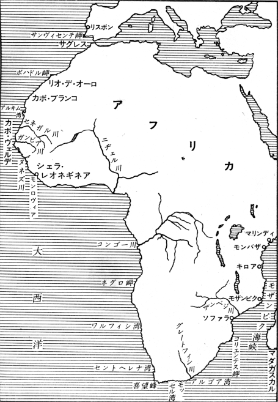
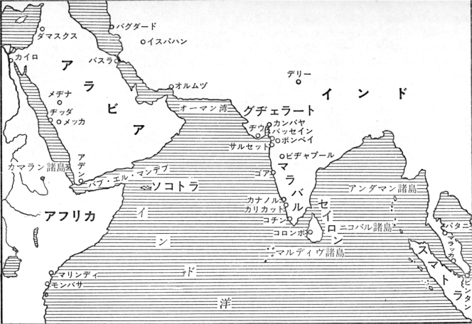
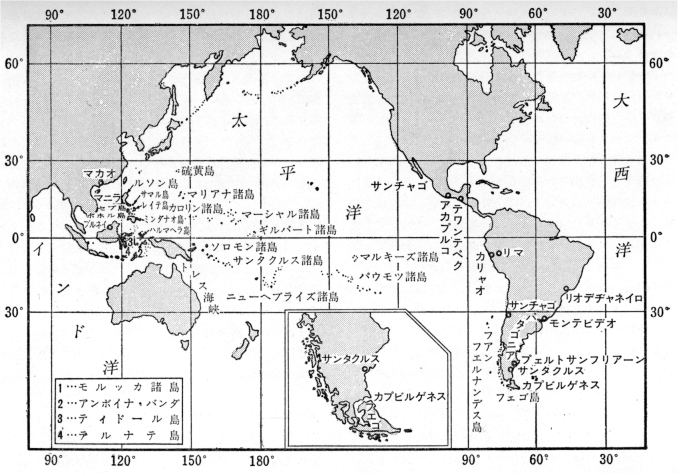
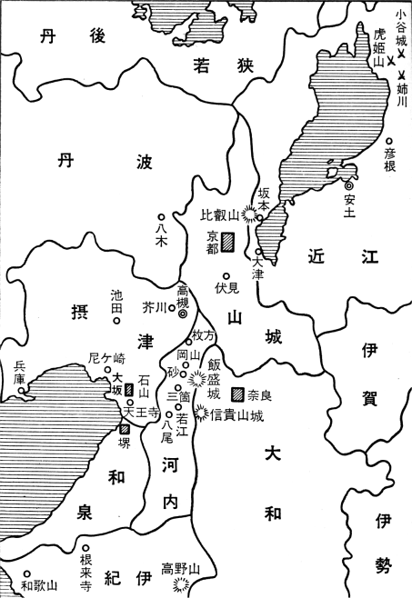
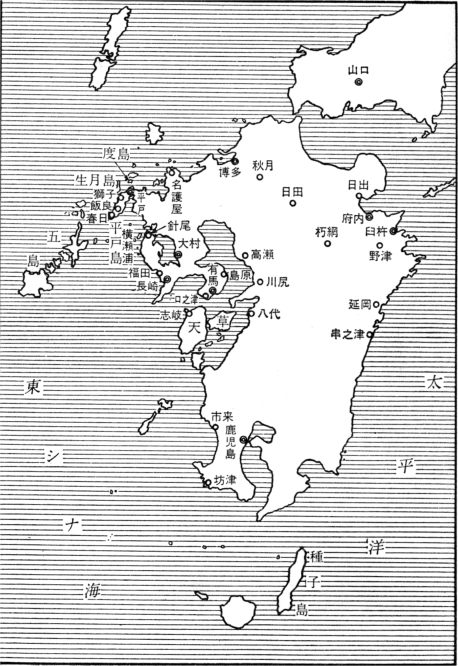

この書は近世初頭における世界の情勢のなかで日本の状況・境位を考察したものである。著者はその境位の特徴を最も端的に現わすものとして「鎖国」という言葉を選んだが、それはここでは「国を鎖ざす行動」を意味するのであって、「鎖ざされた国の状態」を指すのではない。後者は前者の結果として現われたものであり、また目下のわが国の情勢を考察するに際して参考となるべき多くの問題を含んでいるが、しかしそれはまた別の取扱いを必要とするであろう。
この書の内容をなす個々の事項は、それぞれの専門家によって既に明らかにされていることのみであって、何一つ著者が新しく発見したことはない。しかし、それらの数多くの事項をこの書のような聯関において統一し概観するということは、恐らく初めての試みであると思う。著者は日本倫理思想史を考究するに当ってその種の概観の必要を痛感し、頻りにそういう著述を求めたのであったが、得られなかった。偶々戦時中、東京大学文学部の著者の研究室において、「近世」というものを初めから考えなおして見る研究会を組織し、西洋と東洋とに手を分けて、十人ほどの仲間といろいろとやって見たとき、著者にほぼ見とおしがついて来たのである。その際西洋の側では山中謙二教授、金子武蔵教授、矢嶋羊吉教授、日本の側では古川哲史教授、筧泰彦教授、日本キリシタンについては勝部真長教授から多くの益を得た。爆撃下の東京において、或は家を焼かれ、或は饑に苦しみながら、この探究の灯を細々ととぼし続けたことに対し、右の同僚諸氏に深く感謝の意を表したい。
本書の前篇の資料として著者が使ったのはたかだか Hakluyr Society の叢書位のものであるが、しかし方面違いの著者がこの叢書に親しんだということには、妙な因縁がある。多分昭和十一、二年の頃と思うが、丸善からアコスタの The Natural and Moral History of the Indies を売り込みに来た。Edward Grimston の英訳で一六〇四年の刊本である。当時の相場でたしか百円位であったと思う。しかし一年の図書費が三百円ほどに過ぎない研究室としては、この購入は相当に慎重を要するものであった。またアコスタについて当時何も知らなかった著者は、この書の価値をも判じ兼ねた。そこで著者は一応この書を読んで見たのである。そうして、何の期待も持っていなかっただけに殆んど驚愕に近い感じを受けた。ところで購入のために重複調べをさせて見ると、アコスタの英訳本は既に図書館に備えつけてあった。それがハクルート叢書の復刻本である。ここで著者は初めてハクルート叢書の存在を知り、第一期刊行の百冊のうちだけでも実に多くの興味深いものが揃っているのを見出した。図書館にあるのは大正大震災後英国から寄贈されたもので、百冊のうち四十四、五冊に過ぎなかったが、しかしそれらは皆近世初頭の航海者・探検家の記録であった。アコスタの書で味を覚えた著者は、時折それらをのぞき見るようになったのである。
後篇の資料として使ったのは、主として村上直次郎博士の飜訳にかかるヤソ会士の書簡である。『耶蘇会年報』第一冊（長崎叢書第二巻大正十五年）『耶蘇会士日本通信』上下二巻（異国叢書昭和二・三年）『耶蘇会士日本通信豊後篇』上下二巻（続異国叢書昭和十一年）『耶蘇会の日本年報』第一輯（昭和十八年）第二輯（昭和十九年）など、既刊のものが既に七巻に達している。前のハクルート叢書の英訳本に当るものが、ここでは村上博士の和訳本であった。ポルトガル語もスペイン語も読めない著者にとっては、原資料に接近する道はそのほかになかったのである。右のほかにはなお友人故太田正雄君がイタリア語訳本から重訳したフロイスの年報（『日本吉利支丹史鈔』所輯）をも用いた。がこのように原資料に直接触れることの出来ない欠を幾分かでも補うために、日本吉利支丹史に関する諸家の研究をも、右の宣教師の書簡と対照しつつ読んで見た。それによって吉利支丹史研究家のやり方につきいろいろなことを知ることを出来た。それらの研究書のなかで、海老沢有道氏の『切支丹史の研究』（昭和十七年）及び『切支丹典籍叢考』（昭和十八年）からは特に多くの益を得た。
著者は前篇及び後篇で扱ったいずれの事項についても「研究」の名に価するほどのことをやったのではない。しかしこれらの事項を互に密接に結びつけ、その統一的な意味を概観する、という仕事は、著者にとっても相当骨が折れたのである。それによって日本のキリシタン史の諸事象や戦国時代乃至安土桃山時代の日本人の精神的状況につき方位づけを与えることが出来れば、日本人及び日本文化の運命に関する反省の上に、幾分役立つことが出来るであろう
昭和二十五年二月一日
著者
［＃改丁］太平洋戦争の敗北によって日本民族は実に情ない姿をさらけ出した。この情勢に応じて日本民族の劣等性を力説するというようなことはわたくしの欲するところではない。有限な人間存在にあっては、どれほど優れたものにも欠点や弱所はある。その欠点の指摘は、人々が日本民族の優秀性を空虚な言葉で誇示していた時にこそ最も必要であった。今はむしろ日本民族の優秀な面に対する落ちついた認識を誘い出し、悲境にあるこの民族を少しでも力づけるべき時ではないかと思われる。
しかし人々が否応なしにおのれの欠点や弱所を自覚せしめられている時に、ただその上に罵倒の言葉を投げかけるだけでなく、その欠点や弱所の深刻な反省を試み、何がわれわれに足りないのであるかを精確に把握して置くことは、この欠点を克服するためにも必須の仕事である。その欠点は一口にいえば科学的精神の欠如であろう。合理的な思索を蔑視して偏狭な狂信に動いた人々が、日本民族を現在の悲境に導き入れた。がそういうことの起り得た背後には、直観的な事実にのみ信頼を置き、推理力による把捉を重んじないという民族の性向が控えている。推理力によって確実に認識せられ得ることに対してさえも、やって見なくては解らないと感ずるのがこの民族の癖である。それが浅ましい狂信のはびこる温床であった。またそこから千種万様の欠点が導き出されて来たのである。
ところでこの欠点は、一朝一夕にして成り立ったものではない。近世の初めに新しい科学が発展し始めて以来、欧米人は三百年の歳月を費してこの科学の精神を生活の隅々にまで浸透させて行った。しかるに日本民族は、この発展が始まった途端に国を鎖じ、その後二百五十年の間、国家の権力を以てこの近世の精神の影響を遮断した。これは非常な相違である。この二百五十年の間の科学の発展が世界史の上で未曽有のものであっただけに、この相違もまた深刻だといわなくてはならぬ。それは、この発展の成果を急激に輸入することによって、何とか補いをつけ得るというようなものではなかった。だから最新の科学の成果を利用している人が同時に最も浅ましい狂信者であるというような奇妙な現象さえも起って来たのである。
して見るとこの欠点の把捉には、鎖国が何を意味していたかを十分に理解することが必要である。それは歴史の問題であるが、しかし歴史家はその点を明かに理解させてはくれなかった。歴史家が力を注いだのは、この鎖国の間に日本において創造せられた世にも珍らしい閉鎖的文化を明かにすることである。それはさまざまの美しいものや優れたもの、再びすることの出来ない個性的なものをわれわれに伝えた。それを明かにすることは確かに意義ある仕事である。しかしそれらのものの代償としてわれわれがいかに多くを失ったかということもまたわれわれは承知していなくてはならない。その問題をわれわれはここで取り上げようとするのである。
がその問題に入り込む前に、近世が始まるまでの、従って鎖国というようなことが総じて問題になるまでの、世界の歴史的情勢を概観して置きたいと思う。鎖国が問題になるのは世界的な交通が始まったからであって、一つの世界への動きは既にそこに見られる。鎖国とは一つの世界への動きを拒む態度である。従ってそれが問題になる以前の時代には、世界は多くの世界に分れていた。そうしてそのなかでヨーロッパ的世界が特に進歩しているというわけでもなかった。しかし近世の運動はヨーロッパから、始まったのであるから、先ずそこから始めよう。
ローマ帝国が地中海を環る諸地方を統一して当時のヨーロッパ人にとっての世界帝国となったとき、それはまたこれらの諸地方の一切の古代史の集注するところでもあった。それは地理的にも歴史的にも東と西との総合を意味している。この普遍的な世界において、普遍的な政治や法律や文芸や宗教が形成せられたのである。その普遍性がインド的世界やシナ的世界を含まず、従って真に普遍的となっていなかったとしても、彼らにとっての東方と西方との世界、そこに存するさまざまの民族、に対して普遍であったことは、疑いがない。またそれを通じて把捉せられた普遍性の理念は、その後の分裂的な民族国家や対立的世界に対して、常により高き人倫的段階を指し示すものとして作用することが出来た。
この普遍的な世界の崩壊は二つの方面から起った。一はゲルマン人の侵入であり、他はアラビア人の来征である。
ゲルマン人のローマ帝国への侵透は極めて長期に亘って行われた。初めは傭兵として部分的に入り込み、或は北方の国境地方に於て徐々に侵透しつつあったのであるが、四世紀末の民族大移動につれて旺然とローマ帝国内になだれ込むようになった。その或者は女子供や生活資材を携えた民族の集団がそのまま軍隊として行動したのであって、帝国を征服したというよりもむしろ帝国の版図内に入り込んで宿営したと云う方が当っている。彼らは土地の住民と妥協し、ローマ末期の宿営権に基いて、その土地の三分の一乃至三分の二を所有したのであった。従ってローマ人の権利や制度はその儘に残され、行政もゲルマン人が参加するのみでもとの儘であった。これは同じ土地に二つの生活が並存することを意味する。ゲルマン人は軍人であり、アリウス派であり、おのれの部族法に従っているが、ローマ人は非戦闘員であり、カトリックであり、ローマ法に従っている。かくてゲルマン人は、世界帝国の内部に新しい郷土を獲得したのであって、新しい国家を形成したとは考えていなかった。イタリアからスペインにまで拡がったゴート族やブルゴーニュの地名を残したブルグンド族などがそのよき例である。が他方には原住地を根拠地としてそこから帝国の版図内に植民して行く種族もあった。このやり方では、ローマ人と並存するのではなくして、むしろそれを征服したのである。後のフランスの基礎を置いたフランク族がそうであった。後のイギリスの基礎を置いたアングロ・サクソン族に至っては、ローマの習俗全部を壊滅せしめたと云われている。
こういう二つのやり方でゲルマン人は五世紀から六世紀へかけてローマ帝国の中へ無秩序に入り込んで行った。その間にフン族の王アッチラの来襲とか、ゲルマン傭兵の指揮者オドアケルによる西ローマ帝国の滅亡（476）とか、東ゴート族のテオドリックによるオドアケル討伐とか、ロムバード族のイタリア占領とかの如き事件が起り、ローマ帝国の西欧側は完全に壊滅に帰した。
がゲルマン諸族の侵入はその後もなお数世紀に亘って続いて居り、ローマ帝国の廃墟から西欧の文化世界が明白に形成されるまでには、なお三百年の年月と、そうして他のもう一つの有力な契機、即ちアラビア人の侵入が必要であった。
ローマ帝国の版図を東方・南方・西方に亘ってゲルマン人以上に広く侵蝕したのはアラビア人であるが、この東方からの侵入の起点はモハメッド（570―632）である。彼はセム族に普遍なアラー（Allah, hebr. Elohim）の信仰に新鮮な活気を与え、ユデア教やキリスト教の要素を取り入れて新しい民族宗教を作り上げた。それは一神への絶対服従の態度の故にイスラム（Islam）と呼ばれ、その信者（Moslem）は予言者及びその後継者（Kalif）を首長（Imam）として頂く固い宗教的共同体を形成している。その信仰の情熱は戦闘的な拡大を目ざす態度となって現われ、極めて迅速に西に向ってはローマ帝国、東に向ってはペルシアと戦端を開いた。そうして教祖の死後十年には既に西アジア全体とエジプトとをトリポリタニアまで征服した。アレキサンダー大王の作った『一つの世界』はここに崩壊し、東方と西方とを統一したローマ帝国もその東方を失い去ったのである。
かく急激に成立した宗教的戦闘的な世界帝国は、それが世界的となったまさにその理由によって、種々の変質や反動を閲せざるを得なかった。オマイヤ朝（661―750）はカリフの権威を倒して純粋に世俗的な支配を樹立したもので、国都をもメヂナからダマスクスへ移した。その頃からイスラムの内に持続的な分裂が引き起されたのである。が征服事業は依然として続けられている。東方は中央アジアや北インドまで、西方はアフリカ北岸を海峡まで七世紀の末に進出した。ヨーロッパへの侵入はまず初めにコンスタンチノープルを襲ったのであるが、八世紀の初めには西方スペインに侵入し、西ゴート族を打ち破って（711）半島全部を征服した。更にピレネー山脈を越えて（720）、フランスの中部にまで進出したが、これはフランク人によって撃退された（732）。しかしスペインに於けるイスラムの支配はこの後永い間続くのである。なおこれと並行して地中海の海上権力もまたアラビア人の掌握するところとなった。沿岸の諸地方や島々は彼らに侵略され、占領された。中でも目ぼしいのはシチリアの征服（827）である。こうして『東方』の力は『西方』の世界の心臓部に近く迫って来たのである。
西欧の文化世界の形成のためにアラビア人の侵入が必要であったというのは、この『東方』と『西方』との対立を指すのである。西欧の世界の形成のためにはまさにこの『東方』の圧力が必要であった。ローマ帝国に侵入したゲルマン諸族の間に初めて統一の萌しが見え、初めて国家を強力に形成したのは、前述のアラビア人の侵入を中部フランスに於てカール・マルテルが打ち破った頃からである。が重要なのはただこのような武力的圧迫のみではない。我々は当時のゲルマン諸族が文化的にはなお野蛮と呼ぶべき段階にあったのに対して、スペインに尖端を置くイスラムの文化が遙かに高い段階に達していたことを見のがしてはならぬ。
ゲルマン諸族は十一世紀に至るまでもなお野蛮であったと云われる。彼らはローマ時代の制度文物を荒廃せしめたのみで、おのれ自身は何ら新しいものを作り出し得なかった。従って彼らの侵入以来数世紀間の世界史的な出来事は、実はその侵入に悩みつつあったローマ人の力によるのである。その内特に注目すべきはローマの統一教会の強化発展であろう。元来キリスト教がローマ帝国に於て公認され、次で国教とせられるに至ったのは、ゲルマンの侵入よりあまり古いことではない。帝国の首都を東に移したコンスタンチヌス大帝がその統一の事業のためにキリスト教徒の勢力を利用し、その挙句この教を公の宗教として認許したのは三一三年であって、民族大移動の開始に先だつこと僅か六十年である。この皇帝は自らも信者となったために、在来迫害されて来たキリスト教は反ってローマ旧来の諸教よりも優勢となったが、しかし四世紀はなお異教との対立抗争に充たされている。テオドーシウス大帝がキリスト教以外の宗教を厳禁したのは三九五年であって民族移動開始後既に二十年を経ている。カトリック教会の最大の天才とも云うべきアウグスチヌスは実にこのゲルマン侵入の時期に仕事をしたのであった。彼の有名な回心は三八六年のことであり、彼の名著『神国論』は、四一〇年のアラリックのローマ劫略によって全帝国が狼狽し湧き返っているさ中に、この帝国と教会との危機を救うべく、四一三年から書き始められたのである。その直接の意図は帝国の危機をキリスト教の責に帰しようとする保守的なローマ人異教徒に対して駁撃を加えるにあったが、しかし彼の預言者的眼光は、ローマ帝国の崩壊と、かかる現世的流転を超越せる永遠なる神の国の姿とを洞見し、来るべき時代を予示している。即ち彼に於て帝国内の異教徒との戦が外より侵入し来るゲルマンの異教徒との戦と接続しているのである。『神の国』の著述は十五年の年月を要し四二七年に完成したのであるが、その後三年を経ずしてヴァンダル族は北アフリカの彼の町ヒッポへも押し寄せて来た。彼は敵軍重囲の内に四三〇年に死んだのである。がかく異教徒と戦うことは教会をますます強靱ならしめ、西ローマ帝国が亡んだ（476）後に反って精神的な世界帝国の理念を育成している。特にフランク族の王クローヴィスの改宗はこの傾向に拍車をかけた。元来ローマの司教は諸地方の司教と同じく papa と呼ばれ、それが帝国の首府に位置するという以外に特別の優位を持たなかったのであるが、その papa の尊称や使徒の座の資格を独占して『法王』或は『教皇』と訳さるる如き意義を帯びしむるに至ったのは、むしろこの時代以後のことなのである。それはローマ文明の荒廃と反比例して高まって行った。六世紀に於て学芸の伝統を保持していたのは、現世的に無力となり終った知識人の隠遁所としてその頃始められた修道院のみであったが、そこから出た教皇グレゴリウス一世（590―604）は、アングロ・サクソンの教化に成功したのを初めとして多くのゲルマン諸族をカトリック教会の中に取り入れ、ローマの司教を最高の司教として仰ぐに至らしめたと云われる。キリスト教が真に深くゲルマン諸族の中に根を下したのはなお三百年も後のことであるが、しかしゲルマン人の武力が現実を支配している西欧の世界に於て、文化的に着々とその発展を見せたものは、ローマの教会の他にないのである。
ところでこの教会の異教徒教化事業の最中に、西は北アフリカからスペインにまでも及ぶもとの帝国領が悉くモスレムによって征服され、そこに西欧に先んじて文化の華が開き始めた。ダマスクスのオマイヤ朝からバグダードのアッバス朝に代った頃がその始まりである。元来イスラムは東方のローマ属州を占領すると共にそこに残存したギリシア文化を熱心に吸収した。キリスト教によって殆んど窒息せしめられていたシリア地方のギリシア精神の如きも、イスラムによって解放され、力強く生き始めた。またイランやインドの文化圏も四方と密接に結びついて来た。九世紀に至ってイスラムの帝国が分裂したことも文化の華のためには好都合であった。というのは多くの主要都市が学芸や学校や図書館や天文台を守り育てる場所となったからである。先ずバグダードとバスラには最初の大学が出来た。東部イランでもニシャプール、メルヴ、バルク、ボハラ、サマルカンド、ガスナ、などが栄えた。その他イスパハン、ダマスクス、ハレブ、カイロなど。こういう広汎な文化交流を背景として、十世紀から十二世紀の頃にスペインではコルドバ、セビリャ、グラナダが、シチリアではパレルモが、文化の絶頂に達した。スペインには十七の大学があったと云われる。
こういう情勢の下に西欧より一歩先んじて発展したアラビアの哲学は、主としてアリストテレースに基き、また新プラトーン派を通じてプラトーンの影響をも受けていた。アラビア哲学の創始者として端的に『哲学者』と呼ばれていたアル・キンディは、数学者、医学者、天文学者でもあったが、八世紀の末にバスラで生れ、八七三年頃バグダードで死んだ。合理主義者であり自由思想家であったが故に多くの迫害を受けたと云われているが、アリストテレースの『オルガノン』の註釈を初め三十四種に上る哲学上の著述はあまり残って居らない。次で現われたファラビは九世紀の後半にトルキスタンのファラブで生れ、早くよりバグダードに来てアラビア語とギリシア哲学を学び、やがて自ら講義するに至った。歿したのは九五〇年ダマスクスに於てである。彼の著書は百種以上に上り大部分は失われたが、幸に『オルガノン』の註釈は残っている。彼の功績は、ギリシア哲学、特に論理学の理解に初めて深く突き入ったことであると云われる。がその解釈には新プラトーン派の影響がある。あらゆる後代の学者は、キリスト教のアリストテレース主義者さえも彼に基いている。この師のあとを歩いたのがイスパハンで医学と哲学とを教えたアヴィチェンナ（980―1037）である。彼はファラビの立場から出発しつつアリストテレースの教説に還って行った。個性化の原理である質料は、神からの流出でなく、それ自身永遠でありあらゆる可能性を包蔵する。この考を彼は貫徹しようと努めた。論理学・形而上学等の彼の著書は大部分既に十二世紀にラテン語に飜訳されている。こういう飜訳がなされるのはスペインに於ても既に哲学が盛行していたことを示すものであるが、この地で最初に現われたアラビア哲学者はアヴェンパチェ（1138歿）で、医学・数学・天文学等にも通じアリストテレースの註釈を書いた。その自由思想の故に迫害を受けたと云われるが、彼の立場は本能から神の理性的認識に至るまでの精神の発展を説くにあった。やや遅れて現われたイブン・トファイル（1185歿）も同じく医学者・数学者を兼ねた哲学者であって、同様に人間精神が、超自然的啓示によらず全然自然的に発展して自然及び神の認識に達する段階を説いた。その同時代の後輩としてかの有名なコルドバのアヴェロエス（1126―1198）が現われたのである。彼はアリストテレースを尊信すること厚く、人間に於ける完成の絶頂、我々が一般に知り得ることを我々に知らしむべく神の与えた人、と讃めたたえた。だから彼の仕事の中心もまたアリストテレースの註釈であって、その大部分はラテン訳によってのみ知られている。彼はアヴィチェンナの質料重視の立場を更に押し進め、形相は萌芽的に質料の中にあってより高き形相の影響の下に展開せしめられるのであると説く。また彼は理性の受動的側面を認めるアリストテレースの説に対して普遍的理性の両面即ち能動的理性と質料的理性とを説き、質料的理性といえども受動的ならざることを力説した。彼が汎神論的であると云われるのは、この普遍的能動的な理性が個々人に分れてその生存中の精神となり、死後はその本来の普遍性に帰るが故に、個人的霊魂の不滅は問題とならないと説いたためである。
これらのアラビア哲学は西欧中世の哲学に甚大なる影響を与え、スコラ哲学の隆盛を将来した。それはアヴィチェンナ及びアヴェロエスの著書とトマス・アクィナスとの密接な聯関によっても察せられるであろう。がこの点は後に問題とする。
哲学のみならず、数学・物理学・化学・医学・地理学・天文学の如き諸科学、及び歴史学・言語学等も、九世紀以来熱心に追究せられている。数学はギリシアの伝統に従って哲学の一部分として取扱われたが、現在のアラビア数字や代数学などはアラビア人が西欧に伝えたものである。地理学はイスラムの版図の広さや交易の隆盛に伴って中世の如何なる民族よりも進んでいた。歴史学に於ても十世紀以来すでに普遍史が書かれている。
その他なお我々は文芸美術の方面に於ても、また農工商の方面に於ても、多くの優秀な特徴を考えることが出来る。それらのすべてに於てアラビア人は、ギリシア人には及ばなかったとしても、同時代の西欧諸民族よりは遙かに優れていたのである。特に商業はその得意とするところであった。彼らは航海の力によってインド洋と地中海とを独占的に支配し、東西を結ぶ陸海の貿易路を悉くその手中におさめていたが故に、リスボンよりインドやシナに至る広汎な領域に於て諸民族の間の貿易を独占し、巨大な富を集めていたのである。
この絢爛たる『東方』の文化に対してゲルマン諸族の『西方』の文化はどうであったろうか。ローマの教会が世界帝国の理念を宗教的に継承し、西欧を精神的に統一し始めたことは既に説いたが、それはアラビア人が哲学を作り始めた八・九世紀の頃に於てもなおゲルマン人の心を十分に支配してはいなかった。八世紀初めのアングロ・サクソンの叙事伝『ベオヴルフ』や、サクソンの『ヘリアント』の如き九世紀の古ドイツ文芸などは、未だ全然異教的精神に充たされている。教会のドグマにはゲルマン人の歯が立たなかったのである。この間、イギリスのスコトゥス・エリゲナ（877歿）の如き西欧最初の独立的な思想家を出すには出したが、そういう学者はその時代には理解されず、教会から排斥された。
しかし十世紀の初めになると、ゲルマン人も漸くキリスト教を理解し始めたらしい。それは修道院の改革運動や神秘説の勃興となって現われた。がそれはファラビがバグダードで論理学の講義をしていた頃なのである。やがて十一世紀になるとパリに最初の大学が出来た。これが模範となって十二世紀以後には西欧の所々に大学が作られ始める。初めはギルド的な教師の団体として、やがては公の権力による設備として。それはアヴィチェンナが東方に現われ、スペインに於てアリストテレースが講義せられている頃なのである。西欧に於てはカンターベリーのアンセルムス（1033―1109）がスコラ哲学を始めるに至った。がかくキリスト教が理解せられ始めると共に世界史上の最も注目すべき事件の一つである十字軍（1095以後）が惹き起された。西欧の文化世界の形成とこの十字軍とはひき離して考えることが出来ない。そうしてこの十字軍こそ『東方』と『西方』との対立を露骨に具体化したものなのである。
この現象の理解のためには、ゲルマン諸族の本来の生活要素たる『戦闘的なるもの』が、ローマの教会の教化のもとにどうなって行ったかを見ることが必要である。ゲルマン人にはもと一つの平等な身分、即ち自由な、防衛的な、農民があった。（十二世紀に至っても北方の国々はそうであった。）然るにローマ帝国への侵入の時代に王や有力な首領やその従臣（vassal）などが出現し、やがて非戦闘的になった農民大衆と、王侯に奉仕する戦士とが分離するに至った。それに加えて十世紀頃から主君が手下の戦士と共に城（Burg）の中に住むようになる。また小さい領地が世襲になって小さい従臣たちが経済的にも社会的にも浮び上ってくる。更に数多くの自由なき家人の俸禄としての領地も真の領地の如く取扱われるようになる。これらの事情から素姓の別は稀薄となり、騎馬の武術という共通の生活が表へ出て来た。かくて自由を持たなかった従卒や家人は自由なる農民の上に出で、公侯や騎士の貴族階級に近づき、反対に、騎馬の勤めをせず代りに税を払っていた自由なる農民は隷属の地位に落ちた。この身分の対立は氏族の対立を押しのけてしまう。騎士は農民を軽蔑し憎んでいる。軍隊はただ騎馬の軍隊である。かくして封建制度は、暴力的な、また冒険的な、職業戦士階級を産み出したのであった。
このような封建制度が形成せられて行く丁度その時期に、右の如き戦士たちはローマの教会に指導されつつ、スペインに侵入したアラビア人と対抗したのであった。スペインは絢爛たる東方文化の西方への尖端である。この地に於けるアラビア人は最初土地の住民に対して極めて寛大で、財産にも言語にも宗教にも手を触れなかった。下層階級はアラビア人の支配によって反って安楽となった。上層のものも多くイスラムに帰依したが、改宗しないキリスト信者と雖、ただ税を払うだけで、信仰や法律上の権利はもとのままであった。そういう状態であるから、東方で倒されたオマイヤ朝の苗裔が逃げて来た時、民衆は歓呼を以てこれを迎えた。この王のもとにコルドバを首都として建てられた（755）国は、学芸を奨励し、農工商の平和な発展を保護したが故に、着々として文化がすすみ、十世紀にはその絶頂に達した。今や数々の繁華な都市がこの国土を飾り、モハメダン支配下のスペイン全体で人口は二千五百万に達したろうと云われる。中でもコルドバは人口五十万、戸数十一万三千、三千のモスクや華麗な宮殿があった。がグラナダ、セビリャ、トレドなどもそれに比肩し得る町々である。それらを初め地方の諸都市に大学・図書館・アカデミーなどが営まれたのであった。この文化燦然たるサラセン王国に対して西欧を護るゲルマン族は、最初のサラセン侵入をスペインの北岸地帯で漸く喰いとめた西ゴート族のアストゥリアスのほかは、主としてピレネー山脈の麓に小さいキリスト教国を建てた。ナバルレ、アラゴン、カタロニアなどがそれである。アラビア人の寛容な政策に化せられて、最初の間は宗教的対立はさほど強烈でなく、キリスト信者たる王がサラセン女を母とし、キリスト信者たる公侯の娘がサラセン人の妻となっている如き例も少くない。カリフの部下にキリスト信者があった如く、キリスト教の王の下にモハメダンが仕えていた。民衆も十字架と半月との戦には冷淡であった。むしろ征服された領土の回復のための戦、その戦を通じての封建制度の発展の方が主要事に見える。ゲルマン族の戦士たちは、その力と勇気とを奮って、おのれよりも文化の優れたる民族の手からおのれの祖先の地を取り返そうとしたのである。かくして十世紀から十一世紀へかけてアストゥリアスはスペインの中部にまで進出し、カスティレと呼ばれるに至った。十一世紀の中頃には既にカスティレ王がスペイン皇帝と称するに至っている。
ローマの教会はこの戦を常に信仰の戦として把捉せしめようと努めている。その努力が効を奏し、『東方』との戦を十字軍として実現するに至ったのは十一世紀末であるが、それと共に十二世紀に於てはサラセン人の
以上によって明かなように、ゲルマン諸族に於ける戦闘的性格が騎士の姿を取って現われたことは、教会の教化によるのではない。がかくして現われた騎士は信仰の守護者として教会のための戦士となっていた。それを示すのが十字軍である。スペインの騎士が長期に亘って体験したことを、十字軍は西欧全体に押しひろめた。がそれは、スペインの騎士がイスラムに征服された国土を奪還しようとして戦った如く、イスラムに征服せられたローマ帝国の版図を奪回しようとして企てられたのではない。スペインの騎士が後に自らをキリスト教の守護者として感じ始めた如く西欧の諸王が『キリスト教を奉ぜる王』として、教皇の指導のもとに、聖墓奪還を目ざして軍を起した、それが十字軍なのである。それは全く不思議な現象であった。サラセン人やビザンツ人の眼から見ればなお野蛮人に過ぎないヨーロッパ人が、単純に宗教的な情熱から、一切の街道を充ち塞ぐほどに群をなして遙々と東方の世界へ押し寄せて行く。中には婦人子供をさえも伴っている。この狂信と献身との不思議な結合によって、一時はエルサレムが征服され、そこに王国が建設せられた。しかしやがてイスラムの国に於てトルコのセルヂュック族が国内の統一を強化し始めると共に、十字軍士の建てた国も危くなり、第二第三と起された十字軍も効を奏せず、パレスチナは再び失われた。その回復のために更に二度三度と遠征が企てられる。かくて十字軍の騒ぎは前後百六十年に亘ったが、結局その目的を達し得なかった。
しかし十字軍が西欧の形成に対して担っている意義は甚大である。それは西欧が一つの統一的な世界であるという自覚をはっきりとヨーロッパ人に植えつけた。この自覚はまた『東方』がおのれに対立する世界、おのれの外なる世界であるとの自覚であり、そこから東方に対する永続的な衝動が生れてくる。この自覚と共にまた教皇の権威は皇帝の上に出で、西欧キリスト教的世界に君臨するに至った。ここにローマ帝国と異った独自の西欧帝国が明白に仕上げられたのである。
西欧中世文化の絶頂は十二・三世紀の頃であるが、それは丁度十字軍の時期にほかならぬのである。騎士道が完成されたのもこの時期であり、しかも特徴的現象として、パレスチナやスペインの如き東方との闘争の前線に於て、騎士団が形成された。これは騎士を僧団的に組織したものであって、戦闘的ゲルマン的なるものと宗教的謙抑的なるものとの結合だと云ってよい。かかる騎士団は、やがて西欧全体に拡がり、夥しい財産の寄附を受けた。それによっても知られるように、騎士道は西欧全体に通用する国際的なものである。この騎士道の文芸的表現もまたこの時期に起った。アラビアの吟唱詩人の影響の下にまず南フランスから『トゥルーバドゥル』が起ってくる。同じくプロヴァンスの抒情詩も、迅速にスペインやイタリアにひろまり、北フランスやドイツの抒情詩の模範となった。北フランスでは、聖盃伝説と結びついたアーサ王の円卓騎士の物語や、サラセンとの戦を背景とするローランの物語などの英雄叙事詩が作られた。これらには十字軍的な観念が強く現われていると云ってよい。
学問に於てもそうである。教会の哲学を完成し、カトリックの模範的哲学者として尊崇せられているトマス・アクィナス（1227―1274）に於て、我々は烈しい十字軍的態度を見出すことが出来る。元来トマスはアリストテレースの開展の思想を取って教会の哲学を組織したのであるが、そのアリストテレースの大きい著作は十二世紀に至るまで西欧に知られていなかったのである。それがスペインに於てアラビア語からラテン語に重訳せられ、アヴェロエスの註釈のラテン訳と共に西欧に紹介せられたのは、十二世紀の末の頃である。十三世紀にはこれに基いてアリストテレースを解釈する一つの学派が成立した。その特徴は個人的な霊魂の不死を認めず、普遍的理性に於て不滅であるとした点にある。教会は最初アリストテレースの研究を喜ばず、それを禁止すること三度以上に及んだのであるが、やがてアリストテレースの体系が教会の信条と結合され得ることを見出し、その摂取を企てるに至った。この大勢の下にトマスはアリストテレースの研究に入ったのであるから、アラビア学者からの影響は避けるわけには行かなかった。彼の師アルベルトゥス・マグヌス（1193 or 1208―1280）はアヴィチェンナのアリストテレース解釈の方法を学び、アリストテレースの著述を解り易く云い換えようと努めたが、しかしトマスはアヴェロエスの方法を学び、アリストテレースの言葉の意味を出来るだけ忠実に再現してその思想内容を把捉しようと努めたと云われる。これには異論もあり、トマスの方法は聖書解釈の方から来たと論ぜられているが、併しトマスのアリストテレース研究も最初アラビア哲学者の労作に基いたこと疑いないのである。然るにトマスのアリストテレース註釈の仕事の特徴はアヴェロエスに対する攻撃にある。彼はアヴェロエスを以てアリストテレースの真意に反し真意を誤るものとした。従ってアリストテレース哲学からアヴェロエス的解釈の殻を取り去ることが彼のアリストテレース註釈の主要任務とさえなった。アヴェロエスに対する烈しい攻撃が最初に現われてくるのは、Summa contra Gentiles であるが、これはスペインのアラビア人やユデア人の間に伝道するドミニカンのために論難攻撃の教科書として書かれたものである。丁度この書の著述の頃にトマスはギリシア原典からのラテン訳にもとづいて独立にアリストテレース研究を始めていた。アヴェロエスのアリストテレース解釈が誤謬であることを彼は右の根拠から指摘したのである。更に晩年トマスが再度パリの教職に就いたとき、大学のアヴェロエス派と対立することによって一層アヴェロエス攻撃の熱が高まった。当時の著 De unitate intellectus contra Averroistas（1270）は、アヴェロイズムに対して教会の教理を守ろうとすると共に、またアヴェロエス派的解釈によって危険思想家にされ兼ねないアリストテレースの真実の姿を守ろうとしている。このように最大のスコラ哲学者のアリストテレース解釈はアヴェロエスに対する戦という旗の下になされた。そうしてアヴェロイズムに対する学問的征服が聖トマスの功業の一つであった。ここに我々は、異教徒アリストテレースを教会の哲学者とイスラムの哲学者とが奪い合っている、という事実に面接するのである。それは古代の世界帝国の遺産を『東方』の手から『西方』が奪い返そうとする運動にほかならない。即ち十字軍と同じ動機が精神的世界にも現われているのである。
かくの如く十字軍的観念によって教会の指導の下に西欧が一つの統一的世界として自覚されたということの最も巨大な記念碑はダンテ（1265―1321）の神曲であると云ってよい。元来この種の世界的古典は、ホメーロスやシェークスピアやゲーテなどの作品に於ても同様であるが、それの作られた時代と社会とが相続して持っている世界の文化の綜合を表現したものである。神曲もまたギリシア・ローマの古代の文化、及び『東方』の文化を、中世の西欧、特にイタリアの文化の中に渾融し、それを教会の精神に於て極めて独特な仕方で統一している。この作品の輪郭をなす地獄界、浄罪界、天堂界の幻想の中にペルシアあたりの幻想が力強く流れ込んでいること、従って仏教に流れ込んだ地獄極楽の幻想と源泉を同じくするらしいことは、それ自身極めて興味ある研究問題であるが、この輪郭の中にはめ込まれた豊富な世界史的内容が教会の立場から価値づけられて地獄の底から九天の高所に至るまでの実に顕著な高下の差別の中に配列せられているのを見る時、我々はこの詩の幽幻な美しさにも拘らずなお十字軍的な烈しい精神を感ぜざるを得ない。神曲の神学的構成の基礎にトマス・アクィナスの体系、特に Summa contra Gentiles が用いられているのも故なきことでない。もとよりトマスは中世最大の哲学者に相違ないが、しかし彼がその師アルベルトゥス・マグヌスなどと共に高く天堂の第五天（火星天）に栄光に充たされて位しているのに対し、ソークラテースやプラトーンやアヴィチェンナやアヴェロエスが低く地獄に落されていることは、何としても偏狭の見と云わざるを得ない。同様にイェルサレムの大虐殺や南フランス全体の大劫掠を伴った十字軍の戦士たちが、トマスよりも更に高く第七天に於て燦然たる光となって輝いているに対し、東方を一つの統一的世界に形成する力の源となったモハメッドが、地獄の奥底たる第九圏に間近いところで、人類の間に分裂や殺し合いをひろめた罰として、頬から口まで切り裂かれ、腸や心臓を露出して苦しんでいることも、あまりに党派的な見方と評せざるを得ない。このような評価の体系は、少くとも西洋の古代に関しては、ルネサンスに至って全然覆えされたのである。
十字軍の影響としてはなお他に都市の勃興、市民階級の形成をあげて置かなくてはならぬ。既に十世紀頃より純粋の農民的自然経済は崩れ始め、手工業と商業とが再び栄えようとしている。経済的意味に於ける都市生活は、ローマ時代の都市が僅かに名残りを留めていた南方に於て、十世紀の頃に始まり、次で十一世紀には北方にもひろまった。そこでは都市の住民――商人、手工業者、召使、家来などが結合して市民共同体をつくり、自治権を獲得した。それは司法、警察などの組織から防衛隊の結成にまで及んでいる。こういう自治的な都市が教会や封建君主の権力と戦って漸次自由都市としての存立を獲得して行ったのが丁度十字軍の時期なのである。十字軍による輸送や交通や貿易の活溌化は必然に都市の活動を刺戟し、急激にそれらを発達させた。特にイタリアの諸都市が顕著であった。ヴェネチア、アマルフィ、ナポリなどは既に九世紀の頃から海に進出してアラビア人に対抗していたが、十一世紀にはそれをイタリアの島々から駆逐した。これは東方への反撃の先駆と云ってよい。十二世紀にはピサやジェノヴァが進出して東方との貿易に加わった。こういう海上の勢力が十字軍と結びついて急激な海運都市の勃興となったのである。フィレンツェ、ミラノなどは海に沿っていないが、しかしその興隆は貿易に基いている。イタリア以外ではマルセーユ、バルセロナなどが海運都市として興ったが、十三世紀に至るとブルージュ、ガンなどを初めとしてライン河畔やダニューブ上流、北海・バルト海沿岸などに多数の都市が出現する。そういう都市の隆盛と同時に市民共同体の内部には種々の職業団体（ギルドやツンフト）が発達し、外部には都市同盟が盛んになる。やがて十四・五世紀に於ては、かかる都市の内部に於ける民主主義運動や外部に於ける国際関係からして近代国家に関するさまざまの思索が現われてくるのである。かく見れば十字軍の刺戟によって起った都市こそ、西欧を近代化する母胎であったということが出来る。その母胎の近代初頭十五世紀に於ける情勢は、パリ、ナポリ、パレルモ、ヴェネチアのみが人口十万以上、ローマ、フィレンツェ、ジェノヴァ、ブルージュ、ガン、アントワープなどが五万乃至十万、リュベック、ケルンが五万、ロンドンが三万五千、ニュルンベルクが三万であった。
以上の如く『東方』との対立に於て出来上った西欧の統一的世界は、この対立によって形成を促進されたというまさにその理由によって、また崩壊に面しなくてはならなかった。十字軍は前にもいった如くゲルマン諸族の戦闘的性格が教会の理念を通じて表現せられたものであるが、それによって教会の統治が強化されると共にまた戦闘的性格そのものも醇化した形に展開せざるを得なかった。それは世俗的な国家生活の発展や自由な人間生活の形成に於ける無限追求の精神である。教会的統一の形成のために必要であった精神的閉鎖性は、今やこの無限追求の精神にとっての束縛となり、それを破る努力を呼び醒してくる。一切の自由な思索を禁圧し、理性を牢屋に閉じ込めていた教義の支配は、今や揺り動かされねばならぬ。この支配の下に固定させられていた社会組織や、情意の自然的な活動を抑圧されていた個人の生活は、今や解き放されなくてはならぬ。かくて西欧の統一的世界を打ち破り、人間性を解放しようとする運動が、ルネサンスとして爆発し、近代ヨーロッパを産み出してくるのである。
この運動は十四世紀の初頭に先ず教皇権の王権に対する敗北となって現われた。十字軍の経験から最初に中央集権策によって国家を強化しようとし始めたフランスの国王が、教皇を制御するに成功し、更にそれをアヴィニヨンに移したのである。教皇が西欧に君臨するという権威はここで倒れた。西欧が一つの統一体であることはここに終りを告げ、それに代って民族的統一が現われ出ようとする。しかしそれは一朝一夕に近代国家にまで発展したのではない。対外的には国と国との間の戦争が頻々として起り、内部に於ては僧侶と貴族と都市との間の激しい闘争がくり返され、それを通じて漸く近代国家が形成されるのである。
この道程に於てイギリスの憲法マグナ・カルタの制定は劃期的なものであるが、しかしこの制定によって直ちに国内の混乱が止んだのではない。議会制度は未だ国内の秩序を維持する力を持たなかった。教皇権と共に中世を標徴する騎士の階級は、今や崩壊の時期に瀕して、その最も悪い面を示し始めた。それはヨーロッパ全体に亘っての現象である。騎士は恣にその城壁から出て通りすがりの旅人を掠奪する。城郭にたてこもる貴族は何人の統制にも服しようとしない。こういう混乱のなかでわずかに秩序を保ち得たのが、新興の勢力としての都市であった。それは団結によって市民の生活を護り、秩序によって暴力に対抗し、そこから近代ヨーロッパを産み出して行ったのである。
この形勢に於て先駆的役割をつとめたのがイタリアであった。十字軍の影響の下に急激に勃興した諸都市は、それぞれ独立の自治組織を形成したが、今や皇帝権も教皇権も崩壊し去るに及んで、国家としての態度を整えて来たのである。中でも強力なのは、ヴェネチア、フィレンツェ、ミラノ、ローマ、ナポリの五国であった。中世の標徴たる騎士はここでは早くより消滅し、それに代るものとして傭兵とその首領（Condottiere）があるのみであった。それは社会に於ける一定の身分ではなく、報酬に応じてどの国家のためにも戦争に従事する一種の企業家である。国家はここでは身分の差別の殆どない市民によって構成され、多くは共和制を取った。勿論そこには市民共同体全体を包む純政治的な組合組織を形成したフィレンツェの如きもあれば、確乎たる貴族政治を樹立したヴェネチア共和国の如きもある。がいずれも近代国家の風貌を供えていることは否定出来ない。この中にあって国家の問題を深く考えたフィレンツェのマキアヴェリが、その後のヨーロッパ近代国家に対してさまざまの示唆を与え得たのは故なきことでない。
しかし狭いイタリアの中に数多くの小国家が並立して相争い、また絶え間なくスペインやフランスからの侵入を受ける情勢にあっては、国民的国家としての近代国家はここに見出すことが出来ない。それはイタリアの民族全体にとっては分裂・争闘・残虐・不安に充ちた生活であった。しかもその中からイタリア人は、ギリシア盛時にも比肩すべき華々しいルネサンスの文化を作り出したのである。この視点から見れば、争闘と残虐に充ちたその生活は、人間性解放の一つの現われと解せられるでもあろう。チェーザレ・ボルヂアに於て最も強健な超人的性格を見出そうとする如き見方は、まさにその代表的なものである。十字軍を背景として産み出されたイタリア諸都市の文化は、文弱なものではあり得なかった。地獄の苛責を以て人を嚇かそうとする教会の権威を大胆にはねのけ、ただ異教的な古代の文化にのみ親縁を感じつつ、しかもその古代人以上に人間的な美を結晶させようとしたルネサンスの芸術家は、すべて強剛な豪胆な個性の持主であった。イタリアのルネサンスの偉大さはこの『強さ』に基くところ少くないのである。
イタリアのルネサンスの本質的な特徴は、個人の発展、古代の復活及び世界と人間の発見において認められている。中世人が外界をただ教会の教に従って空想的にのみ理解し、自己をただ何らか全体的なものの一分子としてのみ感じたのに反し、ルネサンスのイタリア人は外界を客観的に直視し、自己を独立の個人として自覚し始めた。十三世紀が終ると共に突如としてイタリアには個性的人物が簇出し始める。既にダンテがそうであるが、都市国家の政権を握るデスポットや軍隊を率いるコンドチェーレの如き著名な人物のみならず、一介の市民にさえもこの傾向が見られる。これは云わば中世人に対する『神』の代りに『自然』を置きかえた態度なのであるが、ここにこそ近代ヨーロッパ文化の出発点があるのである。しかし、外界を客観的に眺めたからと云って直ちに自然的精神的世界の認識に徹し得るものではない。ここに指導者として入り込んでくるのが古代である。そこには神話伝説の代りに厳密な学問があり、教の代りに無限追求の精神がある。叙事詩や歴史は朗らかで自然的な人間の生活を鮮やかに示してくれる。それによって育成されたイタリアの精神は、やがて外的世界の発見に向い、中世の閉鎖的な眼界を打ち破ろうとするのである。既に十字軍の遠征はヨーロッパ人に遠い国々への衝動を植えつけたのであるが、その衝動が最初に知識欲と結びついて冒険的な旅行に出で立たせたのは、イタリアに於てであった。それはイタリア人が地中海の航海と貿易とに早くより乗り出し、東方の国々に馴染んでいたせいでもあるであろう。既に十三世紀の末にマルコ・ポーロ（1254―1324）はシナまで旅行した。その後発見のために海外へ乗り出して行ったイタリア人は枚挙に遑がないと云われる。彼らは皆先駆者の思想や意志を継承し、それに基いておのれの計画を立てたのである。そういう中から遂にコロンブスを出すに至ったのは決して偶然でない。
この発見の精神はまた近代の自然科学を出発させた。既に北方に於ても十三世紀にアルベルトゥス・マグヌスは物理学・化学・植物学等についてのかなりの知識を示して居り、またイギリスのローヂァ・ベーコン（ca. 1214―ca. 1294）はアラビアの自然科学の影響の下に現象の真の聯関についての驚くべき洞察を見せ、自然観察に帰るべきことを説いてスコラ的体系に容赦のない攻撃を加えている。これらは近代自然科学の先駆者に相違ないが、その時代その社会からは理解されず、後者の如きは迫害をさえ受けた。しかるにイタリアでは自然の観察探究が国民全体によって歓迎された。ダンテの神曲のなかに含まれている詳しい天文学的な知識は、その時代の読者には常識に過ぎなかったのである。そういう背景のもとに経験的自然科学はイタリアに於て最も早く進んだ。教会の干渉も北方に於けるほど甚しくはなかった。かくて十五世紀の末にはパオロ・トスカネリ（1397―1482）、リオナルド・ダ・ヴィンチ（1452―1519）などを出し、数学・自然科学に於てヨーロッパに並ぶものなき先進国となったのである。そうしてそのトスカネリこそコロンブスに西廻りインド航路の考を与えた人であった。
この発見の運動は、近代ヨーロッパが中世の閉鎖性を破って外に進出するという傾向を最も直観的に示しているものであるが、それを力強く実行に移したのは、イタリア人ではなくしてスペイン人及びポルトガル人であった。即ち『東方』との争闘の中に成り立った国々、『東方』との戦の最前線にいた民族が、今や新しく『海外十字軍』を始めたのである。そうしてこの事業こそ近代ヨーロッパを形成する最後の重要契機にほかならない。我々は近代ヨーロッパの考察をそこから始めたいと思う。
以上概観した歴史的経過は、東方と西方の合一と対立とを含むとは云え、我々の住む東亜文化圏とはかかわりがない。東方は漸くインドに触れるのみで、マルコ・ポーロの頃に初めてシナと日本をその眼界に含ませてくるのである。しかしインド及びシナの文化圏は、実質上西方の文化とさまざまの交渉を持っているのみならず、ヨーロッパの文化圏に対して決して劣らない世界史的意義を担っている。にも拘らずそれが対等の取扱いを受けないのは、近代ヨーロッパとの接触以後に、相拮抗するだけの文化的発展をなし得なかったからである。我々はその点をも簡単に通観して置かなくてはならない。
インドはローマ帝国の世界統一の時代には、同じくギリシア風要素を摂取した高度の文化を以て、それ自身の視圏内に於て統一的世界を形成していた。大乗仏教の結構壮大な哲学や文芸や美術はこの時代の創造にかかるものである。のみならずその活動はローマの世界統一よりも永く続いている。中観哲学と瑜伽行哲学との創成は既に四世紀までに終っているが、しかし西ローマ帝国の滅亡の頃にはなお中観派と瑜伽行派との哲学者たちの活動は活溌に続いているのである。両者が学派として明白に対立するに至ったのは、むしろ六世紀の事に属する。真諦や玄奘がシナに伝えた仏教哲学はこの時代の学者の解釈を通じたものである。七世紀からは漸く衰頽時代に入っているが、それでも真言系統の象徴的哲学が起っている。そうしてそれらはヒマーラヤの彼方に移って新鮮な活力を発揮するに至った。しかし西欧が漸くその独自の文化を作り始める頃にはインドはその頽廃の底に達し、やがて十世紀の終り頃にはマームードの征服に遇うに至った。その後は『東方』の世界の一契機に過ぎなくなる。
シナに於てローマ帝国に比肩するものは両漢の帝国である。それは古い周の文化を継承しつつも戦国時代以来外来的要素を取り入れ、当時の東亜全体に及ぶ統一的世界を形成した。それは黄河流域の狭い区域に限られた周代の世界に対して全然新しい世界である。この広汎な統一的世界の形成がシナ文化にとって如何に決定的な意義を有するかは、シナの民族を漢民族と呼び、シナ文字を漢字、シナ語を漢語と云い慣わしていることによっても知られるであろう。シナの民族はその後数々の新しい要素を加え、漢代のそれと決して同じものではない。シナの言語もそうである。しかもそれを我々は漢の名に於て統一的に把捉するように習慣づけられているのである。
この統一的な世界はローマ帝国よりも一歩早く三世紀に崩壊した。あとに三国時代が続き、やがて盛んに異民族の侵入をうけることになる。民族運動による混乱も西方よりは一歩早く、既に四世紀の初めには外蛮が中原を制している。混乱の時期は西方と同じく三百年以上に及んでいるが、その収拾の仕方は西方と同じではない。西方に於てはローマの文化は殆んど破壊され、ローマ人の征服民族に対する文化的逆征服は本来ローマ的ならざるキリスト教を以てなされた。然るに東亜に於ては漢文化はそれほど破壊はされなかった。次々に入り込んで来た外蛮は大体に於て漢文化に化せられる。言語さえ漢語を使うようになる。従って民族渾融による新しい文化の創成は、漢文化を土台としてなされたのである。勿論それによって漢文化自身も顕著な変化を受けなくてはならなかった。かくて西方より一歩早く、七世紀の初めに華々しく開き始めたのが隋唐の文化である。
我々はこの隋唐の文化が民族の渾融によって新しく創成されたものであるという点を忘れてはならぬ。隋室の祖先は北狄の間に育ち、少くとも母系には北族の血を混えている。唐朝の李氏も蕃姓と見られ得る。そうしてその部下の有力者中には異民族のものが多かった。隋唐の文化はそういう異民族の協働の下に外来の要素を盛んに取り入れつつ形成せられたのである。インドの哲学・宗教、ペルシアの思想・芸術、林邑の音楽・物資等は旺然として隋唐の文化に流れ込んだ。かくして唐代の詩や絵画や美術に見られるような豊醇な様式が作り出され、或は唐代の仏教哲学に見られるような壮大な体系が建立せられたのである。それは漢文化とは顕著に異ったものであるが、しかしシナに於て創られた文化としては最高のものであり、また当時の世界全体に於てどこにも比類を見出し難いほど醇美なものである。七世紀より九世紀に至る西方の文化が遙かにこれに劣ったものであることはいうまでもなく、アラビアの文化も到底是に及ばない。従ってこの文化の影響は東亜全体はいうまでもなく、遠くアジアの西の方に及んでいるのである。
この文化は西欧がその固有の文化を展開し始める前に既に終末に達した。それには契丹などの外蛮の国の勃興や、トルコ族の国内に於ける跳梁なども有力な契機となっているが、今度は混乱僅かに半世紀余にして宋の統一（960―1279）を実現した。しかしこの統一は唐代に於ける如く東亜の世界全体に亘る広汎なものではなく、外囲に契丹等の異民族の国を控えて、シナ固有の版図（後にはその半ば）に集約的な文化を形成したものである。従ってそこには再びシナの土地に固有な色彩が蘇って来たように見える。仏教が著しくシナ化されて禅学となり、儒教が再び活溌となって仏教の影響の下に形而上学を発展させた如きは、そのよき例である。これらはいずれもシナ独自の創造として重視さるべきものであろう。が特に注意すべきことは、この宋の文化が西欧の中世文化とほぼ時を同じくするに拘らず、西欧の中世を特徴づける封建制度がここには存しないことである。宋の政治は意識的に武力の支配を排除し、民衆の活力を開放した。そのために商工業は栄え、農民の地位は向上し、都市生活は頗る繁華となった。かかる点に着目してここに既に近代的傾向を見ようとする学者もある。それにはなお他に都合のよい事実を数えることも出来るであろう。火薬や羅針盤の発明、印刷術の大成などは、西欧よりも遙かに早く、宋代に於て実現された。しかもその印刷術の如き、一切経の出版という如き大事業をさえもなし遂げている。地理的な知識も、遠く地中海の沿岸、エヂプト、シシリー、スペインにまで及んでいた。そういう傾向の総括として儒教の大成者朱熹（1130―1200）は格物致知を力説している。それも近代の黎明を示していはしないか。なるほどそうも云えるであろう。しかしその格物致知の精神にも拘らず、東亜の世界には西欧の近代科学の如きものは起らなかった。火薬や羅針盤や印刷術に先鞭をつけながら、それによって近代の技術や思想の解放などが促進されず、逆にそれらを伝えた西欧人のためにそれらの力を以て圧迫されてしまった。ここに大きい問題があると云わねばならぬ。朱熹はトマス・アクィナスよりも二世代ほど早く現われ、トマスと同じくその時代の哲学の大成者となった人であるが、格物窮理によって近代を先駆するというよりも、むしろ中世的な経典解釈の態度に於てトマスに酷似する。朱熹に対する経典や聖人の権威はトマスに対する聖書やキリストの権威と毫も異るところがない。従って宋の文化は全体として西欧の中世よりも進んでいるに拘らず、最も重要な点に於て依然として中世的であり、西欧近代を特徴づける思想の自由・無限追求の精神を欠いているのである。
しかしそれはシナ民族の性格によるのであろうか。或は時代がまだそれほどに熟していなかったことに基くのであろうか。この点は重大な問題として慎重な考察を要すると思うが、とにかく運命は丁度このあとへ右の如き発展を不可能ならしめるような情勢を与えた。それは蒙古人によるシナ征服である。チンギスカンに始まる蒙古の勃興、世界征服の事業は、ヨーロッパに対しては一時的な挿話に終った（1236―1243）が、西南アジアよりシナにかけては重大な影響を与えた。クビライがシナ征服を完成した頃（1260―94）には、西欧、インド、エヂプト、日本を除いて、当時知られていた限りの世界全体を統一し、世界史上空前絶後の大帝国を建設したといわれる。しかし蒙古人自身は見るべき文化を持たなかったのであるから、その征服は破壊的な効果をしか与えなかった。シナに於ても宋代の文化を担っていた人々は社会の最下層に落され、シナの外蛮金及び高麗人の方がその上に位する。更にその上にアラビア人その他西域から来た異民族（色目）が立ち、それら全体の上に支配階級として蒙古人が位する。かかる情勢に於ては宋の文化は萎縮するほかはなかったのである。
しかし右の統一はイスラムの文化圏とシナの文化圏との統一にほかならず、従ってアラビアの文化、特に天文学・数学・地理学・暦・砲術等の知識が、シナに流入したことは顕著な事実である。郭守敬の授時暦はこの事実を記念するものとしていつも指摘されている。この点に注目すれば、西欧がスペインに於てアラビア人から受けたと同じような刺戟を、シナ人もまた蒙古人のお蔭で西欧とほぼ同じき十三・四世紀の頃に、アラビア人から受けることが出来たと云える。しかるにその刺戟の効果は西欧とシナとでは著しく異っている。西欧ではそれが教義の支配という牢獄を破るのに役立った。シナでは逆に朱子学が官学とされ、中世的な閉鎖性を強めることとなっている。ここにも我々は重大な性格の相違を看取せざるを得ない。
しかし蒙古帝国の統一は、更にもう一つ重要な結果をもたらした。それは西欧人にインド、シナ、日本等、彼らの『東方』の概念の内に含まれていなかった東方の文化圏を知らしめたことである。ここに於て東方への衝動はインド、シナ、日本等未知の国々への衝動となって力強く働き出した。そこに我々の当面の問題が現われてくるのである。
最後に我々は以上の推移に対して日本の諸時代を位置づけて置きたい。
我国が国家としての統一を形成したのは漢が東亜に統一的な世界を作り出した頃であろう。鏡玉剣の権威による統一は漢鏡と引き離して考えることが出来ない。その国家が朝鮮半島に於て長期に亘り軍事行動を展開したのは四世紀の末頃である。丁度西欧の民族移動と時を同じくしている。その結果我国は漢字漢文の摂取を初めシナ文化の具体的な理解を開始した。やがて仏教を受け容れ、隋唐の新文化に接し、極めて迅速に法制の整備した国家組織を作り上げた。それは隋の統一（589）から半世紀後、唐の統一からは二十数年後のことである。そうして七世紀より九世紀へかけての唐の文化の時代は、我国に於ても大化より延喜へかけての燦然たる文化の時代であった。唐の文化が当時の世界全体に於ける最高峰であったように、我国のこの時代の文化も当時の西欧よりは遙かに進んだものである。のみならず我国に於ては、シナの五代の如き混乱もなく、宋の文化に対応する如き我国独特の藤原時代の文化を形成した。これは骨の髄まで平和の浸み込んだような文化であって、同じ十一世紀頃の西欧の殺伐な風と比較すれば、そこにはまるで別世界があると云わねばならぬ。かく見れば、ローマ帝国崩壊後、中世文化の最盛期に至るまでの西欧の暗黒時代は、我国に於ては最も晴朗な真昼の時代であったのである。
しかしその晴れやかな時代の絶頂に於て、既に「武士」の団体は形成されつつあった。それは西欧に於てやがて十字軍が催されようという時代であるから、騎士の出現よりは遅い。しかしその発展は西欧よりも迅速で、一世紀の後には源平の戦、武士の幕府の形成（1185）となり、その事蹟を唱う『平家物語』の創作は、西欧中世の騎士を歌う叙事詩と殆んど時を同じくするに至っている。しかも文芸の作品としては平家物語の方が遙かに進歩したものと云わなくてはならぬ。のみならずこの十二・三世紀の武士の時代は、南都北嶺の教権に反抗して浄土（真）宗、禅宗、日蓮宗などが興起した点に於て、西欧中世と著しく事情を異にしている。それはキリスト教と仏教との相違にもよるが、しかし自己の宗教的体験に忠実となり、信仰によって義とせられるという立場を貫徹した態度には、既に後のルターの宗教改革に通ずるものがある。それらの点に於て我々は鎌倉時代の文化を相当に高く評価してよいと考える。
それにも拘らず我々は西欧中世に存し我々の鎌倉時代に存せざる一つの点を重視しなくてはならぬ。それは我国の武士がただ内乱を背景としてのみ発生し西欧に於けるが如く異民族や異れる文化圏との対立に於て発生したのではないという点である。ここには東亜の統一的世界への外からの侵入もなければ、また西方の世界との持続的な対立もなかった。従って眼界はいつも国内に限られ、遙かな彼方の未知の世界への衝動を持たなかった。否、むしろそれは西方浄土への憧憬として、十字軍とは凡そ正反対の、柔和にして観念的なものとなった。これがいかに重大な意義を持つかは、十三世紀末の蒙古襲来（1274, 1281）が我国に如何なる影響を与えたかを見れば解るであろう。それは西欧から日本までの橋が目前に現われたことに外ならぬが、しかし我々の祖先はこの衝撃によって外なる広大な世界への眼を開きはしなかった。ただ外なる世界の圧迫によって我国の統一的な国家としての存在に目ざめ、武士階級興隆以前の天皇親政を復興しようとして、再び内乱をひき起したに留まった。この受動的閉鎖的な態度はまさに我国の位置と歴史との産物なのである。
西欧にルネサンスの華を開いた十四・五世紀は、我国の室町時代に当る。この時代は我国自身に即して云えば同じくルネサンスなのである。藤原時代の文芸、特に源氏物語は、この時代の教養の準縄となり、その地盤の上で新しい創造がなされた。謡曲にせよ、連歌にせよ、すべてそうである。しかもこの時代に作り出された能狂言や、茶の湯や、連歌などが、現代に至ってさえもなお日本文化を特徴づけるものとして重視されているのである。そうしてそれは決して空言ではない。演芸の一様式としての能は、人間の動作の否定的な表現として実に独特なものであり、そうしてそれを理論づけている世阿弥の芸論にはかなり深邃なものがある。文芸の一様式としての連歌も世界に比類のない共同制作であって、その理論にも欠けていない。茶の湯に至っては芸術の新分野の開拓と云えるであろう。これらを創造した時代は、イタリアのルネサンスと同じく、十分に尊敬されねばならぬ。のみならずこの時代には海外遠征熱が勃興し、冒険的な武士や商人がシナ沿岸のみならずもっと南方まで進出している。またそれに伴って堺や山口のような都市が勃興し、その市民の勢力が武士に対抗し得るに至っている。更に民衆の勢力の発展に至ってはこの時代の一つの特徴とさえも見られる。一揆の盛行、民衆による自治の開始、それらが次の時代の支配勢力の母胎となっている。
すべてこれらの点に於て我国の十四・五世紀もまた近代を準備していると云えるのである。しかも同時代に於けるイタリアと同じく、国内に数多の勢力が対峙し、国家的統一が失われ去った十六世紀に至って、いよいよ西欧の文化との接触に入った。そこに我々の問題の焦点が存するのである。
［＃改丁］
［＃ページの左右中央］
［＃改丁］
東方イスラムの世界との対峙を通じて形成せられて来たヨーロッパの世界が、その東方をさらに遠く東へ超えた東アジアに向って動きはじめたのは、いかなる事情によるであろうか。
最初に機縁を与えたのは、十三世紀末における蒙古帝国の形成である。ヨーロッパの十字軍の戦士たちにとっては、正面の敵であるイスラムの世界を遙かに東方の背後から圧迫してくれる蒙古人の勢力は、云わば援軍の如くに感ぜられた。のみならずその蒙古人は、アラビア人やトルコ人のように宗教的狂信を持つ民族でなく、キリストの信仰に対してもむしろ同情を抱くかの如くに見えた。もっともこの宗教的寛容の態度は、彼らがモハメッド教に対しても示したところであって、キリスト教を特別扱いにしたというわけではないのであるが、しかしそのために多くのキリスト教徒が蒙古の君主に仕えて居り、特にクビライ兄弟の母たちがキリスト教徒であったというような事情が、ローマの教会その他の人々をして蒙古帝国との連絡に努力せしめるようになったのである。
なおもう一つ、ヨーロッパの関心を遠く東へひきつけるものがあった。それはプレスビテル・ヨハンネスの伝説である。このヨハネは祭司たると共に王として東方のキリスト教国に君臨していたと信ぜられている。このキリスト教国を探し出してイスラム帝国を挾み撃ちにするのもまた西欧人の強い希望であった。
こういう事情の下に十三世紀の中頃、先ず教皇インノセント四世が使節団を派遣し、次でアルメニア王室の一族が次々と出掛け、それに続いてルブルクが教皇とフランス王との依嘱の下に旅途に上った。いずれもカラコルムを訪れたのであってシナまでは来て居らないが、しかしシナについての報道はアルメニアの王子ヘートンが『人民と富とに充ちた世界の最大国』として与えて居り、ルブルクもまた東に大洋を控えた国として言及している。彼らがいずれも興味を以て語っているのは漢字のことである。
こういう先蹤に続いて、シナで二十年を送ったマルコ・ポーロ（1254―1324）が現われてくる。彼の父と叔父はビザンツの商品を蒙古人の間に持ち込む貿易の仕事でヴォルガを遠く遡って行ったのであるが、蒙古の内乱に帰路を遮られ、東南へステップを超えてポカラへ出た。ここに商用で三年ほど留まり、蒙古人の習俗や言語を学び、シナへ行くペルシアの使節の誘うままに、クビライ汗を訪ねることとなった。クビライは彼らを款待し、帰国に際して教皇に七芸の師たる学者を送られたいと懇請する使者を托したと云われる。使者は病気であとに留まったが、ポーロ兄弟は帰国後教皇庁にその旨を伝え、第二回旅行には教皇の書翰の他に二人のドミニコ会士を伴っている。尤もこれらも戦争のためアルメニアから引き返したのではあるが。
マルコ・ポーロは十八歳にしてこの第二回旅行に伴われた（1271）。旅程は小アジアのラヤッツォから上陸し、アルメニアの方へ迂曲してバグダード、バスラを経由、ペルシア湾をオルムヅまで航海し、そこからイラン高原を突切ってバルクに出で、峻嶮な山越しにカシュガル、ヤルカンド、コータンと昔のシナ・インド交通路を伝って行く。しかし甘州の近くから北に曲り、今の内蒙古を経て北京に入ったらしい。一行はクビライに再び款待せられたが、特に若いマルコは非常な愛顧を受け、特別の使命を以てシナ南方諸省の端まで派遣せられた。そこで彼は山西、陜西、四川、雲南等の諸省を経てビルマにまで旅行した。その後三年ほど南京東北の揚州の知事をつとめ、ついで叔父と共に甘州に永く滞留した。この頃にクビライは島国ジパング（Zipangu 日本国）の征服を企て失敗したのである。かくしてマルコ・ポーロはシナにあること二十年を超えた頃に、ペルシアに婚する王女の一行に加わり、海路帰途につくことが出来た。この度は大運河を通って揚州に出で、蘇州を経て杭州に来た。これを彼はキンザイ（Quinsai, Kinsay, Khinzai 行在、宋朝の行都）と呼び、非常な驚きを以て、世界最美の都市として描いている。戸数百六十万、石橋一万二千。十二の職業組合は一万二千の工場を処理し、街道には車の往来が絶えない。人口の多さは日に胡椒の消費が一万磅に上ることによっても知られる。そこから彼は更に南方福州を経て Zayton（刺洞、泉州）に達した。これはインド航路の出発点で、世界最大の商港の一つに数えられている。その港は厦門をまで含んでいたかも知れぬ。ここで一行は一二九二年の初め四本マストの十三艘の船に乗り、マンジ（Manzi 南シナ）の海を渡って、チャンパに着き、更にシャムを経てピンタン島に達した。またそこから南スマトラのパレンバンを訪れた後、海峡を西北上してインド洋に出で、ニコバル、アンダマン諸島を経て南西に向い、セイロン島に寄港した。あとはインドの西海岸沿いにペルシアのオルムヅまで航海するのであるが、ここでマルコ・ポーロはインド洋の西方沿岸についてソコトラやザンジバルやマダガスカルの島々のことを伝聞している。かくして一行は二年の航海を終えてペルシアに着いた（1294）。そこから王の手厚い保護を受けつつヴェネチアに帰りついたのは、その翌年である。
しかしその同じ年にマルコ・ポーロはヴェネチアのために戦争に参加し捕虜となった。彼の旅行記はヂェノヴァの牢獄に於て僚囚に口述筆記させたものである。のみならず彼の学的教養も叙述の能力もあまり十分とは云えない。従ってこの旅行記はさまざまの点に於て不精確である。しかしアジアを端から端まで踏査し、そこにある個々の国々について叙述した旅行家は、彼を以て嚆矢とする。イラン高原の景観、東トルキスタンの町々、蒙古のステッペの生活、北京の朝廷の威容、シナの民衆の群、それらを彼は見て来たのである。彼は黄金で葺いた宮殿のある日本や、黄金の
尤もこの旅行記の影響は急激には現われなかった。同時代のダンテなどもマルコ・ポーロには言及していない。しかしその後一・二世紀の間に漸次西欧の世界に浸透し、東南アジアに関する知識の基礎となったことは疑がない。Quinsay, Zayton, Zipangu, Manzi などの名は永い間西欧の貿易人に対して強い魅力を持っていた。だから後にはコロンブスのアメリカ発見をマルコ・ポーロに結びつける見方が現われてくる。コロンブスはポーロの旅行記に刺戟され、ジパングに達することをその生涯の任務とするに至ったというのである。ユール（H. Yule, The book of ser Marco Polo. 1875.）はこれを反駁して、コロンブスはポーロの名を挙げていない、彼がポーロのことを知ったのはトスカネリの手紙によってである、という。しかしそのトスカネリの知識はポーロにも基いているのであるから、間接ではあるが、ポーロの仕事が新大陸発見の仕事の一つの動力となっていることは認めざるを得まい。
マルコ・ポーロに踵を接してインド及びシナに旅行した伝道師は、モンテコルヴィノのジョン（ca. 1247―1328）、ポルデノーネのオデリコ（1286―1331）、マリニョリのジョヴァンニ（ca. 1290―1353）などで、いずれもフランシスコ会士である。前二者はインド経由でシナに来り、北京で教会を建設・経営しているが、中でもオデリコは、スマトラ、ジャバ、ボルネオ、チャンパを経て広東に達し、マルコ・ポーロの描いた Zayton, Quinsay や南京などを通って北京に来たのである。それらの町々の大いさや繁華なことについては、オデリコの方が一層誇張的に報道している。マリニョリは陸路北京に来て、帰りにインドを通ったのであるが、南シナについては、三万の大都会があり、中でも Quinsay は最大最美であるという。すべてマルコ・ポーロの報道を実証するような報告のみであった。
がこの種の交通は元の崩壊（1368）によって中断され、あとにはただインドとの交通のみが残された。十五世紀にはこの方面に旅行したニコロ・デ・コンティが有名である。彼はインドの内陸を横断した最初のヨーロッパ人で、デカン高原を東岸マドラスに出で、南してセイロンを訪れた。次でスマトラ、ビルマ、バンコック、スンダ諸島と廻り歩き、ボルネオとジャバにはやや永く滞留した。帰路にはアデンやアビシニアを経て紅海を航し、最後にカイロに出ている。彼の旅行談が保存されたのは、帰途紅海に於て海賊の手に陥り止むを得ずイスラムに帰したことを、懺悔して免罪を求めるために、当時（1439―42）フィレンツェに滞留していた教皇の許に来て物語ったからである。ところでその頃のフィレンツェには丁度トスカネリが四十代半ばの活気旺んな学者として生きていた。彼がその有名な手紙の中で、シナのことについてゆっくり話し合ったと云っているのは、多分このコンティのことであろうとされている。
トスカネリの手紙というのは、香料や宝石の豊かな東方の国、特に学芸や政治の術も又非常に進歩している筈の強大なシナの国への近道を、西の方向に求め得ると教えたもので、ポルトガル王の諮問に応じこの考を直観的に示した地図の添状なのである（1474）。ここに我々はマルコ・ポーロ以来の旅行の知識の集積と、大地が球であるという物理学的な考との結合を見ることが出来る。そうしてそれがこの時代の知識の尖端だったのである。
この手紙はやがてコロンブスを刺戟して西方への航海に出立せしめるのであるが、しかし我々はそれに先立って何故にこの手紙がポルトガル王と関係するかを問題としなくてはならぬ。新しい知識の尖端がポルトガルと結びついているのは、ポルトガルが新しい認識の活動の先頭に立っていたが故なのである。
この事態をあらわに示している人物としてここには航海者ヘンリ（Dom Enrique el Navegador）を取り上げよう。
ポルトガルはスペインと共にサラセンとの戦に於て形成せられた国である。その建国はサラセンに対する戦勝（1139）の機に行われ、首府となったリスボンは十字軍によって征服せられた（1147）。南端のアルガルヴェ州をモール人（本来は北アフリカの一種族の名であるが、漸次アラビア人の総称として用いられた）から奪取したのは更に百年余の後である。十四世紀中頃のスルタン・アブル・ハッサンの圧迫に際してはスペインと同盟し、サラド河の『キリスト教の大勝利』（1340）に参加した。その後スペインとの紛争に陥り、リスボン焼払いなどを食ったが、遂に勝利を得てジョアン一世（在位 1385―1433）の即位となった。ここにポルトガル民族の英雄時代が始まるのである。この王も依然としてモール人との戦を継続し、北アフリカ突端のセウタを征服したりなどしたが、しかしその対立がこの時代に全然質を変えて来たことを我々は重視しなくてはならぬ。それを示しているのがジョアン一世の王子、航海者ヘンリ（1349―1460）なのである。
ヘンリは二世紀前にモール人から奪回したアルガルヴェ州のサン・ヴィセンテ岬サグレスの城に住み、そこに最初の天文台、海軍兵器廠、天文現象世界地理などを観察叙述するコスモグラフィーの学校などを創設して、ポルトガルの科学力を悉くここに集結しようと努力した。かかる企ての動機となったものは、第一に、アラビア人の刺戟によって惹き起された未知の世界への関心である。ヘンリは青年時にセウタ戦に従って自らアラビア文化との対峙を体験した。そこで南の方アフリカの地に対する注意が高まり、ギネアの国に到達しようとする強い欲望を抱くに至った。ギネア（Guanaja, Ganaja, Ginia）に就ては恐らくヨーロッパ人はアラビア人から聞いたのであろう。カタロニア版世界地図（1375）はアフリカの内地に王冠を頂いた黒人を描き、『このニグロの王はムッセメルリと呼ばる。ギネアのニグロの主なり。その国にて集められし黄金の豊かさにより、この王はこの地方を通じて最も富み最も貴き王なり』と記している。しかしこの国を訪れたヨーロッパ人は未だないのである。アフリカの西岸は海峡より千五百キロのボハドル岬より南は知られていなかった。従ってこの未知の領域へ進出しギネアの諸民族との貿易関係を独占することは、ポルトガルにとって非常に有利に見えた。がこの関心はアラビア人の刺戟によるのであるから、第二に、アラビア人への敵対意識が強く働いている。数世紀来の相伝の敵モール人の背後には一体どういう勢力が拡っているのであろうか。そこにはキリスト教国家はないものであろうか。カタロニアの地図はエチオピアの皇帝を記している。このような勢力とキリストの名に於て結合し、モール人を挾撃することは出来ないものであろうか。この敵対意識は積極的にはキリスト教の光を、未だ福音に接せざる暗い国土に拡めようとする伝道意欲となって現われる。動機としてはなおこの他に当時流行した占星術による予言なども結びついて居り、主観的には強い力を持っていたであろうが、しかし王子の
ところで我々にとって意義深いのは、アラビア人との対抗や未知の世界への進出の努力が、学問と技術との研究という形に現わされていることである。ここに我々は前に云った質の変化を見出さざるを得ない。ヘンリは航海者と呼ばれているが、しかし自ら航海したのではなく、ヨーロッパ西南端のサグレスの城から、西と南に涯なく拡がる大洋を望みつつ、数多くの部下の航海と探検とを指揮したのであった。従って個々の航海は彼にとっては『実験』にほかならない。またこの実験によって未知の世界への眼界が開けたのであるから、彼の業績は認識の仕事にあると云ってよい。しかしこの実験は、研究室内の実験とは異なり、多くの経費や人員や組織や統率を必要とした。そうしてこれらは単なる学者のなし得るところではなく、強い政治力と優れた政治的手腕とによってのみ遂行され得るのである。ここにヘンリの出現の意義がある。彼に於て認識の仕事が政治力と結合し、政治力が理智の眼を持ったのである。
ヘンリの性格として伝えられるところも、この事実にふさわしい。彼の態度は物静かであったが、言葉はきっぱりとしていて、厳格な感じを与えた。生活は簡素で、酒や女を近づけず、感情に流れることをしなかった。人の過ちに対しては寛容であったが、しかし決断に富み、粘り強く持ち耐える力があった。
さてこのヘンリが冷静に辛抱強く突破しようと試みた困難は、先ず第一に、当時の航海術の幼稚さであった。ヴェネチア人が初めて英国への航路を開き、リスボンをその中休みの港として以来、まだ百年を経ていない。航海は岸伝いにしか出来なかったのである。尤も磁針の効能は既に知られていたのであったが、航海者はまだそれに頼るに至らなかった。そういう状態の下にヘンリはしばしば探検船を送ったのである。それらはいずれも既に知られているボハドル岬まで行くことが出来た。しかしこの岬が岸伝い航海の関なのであった。それは四十海里ほど西へ突き出て居り、更にその突端から六七里ほどの海中に暗礁があって、物凄い波をあげている。それを避けるためには岸伝いの常法を破ってよほど遠く海の中へ出て行かなくてはならぬ。その勇気の出せない航海者はそこから引き返すほかはなかったのである。
が更に第二にこの航海を困難ならしめたのはアフリカ西海岸の地理的風土的条件であった。この海岸は北から四百哩ほどの間殆んど河がなく、従って港になる河口がない。ただ平らな、砂丘の多い海岸で、半ばはサハラの沙漠である。そうして海上四五十海里まで、浅い潮の上にどんよりした空気が淀んでいる。その原因は沙漠の埃や、温度を異にした気層の接触による濛気や、或はここで海面に表われてくる寒流などに帰せられているが、いずれにしても空には雲なきに拘らず大気曇り日光が弱い。そのため岸伝いの航海者は陸を見失う危険に苦しめられたのである。従ってここは中世以来『暗い海』として航海者に恐れられていた。
これらの障害は実際克服し難いものであった。ヘンリは二十年間苦心したが、どうしてもボハドルから先へ進めなかった。人民の間には不平の声が聞える。海員は疑惑を抱いてくる。やがて王子は海員を得るに難渋するほどになった。かかる情勢の下に王子が直面した最大の困難は、在来の地理的知識の重圧であった。アリストテレースによれば、熱帯地方には人は住めないのである。この考は、プトレマイオス、アラビアの学者、アルベルトゥス・マグヌスなどを経て、この時代になお通用している。もしそうであるならば熱帯地方に人を送るのは無益の犠牲である。しかし王子はこの知識のかせを破ろうと努力した。マルコ・ポーロの旅行記を初め、アフリカの内地についてのさまざまの報告を集めて、熱帯地方についての知識を革新しようとする。この立場にとっても、暗い海やボハドル岬はまさしく新しい視界を遮っている関門であった。王子は在来の知識の立場よりする非難に対抗しつつ、辛抱強くこの関門の突破に努力したのである。
遂に一四三四年に至ってこの第一の関門は突破された。或る失錯で王子の寵を失ったギル・カンネスという家臣が、その寵を回復するために、命がけで、ボハドル岬を廻って見たのである。決行して見ると在来の恐怖が根拠のないものであることが解った。彼は帰れない筈のところからちゃんと帰って来た。これに力を得て後継者がリオ・デ・オーロまで行った。ここは北回帰線、熱帯地方の入口である。が岸辺に見える魚の網は人跡を示している。熱帯地方に人が住めぬという理論は、まだ破れるまでには至らないが、ここで動揺し始めたのである。
ボハドル岬が突破され、熱帯の門が開かれる共に、探検の船は続々と前進し始めた。一四四一年には
が更に重要な突破は、一四四五年の
これは王子ヘンリの仕事の中核をなすものと云ってよい。ギリシアの権威者の書物よりも自分の眼の方が信用出来るということを人々ははっきりと悟った。ここに地球に対する認識の新しい展望が開けてくる。王子はこのことを期待して永年の努力を続けて来た。今やそれが報いられたのである。そこに漕ぎつけるまでは、彼と確信を共にする人は非常に少かったであろうが、今や彼は全面的に航海者たちを感化し、その眼をひらくことが出来た。
かくして発見の努力は一層高められた。翌一四四六年にはガムビア河からシェラ・レオネの近くまで。しかしニグロの抵抗もまた一層熾烈となった。前に白い岬を発見し、今度ガムビア河に達したトゥリスタンは、ヌネズ河をボートで溯江していた時、突然武装したニグロの小舟に取囲まれ、全員毒矢で殺された。ところで船に残っていた書記と四人の水夫とが、そこから大洋に出て北に航し、二カ月の後に安全に帰着している。その間陸を見なかったと云っているのを見ると、岸伝いの航海法から脱却して広い大洋に出る自信が出来ているのである。しかもそれを書記と水夫とで敢行し得たことは、航海の技術の急速な進歩を物語るものと云ってよい。眼界の拡大は技術の拡大を伴っていたのである。
この形勢の下に王子はインドへの航路の発見を意図し始めたらしい。特にインド洋に臨むアフリカの東岸、エチオピアの高原は、プレスター・ジョンの国として依然として強い引力を持っていたらしい。併し彼の送った最後の探検隊は未だなおニヂェル河上流地方を目ざしたものに過ぎなかった。即ち一四五七年にディオゴ・ゴメスがセネガルの内地に大河東に走れりとの報を齎したのを取上げ、ゴメスほか二人の下に三艘の探検船を派してガムビア河を遡上せしめたのである。この探検隊はカントルの町に至り、チュニスやカイロの隊商がそこまで来ること、シェラ・レオネの山々の彼方に大河東流せることなどを聞いて来たが、実地を踏査するまでには至らなかった。
王子はこれらの永年の探検に財産を蕩尽し、多大の借金を残して、一四六〇年六十七歳にして没した。アフリカの海岸は未だギネアにも到らなかったのであるが、しかしポルトガルの海国としての大きい仕事は既に彼によって基礎を置かれたのである。関門は既に突破された。あとはただ王子の個人的な仕事が国民的・全体的な仕事として成育し来るのを待つのみであった。そうしてその成育は極めて着実に歩一歩と進められた。

アフリカ周航地図
ヘンリ王子の没後、その甥に当るアフォンソ五世は、初めの内熱心で、モンロヴィアあたりまでの探検に関係したが、その後国内関係に没頭して海の企業から手をひいた。しかし貿易は益々盛んとなり、その儲けも巨額に上るようになった。一四六九年にはフェルナン・ゴメスがギネア海岸の貿易独占を年五百デュカットで五年間許されたが、それには自費で年百レガ（約550km）ずつ前進することが義務として附いている。即ち探検が儲け仕事として引き合うようになったのである。ギネア海岸はかくして迅速に獲得された。一四七一年には更に他の二人が黄金海岸からニヂェル河口を経て赤道の南まで出た。トスカネリが西航を勧めた（1474）のに対し、ポルトガル人が冷淡であったのは、この好況の故であると云われている。
こういう情勢の下に、一四八一年、アフォンソ五世の子ジョアン二世が立った。ヘンリ王子の精神はこの王に伝わり、再びアフリカ回航の企てが促進され始めた。既に即位前七八年の間、彼はギネア貿易の収益からその収入を得ていたのであり、また前述のゴメスが五年間に如何に儲けたかをも見知っている。それに加えて即位の年には教皇シキストゥス四世の教書がポルトガルに対してアフリカの発見地の所有を保証した。それらのことがこの王の熱心をそそったのである。ここに於てアフリカ回航の仕事は漸くポルトガルの国家的事業としての性格を現わし始めた。一四八二年には黄金海岸に城砦が築かれる。王はギネアの領主と称する。発見地に石の標柱を建てることが定められる。
この石柱を最初に船に積み込んだ人はディオゴ・カンである。一四八四年に二艘で出発した。この探検はドイツのコスモグラーフのマルチン・ベハイム（1459―1507）が同行したことによって有名である。彼等はコンゴー河口に最初の石柱を立て、河を遡って、この繁華なコンゴー王国の最初の訪問者となった。コンゴーの王はキリスト教を求めて使者カッスタを送り、カッスタはポルトガルで洗礼を受けさえしたのであるが、ポルトガル人はその踏査した沿岸全体をポルトガル王の名に於て占有し、通弁養成のために所々で土人を捕獲した。
コンゴーから南へは更に二百レガ進出、ネグロ岬（南緯15°40′）に第三柱を建て、十九カ月にして帰還した。ベハイムの功績は非常に高く評価され、王よりキリスト教騎士団の騎士に叙せられた。
その翌年一四八六年にはバルトロメウ・ディアスが五十噸の船二隻で出発している。一人の指揮官にあまり多くの責任を負わせたくないという格率に従って、ポルトガルの政府は一回毎に司令官を変えたのである。王子ジョアンが第二船の船長として同行した。この航海ではコンゴー海岸より喜望峰の東に至るまで、土人への贈物を持った黒人の女に上陸させて、土地の景況を窺うと共に土人にポルトガル人の強さや素晴らしさを宣伝せしめた。そうしてそのポルトガル人はプレスター・ジョンの国を探しているのだと云わせた。そういう噂をひろめれば司祭王の方から迎いを寄越すかも知れぬと考えたのであるから、プレスター・ジョンの伝説はまだ相当に強い力を持っていたと云わなくてはならぬ。
今度の第一の石柱は
ディアスは帰路喜望峰に寄った。ここは往路にはあらしのために知らぬ間に通り過ぎたところである。で彼は
ジョアン王はなお他に数人の者をシリア、エヂプト、インドへと送っている。中でもペロ・デ・コヴィリャムはインド西岸よりアフリカ東岸を遍歴し、同じく王の派遣したユデア人に本国への通信を托した。ギネア海岸のポルトガル船は南航してアフリカの端に達し、インド洋に出てソファラとマダガスカルに向うべしと云うのである。インドへの水路はこの方面からも確証された。
しかしその水路が打通される前にコロンブスが西インドから帰ってくるという事件が起った。ジョアン王はコロンブスを引見してその Zipangu 訪問談を聞いたのである。その連れ帰ったインディアンを見るとどうもアジアの近くまで行ったらしい。彼が第二回の航海に出れば、或はポルトガルより先に香料国に着くかも知れない。そうなればヘンリ王子以来の努力は水泡に帰する。でジョアン王は急いで新しい航海の準備に取りかかったが、果さずして一四九五年に歿した。
次で即位したのが当時二十六歳の胆力あるマノエル王（1469―1521）である。早速準備の仕事を再開させようとしたが、一四九七年までのびた。前の航海の司令官ディアスが三艘のインド行艦隊（百トン乃至百二十トン。サン・ラファエル、サン・ガブリエル、サン・ミカエルの三隻。船員の数は一七〇人、二四〇人、一四八人等諸説がある。）の艤装を指揮した。新しい司令官はバスコ・ダ・ガマであった。一四九七年初夏、出発に際して、司令官はプレスター・ジョン、インドのカリカットの王、その他の諸君主宛のポルトガル王の推薦状を貰った。この航海がポルトガル国の行動であるということは、形式の上にもはっきりと示されて来た。
緑の岬あたりまでディアスが同伴し、そこで分れてガマは喜望峰に直航した。海は相当に荒れた。一カ月航海の後、陸に近寄り、喜望峰に達しようとしたが駄目であった。実際この後になお数カ月を要しているのである。また大洋に出て南へ下って行く。乗員はもう帰航を思うようになる。ガマはそれと労苦を共にして夜もろくろく眠らない。やがて南の冬になって日が短くなる。一日中がほとんど夜である。乗員は恐怖と労苦とに病み疲れて食事の用意さえ出来なくなる。不平がひろまり帰航の意が高まる。しかしガマは烈しくそれを斥けた。乗員が寒さに慄えても頑として引き返さなかった。
この司令官の確信、決意、統率力がこの劃期的な企ての核心である。が未知の世界への突進、ただ科学的な認識の力にのみ頼る大洋航海、その中で揺がぬ確信と決意とを持ち続けることは、ただ科学的な推理力のみのなし得ることである。ここに強い意志と強い思索力との密接な結合が見られる。迷信に捕われ易いような性格の人は、どれほど強い意志を持っていようとも、探検家にはなれないのである。
ガマは陸上で緯度の高さを計るためにセント・ヘレナ湾に入った。当時まだ観測器の使用に習熟していなかった船員たちは動く船の上で正確な観測をなし得なかったからである。そのあとで数日続きのあらしの中を遂に喜望峰に達したが、その後もあらしは止まず、難航が続いた。日夜身心の休まる暇がない。しかしガマは、インドに着くまで一歩も退かぬという。船員は再び動揺し始めた。彼らにとってはインドに着くという見込ははっきりしないのである。我々は盲目的に破滅の中へ追い込まれたくない。彼は一人、我々は多数ではないか。これが謀叛の理由であった。一水夫の内通によってこれを知ったガマは、策を以て謀叛者たちを捕え、鎖につないだが、しかしこの無智な連中がガマやその味方であるパイロットや舵手などを片附けたあとで、船をどこへ持って行こうとしているかを考えると、彼は絶望的な憤りを感ぜざるを得なかった。航海書を海中へ投げ捨てて、さあ舵手もパイロットもなしで帰れるかどうか、やって見るがいいと啖呵を切ろうとさえもした。
一四九八年正月に再び陸に近づいて船を修繕し水を積込んだが、更に航海を続けてコリエンテス岬まで来ると、烈しいモザンビク潮流に流されて沿岸を離れ、ソファラに寄ることが出来なかった。しかし辛うじてザンベジ河口に入ると、アラビア語を解する明色の混血児に逢うことが出来た。もう少し北へ行くと航海が盛んであるという。いよいよアラビア人の貿易圏へはいったのである。先ず一息というわけで、船の修繕や船員の休養のために一カ月留まった。
再び海を航してモザンビクの港につく。ここには既に明白にアラビア人の勢力が現われている。土人はアラビア風の服装をつけ、その
四月下旬モンバサに着いたが、ここでも同様であった。土人の
マリンディの態度は非常に好意的であった。ガマは盛装して祝砲の轟く中にマリンディの首長と会見すべき
かくして一四九八年四月二十四日出帆、南西モンスーンにのって、二十二日にしてインドの岸に着いた。その頃インド西岸の最も繁華な貿易港であったカリカットに着いたのは五月二十日である。
この頃のインドは既に数世紀来イスラムの支配下にあって無数の王国に分裂していた。カリカットを首府とするマラバルは、インド尖端の西海岸を細長く三四百粁に亘って領し、貿易の隆盛の故に海の君主（Samudrin, Samorin）の国と呼ばれていた。十四世紀以来このカリカットは香料の貿易港として西岸第一となったが、その繁栄は主としてアラビアの商人と船とに負うている。西欧への輸出はアラビア商人の独占で、エヂプト経由、地中海諸港に運んだのである。でこのインドの港にもアラビア人の居留地が出来て居り、来住者は四千家族以上に達していたという。
このアラビア人のインド貿易の中心地へガマの艦隊が乗り込んで来たのであった。既に数世紀来イスラムは西方に於て絶えず反撃をうけ、最近には遂にヨーロッパに於ける最後の根拠地をさえ失ったのであるが、今やその反撃が在来平和であった東方の貿易圏にさえも及んで来たのである。アラビア人は非常な衝撃を受けざるを得なかった。従ってこの後のインド貿易の展開は、西欧に於ける古い対立を新しくインドの舞台に於て展開するという意義を持っているのである。
しかしガマが表面に於て求めたのは、海の君主、カリカット王との平和な通商関係であった。尤もその際ガマが幾分の恫喝を混えていたことは否定出来ぬ。彼が最初使者をして告げしめた来意にいう、我々は西洋最強のキリスト教国王が胡椒薬品等を買うために派遣した五十隻の大艦隊の一部である、暴風のために四散して我々のみがここに着いた、と。次で第三船長のクエリョを王に送り、自由な貿易と平和な交際とを提議して、その保証あらば提督は贈物とポルトガル王の書翰とを捧呈するであろうと申入れしめたのであるが、この際にもクエリョはかなり強引に王に謁見し王の返事を強要しているのである。王の周囲がこの新しい関係を喜ばなかったことは確かであるらしい。が王は承諾し、その結果ガマの正式謁見となり、マノエル王の書翰が捧呈された。その内容は友交と平和な通商とである。次で王の正式の返事がもたらされた。ここに於て商館が設立され、西欧人のインドに於ける最初の貿易が開始された。ポルトガル人は値の安いことを喜び、カリカット人はキリスト教徒が倍の値で買ってくれること、品質もアラビア人ほど詮議しないことを喜んだ。が喜ばなかったのはアラビア人である。彼らによれば、まともな商人は悪質の品を倍の値で買うことはしない。恐らくこの貿易は口実に過ぎないであろう。こういう見解のもとに、商人らの陰謀が始まったとせられている。
陰謀はまずガマの取引を遷延させ、アラビア商船隊の到着するまで引き留めて置こうとする手段によって行われた。これを察したガマは積荷を終る前に引き上げることを決意した。そこへ王からの申込みでガマは再び王と会見したが、その機会に事件が起ったのである。王はポルトガル人が海賊であるという噂に対して弁明を求めた。ガマは、ポルトガル王が海の君主の盛名に動かされて友交と香料貿易関係を結ぶために、また特にキリスト教の伝播を重んずるが故に、遙々と船を送ったのであること、アラビア人はヨーロッパに於てポルトガル人の生得の敵であって、ここでもポルトガル人を害しようとしていることなどを述べ、戦争などの起らない様アラビア人の陰謀から彼を護って貰いたいこと、アラビア人によって葛藤に巻き込まれない様用心してほしいことなどを請うた。王は諒解したように見えたが、しかしガマは帰路モハメダンの知事によって捕えられ、保護の名の下に軟禁された。ポルトガル人がこの侮辱を怒って手出しをすれば、彼らを全滅させることが出来るのである。しかしガマは冷静に構えていた。アラビア人はガマを殺すことを要求したが、しかし知事の方では、きっかけなしに彼を殺すわけにも行かなかった。結局ガマは商館長を人質に残して船に帰ることが出来た。そうして後からこの人質を盗み出そうと企てたが、それはうまく行かず、騒ぎの内に商館の倉庫を掠奪された。もっとも人質の方は、海上に出ている土地の漁夫を捕えて来て、それと交換に取りかえすことが出来たが、喧嘩はいずれとも勝負がつかず、ガマは復讐を誓ってこの地を去ったのであった。
この小競合が後の大仕掛けな争闘の種子なのである。未知の世界への突入によってインドへの水路が開かれた途端に、そのインドの地においてモール人との戦が開始された。航海者ヘンリ王子を動かしていた一つの動機が、ここで現実になって来たのである。
ガマはその後北方カナノル港で十分の商品を積込み、ゴアの南方の島で船を修繕し、一四九八年の末に近い頃、北東モンスーンに乗ってインド洋を越え、翌一四九九年一月八日にマリンディに着いた。リスボンまで帰ったのはその年九月であった。故国での歓迎は実にすばらしいものであった。ガマは伯爵の位とインド洋提督という肩書のほかに、多くの利権や賞与をうけた。部下もそれぞれ十分に報いられた。歓迎のためには盛大な行列やミサが催され、その度毎に王が臨席した。
これはポルトガルの国民がインド航路の発見をいかに高く評価していたかを示すものである。ヘンリ王子以来の企業は、粘り強い持続の後に、遂に貫徹された。それを国民ははっきりと感じたのであった。

インド洋制覇地図
がこの貫徹は同時に新しい海の企業の出発であった。インド貿易を続ける気ならば、久しく香料を独占していたモール人との真面目な争闘を覚悟しなくてはならぬ。信仰上の敵対関係はこの争闘を極めて深刻ならしめるであろう。そこには平和的解決の見込はない。しからばここで、武装し戦闘準備を整えた商業に出で立たなくてはならない。それには威圧的な艦隊が必要である。
ここにおいて政府は、十隻の大船と三隻の小船よりなる新しい艦隊を建造した。ガマはその企画や監督に当りはしたが、司令官とはならず、親友ペドラルヴァレス・カブラルがその位置についた。乗員は千二百。前回の五倍乃至八倍である。その中に宣教師や商人もまじっていた。
このカブラルの航海は、一五〇〇年三月九日発、途中ブラジルの海岸に接触し、その報告に一隻を帰した。（既に緑の岬で一隻を帰しこれで二隻目である。）その後喜望峰に向う頃二十日の間あらしに逢い、遂に四隻の難破船を出した。他にマダガスカルの東に迷い出たのもあり、カブラルの手に残ったのは六隻となったが、インド洋は八月に十六日間で横断した。そうしてゴアの南方の島で修繕し休養した後に、右の六隻を以てカリカットに現われた。王は再び平和的な態度に出で、再び取引が開始されたのであるが、いかにも不活溌であった。モール人の引のばし策であろうと考えられた。三カ月間に二隻だけが積込済となったに過ぎない。カブラルは遂に癇癪を起してモハメダンの商船の強行捜索を行った。そこにも荷物はなかったのであるが、しかしそれが騒動のきっかけとなった。モール人に煽動された民衆は、暴動を起し、商館を掠奪、商館長を殺した。ここに於てカブラルは碇泊中の船十五隻を焼き、カリカットの町を一日中砲撃した。遂に火蓋は切られたのである。
やがてカブラルはコチン、クランガノル等他の港で荷を積み一五〇一年一月十六日出帆、帰路一隻を失い五隻を以てリスボンに帰った。それでも積荷の利益は損失を十分に補ったという。従ってインド航路を継続すべきか否かの問題は、種々論議の末、結局継続せられることに決した。インドに於ける盟邦と、ヨーロッパの船や武器の優秀さとを以てすれば、モハメダンを圧迫して香料国に根拠地を作ることは不可能でない。これは異教徒教化のためにも必要である。がそのためには一層強力な艦隊がなくてはならぬ。それが結論であった。
既にカブラルの帰着以前に王は四隻の艦隊をインドに派したのであるが、ここで更に二十隻の艦隊を建造し、それに八百名の兵士をも乗せて、再びガマを司令官とし、一五〇二年の二月及び四月に出発せしめた。ガマは今度は極めて明白に戦闘的態度に出で、到るところで高飛車に出ている。八月インド洋を渡ってゴア附近に投錨したのであるが、その間、見かけた船はすべて捕えて掠奪する。インド船をも焼打している。そこから南下しカナノルへ行く途中では、商品と巡礼者とを満載してインドへ帰る大船を捕え、掠奪・放火・撃沈・殺戮など残虐を
海の君主の国では全国復讐戦の用意を始めた。あらゆる川では大小の軍艦が作られた。そうして策略を以てガマの船一隻だけを釣り寄せ、夜襲をかけたが、ガマは巧みに難を脱れた。その後ガマがコチンで積荷を終えカナノルへ行く途中を要して襲撃したが、これも大砲で撃退された。船の数がいかに多くても武器の上ではどうにもならないのである。
こういう情勢の下にガマは、大船五隻小船二隻の艦隊を残してインド沿岸を巡航せしめ、自分は帰途について一五〇三年九月リスボンに帰着した。
あとに残った艦隊はアラビア人の貿易封鎖のために紅海の入口の方へ巡航に出かけたが、その留守に海の君主はコチンを攻撃して占領した。しかし艦隊は七、八月頃あらしに撃破されて戦闘力を失い、コチンを救うことが出来なかった。ところがガマの帰着以前、一五〇三年四月六日に有名なアフォンソ・ダルブケルケとフランシスコ・ダルブケルケとが各三隻を以て出発し、八月には既にマラバルの岸に着いている。アフォンソはコチンを奪回し、そこに最初のポルトガルの要塞を築いた。翌年一月末帰航の際にはモザンビクへ直航し、九月初めリスボンに帰着している。フランシスコは帰途難破して帰らなかった。
更にアルブケルケに踵を接して三隻の艦隊が紅海巡航の途に上ったが、途中海賊などを働いてあまり功績がなかった。しかし翌一五〇四年に出発した十三隻の艦隊は、軍需品と千二百の乗組員とを満載して八月に到着した。アフォンソの帰航後それまでの間に、カリカットの王は再び六万の兵をくり出してコチンに迫ったのであったが、僅か百六十名のポルトガル兵によって守られたコチンを奪取することが出来なかった。大砲の威力の故でもあるが、また土人の戦術の幼稚であった故でもある。新来の艦隊はカリカットに二日間砲撃を加え、カナノル附近でアラビア人の艦隊を打ち破り、十分の荷を積んで一五〇五年七月にはリスボンに帰着した。インドの海には五隻の艦隊が三百人の乗員を以て残った。他に二百五十名の兵がコチン、カナノル、コラム等を守った。
以上の如くにしてガマのインド航路打通後僅かに四五年の間にインド洋は戦雲に覆われるに至った。この形勢によって痛切な打撃をうけたエヂプトのスルタンは、一方使を派して教皇に抗議を申込むと共に他方決戦に備えて艦隊の建造にとりかかったのである。教皇への抗議には、アラゴンのフェルディナンド王がスペインのモール人に加えた残虐、及びポルトガルのマノエル王がインドのイスラム教徒やアラビア人に加えた傷害を非難し、もしこれらの諸王がイスラムに対する怒りを捨てなければ、スルタンもまた自国領内に於けるキリスト信者を同様に扱わざるを得なくなるであろうとあった。また教皇がマノエル王に対しインドへの航海を禁じないならば、スルタンもまたその艦隊を以て地中海の沿岸を荒しキリスト教徒に復讐するであろうと云った。教皇はそれを両王に伝えたが、マノエル王の返事は極めて強硬であった。我々が艦隊を以てインドへの道を開き祖先の知らなかった国々を探求しようと決意したとき、目標となったのは、悪魔の助けによって地上に多くの悩みをもたらしたモハメッド教を絶滅することであった。スルタンの威嚇に対する最善の答は新しい十字軍を召集することである。威嚇によって信仰の戦をやめる如きことは決してせぬ。かくして平和な協調の望は全然不可能となった。スルタンは二十五隻の艦隊を小亜細亜の海岸に送って船材を取り寄せようとしたが、ロードス島でヨハネ騎士団の襲撃をうけ、更にあらしで難破し、僅かに十隻が目的を果したのみであった。その結果建造された船は大六隻小四隻に過ぎなかった。
ポルトガルはこれに備えて、種々の対抗策を講じた。司令官の地位に持続性を与えるため『副王』の制度をつくり、最初の副王としてフランシスコ・ダルメイダを任命したのがその一つである。艦隊はインドに常駐せしめ、ただ貨物船のみを帰航せしめることにしたのが他の一つである。この新方針の下にアルメイダの率いた艦隊船団は二十隻以上で、軍艦には三年以上の服役義務を有する千五百の兵員が乗り込んだ。最大の軍艦は四百トンであった。
この艦隊は一五〇五年三月末に出発、七月半ばにモザンビクに着いたが、それからはもう軍事行動に移っている。先ずアラビア人の根拠地キロアを征服して城を築き、守備隊と大砲を残して行く。次でモンバサは少しく抵抗したために掠奪の上焼き払われた。インド沿岸では先ずゴア南方のアンヂェディヴの島に城を築き、次で南方オノル港では在泊中の船と町とを焼き払ってしまった。かくしてアルメイダは十月末カナノルに到って副王の位についたのである。この町にも城を築き百五十人の兵をして守らしめた。丁度その頃南方コラムに於て二十隻のアラビア船の入港を機としてポルトガル商館員殺戮の事件が起ったため、副王の子ロレンソは八隻の艦隊をひきいて急行し、アラビア艦隊を全滅せしめた。副王自身はコチンに到ってマノエル王の名の下にコチン王に戴冠せしめ、この地に石の城を築くことを承諾させた。
この年の末から一五〇六年の初めへかけて八隻の貨物船が香料を満載して帰国の途についた。これらは半年或は十カ月の後に無事リスボンに着き、大成功として迎えられたのであるが、他方インドに残った副王は、アラビア艦隊の攻撃にとりかかった。かくてロレンソはこの年三月、カナノル港外に於てカリカット王の二百隻の艦隊を見事にやっつけたのである。丁度その頃に、ベンガル湾沿岸からマラッカ、ジャバまで遍歴して来たヴェネチア人ルドヴィコ・ディ・ヴァルテマが来訪し、諸方の状況を物語った。アラビアの商船が従来の航路を変え、マルディヴ諸島経由セイロンに来り、東方の産物を入手することも明かとなった。で副王は再びロレンソを派遣してこの航路を遮らしめようとしたが、目標を誤ってセイロンに達し、なすところなく帰って来た。しかしアルメイダの方針はインド西岸の要地にポルトガルの勢力を確立することであって、そのために彼は無暗に事を起したり手をひろげたりするのを好まなかったのである。
然るに本国の考はそうでなかった。信仰の敵アラビア人が出没する限り、インド洋のどの沿岸も、攻撃し征服すべきである。そう人々は考えた。そうしてそれを形に現わしたのが、前に一度インドに来たアフォンソ・ダルブケルケである。彼の艦隊の出発はアルメイダの出発後二回目で、初めのは八隻の艦隊を以てアフリカ東海岸の経営に向ったのであるが、うまく行かなかった。次に一五〇六年の初めにアルブケルケが五隻の軍艦、千三百の兵をひきい、十隻の貨物船団と共に出発したのである。船団はインドに直航し、艦隊は紅海の入口やペルシア湾に向う筈であったが、マダガスカル島の探検でその年を終り、ソコトラ島の経略で翌年の夏を迎うるに至っている。このように海の勢力を分散させることは丁度アルメイダの怖れたところなのであるが、果してインド沿岸の根拠地は種々の危機に見舞われたのである。
その一つはカナノルの謀叛である。ポルトガルに友交的であった王が歿して後嗣が立った後に、ポルトガルのカピタンがカナノルの舟を沈めた事件が起り、遂に王は怒ってカリカットと結びポルトガル人の城を包囲するに至ったのである。守兵が敢闘して四カ月まで持ちこたえた時に、一年も遅れた船団が到着して、城を救った。一五〇七年八月末のことである。
もう一つはロレンソ・ダルメイダのチャウル（ボムベイ南方）に於ける戦死である。ロレンソは香料取引にチャウルまで行ったのであるが、丁度その頃に、前述のエヂプトの艦隊が押し寄せて来たのである。北方グヂェラートの
こういう事件の間にアルブケルケはペルシア湾の入口を荒し廻っていたのである。一五〇七年八月下旬に七隻四百人の兵員を以てソコトラを出発し、オマーン湾沿いのアラビアの岸にある商港を片端から攻撃し破壊した。これらの町々は数世紀来インド貿易に参加して相当に栄えていたのであるが、キリスト教世界に対して敵対したということは全然ない。しかしそれがアラビア人の町々であるということは、アルブケルケにとっては、信仰の敵であるということと同義であった。従ってそれらの町々はヨーロッパの武器の優秀性を容赦なく思い知らされたのであった。その破壊・焼打・掠奪・捕虜殺戮などの残虐なやり方を、当時の本国のポルトガル人は誰も非難していない。彼らは神聖な信仰のために戦っているのであり、神を味方としているのであるから、それに刃向う敵に対してはどんな残虐も当然のことと思われたのである。
かくして九月末にポルトガル艦隊はオルムヅに現われた。ここには三万の守備兵があり、その中に四千のペルシア弓射兵も加わっていたのであるが、アルブケルケは大砲の斉射を行いつついきなり港の中に突入した。そうして降服とポルトガルの主権の承認とを要求し、聴かずば町を壊滅せしめると威嚇した。要求は拒絶された。アルブケルケは港内の商船を撃沈した。弓射兵をのせた二百艘の小舟が攻撃して来たが、大砲の前には脆く壊えた。そこで町は降服し、ポルトガルの主権や年々の貢金や城塞の築造などを承認した。十月には既に築城が始まった。しかし部下たちは商船の拿捕やインドの香料貿易などを望み、追々にアルブケルケの統率を離れかけた。そうしてこの不和につけこんだ町の謀叛に際して、三隻の軍艦は勝手にインドに向け出帆してしまった。止むを得ずアルブケルケはソコトラに引き帰し越冬せざるを得なかった。
丁度この頃に副王アルメイダはインド沿岸に於けるエヂプト艦隊との決戦を企てつつあった。ポルトガル艦隊の勢力分散を喜ばなかった彼には、アルブケルケのペルシア湾遠征そのものが不愉快であったので、そこを脱して来た三隻の船長たちの訴えを取り上げ、一五〇八年五月にこの事件の調査を命じた。その結果彼は、アルブケルケがその暴行によってポルトガル王の利益を害するという確信を一層強めた。で彼はオルムヅの摂政に書を送り、アルブケルケの有害な戦争遂行を不愉快に思うこと、オルムヅの貿易船の安全を保障することなどを伝えた。
他方アルブケルケは、ソコトラが根拠地として役立たず、むしろその救済につとめなくてはならなかったために、一五〇八年の盛夏までそこにぐずぐずしていた。そこへリスボンから援軍が来たので、前の残兵と併せて三百名の兵を掌握し、再びオルムヅ攻撃に向って九月に港の前に着いた。オルムヅは前年の城塞を完成し、脱走兵に鋳造せしめた大砲をも備えていた。だからアルブケルケは港を封鎖するに留めざるを得なかったが、なおその上に彼はアルメイダの書翰をつきつけられたのである。その結果あまり効果を上げることも出来ず、インドに向って引き上げた。副王に逢ったのは十二月であった。
副王の任期はこの十二月を以て終り、次にはアルブケルケが総司令官となる筈であった。しかしアルメイダはエヂプト艦隊との決戦、子のための復讐戦を終るまでは、任を離れることを欲しなかった。それには彼を迎えて帰る筈であった船（ホルヘ・ダギアルのひきいる十三隻の船団の旗艦サン・ジョアン）がアフリカ東岸で沈没し、予定の通りに着かなかったという事情も手伝っている。がとにかく任期の切迫に追われてアルメイダは十二月十二日に北上した。艦隊は総勢二十三隻千六百名であった。先ず年内にダブールの町を襲撃したが、この町の破壊の物凄さは未曽有のものとして永く語り伝えられたという。やがて一五〇九年二月二日にヂウについた。港内にはエヂプト艦隊の他にグヂェラート王の提督の艦隊やカリカットからの来援艦隊もいたが、翌日アルメイダは港内に突入してエヂプト艦隊のみを攻撃した。片端から乗り込んで行って沈めるのである。エヂプトの司令官は辛うじて脱出し馬に乗って逃げた。インド人の艦隊は形勢を観望して手を引き、アルメイダもまた、ロレンソの讐であるに拘らず、それらを攻撃しなかった。グヂェラートの王との紛争に陥ることを恐れたのであろう。アルメイダの目ざしたのはモハメダンたるエヂプト人をインドの海から追い払うことであった。インドの諸王とはなるべく友交を回復したいと望んでいた。その態度を見てとってインド側からも手をさしのべた。アルメイダはロレンソ戦死の際捕虜となった味方のものを受取って、そのままコチンへ帰った。
アルブケルケは再び指揮権の譲り渡しを要求したが、アルメイダは迎えの船がまだ着かないという理由でなお躊躇を続けた。それほど彼はアルブケルケを危ながったのである。が一五〇九年秋に至って本国からフェルナン・クティニョが十四隻の船団をひきいて到着し、司令官更迭に対する確定的な命令を伝えたので、遂に彼は仕事を退いた。そうしてインド経綸についての彼の方針が直ちに崩されるだろうことを深く悲しみつつ、十二月帰国の途につき、途中アフリカ西岸で不慮の出来事により土人の手に斃れたのである。
アルブケルケの総司令官就任と共に果して方針は変った。モハメダンの勢力を駆逐するという在来の方針は、今やインドの諸港を征服しようとする侵略的な方針に変った。インド航路の打通が国家的事業として取り上げられたということの必然の結果がここに出て来たのである。
先ず即座に始められたのは、カリカット攻撃の準備である。それはマノエル王の命令でもあった。新来のマーシャル・クティニョは、貿易の仕事に対して何らの愛着をも持って居らない単純な武人で、この戦争に加わることを非常に喜んだ。そこで、一五一〇年の正月に、聯合艦隊は二千の兵をのせてカリカットの前に現われ、敵前上陸を決行した。まず海辺の城を取り、次で町に侵入して王宮をも占領したのであったが、そこでクティニョが勝利を得たと考え、兵卒らに散らばって掠奪することを許したとき、インド軍は反撃に転じて王宮を包囲し、散らばったポルトガル兵を襲撃した。クティニョは部下と共に倒れた。後に続いていたアルブケルケは重傷を負い辛うじて退却した。かくてカリカット攻撃は完全に敗北に終った。
アルブケルケはクティニョの艦隊をも併せてコチンに退いたが、負傷の癒えると共に再び戦争の準備にとりかかった。一月の末には二十一隻の船が装備を終った。今度は王の命令に従って新しいエヂプト艦隊の邀撃のために紅海に向うらしく見えていたが、アルブケルケはひそかにゴア攻撃をもくろんでいたのである。この十年来の経験で、アフリカからインドへの渡海のためにも、またインド洋の制圧のためにも、ゴアが丁度最適の港であることが解って来た。従ってその理由のために、即ちモハメダンと戦うためではなくインドを攻略するために、ゴアが攻撃目標として選ばれたのであった。
アルブケルケは艦隊をひきいて港の入口に達するや、武装したボートを偵察に派した。丁度その頃ビヂャプール王アディル・シャーはこの町にあまり多くの軍隊を置いていなかったので、偵察隊はいきなり城を奇襲して占領してしまった。アディル・シャーの軍隊は市民に抵抗するなと云い置いて町から引き上げた。翌日市民はアルブケルケに降服を申出で、アルブケルケは町を占領した。艦隊も入港し、長期碇泊の気構えで索具の一部を片附けたほどであった。しかしその間にビヂャプール王は大軍を集めて町の救援にやって来た。ポルトガル人は町を捨てて船に帰らざるを得なかった。そこで三月の末にはインド軍は艦隊の退路を絶つ工作を始め、海へ出る運河に船を沈めて閉塞した。そうしてポルトガルの船を焼き払うために筏に火をつけて河上から流した。アルブケルケは退却を決意せざるを得なかったが、その退却がまた実に困難であった。一隻ずつ沈没船の間を縫って出るのであるが、その間両岸の堡塁から間断なく火を投げてくる。それを防ぐには堡塁を襲撃奪取しなくてはならない。それが成功しても今度は浅瀬が船を阻む。陸からの援助は全然ないから食料と水はだんだん欠乏してくる。鼠を捕えて食う程になる。最初城の奇襲に成功した勇士は戦死する。士気は沮喪して脱走兵が出る。その中でアルブケルケはその気魄を失わず部下を力づけた。そうして遂に八月に至って浅瀬を超え海に出ることに成功はしたが、しかしここでも戦争は完全に敗北であったと云う他はない。
アルブケルケはカナノルに引き上げて休養したのであるが、その頃に二つの船団が本国から着いた。一つはマラッカの市場（そこへは既に前の年にディオゴ・ロペス・デ・セケイラがアルメイダの支援の下に行った。）を巡狩すべき命を受けて来たヴァスコゴンセ
 ロスの四隻の船隊、もう一つはゴンサロ・デ・セケイラの率いる七隻の商船隊であった。アルブケルケはこの援軍に力づけられて新しくゴア攻撃を考えた。ヴァスコゴンセロスは参加の意を表明したが、セケイラは部下の船の多くが貿易のみを目ざした船主の船であることと海の君主に圧迫せらるるコチン救援の方が緊急であることを理由として参加を拒んだ。そこでアルブケルケはコチンに赴いて簡単に事を鎮め、一五一〇年十月十二日にこの地で隊長たち全体の戦争相談会を開いた。議題は商船がコチンで積荷をやっている間に、使える人手を悉くゴア攻撃軍に加えてもらえぬかどうかということであった。ここで、前年のマラッカ探検に加わっていたフェルナン・デ・マガリャンスは、きっぱりとセケイラの意見に賛成であると述べた。その理由は、目下の逆風では十一月八日以前にゴアに着くことは困難である、とすれば戦争に参加した人々が帰航の出帆に間に合わないか、或はそれらの人々を待つために丁度よいモンスーンを逸するか、いずれかである、というにあった。アルブケルケはそれに対して明日直ちに出発し帰航の間に合わせると断言した（実際には、ゴア到着は十一月二十日以後であった。）。しかし意見は遂に一致せず、アルブケルケは一部の賛同を得たのみであった。この事件の故にアルブケルケはマガリャンスを憎み、マガリャンスも間もなくインドを去ったらしい。これがマガリャンスをスペインに走らせ、スペイン船を以て世界一周に成功せしめた遠因であると云われている。この優れた『探検家』と肌の合わなかったところに、アルブケルケの特性があると云ってよい。
ロスの四隻の船隊、もう一つはゴンサロ・デ・セケイラの率いる七隻の商船隊であった。アルブケルケはこの援軍に力づけられて新しくゴア攻撃を考えた。ヴァスコゴンセロスは参加の意を表明したが、セケイラは部下の船の多くが貿易のみを目ざした船主の船であることと海の君主に圧迫せらるるコチン救援の方が緊急であることを理由として参加を拒んだ。そこでアルブケルケはコチンに赴いて簡単に事を鎮め、一五一〇年十月十二日にこの地で隊長たち全体の戦争相談会を開いた。議題は商船がコチンで積荷をやっている間に、使える人手を悉くゴア攻撃軍に加えてもらえぬかどうかということであった。ここで、前年のマラッカ探検に加わっていたフェルナン・デ・マガリャンスは、きっぱりとセケイラの意見に賛成であると述べた。その理由は、目下の逆風では十一月八日以前にゴアに着くことは困難である、とすれば戦争に参加した人々が帰航の出帆に間に合わないか、或はそれらの人々を待つために丁度よいモンスーンを逸するか、いずれかである、というにあった。アルブケルケはそれに対して明日直ちに出発し帰航の間に合わせると断言した（実際には、ゴア到着は十一月二十日以後であった。）。しかし意見は遂に一致せず、アルブケルケは一部の賛同を得たのみであった。この事件の故にアルブケルケはマガリャンスを憎み、マガリャンスも間もなくインドを去ったらしい。これがマガリャンスをスペインに走らせ、スペイン船を以て世界一周に成功せしめた遠因であると云われている。この優れた『探検家』と肌の合わなかったところに、アルブケルケの特性があると云ってよい。アルブケルケは二十三隻千六百の兵を以て十一月の二十日過にゴアに現われ、二十五日には城を襲撃奪取して島を占領した。そうして慎重に町を攻撃し、モハメダン的なるものは、男・女・子供、その他何であるかを問わず殲滅した。捕虜の充満したモスクをそのまま焼き払って、イスラムの神が全然救う力のないことを実証した如きその一つである。
そこでアルブケルケは、頑丈な石の城を築き、その囲みのなかにポルトガル人の居留地を作った。これがインドに於けるポルトガル勢力の中心地となるのである。この形勢を見て近隣のインド諸王は頻りに友交の手をのべて来た。カンバヤ、グヂェラート、ビスナガなどがそうである。カリカットさえも使を寄越した。エヂプトの司令官はインドに於て勝利を得る望みを失いカイロに引き上げた。スルタンも一時は引続いて艦隊を建造することをやめた。ゴア攻略の効果は実に大きかったのである。語をかえて云えば、モハメダンとの戦争は、インド攻略に変質することによって、反ってその目的を果し得たのであった。
ゴアは四百の守備兵が常駐しているというのみでなく、ポルトガル王の所領たるポルトガルの町となった。インド諸王もそれを承認せざるを得なかった。やがてポルトガルが通貨を鋳造し始めたのみでなくインドの貨幣もポルトガルの印を押されることによって貿易通貨となり得るに至った。がアルブケルケはこの権力を平和的に拡大して行こうとは考えなかった。彼がついで目ざしたのはマラッカの征服である。これを果さずしては香料貿易を独占することは出来ない。
マラッカとの関係はゴア攻略以前に一五〇九年の秋からついた。ディオゴ・ロペス・デ・セケイラがアルメイダの後援の下に五隻の艦隊を以てここに遠征したのである。この町ではまずシナ人が友交的に迎えてくれた。彼らは何らの偏見もなく新来のヨーロッパ人と附き合い、その習慣もヨーロッパに近い。がマレー人のスルタン・マームウドも自由な貿易を許しはした。それを陰謀に導いて行ったのは、ここでもアラビア人だろうと云われている。遂にポルトガル人襲撃が行われ、艦隊は二三の敵船を撃沈しただけで引き上げた。
このマラッカをアルブケルケはその大艦隊を以て圧倒しようと欲したのである。マノエル王は依然として紅海航路の閉鎖を命じたのであったが、これは逆モンスーンのためにうまく行かなかったので、その艦隊をそのまま、モンスーンに乗れるマラッカの方へ向けたのである。それは一五一一年の春で、十九隻八百名の兵、それにインド人の補助隊六百名を加えた。マラッカについたのは七月一日であった。まず捕虜の返還を要求し、それが拒絶せらるるや岸辺の家と港の船を焼いた。そこでスルタンは捕虜を返し、町の人も平和な協定を望んだのであったが、アルブケルケはセケイラに対する損害賠償のみならず、三十万クルサド（一クルサド約二志四片）の戦費と城塞築造の承認とを要求したのである。この過大な要求に対してスルタン側の意見は二つに分れた。商業を傷いたくないと思う人々は平和と賠償とをすすめ、この要求の承認によってスルタンの権威が地に墜ちることを恐れた人々は開戦を主張した。三万の兵、八千の砲、その他にヨーロッパ人の知らない戦象がある。どうしてこの敵を追い払えないことがあろう。遂に開戦論が勝って、七月二十五日市街戦が始まった。ポルトガル軍は相当マレー軍を圧迫したが、結局船に退却せざるを得なかった。八月十日に再び攻撃が始まった。九日間市街戦が続き、市街は漸次ポルトガル軍の手に落ちた。モール人に対しては特に仮借するところがなかった。アルブケルケは部下の労をねぎらって三日間掠奪を許した。大砲の鹵獲は三千門に及んだ。
アルブケルケはここに石の城を築いた。石材はモスクや王宮の石を使った。また貿易を回復するために土人の
一五一一年の末には更に香料の島モルッカ諸島探検のために小艦隊が派遣された。アルブケルケ自身は、マラッカに守備兵三百及び十隻の艦隊を残し、一五一二年の正月に三隻を以てインドに向け出発したが、途中スマトラ沿岸で坐洲して船を失い、辛うじて二月一日にコチンに着いた。
ところで彼の留守中にゴアは再びインド軍に包囲され、絶え間なき小競合いによってひどく疲弊していた。幸に一五一二年の夏には続々と本国の船がつき、八月には十三隻で千八百の兵をのせた艦隊さえも到着した。これに力を得てポルトガル人は再び攻撃に転ずることが出来た。アルブケルケは商船隊の始末などをしたあとで、ゆっくりと九月半ばに十六隻を以てゴアに来り、一挙にして形勢を変えてしまった。かく容易に勝利が得られたのは、インド諸王の仲が悪く、外敵に対して団結しないのみか、互に抜けがけでポルトガル人と友交を結ぼうとしていたためである。その事情を示す一つの例は馬である。インド諸王の軍隊は騎兵を主力としていたが、その馬の輸入をゴアが独占してしまった。そういう点からもゴアは商港として栄え始めたのである。
アルブケルケのマラッカ征服がヨーロッパに与えた印象は非常なものであった。殊にそれは一五一三年にマノエル王がローマに送った盛大な使節の行列によって高められた。インドからの象や豹などもつれて行った。一五一四年三月にいよいよローマに入った時には、祝砲が町中に轟き、教皇が宮殿の窓に現われて行列を迎える。象は三度跪いて敬礼する。黒山のようにたかっている群集があっけに取られる。翌日の謁見式に於てはポルトガルの使節がインド征服に関する華かな演説を行い、アルブケルケの武功をほめたたえた。インドに於ける勝利は信仰の勝利なのである。今や十字軍は遙かなる東方に進出し、ポルトガルの武力によってキリスト教をかかる遠い地方にまで拡め得るに至った。これがアルブケルケの功績として承認せられたところなのである。この時が彼の名声の絶頂であったと云ってよいであろう。
しかし本国では何故にインドの総司令官がゴアを保持するために多くの血と金とを費しているかを理解しなかった。それにはアルブケルケの反対者の流布した噂もあずかって力があった。ゴアは不健康地である。それを維持するには無駄な金がかかるのみならずインド諸王との絶えざる紛争をひき起す。この声に耳を傾けた王は総司令官に反省を促した。がアルブケルケはゴアの奪回を非常に重大視していた。この勝利は過去十五年間インドに送られた艦隊全部がなした仕事よりももっと有効である。陸に堅固な足場がなくてはポルトガルのインドに於ける勢力は永続きがしない。コチン、カナノルその他のどの城も、意義価値に於てはゴアと比較にならないのである。ゴアを放棄すればインドにおけるポルトガルの支配は終るであろう。自分は本国に敵を持つことを知らないではないが、どうかそれらに耳を傾けないでほしい。これがアルブケルケの意見であった。今や彼はインド洋の制海権を得るために陸地の支配が必要であることを確信するに至ったのである。これはアルメイダの見解に比すれば明白に植民地略取の方へ歩を進めているのであるが、しかし本国の見解と対立するに至ったという点では、アルブケルケも結局アルメイダと同じ境遇に追い込まれたと云ってよい。
しかし最後の破局が来るまでには彼はなお二つの遠征を遂行している。その一つは王の命令によって止むを得ずにやった紅海遠征である。一五一三年二月に艦隊二十隻、ポルトガル兵千七百、インド兵八百を以て出発した。ソコトラから西の海は古代以後ヨーロッパ人の乗り込まなかったところで、水路は知られていなかった。そこへ彼は進出して先ずアデンを攻撃したが、これは全然失敗に了った。そこで紅海へ入って北方カマラン諸島まで行き、八月にインドへ帰った。第二はやはり王の命令によるのであるがアルブケルケ自身も気乗りがして
これはアルブケルケにとって非常な打撃であった。王が遂に彼の敵たちの言葉に耳を傾けたことは明かであった。彼らの云いふらしたところによると、アルブケルケは全インドの独立の君主となろうとしている。そのために要職には親族の者のみを坐らせる。事実彼はマラッカにもオルムヅにも自分の甥を司令官に任命したのである。本国では彼の敵の方が多く、彼を弁護する人はいなかった。しかし王もこれらの非難をそのまま採用したのではなく、中を取って彼を召還することに決したのである。しかし後任の司令官その他の幹部には曽てアルブケルケに不従順であったもの或は犯行の故に囚人として送還されたものなどが選ばれていた。この人選がアルブケルケを深く傷けたのである。彼はもう生きる力を失った。そうしてゴアの港が見えるところまで来て息を引き取った。
アルブケルケは失脚して死んだが、しかし彼が航海者ヘンリの始めた仕事をポルトガル国のインド攻略の形にまで展開したという意義は失われはしない。このあとで彼の敵がインドの総司令官となったにしても、結局大勢はアルブケルケの開始した植民地経営を押し進めることに帰着するのである。
アルブケルケを憤死せしめたロポ・ソアレス・ダルベルガリアは一五一八年まで総司令官の職にあったが、前任者のあとを追って一五一六年に三十七隻の大艦隊を以て試みた紅海遠征は散々の失敗であった。彼は紅海中ほどのヂッダまで進出したのであるが、港の攻撃がうまく行かない間に、エヂプトのスルタンがトルコ人に亡ぼされるという事件が起り、もはやアラビア人のインドへの脅威は除かれたとして軍を引いたのである。そうして帰途暴風・饑餓・疫病などのために惨憺たる損害をうけたのであった。彼の任期中に於ける僅かな成功はセイロン島のコロンボの占領のみである。彼に次いで総督となったのは、前にマラッカを探検したディオゴ・ロペス・デ・セケイラで、一五二一年まで在任した。この総督もまた王の命に従って紅海に遠征した。エヂプトのトルコ人がインド遠征を企てていると聞えて来たからである。が今度もまた失敗であった。バブ・エル・マンデブの海峡の近くでセケイラ自身の船が難破し、他の船に救われた。艦隊はヂッダまでも行けなかった。なおその他にも彼は四十隻を以てするヂウの攻略に失敗し、エヂプト遠征の企は準備が整わなかった。この頃マノエル王歿し、ジョアン三世が立ったが、インドの総指揮官にはドゥアルテ・デ・メネゼスが任ぜられ、一五二二年に赴任した。がこの総指揮官も香しいことはなかった。再び叛いたオルムヅを制圧するのがやっとのことであったのである。
かくだれて来たインド経営に活を入れるために、一五二四年に再びバスコ・ダ・ガマが副王として登場した。彼はエンリケ・デ・メネゼスやロポ・ヴァス・デ・サムパヨを従えて同年九月にインドに到着し、インド経営に思い切った粛正を開始したのであるが、その十二月にはもうコチンに於て歿してしまった。十字軍の精神を以てインド航路を打通したこの探検家も、インドに於ける植民地経営には寄与するところはなかったのである。
後任には同伴して来たエンリケ・デ・メネゼスが任ぜられたが、これも一年余にして一五二六年二月に歿し、その後任の手続きがもつれて、右のロポ・ヴァスとマラッカの知事ペロ・マスカレニャスとの間の党争となった。これを鎮めるために新しく総督に任命されたのがヌンニョ・ダ・クーニャで、これが一五二九年より一五三八年までの十年間に、アルブケルケの事業を力強く押し進める事になるのである。
クーニャはインドに着く前にオルムヅに寄ってここに経綸を施し、インドに着いてからも海の君主を手なずけることに成功している。が彼がインドで企てた最大の事業はグヂェラートの征服である。彼が一五三一年にボムベイからヂウ攻撃に向った時には、大小四百隻、ポルトガル兵三千六百を率いていた。これはポルトガルとしては未曾有の大軍である。がこの大軍を以てしてもヂウは直ちには陥落しなかった。何故ならグヂェラートのスルタン・バハドゥルはトルコの将軍ムスタファの援軍を得ていたからである。ムスタファはヨーロッパ風の戦術を心得、砲兵士官として有名であったが、ヂウの危機の知らせによって、紅海から二隻八百名を率いてかけつけたのであった。そこで彼は全守備軍の指揮を委ねられ、正確な砲撃を以て防いだ。クーニャはこの形勢を見て要塞強襲を躊躇せざるを得なかったが、王の命であるが故に止むなくこれを強行して撃退された。であとは港の封鎖に留めて南方チャウルに退いた。
その間にスルタン・バハドゥルはデリーのスルタンと戦争を始め、海岸地方の守りを緩くせざるを得なくなった。そこでヂウの代りにバッセインの町をサルセット島ボムベイ島と共に譲ろうと申出て来た。クーニャは喜んでこの講和に応じ、一五三五年にバッセインに要塞を築いた。然るにバハドゥルは戦に敗れて海の方へ圧迫され、ヂウに逃げて来た。そこで彼はポルトガル人を味方にすべく、ヂウの
がデリー軍の圧迫が薄らぐと共にバハドゥルはポルトガルの要塞を邪魔にし出した。そうしてデカンの他の諸王と結び始めた。クーニャはそれを察して一五三七年正月ヂウに赴き、自分の船でスルタンと会見したが、その会見からの帰途スルタンの船はポルトガル船と衝突し、遂にスルタンは殺された。その混乱に乗じてポルトガル人は容易に町を占領することが出来たのである。しかしやがてグヂェラートの大軍が押し寄せてくると、ポルトガル人はまた要塞の中へ引き上げざるを得なかった。その上翌一五三八年には、七千の兵をひきいた強力なトルコ艦隊がヂウの前に現われ、二十五日間重砲を以て要塞を砲撃した。しかし城兵は要塞を死守して、破壊口から突撃を辛くも撃退した。その内トルコ艦隊は、クーニャの送った数隻の救援艦を大艦隊の一部と誤判して、囲を解いて引き上げて行った。その時要塞では砲弾も既に尽き、戦い得る兵僅かに四十人に過ぎなかったという。あとは戦死し、傷き、また壊血病で寝込んでいたのである。
かくしてヂウは辛くも保持された。それは一五三八年の十一月であった。最後の危機に際して彼がヂウに十分の救援軍を送り得なかったのは、この九月に既に後任の副王ガルチア・デ・ノローニャが到着し、慎重に構えて容易に動かなかったからなのである。この後任の選定もまたクーニャの地位が本国に於て危うくなったことを示していた。十年間の苦しい努力は冷淡な取扱いを以て報いられた。それはクーニャのみならず部下の多くの士官たちの感じたところであった。かくてクーニャは極度の不愉快の内に一五三九年正月自分の借りた船でインドを出発し、七週間後に海上で死んだ。
このような結果が招来されたのは、一つは本国が遠い出先の事情を
植民地攻略としての発展の勢は
探検と貿易との仕事としては、アルブケルケがマラッカを攻略した一五一一年の末にモルッカ探検に派遣された三隻の船が、アンボイナまで到達した。内一隻は難破し、船長フランシスコ・セランは部下と共にあとに残って、本来の香料の島テルナーテに来た。この報が一五一三年春マラッカに着くと、セランを迎える船隊が派遣され、これが香料の島テルナーテとティドールとの間の引っばり凧になったのである。セラン一人はなおテルナーテに留まったが、この時彼のマガリャンスに宛てた手紙が、世界一周航海を刺戟したといわれている。というのはセランがマラッカからモルッカへの距離を非常に誇張して報告し、バスコ・ダ・ガマ以上の大仕事をなしたかの如く吹聴したからである。マガリャンスはこれに基いて計算し、香料の島がポルトガルに許された半球よりも東へ出ていること、従って西廻りの方が近いことを推論したのであった。
この計算は誤りであったが、しかしマガリャンスの西廻り航海は、一五二一年の秋には遂に実現したのである。それまでの間にポルトガルの商船は一五一八年に一度来ただけであった。次にアントニオ・デ・ブリトーがやや大なる船隊をひきいて来たときには、既にスペインの船がこの海域に現われていた。かくして香料の島をめぐるポルトガルとスペインとの争が起るのであるがそれは東へ向けての探検と西へ向けての探検とが落ち合ったということ、従って未知の領域への熱烈な視界拡大の運動がここで一応のまとまりに達したのであるということ、を意味している。われわれはここまででその半分を、即ち東へ向けての探検のみを、辿って来たのであるが、ヨーロッパ人が日本へ現われたときには、他の半分の知識をもすでに十分に持っていたのである。即ち世界一周によって得られた視界の拡大が、ヨーロッパ人の真実の優越性を形成していたのであった。それを十分に理解するためにはわれわれはなお西方への視界拡大の運動を辿り、スペイン人の偉業を観察して見なくてはならぬ。
がそれは次章の問題として、ここではマラッカまで来たポルトガル人が、いかにして日本まで探検の歩をのばして来たかを見て置かなくてはならぬ。それは探検家の仕事ではなくしてキリスト教の宣教師の仕事であった。そうして宣教師がこのような仕事を成し遂げたについては、近い過去にヨーロッパに起った大事件が、即ち宗教改革が、響いているのである。
宗教改革の運動は大分前からヨーロッパで燻っていたが、それが焔となって燃え上ったのは一五一七年であった。それはインド洋においてアルメイダやアルブケルケの事業がすでに終った後である。ヨーロッパがこの改革によって混乱に陥ると共に、ポルトガルの植民地攻略の仕事も一時その活力を失ったように見える。しかし新教の攻勢によって深刻な反省を促されたカトリックの世界においては、さまざまな腐敗の粛清、宣教師の生活の浄化などによって、反撃に出る傾向が激成されて来た。中でも著しいのは、一五三四年にイグナチウス・ロヨラによって創設せられたヤソ会である。それが法皇に承認せられたのは一五四○年であった。即ちポルトガルの植民地政略の勢の止まった時とほぼ同時なのである。
ところでこのヤソ会は、清貧・貞潔・服従などの中世的戒律を厳格に守り、自己及び同胞の魂を救うために身命を捧げて戦う軍隊であった。従ってそれは内面化された十字軍であるということも出来る。ローマの教会が宗教改革によって失った権威を、何とかして回復しようということも、この十字軍の目ざすところであった。だからこの運動はポルトガル人の視界拡大の運動と直ちに結びつくことが出来たのである。この視界拡大の運動において主観的な
ローマの教皇がヤソ会を公認した一五四〇年の頃に、丁度ポルトガル王ジョアン三世は、インド総督クーニャがキリスト教伝道に不熱心である故を以て更迭させ、ローマ駐剳の公使に命じて力ある宣教師を探させていた。そこで当然着目せられたのがこの新しい活気ある教団であって、その幹部の二人が選に入った。その内の一人がフランシスコ・デ・シャビエルである。彼はポルトガル王の招聘を受諾し、翌一五四一年、新しく赴任するインド総督スーザの艦隊と共にインドに向ったのであった。ヤソ会士としてはまことに出来たてのほやほやである。
シャビエルがインドに着いたのは、一五四二年であった。ところでこの一五四二年という年は、ポルトガル人が初めて種子島に漂着し、日本人に鉄砲を伝えた年、ポルトガル人の側から言えば、日本を発見した年である。この漂着の事件は種々異なって伝えられているが、その船がシナのジャンクであり、乗っていたポルトガル人が二人乃至三人に過ぎなかったことは、動かぬところであるらしい。即ちポルトガルの「船」が日本を目ざして来たのではなく、船から遊離した冒険的なポルトガル人が、偶然、日本に接触したのであった。
しかしこの偶然の事件の背後には、日本人にとって一世紀以来馴染の多いシナ沿岸へ、ポルトガル人が進出して来たという事実がある。それはマラッカ征服後一五一四年に、シナへの使者をシナ人のジャンクに乗せて送ったことに始まる。ついで一五一六年には、ポルトガル船四隻、マレー船四隻の船団を以て、初めて広東附近タマオまで進出した。広東の知事が皇帝へ伺いを立てている間に、船団の中の一隻はレキア（琉球）探検に派遣されたが、しかしこの船は台湾対岸の
 州まで来ただけであった。その中に南京からポルトガル人の宮廷訪問の許可が到着した。そこで一五二〇年の初めに、司令官は、福建南端から陸路南京に向った。謁見は一五二一年に至って漸く行われた。しかるに右の船団に続いて一五一九年にやって来た第二の船団の司令官は、タマオに要塞を築いたり、子供を誘拐したりなどして問題を起した。それに加えてシナへの救援を求めに来たビントヮンの王の使者が、ポルトガル人に征服の野心があることを説いて聞かせた。そのため皇帝は、南京に来ているポルトガルの使者を拘禁し、同国人の入国を禁じた。で、一五二一年に第三の船団二隻がタマオに来たときには、シナ人はこれを撃ち払った。翌一五二二年に第四の船団五隻が着いたときにも、シナ人は一隻を捕獲し一隻を破砕して追い払った。こうして公許の貿易は遂に成功しなかったのである。しかし私貿易はそうではなかった。特にシナのジャンク船を利用したポルトガル人の貿易は、漸次北にのびて寧波に及んだ。種子島に漂着したポルトガル人も、シャムでポルトガル船に別れ、ジャンクを使ってシナ沿岸の貿易をやっていた人たちなのである。
州まで来ただけであった。その中に南京からポルトガル人の宮廷訪問の許可が到着した。そこで一五二〇年の初めに、司令官は、福建南端から陸路南京に向った。謁見は一五二一年に至って漸く行われた。しかるに右の船団に続いて一五一九年にやって来た第二の船団の司令官は、タマオに要塞を築いたり、子供を誘拐したりなどして問題を起した。それに加えてシナへの救援を求めに来たビントヮンの王の使者が、ポルトガル人に征服の野心があることを説いて聞かせた。そのため皇帝は、南京に来ているポルトガルの使者を拘禁し、同国人の入国を禁じた。で、一五二一年に第三の船団二隻がタマオに来たときには、シナ人はこれを撃ち払った。翌一五二二年に第四の船団五隻が着いたときにも、シナ人は一隻を捕獲し一隻を破砕して追い払った。こうして公許の貿易は遂に成功しなかったのである。しかし私貿易はそうではなかった。特にシナのジャンク船を利用したポルトガル人の貿易は、漸次北にのびて寧波に及んだ。種子島に漂着したポルトガル人も、シャムでポルトガル船に別れ、ジャンクを使ってシナ沿岸の貿易をやっていた人たちなのである。そういう情勢であったがために、たとい偶然にもしろ、日本が見つかったということの影響は非常に大きかったらしい。ピントーの旅行記によると、日本は銀が豊富でシナ商品を輸入すれば大儲けが出来ると聞いた人々は、争って商品の買入れに着手し、一ピコル四十
つまりシャビエルがインドへ着いたとたんに、ポルトガル人が日本へ来始めたのである。そうしてその後五六年の間に、ポルトガル人は九州沿岸の諸所の港に出入するようになり、シャビエルはマラッカや南洋諸島を見て歩いた。一五四七年には、マラッカで、鹿児島人ヤジローとシャビエルとが会った。シャビエルはヤジローにおいて日本人を見、日本人に対して非常に好感を抱いた。日本布教の決意はこの時に固められたといわれている。
この因縁によってシャビエルは、一五四九年に日本へ渡来した。これは一隻や二隻の貿易船が日本へ来たというような小さい事件ではなかった。航海者ヘンリ王子以来の「東方への視界拡大の運動」が、ここではポルトガル艦隊の姿においてではなく、三人のヤソ会士の姿において、日本にまで届いたのである。
［＃改ページ］
コロンブスの西方への航海は、結果としては新大陸の発見となり、近代のヨーロッパに甚大な影響を与えたのであるが、しかし未知の世界への視界拡大の運動としては、航海者ヘンリの活動から派生して来た一つの枝に過ぎない。この運動の最も困難であった点は既にコロンブスの幼時に打ち越えられていた。アリストテレース以来の知識の限界は突破され、アフリカ沿岸の探検は急速に歩度をのばしつつあった。この地盤の上で西廻り航海という考を実行に移して見るか否かがここでの問題だったのである。
しかし結果として新大陸が発見されたということは非常な大事件であった。コロンブス自身はまだその意義を理解するに至らなかったが、彼のあと二、三十年の間にこれが全然新しい『発見』であることが明かにされ、一挙にして視界は倍に拡大されたのである。しかもそれは単に地理的の発見たるに留まらず、新しい人間社会の発見、新しい文化圏の発見でもあった。この点に於てインドやシナへの航路の打通とはよほど趣を異にしていると云ってよい。インドやシナはどれほど珍らしかったにしてもとにかくその存在の知られている国であった。然るにアメリカの存在は全然知られていなかったのである。未知の領域の開明ということがこれほど顕著に実現された例はない。従って未知の世界の開拓に対してこれほど強い刺戟となったものも他にはないのである。
この相違と聯関して植民地攻略の仕方が著しく異って来たことも忘られてはならぬ。インド洋では、ポルトガル人は積年の仇敵アラビア人と制海権を争ったのであって、初めからインド征服を目ざしたのではない。インドでの植民地攻略はアラビア人との戦争に必要な根拠地を獲得するためであった。然るにアメリカにはそういう仇敵はいなかったのである。しかも十字軍的精神はここでも同様に旺盛であった。そこでスペイン人は単純に土人の国々を征服したのである。
この征服事業の発端をなしたのはコロンブスの西への航海である。
コロンブスはこの航海が惹き起した結果の故に非常に有名となったが、そのくせ伝記には不明な点が多い。生地や生年についてさえ多くの異説がある。しかし多分一四四六年にヂェノヴァで生れたイタリア人だということは確かなのであろう。十四歳の時から船乗りとなり、外国に出たらしい。一四七七年に、多分英国のブリストルから出帆して、アイスランドとの中途にあるファロエ諸島を超えて百哩位北まで航海したのが、大洋を知った初めであると云われている。その後ポルトガルに移り、一四八二年以後に、ギネア海岸へ航海したこともある。その内リスボンで結婚したが、その妻の父が遺して置いた海図や書類から彼は色々なことを学んだらしい。
当時は航海者ヘンリの歿後二十年も経って居り、ポルトガルの海員たちの間の発見熱は大変なものであった。だから西方の海の秘密についての色々な噂もかなり行われていたのである。例えばポルトガルの船長マルチン・ヴィセンテは、サン・ヴィセンテ岬の西方四百五十レガのところで彫刻のある材木を拾った。これは幾日も幾日も吹き続いた西風に流されて来たのであるから、西方のあまり遠くないところに陸があるに相違ないということが云える。またアゾレス諸島にはその地に存しない樅の幹や、インドに於てのみ育ち得るような太い蘆が漂着した。或はまたマデイラのアントニオ・レーメは百哩ほど西方に三つの島を見たと語った。等々の類である。
コロンブスはこれらの話を自ら聞いたほかになお当時の海図からも同じような示唆を受けている。当時の海図は航海者の錯覚に基くようなものを書き入れているのであって、アンティリア島の如きがそれである。この名は後に彼の発見した西インドの群島の名として生き残っている。
がこれらよりも一層強い影響をコロンブスに与えたのは、一四一〇年にピエール・ダイーの書いた Imago mundi（世界像）という地理書である。コロンブスはこの書をポルトガルにいた時分に熱心に読んだのみならず、後に航海の時にも携えて行った。ところでこの書は学問的にあまり価値のあるものではなく、古代及び中世の多くの学者からの寄せ集めで、新しい探求の結果などあまり重んじていない。マルコ・ポーロの名なども出ては来ない。しかもコロンブスのコスモグラフィーの知識は悉くこの書から出ているのである、特に地球の大きさや大洋の狭さについての考がそうである。アイーは、アリストテレース、セネカ、プリニウスなどを引用して、スペイン西岸とインド東岸との間の海が、順風数日間に渡り得る狭い海であることを説いた。或はアリストテレースやアヴェロエスに基いて、アフリカにもインドにも象がいる、だからアフリカ西岸とインド東岸とはあまり距っている筈がないと論じた。その距離はまだ解らないが、しかしスペインから東に向ってインドに達するまでの人の住んでいる世界は、地球の半周よりは大きいのである。従って西への海路の方が近道であるということは動かない。この近道という考がコロンブスに対して非常に有力に働いたのである。
航海者ヘンリの仕事が既にその実を結びかけている時代に、右の如き典拠に基いた知識が有力に働いたということは、全く不思議であるが、しかしそれは、楽園の位置と性質や切迫せる世界の没落などに関するアイーの考がそのままコロンブスを支配していたことを思えば、まだ何でもないのである。地上楽園は遙かなる東方の高いところにあって、そこから川が恐ろしい勢で流れ下っている筈であった。後にコロンブスはオリノコ河口に達したとき、これが楽園から流れ出る川だと真面目に考えたのである。
が、コロンブスの西航の企てに決定的な影響を与えたものは、やはりトスカネリの手紙であろう。コロンブス自身の書いたコピーによると、
「リスボンのフェルナン・マルティンス僧会員に物理学者パオロより挨拶を送る。香料の国へ行くにギネアを通る道よりももっと近い海の道があることを曽て貴下と話し合ったことがある。それを思うと、王陛下と貴下との親密な御交際の御知らせは一しお愉快に感ぜられる。王は今やあの方面のことにあまり通じないものでも理解し得るような、むしろ眼見に訴えて人を承服せしめる底の説明を求められる。余は大地を現わす球によってこのことを示し得ると思うが、しかし一層容易な理解のために、また手数を省くために、この道を海図の上で説明しようと決心した。で余は自分の手で引いた海図を陛下に捧呈する。その海図に描かれているのは、西への道の出発点たる貴国の海岸や島々、その道の到着点たるべき場所、その途上北極及び赤道からどれほど離れなくてはならぬかということ、及びどれほどの距離によって、即ち何マイル航海した後に、あらゆる香料や宝石の充溢したかの場所に到達する筈であるかということなどである。香料のあるところは通例東方と呼ばれているのに余がそれを西方の地域と呼ぶことを怪しまないで頂きたい。何故ならあの地方は、陸路を取り上の道を通って行けば、東へ東へと行って到達するのであるが、海路を取り地下の道を通って行けば、西へ西へと行って見出せるのだからである。従って地図に縦に引かれた直線は東から西への距離を、横の線は南から北への距離を示す。なお余は地図にさまざまの場所を書き込んだ。航海の詳細な報告によると、そういう所へ諸君はつくかも知れぬのである。逆風とか、何かその他の事情で、目ざすところと異ったところへ着くこともあろうし、又その際航海者がその国土の知識を持っていれば一層工合がいいに相違ないのであるからそれを予め持つようにそこの住民を示すためである。しかしその島々には商人のみが住んでいる。即ちそこでは、世界中他の何処にも見られぬほど多くの商船の群が、ザイトンと呼ばれる一つの有名な港に集まっていると云われる。その港では毎年胡椒を積んだ百隻の大船が出発する。他の香料を積んだ他の船は別である。その国土は非常に人口が多く、州や国や都市も数え切れぬほどあるが、王の王を意味する大汗という一人の君主に支配されている。彼の居所・宮殿は大抵カタイ州にある。彼の父祖はキリスト教徒との交際を望んだ。既に二百年前に彼らは教皇に使を送り、教を伝えるべき多くの学者の派遣を求めた。が派遣された人々は途中障害に逢ってひき返した。エウゲニウス教皇の時にも、一人の男が教皇の所へ来て、キリスト教徒に対する彼地の好意を保証した。余自身もその男とはさまざまのことを長い間話し合った。王宮の偉大なこと、江河の流れが、その幅に於ても、恐ろしい長さに於ても、実に巨大であること、江河の岸に無数の町々があること、或河の沿岸には約二百の町があり、広い長い大理石の橋が無数の柱に飾られて掛っていることなどを。それはラテン人が訪ねる価値のある国土である。ただに金銀宝石或は珍らしい香料などの巨大な宝がそこから得られるが故のみならず、学者や哲学者や熟練した天文学者の故に、またいかなる巧みさと精神とを以てかくも強大な国土が統治され、或は戦争が遂行されるのかを知るために。フィレンツェ、一四七四年六月二十五日」
「リスボンから西へ真直に豪華都市キンサイまで、地図には二十六劃書かれている。一劃は二百五十哩である（milliarium ローマの千歩。一マイルより少し短い。）。キンサイは広さ百哩で十の橋を持つ。この町の名は天の都市を意味する。この町については、技術家の数や収益の高など、多くの不思議なことが云われている。ここまでの距離は大地全体のほぼ三分の一になる。この町はマンヂ州にあるが、君主の首府のあるカタイ州はその隣州である。しかし同じく人の知っているアンティリアの島からあのひどく有名なチッパングまでは十劃である。この島は金・真珠・宝石が非常に多く、純金を以て寺院や宮殿の屋根を葺いている。だから我々は、未知ではあるが遠くはない道を辿って海の空間を切り開かなくてはならぬ。」（（Ruge; Geschichte des Zeitalters der Entbeckungen. S. 228-229.））
以上がトスカネリの手紙なのである。これはポルトガル王を動かすに至らなかった。一四七一年に黄金海岸まで到達し、急速にアフリカ回航の歩度がのびようとしていた時だからである。ところが数年の後、一四八〇年から一四八二年の間に、コロンブスはトスカネリと文通して、右の手紙と地図との写しを見せられたのである。「この時までは彼は単純に一人の船員であった。この時から彼は発見者となった」（do. S. 225.）とさえ云われている。彼は遅疑するところなくトスカネリの考に賛成し、その実行の決意を云い送ったらしい。トスカネリは激励の手紙を寄せた。
「余は西に向って航せんとする貴下の意図を賞讃する。貴下が余の地図に於て既に見た如く、貴下の取ろうとする道が世人の思うほど困難でない、ということは余の確信である。反対に余の描いたあの地方への道は全く確実なのである。もし貴下が、余の如く、あの国土に行って来た多くの人々と交際したのであったならば、何の疑懼をも持たなかったであろう。そうして有力な王たちに逢い、あらゆる宝石の充ち溢れた繁華な町や州の多くを見出すことを、確信するであろう。またあの遠い国々を支配する王侯たちも、キリスト教徒と交わりを結び、そこからカトリック教や我々の持つあらゆる学問を学び得るような道が開けたことを、限りなく喜ぶであろう。その故に、またその他の多くの理由によって、余は貴下が、あらゆる企てに於ていつも優秀な人を出しているポルトガル国民全体の如く、実に勇敢であることを当然と思う。」（do. S. 231.）
これによって見ればコロンブスを衝き動かしていたものがマルコ・ポーロ以来の東方への衝動にほかならぬことはまことに明白である。その東方への「近道」の考には確かにコスモグラフィーの上の新しい知識も含まれているではあろうが、しかしアリストテレースやアヴェロエスの典拠によってもそれだけの見当は立ち得たのであった。従ってここには新大陸の発見を予想せしめるような何らのイデーも含まれてはいない。もしここに何らか新しい契機が含まれているとすれば、それはトスカネリの所謂地下（subterraneas）の道の実証という点のみである。大地を球と考えることは既に古くから行われていたが、それを実証する業績は未だ何人にも挙げられていなかったのである。今や東方への衝動がこの実証の試みとなって現われて来た。しかもそれは、トスカネリの説明が示す如く、明かに間違った認識に基いてであった。西廻りの道が「近道」であるのでなくてはコロンブスの勇気は出なかったであろう。とすれば新大陸の発見は間違った認識によって誘導されたと云わなくてはならぬ。それはこの発見が偶然に過ぎなかったということなのである。しかしこの偶然を押し出したのが東方への衝動であったとすれば、前に云った如く、この西廻り航海が航海者ヘンリの事業から派生した一つの枝に過ぎぬということは、いよいよ確かであろう。
コロンブスの功績は以上の如き西廻り航海の試みを実行に移したという点にある。ここには航海者ヘンリの如き明敏な組織者はいなかった。勢い彼はその個人的な熱情と意志とによって押して行かなくてはならなかった。ここに彼の長所も欠点もある。彼が多分に山師的な色彩を帯びて見えるのもここに起因するであろう。
コロンブスは一四八三年に右の計画をポルトガル政府に申出た。ヘンリ王子の精神を受けついだジョアン二世が勢込んで黄金海岸から先へ歩度をのばそうとしている時であった。王はこの申出でを委員会に附託したが、委員たちはコロンブスを夢想家として斥け、王も彼を熱狂的なお
翌一四八四年にコロンブスは妻を失った。それを機会に彼はポルトガルを去ってスペインに移り、そこで有力な保護者を見出すことが出来た。遂に一四八六年、大司教メンドーサの紹介によって女王イサベラに謁見し、廷臣として迎えられた。彼の抱懐している計画はサラマンカ大学に於て審査を受けたが、香しくなかった。彼はコスモグラフィーの典拠によって主張するに留まらず、聖書の句などを引いてかなり狂信的なことを述べ、神学者たちをさえ驚かせたのである。結局一四九一年に至って審査が決定し、彼は婉曲に拒否された。これもサラマンカ大学としては当然の処置であったであろう。天文学的、コスモグラフィー的な計算や推論と、古典や聖書の中にある予言或はその索強附会の解釈との、不思議な混合に対しては、学問の立場から是認することは出来なかった筈である。彼の後の成功は彼の計画が学問的に正しかったからではなかった。
ここで彼の生涯の劇的な瞬間が現われてくる。彼はスペインを去ることに決意し、息子ディエゴの手をひいて、とぼとぼとティントー河沿いにウェルバの港の方へ歩いて行った。その途中、海に近い不毛な丘の上にあるラ・ラビダの僧院に来たとき、彼は饑と疲れとで動けなくなり、僧たちにパンと水とを哀願した。その不思議な乞食のありさまが慈悲深い僧侶の、特に僧院長ファン・ペレス・デ・マルケナの注意を引いたのであったが、偶然にもそのファン・ペレスが女王イサベラの告解師だったのである。コロンブスは僧院の住居へ連れて行かれ、色々手当を受けた後に、広々と海の見晴らせる広間で、その西廻り航海の計画のことやその望の失われたことなどを話した。僧院長はコロンブスのことを曽て聞及んだことはなかったのであるが、その熱狂的な情熱にはすっかり魅せられたので、近くのパロスから天文学やコスモグラフィーに通じている物理学者ガルチア・エルナンデスを呼んで相談した。三十歳そこそこのこの若い物理学者も、コロンブスの話をきいているうちに、だんだん興味を覚えて来た。結局二人は、この珍しい人物をつなぎとめるのが女王のためになるという結論に達した。で僧院長は女王イサベラに手紙を書き、グラナダの宮廷へ使をやった。二週間経つと女王の礼状がつき、僧院長にすぐ来てくれとの事であった。彼は即夜出発して女王からコロンブスの企のために三隻の船を給するという同意を得て来た。コロンブスの運命はかくして開けたのである。
丁度一四九二年の正月にモール人との戦争が終ったこともコロンブスにとっては好都合であった。しかしなおもう一つ最後の困難があった。それはコロンブス自身の提出した条件なのである。つい近頃ラ・ラビダで饑と疲れとのために死にかけていた男が、スペインの王位に近いほどの高位を要求したということ、ここにも我々はコロンブスを理解する一つの鍵を見出すと云ってよい。即ち彼の条件は、提督の官位、貴族の身分、新発見地に於ける副王の地位、王の収入の十分の一という割での収穫の配分、外地関係の最高裁判官の地位、船の艤装の八分の一を引受けた場合には収穫の八分の一を保有すること、などである。さすがの女王もこれにはあきれて断った。コロンブスもその要求を一として引きこめようとはしなかった。で一月の内に既に相談は破れ、コロンブスは再び宮廷を去ってコルドバ経由フランスに行こうとした。その時に調停に立ったのが、最初からの彼の愛護者メンドーサと会計を司るルイース・デ・サントアンヂェルであった。彼らは植民地の増大やキリスト教の伝播がいかに望ましいかを説いて、遂に女王にコロンブス呼戻しを同意せしめた。急使は女王がコロンブスの要求を承諾するとの報をもたらして彼のあとを追いかけ、途中から連れ戻して来た。かくして一四九二年四月十七日に契約が成立した。コロンブスの熱狂的な自信が遂にスペイン国を圧倒したのである。しかしまた、まさにこの点が、コロンブスの後の失脚の原因でもあるのである。
かくてコロンブスは準備に着手し、同じ一四九二年の八月三日に出発したが、大西洋の横断も決心して見ればまことに簡単なものであった。まずカナリー群島へ直航、船の修繕のために四週間を費し、そこから九月六日に出帆、西に向った。十六日には既に気候の変化が認められ、陸地の近いしるしが見えるように思われ出した。しかしまだ中々陸は見えず、船員の不安が高まって相当不穏な気勢も現われたらしい。十月の十日にも船員は不平を訴えた。然るにその十二日の朝の二時に陸地が見えたのである。夜が明けると緑の美しい島が眼の前にあった。コロンブスは眼に喜びの涙をたたえながら讃美歌 Te deum laudamus を口ずさんだ。船員も皆それに和した。
この島はコロンブスによってサン・サルバドルと命名された。その所在については異論が多く、未だ解決されたとは云えないが、現在のワトリング島と見る説が有力であるらしい。次で附近の諸島を探検中、土人から南方にコルバ（キュバ）という大島のあることを聞いて、コロンブスはそれをチパングであろうと判断した。そこで十月二十四日に出発、二十八日にその北岸に達した。着いてからはこの地をアジア大陸と考えるようになったらしい。十一月一日の日記には、「キュバはアジア大陸である。我々はキンサイ及びザイトンへ百哩の地点にある」と記している。そうして実際大汗との連絡を得ようと努力しているのである。
キュバ沿岸の探検に一カ月を費した後、十二月五日コロンブスはハイチに来た。ここは山も野も美しく、農耕牧畜に適する。岸には良港が多く、河川には「砂金」がある。八日の後にコロンブスは、大地が最大の富を蔵する地に近づいたと信じた。西への航海の目標が、香料でなくして黄金とされた所以は、ここに淵源する。その興奮や荒天航海の配慮などの結果、彼は二日間眠らなかった。そうしてへとへとになって船室に引き込んでいた十二月二十四日の夜に、船は砂洲に乗り上げた。
コロンブスはこの地に植民地を設定し、三十九人のポルトガル人を残し、あとの二隻の船で一四九三年一月四日に帰航の途についた。ハイチの島を最後に離れたのが一月十六日、アゾレス群島に来たのが二月十五日である。三月初めにリスボンに入ってジョアン二世に謁した。スペイン帰着は三月十五日であった。彼は民衆の歓呼の中にパロスに入り、そこからセビリャへ行った。急使によってこの遠征の成功を知った王や女王は、三月三十日附でコロンブスをバルセロナに招待した。そこでコロンブスは、インドからもたらしたと称する珍宝や土人を携え、スペイン南西端のセビリャから東北端のバルセロナに至る全スペインを、凱旋行列のように練って行った。国中の人々が大洋の征服者を見に集まった。かくて四月中旬にバルセロナに入り、宮廷の最高の歓迎を受けた。
当時コロンブスがいかなる報告をなしたかは、二三の手紙（1493年二月十五日、Luis de Sant-Angel 宛。同三月十四日、Rafael Sanchez 宛）によって知ることが出来る。彼はインド洋まで行って来たと確信していたのである。「私のプランを夢想とし私の企図を妄想とした有力な人々の意見に対抗して私が主張したことを、神は驚くべき仕方で確証し給うた。」「併しこの偉大な企てがかく成功したことは、私の功績ではない。神聖なカトリックの信仰と、我々の主君の敬虔との功績である。何故なら人の精神が理解し得ぬことを神の精神が人々に与えるのだからである。神はその命に従うしもべの祈りをきき給う、今度の場合の如く不可能を願うように見える時でさえも。その故に私は、在来人力を超えていた企てに成功したのである。……王も女王も諸侯も、その福なる国家も、またあらゆるキリスト教国も、即ち我々すべては、救主エス・キリストにかかる勝利を与え給うたことを感謝すべきであろう。行列が行われ祝祭が祝われ、神殿は緑の枝で飾られるべきであろう。キリストは、かくも多くの民族の今まで失われていた魂が救われるのを見るならば、地上に於ても天上に於ても歓喜せられるであろう。我々もまた我々の信仰の向上や財宝の増加を喜ぼうと思う。……」
この熱狂的な感激は、コロンブスの主観的な歓喜を表現してはいるが、客観的にその主張の正しさを立証したものではない。彼はキュバをシナ大陸、ハイチを日本と即断したらしく、これらの島の大きさをも誇大に報告している。しかしそれらの島の位置をはっきりと地図に示すことは出来なかった。それらに対する疑念はその当時にも既に存したのである。そうしてまたこの疑念の故に、コロンブス自身がおのれの新発見の意義を理解し得たよりも先に、他の探検家が、即ち他ならぬアメリゴ・ヴェスプッチが、それを明かにするに至ったのである。

アメリカ発見・征服地図
が当時としては、コロンブスの見当が当っているにしろいないにしろ、とにかく西へ航海して大陸らしいものに突き当ったというだけで十分であった。スペイン王は大乗気で一四九三年五月末にコロンブスの提督及び副王としての特権を再確認し、第二回航海の準備に取りかからせた。そうしてコロンブスの要求するままに、十四隻の
我々はこの計画の内にポルトガルのインド航路打通の運動と明白に異った性格を見出すと思う。この時はヘンリ王子の歿後既に三十三年を経て居り、ポルトガルがアフリカの新発見地に石の標柱を建て出してからでももう十年目である。バルトロメウ・ディアスが喜望峰の東まで進出してインド洋への門が既に開かれたのは五年前のことであった。しかしポルトガルはまだ植民船隊を送るという如き気勢は見せていないのである。インドに副王が任命され、植民地攻略が必至となって来るまでには、なお十数年の年月が必要であった。然るにスペインは、探検航海の仕事に手を出した翌年、既にもう植民船隊を建造したのである。これはこの事業に於てポルトガルに遅れているのを取返そうとする焦慮にもよるであろうが、ポルトガルの努力によって眼を開かれたとき、主としてこの探検の物質的成果に眩惑したということにもよるであろう。コロンブスは丁度このスペインの焦慮や欲望と結びついたのである。そうしてまた彼の性格もこのスペインの傾向に打ってつけであったと云ってよい。
スペインのこの傾向はまたあの有名な境界線の問題にも現われている。既に古くからポルトガルはその発見地の領有や独占について教皇の認可を得ていたのであるが、コロンブスの帰国後スペインは急いで教皇の許に今後の発見の計画やそれと聯関するキリスト教の伝道に就て諒解を求めたのである。そこで一四九三年の五月に、アゾレス諸島及び緑の岬諸島の西百レガの子午線を境として、それより西方で見出された、また見出されるであろう島や陸をスペイン王及びその後嗣に「与える」という指令が発せられた。この線はコロンブスが天にも海にも気温にも変化の現われる線として主張したものであるが、事実上そんな境界線はないにしても、教皇がそれを認めたことによって政治的境界線として現実化したのである。尤もこの境界線はポルトガルとスペインとの間に問題となり、種々交渉の結果、翌年七月に更に二百七十レガ西方へ移すことになった。がいずれにしてもそれは二つの国家の間の境界線の問題である。コロンブスの第二回航海は既にかかる問題とからみ合っていたのである。
コロンブスは前記の植民船団をひきいて一四九三年九月末出発、カナリー群島を出たのは十月十三日で、十一月三日には小アンティル諸島についた。大西洋横断は二十日間である。次でハイチに至り、前年残して置いたスペイン人を探したが、これは絶滅されていた。で適当な根拠地を探すのに手間取り、三カ月を経て漸くモンテ・クリスチの東十レガのところにイサベラ城を築いた。そこから頻りに黄金の捜索に人を出し、また自らも出掛けた。相当な発見があった。それは金鉱で、金掘りたちを護るためにコロンブスは堅固な家を建て五十六人の守備兵を置いた。ソロモンが黄金を取りに人を派遣したと云われるオフィルの地はここに相違ないとコロンブスは信じた。驚くべく多量な黄金が続々と発見せられるであろうと人々も信じた。しかもこの最初の築城や黄金の発見は、コロンブスが初めにチパングではないかと見当をつけた土地に於てのことなのである。そうしてそのチパングは黄金で屋根を葺いている国なのであった。黄金が目標とされるという特徴はこれらのことの内にも顕著に現われている。
一四九四年四月末、コロンブスは弟のディエゴを代官として植民地に残し、自分は再び探検航海の続行に移った。先ず西航してキュバ南岸に出で、土人に黄金の産地をたずねると、土人はいつも南方を指して教える。そこで五月の初めにキュバの岸を離れて南西に向い、ジャマイカの北岸についた。しかし黄金はありそうにない。再び北に向ってキュバ西岸の女王の園に入り、次でピノス島に達した。ここでコロンブスはマラッカより三十度の所まで来たと考えた。もう二日航海してキュバの西端に達したならば、キュバがアジア大陸であるという彼の迷いは醒めたであろうが、船の状態はもはや前進を許さなかった。これが六月の中頃である。そこで帰航の途につき、ジャマイカの南を廻って八月半ば過ぎその東端に出たが、その後荒天のため三十二夜眠らず、遂に九月二十四日過労で倒れた。九月末イサベラに帰着するまで生死も覚束なかった。かくして第二回の探検旅行も彼の執われていたコスモグラフィー的な迷信を破ることは出来なかったのである。
植民地には思いがけず弟のバルトロメーが三隻の船を以て来援していた。この弟は中々有能な男で、コロンブスの頼みにより英国王を説得に出かけ、ほぼその後援の約束を得たのであったが、かけ違ってうまく兄に逢えず、反ってスペイン宮廷で好遇をうけていたのであった。この弟からコロンブスはスペイン王や宮廷の気受けのよいことを知ることが出来た。しかし他方、部下のスペイン人中には、不満や反抗のきざしが見えて来た。土人もスペイン軍人の悪政に刺戟されて、団結して反抗を始めた。この反抗を少数の騎士たちの手で巧みに抑圧することに成功したのは、アロンゾ・オヘダである。オヘダは胆力と智慧と、そうして土人の知らない『馬』とで以て、土人を手玉にとったのであった。しかし植民地経営は必ずしも快調とは云えなかった。副王の独占権も十分には実現されなかった。荷厄介に過ぎぬ植民も二百人を超えていた。これらの事情からコロンブスは帰国を決意し、一四九六年三月、二隻の船を以てハイチを発し、六月カディスに帰着した。
今度も第一回の時と同じくスペインの南端から北端まで国中を凱旋行列が練って歩いた。連れて来られたインディアン人が黄金の飾りをつけて行列に加わった。ソロモンのオフィルを発見したという主張を実証するためである。当時の政治的事情はコロンブスの事業にとって甚だ不利であったが、それでも王は彼を引見し再びその保護を保証した。また、新しい船隊を即時準備する運びには至らなかったが、コロンブスの特権を再確認し提督の権利を再保証する運びはついた。バルトロメーの代理任命も事後承諾が与えられた。
第三回航海の準備は中々捗らなかった。漸く一四九八年正月に至って、物資補給船二隻を先発せしめることが出来たという程度であった。国内の有力者の間に相当に強い反対の気勢がある。船員もうまく集まらない。遂にコロンブスは罪人を植民しようと考え出した。法廷も追放刑のものをインドに送ることに同意した。この罪人植民は後にスペイン植民地経営の癌となったものである。
がそういう窮策のあとで、一四九八年五月末日、コロンブスは六隻を以て出発した。カナリー群島からは三隻をハイチに直航せしめ、自分は三隻をひきいて南西に向って航路を取った。熱帯地方には黒人のほかに高貴な産物があるという当時の俗信に従ったのである。この俗信を丁度この頃に相当有名な航海者が王のすすめに従ってコロンブスへ吹き込んだ。その手紙はコロンブスを神の使者として絶讃しつつ、宝石・黄金・香料・薬品の類は大抵熱帯地方から出ることを説いたものである。コロンブスは神の使者としての確信をますます高めると同時に、針路を南西に向けたのであった。
この神がかりの状態からして地上楽園の解釈が出てくる。十七日の航海の後にコロンブスはトゥリニダッド島につき、次で翌日オリノコ河口に達したのであるが、このアメリカ大陸の最初の発見が、彼にとっては地上楽園の位置の推定に終ったのであった。この推定の前提として彼は、「地球は球形ではない、梨形である」という考を持ち出している。アゾレス群島の西百レガから急に天象地象が変るのは、そこから大地が高まり始めている証拠である。いまオリノコ河口に来て恐ろしい水量が海へ流れ込んでいるのを見ると、この河の水源地こそまさにその高まりの極まった所に相違ない。地上楽園はまさしくこの極東の高所にあるのである。もしこの強大な河が地上楽園から流れ出るのでなかったならば、それは南方の大陸から流れ出るのでなくてはならないが、そういう大陸のことはこれまで聞いたことがない。だからこの河は地上楽園から来るのでなくてはならない。これが彼の真面目に考えたところであった。そこでこの新発見の大陸はただ触れられた程度に止まり、コロンブスは半月の後にカリブ海に出てハイチの南岸サント・ドミンゴに向った。そこに彼の弟バルトロメーが新しく植民地を建設していたのである。
コロンブスの留守中ハイチの経営は相当進捗してはいたが、しかし他国人たるコロンブス一家への反抗も相当激しくなっていた。イサベラでは上席判事のフランシスコ・ロルダンが謀叛を起し、コロンブス一家の金鉱独占を攻撃した。また土人を味方につけるために、副王代理の圧制から彼らを護るのだと宣言した。この争はコロンブスの到着後も鎮まらず、双方から政府に訴えるに至った。かくてそれは翌一四九九年の九月まで続いたが、遂にコロンブスの方が譲歩してロルダンを上席判事に復職せしめた。しかし本国ではこの植民地での争が非常に不評判で、フランシスコ・デ・ボバディリャを新しく判事に任命した時には、副王の特権などを無視して、行政権も兵権もすべて判事の手に移した。更に植民地の福祉に害ありと認められる者は強制的に島から追放し得る権利をさえも与えた。でボバディリャは一五〇〇年八月末サント・ドミンゴに着くや、直ちにここを占領してコロンブス一家の者を捕縛し、本国へ送還したのである。
コロンブスは船長の同情ある取扱いを受け、王子の乳母へ宛てた手紙を取りついで貰ったりなどした。王の側に於てもコロンブスに対する処置を不当とし、縛を解いて礼遇する様に命じた。王に謁見の際にはコロンブスは感極まって言葉が出なかったという。こういう事件のためにボバディリャも不評判となり、ドン・ニコラス・デ・オバンドに代えられた。オバンドに対する信用によって新世界に行こうとする人が急に殖えて来た。かくてこの新総督は一五〇二年二月に、三十隻二千五百人を以て出発、四月半ばにハイチについた。植民地の経営はもうコロンブスとは縁が切れてしまったのである。
以上の如く、コロンブスが地上楽園の推定から捕縛に至るまでの数奇な運命に飜弄されていた一四九八年から一五〇〇年までの間は、ヨーロッパ人の視界拡大の運動にとっては特に活溌な展開の見られた時期である。バスコ・ダ・ガマは、一四九八年の夏インドに達し、一四九九年九月帰着した。コロンブスの第二回航海に参加してハイチで武功を立てたアロンゾ・デ・オヘダは、一四九八年の末に、コロンブスの第三回航海の報告にもとづいて、パリアの探検を人からすすめられ、翌一四九九年五月に出発して南アメリカの東北岸（北緯六度あたり）に達し、そこから北上して北岸に出でベネズエラ湾あたりまで探検した。更に同じ一四九九年の十一月に出発したビセンテ・ヤンネス・ピンソンは、コロンブスの第一回航海の際の船長であるが、南ブラジルの岸から北へハイチまで探検した。それに踵を接して一四九九年十二月に出発したディエゴ・デ・レーペは南緯八度まで行ったといわれる。これらはいずれも一五〇〇年の内に帰着しているのであるが、アメリゴ・ヴェスプッチは右のオヘダの航海に参加し、後途中から移ったのか、ピンゾンもしくはレーペの航海にも加わったと云われている。コロンブスがハイチで党争に悩んでいた一五〇〇年の四月には、ポルトガルのカブラルがインドへの途上ブラジルに接触し、早速本国へ報告した。ポルトガルのマノエル王はこの新発見の島を探検するため、丁度探検航海から帰って来たアメリゴを招いた。そこでコロンブスが捕縛送還されて帰国してから第四回の航海に出発するまでの間に、アメリゴの有名な第三回航海が行われたのである。
アメリゴ・ヴェスプッチは一五〇一年五月リスボン発、南アメリカの東岸を南緯五度より二十五度まで行った。更にその指導の下に五十度或は五十二度まで行ったと云われるが、これは確実でない。一五〇二年九月帰着するや、彼はこの探検の科学的指導者として報告書を書いた。これが非常なセンセーションを起したのである。彼が友人ロレンソに宛てた手紙は、一五〇三年ラテン語訳で、次でドイツ語訳で出版されたが、その初めに、彼は新大陸の発見を唱道したのである。彼がポルトガル王の命によって発見した大きい陸地は、「新しい世界」と呼ばれてよい、と彼はいう。何故なら、これまでは何人もその存在を知らず、西方の赤道の南は海のみであると考えていたからである。今やアジア、アフリカ、ヨーロッパに対立する新しい世界が見出された。これをアメリゴははっきりと把捉したのである。
コロンブスは事実上新大陸の発見者であったかも知れない。しかし彼はかかる大陸のあることを拒んで地上楽園の存在を主張したのである。また彼がキュバやハイチの発見によって主張したのは、シナ大陸や日本に到着したということであって、未知の新しい世界の発見ではなかった。一五〇三年は彼が依然として右の如き信念の下に地峡の沿岸でインドへ出る海峡を探していた時なのである。従って新大陸の発見者として、コロンブスではなく、アメリゴが登場したということは、理の当然であると云ってよい。
コロンブスの第四回航海はアメリゴの南アメリカ探検よりも一年遅れて一五〇二年五月の出発であった。四隻の快速船、百五十の乗員である。既にバスコ・ダ・ガマのインド航路打通の後であるから、コロンブスはキュバとパリアとの間を西航してそのインドへ達しようとしたのである。サント・ドミンゴでは上陸を許されなかった。彼は真西に航して七月三十日にホンデュラス湾端のグヮナハ島に着き、ユカタンの商人に逢って、在来この地方で接することの出来なかった高度文化の国のあることを知った。でもしその商人の故郷へ行けば、ユカタンの町々を見、メキシコを見出して、否応なしに新大陸を把捉する筈だったのである。しかしインドへの通路発見に凝り固まっているコロンブスは、西に向わずして東に向い、ホンデュラスの岸を廻って地峡を南下した。そうしてこの有名な瘴癘の地に一五〇三年の四月末までまごついていた。しかし西への出口はどうしても見つからず、遂に北航して暴風に逢い、六月二十五日にジャマイカの岸にのりあげた。ここで助けを待っている間に、一五〇四年二月二十九日、月蝕の予言で土人の害を免れたのである。その後なお救出される迄に半年かかり、散々の態で十一月初めに帰国したのであったが、運悪く彼の庇護者イサベラ女王もその数週間後に歿し、王はもはや彼に取り合わなくなった。かくしてコロンブスは極度の失意の内に、一五〇六年五月、バリャドリードに於て歿したのである。
他方アメリゴも一五〇三―四年の第四回航海は失敗であった。でポルトガルを去ってスペインに帰った。一五〇五年二月にコロンブスに会った時には、コロンブスは大変いい印象を受けたらしい。ヴェスプッチもまたその功績を正当に報いられない人であると彼は書き残している。しかしヴェスプッチは間もなくスペインに職を奉じ、一五〇八年より年俸二百デュカットの帝国パイロットに任命された。そうしてパイロットの資格試験をやったり、地図を書いたりなどした。歿したのは一五一二年であるが、コロンブスと異なり、生前既に過分の名誉に恵まれた。というのは、新大陸の発見を報ずる彼の一五〇三年の手紙がヨーロッパ中に広く読まれたのみならず、一五〇七年には、フィレンツェの友人ソデリニに与えた手紙が『四度の航海』の名の下にラテン語訳として盛行し、遂に同じ一五〇七年に出版されたマルチン・ワルドゼーミューラーの『コスモグラフィー序論』に於て新大陸をアメリカと呼ぼうという提議が出されるに至ったのである。
西航して発見されたのはシナでもインドでもなくして、これまでヨーロッパ人もアジア人もアフリカ人も曽て知らなかった全然新しい大陸なのである。これは視界拡大の点から云えば未曽有の大発見であった。しかもこの発見が発見として自覚されるためには、ポルトガル王が一役買って出なくてはならなかったのである。ここに我々はヘンリ王子の精神がいかに発見にとって重要であったかを反芻して見なくてはならない。
しかし新しく見出された大陸がどんなものであるかはまだ殆んど未知であった。そうしてその未知の世界を切り拓く仕事は、着実なヘンリ王子の精神を以てではなく、華やかなカスティレの騎士的精神を以て、極めて冒険的・猟奇的に遂行されたのであった。しかもそれはインド洋に於てアルブケルケが領土攻略の事業を遂行したのと時を同じくしているのである。
この冒険に乗り出した先駆者たちの中で特に目ぼしいのは、前にコロンブス第二回航海の参加者中に名をあげたアロンゾ・デ・オヘダであろう。彼は名門出の騎士で、その当時まだ二十三歳位の青年であったが、その胆力を以て土人との戦争に武功を立てた。次で二十九歳位の時にアメリゴ・ヴェスプッチを伴って南アメリカの探検に赴いたのであるが、その後この探検の事業を続行し、一五〇八年三十八歳位の時には、南アメリカの北岸ダリエン湾以東の地をおのれの縄張りとした。同じ頃にディエゴ・デ・ニクエサがホンデュラス地峡よりダリエンまでのベラグワ地方を縄張りとしたのに対したのである。翌一五〇九年には四隻三百人の乗員をもって右の地方へ出発したが、その中に後のペルー征服者フランシスコ・ピサロが加わっていたのである。オヘダは土人の抵抗によって危うく命を落そうとしてニクエサに救われたりなどしたが、一五一〇年ウラバ湾に植民地サン・セバスチアンを建設した。しかし土人の抵抗と食糧の不足とで経営は依然困難であった。そこでハイチに船を送り救援を求めたが、その結果、スペインの食糧船を乗取った食詰め者の一群が来援するというようなことになった。オヘダは植民地の管理をピサロに託し、右の分捕船で再び来援を求めにハイチへ帰ったが、この船の強奪事件に坐して捕われ、解放された後にも意気振わず、貧窮の内に一五一五年頃歿した。
ピサロは一五一〇年の夏、残った六十人と共にサン・セバスチアンを見限って二隻の船でハイチに向ったが、一隻は難破し、他の一隻は法学者マルチン・フェルナンデス・デ・エンシソの船に出逢った。その船にバスコ・ヌニェズ・バルボアという、これも後に太平洋の発見者となった男が乗っていたのである。ピサロはエンシソと行動を共にし始めたが、そのエンシソの船もまたダリエン湾の東端で難破してしまった。で止むを得ず陸路をサン・セバスチアンまで辿って行ったが、つい近頃去ったばかりのスペイン人の家は既に焼き払われていた。で思い切ってニクエサの領分であるダリエン湾西岸に行くことになった。
この提議をしたのがバルボアなのである。彼は貧乏貴族で、当時既に三十八歳になっていたが、アメリカに来たのは十年前の青年の時であった。即ち一五〇〇年にロドリゴ・デ・バスティダスの遠征に従い、ベネズエラ湾からダリエン湾（ウラバ）を経てパナマ地峡に到った。だからこの地方については経験者だったのである。その後サント・ドミンゴに於て農耕の仕事を始めたが、それがうまく行かず、追々に借財がかさんで窮境に陥った。で遂に脱走を企て、食糧の荷箱にかくれて潜入したのがエンシソの船であった。エンシソはこの冒険的な男を戦士として使うつもりで保留して置いたのである。
ダリエン湾西岸のニクエサの領分に於ける新しい植民地はサンタ・マリア・デル・アンティガと呼ばれた。エンシソは法律概念に従ってこの地の経営にとりかかった。しかし部下の乱暴者たちは、軍令に従う習性は持っているが、紙上の法規による規制を喜ばない。追々に不平が高まって来た。遂にバルボアは謀叛の主謀者となってエンシソを追い払ってしまった。
この時代の南アメリカ植民地の通有のなやみは食糧難であった。土人は白人に抵抗して、食糧を供給しなかったのである。バルボアの植民地も食糧難になやんだ。丁度そこへ一五一〇年十一月、ニクエサのために食糧を運んで来た二隻の船がついて、バルボアのためにも食糧を分けてくれたが、この船の連絡によってバルボアのことがニクエサにも知れた。ニクエサは前年一五〇九年にパナマ地峡に於て難破し、現在のパナマ運河附近のノンブレ・デ・ディオスに辛くも生き残っていたのであったが、おのれの領分にバルボアが植民地を建設したことを聞き、六十人の生存者と共にその船で翌一五一一年三月にバルボアの植民地へやって来た。しかしバルボアはこの名目上のベラガ領主を認めず、上陸を拒んだ。翌日漸くその上陸を許した時には、謀略を以てニクエサを部下から引き離し、直接スペインへ帰るという誓言を強要した。そうして十七名の部下と共に最も危なっかしいブリガンティンに乗せて突き放した。ニクエサはそのまま行方不明になってしまった。つまりバルボアたちはニクエサの領分を強奪したのである。かくしてニクエサとエンシソとオヘダとの三つの探検隊の残存部隊三百人がバルボアの手に残った。ピサロもこの下についていたのである。
このバルボアを有名ならしめた仕事は南海の発見、即ち太平洋の発見である。パナマ地峡が僅かに四、五十哩で太平洋に面しているに拘らず、当時の探検家たちはかかる事態を夢にも知らなかった。既に一五〇〇年にバルボアはバスティダスに従ってこの地峡に来て居り、一五〇二年にはコロンブスが丹念にこの沿岸を辿ったのであるから、ニクエサがパナマ地峡に植民地を作って苦労した時まで十年を
かくしてバルボアは一五一三年九月一日、百九十のスペイン人、六百の土人をひきいてその植民地サンタ・マリア・デル・アンティガを出発、六七十哩北方のカレタから地峡横断を試みた。ここは西側にサン・ミゲル湾が入り込んでいて、地峡の最も狭くなっているところであり、山梁も標高七百米に過ぎない。しかし恐ろしい密林に覆われ、日光が地に届かないほどのところであった。その原始林の中の小径をカレタ酋長のつけてくれた案内者に導かれて隊は難行軍を続けた。漸く九月二十五日に至って、案内者は、目前の山の背を指して、あそこへ出れば海が見えるという。バルボアは全部隊を停止させた。彼はまず最初の一人として南の海の眺めを味いたかったのである。で自分だけ前進して峠の上に出た。そこに跪いて、両手を天に挙げ、南方の海を歓び迎えた。自分のような優れた才能もなく貴い生れでもない者に、このような大きい名誉を与えられたことを、彼は心から神に感謝した。次で彼は部下を招き寄せて新しい海を指し示した。人々は皆跪いた。バルボアはこの探検が幸福に終ります様にと神に、特に処女マリアに祈った。そこで衆は声を合せて讃美歌を唱った。ピサロはバルボアにつぐ有力者としてこの衆の中にいたのである。
そこから下り道にかかって九月二十九日にはサン・ミゲルの内湾に注ぐサバナス河口に到着した。丁度上げ潮の時であったが、バルボアは剣と旗とを以て膝の浸るまで海水の中に歩み入り、この海にある陸と海岸と島とを北極より南極に至るまで王の名に於て占領すると宣した。
バルボアはこの海岸に数週間留まって附近の酋長たちを征服し、またこの地方のことについて出来るだけ知識を得ようと努めたが、酋長トゥマコは南方の強国のことを語った。そこには量り知れぬ富があり、船や家畜も用いられている。家畜は駱駝に似た珍らしい形のものである。こういうことはダリエンの方では知られていなかった。でこの新しい報道によって異常に深い感銘を受けたのがほかならぬピサロだったのである。
十一月三日に探検隊は帰路についた。道々土人の諸酋を掠奪して、遂には運べなくなるほどの黄金を集めた。スペイン人の戦死者は一人もなかった。こうして一五一四年一月十九日にバルボアはサンタ・マリア・デル・アンティガに凱旋したのである。彼は早速この成功を本国に報ずるために、王に献ずべき多量の黄金と真珠とを乗せて三月に船をスペインへ送った。新しい大洋の発見は実際非常なセンセーションを惹き起し、将来に重大な結果を作り出すのであるが、しかしバルボア個人の運命は、僅か数週間のことでふさがれてしまった。というのは、バルボアの発見の報道が本国に到着する以前に、彼のニクエサに対する謀叛が問題となって、彼に代り地峡方面の総督となるべきペドラリアス・デ・アビラが任命され、一五一四年の四月十一日に二十隻千五百人を以て出発したのである。もしその出発前にバルボアの新発見の報が到着していたならば、恐らくこの後の事態は別の途を辿ったであろうと云われている。
新総督ペドラリアスは六月三十日にサンタ・マリア・デル・アンティガに到着したが、この一行には新世界未曽有の学者連騎士連が加っていた。後に『メキシコ征服史』を書いたベルナール・ディアス・デル・カスティロ、『インディアの一般史』の著者ゴンザロ・フェルナンデス・デ・オビエド、司法官として来任し後に『地理学集成』を著した法学者エンシソ、ペドラリアス支配下のスペイン人の業績を記述したパスクヮル・デ・アンダゴーヤ、後にチリーの征服者となったディエゴ・アルマグロ、後にピサロと共にペルー征服に従事し更に中部ミシシッピー河谷の発見者となったフェルナンド・デ・ソト、キトー及びボゴタの征服者ベナルカザル、キボラ及びクィピラの征服者フランシスコ・バスケス・コロナド、後にマガリャンスと共に世界一周をやった主席船長フアン・セラノなどである。ペドラリアス自身は既に六十歳で活気なく、植民地経営も甚だ拙劣であったが、しかしその率いた一行からは大きい結果が生れ出ることとなったのである。
バルボアはペドラリアスの部下と共に植民地から南の方の内陸へ探検に出て土人と戦争をしたりなどしていたが、翌一五一五年七月に至り、本国政府から南海発見の業績を認められて南海の総督代理に任命された。総督ペドラリアスはこれを喜ばなかった。総督の管理下にある地方では南海の沿岸こそ最も価値ありまた健康地だったからである。で彼はこの地を競争者バルボアに委託するを欲せず、甥のガスペル・モラーレス及びピサロに六十人の兵をつけて、真珠諸島攻略のため、ミゲル湾に派遣した。二人は三十名の兵と共に小舟で真珠諸島中の最大島イスラ・リカを襲撃し、激戦の後、この地方で最も強大であった島の酋長を降服せしめた。酋長は籠一杯の真珠を差出し、おのが家の塔の上から配下の島々を指し示した。その時彼はまた遙か南方にある強大な国のことをも話したのである。それを聞いていたピサロは再び強い刺戟を受けたが、傍のモラーレスは眼前の真珠の島々をいかにして搾取するかをのみ考えていた。結局酋長は毎年真珠百マルクの貢を収めることに定められ、探検隊は帰途についたのであったが、その帰路に於て、前代未聞の大虐殺大掠奪が行われたのである。さすがのバルボアさえこの残虐を嫌悪の念を以て報道しているが、しかし総督の甥は何の罰も受けなかった。
その内総督ペドラリアスと総督代理バルボアとの間を和解せしめようとして、ダリエンの司教が両者の間に縁談を持ち出した。それは表面上うまく運ぶ様に見えたが、しかしペドラリアスはこの厄介な競争相手を除こうとたくんでいたのである。間もなくその機会が到来した。それはバルボアが太平洋岸での支配力を拡大しようとして焦ったことによるのである。というのは、カレタのやや北方に設けられたアクラの港から、地峡を横ぎって造船材料を太平洋岸に運ぼうとしたのであるが、それが実に難事業であった。先ず第一に、バルボアがアクラまで行って見ると、土人の襲撃によって小舎は破壊され守備兵は全滅していた。従って土人を屈服させ小舎を再建することから始めなくてはならなかった。次に船材や鉄を土人に担わせて地峡を横ぎって運ぶのに非常に手間取った。更に第三に、太平洋まで運んで見ると、船材はあまりに永くアクラの海岸に放置してあったために、虫に穴をあけられて、船材として用いられなくなっていた。しかもこの運搬のために五百人（二千人ともいう）の土人の命が犠牲となっているのである。そこで再び初めからやり直さなくてはならなかったが、丁度その頃に本国でフェルナンド王が歿し、総督ペドラリアスも転任を噂された。そこでバルボアは邪魔の入らぬ内にと考えて非常に仕事を急いだ。それが謀叛の嫌疑を惹き起したのである。総督はバルボアを招致した。バルボアは総督に会い自分の企業の促進や説明をするつもりでアタラの港まで来たが、総督はピサロをしてバルボアを捕縛せしめた。そうしてエスピノーザによる簡単な裁判の後に、四人の部下と共に斬首の刑に処した。一五一七年の頃、バルボアは四十二歳位であったらしい。
バルボアの処刑はこの地方の開発にとって非常に不幸な出来事であったと云われている。がとにかく彼の始めた仕事はエスピノーザが引きつぎ、彼の造った四隻のブリガンティンよりなる艦隊を以て、一五一九年にパナマの植民地を建設した。この町は一五二一年にカルロス一世（ドイツ皇帝カール五世）から都市権を与えられた。その年からサンタ・マリア・デル・アンティガは荒廃し始め、一五二四年には全然放棄されるに至っている。地峡地方の中心がパナマに移ったのである。
ペドラリアスの派遣した探検船隊は、バルボアのプランとは正反対に、太平洋岸を北西に上った。一五二一年にはニカラグヮに達し、上陸して酋長以下九千の土人に洗礼を施した。黄金の収穫は十万ペソに上った。この探検隊は一五二三年六月にパナマに帰った。次でニカラグヮ征服に送られたエルナンデス・デ・コルドバは、グラナダ、レオン等の町を建設したが、後に独立を計ったために、急遽出動したペドラリアスに捕えられ、レオンに於て一五二六年に斬首された。がそのペドラリアスが一五二七年二月パナマに帰着した時には、後任者ペドロ・デ・ロス・リオスが既に地峡に上陸していた。でペドラリアスはレオンに退き一五三〇年に歿した。十三年に亘る彼の悪政が、中部アメリカの美しい土地の、荒廃の原因を作ったと云われている。
バルボアの歿後十年の間にペドラリアスが探検を進めた地方は僅かにニカラグヮに過ぎなかったが、丁度その間に北ではメキシコ、南ではペルーに於て前代未聞の新事件が起りつつあったのである。それらは眼界拡大の運動がおのずから領土拡大の運動に転化することを露骨に示している。勿論それは探検として、即ち未知の領域への眼界拡大の運動として始まったのであるが、その未知の領域の開明が単に地理学的な発見に止まらず、新しい民族、新しい国家生活の発見となるに伴って、眼界の拡大それ自身が如何に優越な力を人間に与えるか、従って、眼界拡大の運動を特徴とする民族が眼界の狭い閉鎖的な民族よりも如何に優越な力を持つかを直接に体験させ、それによって新しい国家生活の発見を直ちにその征服へと転化させたのである。この傾向は既に前からスペイン人の探検に現われていたのであるが、しかしその相手が大きい組織を持たない断片的な部族であった間は、まだ人を瞠目せしめるほどの事件は起さなかった。然るにメキシコとペルーとで起ったことは、新しい世界に於て最も発達していた二つの国家に関することなのである。従ってこれらの事件は、「発明や発見のお蔭で、文明人と野蛮人との区別が、神と人との間の相違の如く著明になった」と云われる所以を示しているのである。
両者の内では、北の方が一歩先であった。元来キュバとユカタン半島とは百哩あまりしか離れて居らず、しかもユカタンの附近まではコロンブスが二度も行っているのであるが、いつももう一息のところで反転したのであった。だから南の方ダリエン湾を中心とした探検活動が、北の方キュバを中心として動くようにさえなれば、ユカタンに触れることは易々たるものであったのである。そうしてその機運を作ったのは、恐らくバルボアたちの新発見の刺戟であろう。
バルボアがエンシソの船で地峡方面へ入り込んだのは一五一〇年であるが、その翌一五一一年に、ディエゴ・ベラスケスがキュバ総督として赴任して来た。彼は早速キュバ島の征服を行い、土地を征服者たちに分配した。この島は相当に広く、そこへ本国から流れ込んで来る冒険者たちの数も相当に多かったのであるが、それらの人々は落ちついて土地を開拓するよりも何か冒険的なことをやりたがる連中であった。そこへ頻々として伝わって来たのが黄金に豊かな土地の発見の噂である。若い連中は自分たちも発見と征服の仕事をやろうとして集まってくる。そういう連中が二隻の船を準備し、エルナンデス・デ・コルドバを隊長に選び、アントニオ・デ・アラミノスを船長に雇った。総督はもう一隻艤装する金を出して後援した。この探検隊の出発したのがバルボアの処刑された一五一七年の二月なのである。出発して見ればユカタン半島は極めて簡単に発見された。つまりこの発見の急所は、キュバに於て西方への探検が企てられ始めたという点にあったのである。
しかしこの発見の意義は予想外に重大であった。コロンブス以来既に二十五年、スペイン人がこの地方に於て見出したのはすべて文化の低い未開民族であったが、一歩ユカタン半島に触れると共に、まるで程度の異った文化民族の存在が明かとなったのである。そこには華麗な石造の家があり、木綿の衣服が用いられ、彫刻に飾られた殿堂に立派な神像が祭られている。極めて独特な象形文字も用いられていた。このマヤ文化は未だに素姓のはっきりしないものであるが、当時突如としてこれに接したスペイン人の驚きは察するに余りがある。その驚きが一種の恐怖をまじえたものであったことは、後にスペイン人がこの地方を占領したとき、マヤ文化の産物を徹底的に破壊したことによっても知られるであろう。
コルドバの探検隊は沿岸の諸所で上陸を試みたが、土人に撃退された。ユカタン西岸の中程まで行った時、コルドバは重傷を負ったので、探検を切り上げてキュバに帰り、上陸後十日にして歿した。がこの発見は総督の功名心をかり立て、新しい船隊の準備に向わしめた。で翌一五一八年の四五月頃に、総督は甥フアン・デ・グリハルバに四隻をつけてユカタンへ派した。パイロットは前年と同じくアラミノスであった。この探検隊はユカタン半島の根元のタバスコに到って土人との友交を結ぶことに成功し、更に西してベラ・クルス港附近の小島に上陸した。ここの文化は一層高い程度に達していたが、しかしここでスペイン人は、人身犠牲の習俗を見出したのである。がグリハルバはそれにかまわず、酋長らと平和に贈物を交換することが出来た。ガラス玉・針・鋏などに対して、一万五千乃至二万ペソの価の金や宝石が手に入った。いよいよ黄金の国が見つかったのである。グリハルバは更に北上してタンピコまで行き、十一月にサンチャゴへ帰着した。
総督はこの成功に驚喜し、一方本国に報告して新発見地の管理を懇請すると共に、他方この黄金の国を探検すべき大艦隊を建造し、その司令官にコルテスを任命したのである。
ここにフェルナンド・コルテスが登場する。当時のスペインの『
コルテスは司令官となった時にはまだ三十三歳であった。彼自身も艦隊建造の一部を負担して総督を喜ばせた。出来上った艦隊は十一隻より成り、主席パイロットは依然アラミノスであった。兵隊はスペイン兵四百、土人兵二百であるが、スペイン兵のうちで小銃狙撃兵は僅かに十三人、
出発前に、ベラスケスは気が変ってコルテスの司令官任命を取消そうとしたが、コルテスは先手を打ってキュバ島西端の集合地から出発してしまった。一五一九年二月十八日であった。彼はユカタン半島を廻ってタバスコ河まで行ったが、河口が浅いため大きい船を乗り入れることが出来ず、小さいブリガンティンと武装したボートのみを以てコルテス自らタバスコの町へ遡江を試みた。そうして土人に平和の意図を宣明したのであるが、土人はただ鬨の声をもってこれに答えた。そこでコルテスは敵前上陸を強行し、大砲と騎兵隊という土人の思いもかけぬ武力を以て、四万（とコルテスは称する）の土人兵を潰乱せしめたのである。土人の戦死者は二百二十名であった。翌日酋長らは降服し、種々の贈物と共に二十人の女を献じたが、その内の一人、後にドンナ・マリナと呼ばれたメキシコ生れの女は、この後の征服事業に重大な役目をつとめた。
次で四月にコルテスはベラ・クルスに到って全軍を上陸せしめた。二日ほどするとアステークの知事が彼を訪ねて来た。コルテスは自分が海の彼方の強力な君主からこの国の君主へ送られた使者であること、贈物を奉呈し使命を伝達するため国内の行軍を許されたきことを申入れた。知事は、それを王に報告するため、この海から出て来た白人らを絵にかかせた。コルテスはこの報告絵を効果あらしめるために大砲と騎兵とで演習をして見せたという。その後彼は砂丘のうしろに陣地を築き、王からの返事を待った。
コルテスが初めてメシコ（メキシコ）の名を聞いたのは、三月末タバスコ征服の際であるが、四月末には右の如く既に国都への進軍を申込んでいる。これはメキシコ王国の事情を研究した上でのこととは思えない。タバスコでの戦闘は彼に自信を与えたではあろうが、しかしそれにしても彼の軍隊は微々たるものである。ここに我々は当時の『征服者』の冒険的な性格をはっきりと看取し得るであろう。彼の成功は、偶然にも彼がうまい時機に乗り込んで来たことに起因する。と共に彼の偉さは、この偶然の事情を直ちに看破し、それを巧みに利用したところにある。
では当時のメキシコの国情はどういう風であったか。
メキシコ王国の中心地はアナワクの高原で、海抜二千米位、首府メキシコのある谷は二千二百米に達する。メキシコ湾沿いの低地との間には山脈が連なり、その中には五千米を超える高山もある。従って海岸との交通は峻険な山道によるほかはない。この山脈は西に起って高原の南を限り、メキシコ市の附近では五千四百米のポポカテペトル、五千二百米のイシュタッチワトルとなって、メキシコの湖と共に美しい景観を作り出していた。
このメキシコの谷の北方百キロほどの所にトゥラという町がある。ここへ何処からかトルテーク族が移り住み、ここを首府として、七世紀の頃に、強大な王国を築いたと云われる。実は神話的な民族に過ぎぬのかも知れず、或はまた小さい部族であったかも知れぬ。がとにかく、とうもろこし・木綿・とうがらしなどの栽培や、貴金属の細工や、壮大な石造建築など、メキシコ特有の文化はこの民族に帰せられている。スペイン人侵入当時のメキシコ土人にとっては、トルテーク族の統治の時代が過去の黄金時代として記憶せられていたのである。恐らくこの族は南方に移ってユカタンやホンデュラスの地方にその文化を伝えたのであろう。
トルテーク族を征服或は追放したのは、十一二世紀の頃に北西の方より侵入したチチメーク族であった。この族はメキシコの湖の東側にテツクコの町を築いてアナワク高原を支配した。この頃からメキシコの平和な統治が失われて武力による強圧的な統治が始まったらしい。その統治は間もなく好戦的なテパネーク族の攻撃によって覆えされたが、チチメーク族はアステーク族の援助によってそれを回復することが出来た。そのアステーク族も外から入り込んで来た部族であるが、湖の中の小島にテノチティトラン（メキシコ）の町を築いて頭角を現わし始めたのは、十四世紀の初頃であろうと云われている。
やがてアステーク族は右のチチメーク族を征服して王国を建てるに至った。それはスペイン人の到来より一世紀とは距っていない一四三一年のことである。その後アステーク族は急激に勢力を増大し、附近の諸部族を武力によって征服しつつ、東は大西洋に、西は太平洋にまでその領土を拡張したのであった。元来は貴族政治の行われていたこの国土に、殆んど絶対的な王権を確立したのは、このアステーク族の仕事だと云われている。即ち十一二世紀にチチメーク族によって開始された武力統治の運動がここにその絶頂に達したのである。数多くの封建貴族は宮廷に於て直接にこの君主に奉仕した。しかしアステーク族の専制君主制は成立後まだ日が浅いのであるから、それを支えるためには依然として武力による強圧が必要であった。そうしてこの強圧の下に統一にもたらされている諸部族は、未だ緊密な団結を形成するに至っていなかった。ここにこの国家の脆弱点があったのである。スペイン人を極度に憤激せしめた
この解放の熱望を反映していたのが、武力政治以前のトルテーク族を記念するケツァルコアトゥルの神の崇拝である。元来メキシコには二千に上る地方神が祀られているが、アステーク族の民族神として最も多く人身犠牲を要求しているのは、ウィツィロポチトリの神であった。これはアステーク族をアナワク高原へ導いて来た祖先が神化されたものだと云われている。然るにケツァルコアトゥルは、もとトルテーク族の祭司でありまた宗教改革家であったと云われる。彼は人身犠牲を廃止しようとしたために、この国土から追われ、東の海岸から姿を隠したと信ぜられているのである。後に彼は空の神として、この民族に農耕及び金細工の技術を教えた恵みの神として崇敬された。この神は丈高く、色白く、波うつ髯のある姿に於て表象されている。東の海岸から姿を隠す時には、蛇の皮で作った魔法の舟に乗り、やがて何時かは帰って来てこの国を取り返すであろうと声明した。で全民衆は、この神が今に帰って来るだろうと信じていた。そこへ色の白いスペイン人が東の海のあなたから現われて来たのである。抑圧されている人々は、ケツァルコアトゥルの予言が実現されたと信じた。否、王さえもそう信じたのであった。
こういう国情のところへコルテスが乗り込んだのであって見れば、彼の一撃がこの王国の紐帯をほごして了ったのは、極めて当然のことと云わねばならぬ。メキシコの文化自体は、数百人のスペイン兵と十数門の大砲とに一つの王国の蹂躙を許すほど無力なものでも幼稚なものでもなかったのである。
トルテークの文化を継承し発展せしめた当時のメキシコに於ては、農耕は高度に栄えていた。とうもろこし、木綿、とうがらしのほかに、
これは一つの纏まった、独自の文化である。が同時に極めて閉鎖的な文化である。メキシコ人の眼は同じアメリカの地の他の文化圏へは届かず、況んや大洋のあなたの国土を探求する欲求の如きは毛程もなかった、この閉鎖性もまた一つの弱点として、前掲の弱点に油をそそぐ役目をつとめたのである。
スペイン人到来当時の王はモンテスーマと呼ばれ、一五〇二年に即位した。アステーク族の王の常として、領土及び祀りの拡大に執心し、グヮテマラやホンデュラス、恐らくはニカラグヮへさえも、遠征を試みた。しかもメキシコの直ぐ東に山を距てて隣合っているトゥラスカラは、未だ王には服属していなかったのである。こういうことも国家の統一を不完全にする有力な原因となっていたであろう。そういう不完全さの現われとして、王は常に周囲に対する猜疑心になやまされていた。臣下が彼の眼を盗んで悪政を行っていはしないかと、夜毎に変装して巷に出で民の声を聞いたという如きがその一例である。王位の覬覦を怖れて血縁者を除いたという如きも他の一例である。それに加えて一五一六年にはチチメーク族の首府であったテツクコの君主が死に、その継承の争に王が一方に味方して他方を敵にした。かくの如く王は、大仕掛な遠征の事業にもかかわらず、身近に多くの敵を持っていたのである。
この情勢の中へスペイン人上陸の報が届いた。人々の頭に先ず浮んだのはケツァルコアトゥル再来の伝説である。海から出て来たこの色の白い人々は、追われた神の後裔に相違ない。本山たる神殿の塔が焼けた。東に不思議な光が現われた。三つの彗星が空に見える。これらは皆あの予言が充たされる前兆である。そう人々は考えた。王は評議会を開いたが、そこでは開戦論と平和論とが対立したので、王はおのが独立の意見を示そうとして、その中道を選んだ。即ち、コルテスに豊富な贈物をして、首府へ来ることはどうか思い止まってくれと頼んだのである。その贈物は、車の輪ほどの金と銀の円盤（これは日月を表徴する）、鉱山から出たままの純金の粒を
しかしこの豊富な贈物はスペイン人を一層刺戟した。コルテスは、王に面談するよう命令を受けて来ている、と答えた。すると二度目の使が新しい贈物を持って現われ、前と同じ頼みをくり返した。コルテスは聴かなかった。宮廷との関係は悪化した。土人はスペイン人の陣営を遠ざかり、食糧をも寄越さなくなった。コルテスは当然窮境に陥ったわけであるが、その時彼の眼の前に現われて来たのがこの王国の脆弱点なのである。
コルテスの上陸したベラ・クルスの北方海岸にトトマーク族が住んでいた。これは肉体的にも言語的にもアステーク族と異った部族であるが、最近にモンテスーマに征服されたのであった。そのトトマーク族がコルテスをその町に招待したのである。この事件によってコルテスはメキシコ王国の中に味方につけ得る分子のあることを悟った。そうしてそれによって彼のメキシコ王国征服の方策が立てられ得たのである。
そこで彼は先ずその上陸地点にスペイン式の町を形式上建設した。ベラ・クルスの名はこの時につけられたのである。即ちそれはスペイン人の目標である黄金とキリスト教とを結びつけて Villa rica de la vera cruz（まことの十字架の富める町）と呼ばれたのであった。コルテスの腹心のものたちがこの新しい町の市会を構成する。その市会に於てコルテスはベラスケスから任命された職を辞する。市会は直ちにスペイン王の名に於て彼を最高司令官・裁判官に任命する。このお芝居によってベラ・クルスの町は国王直轄となり、キュバ総督から独立したのである。それを不愉快とした総督派は反抗を企てたが、直ちに弾圧された。
次でコルテスはトトマーク族の町に行き、盛大な歓迎を受けてこの町をスペイン領とする。神殿の代りにキリストの祭壇が築かれ、住民は洗礼を受ける。住民は僅か二、三万であったが、しかしこの事件の意義は非常に大きいのである。コルテスはこの町で、トトマーク族と同じようにアステーク族に対抗して未だなお征服されていないトゥラスカラ国のことを、詳しく聞いたのであった。そうしてトトマーク族に於て起ったことはトゥラスカラ国に於ても起り得るとの確信を得たのであった。
コルテスはアナワク高原へ侵入する前に、所謂背水の陣をしいた。先ず彼は兵士たちの同意を得て、それまでに獲得された黄金や装飾品を悉くスペイン王に送ることにする。次で市会は兵士たちに対してコルテスを最高司令官として確認するように懇請する。そこで総督派の軍人たちは秘かにキュバに帰ることを企てたが、発覚して首謀者は死刑に処せられた。コルテスはこの種の憂を根絶するために、一隻の小さい船を残してあとの全艦隊を海岸に乗り上げしめた。これは隊員全部の同意の下に公然なされたことであるという。もはや退路はない。前進あるのみである。
ベラ・クルスには兵百五十名騎士二名が守備隊として残った。遠征隊はスペイン兵三百、トトマーク兵千三百、人夫千、騎士十五名、砲七門を以て組織された。出発したのはこの地に到着後四カ月の八月十六日である。熱帯の低地から急に涼しくなる山脈を超えて五日間でアナワク高原へ出た。住民は穏かであったが、コルテスは戦闘隊形を以てトゥラスカラの方へ進んだ。この部族は十二世紀にこの土地に入り込み、幾度かの戦を経てここに定住したのであるが、王を頂かず四人の君主が共同に治める一種の聯邦を形成していた。アステーク族には烈しく抵抗して、未だ屈服していないのである。新来のスペイン軍に対しても烈しく抵抗した。その兵は十万であったと云われている。がコルテスは遂に大砲を以て決戦に勝った。九月五日である。コルテスは友交を申入れ、トゥラスカラ国はそれを受諾した。この外人たちはモンテスーマの敵なのである、というトトマーク人の説明が、非常によく利いた。モンテスーマを敵とするが故に、トゥラスカラ国はコルテスと結んだのである。この時コルテスのメキシコ征服は既に成ったと云ってよい。
モンテスーマは、その大兵力を以てしても容易に屈服せしめることの出来なかったトゥラスカラが、極めて脆く白人に敗れたと聞いて、この白人こそ久しく待望されていたケツァルコアトゥルの裔であろうという信仰を一層強めた。でまた彼は贈物を持った使者を寄越して、メキシコ国の首府に進軍することは危い冒険であるということを説かせた。のみならずスペイン王への貢を申出で金銀宝石彩布などの分量をコルテスの思い通りにきめてくれと頼んだという。しかしコルテスは頑として最初の声明を飜えさなかった。
コルテスの軍隊がトゥラスカラの町に入ったのは九月二十三日であった。グラナダよりも大きいこの町の大勢の見物の前で日々にミサが行われた。君主の娘をはじめ多くの貴族の娘が洗礼を受けてスペインの将校と婚姻を結んだ。かくてこの町で三週間の休養を取っている間に、コルテスはメキシコの国情や戦力を詳しく研究した。モンテスーマに掠奪され圧制せられている諸部族のメキシコ人に対する憎悪、権力を以て徴募せられた軍隊の奮わざる士気、などが一層明かとなった。僅か三百のスペイン兵を以てこの強大な武力統治国の首府へ乗り込んで行こうとするコルテスの大胆極まる離れ業の背後には、十分に冷静な観察や考量が存したのであった。
コルテスは六千のトゥラスカラ兵を加えてメキシコへの進軍を開始した。その途上チョルラの町が先ず占領せられた。この町はケツァルコアトゥルが海岸へ移る途上二十年間留まったところで、この神のために、全高一七七呎の段々の上に壮大な神殿が建てられ、その中に巨大な神像が祀られていた。これは人身犠牲を欲せざる神であるが、しかしこの町に人身犠牲の風習がなかったというのではない。神殿の他に四百の犠牲塔があった。犠牲となるべき男子や子供は檻の中に充満していた。スペイン人は先ずこれらの囚人を解放し、ついで陰謀の計画を見出したためにトゥラスカラの軍隊に掠奪・殺戮を行わしめた。大神殿も破壊焼却された。この先例を見て近隣の町々は急いで降服するに至ったのであった。
この町からメキシコへの道は二つの高山の間を通ずるのであるが、その峠の上から見晴らしたメキシコの谷の風景は非常に美しかった。永久に雪を頂いている山々の裾に、長さは十四五里、幅は七八里に達する湖水が横わり、それに沿うて数々の町や村がある。首府メキシコは湖中の島にあって、三方から堤道が通じている。当時は戸数六万、人口三十万以上の大都市で、サラマンカの町位の広さの大市場がいくつもあった。一一四段の階段で昇って行く高い壇の上に建てられた犠牲神殿は、家々の上に高く聳え立ち、四十の石造の塔に囲まれていた。やがて山を降りて湖水の側に出ると、水上に浮んで見えるこれらの塔や神殿や家々が、まるで夢幻境の風物のようにスペイン人らの心を蕩かした。湖水の側で宿営した宮殿は、美しく削った四角な石や、杉や、その他の香木で建てられ、どの室にも木綿の壁掛がかかっていて、この国土の富と力とが如何に大きいかを示すように見えた。
かくしてコルテスの軍隊が遂にメキシコの町に乗り込んだのは、一五一九年の十一月八日である。堤道は八歩の広さであったが、見物人の往来で通行困難を感じた。塔や神殿も悉く見物人に覆われ、湖にも一面に見物人の舟が群った。それも道理で、彼らは白人や馬を曽て見たことがないのであった。ところでこの無数の人の群の中を通って行くスペイン人はと言えば、僅か三百の小部隊なのである。「これほど大胆な冒険を企てた人々が曽てあったろうか」とベルナール・ディアスが記しているのも無理はない。
町の大通りではメキシコ王が、貴族たちのかつぐ玉座に坐し二百人の華やかな従者を従えて迎えに出た。スペイン人が近づくと王は玉座を降り、拡げられた敷物の上を歩いて来た。豊かな彩衣をつけ、緑色の羽飾りの冠を頂き、足には宝石を鏤めた黄金の履をはいていた。看衆は王を直視することは許されない。すべての人は恭しく眼を伏せた。コルテスは馬を降りて王に近づき、贈物としてガラス玉の鎖を王の頸にかけた。彼は更に王を抱擁しようとさえしたのであるが、それは神聖を涜すものとして側近の貴族に遮られた。王はコルテスへの豊かな贈物を残して従者と共に引上げて行った。
スペインの軍隊は楽を奏し旗を飜しつつ入城した。六千のトゥラスカラ兵もそれに続いた。町の中央の広い市場に面して戦神の高い殿堂と広大な旧王宮があったが、この後者を王は新来の客の宿舎に宛てたのである。ここでも好い室には彩布の壁掛があり床の敷物があった。コルテスはこの頑丈な建物の要所要所を固め、入口に大砲を据えた。夜になると王が訪ねて来て、ケツァルコアトゥルの伝説を詳しく物語り、これまでスペイン国やその王について聞いたところから判断すると、この王こそメキシコの正当な君主であると確信すると述べた。従ってコルテスはメキシコ王及びメキシコ国を自由に処理してよいのである。メキシコ国の降服は一日にして片附いたのであった。
しかしコルテスにとっては王の降服のみでは十分でなかった。翌日彼は四人の隊長を従えて王をその石造の宮殿に訪ね、顔が映るほどに好く磨いた大理石や碧玉や斑岩の壁の室、或は花鳥を
一週間後にコルテスは王を捕虜としようと決心した。口実はベラ・クルスの守備隊が附近の酋長に襲撃された事であった。コルテスは王宮に赴いて王がこの襲撃を使嗾したのであろうと抗議し、酋長の処罰を要求した。王は同意して酋長の召喚を命じた。しかしコルテスはそれだけに満足せず、事件解決まで王が旧王宮に住むべきことをも要求した。王は息子と娘とを人質に出そうと提議したが、コルテスは王自身のみがスペイン人の安全を保証し得ると主張して譲らなかった。遂に部下は辛抱し切れず、同意せねば殺そうという恐嚇の言を吐いた。王はこの気勢に驚いて同意し旧王宮に移った。民衆には王の発意であると発表した。スペイン人も王を鄭重に取扱い、王としての日常のやり方は元のままに続けさせた。従って表面上何の変化もない如く見えたが、しかし王自身は深い苦痛を感じていたのである。
やがて問題の酋長は息子と十五人の部下をつれて首府に現われ、コルテスに引渡された。彼らはモンテスーマに使嗾されたことを自白し王宮前の広場で火
スペイン人は土人の官吏を従えて国中をめぐり、租税の徴集、スペイン王への貢物の受納を行った。モンテスーマも私財の中から数知れぬ金銀細工を提供した。かくして多量の「黄金」がコルテスの手に帰した。ただ一度の強圧手段で全国が平和の内にスペイン人の支配に移り行くかのように見えた。然るにそれを中断したのは、スペイン人の側に起った内訌と、それに刺戟されて起ったメキシコ人の反抗とである。
内訌は、キュバ総督ベラスケスが己れに叛いたコルテスを制圧しようとしたことによって起った。総督はコルテスの不埒を本国に訴え、コルテスを捕縛すべき遠征隊を送った。八十の銃兵、百二十の弩兵、八十の騎兵、十七八門の大砲等を含んだ八百名の軍隊、十八隻の船隊であるから、コルテスの遠征よりは遙かに有力である。ハイチの副王はキュバ総督のこの挙を阻止しようとしたが、駄目であった。で副王はコルテスに味方して、総督及び遠征隊長の罪を本国に訴えるに至ったのである。
遠征隊は一五二〇年四月二十三日にベラ・クルスに着き、上陸して、コルテスの守備隊に降服を要求した。守備隊長はこの使者たちを直接コルテスの許へ送ったが、コルテスは彼らを優遇しメキシコの事情を説明して自分の味方につけてしまった。新来の遠征隊全体を味方につける望みもないではなかった。ただ問題は隊長だけであった。でコルテスは隊長に和解を申込み、将校たちに多量の金を贈ると共に、七十名の部下と二千名の土人兵を率いて急遽山を下って行った。途中探検から引上げて来た部下や海岸の守備隊を合してスペイン兵二百六十名となった。その手勢を以て聖霊降臨節の前夜に新来遠征隊の宿舎を奇襲し、隊長を捕えたのである。その部下はコルテスに忠誠を誓った。従って結果としてはコルテスは増援軍を得たと同じことになったのである。
がその留守の間にメキシコに於て事が起ったのであった。残された守備隊は百四十名であったが、大きい犠牲祭の日に、王を奪還する企てを恐れて、群集を攻撃し、血を流したのである。その結果全市は蜂起して旧王宮の守備隊を猛烈に攻撃した。コルテスは全兵力をあげて救援に赴き、夏至の日に帰着した。その勢力は騎士九十、銃兵八十、弩兵八十を含めて千三百であった。しかしそれ位では防ぎ切れなかった。大砲で次々と打ち払っても、メキシコ兵は反って増大してくる。コルテスは遂に退却を決意し、王を利用して退路を作ろうと試みた。王は盛装して塔の段に現われた。民衆は鎮まった。王は声高く、「自分は捕虜ではない、スペイン人は退去を欲している」と云った。しかし民衆はこの言葉を怯懦のしるしとして受取り、王に呼びかけた、「王のいとこ、イスタッラパンの君公を王位に即けよ、スペイン人を鏖殺するまで武器を措かぬと誓え。」この言葉と共に霰のように石と箭が飛んで来た。楯で覆う前に王は多くの傷を受け、頭に当った投石のために気絶した。この屈辱はモンテスーマの心魂にこたえ、覚醒後にも一切の手当を拒んで、一五二〇年六月三十日に歿した。
王の死と共に攻撃は狂暴を増した。堤道の橋も悉く取り除かれた。食糧もつきた。翌七月一日の夜コルテスは、運搬の出来る橋を使って退却に取りかかった。陸からも湖上の無数の小舟からも石と箭が飛んで来た。恐ろしい苦戦であった。コルテスと共に町に入った千三百の兵のうち、逃れ得たのは四百四十名で、それも悉く負傷していた。大砲弾薬は悉く失われ、馬も四十六頭斃れた。それでもコルテスは敗残の兵を率いて退却を続け、湖水の西側を北に廻って七月七日には古都テオティワカン（神々の住居）に着いた。が最大の危機はなおその後に控えていた。古都東方のオトゥンバ平野で、この敗残の部隊は二十万と号するメキシコ軍に包囲されたのである。そこには絶望的な混戦があった。コルテス自身も投石によって頭部に負傷した。が彼はこの乱軍のなかで数騎と共に敵将に向って殺到し、これを倒して旗を奪った。それによってメキシコの大軍は崩れたのである。かくてコルテスは辛うじてトゥラスカラまで引上げ、傷の療養に努めたが、部下の士気は沮喪し、トゥラスカラ人の間にも動揺が起らぬではなかった。それを持ちこたえたコルテスの気塊は相当のものと云わなくてはならない。
一度降服したメキシコ国は、更に改めて武力を以て征服せられなくてはならなくなった。敗残のコルテスがかかる攻撃力を回復した道は、メキシコ人よりも優れた智力と技術なのである。傷病が癒えると共にコルテスの踏み出した第一歩は、トゥラスカラ人の助けを借りてその東南方の地方を征服することであった。それによって彼はこの際不可欠なトゥラスカラ人の信望をつないだのである。第二歩はキュバ総督が何も知らずに送って来た援軍を味方につけることであった。それによって彼の勢力は最初アナワク高原へ乗り込んだ時よりは強くなって来た。そこでメキシコに対する攻撃の方法として彼の考え出したのが、船による湖上の支配である。ヨーロッパの造船や操縦の技術によってアステークの戦舟を圧倒すれば、湖中のメキシコを孤立させることが出来る。かく考えて彼は幾隻かのブリガンティンを造らしめた。索具や鉄はベラ・クルスから持ってくる。船体はトゥラスカラで工作して湖へ持って行って組み立てる。これは太平洋を発見したバルボアがその征服のために最初に着手したと同じやり方なのである。
一五二〇年十二月中旬、コルテスは歩兵五百五十、騎兵四十、大砲八九門を以てテペアカを出発し、北方の山路を経てテツクコに進出した。そうして新造の十三隻の船が湖水へ進水出来るように、町から湖までの半レガの堀を十二呎の深さに掘り下げ始めた。他方では湖岸偵察のために遠征を試み、沿岸の町々を征服した。その内ハイチから歩兵二百、騎兵七八十の援軍がくる。コルテスは大胆にも湖水南端のホチミルコの町を襲い、危うく捕虜となりかけるような冒険をやった。こういう強気のやり方は、反対なしに行われたのではない。総督派はまた謀叛をたくらんだ。しかしコルテスは首謀者一人を死刑に処したのみで、一味の者を追窮しなかった。
一五二一年四月二十八日遂に堀は完成し、船が進水した。一隻に砲一門・兵二十五名である。このヨーロッパ風の軍艦十三隻の出現はメキシコの町の死命を制した。何故なら、これによって、数千の戦舟に取巻かれた堤道を進出するという困難が取除かれたからである。戦舟隊との最初の戦闘は予期以上にうまく行った。五百艘の戦舟が偵察にやって来た時、コルテスは初め引き寄せて置いて大砲を打ちかけ、船の操縦の巧みさで一挙に勝を占めるつもりであったが、突然陸の方から追風が起ったので、早速ブリガンティンをして満帆を張って敵舟隊に突進せしめ、メキシコの町へまでも追撃せよと命じたのである。無数の戦舟は突き沈められ、乗員は溺れた。追撃三哩に及び敵の舟隊は覆滅した。この一挙を以てコルテスは湖上の支配権を握ったのである。あとはこの軍艦に掩護されつつメキシコの町への堤道を徐々に追い詰めて行けばよかった。水道を絶ち糧道を絶たれた湖中の町が、いつまでも包囲に堪える筈はないからである。
この理詰めの攻撃に対してアステーク族はいかに抵抗したか。先王モンテスーマは運命を諦観して抵抗しなかったが、しかしそれはアステーク族の戦闘的性格を現わしたものではなかった。モンテスーマの歿後そのあとを嗣いだ弟は四カ月にして歿し、この当時は甥に当る二十五歳のカウーテモ（或はガテモ）が王位に即いていたが、この王の下にアステーク族は実にがむしゃらに死闘を続けたのである。彼らは湖中の堤道を絶ち切ってスペイン軍の進出を防いだ。一つの箇所が埋めつくされると背後に新しく堀を掘って関を作り頑強に抵抗した。陸にも水面にも荒々しい雄叫びが響きつづけた。従って死を辞せざる勇気という一点に於てはメキシコ人は決してスペイン人に劣ってはいなかったのである。しかし智力と技術とが優劣を分った。スペイン人は遂に町に達した。通りに造られた堡塁を大砲で打ち破り、それを越えて大神殿にまで進出し、再建された偶像を破壊した。この形勢を見てテツクコの君公は五万の兵を率いて降服し、他の町々もこれに倣ったが、しかしメキシコ人は屈しなかった。毎日毎日攻撃は繰返され、家は焼かれ、饑餓は迫ったが、しかし彼らはあらゆる平和条件を斥けた。このような頑強な抵抗が三週間続いた後、コルテスは遂に総攻撃を決行したが、混戦の最中コルテス自身は危うく捕虜にされそうになり、若い士官の身代りによって漸く助かった。スペイン兵の戦死四十、捕虜にされたもの六十二、ほかに同盟軍の損害多数であった。夜になると戦の神の殿堂の大太鼓が轟き、長い戦士の列が階段を昇って行った。そうして捕虜となったスペイン兵たちに羽飾りをつけ、偶像の前で舞踏をさせ、彼らを犠牲台に横えて胸を剖き生きた心臓を取り出して神に捧げた。それがコルテスの陣から見えたのである。この凶暴な敵に対して包囲軍も凶暴となった。八日間休養した後に再び総攻撃が開始された時には、町の家々は片端から破壊され焼かれた。王宮も炎上した。饑餓は激化した。住民は草の根や雑草や、また木材さえも喰った。それでもアステーク族は降服しようとしなかった。彼らは王国の没落のあとに生き残ろうと思わず、首府の廃墟の下に埋められることを欲したのである。
この包囲は一五二一年五月三十日より八月十三日まで七十五日間続いたのであった。それを終結せしめたのは、王が舟で脱走しようとしてブリガンティンに捕まったからである。饑餓で弱ってかつがつ動ける程度の男・女・子供の大群が、三日三晩堤道を埋めて引上げて行った。最後まで王が守っていた町の部分の家々は悉く死人に充たされ、生き残っている者も立ち上る力はなかった。死者の総計は十二万乃至二十四万と云われている。これが平時の人口三十万の町での事なのである。
メキシコ陥落によって近隣の諸部族も降服した。黄金の収穫は多大であった。コルテスは巧みに町の再建を計り、神殿のあとに教会を建てた。堅固な要塞にはブリガンティンを掩護する設備も設けられた。町に暴動が起っても湖上の支配を失わないためである。かくしてこの新しい町には一二年の内に二千のスペイン家族が定住し、一五二四年には人口三万を数えた。他方土人たちは、在来の国家組織・社会秩序を破壊されると共に、悲しむべき道義頽廃に陥り、征服者たちの下に奴隷化された。人身犠牲の風習が根絶されると共に、また在来の文化や産業も破壊されつくしたのである。
コルテスのメキシコ征服が本国より承認され、彼が新スペインの総督・総司令官に任命されたのは、メキシコ陥落の翌年一五二二年十月である。その後のコルテスの経綸は、メキシコに於けるスペイン権力の確立と附近の諸地方の探検征服とであった。特に太平洋への通路は彼の熱心な目標であった。初めにはテワンテペク地峡に於て、次にはホンデュラス湾の奥に於て、探し求められたが、見つかる筈もなかった。しかし彼は断念せず更に、北方へ、或は南方へ、探検の計画を立てた。それに比べて眼に見える効果が上ったのはグヮテマラ征服である。ここにはマヤ族がトルテーク文化を受けて美しい建築を造っていたが、一五二四年コルテス部下の遠征隊によって破壊され征服された。次でホンデュラスの征服も企てられたが、その遠征隊の司令官がキュバ総督に内応したため、コルテスは自ら一部隊を率い陸路ユカタン半島の根元を横断してホンデュラスの北岸へ赴いた。原始林と沼沢とを突破するこの行軍は実に困難を極めたものであったが、コルテスは遂にそれを強行した。しかし着いて見ると謀叛事件は夙くに片附いていた。のみならずコルテスの遠征隊全滅の噂の為メキシコに動揺が起った。コルテスが漸くメキシコに帰着したのは一五二六年の五月末である。がコルテスの全盛期はもう終った。四週間後に到着したスペイン政府の全権使節は、コルテスに対するさまざまの告訴について取調べを始めたのである。
コルテスが自ら直接に弁明すべく、多量の金銀や土産物を携え、勇敢な部下やトゥラスカラの公子や多くのメキシコ芸人などを伴れて本国へ着いたのは、一五二七年十二月であった。その本国で彼は、ペルー征服の計画に対し政府の支持を求めに帰って来たピサロと落ち合ったのである。それは云わばメキシコ征服の日が西に傾いて、ペルーの征服の月が東の地平線上に上って来た瞬間であるとも云えよう。コルテスの弁明は聴かれ、オアシャカの地に広い領地も給せられたのであるが、しかしメキシコの支配権はもはや彼の手に残らなかった。彼はただ軍司令官に過ぎなかった。一五三〇年春メキシコに帰り、暫く領地の整理に努めた後、一五三二年、一五三三年と引き続いて太平洋岸に探検隊を派したが、皆思うように行かなかった。一五三五年から一五三七年にかけては自ら乗り出して見たが、カリフォルニア湾を北上しただけで、得るところはなかった。新スペイン副王は遂に爾後の探検を禁じた。それを憤ったコルテスは王の裁決を請うべく一五四〇年に再び本国に帰ったが、王は冷淡で埒があかず、愚図愚図しているうちに、一五四七年十二月、六十三歳にして歿した。彼の歴史的な意義は二十五年前のメキシコ征服を以て終っていたのである。
華々しいメキシコ征服が刺戟となってその
ピサロはコルテスの母方の一家の出で同じエストゥレマドゥラ州に生まれ、コルテスよりは数年或は十数年の年長であったらしい。庶子であった為にひどい取扱いを受け、読み書きさえも教えられなかった。豚の番人か何かをしているうちに新世界への冒険熱にかぶれて故国を後にしたのであるが、その際彼ほど残り惜しさを感じなかったものはなかろうと言われている。同じ代表的な征服者でも、サラマンカ大学に学んだコルテスと文字さえ読めぬピサロとの相違は、やがて事業の上にはっきり現われてくるのである。
オヘダの探検隊に於て彼が頭角を現わしたのは、セルバンテスの作中にでもなければ比類を見出し難いような騎士的性格と武功との故であった。次でバルボアと共に太平洋に進出する冒険旅行を遂行し、その翌々年にはモラーレスと共に真珠諸島を攻略して、遙か南方にある強国のことを再び聞き、その冒険欲をそそられたのであったが、総督ペドラリアスが首府をパナマに移した後には、総督の試みる北方への探検に従事し、相当に名を現わしはしたが、僅かにパナマ近隣の不健康地の領主となったに過ぎなかった。年はもう五十に近づいたか、或はそれを超えたかなのである。
丁度その頃一五二二年にアンダゴーヤが南方ビルーまで探検して帰った。（このビルーが訛ってペルーとなったとも云われている。）他方にはコルテスの華々しい事業が人心を刺戟している。パナマの人心は期せずして南方への探検に向った。が南方の黄金国の秘密は未だ何人にも開かれていない。そこへの道のりも見当がつかぬ。ただ南方への航海の困難さだけが少し解っている程度である。従って最も大胆なものも手が出せなかった。その時ピサロはこの探検に熱中する二人の相棒を見つけ出したのである。一人はディエゴ・デ・アルマグロで、ピサロより少し年長であったらしい。素姓はよく解らぬが、勇敢な軍人として知られていた。もう一人はパナマの司教代理エルナンド・デ・ルケで、相当知識も広く、土地の信望を集めていた人らしい。それによってルケは金策につとめ、アルマグロは船の艤装や食糧の調達に奔走し、ピサロは遠征を指揮するということに相談がきまった。総督もすぐに同意を与えた。アルマグロは機敏に活動を始め、二隻の小さい船を手に入れた。一隻は前にバルボアが南海探検のために造ったものである。乗員の募集はそれよりも困難であったが、それでも彼は百人ほどの人を集めた。かくしてピサロは遂に一五二四年十一月にパナマ港を出発することが出来たのである。アルマグロは二隻目の準備が出来上り次第あとに続く筈であった。
ピサロのこの第一回航海はパナマ地峡に近いコロンビアの海岸をうろついただけであったが、しかしその苦労は大変なものであった。先ずビルーの河を二三レガ遡江して上陸して見たが、沼沢と原始林と暑熱とでどうにもならない。諦めて船に帰り少し沖に出ると、ひどい暴風が十日間も続いて揉み抜かれる。食糧や水が欠乏して皆がへたばってくる。陸に船をつけて見ても全然望みのない密林のみである。士気は崩れ、帰航を望むものが多くなった。しかしピサロは退こうとしない。発見者の苦難を説き、成功の華やかさを述べて士気を鼓舞しようと努める。遂に船と半分の隊員を真珠諸島へ送り、食糧の補給を企てたが、自分は密林の中に残って元気に部下を労わりつつ、貝や椰子の芽や木の実で命をつないだ。数日で帰る筈の船は幾週間か経っても帰らなかった。数少い隊員の中から二十人以上の死者が出た。もう餓死するほか道はないという危機に立った時に、燈が見えると報告したものがあった。人々は密林を突破して小さい土人の村に出で、とうもろこしやココアを見て驚喜したのである。
白人の突然の出現に驚いて姿を隠した土人たちは、危害を加えられる恐れのないのを見て帰って来た。この時の土人の質問がいかにも類型的である。「他所へ出て他人のものを盗む代りに、何故に自家にいておのれの土地を耕さないのか。」その答は、土人たち自身が身につけている金の飾りであった。ピサロは熱心に南方の黄金国のことを聞いた。土人は、山越しで十日行くと力強い君主が住んでいる。その国はもっと力強い日の御子に侵略された、と語った。
七週間経って船が帰って来た。食糧にありつくと冒険者たちは前の苦難を忘れてまた前進に移った。相変らず岸伝いに、所々上陸しつつ進んだ。土人の家や土人の町を見つけては丹念に金の痕跡を追究した。その町では土人の勇敢な抵抗に逢いピサロは遂に負傷するに至ったが、丁度船も破損がひどくなっていたので、探検を切上げて帰ることにしたのであった。この間アルマグロの第二船はピサロのあとを追いつつ追い越して、北緯四度あたりサン・フアン河まで行ったが、めぐり逢うことが出来ずに引上げて来た。
第一回探検の不成績は総督ペドラリアスの機嫌を悪くした。それを極力取りなしたのがルケ師であった。結局総督は成功の際千ペソを受けることにして再挙を承認した。これはこの不評判な総督の在職最後の年のことである。そこでピサロ、ルケ、アルマグロの三人は改めて契約書を作った。ルケは二万ペソを出資する。征服された国土は悉く三人で均分する。金銀宝石等の宝物のみならず、スペイン王が征服者に授けると思われる特権から発生すべき報酬・地代・奴僕等の悉くをも、三分するのである。が失敗の際には、二人のキャプテンはその全財産を以てルケの出資を賠償しなくてはならぬ。この誓約は極めて厳かな儀式を以て行われ、その狂熱的な態度の故に傍観者は涙を催さしめられたという。それは一五二六年三月十日のことであった。「平和の王の名に於て彼らは掠奪と流血とを目ざす契約を承認した」（Robertson; America. Vol.
 p. 5.）と云われている。が彼らはその掠奪と殺戮とを行うべきペルー帝国の実情については、未だ何も知っていなかったのである。そういう未知の富強な帝国を、三人のあまり有力でもない男が、自分たちの間に分配したという事実は、この発見の時代と、新しい世界に於ける社会との、性格を、明かに示していると云ってよい。
p. 5.）と云われている。が彼らはその掠奪と殺戮とを行うべきペルー帝国の実情については、未だ何も知っていなかったのである。そういう未知の富強な帝国を、三人のあまり有力でもない男が、自分たちの間に分配したという事実は、この発見の時代と、新しい世界に於ける社会との、性格を、明かに示していると云ってよい。準備は迅速に進められた。第一回航海の失敗やパナマの町での不評判にも拘らず、前の隊員は殆んど全部加わって、百六十九名になった。数匹の馬も手に入った。弾薬や武器も前よりは豊富であった。二隻の船も前よりは上等であった。のみならずバルトロメー・ルイスという優れた船長が乗組んだ。それにしても一つの帝国を征服しようという軍勢ではない。ここにも当時の冒険家の性格が現われているのである。
二隻はパナマを出発して真直にサン・フアン河まで南下した。ここは前回にアルマグロの到達した最南端であるが、今度は数日にしてそこに着いた。ピサロは上陸して土人の村を襲い金の飾りを手に入れた。この収穫に気をよくした彼らは、この獲物を餌にもう少し増援隊を募集すべくアルマグロを帰還させた。他方ルイスをして南方沿岸の偵察に出発せしめたが、ルイスは陸に上らず、土人との衝突を避けつつ、南下して行った。南へ行くほど文化も人口の密度も高まった。サン・マテオ湾（北緯一度半）では岸に見物人が群って、恐怖も敵意も見せずに、白人の船が水上を辷って行くのを眺めていた。そこから沖へ出て間もなくルイスは海上に帆影を認めて驚いたのである。この地方へ彼よりも先にヨーロッパの船が来ている筈はない。またアメリカ土人は最も開けたメキシコ人でさえ帆の使用を知らなかった。一体あの船は何であるか。ルイスは強い関心を持って近づいて行ったが、それは土人がバルサと呼んでいる大きな
ルイスがこのような新発見をしている間に、ピサロは相変らず原始林と取組んで饑餓になやんでいた。隊員の或者は鰐に食われ、或者は土人の奇襲に斃れた。ピサロと数人の部下を除いては隊員は悉く帰還を切望するようになった。丁度そこへルイスが吉報をもたらして帰って来たのである。その後間もなくアルマグロもまた食糧と八十名余の増援隊と新任の総督が肩を入れてくれるという吉報とをもたらしてパナマから到着した。士気は俄かに回復し、隊員は前進を切望するようになった。
が南進を始めて見ると、都合のよい季節はもう過ぎ去っていた。逆風と逆潮とで困難なばかりでなく、あらしがしばしば起った。そういう難航を続けてピサロはルイスの足跡を辿ったが、南へ行けば行くほど土地や人民の開けてくることは実に顕著であった。海から望むと、原始林の代りに広々としたとうもろこしや馬鈴薯の畑が見える。部落の数も多くなる。タカメスの港まで来ると二千戸以上の町が眼の前に横わった。男も女も金や宝石の飾りをつけていた。いよいよ南方の黄金国へ来た、と人々は感じた。がそれと共に土人の勇敢な態度も目立って来た。軍人の乗った小舟がスペイン船のまわりを警戒する。岸には一万もあろうかと思われる軍隊が勢揃えをしている。土人と会商するつもりで部下と共に上陸したピサロは、優勢な敵軍に取囲まれて危地に陥ったが、その時偶然にも一人の騎士が落馬したために助かった。というのは、一つのものと思っていた騎馬武者が突然馬と人とに分れたので、土人たちは喫驚して退いたからである。
ピサロの探検隊を以て土人の軍隊と戦うことは不可能である。いかにすべきであるか。弱気の者は探検の中止を主張したが、アルマグロは聴かなかった。隊員中パナマに債鬼を控えていないものは一人もなかろう。このまま帰れば彼らの手中に陥って牢屋へ放り込まれる。どんなにひどい未開地であろうと、自由人として歩き廻る方がよいではないか。もう一度ピサロにどこか工合のいい所で頑張っていてもらおう。自分はパナマへ帰って増援隊をつれてくる。これがアルマグロの提案であった。それを聞いてピサロは怒り出した。船の上で愉快に日を送る君はそれで好かろう。しかしひどい未開地に残って食う物がなくて弱って死んで行くものにとってはそうは行かない。アルマグロも赫となって答えた。君がいやなら僕が残ろう。かくて双方は激昂し危うく剣を抜こうとする所まで行った。それをなだめたのはルイスと会計方とであった。結局アルマグロの計画を実行することになり、数日の間沿岸を探したが、土地の開けている限りは土人の警戒が厳重であった。しかしずっと北へ帰れば、原始林が土人よりも一層怖ろしい。そこで選ばれたのが北緯二度のトゥマコ湾にあるガロという小島である。ここでピサロは隊員と共に頑張ることになったが、この決定を聞いて隊員中には甚だしい不平が起った。
アルマグロはこの不平の声がパナマに聞えないように、残留隊員の託した手紙を押えたのであったが、木綿の球の中に隠した手紙には気附かなかった。その木綿は産物の標本として総督夫人の許に届けられ、中の手紙もその手に渡った。それは自分たちの惨めな境遇を訴えて総督に救済を求めたものであった。総督はルケやアルマグロの弁解を聴かず、二隻の船を救出に送った。ガロの島へ行って見ると、果してピサロの探検隊は惨憺たる状態にあった。それは前の原始林の場合よりもっと酷かったと云ってよい。人々は半裸体で、餓え疲れて、へとへとになっていた。救いの船で一刻も早くこの島を離れたがった。
この時がピサロの事業の最大の危機であったかも知れぬ。が同じ船でルケとアルマグロの手紙が届き、現前の窮境に絶望せず本来の目的を固守すべきこと、その場合には間もなく前進に必要な手段を講ずることを云って来ていたのであった。ピサロは一歩も退こうとしなかった。しかしまた隊員を説得しようともしなかった。彼は剣をぬき、砂の上に東西に線を引いて、南を指しつつ、「あちらの側には、労苦、饑餓、真っ裸、びしょぬれになる暴風、置き去り、そうして死がある。」また北を指しつつ、「こちらの側には安楽と快楽とがある。――あちらには富めるペルーがある。こちらには貧しいパナマがある。勇敢なカスティレ人にふさわしい方を、めいめいに選んでくれ。自分は南へ行く。」こう云ってピサロは線をまたいだ。彼に従ったものは船長ルイスを始め、十三人であった。救援隊の隊長は彼らの不従順を怒ったが、彼らは頑として退こうとしなかった。食なく、衣なく、武器なく、船もないのに、この僅かな人数で彼らは、強力な帝国に対する十字軍を遂行しようとして、この孤島に留まったのである。こんなことは騎士の物語のうちにもその例がない。
ルイスだけは後図を計るために救援船でパナマへひき返したが、あとの十三人はガロ島から二十五レガほど北方のゴルゴナの島へ筏で移った。ガロの土人が引返してくる危険を恐れて無人島を選んだのである。ここには森があって鳥や獣を狩することが出来た。清水もあった。そこに小舎を建てて、毒虫に悩まされながらも、ピサロは朝の祈りや夕のマリアへの讃歌やさまざまの祭りを勤めつつ、この冒険事業の十字軍的な色彩を強化することに努めた。信仰が士気を鼓舞するからである。かくして彼らは日々水平線を見張りながら、何カ月かを過した。その日その日が失望に暮れて、また追々に絶望が近づき始めた。それが、水平線の彼方から現われてくる白い帆によって救われたのは、七カ月経ってからであった。
パナマの総督はピサロの頑固な態度に腹を立て、かかる自殺的行為をなす者には一切援助を与えてはならぬという態度を取った。しかしルケとアルマグロとは熱心に総督を口説いた。遂に総督も渋々一隻の船の派遣に同意した。しかし航海のために必要である以上の船員の乗組を禁じ、ピサロには六カ月以内に帰還せよとの命令を下した。そこでアルマグロは小さな船に食糧と武器弾薬とを積んでやって来たのである。ピサロはこの事情をきいて失望したが、しかし南方の黄金帝国の存在を突き止めることは出来ると考えた。そこで前から捕えて置いたトゥンベスの土人の案内で、とにかくトゥンベスを目ざして南下したのである。
今回は前に上陸したあたりでも陸にふれず、前にルイスの到達した南端をも通り越して、ヨーロッパ人の曽て踏み入らなかった海域へ入った。沿岸の地勢も前と変ってなだらかな斜面になり、所々に非常に豊かな農耕地を見せるようになった。海岸に建ち続いている白い家や、遠くの丘から立ち上る烟なども、これらの国土の人口稠密を思わせた。そういう景観を眺めつつ、二十日ほどして、船は静かに美しいガヤキル湾に辷り込んだ。コルディレラの山脈はここでは海に迫っているが、しかし海岸には町や村があちこちにあり、美しい緑の地帯が土地の豊沃を示している。スペイン人たちは歓喜しつつトゥンベス湾口の小島のそばに投錨した。
翌朝船は湾を横切ってトゥンベスの町に近づいた。これはかなりの広さの町で、石と
トゥンベスの町の人は海岸に集ってこの浮べる城を不思議そうに眺めていたが、右の報道を聞いて急いでこの地方の支配者（クラカ）に訴えた。クラカは外来人が何か一段上の生物であるに相違ないと考え、即刻右の要求に応じた。間もなく数隻のバルサスが、バナナ、ユカ、とうもろこし、甘藷、パインアップル、ココナッツ、その他鳥・魚、数頭のラマなどを積んでやって来た。ピサロはこの時ラマの実物を初めて見たのである。のみならず丁度この時トゥンベスに来合わせていたインカ貴族が、珍らしがってこの不思議な外来人を見物しに来た。ピサロは恭しくこれを迎えて船の中を案内し、さまざまの機械の用法を説明した。インカの貴族は特にピサロたちが何処から、何故に来たのであるかを知りたがった。ピサロは、このインカ帝国との最初の接触に於て、明かに次の如く答えたと云われている。
自分は、世界中で最も偉大な、最も力強い王の家臣である。自分はこの主君がこの国の合法的な最高権を持つことを主張するためにやって来た。更にもう一つ、ここの住民を現在の不信仰の闇から救い出すためにやって来た。彼らはその魂を永劫地獄に陥れる悪魔を礼拝しているのである。自分は彼らに真実の唯一の神、エス・キリストの知識を与えたい。キリストを信ずるのが永久の救いであるから。
（Prescott; History of the Conquest of Peru. p. 271.）
これは明白に征服の宣言である。それをインカ貴族は注意深く、不思議そうに聞いていたが、返事はしなかったという。一体通弁が右のピサロの宣言を理解し、また飜訳し得たのかどうか。元来これらの概念を簡単に伝え得る言葉が、インカ帝国にあったのかどうか。それらは明かでない。がとにかくインカ貴族は晩餐の時まで船に留まり、ヨーロッパ料理を賞美した。特に葡萄酒はこの国の酒より遙かに優秀であると云った。別れに臨んで彼はスペイン人をトゥンベスの町へ招待したが、ピサロも彼に鉄の斧を贈った。鉄はメキシコにもペルーにも知られていなかったので、彼は非常に喜んだ。翌日上陸したのは十三人の内の一人であるアロンソ・デ・モリナであった。彼はクラカへの贈物として、アメリカの地に産しない豚と鶏を携えて行き、夕方果物や野菜の補給を受けて帰って来たが、その報告によると、土人たちは彼の着物や皮膚の色や長い髯などを珍らしがり、特に婦人連が非常に款待したという。また伴につれたニグロの皮膚の色をも珍らしがり、擦ってその色をはがそうとした。鶏が鳴いた時には手を打って喜び、今何を云ったのだとたずねた。やがてクラカの住居へ案内されたが、そこでは金銀の器を多量に使っていた。また堅固な要塞の隣りにある神殿は金や銀で眩しく輝いていた。そういう報告があまりに誇大に感ぜられたので、ピサロはもっと思慮深い、信用の出来る偵察者を送ろうと考えた。
翌日、十三人の先頭であったペドロ・デ・カンディアが、甲胄に身を堅め、剣をつるし、銃を肩にして上陸した。それが日光にきらきらと輝くのを土人たちは驚嘆して眺めた。鉄砲の評判は既に土人の間に広まっていたので、彼らはそれが「語る」のを聞きたがった。カンディアは板を的にして、ねらいを定めて発射した。火薬の閃めき、爆発音、的の壊れる音。土人たちは恐怖に打たれた。カンディアがにこにこ笑っているので、やっと落ちついたようであった。ところでカンディアの視察は、ただモリナの報告を確めただけであった。のみならず彼は神殿の隣りにある尼院の庭に入って、純金や純銀で作った果物や野菜の装飾を見て来た。そこでは数人の職人がなお熱心に新しい細工を作りつつあったのである。
スペイン人たちはこの報道を受けて喜びの余り殆んど狂気せんばかりであった。永年夢みて来た黄金の国に彼らは遂に到着したのである。ピサロは神に感謝した。がその宝を手に入れようにも、彼の手には軍隊がなかった。遠征に着手して以来、この時ほど彼が武力を持たなかった時はないのである。彼はこの当時にはひどくそれを口惜しがったが、しかし後にはこのことを神の恩寵として感謝した。何故ならこの時にはまだインカ帝国の内乱は起って居らず、乗ずる隙はなかったのだからである。
征服の仕事に着手出来ないピサロは更に南下して沿岸の探検に従事した。到るところの港で土人は、果物・野菜・魚などをもたらして新来の客を款待した。顔色の明るい、輝く甲胄を着て雷火を手にした「太陽の子」らは、行儀正しく優雅であるという評判が、既に国中にひろまっていた。それと共にピサロは、いくら南下してもこの強大なインカ帝国が続いているのを見出した。そこには水道や運河で巧みに灌漑された豊沃な耕地があった。石と漆喰の建築があった。手入れの届いた街道があった。かくしてピサロは南緯九度あたりまで探検して引返したのである。
土人の款待と征服者たちのおとなしい態度とに就て、極めて示唆するところの多い挿話が一つある。それはサンタ・クルスと名づけられた土地での貴婦人の款待である。ピサロは帰り途にも寄ると約束したが、帰路その村の沖に投錨すると、すぐに貴婦人は伴をつれて船を訪ねて来た。そうしてピサロたちをその邸に招待した。翌日ピサロが訪ねて行くと、匂の高い花で飾った緑の枝の
ピサロはこの南方の黄金帝国の確証をもたらして、十八カ月目にパナマに帰った。その与えたセンセーションは実に大きかった。彼らはもはや夢想家でも狂人でもないのである。しかし総督はこの期に及んでもなおこの発見の意義を理解せず、今後の保護を拒んだ。もはや王に訴えるほか道はなかった。その使にはピサロが立つことになり、一五二八年の春パナマを出発したのである。本国でメキシコ征服者コルテスと落ち合ったのはこの時であった。
ピサロの発見したインカ帝国とは如何なる国であったか。
インカの建国はスペイン人の渡来より四百年前、即ち十二世紀初めのことと推定せられているが、しかしこれは確実でない。人によると更に古く五百年と云い、また新しく二百年位に引き下げる。チチカカ湖畔の広大な廃墟の示すところによると、インカの時代以前に既に文明の進んだ国があった。しかしそれが如何なる種族で何処から来たかはよく解らない。インカの起源についても同様である。恐らくこの帝国は徐々に成立し拡大して行ったものであろう。幾分確実な史実の捉えられ得るのはスペイン人渡来前一世紀間のことだと云われている。
ペルー人自身の語る建国神話によると、初代のインカは天より降臨した日の子なのである。日の神は人類の堕落状態を憐れんで、これに共同態の結成や文化的な生活の術を教えしめるため、その子マンコ・カパクとママ・オェロ・ワコとの兄妹を地上に送った。この
この種の神話が歴史でないことは云うまでもないが、しかしスペイン人の見たインカ帝国には、この神話が生きて働いていたのである。
先ず第一にクスコの町がそれを示していた。この町は、アルプスでならば年中雪が消えることのない高さの高原にあって、北方にはコルディレラの一支脈が続き、市中には清い川が流れている。家は皆一階で、貧しい家は土と蘆で作られているが、しかし王宮や貴族の邸宅は重々しい石造である。街路は狭いが、所々に大きい広場がある。この町に日の神の大神殿があって、全国より順礼が集まってくるのである。その神殿の結構の壮大さは新しい世界に於ける第一のものであり、装飾の高価な点に於ては旧世界のどの建築もこれに及ばないだろうと云われている。この大神殿がインカの神聖性を表現していたのである。
それと共にこの町には神聖なインカの権力を表現する大要塞があった。それは町の北方の丘の上にあって、厚い壁に取り巻かれ、地下道で町と王宮につながっている。構築には巨石を用い、つなぎ目は密着してナイフの刃も入らぬ。巨石の或るものは長さ三十八呎、広さ十八呎、厚さ六呎に達している。大阪城の巨石とほぼ同じ大きさである。それをペルー人は鉄の道具なしで山から切り出し、牛馬なしで四里乃至十五里の距離を運び、川や峡谷を越えてこの丘の上まで持ち上げた。そうして石と石の間をぴっちりと接合した。その技術も驚くべきであるが、土工二万人を使用し五十年間を費したと云われるその専制的な権力の大いさにも驚くべきであろう。
このような権力を有するインカの位は、マンコ・カパク以来王統一系を以て伝えられたと云われている。インカの妃嬪は多数であるが、位を嗣いだのは正式の王妃の長子であったらしい。そうしてその王妃はインカの姉妹から選ばれた。ペルー人から見るとこれが日の神の血統を最も純粋に保つ所以だったのである。
しかしインカという名は王位に即いたもののみに適用されたのではない。マンコ・カパク以来の男系の子孫は悉くインカと呼ばれた。つまり王族も亦インカなのである。ペルー君主制の実際の力はこの王族によって支えられていた。彼らも日の神の子孫であることは王と同様であり、従ってその貴族たる所以を神から受けている。従ってその感情も利害も共同であった。彼らは支配階級として、血統のみならず言語・服装をも一般社会のそれと異にしていた。その王族が王室の藩屏として王位を護っていたのである。国内の重要な地位は王族によって占められて居り、それらと中央政府との通信連絡も極めて緊密であった。のみならず彼らの智力的優越は人民に対する彼らの権威の主要な源泉であった。ペルーの特殊な文化や社会組織を作ったものはこの王族の智力であると云ってよい。従ってそれらはインカの文化でありインカの社会組織なのである。尤も地方にはインカ族以外の貴族クラカが重要な地位を保っていた。しかしクラカの行うところはすべてインカを模したものであった。
インカの王子は幼時より「賢者」の手によって神事と軍事とを仕込まれるのであるが、特に軍事はインカ貴族の子弟らと共に軍事学校に於て教育された。十六歳になると、成年式の準備としての公の試験をうける。試験官はインカ中の最も有名な長老たちである。その前で受験生たちはあらゆる種類の武芸を演じ、断食を行い、戦闘演習をやる。これが三十日位続くのであるが、その間王子も同じように土の上で寝、裸足で歩き、粗衣をまとって苦労する。それが終ると及第者たちは王の前へ出て成年式に与るのである。王はこの若者たちの及第を祝し、王族としての責任を説いて聞かせる。日の神の子らよ、我々の偉大なる祖先が人類に対して行ったあの栄ある慈悲の業をまねよ、という。そうして一人一人に黄金の耳飾りを着けてやる。そのあとにインカの地位を示す履とか、成年を示す帯とか、花の冠とかが続く。インカ貴族たちが集まって王子に祝をのべる。全集団は広場に出て祝賀の祭を行う。これらのことを見聞したスペイン人は、中世のキリスト教騎士の成年式との酷似に驚いたと云われている。
以上の如くインカ貴族の子弟と同じ様にして成年に達した王子は、今や父王の政治や軍事に与る資格があると認められる。遠征などの際には、長年父王に仕えて来た名ある司令官の下につくのであるが、やがて経験が積んでくると、彼自身軍司令官に任命せられる。そういう仕方でインカの王子は王にまで仕立て上げられるのである。
インカの王の統治は、性格に於ては温和であったが、形式に於ては純粋な専制政治であった。元首は臣下よりも計り難いほど高く位している。王と同じく日の神の子孫たるインカ貴族の中の最も有力なものでも、裸足になって、肩に尊敬の印の荷を担わないと、王の前へは出られなかった。王は日の神の代表者として祭司全体の頭首であり、最も重要な祭儀は自らこれを司った。王は軍隊を召集し自らこれの司令官となった。王は租税を課し、法律を作り、任意に司法官を任命した。彼はあらゆる威厳・権力・俸禄などの源泉であった。つまり「王自身が国家であった」のであった。
プレスコットはインカの専制政治が東洋の専制政治と似ていることを指摘したあとで、その相違を次の如く云っている。東洋のそれは物質的な力に基いているが、インカの権威は最盛期の教皇のそれと比較さるべきである。しかし教皇の権威は信仰に基くのであって現世の権力に基くのではない。然るにインカ帝国は両方に基いている。それはユダヤの神政よりももっと力強い神政であった。インカは神の代表者或は代理者たるに留まらず、神そのものなのである。彼の命令を犯すことは冒涜なのであった。このような、臣下の内心をまで支配しようとするような強圧的な政治は、他に類例がない、と。
インカの王はその尊さを現わすために物々しい生活の仕方を執った。その醇美な衣裳、豪奢な装飾、珍奇な鳥の羽に飾られた王冠、すべて臣下のまねし得られぬものであった。しかしまた彼は時々臣下や民衆の中に降りて来た。大きい祭儀を自ら司った際には、貴族たちを食卓に招いて彼らの健康のために杯をあげた。数年に一度ずつは、国内を巡行して、民衆の声を聞いた。街道には人民が立ち並んで小石や切株を掃除し、匂の高い花をまき散らしたり、荷物を村から村へ運ぶのに競い合ったりした。王は時々停まって民の訴えをきいた。行列が山道をうねうねと曲るところなどでは、元首を一目見ようとする見物人が一杯であった。王が輦の帳をかかげて姿を現わすと、王の万歳を唱える声が轟き渡った。駐輦の場所は聖化された場所として何時までも記念されるのであった。
王宮もまた豪奢なものであって、国中到るところにあった。低い石造で外観の美はないが、内部の装飾や設備が大変なものなのである。室の壁には金や銀の装飾が厚く嵌め込んであった。壁の凹みには金銀製の動植物の像が一杯になっていた。台所道具から下僕の使う道具に至るまで金銀製であった。それに加えて美しい彩の毛織物がふんだんに使ってあった。これらはヨーロッパやアジアの奢侈に馴れたスペイン王さえ喜んで使ったほど繊巧な織物であった。
中でもインカたちの好んだ宮殿は首都から四レガほどのところにあるユカイ宮であった。山に囲まれた美しい谷にあって清冽な水が庭を流れている。その水を銀の水道で引いて金の湯槽へ入れるという贅沢な浴場もある。広い庭にはさまざまの木や草花が育っているが、その中に金銀細工のさまざまな植物を植えた花壇があるのである。特にとうもろこしは、金の実、銀の葉で美しく輝いている。
このように金銀が豊富なのは、この国に金鉱銀鉱が多いのみならず、それを貨幣として用いないで全部インカ王の手に集めるからである。しかもインカ王の用いる金銀は、先代から相続したものではなくして、悉くおのれ一代に集めたものである。一人のインカ王が歿すれば、その所有した金銀は、共に葬るもののほかは、宮殿と共にそのまま死者のために保存される。何時死者が帰って来ても元通りの住居に住めるためである。それを以て見ても金銀の豊富さは解るであろう。
王が歿した時、即ち「父たる日の神の家に呼び帰された時」の葬儀もまた実に盛大である。臓腑は体から出して首府から五レガほどのタンプの神殿に埋められる。その際には金銀の器や宝石の類が共に葬られるのみならず、多くの臣下や妃たちが、時には千人に達する人々が殉葬されるのである。しかも人々はこの殉死を忠誠のしるしとして進んでその選に入ろうとしたらしい。葬儀に続いて国中が喪に服した。一年の間人民は悲しみの表現をくり返した。故王の旗を掲げた行列、故王の業績を唱う歌の制作とその披露の祭など。しかし王の体は埋められるのではない。それは巧妙に香詰にして、日の神の大神殿に祖先のミイラと共に保存されるのである。かくして、常の王服に包まれ、首をうなだれ、両手を胸で組み、黄金の椅子に坐した代々のインカの王と正妃とが、煌々たる黄金の大日輪の前に、左右に並んでいたのである。そうして一定の祭儀の日になると、故王の「留守宮」の番人頭が貴族たちを招待し、王のミイラを鄭重に広場までかつぎ出し、王の財宝をその前に陳列して、故王の名において饗宴を開くのであった。「世界のどの町もこれほど多量な金銀器や宝石の陳列を見たことはなかろう」と古い記録者（前には Sarmiento と考えられていたが、今は Cieza de Leon と考えられている。この記録はペルー年記第二部である。）は云っている。
以上の如きがインカの名の意味するところである。ではその統治する国はいかなる組織を持っていたであろうか。
ペルーという国名はスペイン人がつけたのであって、インカの国家自身は名を持たなかった。国人が自分の国を一つの統一として云い現わす時には「世界四方」と呼んだという。四方は東西南北の意味である。この観念に従って王国は四つの地方に区分され、都よりそこへ向けて四つの道が通じていた。その都自身も四つの区劃に分けられ、地方から上京した者はそれぞれその方角の区域に住んだ。四つの地方には総督が置かれ、その下に参議会があった。総督も一定期間都に住んでインカの枢密院を構成した。
国民一般は十人組に分たれる。組長は組員の権利を護り、侵害者を訴えねばならぬ。怠れば侵害と同罪になる。十人組の上に更に五十人組・百人組・五百人組・千人組があって、それぞれに長が置かれる。その上に更に一万の人口の県があってインカ貴族の知事が治める。裁判は町や村の保安官が軽罪を扱い、重罪は知事の許へ持って行く。裁判官はどんな事件でも五日以内に片附けなくてはならぬ。上告の制度はないが、巡視が国内を廻って裁判を監督している。裁判事件はすべて上級法廷へ報告されるから、王は中央にあって国の隅々まで司法の状態を監視することが出来た。
法律は数少く峻厳であった。それも殆んど刑法である。貨幣なく、商業というほどのものもなく、財産もないのであるから、それらに関する法律の必要はなかった。竊盗・姦淫・殺人は死刑に処する。尤も情状は酌量する。日の神に対する冒涜、インカへの誹謗も死刑である。日の神の子に対する謀叛は最大の罪であるから、謀叛した町や地方は設備を破壊し住民を根絶する。交通に障礙を与える橋の破壊も死刑である。その他の重罪は、土地の境界標を動かすこと、隣人の土地への水をおのれの土地へ向け変えること、放火、などであった。この種の行為が重罪とせられる点に於て畔放ち・溝埋めの
税制は土地制度と共にインカの国の一つの特徴をなすものである。土地は日の神のためのもの、インカのためのもの、人民のためのものに分たれた。どれが最も広かったかは明かでない。割合は地方毎に異っている。日の神のための土地はその収入によって神殿や祭司階級や祭儀を支える。インカのための土地は王室の費用及び政府の経費を供給する。その余の土地が人民に均分されるのである。その割当ては家族を単位とするのであるから、人の結婚の時にはじまる。人民は一夫一婦で、男は二十四歳以上、女は十八歳乃至二十歳になると、全国一様に同じ日に町や村の広場に召集され、それぞれの地方の長によって一対ずつに婚わされる。そうしてその日に全国一斉に新夫婦のための祝宴を開くのであるが、そのあとでその地の団体が新夫婦の住居を造ってやり、夫婦の生活に十分なだけの土地を割当てるのである。子供が出来ると一人毎にその割当てが増加する。男の子は女の子の倍である。従って割当ては毎年家族の人数に応じて更新される。即ちここにも班田制が行われ、しかもそれが極めて活溌に運用せられている。世界の他の地方で行われた均分的班田制は、大抵自然的な不平等配分に逆戻りしたのであるが、ここではこの制度が確乎たる社会秩序として、崩れることなく、持続していたのである。
土地は、以上の如く、三種類に分たれているが、それを耕作するのは同一の人民である。人民は先ず第一に日の神の土地を耕作する。次で老・病・寡・孤及び徴兵に出たものの留守宅の土地を耕す。そのあとで初めておのれの土地に取りかかるのであるが、その際にも隣保相助けなくてはならぬ。それを終って最後に人民は、盛大な祭儀を行いつつ、団体的にインカの土地を耕す。朝、合図が響き渡ると、男も女も子供も一張羅を着飾って楽しげに集まってくる。そうして昔のインカの英雄的な事績を歌い、唱和しつつ、一日中嬉しそうに労働するのである。
衣の生産に関する制度もほぼ同様で、数え切れぬほど多数なペルー羊の群は、悉く日の神とインカとに属していた。そのうちラマとアルパカとは、熟練した飼い手に管理されて方々の牧場を廻って歩く。その飼い方は非常に綿密なものであった。他の二種、ワナカとビキュニヤとは、高地の野生で、毛はむしろこの方から多量に得られる。四年に一回位の割で、一つの地方に五六万の勢子を集め、大狩猟をやる。捕えた羊の一部は屠殺するが大部分（三四万位）は毛を刈り取って放すのである。以上の両方から出る毛は、一応公倉に貯え、人民の各家庭には必要な分量を粗毛で配分する。女たちはその荒い毛を紡ぎ織って家族の衣の需要を充たすのである。それが終ると、インカのための繊毛の紡織が要求される。この紡織は非常に技術の発達したもので、絹のような光沢を持った柔かい薄い織物から、絨氈のような厚いものに至るまで、いろいろなものが出来る。首府においてその年度の必要量や種類を決定し、それを各地方に割当てると、専門の官吏が原料の毛を配分し、生産さるべき織物を指定する。そうしてその仕事の進行情況をも監督する。もっともこの監督は、人民がおのれの衣類を作る仕事に対しても行われるのである。その監督の趣旨は、人民の奢侈とか、過剰生産とかを取締るというのではなく、「何人も必要な衣類を欠いてはならない」というのであった。が同時にまた、「何人も働かずして衣食してはならない」という思想も、そこに含まれていたと云われる。
衣食以外の労働で目ぼしいのは採鉱冶金・金銀細工・建築・土木などであるが、これらの労働を計画的に管理する方法もまた綿密に定められていた。その基礎となったのは人口調査・土地資源調査などによる統計的知識である。それによって政府は需要量を定め、仕事を適当な地方に配分する。鉱山の多い地方に採鉱冶金熟練工が養成されるという如きである。その技術は通例世襲で、幼少の時から注意深く仕込まれ、思いがけぬ巧妙さに達している。種々の金銀細工などはその目ぼしいものであるが、驚くべきことには、エメラルドその他の宝石のような非常に硬いものをも刻んでいるのである。道具は石か銅であるが、銅に僅かの錫を混えることによって鋼鉄に近い硬さを与えることに成功している。しかしそれらの熟練工はそれによって衣食するのではない。衣食の道はあくまでも前述の如き農耕紡織の仕事によって得られるのであるが、その基調の上に特殊の技術を習得し、それによって公共の仕事に奉仕するのである。だから一定の期間勤めれば他の者がそれを嗣ぐ。そうしてその期間内は公費を以て養われる。どの職工も負担の過重に悩むことなく、また衣食の途に窮することもない。鉱山労働の如き健康に好からぬものでさえ、坑夫に何の害も与えていない。この労働の制度は「完備せるもの」としてスペイン人を驚かせたのであった。
以上の如き農工労働による成果は、一部分首府に運ばれ、インカとその朝廷の用に供せられるが、大部分は各地方の倉庫に貯蔵される。倉庫は石造の広い建物で、日の神とインカとに分たれるが、インカの方が多かったらしい。通例インカの倉庫は多量の余剰を残し、それが第三の備荒倉庫に移された。これは病気や災害に苦しむ個人の救済にも用いられる。かくしてインカの収入の大きい部分が再び人民の手へ還る仕掛になっていた。倉庫の中身はとうもろこし・コカ・キヌア・繊毛・木綿・金銀銅の器具などである。特に穀倉はその地方を数年間（時には十年間位）支え得るほど貯蔵していた。これらは初期のスペイン人が実見した事実なのである。
このような財産の制度の下に於ては、人民の何人も富むことは出来ないが、また貧しくなることも出来ぬ。すべての人は平等に安楽を享受し得たのである。と共に、野心・貪欲・好奇心・不平などが人心を衝き動かすということもない。人々は父祖が歩んだと同じ道を同じ場所で歩き、子孫にもそうさせねばならぬ。このような受動的従順の精神、既存の秩序に黙って同意する態度、それをインカは人民の内に浸み込ませた。スペイン人の証言によると、人民は他の何処にも見られないほどインカの統治に満足していたということである。丁度この点にまたこの国家組織の最大の欠点が認められる。即ちペルーに於ては労働は他人のためであって、自分のためではない。自分の生活を少しでも好くしよう、自分を一歩でも進歩せしめよう、という態度はここでは許されない。かく個性の発展を閉め出した社会には、人間性の発展もまたないであろう。
しかしこれはペルー人がその独特の文化産物を作らなかったということではない。個人はその衣食住のための労働に費す以外の余力をすべて公共の設備のために捧げた。だから神殿・宮殿・要塞・段畑・道路・水道などの構築は実に豊富且つ壮大であった。
先ず第一に驚くべきものとして挙げられているのは道路である。中でも首府から北キトー、南チリーへ通じている大街道である。一本は大高原の中を、他の一本は海岸沿いの平地を走っているが、高地の街道の如きは実に素晴らしい大工事と云わなくてはならぬ。雪に埋れた峻険な山々や、切り立った岩や、深い谷川など、今日の土木技術を以てしても容易に処置し得ないような地帯を丹念に切り開き、築き、釣橋をかけ、幅二十尺ほどの頑丈な敷石道を通じているのである。しかも必要なところには石よりも堅い瀝青セメントが用いてある。流れが土台を洗い去ったところでは、この舗装面だけが崩れずに弓なりに張って谷の上に掛っているという。その延長は千五百哩から二千哩に達していた。平地の街道で目につくのは、湿地を横ぎる高い堤道と道の両側の並木である。並木は熱帯の日光を遮り、また花の匂で旅人を喜ばせる。さてこれらの街道には、十哩乃至十二哩毎に旅舎の設備がある、その或るものは軍隊を宿泊せしめ得るほど広大である。これらの種々の点から、インカの街道は人類の構築した最も有用にして巨大な仕事の一つであると云われている。
交通の設備たる道路にこれほど力を用いているのであるから、通信連絡の設備も同様に進歩していたことは云うまでもない。あらゆる交通路には五哩以下の距離毎に小さい駅逓を設け、そこに何人かの飛脚を駐在せしめる。それが速達便を逓送するのである。速度は一日百五十哩と云われている。この制度はメキシコにもあったが、ヨーロッパよりは遙かに早い。だからヨーロッパの首府と首府との間が非常に距ったものと感ぜられていた丁度その時代に、長大なペルーの諸都市は緊密に結びつけられていたのである。
道路についで驚くべきは水道である。沿岸地方には殆んど雨がなく、川は少くて急流であるから、広い地面を湿おすことが出来ない。従って土地は乾いて不毛であるが、灌漑さえすれば豊沃の地となるところも多い。そういうところへ運河と地下水道とによって水が引かれているのである。それらは大きい石の板をセメントなしでぴったり接合したもので、所々の水門により必要なだけの水量を供給して行く。時には非常に長く、四五百哩に達するものもある。水源は高地の湖とか山中の水で、それを導き下すに際し、岩に穴をあけ、山に隧道を掘り、或は山を廻り、河や沼を越えている。即ち工事は道路の場合と同じに困難なのである。この大工事はスペインの征服以後荒廃に帰したが、しかし所々になお灌漑を続けているものもある。しかしその水が何処の水源からどういう径路を経て来ているかは、大抵不明である。従って水道構築に於けるインカ人の天才と努力とは未だその全貌を示しているとは云えないのである。
水道による灌漑は乾燥地の農耕をも可能にしたが、更にペルー人は段畑の構築によって山や丘をも耕地に化した。勾配の急な山を段々に刻んで山頂までも畑にするのである。或る場合には岩を切って段々を作ったところへ厚い土壌を運び上げて畑にしている。その労力は実に驚くべきものである。それと逆な構築は水の乏しい山地の穴畑である。十五尺か二十尺掘ると適当な湿度の土壌が出てくる。それを利用するのである。広さはしばしば一エーカーを越えている。こういう段畑や穴畑にペルー人は鰯の肥料や鳥糞などを用いて穀類野菜類を栽培した。これらの肥料はペルーの海岸で多量にとれるのであるが、その肥料としての効用をヨーロッパ人よりも遙かに早く理解していたのであった。農耕の技術はペルーの文明のうち最も進んでいたものと云ってよい。
神殿は建築として非常に優れたものとは云えぬが、その巨大な構築と豪華な装飾とによって、ペルーに於ける宗教の意義を十分に表現していると云ってもよいであろう。ペルー人もまた宇宙の創造主・主宰者としての神を知らぬではない。しかしインカ以前からの一神殿を除いては、この神に捧げられた神殿はない。その他月・星・雷電・地・風・空気・山川の神々も尊崇され、それらに捧げられた神殿もあるが、日の神の崇敬とその神殿の多さ壮大さは全く特別である。最古の日の神の神殿はチチカカの島にある。そこの神田の穀物が国中の公倉へ少量ずつ配分され、それによってその倉の穀物が聖化されると云われるほど、特殊の意義を担っている。が最も有名なのは首府にある神殿である。代々のインカの布施によって、『黄金の場所』と呼ばれるほどそれは豪華なのである。首府の中央に石の壁に囲まれた広い神域があって、その中に本殿、いくつかの礼拝堂、附属の建物がある。本殿の西壁には非常な大きさの厚い金の板の上に日の神が表現せられている。中央に顔があってそこから四方八方へ光が射しているのである。エメラルドその他の宝石が一面に鏤めてある。朝、太陽が上ってくると、東の入口からこの金壁の上へ真直に光線が当って、燦然と輝き、殿堂内を幽玄な光で充たすことになる。西壁のほかにもあらゆる部分に金の板や
ところでその多数の神殿を運営しているのは、祭司や役人である。首府の日の神殿だけでも四千人と云われているから、全国では大変なものであろう。祭司の長はインカに次ぐ威厳を担い、通例インカの兄弟などから任命される。その下に整然たる祭司の組織が出来ている。祭司の職分は神殿の事に限られ、その知識も祭儀に関することに限られているが、その祭儀が中々多数で、込み入っていたのである。最も重要なのは夏至・冬至・春分・秋分の四大祭であったが、中でも最大の祭は夏至祭であった。この時には国中の貴族が首府に集まってくる。祭の三日前から全国民は火を落して断食にはいる。当日にはインカを初め全民衆が未明から広場に集まって日の出を迎える。最初の光が差した瞬間に群集は感謝の叫びを挙げ、歓喜の歌を唱う。その合唱の間に太陽は静々と昇ってくる。讃美の儀式、灌酒の儀式が続く。大きい黄金の瓶から神に捧げた酒は、先ずインカが飲み、次で王族の間に分ける。そこで群集は行列を整えて日の神殿へ進んで行く。ここで犠牲の式が行われるのであるが、人身犠牲は極めて稀で、通例ラマが用いられる。祭司はその体を剖き、内臓の状態によって卜うのである。次で凹面鏡により日光を集めて木綿に点火し、「新しい火」を造る。この聖火を日の神の処女が一年間護り通すのである。犠牲のラマはこの火に焼かれて祭壇に供えられるが、それを序曲として無数のラマが屠られ、インカや貴族のみならず人民たちのために饗宴が開かれる。日の神の処女が作ったとうもろこしの粉のパン、この国の特殊な酒なども出る。そうして音楽や舞踏を楽しみつつ夜になって閉会する。なお舞踏や酒宴は数日間続くのである。この種の祭りは人民の大きい楽しみであった。
右の如き祭儀のなかで、パンと酒とを分配する儀式は、聖餐礼との類似によってスペイン人を驚かせた。また日の神の処女の存在も、聖火を護るという役目に於てローマの風習を思い起させ、厳粛な童貞の要求に於てキリスト教や古代の風習との一致を示していた。更にこれらの処女の主要なつとめが神衣を織ることにあったという点に於て我々の神話をも思い起させるであろう。がこの処女たちは他の場合と異って「インカの花嫁」だったのである。首府の尼院はインカ族の娘のみで千五百人以上の日の神の処女を擁していたし、地方の尼院もクラカの娘や人民中の美女を多数収容していたが、その中で最も美しい処女たちは選ばれて王の妃となるのである。かかる妃の数は数千に達したと云われている。一度妃となった者は、出された時には尼院に帰らずして元の家に帰り、「インカの花嫁」として世間から尊敬されるのである。して見れば日の神の処女の制度はインカの多妻主義と密接に関係し、日の神への献身をインカの花嫁たることによって実現しているのである。
以上の如きがインカの国の組織と文化との大要なのである。鉄と文字との使用を未だ知らない民族がこれほどの国家を作り得たということは十分注目せられなくてはならない。もしこの国が安全に存続して徐々に記録の時代に入ったとするならば、右の如き国家の具体的な姿は、インカの事績を伝える口承伝説の蔭に隠れて了ったであろう。そういう「伝説の時代」に属すべき国へ、突如スペイン人が闖入して、その実情を記録して置いてくれたのである。その点に於てインカ帝国は歴史の研究の内に大きい光を投げるというべきであろう。ギリシアやわが国の伝説の時代に対しても、その伝説の子供らしさの故にその社会の構造の複雑さやその生活の豊かさを見のがしてはならないのである。文字を知らず色糸を結んで数を現わしたというインカの国でも、人口その他さまざまの統計を作り、それに基いて巧妙な生産と配分の統制を行い得たという。政治や生活の技術は文字の技術よりも遙かに先立っている。
初期のスペイン人は、インカの仁政の下に美しい国家が建設せられていたことを認めた。「広い国土を通じて衣食に窮する者は一人もない。整然たる秩序は国の隅々まで行き亘っている。人民は節制と勤勉とに於て著しく優れて居り、従って盗みや姦淫はこの国には存しない。その従順柔和な性格は、もし初期の征服者が乱暴をしなかったならば、非常によくキリストの教を受け容れたであろう。」そういう意味の賞讃の辞が幾人もによって記録されているのである。十六世紀の後半に永くこの国に滞在したアコスタも、「古代人がもしこの国を知っていたならば、必ずや激賞したことであろう」（Acosta; The Natural and Moral History of the Indies. Hakluyt Society. Vol.
 , p. 391.）と云っている。現代に於ても、「もしインカ帝国が存続したならばどうなったであろうか。その統治の形式や社会状態は非常に興味深いもので、その構造の或点は直ちに現代ロシアの共産制との類似を思わせるのである。」（Pittard; Race and History, 1927. p. 447.）と云われている。
, p. 391.）と云っている。現代に於ても、「もしインカ帝国が存続したならばどうなったであろうか。その統治の形式や社会状態は非常に興味深いもので、その構造の或点は直ちに現代ロシアの共産制との類似を思わせるのである。」（Pittard; Race and History, 1927. p. 447.）と云われている。勿論この種の賞讃に対しては異論がある。プレスコットもその一人である。彼によれば、なるほどインカの国には救貧設備も整って居り公共事業も盛んであった。しかしそこには人権は認められていない。私有財産もなければ、職業の自由、居住の自由、妻を選ぶ自由さえもない。総じて自由な人格はないのである。自由のないところには道徳も存しない。従ってイタリアのカールリが「ペルーの道徳人はヨーロッパ人よりも遙かに優れている」（Carli; Lettres Americaines, tom. i. p. 215.）と云ったのは、明かに云い過ぎである。ペルーには北アメリカの自由な共和国と丁度正反対のものが存していた。そこでは「政府が人のために作られる」のではなく、「人がただ政府のためにのみ作られている」如き外観を呈していた。新しき世界はこの二つの政治体制の舞台となったのである。その一つ、インカ帝国は、痕もなく影を没した。他の一つ、人の自治能力の問題を解決すべき偉大な実験は、現に進行しつつある。インカ帝国の功績は封建時代のヨーロッパに比すれば認めてよいであろうが、その大帝国がスペイン人の侵入によって迅速に亡んだのは故なきことでない。自由なき人民は、自由を生命よりも重んずるあの愛国心を持っていないからである。（W. H. Prescott; History of the Conquest of Peru. 1847. p. 170-177.）
このプレスコットの批評はいかにも尤もであるが、しかし「伝説の時代」に相応する文化段階の国と、十九世紀のアメリカ合衆国とを、同一の水準に置いて比較しているのは、当を得た態度とは云えない。アメリカ合衆国を形成せる民族が、その伝説の時代に於て如何なる人倫的組織を形成していたかを考え、それをインカ帝国と比較してこそ、公正な態度と云えるのではなかろうか。否、それでさえもなお一方には大きいハンディキャップがある。何故ならアングロ・サクソン民族はすぐそばにギリシア・ローマの高度に発達した文化や人倫的組織を見ていたのであるが、インカ帝国はこのような模範なしに自らのみの力によって成長したのだからである。しかしたとい同じ文化段階に於てインカ帝国の方がより優れた人倫的組織を形成していたとしても、それはインカ帝国の迅速な滅亡を防ぐ力とはならなかったであろう。文化段階の相違は実に致命的なものである。特にスペイン人の持っているコスモグラフィー上の広大な眼界と、インカの国に於ける閉鎖的な狭い眼界との相違は、実に重大な力の相違となって現われたのである。
この力の相違がどういう風に現われたか。強大な筈のインカ帝国が僅か数百人のスペイン人によって如何に迅速に征服されたか。それを観察するためには、先ずインカ帝国の戦力と、征服当時の政情とを見て置く必要があるであろう。
インカ帝国は仁政を以て統治する平和な国家であったが、しかしこの平和を維持するためには絶えず対外戦争を行っていたのである。それは日の神の崇拝を拡めるためであった。勿論日の神は仁愛の神であるから、初めより武力侵略を以て外蛮に臨んだのではない。まず最初には謙遜と親切の態度を以て融合につとめる。それが成功しない場合には、外交交渉や宥和政策によって懐柔しようとする。それらすべてが無効に了った時、戦争に訴えるのである。その動かし得る兵力は二十万であった。兵士は徴兵制度によって得られる。その兵士の服役は輪番制によって絶えず交代するものであり、在郷兵は月二三回の訓練を受ける。従って軍隊は秩序整然として居り、戦技にも熟達していた。武器は弓矢・槍・短剣・斧・石弓など。防禦には楯、木綿の厚い刺子の服を用いる。軍隊の集中や移動は前に説いた道路の発達によって迅速に行われた。軍需品は道路に沿って一定の間隔に設備せられた倉庫に充満している。人民のものを掠奪すれば死刑に処せられる。だから軍隊が国の端から端へ移動しても、人民は何の不便をも蒙らなかった。戦争のやり方も残酷ではない。敵を極端にまで圧迫せず、また不必要な殺戮や破壊をも行わない。「敵の人も財産もやがては此方のものになるのであるから、大切にしなくては損である」というのが彼らの格率であった。この態度は味方に対しても同様であって、戦が永びくと、度々兵士を入れ換え休養させる。尤も敵が手剛い場合に思い切ってやっつけた例がないわけではない。敵が降ればまず日の神の崇拝を導入する。在来の信仰を蔑ろにするのではないが、日の神を最高の神として崇めさせるのである。次で人口や土地の調査を行い、そこにインカの土地制度を実施する。在来の支配者クラカは都に移されて言語風習を仕込まれるが、人民に対してもまた都言葉が共通語として教え込まれるのである。
以上の如きがインカ帝国の戦争と征服とのやり方であった。それは云わば日の神の崇拝を拡めるための十字軍なのであり、日の神の子たるインカのミッションなのであった。かくして徐々に近隣の多くの部族が征服され融合されて、共通の宗教、共通の言語、共通の統治の下に、精神的に一つの国民に仕上げられて来たのであった。この点はアステークの武力による強圧的な統治と極端に異っているのである。
がスペイン人渡来当時のインカ帝国の、北はキトーより南はチリーに至る長大な領土は、漸く十五世紀の中頃に至って出来上ったのである。三代前のトゥパク・インカ・ユパンキは、「日の子ども」の内でも最も有名な一人で、南はアタカマの沙漠を越えてチリーに遠征し、北はキトーの南部地方を攻略したのであった。このキトー遠征は太子ワイナ・カパクが指揮したのであったが、十五世紀後半に父王歿するや次で王位を継承し、その在位中にキトー全土を征服したのであった。キトーは富裕な国土で、その領域も広く、従ってその征服は建国以来最も重要な領土拡張であったと云われている。ワイナ・カパクはこの新附の領土のインカ化に全力をつくした。キトーと首府とを結ぶ新道路の完成、郵逓の建設、都言葉の伝播、農業の改善、工芸の奨励など。かくしてインカ帝国は、十五世紀末十六世紀初頭に於てその最盛期に達したのである。もしこの速度を以て発達を続けたならば、それは間もなくアジア諸国の水準に達したかも知れない、とも云われている。丁度そこへスペイン人が到来したのである。ワイナ・カパクが歿したのは一五二五年の末のことであるが、その十二年前にバルボアが太平洋岸にまで進出し、その前年の一五二四年の末にピサロが第一回のペルー探検に出発したのであった。この時にはアルマグロのみが北緯四度あたりのサン・フアン河に達したのであるが、その報道はインカに届いたらしい。侵略者の恐るべき勇敢さと武器とは、自分たちよりも遙かに優れた文明の証左として、強い衝撃をインカに与えた。ワイナ・カパクは、この不思議な力を持った外来人が、やがてインカの王位を危うくするだろう、という憂慮を洩らしたと伝えられている。その他さまざまの天変地異が前兆として現われたとも云われる。いずれにしてもスペイン人の出現は心理的にペルー人を萎縮せしめたらしい。
がワイナ・カパクはこの異常な出来事が進展する前に歿し、あとに不幸な紛擾の種を残したのである。というのは、彼が正妃との間に生んだ太子ワスカルは当時三十歳位であったが、この他に彼は新しく征服したキトーの最後の王の娘との間にアタワルパを生み、この王子を非常に愛した。そのため彼はインカ帝国の慣例を破って領土をこの二人の子に分けることを強行し、もとのキトー王国をアタワルパに与えたのである。父王は死の床に於てワスカルとアタワルパとの親和や協力を命じた。でその後五年位の間は事なく過ぎた。だからピサロが第二回探検に於てインカ帝国を発見した頃には内乱はまだ起っていなかったのである。しかし純粋なインカであるワスカルが、いかにも温和な、寛容な性格であったのに対して、辺境のキトー人との混血児たるアタワルパは、四五歳の年少であるのみならず、非常に争闘的な、野心に富んだ人物であった。でその絶え間なき領土拡張の事業が兄王を刺戟すると共に、宮廷の阿諛迎合が漸次両者を離間して、遂に悲惨な内乱を勃発せしめるに至ったのである。
この戦争の経過は、スペイン人侵入の直前のことであるに拘らず、諸説甚だしく一致を欠いているそうであるが、とにかくアタワルパはキトーの南方六十哩ほどの所で大血戦を行い、正統インカの軍隊に殲滅的打撃を与えたらしい。次で同じくもとのキトー王国の領内で、父王ワイナ・カパクが好んで住んでいたトメバンバの町に迫り、この町が敵の味方をしたという理由で、徹底的な破壊と殺戮を行った。この町を含む地方全体も同様に殲滅的な打撃を受けた。この残虐な処置を聞いた町々は恐怖して相次いでアタワルパに降り、その進軍を容易にした。アタワルパは迅速にカハマルカまで進出してそこに止まり、麾下の二将軍を首府に向けて進軍せしめた。首府ではワスカルは祭司の意見を聞いて敵を迎え討つ態度を取っていた。決戦は首府から数レガの平野に於て終日粘り強く行われたが、「主君のためにおのが生命を軽んずる」臣下たちの献身的な防戦も、勝に乗った歴戦のアタワルパ軍にはかなわなかった。大地は屍に埋められ、ワスカルは捕虜とされた。
これは一五三二年の春、スペイン人侵略の数カ月前の出来事なのである。インカ帝国としては未曽有の大事変であった。純粋のインカの血統でない者が、しかも近頃まで敵国であったキトーの王室との混血児が、インカの上に立ったのである。その激動のためか、この当時の出来事に就ては異常な残虐行為が伝えられている。即ち戦勝の報を得たアタワルパは、ワスカルを優遇せよと命ずると共に、全国のインカ貴族に対して、帝国分配の問題を適当に解決するために首府に集まれと命じた。そうして彼らが首府に集まった時、これを包囲して容赦なく屠殺した。純粋のインカ族のみならず、幾分かでもインカの血を受けたものは、女たちさえもその例に洩れなかった。しかもこの処刑はワスカルの面前に於て行われたのである。従って彼はその妻たちや姉妹たちの屠殺されるのをも見ていなくてはならなかった。これほど残虐な復讐はローマ帝国の年代記にもフランス革命の記録にもないと云わねばならぬ。しかしこの伝説は疑わしいとされている。何故ならこの時より七十年後に純粋なインカ族が六百人近く存在したと認められているからである。のみならずアタワルパは、当の相手のワスカルを、またその弟のマンコ・カパクをも、殺しはしなかった。従って右の如き残虐行為の物語は、むしろスペイン人自身の残虐行為に対する弁護の意図から、誇大されたものであろうと云われている。
インカ帝国が右の如き未曽有の大事変に遭遇していた時、ピサロは既にその第三回の遠征に於てペルーの海岸へ来ていたのである。
一五二八年ピサロが本国へ帰った時には、前にダリエン湾で彼が追い払ったエンシソに告訴されて、一時拘留されたりなどしたが、政府の命令で釈放されてトレドに赴き、カール五世に謁見した。王はドイツ皇帝として戴冠するためイタリアに出発しようとしている矢先であったが、ピサロのもたらしたペルーの産物やその探検談に動かされ、後援の意を示した。女王がその意をうけて、一五二九年七月、ピサロ、アルマグロ、ルケの三人に対し協約を結んだ。ピサロは新しい領土の総督として種々の特権を認められ、アルマグロはトゥンベス要塞の司令官、ルケはトゥンベスの司祭に任命された。ピサロと共にゴルゴナの島に蹈み留まった十三人もそれぞれ貴族に列せられた。この時ピサロが三人均分の盟約を無視しておのれ一人に多くの権力を集中したことは、後の仲違いの種となるのである。これらの特権の承認に対してピサロの負うた義務は、六カ月以内に募兵を完了し、パナマ帰着後六カ月以内に遠征の途に上ることであった。ピサロは早速故郷に帰って資金と兵員との募集に着手したが、うまく行かなかった。丁度その時帰国していた同郷のコルテスが声援してくれなかったならば、資金なども集まらなかったろうと云われている。約束の六カ月間には予定にほぼ近い程度まで漕ぎつけ、政府の目をごまかしながら、一五三〇年一月、三隻の小艦隊を以て出発したのである。
パナマではアルマグロが王との協約に不満であった。一時は独立して遠征を企てようとしたほどであった。がルケが奔走し、再び三人均分の盟約を確認して、遠征の準備に取りかかった。ここでも募兵は思わしくなかった。本国以来合計して百八十名を出でず、馬は二十七頭であった。でアルマグロはあとに残って援軍の組織に努力することとし、一五三一年一月、ピサロは三隻の船を以て第三回の遠征の途に上ったのである。
ピサロは前回に見定めて来たトゥンベスへ直航しようとしたのであったが、逆風に妨げられてうまく行かず、北緯一度あまりのサン・マテオ湾から上陸して岸沿いに南下を企てた。ここはもとのキトー王国の最北端であるから、町には相当の金銀宝玉が見出された。スペイン人は存分に掠奪して仲間で配分したが、ピサロは早速それをパナマに送り、援軍の募集に役立てた。しかしその後行軍は暑熱と疫病とで困難を極めた。住民は騎馬兵と銃火の威力に恐れて影をかくし、掠奪すべきものを残さなかった。がパナマに送った財宝の効果はやがて現われ始めた。先ずピサロに追いついたのは本国から派遣された官吏たちであったが、ついで南緯一度半のプェルト・ビエホに辿りついた時、三十名の援軍が到着した。更に南下してトゥンベス北方のプナ島に至り、土人との間に争闘をくり返していた時、二隻の船が百名の援軍を運んで来た。ピサロはそれによってインカ帝国の入口トゥンベスに殺到し得る態勢を整えたのである。
然るにトゥンベスに着いて見ると、前回のような款待の代りに土人の敵対を受けたのみならず、町そのものが恐るべき廃墟と化していた。あの豪奢な金銀の飾りに充ちていた神殿や宮殿はただ残骸を留めるのみであった。この幻滅に困惑したピサロは、偶然この地方のクラカを捕えて事情を聞くことが出来た。正統のインカに忠誠を守っているブナの勇敢な部族が、アタワルパに味方したトゥンベスの町と戦って、遂にこの町を攻略し住民を追い払ったのであった。アタワルパはおのれの戦争に熱中してこの町を助けなかったのである。この内乱の事実に直面してピサロは初めて土民を手なずける政策の必要を痛感したと云われている。また侵略の一歩を蹈み出す為に、インカ帝国の国情を詳細に調査すること、安全な根拠地を探すことの必要をも痛感したらしい。
でピサロは軍隊の一部をトゥンベスに留め、残余の軍隊を率いて一五三二年五月の初めに国内偵察の途に上った。自分は海岸寄りの低地を南進し、エルナンド・デ・ソトの分遣隊は山麓地方を探検した。この行軍に当って彼は軍規を厳にし兵士の掠奪を禁じた為に、間もなく土人の信望を集め、到る処の村々で款待を受けるに至った。それに対して彼は、教皇とスペイン王への服従を要求する、と宣言した。土民はその意味が解らず、抗議を申立てなかった。そこで土民はスペイン王の順良な人民として受け入れられた。こういう仕方で三四週間偵察した後、ピサロはトゥンベス南方三十余里の所に地を選んで植民地建設にとりかかった。トゥンベスに残った人と船は直ぐに呼び寄せられ、材木や石は附近の森や石切場から運ばれた。やがて教会・倉庫・裁判所・要塞、その他の建築が出来上った。市役所も構成された。附近の土地や土民は、市民の間に配分された。これがインカ帝国に於ける最初の植民地サン・ミゲルなのである。
インカの国情もピサロに明かになった。最近の内乱に於て勝利者となった新しいインカが南方十日乃至十二日程のカハマルカに陣していることも確められた。ピサロは少しでも援軍がくればと心待ちにして数週間延ばしていたが、遅延は士気を沮喪せしめる怖れがあるので、遂に二百に足らぬ軍勢を率いて、一五三二年九月二十四日、サン・ミゲルの門を出で、インカ王の陣営に向って行動を起した。この時のピサロの心境は好くは解らないが、恐らくスペイン王の平和な使節としてインカに謁見を申込み、その敵意や警戒の念を取り除こうとしたのであろう。あとは臨機応変で行けるからである。
ピサロの隊は美しいペルーの山河の中を行軍した。到る処で土民は款待してくれた。それがスペイン人側の温良な態度に起因すること、またかくの如く土民の好感を得るか否かが冒険の成否を決するのであることを、彼らは十分に心得ていたのである。かくして五日目になるとピサロは隊を停めて精密な査閲にとりかかった。隊員は百七十七名、その内六十七名が騎兵、三名が銃兵であったが、中にこの冒険を喜ばぬ者もあった。ピサロは全員に向って演説した。今やわれわれの仕事の岐路である。心の底から遠征を欲するもの、その成功を確信するものでなければ、これから先へ行くべきでない。引返すには今でも遅くはないのである。サン・ミゲルにはもっと守備兵が必要なのであるから、引返せば残存した者と同じに取扱われる。かくの如く彼は引返す者に恥を与えないように提言した。が希望者は九名に過ぎなかった。かくしてピサロは不平の種を選り棄てて前進を続けたのである。
その内インカの使者が贈物を持ってピサロを招待にやって来た。ピサロはこの使者が偵察の目的を以て訪ねて来たことを承知しつつ、鄭重に応待し、珍らしい武器の用法や白人の来意などを説明して聞かせた。その来意は自分たちが海の彼方の強い君主から派遣されてアタワルパの勝利を祝いその戦いを助けるために来たのだということであった。そこでピサロは返礼の品を持たせて使者を帰し、再び進軍を続けた。そうしてかなりの日数を費してカハマルカへの山径とクスコへの大街道との分れ目へ来た。ここから山脈を越えると直ぐカハマルカへ出るが、その道は羊腸たる山路で、もし敵に防禦の意志があれば、到る処が屈強の要塞となり得るものであった。既に前に、インカは小人数の白人を自分の掌中へ
遂に七日目にピサロの軍隊はカハマルカの谷を見おろす所まで来た。それは五里に三里の美しい平地で、丹念に耕されてあった。住民も海岸地方よりは優秀であるらしい。白い家々が日光に輝いているカハマルカの町の一里ほど向うに、今インカの滞在している温泉場があって、そこの丘陵の斜面沿いに数知れぬ白い幕舎が数哩に亘って並んでいた。これほどの幕舎がかくも整然と布置されていることは、これまで新世界に於て曽て見られなかったことである。この光景はスペイン人の度胆を抜いた。しかしもう退くわけには行かない。彼らは平気を装って戦闘隊形を以てカハマルカの町へ進んで行った。そこは人口一万位の町で、日の神殿も、日の処女の尼院も、兵営も、要塞も揃っていたが、この時には全然人影なく空虚となっていた。そこへピサロが乗り込んだのは、一五三二年十一月十五日の夕刻であった。
当時インカがスペインの小部隊をその有力な勢力圏内へおびき寄せようとしていたのか、或は彼らの平和の意図を信じて単に好奇心から迎え入れたのか、それは明白には解らない。彼がこの不思議な外来人に対して疑懼や恐怖を感じなかったとも思えぬが、しかし表面に現われた限りでは、実に平然としてピサロのなすがままに委せていたのである。カハマルカに入城したピサロは反って焦躁を感じて、エルナンド・デ・ソトを十五騎と共にインカの陣営へ使者に送った。しかもすぐあとで小勢に過ぎたことを憂え、弟のエルナンド・ピサロに二十騎を率いて増援させた。この慓悍なスペイン騎士の一隊がインカの陣営でつとめた役割は、当時の「征服者」たちの性格を最もよく現わしたものの一つであろう。彼らは牧場を貫く堤道を疾駆して、一里ほど先の陣営に達し、あっけに取られて眺めているインカの兵士たちの間を、トランペットの声高く響かせつつ、風に乗った魔物のようにさッと動いて行って、陣営の奥深くインカの座所に迫った。そこにはアタワルパがインカ貴族に取り巻かれてクッションに坐していたが、その慓悍や残虐の名が高いに拘らず、落ちついた、静かな態度で、顔には無感動のみが現われていた。エルナンド・ピサロとソトとは二三の騎士と共に静かに馬を歩ませてインカの前へ出た。そうして騎馬のままでピサロは使者の口上を述べた。自分らは海の彼方の強い君主の家来である。今度インカの大勝利の報をきき、お役に立つために、また真の教えを伝えるためにやって来た。今夕カハマルカに到着したについては、アタワルパ陛下の御光来を待つ、というのであった。これを通弁が飜訳したときインカは一言も発せず、また解ったという顔もしなかった。側の貴族が「よろしい」と答えたが、エルナンド・ピサロは鄭重にインカの直答を促した。インカは止むを得ず自ら答えた。余は目下断食中である。それは明朝終るから、その後部下と共に訪問するであろう。それまでは広場の公共建物を使ってよい。その他のことは行ってから命令しよう。この答が得られたあとで、ソトは、インカが馬に興味を抱いているのを見て取って、馬に拍車を入れて猛烈に駆けさせ、縦横にその優秀な馬術を披瀝した。全速力で疾駆して来てインカの直ぐ傍でぴたッと停止して馬を棒立ちにならせたりした。がインカはその平然たる態度を崩さなかった。
この劇的な会見を了えて帰って来た騎兵たちは、反ってインカの軍隊の優勢に怖れを抱いた。それが仲間に伝染してその夜は隊内に意気銷沈の兆候が見えた。この時、内心に願望成就を喜びつつ部下を力づけて廻ったのがピサロなのである。騎士的な冒険心と宗教的熱情とを鼓舞するのが、即ち十字軍的精神の挙揚が、そのコツであった。更に彼は幹部を集めて彼の離れ業式の企図を打ち開けた。それは、伏兵の策によってインカをその全軍の面前で捕虜とすることなのである。それは捨身の戦法であった。が他に策はないと彼は考えた。退却すれば全滅である。平和に滞在すればやがて白人の与えた異様な超自然的な印象が薄らいで了う。インカがスペイン人らを掌中におびき寄せたのだということは必ずしもあり得ぬことではない。この罠をぬける唯一の道は、罠を逆用することである。これは一刻も早い方がよい。南方からインカの軍隊が集まってくれば事は一層面倒である。従ってインカが承諾した招待の席こそ最上の機会でなくてはならない。奇襲によってインカを掌中に握れば、あとは全帝国に命令することが出来る。以上がピサロの考であった。幹部は皆これに賛成し翌日実行に移すことにきまった。
一五三二年十一月十六日の夜明、部下の軍隊が武装を整えると共に、ピサロは奇襲の企図を簡単に発表してそれぞれの部署を定めた。彼らの宿営した低い建物は三方から広場を包み、その広場の一端に田舎を向いて要塞が立っていたのであるが、ピサロは騎兵を二隊に分けて二つの建物にひそませ、歩兵をもう一つの建物に隠して置くことにした。要塞には二門の小さい
ピサロの準備がかく早朝から整っていたのに対して、インカの方はゆっくりしていた。インカの行列が軍隊を率いて動き出したのはやっと午頃であった。予めピサロへ使を寄越して、昨日のスペイン人と同じくこちらも武装した兵士を連れて行くが好いかと念を押した上でのことである。インカは輿に乗って街道を来たが、軍隊の大部分は街道沿い、野原を覆うて押し寄せて来た。ところで王の行列は町から半哩ほどの所で停止し、テントを張りにかかった。今夜はここに宿営して明朝町に入るというのである。この報道はピサロを困惑させた。早朝から緊張して待ちかまえているスペイン人たちにとっては、ここで永びかせられるほど危険なことはない。彼はアタワルパに対して、予定の変更の不可を説き、歓迎の準備は悉く整っている、今夜は食事を共にするつもりであったと云わせた。これを聞いてインカはまた気を変えて進行を続けた。しかもピサロに通知していうには、カハマルカで夜を過す方がよいと思うから、自分は兵士の大部分をあとに残し、ごく少数のものをつれて武器なしで町に入るであろう。――ピサロは神の助けだと思った。インカは罠の中へ飛び込んでくるのである。
アタワルパは大胆な果断な性格の人と云われているが、この時の動揺は何とも理解し難い。しかし彼が白人を信頼してその招待に応じたということは疑がないであろう。でなければ彼が軍隊をつれず武器なしで訪問するなどと提議する筈はないからである。彼は疑念などを抱くにはあまりに絶対的な君主であった。また何万の大軍のただ中で、僅か百六十余名の小勢を以て有力な君主に襲いかかるというような、そういう大胆さは、彼にとっては思いもかけぬことであったであろう。一言にして云えば、スペイン人がインカを研究し知っていたほどには、インカはスペイン人を知らなかったし、また知り得なかった。それは畢竟、世界大に拡がった眼界と、自国にのみ閉鎖された眼界との相違なのである。
日没に近くインカの行列の先頭が町の門を入った。それは数百人の僕たちで、道を清めながら、また気の滅入るような調子の凱旋歌を歌いながら進んでくる。広場へ来ると右と左へ開いて後続の隊に道をあける。あとにはさまざまの等級の隊が、さまざまの制服で続いてくる。白と赤の派手な市松模様の制服を着たもの。銀・銅などの鎚や棒をかついで純白の制服をつけたもの。美しい空色の制服の護衛兵たち。それらもまた整然と右と左に開いて道をあける。扈従の貴族たちも美しい空色の服で、華やかな装飾を豊富に体につけている。インカは金銀や鳥の羽で飾った輿の上のどっしりした黄金の玉座に坐し、大きいエメラルドの首飾りや金の髪飾りなどをつけて、悠然と群集を見下しつつ、広場に進み入った。全部で五六千人が広場に入ったかと思われる頃、アタワルパは停止して周囲を見まわし、外人はどこにいるのだときいた。
その時ドミニコ会修道僧のバルベルデが、聖書を片手に、十字架を他の手に携えてインカに近づき、司令官の命によってスペイン人渡来の目的たる真実の信仰の宣伝を始める旨を述べた。彼の説明は、三位一体の教義、人間の創造、堕罪、イエス・キリストによる救い、使徒ペテロの法統、教皇の権威などに亘り、最後に現前の遠征の意義にふれた。曰く、教皇は世界最強の君主スペイン皇帝にこの西方世界の土人を征服し改宗せしめよとの任務を託した。フランシスコ・ピサロ将軍はこの重大な任務を実行するために来たのである。願わくは将軍を親切に迎え容れ、在来の信仰の誤りを棄ててキリストに帰依せよ。更にまた皇帝カール五世の朝貢者となることを承認せよ。その場合には皇帝は彼を臣下として援助し保護するであろう。
この説明の意義がインカに理解せられたかどうかは疑わしいが、しかしそれがインカに降服を迫るものであることだけは十分に理解せられた。インカは眼を瞋らせ眉を顰めて答えた。「余は何人の朝貢者ともなろうとは思わぬ。余は地上のいかなる君主よりも偉大である。汝の皇帝は偉大な君主であるかも知れぬ。その臣下をかくまで遠く海を超えて送って来たのを見ると、確かにそうであろう。余は喜んで彼を兄弟と看做すであろう。が汝のいう教皇は、おのれのものでない国土を他に与えるなどと云うところから見ると、気違いに相違ない。余の信仰は、変えようとは思わぬ。汝のいう所によると、汝らの神はおのが作った人間によって死刑に処せられた。しかし余の神は、見よ、今なお天に生きてその子らを見おろしているではないか。」そう云ってインカは丁度その時西の山に沈みつつあった太陽を指した。そうしてバルベルデに、何を典拠としてあの様なことを説くかと聞いた。修道僧は手中の聖書を指した。アタワルパはそれを取ってペーヂをめくって見たが、恐らく侮辱を受けた感じが突然湧き上ったのであろう、乱暴にそれを投げつけて云った、「汝の仲間に云え、彼らは余の国中に於てなしたことの詳細な報告をなすべきである。彼らがその悪行に対して十分の弁明をなすまでは余はここを動かぬ。」
修道僧は聖書に対して加えられた侮辱を怒り、それを拾い上げてピサロのもとに急いで来た。「あの傲慢な犬とお喋舌りをしている間にだんだん土人の数が殖えてくるではありませんか。すぐ合図をなさい。もう何をやってもよろしい。」ピサロは白いスカーフを振った。要塞から鷹砲が発射された。ピサロと部下とは広場へ飛び出して
インカのまわりには忠義な貴族たちが集まって身を以て楯とした。武器なしで、騎士たちを撃退しようとして馬に縋りついたり、鞍から引きおろそうとしたりした。そうしてそれらの人々が切り倒されると、あとからあとから新手が身を捨てて同じことを繰り返した。だからインカは依然として輿に乗ったまま、人波の上に漂っていた。夕闇が深まると共にスペイン人はインカの脱出を恐れて思い切ってその命を絶とうとさえ試みたが、彼に最も近づいているピサロは、「命の惜しいものはインカを打つな」と大声に呼んだ。そうしてインカをかばおうとして腕を延ばし、味方のために手に傷を受けた。この傷が、この騒ぎの間にスペイン人の受けた唯一の傷であった。やがて輿をかついでいた貴族のうちの数人が斃されて輿は覆えされた。インカは危うく大地へ打ちつけられるところであったが、ピサロと二三の騎士が受けとめた。そうして側の建物へ連れ込んで厚く保護した。
インカが捕虜となると共にあらゆる抵抗は止み、すべての人が脱出に狂奔した。郊外に幕営中の軍隊も闇に紛れて逃亡してしまった。この騒ぎは僅か半時間あまりで片附いたのであるが、その間の死者の数は二千とも云い一万とも云われている。
ピサロはその夜約束を守ってインカと晩餐を共にした。彼はいろいろとインカを慰め、白人に抵抗する者は彼のみならず他の君主も同じ運命に逢うこと、白人はイエス・キリストの福音を伝えに来たのであって、キリストの楯が彼らを護る限り勝つのが当然であること、アタワルパは聖書に対する侮辱の故に屈服せしめられたのであること、スペイン人は寛大な民族であるから信頼してよいことなどを述べた。
翌日から町の清掃とか、インカの財宝の処分とかが始まった。以前のインカの幕営地に派遣された三十騎の一隊は、インカの后妃たち、附人たちなど多数の男女を率いて帰って来た。ピサロはその或る者を家に帰し、或る者をスペイン人たちの召使として残した。また同じ地のインカの別荘からは豊富な金銀器や宝石がもたらされた。死んだ貴族たちの体からも多くの装飾品が得られた。町の倉庫には木綿や羊毛の織物が堆積していた。
間もなくアタワルパは、スペイン人たちが好んで語っている宗教的熱心の裏に、もっと強い欲望の動いていることを看破した。それは黄金に対する欲望であった。彼はここに血路を見出そうとした。ぐずぐずしていると、監禁中の兄ワスカルが出て来てインカの位を回復するであろう。だから一刻も早く自由を得なくてはならぬ。で彼はピサロに、もし釈放してくれるならばこの室の床を黄金で埋めようと提案した。人々はそれをきいて信用し兼ねる笑を洩らした。インカは焦って、床を埋めるだけでない、手の届く限りの高さまで金で一杯にしようと云って、背伸びして壁に手をのばした。ピサロは熟慮の末この提案を承諾し、インカの示した高さに赤い線をひいた。室は幅十七呎、長さ二十二呎、赤線の高さは九呎であった。なお次の小さい室は銀で二度充たすことになった。期限は二カ月であった。この契約が出来上ると共にインカは使をクスコその他の地に急派して、王宮・神殿、その他公共建築物の黄金の装飾や調度を出来るだけ早くカハマルカに送るよう命令したのであった。
その間インカは、スペイン人の監視の下に、その旧来の生活を続けた。后妃たちは彼に仕え、臣下は自由に彼に謁見した。囚われたインカであるに拘らず、臣下の彼に対する尊崇は変らなかった。ピサロは機会を捉えては宗論を戦わしたが、インカを敵に囚われしめるような神は真の神ではあるまいという議論には屈服したようであった。がこういう恐るべき新事態に面していながらも、兄ワスカルとの関係は依然として彼の最大関心事であった。ワスカルは弟の囚われと身代金との事を聞いて、それよりも一層多い身代金をピサロに申出でようと企てたのであるが、そのことはアタワルパに密告された。それに加えてピサロはこの兄弟の対立を利用しようと考え、ワスカルをカハマルカに呼んでいずれが正統のインカであるかを調べようと宣言した。これらのことに嫉妬心を煽り立てられたアタワルパは、遂に兄を殺さしめた。ワスカルは最後に、白人が復讐してくれるだろうと云ったと伝えられている。事実この事が後にアタワルパ処刑の有力な口実となったのである。
金は諸方から集まり始めたが、それを見るとスペイン人の貪欲心は一層高まって来た。集まりの遅さに焦躁を感じて、アタワルパの陰謀をさえ疑うに至った。そこへペルー人蜂起の噂が伝わった。ピサロがそれをインカに告げると、アタワルパは驚いて噂を否定した。「余の臣下は余の命令なしには決して動かぬ。貴下は余を捕えていられるから、これ以上の保証はない。」そうして彼は遠方から重い金を運ぶのに如何に日子を要するかを説明した。「が念のために貴下は部下の人々をクスコに送られてもよい。余はその人々に旅券を与えよう。向うへ行けば、約束の金が運ばれつつあることも、また何ら敵対運動が企てられていないことも、自分の眼で確めることが出来よう。」（Prescott. op. cit. p. 430.）これはいかにも尤もな提案であった。ピサロはそれに応じてクスコへ使者を送ると共に一部隊を国内偵察に派遣したのであるが、その結果はアタワルパの云った通りであった。アタワルパ部下の最も有力な二人の将軍の内の一人であるチャルクチマは、三万五千の兵を率いてハウハの附近にいたが、インカの囚われの後にはなすところを知らず、ピサロの弟に説き落されてカハマルカに来た。またクスコの日の神殿からは七百枚の金板が剥ぎ取られたのであった。
他方に於てスペイン人側の態勢は好転した。歩兵百五十、騎兵五十の援軍を率いたアルマグロが、カハマルカの事件の一カ月あまり後、一五三二年十二月末にサン・ミゲルに着き、翌一五三三年二月中頃カハマルカに入った。
金はまだ赤線に達しなかったが、スペイン人たちは待ち切れなかった。ここでぐずぐずしている間に土人たちは財宝を隠匿してしまうであろう。早く分配をすませて首府へ進出しなくてはならぬ。そう人々は考えた。で金銀細工の内の優れたものをスペイン王のために取りのけて置いて、あとは鎔かして金塊にした。金の総量は一、三二六、五三九ペソ（十九世紀中頃の換算では三五〇万磅、一五五〇万弗）であった。その分配は「神への恐れを以て、神の眼の前で」行われた。そこで残った問題は、捕虜のアタワルパをどうするかということである。釈放するのは危険であるが、しかし監禁を続けるのも、クスコへの進軍を開始するとすれば、非常に困難である。インカは頻りに釈放を要求したが、ピサロは身代金の残余を免除しただけで、拘禁の方は更に援軍が到着するまで継続することを宣言した。その内に土人蜂起の噂がまた燃え上って来た。その火元がどこであるかは解らないが、アタワルパを極度に憎んでいた通弁が余程怪しいと云われている。とにかくインカはその首謀者として疑をかけられ、再びピサロの訊問をうけた。インカは前と同じようにそういう企てのあり得べからざることを弁明したが、疑は解けなかった。新来のアルマグロやその部下たちはインカの死刑を主張し始めた。ピサロはそれに同意しないように見えた。エルナンド・デ・ソトその他少数のものもそうであった。ソトは噂の真否を確めるために小部隊を率いて偵察に派遣された。が隊内の輿論はますます高まり、遂にピサロをしてインカを裁判に附することに同意せしむるに至った。
インカの罪として告発されたのは十二カ条であったが、その内重大な箇条は、彼が王位を簒奪し兄を殺したこと、彼がスペイン人の征服以後に国家の収入を浪費し一族や寵愛のものに与えたこと、偶像を礼拝し多妻によって姦淫を犯したこと、及びスペイン人に対し謀叛を企てたことであった。最後の一カ条を除けばすべてスペイン人の裁判に附せらるべきものではないが、その唯一の箇条が証拠不十分のため、あとの諸箇条を以て色をつけたのである。裁判は直ちに開始された。証人も呼ばれた。が悪意のある通弁は証言を勝手に歪曲した。しかもそのあとでアタワルパの死刑の利と不利が討議されたという。その結果アタワルパは有罪と認められ、火刑が宣言された。そうしてその夜直ちに執行されることとなった。ソトの偵察の報告を待ち、謀叛の事実の真偽を確めようとは、彼らはしなかったのである。尤もこの専横なやり方に反対する人もないではなかった。証拠は不十分である。また一国の君主を裁く権限はこの法廷にはない。裁判すべくばスペインに送り皇帝の前で行わるべきである。これが反対意見であった。しかしそれは十対一の少数で敗れた。
宣告を聞いた時のインカの悲しみはさすがのピサロをも感動させたほどであった。倍の身代金でも払うと哀願するインカに面していることが出来なくなって、彼は背を向けた。インカはもう駄目と悟ると、平生の落ち着きを取戻し、その後は平然としていた。かくしてインカの死刑は、一五三三年八月廿九日の日没後二時間にして行われることとなった。インカが柱に縛りつけられ薪が積み上げられた時、ドミニコ会の修道僧は、十字架を差し上げて、これを抱け、洗礼を受けよ、そうすればこの苦しい火刑を軽減して絞首刑にしよう、と提言した。インカは本当かとピサロに確めた後、おのれの宗教を捨てて受洗することに同意した。洗礼は行われた。インカはフアン・デ・アタワルパとなり、死骸をキトーに送るべきことを遺言し、遺孤をピサロに託して、静かに刑についた。
一両日後にエルナンド・ソトは偵察より帰ってこのことを聞き、驚くと共に激怒した。彼は直ちにピサロに会って、ずけずけと云った。「あなたは早まり過ぎた。アタワルパは卑劣な中傷を受けたのです。ワマチュコには敵なんぞいなかった。土人の蜂起などもありはしなかった。途中で逢ったのは歓迎ばかりで、何もかも平静だ。もしインカを裁判する必要があったのなら、カスティレへ連れて行って、皇帝に裁いて貰うべきだった。僕はインカが無事に船に乗っているのを見るために自分自身を賭けてもよかったと思う。」（Prescott. op. cit. p. 476.）この抗議は尤もだった。ピサロもおのれの軽率を認め、修道僧と会計主任とに欺されたのだと云った。がそれを伝え聞いた両人は納まらず、ピサロを面責した。そうして互に嘘つき呼ばわりをした。これを以て見てもインカの裁判の不正は解ると云われている。これは恐らくスペイン植民史上の最大なる罪悪であろう。
絶大な権威を持っていた「日の神の子孫」の支配は、かくして終った。美しく整っていた国内の秩序はそれと共に崩壊した。が新しい秩序はまだ樹立されない。それは一種の革命状態であった。ピサロは古い権威を利用することの賢明なるを考えて、アタワルパの弟トパルカを王位継承者と定め、彼の手から王冠をさずけた。そうして五百名の軍隊を率い、新しいインカと老将軍チャルクチマをつれて、一五三三年九月初め、首府クスコに向け進軍を開始した。土人の抵抗がないでもなかったが、荒っぽい騎士たちはそれを乗り切って行った。途中ハウハで若いインカは急に歿し、老将軍はその暗殺や土人蜂起の指嗾などの嫌疑を受けるに至った。クスコに近い別荘地で数日軍隊を停め休養させた時、ピサロは老将軍を裁判にかけ、またもや火刑が宣告された。が将軍は最後まで改宗せず、剛毅な態度を以てその苦痛に堪えた。ところがその直後に、正統の王位継承者たるワスカルの弟マンコが現われ、王位を要求すると共にスペイン人の保護を求めた。ピサロは喜んでこれを迎え、自分は王位に対するワスカルの要求を擁護し、アタワルパの簒奪を罰するため、スペイン王よりこの国に派遣されたのである、とさえ言明した。かくて彼は、正当のインカたるべきマンコ・カパクを携えて、一五三三年十一月十五日、首府クスコに入城したのであった。
クスコは当時人口二十万、郊外にも二十万の住民があったと云われている。それは誇張であったかも知れぬが、しかしとにかく帝国の首府として、全国より集まる貴族の邸宅があり、また代々のインカによって豊富にせられた神殿宮殿の豪華であったことは前に述べた通りである。ピサロは住民の家宅の掠奪を禁じたが、数多い宮殿や神殿の掠奪は兵士のなすがままにしたのである。彼らは墓場をさえもあばいた。財宝の隠匿所をも探して歩いた。それらは前と同じく鎔かして金塊銀塊とされたが、総額はアタワルパの身代金よりも多かったと云い或は少かったと云う。
マンコはピサロの手によって戴冠されインカの位に即いた。神殿や宮殿は壊されてキリストの教会・僧院、その他ヨーロッパ風の建築が建てられた。ピサロの仲間でここに落ちついたものは少くない。かくてクスコに於けるスペイン人の支配が始まったのであるが、しかしこれがスペインの植民地として確立されるまでには、征服者たち自身の間の内乱がなお十五年位も続くのである。
最初の事件はグヮテマラの征服者ペドロ・デ・アルバラドが一五三四年三月キトー征服に来たことであったが、これは戦を交えるまでに至らず、ピサロが十万ペソを以てアルバラドの艦隊や軍隊（五百名）を買い取り局を結んだ。
次の事件はピサロとアルマグロの衝突である。両人の間の不和は前に述べた如く第三回遠征に出発する前に萌していたのであるが、ペルー征服に際しておのずから両者は和合したのであった。征服後にも一五三五年一月にピサロが今のリマに新しい首府を築き、同年七月初めアルマグロが南方遠征に出発する頃には、二人は契約と誓言を以て和合につとめている。然るにアルマグロが一年半に亘る大遠征によってアンデス山脈をチリーまで突破し、帰途アタカマ沙漠を越えて一五三七年春クスコ高原に帰着した時には、事情はすっかり変っていた。その原因の一つは、遠征隊の留守中にインカ・マンコが独立を計ったことである。彼はクスコを脱出して人民を集め、武器を執って首府を包囲した。町の半ばは焼かれ、要塞も一時占領された。防禦につとめたピサロの三人の弟の内、一人は戦死した。ピサロは救援に赴こうにも途中の山路を扼されて如何ともなし得なかった。やがて謀叛が全国に拡まれば征服の成果は危うくされるであろう。ピサロはかく考えてパナマ、ニカラグヮ、グヮテマラ、メキシコなどの総督に救援を求めた。コルテスが二隻の援軍を送って来たのはこの時のことである。これがアルマグロの帰着の時の情勢であった。第二の原因は、遠征の留守中にアルマグロがスペイン王からペルー南部の総督に任命されていたことである。その地域はサンチャゴ河の南二七〇レガより始まり南方に拡がるあらゆる国土ということであった。アルマグロはクスコが自分の領分に属すると考えた。でマンコの軍を撃退しつつクスコに迫って、ピサロの弟ゴンサロ及びエルナンドに町の明渡しを要求した。両人はそれを躊躇したが、彼は一五三七年四月八日の夜、突然町に侵入して両人を捕縛してしまった。これがピサロ派とアルマグロ派との衝突の始まりなのである。
丁度その頃、ピサロに救援を頼まれたアルバラドは、五百名の隊を率いてクスコへ進軍中であった。アルマグロは早速首府占領の旨を報じたが、アルバラドは使者を捕縛させて進軍を続けた。アルマグロは怒ってその隊を急襲し、七月十二日に勝利を得た。インカの軍隊も山の中へ追い込められてしまった。そこでアルマグロに必要なことは、南ペルーに海港を見出して本国と直結することであった。彼はピサロの弟をつれて海岸へ下りて来た。ゴンサロは逃げたが、エルナンドは手に残っていた。それをピサロは取り戻そうとして、至極穏かな態度を取り、交渉を始めたのである。十一月十三日、双方はリマ南方で会見した。ピサロはアルマグロのクスコ領有を認め、その代りにエルナンドを釈放せしめた。がその釈放の実現せられた途端にピサロは契約の無効を宣言し、再び戦争を開始したのである。怨み骨髄に徹したエルナンドは翌一五三八年春クスコに攻め上り、四月末首府附近に於て、双方各
 七八百名の兵力を以て、決戦を行った。アルマグロは病中で陣頭に立てず、敗れて捕えられ、裁判にかけられた。エルナンドはこの戦友に何の同情も示さず、七月八日死刑に処して了ったのである。
七八百名の兵力を以て、決戦を行った。アルマグロは病中で陣頭に立てず、敗れて捕えられ、裁判にかけられた。エルナンドはこの戦友に何の同情も示さず、七月八日死刑に処して了ったのである。アルマグロの息ディエゴはリマにあったが、総督の地位を嗣ぐことも出来ず、味方と共にチリー派として排斥せられた。で彼らは本国へ訴えた。その運動に対抗するため、エルナンド・ピサロも一五三九年に本国に帰ったが、しかし総督を死刑に処した行為は弁解の余地がなく、捕えられて一五六〇年まで獄中にあった。他方ペルーではチリー党が結束して、一五四一年六月、ピサロを奇襲して殺した。ピサロはこの時六十三歳であった。彼は当然受くべきような罰を受けた、というのが多くの史家の一致した意見である。
以上の党争に続いて起った事件は、両派の残党と本国政府の任命した総督との争闘であった。初めに登場したのはピサロを殺したチリー党で、それに対抗したのは、本来ピサロと共同して正しい政治を行う様にと本国政府から任命された王の裁判官法学者バカ・デ・カストロであった。カストロはピサロ死去の場合総督となるべき命を受けていたが、果して彼がペルーの北方に到着した時、ピサロの暗殺の報を受けたのである。で彼は総督としてキトー地方に入り、スペイン人軍隊の間に本国政府への忠誠を説きつつ徐々に南下して行った。リマではアルマグロの息ディエゴがチリー党と共に味方を獲得して相当に勢力を拡大しつつあったが、新総督の集めた勢力の方がやや強く、一五四二年九月十六日にクスコとリマの中間で決戦が行われた時には、総督方騎兵三二八名、歩兵四二〇名、アルマグロ方騎兵二二〇名、歩兵二八〇名であった。この決戦でチリー党は壊滅し、ディエゴも処刑された。かくて法学者カストロは極めて賢明にスペインの軍人たちを本国政府の権威の下に服従せしめたのである。
次で登場したのはピサロの末弟ゴンサロで、その相手はカストロに代って任命された副王ブラスコ・ヌンニェス・ベラである。ゴンサロは既に一五四〇年にキトー総督に任ぜられていたのであるが、カストロがキトーに来た時分にはアマゾン河谷への苦しい遠征から未だ帰っていなかった。彼が生き残ったスペイン人八十名をつれて漸くキトー高原に帰って来た時には総督は既に南下していた。兄の暗殺を聞いた彼は憤然としてアルマグロ討伐軍への参加を申入れたのであるが、総督はピサロ派の参加を喜ばず、この申入れを拒絶した。これが先ずゴンサロを深く傷つけたのである。しかし彼はカストロには反抗せず、その勧めに従って南方ボリビアのポトシ銀鉱開発などに従った。然るに副王ブラスコ・ヌンニェスが来任して、土人の人権擁護を強行し始めると共に、事件が勃発したのである。この人権擁護の要求は云わばペルー征服者たちの十年来の行為を否定するものであった。征服者たちがペルーに於て行った暴虐行為は実に人類の歴史を通じて稀有なものであるが、それが本国に於ても問題を起し、遂に一五四二年ラス・カサスの土人の人権保護の提議となったのである。この提議は採用され、奴隷解放に関する詳しい勅令が一五四三年十一月マドリッドに於て発布された。それがペルーに伝わると、領地を分配されて土人を奴隷的に駆使しつつあった征服者たちは、おのれたちの生活の破滅として騒ぎ始めた。ペルーの征服はわれらの力を以て成し遂げたのである。政府は殆んど力を貸してくれなかった。然るにその征服の成果を今や政府は取上げようとする。この暴虐に対して誰かわれわれを護ってくれるものはないか。そこで衆望はゴンサロ・ピサロに集まった。銀鉱の経営に没頭していたゴンサロの許へ国中から手紙や使者が集まった。それに動かされて彼は遂に立ち上り、クスコに入って特権擁護運動の先頭に立ったのである。やがて彼は軍隊を集めてリマに向け進軍を始めた。副王配下の隊も頻々としてピサロ側に寝返った。副王は漸次周囲の者の信望をさえも失い、部下の裁判官や市民の手によって船でパナマへ追放されて了った。かくてゴンサロ・ピサロは血を流すことなくして一五四四年十月末リマに入り、ペルー総督となった。副王は途中トゥンベスで脱出し、キトーに入って再挙を計ったが、ゴンサロはこれを追及し、一五四六年一月に至って、遂に副王を戦死せしめた。
この情勢に驚愕した本国政府は、王命を無視せる謀叛人に対して王位の名誉を守るために政府の全力を用いようとする意向がなかったわけではないが、しかしその仕事の困難なことを反省して、穏かに彼らを説得するために、ペドロ・デ・ガスカを送ることになった。ガスカは僧侶でありサラマンカ大学の有力な学者であったが、当時世間に示した政治的才幹の故にこの任に選ばれたのであった。彼は任務の説明を聞いたとき、自分は報酬は要らない、しかし皇帝の全権を委任して貰いたいと要求した。このような広汎な権限は曽て如何なる総督や副王にも与えられたことがないので、政府は途方にくれたが、皇帝カール五世は一五四六年二月に淡白にそれをガスカに与えた。そこで彼は任地に於ける宣戦権・募兵権・任免権のみならず、大赦を行う権利、問題の人権擁護の勅命を取消す権利をまで握って、五月末本国を出発した。従者は極めて少数であったが、その中に曽てのピサロの部下アロンソ・デ・アルバラドがガスカの請によって混っていた。
本国の圧迫に備えたゴンサロ・ピサロは二十隻の強力な艦隊をパナマに派し、地峡の対岸のノンブレ・デ・ディオスをも占領していたが、軍隊もつれず質素な僧衣を身にまとったガスカは、そこへ乗り込んで行って平和工作を開始した。艦隊の司令官イノホサは、熱心なピサロ派であったが、ガスカに説得されて王の委任した全権を認め、その命令に服従した。ピサロが、本国に派遣しようとした腹心のものも同様の態度を取った。でガスカは一五四七年二月にこの男と四隻の船を先発させ、スペイン国民としての義務に帰った者は赦免される、その財産は安全である、と宣伝させた。ピサロに従ったスペイン人の多くが動揺し脱走し始めた。ピサロはリマを去り、あとを先発隊が難なく占領した。ガスカ自身は募兵によって軍隊を組織し、艦隊を率いて、四月パナマ発、六月中頃にトゥンベスに着いた。国中のスペイン人がガスカに呼応した。
ガスカが南方リマを経てハウハに進軍していた間に、ピサロは減少した隊を率いてチリーへの脱出を企てていた。がその途中を曽ての部下センテノに阻まれた。これはピサロ担ぎ出しに奔走した男なのである。ピサロは示談を試みたが駄目であった。両軍は一五四七年十月末チチカカ湖畔に於て戦った。ピサロはこの戦に勝ってもう一度クスコに入り、ガスカの軍隊との決戦を準備した。ガスカは一五四八年の春に至って二千名の軍を率いてクスコ近郊に迫り、四月九日敵軍と対峙して最後に降服を勧告したが、ピサロはきかなかった。が戦の始まる前に歩兵隊の指揮官は離叛の合図をしてガスカ方に走り去った。騎兵もそれに従った。取り残されたピサロと少数の部下は捕えられて裁判に附せられ、死刑に処せられた。
ガスカはペルー国の秩序を確立して、一五五〇年スペインに帰った。丁度その頃にシャビエルが日本にいたのである。
ペルーの征服はヨーロッパ人の植民史上に於ても最も暗黒な頁として認められている。征服者たちにとってはそれは十字軍であったが、しかしキリスト教界に於ても最早何人も征服者の暴虐な所行を弁護するものはあるまい。前述の如く既にその当時に於てさえもラス・カサスはこの所行を否定し、そうしてそれが一時はスペイン国の政策とさえもされたのである。しかしこの非人道的な征服事業の内にも極めて強健な探検の精神が動いていたことを我々は見落してはならない。ピサロの相棒であったアルマグロは、ピサロと同じく無学な男であったが、ペルー征服後直ちに南下して、アンデス山脈の中を、今のボリビアやアルゼンチンの西境地方からチリーに至るまで、実に困難な探検旅行を遂行している。またピサロの弟ゴンサロ・ピサロは、キトーの東境からアマゾン河の上流地方に入り込み、さまざまの艱難を嘗めた。その部下のオレリャナの如きは、隊の食糧の工面をするため下江したのであったが、引返すことが出来ずそのままあの長いアマゾン河を河口まで下って行くという大旅行をやった。このような活溌な冒険的行為は、たといそこに黄金追求欲が入り混っているとしても、なお近代の世界の動きの尖端としての意義を失わないのである。
このような特徴はメキシコ征服者コルテスにも明白に現われていた。彼の征服の完成を以てその活動を閉じたのではなく、大西洋から太平洋への通路の発見や、太平洋岸の探検などにその余生を集中したのであった。かかる点から見れば、メキシコ及びペルーの征服は、ヨーロッパから西方に進んでインドやシナに達しようとした本来の運動にとっては、一つのエピソードに過ぎないとも云える。新大陸の発見はその担える意義に於ては印度航路の発見よりも遙かに大であるが、しかし西方への視界拡大の運動はそれによって喰いとめられはしなかった。今やアメリカ大陸の西に横わる大洋が未知の世界として解決を要求する。西への衝動はこの大洋を突破しなくてはならない。
征服されたメキシコとペルーとは、今やこの西への運動の基地としての意義を担い始めるのである。しかもこの太平洋への動きは既にメキシコ征服と時を同じくして始まったのであった。それはマガリャンス（マゼラン）の世界周航である。

太平洋航路発見地図
ヨーロッパより南西航路によって香料の島に達しようとする考は、既に一五〇三年にアメリゴ・ヴェスプッチの抱いたものであった。一五〇八年には、ビセンテ・ヤンネス・ピンソンとフアン・ディアス・デ・ソリスとがその実行にかかったが、南緯四十度で挫折した。その後間もなく一五一三年のバルボアによる太平洋の発見が強い刺戟となり、この新しい海へ大西洋から連絡をつけようという希望が湧き上って来た。一五一五年右のソリスは南アメリカに太平洋への海峡を発見し、パナマまで出ようと企てたが、ラプラタ河のあたりで土人に殺された。南西航路の打開にはピンソンやソリス以上の巨腕が必要だったのである。そこへ現われたのがマガリャンスであった。
マガリャンスのことは、既にアルブケルケのゴア攻略を語る際に言及した（「前篇 世界的視圏の成立過程」の「第一章 東方への視界拡大の運動」の「五 インド征服」）［＃「（「前篇 世界的視圏の成立過程」の「第一章 東方への視界拡大の運動」の「五 インド征服」）」は底本では「（五一頁参照）」］。彼はポルトガルの北東端の州に生れ、一五〇五年、二十四五歳でダルメイダに従ってインドに行き、一度帰国、一五〇九年にマラッカ遠征に従った。一五一〇年にはアルブケルケのゴア攻略の計画に反対してその機嫌を損い、インド洋での立身の望を絶つに至ったのである。帰国後はアフリカに地位を得ようとしてモロッコに出征したりなどしたが、思うように行かず、王の恩顧をも受けることが出来なかった。で失意のうちに隠退してコスモグラフィーと航海術との研究に専念していたが、そこへ親友セランからモルッカ諸島への航海を報ずる手紙が届いた。それによるとモルッカ諸島はマラッカから非常に遠いことになっている。そうなると、モルッカ諸島は西の半球に、即ちスペインの領分に、入っていはしないか、という疑が起る。そういう疑を天文学者ルイ・ファレイロなどと語り合ううちに、南アメリカを廻ってモルッカ諸島へ行く航路の考に到達したのであった。
この考はしかしポルトガルでは実現出来ない。スペインの領分を通るのだからである。それに加えてポルトガルの王はマガリャンスの業績も才能も認めなかった。それらの理由で彼は遂にスペインへの移住を決意し、ルイ・ファレイロやクリストヴァル・デ・ハロなどと共に、一五一七年にセビリャに来た。そうしてディオゴ・バルボサに款待され、後にその娘ベアトリスと婚するに至った。また有力な商館長フアン・デ・アランダをも同志に引き入れた。
一五一八年の初め、マガリャンスはファレイロ、アランダなどと共に、バリャドリードの宮廷を訪ね、彼らの計画を申し出た。幾分の懸念もないではなかったが、遂に三月廿二日に至って契約が成立した。それによると、マガリャンスはスペインの半球内に行動しなくてはならない。航路を見出せば、十年間の独占を允許する。その航路はアメリカ南方の海峡を通って太平洋に出る道である。新発見の島については、収入の二十分の一を受け総督の称号や地位を貰う。また新発見の地方への遠征に対しては千デュカットの商品を以て参加することが出来る。六つ以上の島が発見せられた場合には、その内の二つを選んで収益の十五分の一を受ける。第一回航海の純益からも五分の一を受ける。等々。かかる契約の下に政府は五隻の船（一三〇噸二隻、九〇噸二隻、六〇噸一隻）及び乗員二三四名に対する二年間の食糧を提供した。マガリャンスはこの探検隊の最高権力を握ることを要求し、王より各船長以下乗員に対して総指揮官への絶対服従を命じて貰った。尤も艤装費の五分の一（四千デュカット）は、マガリャンスと共にスペインへ移住したハロが受持った。
この計画を聞いて驚いたのはポルトガル政府で、早速邪魔を入れ始めた。一方では正式にカール王へ使者を送って抗議し、他方ではセビリャのポルトガル商館長をしてマガリャンスを説得せしめたが、いずれも効を奏せず、そこで盛んに中傷宣伝をこころみた。そのため準備はいくらか遅れ、同志のファレイロも脱退するに至ったが、代りにバルボサの甥ドゥアルテ・バルボサやフィレンツェ人のアントニオ・ピガフェッタが加入した。特に後者はこの航海の記録者として著名である。
マガリャンスは一五一九年九月廿日、五隻の艦隊を率いて出発した。彼は初めより各船長に艦隊行動を取ることを厳命し、絶えず信号燈によって連絡することにつとめたが、この厳格な統率に対して最初に反抗し始めたのは旗艦（トゥリニダッド）と同じく大型のサン・アントニオの船長であった。マガリャンスはこれを拘禁して船長を代えたが、この争があとまで根を張っていたように見える。艦隊は年内にリオ・デ・ヂャネイロまで行き、翌一五二〇年一月十日にはモンテビデオに着いた。ここは前にソリスの来た南端である。二月一日から未知の南方にふみ入り、湾を一々注意深く調べながら、三月卅一日にプェルト・サン・フリアーン（49°15′）まで来たが、ここでマガリャンスは冬籠りの決意をした。それが船員の間に不平を呼び起し、それに乗じて前述の争が遂に勃発したのである。
謀叛の起ったのは四月一日の夜であった。中型船コンセプションの船長が先ず拘禁中の前述の船長を解放し、この拘禁船長が頭となって、もとの自分の船サン・アントニオの新船長を襲い、この船を奪回したのである。中型のヴィクトリアもこれに味方した。で翌朝にはマガリャンス方二隻、謀叛船三隻の形勢となった。マガリャンスは船長たちを召集したが、逆に向うからサン・アントニオへ来て貰いたいという返事を受けた。そこへ謀叛者たちが集まっていたのである。マガリャンスは隙を見て腹心のものをヴィクトリアに派し、船長を殺して船を奪回せしめた。次でその夜、サン・アントニオが錨綱を離れて流されて来た機会を捕え、いきなり大砲を打ちかけてこの大型船の中へ兵隊を突撃せしめた。謀叛船長たちは皆捕縛された。特にコンセプションの船長は斬罪に処せられた。こういう騒ぎが、目ざす海峡に僅か二百海里のところで演ぜられたのである。
マガリャンスはその後、この海峡に近いところで五カ月の間冬籠りした。南緯七五度まで行ってなお海峡が見つからなければ引返そうというのが彼の主張であったから、まだまだ高緯度の寒い地方へ深く突入する覚悟で、じっくり腰を落ちつかせていたのである。やがてその腰を上げようとする前に、小型のサン・チャゴを先発させたが、この船はサンタ・クルス（50°）で難破し、乗員たちは辛うじて帰って来た。でそれらを残りの四隻に分乗させ、一五二〇年の八月末に出発、サンタ・クルスに至って船の修繕にかかり、十月十八日にいよいよ南航の途に上った。そうして海峡の入口、
この海峡はフィヨルド風の断崖で、長さは六百粁、東部、中部、西部などで様子が変っている。東部は狭い海峡を通ると中が開けて湖のようになり、また狭い海峡に来てその奥が開ける。岸にはあまり湾入がなく、地質は新生代で、ほぼ等高の山脊が連り、樹木はない。中部から西は花崗岩と緑岩で、山は千米以上、時には二千米を超え、岸に湾入が多くなる。西部は狭い海峡になっている。いずれも樹木は多い。
マガリャンスはこの入口で、サン・アントニオとコンセプションとを偵察に出した。一隻は湾に過ぎないと報告し、他の一隻は、狭まりの奥に広い湾があり、更に次の狭まりの奥にも広い湾があって、いずれも投錨出来ぬほど深い、恐らく海峡であろうと報じた。これは三日目のことであった。マガリャンスは事の重大性を察して、船長やパイロットたちを召集し会議を開いた。食糧はあと三カ月しかない。この時サン・アントニオのパイロットのエステバン・ゴメスは帰航を主張した。もう海峡は発見されたのだから、一度スペインへ帰り、一層完全な準備を整えて、世界周航の企てを遂行するがよい、と云うのである。マガリャンスは、峠を越したところで引返すという法はない、王との約束は守らなくてはならない、と強硬に主張し、翌日出発の用意を命じた。
海峡の途中、大陸の南端近くで、彼は再び二隻を偵察に出し、あとの二隻は魚を漁って食糧の補給に努めることとした。ゴメスの操縦するサン・アントニオは、満帆を張って南東へ入り込んだ水路を突進して行った。そこの探検に行ったものと考えたコンセプションは、同じ水路を巡航してサン・アントニオの帰るのを待っていたが、遂に現われて来なかった。ゴメスは、マガリャンスの忠実な部下である船長を押しこめて、そのままスペインを目指し、途中置いてきぼりの謀叛船長を拾い上げて、帰国して了ったのである。コンセプションは北西への海峡を探検して、三日後に、西の出口まで到達したという報をもたらした。マガリャンスはこの吉報を喜ぶと共にサン・アントニオの失踪を憂え、その捜索にヴィクトリアを派遣したりなどしたが、見つかるわけもなかった。
十一月廿一日、マガリャンスは、残りの船に回状をまわして帰航か前進かの意見を求めた。天文学者マルティンの意見はやや悲観的であったが、前進に反対はしなかった。翌日マガリャンスは前進の命令を発した。そうして昼間だけ航海し、夜は碇泊した。一隻だけ先駆させたが、この船は五日目に出口到達を知らせた。かくて十一月廿八日、マガリャンスの船隊は、海峡に進入してから三週間で太平洋に出た。待ち合せの日を除くと、正味十二日間である。
マガリャンスは海峡を出てから針路を北にとった。南緯四七度まで北上してもなおパタゴニアの山々が見えた。更に三七度まで北上して、いよいよ太平洋をのりきるために、針路を北西に向けた。そうしてパウモツ諸島とマルキーズ諸島との間を通って、四十日間島影を見なかったが、その間毎日順風が続いた。太平洋（mar pacifico）という名はこの時に与えられたのである。一五二一年一月廿四日に至り南緯一六度一五分のところで初めて無人島に接した。更に十一日を経て二月四日に一〇度四〇分のところで再び無人島を見出し、二日間碇泊して漁獲に努めた。食糧の欠乏が甚しかったからである。ピガフェッタの語るところによると、三カ月と二十日間、新鮮な食糧なく、遂には皮革や鼠などを食った。「神とその聖母とが好天気を恵み給わなかったならば、我々はすべて餓死したであろう。」
一五二一年二月十三日、マガリャンスは赤道を超えた。西経一七五度のあたりである。それから十一日間北西に針路を取って北緯一二度まで達したという。ギルバート諸島とマーシャル諸島との間を通りぬけたわけである。そこで航路を西に転じて、三月六日、マリアナ（ラドロナ）諸島に達した。目標たるモルッカ諸島が赤道下にあることを知っていながらかく北へ迂回したのは、ポルトガル船を避けて休養と修繕の地を見出そうとしたのである。ここではグァム島とサン・ローザ島をまず見出した。これらの島には極めて軽快に走る帆舟が群っていて、前へも後へも矢のように走っていた。そういう舟が頻りにスペイン船へ近づいて来て船のものを盗んだりなどしたために、ラドロナ（盗み）という名がつけられたのである。ここに三日ほど碇泊したが、土人の盗みを憤って村を焼き七人ほど殺した。かくマガリャンスが日本に最も接近して来た丁度その時期に、メキシコではコルテスが最後の攻撃の準備をほぼ整えていたのであった。
ここから西航してサン・ラザロ島（即ちフィリッピン諸島）に着いたのであるが、最初上陸したのは、サマル島の南の小島スルアン島であった。水を積み込み病人を休養させるためである。土人との間は友交的であった。酋長は絹の鉢巻き、金糸繍のサロンというマライ風俗でやって来た。そこから南西に航してミンダナオ島とレイテ島の間の小島のリマサガ（マサゴア）に立ち寄りミサを行ったが、この島のラヂャはスペイン人を北西セブ島に案内して行った。セブの商人は既にポルトガル人と貿易を行っていたからである。セブの君公はスペイン人たちを非常に優遇し、八日の後には数百の島人と共に洗礼を受けたという。この地に来ていたアラビア商人は、カリカットやマラッカの征服を説いて彼に警告したが、マガリャンスはそれを圧倒した。そのセブの君公は近隣諸島の征服を志していたが、東岸のマタン（マクタン）島は未だ服していなかった。この事情を聞いたマガリャンスは、自分たちの武器の優秀さを見せて土人たちを心服せしめようと考え、マタン島の討伐を企てた。セブの君公が兵隊を出そうとするのを断り、彼はただ五六十人のスペイン兵を率いて、三隻のボートで島に行ったのである。然るに上陸して見ると敵は案外に優勢であった。スペイン兵の銃撃を楯で防ぎながら、攻撃に転じて肉迫してくる。矢と石が雨のように降りかかる。マガリャンスは遂に毒矢に中った。そこで彼は退却の命令を出したのであったが、味方は崩れて逃走におちてしまった。ただ七八人の勇敢な部下だけが彼を守った。敵の攻撃はこの司令官に集中した。彼は最後まで敢闘したが、遂に斬倒された。彼と共にスペイン人八名受洗土人四名も戦死した。彼の屍は遂に取り返すことが出来なかった。これは一五二一年四月末、マガリャンス四十一歳の時のことであった。丁度この同じ日にメキシコではコルテスの湖上艦隊が進水したのであった。
ヨーロッパより西に向って遂にアジアに到達することの出来たこの偉大な業績に比べて、彼の最後はいかにも気の毒な失策であった。これを見てセブの土人の気持は急に変ってしまったのである。外来人の優越はもはや認められなかった。そこで計画されたのが宴会の席上で目ぼしいスペイン人を鏖殺することであった。被害者は二十四人であったが、その中に最初からのマガリャンスの片腕ドゥアルテ・バルボサ、同じく腹心のフアン・セラノ、天文学者サン・マルティンなどがあった。助かったのは、負傷のため招待に応じなかったピガフェッタや、疑懼のため行かなかったロペス・デ・カルバリョなどであった。カルバリョは凶報を受けると共に即座に抜錨して陸からの攻撃に備えた。生捕られたセラノの身代金の交渉にさえも応じなかった。
こうしてセブ島を逃げ出したものの、乗員はもはや不足である。で三隻のうち最も破損のひどいコンセプションをボホル島で焼き、トゥリニダッドはカルバリョが、ヴィクトリアはゴンサロ・バス・デスピノーザが、指揮を取って、南ミンダナオ島のカガヤン、更に北西パラワン島などを廻り、アラビア人の手引きによって南方ボルネオのブルネイを訪れたりなどした。そうしてそこから引返してモルッカ諸島のティドールについたのが、一五二一年の十一月八日、セビリャ出発後二年三カ月であった。
ティドールのラヂャはスペイン人を款待し、都合のよい通商条約を結んでくれた。スペイン人がポルトガル人よりも高く香料を買ったからである。ポルトガル人はテルナーテに根拠地を作っていたが、スペイン人はそこへ友交的な会見を申込んだ。ポルトガル人は初めそれを断ろうとしたが、遂に承諾して会いに来た。十年前最初の船で来た商館長アフォンソ・デ・ロウロサである。彼はポルトガル王がマガリャンスの遠征隊を妨害すべき命令を発したこと、インド総督セケイラがマガリャンスの艦隊を撃退するため六隻の軍艦をモルッカ諸島に派遣しようと企て、対トルコ戦のため中止したことなどを語った。ロウロサ自身はスペイン船に便乗して故国へ帰りたがったほどであるが、国家的には烈しい敵対関係が醸されつつあったのである。
スペイン船は十二月中ばまで積荷にかかった。十六日には出発の予定であったが、突然旗艦トゥリニダッドが洩水を始め、容易に修繕することが出来なかった。そこで二十一日にヴィクトリアのみが帰国の途に上ることになった。船長はセバスチアン・デル・カノ、乗組は白人四七名、インド人一三名であった。かくてブル島、チモル島を経て直ちにインド洋に出で、一五二二年三月中旬にはインド洋の真中のアムステルダム島、五月上旬にはアフリカ南岸のフィッシュ河、同月中にひどい嵐の中で喜望峰を廻り、食糧の欠乏に苦しみながら、七月九日、やっとカボヴェルデ諸島に着いたが、この間に二十一人死んだ。窮迫のあまり、ポルトガル官憲に押えられる危険を冒してサン・チャゴ島に上陸したが、この際最も驚いたことは、船内の日附が一日遅れていることであった。ピガフェッタはこのことを特筆している。自分は日記を毎日つけて来たのであるから日が狂う筈はない。しかも自分たちが水曜日だと思っている日は島では木曜日だったのである。この不思議はやっと後になって解った。彼らは東から西へと地球を一周したために、その間に一日だけ短かくなったのであった。
この島ではやがて彼らの素姓が見あらわされた。三度目にランチが陸についたとき、乗組十三名はいきなり捕まって了ったのである。デル・カノは即座に抜錨して逃げた。そうして九月六日に本国についた。生存者は十八名に過ぎなかった。しかしこの世界周航が世間に与えた影響は非常なものである。ピガフェッタは全航海の自筆日誌を王に捧げた。これがマガリャンスの偉大な業績を世界に対してあらわにすることとなった。かくして最初の世界周航は、スペイン国の仕事として一人のポルトガル人によって遂行され、右のイタリア人によって記録されたということになる。これは近世初頭のヨーロッパの尖端を綜合した仕事といってよい。
マガリャンスの仕事は太平洋をスペイン人の活動の舞台たらしめた。その第一歩は既に右の最初の世界周航の中からふみ出されている。マガリャンスの乗船であったトゥリニダッドがその役者である。
香料の島ティドールに残ったトゥリニダッドは、漸く修繕を了えて、一五二二年四月六日に出発し得るに至ったのであるが、船長デスピノーザは、ヴィクトリアのあとを追わず、太平洋を横断して帰航することを企てたのである。乗組はヨーロッパ人五〇名、土人の水先案内二名であった。ティドールから先ず北へ向い、やがて北東へ針路を転じたが、風向きが悪く、航路を外れて北緯四二度まで上った。こうして数カ月の間あちこちと吹き廻わされ、寒さと食糧の欠乏と病死とに悩まされ続けたが、遂に五日つづきの暴風で船首上甲板と
右の如く太平洋での活動の第一歩は挫折したが、しかしマガリャンスの仕事は、本国に於ても太平洋への関心を急激に高めたのである。政治家はその眼界を拡大した。香料の島への道は今や東向きと西向きとの二本になったのであるが、かくいずれの方向からも到達し得るとすれば、その香料の島はスペインとポルトガルとのいずれの領分に属するのであろうか。もし西廻りの近道が見出されたならば、この方が東廻りよりも短距離なのではなかろうか。かかる考慮から、カール五世はデル・カノの帰着後一年経たぬ内に、コスモグラフィーの学者たちの忠告に従って、メキシコの征服者に、中部アメリカで太平洋への通路発見の努力を熱心に続けよと命令した。また国内でも商人や企業家に制限なくモルッカ行を許し始めた。それと共に香料の島の帰属を定めようとするポルトガルとの協議も開催された。委員は両国とも法律家三人、天文学者三人、パイロット三人で、一五二四年の四月から五月末まで、国境のバダホスとエルヴァスの町で討議したが、境界線の位置も確定して居らず、半球の長さも未定であった当時に於て、明白な結果が出るわけもなかった。そうなればあとは実力で香料の島を確保するほかはない。そこでスペイン政府は有力な艦隊を太平洋に派遣することに決したのである。
この艦隊は七隻からなり乗組は四五〇名であった。司令官はガルチア・ホフレ・デ・ロアイサで、前述のデル・カノがパイロットの頭をつとめた。出発したのは一五二五年七月末、ピサロが既にペルーの第一回探検に出ていた頃である。しかしこの遠征は非常に不運であった。マゼラン海峡に達するまでに既に散々な目に逢っている。一五二六年の一月にまずデル・カノの船が難破した。二月には暴風で艦隊が離散し、内一隻は喜望峰廻りを志して行方不明、他の一隻はブラジル木材を積んで帰国してしまった。なおデ・オセスの船は南緯五五度まで流され、おのずから南アメリカの南端を発見したのであったが、この時はその発見を利用せず、北上してロアイサの本隊に復帰したのであった。
ロアイサが四隻を以て海峡に入ったのは一五二六年四月六日、太平洋に出たのは五月二十五日であったが、六月一日に再び暴風に襲われ、四隻は四散してしまった。その内の最も小さい船は五十噸で、単独に太平洋を横断するほどの食糧を積んでいないため、最寄のスペイン植民地に達しようとして北上し、一五二六年七月末にテワンテペクに着いた。それによって南アメリカ大陸の西の限界が明白となったのである。前にアメリカの南端を発見したデ・オセスの船はパウモツ諸島で難破したらしく、もう一隻の船も目的地近くに到達しながらミンダナオとモルッカ諸島との間のサンヂル島で難破してしまった。かくて七隻の内、とにかくモルッカ諸島に着いたのは、旗艦一隻のみであった。しかもそれは無事にではなかった。司令官ロアイサは部下の船を失った打撃で一五二六年七月末に太平洋上で歿し、次で後継者デル・カノも八月四日にあとを追い、その後に選挙された船長はマリアナ諸島まで無事に船を導いてここで十一日間ほど休養したが、そこを出発して後間もなく九月十三日に歿した。四人目の指揮官となったバスク人マルチン・イリギエス・デ・カルキサノが、船をフィリッピン諸島、タラウト島、ハルマヘラ島と導いて行ったのである。この島のサマフォ港についた時乗組百五名中四十名が死歿していた。かくて漸く、一五二七年の元旦に、船はティドに着いた。ここではポルトガル人の圧制に対する反感から非常な款待を受け、要塞の構築なども始めたのであったが、船にはもう帰航するだけの力がなかった。その内イリギエスも歿し、あとに選ばれたフェルナンド・デ・ラ・トッレが、残存の部下を指揮しつつ後援の来るまで頑張っていたのであった。
以上の如く本国から派遣された艦隊は、最初のマガリャンスの遠征よりも反って不成績な位であった。大西洋と太平洋とを共にのり切ることがいかに困難であったかは、これによって解るのである。そこで当然人々の思いつくのは、アメリカを基地として太平洋を横断することであった。この企てに最初に手をつけたのは、ほかならぬメキシコ征服者コルテスであった。
コルテスはアルバロ・デ・サーベドラを司令官として、三隻百十名を率いて、一五二七年の末に出発せしめた。目的は香料の島とメキシコとの連絡である。サーベドラは途中で二隻を失いはしたが、しかし二カ月でマリアナ諸島まで来た。ロアイサの船が本国からここまで十三カ月かかっているのに比べると非常な相違である。その後サーベドラはフィリッピン諸島でマガリャンスやロアイサの遠征隊の落武者を拾い、一五二八年三月末日にティドールに着いた。そこで前述のデ・ラ・トッレが既に一年以上頑張っていたのである。しかしサーベドラの隊員も三十名に減じていて、あまり援軍の用をなさなかった。そこで彼はメキシコに帰って来援を求めようと決心したのである。
西から東へ太平洋を横断しようとする企ては、前にマガリャンスの旗艦トゥリニダッドが試みて失敗したところであった。今やサーベドラがそれを繰り返すのである。彼は一五二八年六月初めに出発してニューギニアの北岸を経、カロリン諸島を航したが、逆風でマリアナ諸島より先へは出られなかった。で一先ず十月にティドールへ引き返した。翌一五二九年三月、彼は再挙を計ってマーシャル諸島に達し、そこから北東へ北緯二七度まで行ったが、そこでサーベドラは歿した。船はなお行進をつづけたが三〇度に至って逆風に押し返され、遂にその年の秋の末にハルマヘラに帰着した。そうしてポルトガル人に捕えられマラッカへ連行されたのである。
本国ではこの年の四月にカール五世が三十五万デュカットを受けて香料の島への要求権を放棄した。ポルトガル側も太平洋の方からポルトガルの領分へ迷い込んだ船は敵視しないと誓った。そういう解決の結果、ティドールに頑張っていたデ・ラ・トッレ以下十六人は、一五三四年本国へ送還されることになり、途中半分に減じて一五三六年に帰着した。その中にデ・ラ・トッレ及び香料の島の報告を書いて有名なパイロット、アンドレアス・ウルダネタが混っていたのである。
が太平洋をアメリカとアジアの間の通路としようとする活動はこの妥協によっても止まりはしなかった。むしろそれはコルテスによって始められたばかりの新しい運動だったのである。コルテスが二度目に派遣したのは、エルナンド・グリハルバを隊長とする二隻の探検隊であった。これは一五三六年にピサロの救援の需めに応じてペルーに送ったものであるが、ペルーで用事をすませた上は、南アメリカの西岸からアジアへ向って航海せよとの命令を与えて置いたのである。グリハルバは赤道附近の海を西に向った。いくら行っても島影は見えなかった。もうメキシコに帰航しようと考えたが、逆風でどうしても引返せない。でそのまま風にのってニューギニア近くまで行き、メラネシア人の島で難破してしまった。後に数名の生存者がポルトガル人に救われてこの航海の消息が解ったのである。
コルテスの如上の試みはやがて数年後に大規模の探検隊にまで成長した。一五四二年十一月、メキシコ副王アントニオ・デ・メンドーサは、六隻の艦隊を西に向って出発させたのである。隊長はルイ・ロペス・デ・ビリャロボスであった。彼はほぼ真西に進んでマーシャル諸島を通り中部カロリン諸島に突き当った。一五四三年一月末には、パラオ諸島を通ってフィリッピンに着いた。この場合にも太平洋横断は二カ月余で成功している。
ビリャロボスは二月二日にミンダナオに上陸し、一カ月ほど滞留して植民地建設を企てたが、気候は悪く土人は抵抗し、思うように行かなかった。で食糧を得るためにミンダナオとセレベスとの間の小島を経巡って見たが、そこでも土人の抵抗は絶えなかった。遂に数カ月の後には食糧を得るために小さい船をカロリン諸島へ派遣したほどである。
がそれと共に彼はベルナルド・デ・ラ・トッレの指揮するサン・フアンを報告のためメキシコに向けて出発せしめた。その報告書の中で彼は、当時のスペイン皇太子の名を取ってこの諸島をフェリピナスと名づけた。これがフィリッピン諸島の名の始まりである。がこの時デ・ラ・トッレの太平洋帰航が成功したのではない。彼は八月末サマル島を出発して北東へ向い、北緯二五度のところで硫黄島を発見、更に三〇度まで行ったが、水の欠乏のため止むなくフィリッピンに引き返したのである。
その間にビリャロボスは、フィリッピン占領に対してポルトガル側からの抗議を受け、それを弁明するためにモルッカ諸島へ行った。食糧の欠乏や乗員の死亡のためポルトガル人と争うだけの元気はなかったのである。彼はただメキシコよりの救援に望をかけていた。そこへサン・フアンが引返して来たのであるが、しかし彼はその望を絶たず、一五四五年五月に、今度はデ・レーテスを船長として、再びサン・フアンを出発せしめた。レーテスはハルマヘラを廻って南東へ針路をとった。でニューギニアの北岸に触れつつ、六月から八月へかけて二カ月間悪天気と戦った。その間薪水のためにしばしば上陸し、黒人の小舟に襲撃されたりなどした。ニューギニアの名はレーテスがつけたのである。かくてレーテスはもう少しでニューブリテン諸島へつくところまで来たが、ここで針路を北に転じた。その内乗員の間に不平が起り、止むなく引返して十月初めティドールに帰着した。
ビリャロボスは二度の失敗によって太平洋からの救援に絶望した。もはや全艦隊を以てポルトガル人に降服するほかはない。丁度新任のポルトガル知事が強硬な態度を取り始めた機会に、彼はそれを実行した。そうして送還の途中、一五四六年四月、アンボイナで歿した。一四四名の乗員は一五四八年にヨーロッパに帰った。
以上の如き失敗にも拘らず、フィリッピン植民の計画は放棄されなかった。カール五世についでフェリペ二世が立つと共に、その名を負う諸島の経綸も力強く押し進められた。ポルトガルの抗議は顧慮するに当らない。ポルトガルは、モルッカ諸島までの勢力維持が精一杯で、それから先への拡張の余力などはもうないのである。その上フィリッピンの植民は、貿易上の巨利などを約束せず、土人への福音伝道を目ざしている。従ってそこへ手をのばしてもポルトガルの利益を損うことにはならない。そうスペイン人たちは考えたのであった。
そこで一五五九年に、メキシコ副王ルイス・デ・ベラスコは本国から艦隊建造の命を受けた。この時政府が大きい望をかけていたのはウルダネタの協力である。ウルダネタは本国から派遣したロアイサの艦隊で最後まで生き残った一人、南洋のことには詳しい。その上優れたパイロットである。一五五二年アウグスチノ会の僧団に入り、メキシコの僧院に隠居していた。そこへ新らしい遠征隊への招聘がもたらされると、ウルダネタは喜んで承諾した。というのは、未だ知られていない南洋の大陸を発見したいとの念が、この隠遁僧の心の中になお生きていたのである。伝道のためには同じ僧団の仲間を四人連れて行くことにした。かくて準備に数年を費し、一五六四年十一月四隻の艦隊を以てメキシコ西岸から太平洋にのり出した。司令官はミゲル・ロペス・デ・レガスピであった。
レガスピの受けた命令は、ビリャロボスの航路を蹈襲し、出来るだけ早くフィリッピンに着けということであった。そうしてそれは命令通りに実行されたのであるが、途中で艦隊にはぐれた小さい船の一隻は、そのために反って思いがけぬ偉功を立てることになった。それはフィリッピン諸島にふれた後に、暴風に流されて遠く北方に出で、北緯四〇度よりも北で太平洋を東へ横断し、メキシコへ帰って来たことである。それは偶然ではあったが、最初にトゥリニダッドが失敗して以来、コルテスの派遣したサーベドラや、ビリャロボス配下のデ・ラ・トッレ、レーテスなど、悉く失敗しつづけていた東への横断航路が、ここに見出されたのであった。
レガスピは一五六五年二月三日にフィリッピンへついた。土人の敵意のため補給が困難であったが、ボホル島に到って漸く食糧を得ることが出来た。次で四月末にはセブ島を占領した。セブの王は既にマガリャンスの前でスペイン王への忠誠を誓ったからである。レガスピの経綸はセブ人たちを帰服せしめた。
その後に起った大事件は、ウルダネタの帰航である。前に偶然に行われた東への太平洋横断を、ウルダネタは計画的に遂行した。彼の考によると、熱帯圏には不断の貿易風が東から西へ吹いているが、高緯度のところへ出れば、大西洋と同じく西から東への風を期待し得るであろう。で彼はフィリッピンから北東へ四三度までのぼり、四カ月の航海を以て一五六五年十月三十日、無事にアカプルコに着いた。この科学的に考えられた航路が、この後太平洋の大道となったのである。ここでフィリッピンとメキシコとの交通が確実となり、アメリカとアジアとの間の通路は打開されたのである。ウルダネタはこの航海の報告を本国へもたらした後、再びメキシコの僧院に帰任し、一五六八年に歿した。
フィリッピンに於けるレガスピは、右の如き航路打開の結果、メキシコとの連絡容易となり、一五六七年八月に二隻の来援を受けた。これだけの勢力があればポルトガルの圧迫に対抗することが出来る。モルッカ諸島にあるポルトガルの知事は、軍隊の力を以てスペインの植民地を覆滅しようと試みたが、成功はしなかった。しかしセブの植民地はモルッカ諸島に近すぎ、奇襲の危険に曝されている。フィリッピン植民の根拠地はもっと遠隔の地に移さなくてはならぬ、とレガスピは考えた。そこへ再びメキシコから来援軍が到着し、レガスピは総督に任命された。でレガスピは一五七〇年にルソン島を攻撃してマニラ村を征服し、そこに要塞を築いた。こうしてフィリッピン植民地の基礎を築いた後、レガスピはこの地に於て一五七二年八月に歿した。
ヨーロッパから西への衝動はアメリカを超え、太平洋を超えて、遂にアジアの岸にまで到達したのである。
メキシコが右の如く太平洋通路打開の根拠地とされていたのに対して、ペルーは南太平洋に於ける発見の根拠地となった。
未だ知られざる南洋の大陸はウルダネタの心を衝き動かしていたのみではない。西からの太平洋横断に失敗したレーテスが、ニューギニアの北岸を発見して以来、この未知の大陸への関心は一般に高まって来た。人々はこの陸地がマゼラン海峡の南側のフェゴ島とつながっていはせぬかとさえ考えた。この南洋の大陸を見出す仕事がペルー総督に課せられていたのである。
この仕事の先駆者であるフアン・フェルナンデスは、チリーのサンチャゴの西方に島を見つけた。その島は発見者の名を負うているが、そこへ十八世紀の頃にイギリスの水夫アレキサンダー・セルカークが漂着し、その体験譚がダニエル・デフォーの『ロビンソン・クルーソー』となったのである。
一五六七年にペドロ・サルミエントは南洋の大陸の探検を申し出た。ペルー総督はアルバロ・デ・メンダニャ将軍に二隻の遠征隊の指揮を命じた。サルミエントは旗艦の船長として同行した。上席パイロットはエルナン・ガリェゴであった。同年十一月廿日リマの港カリャオを出発、南西に針路を取った。しかし一七〇レガほど進んだところで将軍は自信をなくしたと見え、北に転針した。サルミエントがいくら抗議してもきかなかった。八日後に南緯一四度まで北上した時、サルミエントは再び南西に向うことを要求したが、これもきかれなかった。南緯五度まで行ったとき、漸く将軍はサルミエントの主張に従って西南西に転針した。かくて翌一五六八年一月十五日にイェス島に着き、更に南緯六度を西へ航して、二月七日ソロモン諸島に突き当った。最初の島はイサベル島と命名された。そこには豚や鶏が飼われて居り、好い木材もあった。金の痕跡もないではなかった。それを誇大して考えたスペイン人たちは、遂にソロモン王のオフィルに到達したと信じて、ここの諸島をソロモン諸島と命名するに至ったのである。人々は初めこの地を南洋の大陸の一部と考えたが、五月八日まで滞留する内に島であることを踏査した。次でサン・クリストバル島を発見した。ここでサルミエントは南方へ航することを熱心に要求したが、将軍はそれを斥け、九月四日北方航路によって帰路についた。南カリフォルニアのサンチャゴに着いたのが翌一五六九年の一月末、ペルーへ帰着したのは三月であった。
ソロモン諸島まで来ても南洋の大陸の謎は解かれなかった。第二回探検はずっと遅れて三十年後であった。この時には南太平洋の多くの島々を発見しはしたが、しかしサンタ・クルス諸島まで来てソロモン諸島には達しなかった。第三回探検は更に十年の後であったが、この時にはニューヘブライヅ諸島を発見すると共に、隊にはぐれたルイス・バエス・デ・トルレスの船が、ニューギニアの南を通ってモルッカ諸島へ出たのである。この時トルレスは初めてオーストラリアの北端にも触れたわけであるが、彼はその意味を解しなかった。トルレス海峡を発見したこと自体も十八世紀の中頃までマニラの文書館に埋もれていた。従ってトルレス海峡の名はずっと後につけられたのである。
以上の如きが十六世紀中頃の太平洋の情勢であった。南洋の大陸はまだ見出されないが、しかし南はソロモン諸島より北はマーシャル諸島、カロリン諸島、マリアナ諸島に至るまで、西太平洋の島々はスペイン船の勇敢な探検の舞台となっていたのである。視界拡大の運動は遂に地球を一周した。この点から見れば、東へ向う運動がモルッカ諸島に至り、西へ向う運動がフィリッピン諸島に至って、ここに接触点を形成したことは、十五世紀以来一世紀に亘る世界史の大きい動きが、ここで一先ず結論に到達したことを意味する。
これは新しい時代の開始である。世界はここで初めて一つの視界の中にはいって来た。それはまだ単に輪郭的に過ぎず、その内部に多くの未知の部分を残してはいたが、しかし円環は出来上ったのである。これは人倫的な意味に於て一つの世界が出来上るための第一歩と云わなくてはならぬ。そこに見出されたのはさまざまの異った民族、さまざまの異った国家であって、それらの間には何らの統一もなく、むしろ敵対関係の方が多かった。しかしこれらが一つの組織にまとまってくるためには、まず第一にそれらが一つの視界に入り込まなくてはならぬ。四百年後の今日に人類の最大の問題として取り上げられている国際的組織の問題は、まずこの時に、世界史上初めて、その芽を出したのである。勿論その当時に於てはこの芽が、即ち一つの視界が、何に成長して行くかは解らなかった。征服者たちの態度はむしろ合一と反対のものを示していた。しかし人倫的合一はどの段階に於ても常に「私」を媒介とする。一つの視界の中にはいって来た世界が、一つの人倫的な組織にまで成長するためには、数多くの否定を重ねなくてはならなかったし、またならないであろう。その艱難な道の出発点としての視界がここに初めて開けたのである。
丁度その時代に、ニコラス・コペルニクスが現われて、ここに始まった時代を力強く性格づけた。彼の生れたのは、ヘンリ航海者の歿後十三年、一四七三年で、歿したのは前述のメキシコ艦隊がまっすぐ西に太平洋を横断した年、即ち一五四三年であった。クラカウ大学で学んだ後、イタリアに行き、ボロニャやパドゥアの大学で三十二歳の頃まで研究につとめたが、地動説を考え始めたのはドイツに帰ってハイルスベルクの
かかる発見と時を同じゅうしてヨーロッパの精神界には更にもう一つ極めて重大な革命が、即ち宗教改革が、行われつつあった。その波は反動改革の形で、ヤソ会のシャビエルの姿において、メキシコ艦隊の太平洋横断よりも先に、すでにゴアにまで達していた。そうしてそのシャビエルは、フィリッピンの植民が成功するよりも前に、すでに日本に来ていたのである。
［＃改丁］
［＃ページの左右中央］
［＃改丁］
航海者ヘンリ王子が、ヨーロッパ西南端のサグレスの城から大西洋を望みつつ、アフリカ回航にねばり強い努力を続けていた時代、またその伝統に育てられた航海者たちが、あとからあとから探検航海を続け、遂にインドへの航路とアメリカ大陸とを発見して、その遠い土地に植民地を作りはじめた時代、即ちヨーロッパの近世が華やかにその幕をあけた時代に、われわれの国はいかなる状態にあったであろうか。
この問題は簡単には答えられない。何故ならこの時代、即ちわが国での室町時代乃至戦国時代は、わが国の歴史のうちで最も理解の困難な時代だからである。われわれは幼時以来この時代を闇黒な時代、秩序のない時代として教わって来た。この見方は、江戸時代の初めに、新たに樹立された封建制度を護持する立場から、力強く主張され始めたものであるが、その後反幕府的な思潮が現われた後にも、覆えされるどころか、一層強固にされたのである。その理由は、反幕府的な思想家が、江戸幕府に対する反感を率直に表現し得ず、足利幕府を攻撃するという形を借りたところにある。彼らは足利幕府を極力貶しめようとする江戸幕府の政策的な立場を逆用して、それを一層強調しつつ、楠公崇拝の立場を宣揚した。そうしてそこに江戸幕府を倒そうとする勤王運動の顕著な標識を作り出した。その結果右の見方は明治時代以後にも生きのび、政治的な力を保持し続けたのである。この見方に反するような研究が、政治的な弾圧を受けたことは、明治末期の著しい現象であった。
室町時代乃至戦国時代が国家の統一の失われた時代、秩序の乱れた時代であるということは、誤りのない事実である。江戸幕府がその統一と秩序とを回復した後に、その功績を誇示し、前代の無秩序と対比して宣伝したことも、決して嘘の宣伝ではなかった。しかし視点を変えて見れば、その秩序の乱れの裏には、ちょうどイタリアの十四・五世紀におけるような、個性のある強剛な人物の輩出を指摘することができるであろう。数々の専制君主や、傭兵をひきいて何時でも戦争の需要に応じたコンドチェーレなどが、イタリアのルネッサンスの時代の特徴となっている。それと同じタイプの人物が室町時代や戦国時代を作ったのである。伝統的身分ではなくして実力が物をいう。主従関係の道徳ではなくして利害打算が事を決する。伝統を保持する人々は口を揃えて世道の頽廃を嘆じていたが、しかしこれらの伝統破壊の現象も、当時としては人間性解放の一つの仕方であったことは認めなくてはならぬ。その解放の結果、社会の秩序は失われ、争闘や残虐の現象が横溢したのではあるが、しかしあのイタリアの華々しいルネッサンスの文化を作り出したのは、ちょうどそのような争闘と残虐とに充ちた生活であった。積極的な創造の功績の前には、社会の分裂や不安の如き他の半面の欠点は忍ばなくてはならぬ。わが国の十四・五世紀もまたそのような創造に乏しくないのである。能楽・茶の湯・連歌の如き、日本文化の独自の特徴を示すものは、みなこの時代に作り出された。歌舞伎や浄瑠璃の如き次代の創造の基礎を築いて置いたのもまたこの時代である。そういう点から見ればこの時代は創造的な時代、積極的な時代であって、決して闇黒な時代などではない。
が、われわれの問題にとって一層関係の深いのは、この時代の特徴を示す「倭寇」と「土一揆」との現象である。倭寇と呼ばれている海外進出の運動は、海外貿易と結びつき、この時代の重要な契機となっている。貿易はわが国の経済事情に著しい変化を与えた。貨幣経済が急激に発達し、利子を目ざす資本の蓄積がはじまり、都市が出現するに至ったことなど、すべてそこに聯関している。かくして資本の力は既に武力を掣肘し始めているのである。土一揆は主として農民の運動であって、貿易とは方面が異なっているが、しかし同様に民衆の力の解放として、この時代の重要な契機となっている。この民衆運動によって、日本の社会は一度作りなおされたのである。これらはヨーロッパの十四・五世紀にも著しく現われた現象であって、わが国に限ったことではないが、しかし直接に連絡のないヨーロッパと日本とにおいて、ほぼ時を同じゅうして同様な現象が見られることは、われわれの強い関心を刺戟せざるを得ないのである。
先ず初めに倭寇や海外貿易の現象を取り上げて見よう。
倭寇は、高麗史によると、一三五〇年庚寅の年から急激に盛んになっているそうである。これは蒙古襲来から七十年ほど後のことであって、蒙古人の刺戟が直ちにひき起した現象とは見えない。しかし間接にはその間に聯関があるであろう。蒙古軍に対する防衛戦争は武士階級に著しい貧困をもたらし、遂に半世紀の後に鎌倉幕府を崩壊せしめた。そのあとには伝統的な武士の秩序が回復されず、実力の競争としての内乱が打ち続いた。そのための産業の破壊や生活の困難が、倭寇を押し出したらしいのである。特に倭寇として進出したのが北九州や瀬戸内海沿岸の「あぶれ者」どもであって、蒙古人の襲来の直接の印象をうけた地方に多いことは、倭寇と蒙古襲来との聯関を示唆するものといってよかろう。しかし何故に一三五〇年という特定の年から急激な進出がはじまったかは、今のところ知る由がない。それはシナにおいて蒙古人の支配が崩壊した一三六八年よりは少しく前であるが、しかし初めは主として高麗朝末期の朝鮮に向い、崩壊に瀕した元王朝の勢力とはあまり接触しなかった。従って蒙古人への復讐という如き考のなかったことは確かである。のみならず、初期の倭寇が目ざしたところは、主として米であった。数十艘或は数百艘の船をもって南鮮の沿岸を襲い、高麗政府の租米運漕船の捕獲、陸上の粗米倉庫の掠奪などをやるのが、彼らの仕事であった。その他には沿岸農民を捕虜として連れてくることをもやったが、それ以外はただ食糧の獲得がねらいであって、征服とか植民地獲得とかの如きことは全然考えていない。して見ると、一三五〇年の頃には、何か特別に食糧が不足する事情があって、彼らをこの食糧獲得の運動に追い立てたのではないかと考えられる。
これがきっかけとなって、一度掠奪の味を覚え、その方法が見出されると、あとは同じような特別の事情がなくとも、倭寇は継続されたであろう。内乱の継続によって一般的に食糧の不足を来たしていた当時の日本にとっては、米は貴重品であったに相違ないからである。だから倭寇がその後連年続き、年と共に猛烈になって行ったことは当然といわなくてはならぬ。一三七五年――一三八八年の十四年間には、南鮮の四百カ所が倭寇に襲撃されたといわれている。これは高麗王朝にとっては深刻な外患であった。倭寇を防ぎ得なかった高麗王朝はやがて崩壊し、倭寇防禦に功のあった李成桂が、李王朝を創始するに至るのである。
倭寇は元王朝の崩壊する以前に山東半島に現われているが、盛んにシナ沿岸を荒らすようになったのは明王朝が起った後、一三六九年からである。その以後は揚子江の河口、杭州湾あたりから、南シナの沿岸に亘り、連年掠奪を行った。「倭寇の到る処、人民一空す」とか、「其の来るや奔狼の如く、其の去るや驚鳥の如し、来るも或は知るなく、去るも捕ふるに易からず」などといわれたのは、その頃のことである。新興の明王朝もその防衛のためには相当に苦心せざるを得なかった。しかし倭寇が、遠く広東省あたりまでも出かけて、掠奪したものは、依然として米と農民とであった。その侵略は颱風のように過ぎ去るだけで、ヨーロッパにおけるノルマン人のように、その土地に喰い入りそこに根をおろすものではなかった。
倭寇のこの特徴は、倭寇の歴史的意義を決定するものであろう。彼らもノルマン人に劣らず冒険的であり慓悍であったが、しかしいつまでも「あぶれ者」であって、政治的な意義を獲得するに至らなかった。それに反してノルマン人は、冒険的進出が盛んになるに従い、本国の政治的組織と結びついて、国家的な行動としての侵略を行うに至ったのである。この傾向は十五世紀以後におけるヨーロッパ人の植民地経営にも見られるであろう。初めは海賊に過ぎなかった冒険的航海者も、その仕事が大きくなるに従って公共的な意義を獲得し、国家の支持を得てくる。それに応じて海賊たち自身も、探検的航海者としての心構えを失わず、その経験を記録し或は云い伝えて、背後にある国民の視圏の拡大に寄与した。この特徴は倭寇には全然見られないのである。倭寇は、その名の示す通り、侵略を受けた国々の記録によって知られるのであって、彼らがその冒険によって得た知識を母国の国民に刻みつけたが故に記憶せられているのではない。彼らの冒険的な労苦は公共的な意義を獲得することなく闇から闇へと流れてしまった。即ち歴史的意義を獲得し得なかったということが倭寇の歴史的意義でもあるのである。
倭寇のこの性格を明かに反映しているのは、十五世紀に入って盛んになった海外貿易が、倭寇の禁圧によって可能になったということである。この禁圧は高麗や明の側からの数十年に亘る熱心な外交交渉によって漸次実現されるに至ったのであった。初め高麗からの海賊禁圧の要求が日本の政府に届いたとき、日本の政府の執った熊度は［＃「熊度は」はママ］、倭寇が九州の乱臣の所為であって、政府の責を負うべきものではないということであった。これは倭寇が日本にとって公のものでないということの承認であると共に、日本の国家の統一が十分でないことの告白でもあった。その後間もなく新興の明の太祖が、倭寇に対する威圧的な抗議を送って来たときには、それを受けたのは、九州にあってなお南朝の勢力を保持していた征西将軍懐良親王であって、日本の統一的な政府ではなかった。その事情を漸く理解し始めた明は、頻々たる倭寇の侵掠の続く間にも日本との貿易関係を絶たず、機会ある毎に倭寇の禁圧と公式の貿易関係の設定とを申入れているのである。
この公式の貿易関係は、明の太祖にとっては、明の正朔を奉じ入貢の形を取ることであった。貢の物資に対しては、それ以上の物資が明の皇帝の賜与として償われるのであるが、その貿易としての実質よりも入貢の名目が重んぜられたのである。勿論この贈答に附随して、船に満載した物資の貿易が行われる。そのための貿易商人も同乗している。また使節船以外に公認の貿易船が出かけて行くことも出来る。貿易としてはこの方が主要事なのであるが、しかしその貿易を公式のものたらしめるためには、右の如き名目が必要だったのである。この事情を双方の側でのみ込み、一方では倭寇の掠奪行為によって甚大な社会不安をひき起されるよりも、貿易によって利を与える方が遙かに損害が少ないこと、他方では掠奪行為よりも平和的な貿易の方が結局において遙かに利益が多いことを、互に理解し合うに至るために、ほぼ二三十年の年月が費された。そうしてこの了解を形に現わすに至ったのが、明の建文・永楽の皇帝と足利義満なのである。
一四〇一年に足利義満は僧祖阿と商人肥富とを使者として明の皇帝に書を送った。その中で義満は日本の統一を特記している。それに対して明の二代目の建文帝は、翌年答礼の使者を日本に寄越したが、義満はそれを兵庫に迎え、京都で款待した。そうして丁度その頃に、明の側の熱望する海賊船禁圧令を発布したのである。当時は足利幕府の最盛期であったから、この禁令も実際に威力を持つものであった。
一四〇三年に明は永楽年代に入るのであるが、その年、明の使節は多量の銭貨を以て日本を訪れ、それに対して日本からも硫黄、瑪瑙などのほかに多量の武器類や工芸品を携えた使節が、三百余人をつれて答訪した。明の皇帝はこの使者たちに織物類や銅銭を与えたほか、義満に対して国王の冠服・金印、その他織物を贈った。この時に永楽条約、即ち勘合貿易の協定が行われたと伝えられている。公認の貿易であることを証明する勘合百道、即ち貿易船百艘分の証明書を交付し、正式の使節は十年に一回、船二隻、人数二百人と定めたというのである。そこでその後は連年貿易船が派遣され、明からも倭寇の鎮圧を感謝する使者が送られた。かくして両国の間の貿易は急激に盛大となったのである。
当時の貿易品は、表面の贈答品が示しているように、日本からは硫黄などの原料と工芸品とが輸出され、シナからは主として織物類と銅銭とが来たのであろう。この銭貨の輸入は特に注意すべきものだといわれている。当時急速に貨幣経済の進展しつつあった日本においては、銅銭の需要は極めて熾烈であった。だから武器等の金工品その他工芸品の類を、銅銭の安いシナへ売って、その銅銭を日本まで持ってくれば、それだけでも何倍かの利益が得られた。そのように貿易の利は大であったから、当時の幕府の財政はこの貿易によって支えられたといわれる。そこで幕府のみならず民間にもこの貿易を企てるものが輩出したのである。勘合を得て公認の貿易に従事すれば、掠奪行為を行わなくとも巨利が得られる。だから倭寇がそういう貿易商に転ずることはいかにも自然なのである。勘合が得られぬものは恐らく密貿易にも従事したであろう。そういう事情を考えると、倭寇の禁圧は海外への冒険的航海者に掠奪行為を禁じたというだけであって、彼らに海外への出航を禁じたというわけではない。貿易が盛大となるに従って航海者に対する需要はふえたであろうし、数十年来の海上の経験もまた高く評価されるようになったであろう。だから十四世紀における倭寇の現象は、十五世紀に至って、貿易の現象に転化した、といってよいのである。
もっともこれは大体の傾向についてのことであって、海賊が全然跡を絶ったなどというのではない。一四二〇年に日本に来た朝鮮の使節朴端生が、朝鮮海峡や瀬戸内海の印象に基いて書いた報告によると、赤間関から西では対馬、一岐、内外大島、志賀、平戸など、東では四国の北の島々や竈戸社島などが海賊の根拠地であって、その兵は数万、船は千隻を下らないが、しかしそれらの根拠地の領主、宗氏、大内氏、宗像氏、大友氏、松浦党などは、それらの海賊に対して強い支配権を握っていたという。そういう事情から察すると、倭寇と諸大名との間には、何かの連絡があったかも知れないのである。九州の諸大名は、倭寇の掠取してきた捕虜を朝鮮やシナに送還して米や布の礼物を受け、或はその機会に貿易を行っていた。捕虜の送還は倭寇の逆を行くものとして勘合と同じく平和の保障を意味したかも知れない。そういう意味のある捕虜を他方では倭寇が供給したとすれば、貿易と倭寇とは表裏相結んでいたとも考えられる。一歩を進めていえば、この両面の活動を同一の連中がやっていたかも知れない。このことは当時の貿易商が、刺戟の如何によっては倭寇の本性を現わすかもしれないような、慓悍な連中であったことを意味する。
このような事情のために、十五世紀の初めに急激に進展しつつあった海外貿易が、間もなく逆転するかのような形勢を示した時がある。義満の歿後、あとをついで将軍となった足利義持が、明との公認貿易に背を向けたときである。入貢という形式に拘泥すればそうならざるを得なかった。しかしそれによって公認貿易の道が塞がれたとなると、倭寇は直ちに跳梁をはじめたのである。一四一八年に倭寇百艘賊七千余人が杭州湾北岸を劫掠した如きはその著しい例であるが、その活躍は山東から広東にまで及んでいた。
しかしこの頃には、東亜の海上には、広汎な貿易の機運が活溌に動きつつあった。琉球はすでにシャムとの貿易を開始し、蘇木や胡椒のような南方の特産を手に入れていた。そうしてそういう産物を盛んに朝鮮へ輸入していたのは、琉球人自身ではなくして、九州の諸大名であったのである。従って琉球の南洋貿易商と九州の諸大名との間の密接な聯関は疑うべくもない。やがて一四三〇年からはジャバへも琉球船が行くようになった。十五世紀の後半になると、シャムよりはむしろマラッカの方が琉球船をひきつけた。そういう点で琉球船は九州の貿易商の先駆の役をつとめていたのである。
再び倭寇に苦しみ始めた明は、この琉球を介して日本との公認貿易の再興を企てた。足利義持の歿後四年目、一四三二年に、明の宣徳帝は、琉球中山王尚巴志の手を経て新らしい将軍義教に呼びかけて来たのである。これは或は日本と密接な関係のある琉球人の入智慧であったかも知れない。効果は覿面であった。同年直ちに遣明船五隻が出発し、翌年五月使者たち二百二十人は宣宗の盛大な歓迎を受けた。そうしてさらにその翌年の帰航の際には、明の使者の五艘の船を伴ってきた。将軍への贈り物として、多量の豪華な織物類や道具類がもたらされた。この使節交換の時、宣徳の勘合百道が交付され、正式の使節を十年一回、船三隻、乗員三百人に改め、商品としての刀剣を三千把以下に制限したといわれている。これが所謂宣徳条約である。
この宣徳の勘合貿易船は、一四三六年に第一回六隻を出発させているが、その後大名船や社寺船の貿易が顕著となり、一四六八年、応仁の乱の時にさえも、公方船・大内船・細川船の三隻が出ている。丁度この頃が航海者ヘンリ王子の活躍の時期であった。そうしてその後、アフリカ沿岸の探検が進み、インド航路が発見され、インドに植民地が形成されるまでの時期は、博多の貿易商を配下に置く大内氏と、堺の貿易商を配下に置く細川氏との間の、シナ貿易の争奪競争の時期であった。この抗争の幕を切って落したのは、前記の公方船・大内船・細川船の出航の時で、細川船は帰路大内氏の勢力圏である瀬戸内海を通ることができず、公方船と共に土佐沖を廻って堺に帰った。この頃から堺が擡頭しはじめ、薩摩から琉球への密接な連絡を作り上げた。十五世紀の後半にはこの航路によって幾度か貿易船隊がシナに行っている。それに対して在来の航路による大内氏や博多の商人も決して負けてはいなかった。勘合を入手することにおいてはむしろ大内氏の方が優勢であった。
こうして十五世紀の後半のシナ貿易は、日本人同士の激烈な抗争のうちに過ぎて行ったのであるが、その形勢は十六世紀に入ってからも続き、すでにアルメイダやアルブケルケがインドで活躍した後、ポルトガルの船が広東附近に現われた後の一五二三年に、遂に大内船と細川船とが寧波に於て衝突し、大内方の掠奪行動や寧波港の閉鎖を結果するに至った。この時細川船には正使瑞佐のほかに明人宋素卿が乗っていたのであるが、この宋素卿は十六世紀の初めに日本の使者湯四五郎が連れて来たもので、すでに一五〇六年にも細川船の綱司として活躍し、明側の注目をひいたといわれている。その宋素卿がこの時にも再び活躍し、市舶司の官吏を買収して、先着の大内船よりも先に細川船の荷役をすませるとか、有効な勘合を持って来た大内船の正使宗設よりも既に無効となった勘合を携えた細川船の正使瑞佐の方を上席に据えて優待させるとか、というような芸当を演じた。これが大内方を憤激させ、武器をとるに至らしめたのである。外来の貿易関係者を接待する嘉賓堂の焼討、商品倉庫の劫掠、細川方への攻撃に始まって、あとは旧来の倭寇のように寧波附近一帯を荒らし廻ったのであった。寧波の市舶司閉鎖はその結果なのである。
もっともこの後にも明は琉球を仲介として大内船の正使宗設の引渡しを要求し、日本も琉球を経て大内方の責任を認め、抑留中の素卿などの釈放を求めたらしい。しかし何しろ日本の国家の統一が失われかけている時代のことで、事情ははっきりとは解らない。大内氏はなおこの後も一五三九年、一五四七年などに勘合貿易をやっている。勘合貿易が中絶したのは、その三四年後に大内義隆が陶晴賢に殺されてからである。
その頃から倭寇は再び猖獗になった。初期の倭寇と同じような颱風的な襲撃が、主として揚子江の下流地方に、連年加えられた。やがてそれは直隷山東より福建広東に亘るシナ沿岸全体に及んだ。シャビエルが日本に来たのはこの倭寇盛行の時代の初期であった。
この猛烈な倭寇の爆発は、勘合貿易の裏にいかに盛んに私貿易が行われていたかを示すものである。貨幣経済の進展に従い銭貨を必要とした日本人は、この貿易を控えるわけには行かなかった。そうしてそれに対応して日本人と取引するシナ側の貿易商人も決して少くはなかった。シナ船もまた出動して来たし、琉球船の活動もまた盛んであった。当時の貿易の主潮はむしろこの私貿易にあったといわれている。そうしてそれらの貿易商人たちは、当時すでに認められていたように、貿易を許せば商人となり、貿易を禁ずれば寇となる連中であったのである。そういう冒険的な商人たちが、日本から南洋に至るまでの各地の特産を、互に交換し合い、互に数倍の利潤を得ていた。日本の硫黄や銅、或は輸出向に製作される刀剣その他の工芸品をシナへ持って行くと、少くとも五六倍の値段には売れる。ところでそれを買うに用いたシナの銅銭は、当時既に銀貨に駆逐されて通用の廃れかかっていたものであるから、シナ商人の得るところも決して少くはなかった。また琉球人のもたらした南洋の蘇木や胡椒の類は、日本の貿易商人の手によって朝鮮に盛んに輸入されていたし、シナの精巧な織物類は日本では非常に珍重されていた。そういう利益の共同によって、東アジアの海上の貿易商たちが、一つの仲間として結びついていたことは、察するに難くない。だから貿易の禁圧と共に倭寇が爆発したとき、その倭寇と称せられるもののうちには、シナ沿岸の諸地方のシナ人が非常に多く混じていたのである。これはシナの記録に明かに認められているところであって、単に推測に止まるのではない。それらによると、今沿岸を荒らす海賊は、主として外国人と貿易する奸民であって、真の倭夷はその中の十分の一に過ぎないという。或は、倭は十の三であって、十の七は中国の叛民であるという。或は、今の海寇、ややもすれば数万を計えるが、その中日本人は数千に過ぎず、他は浙江、福建の諸地方の民であるという。しかもそれらのシナの海賊は、日本人を首長とし、日本風の髷を結ってそれに従っていたという。その中には※［＃「けものへん＋僚のつくり」、U+7360、167-上-18］と呼ばれる西南系の異民族なども加わっていた。琉球の貿易船に古くからアラビア人が乗り込んでいたことを考え合わせると、東アジアの海上の冒険的な貿易商人たちの世界は、著しく国際的な色彩を帯びていたと見られなくてはならぬ。シナの記録に名を留めている王直の如きは、九州の五島に移り住んで、そこから私貿易や海寇に出動していた。また徐海なども日本人をひきつれてシナ沿岸を荒らし廻っていたのである。
こういう貿易商人の世界のなかへポルトガル人が乗り込んで来たのであった。最初アルブケルケがマラッカに接触したのは一五〇九年であり、そこを攻撃し占領したのは一五一一年である。その頃琉球の船は連年マラッカに行っていたが、右の占領後はシャムとパタニのみで、マラッカへは行っていない。しかしポルトガル人は直ちに東アジアの海上の貿易商人の世界の探検にとりかかった。船団を広東の沿岸に派遣したのは一五一六年で、その内の一隻は琉球探検に向ったが、これは成功しなかった。その後五六年の間に三度に亘って後継の船団が広東附近に来たが、シナとの公式の貿易の開始には成功しなかった。しかしポルトガルの貿易商人が、シナ船や日本船に乗って東アジアの海上の貿易の世界に入り込んで来ることは、さほどの困難なく出来たらしい。一五四〇年には、許一松許二楠許三棟許四梓などの日本人がポルトガル人をつれて広東に来り貿易したといわれている。一五四二年にポルトガル人がシナ船で種子島に漂着したということも、右のような情勢の下にあっては、当然起り得ることだったのである。一五四五年の頃、大分に来たシナ船の中には、六七人のポルトガル商人が乗っていた、と大友義鎮が語っている。一五四八年にシャビエルがインドから本国に送った手紙には「長らく日本にいた一ポルトガル商人」の記したものとして、アルバレズの日本に関する記事を封入している。これらは僅かな証拠ではあるが、その背後に東アジアの海上の国際的な世界の存在を示しているのである。
こういう情勢を眼中に置いて考えると、シャビエルに帰依して有名となったヤジロー（或はアンジロー）のような人物が出たことは、少しも奇異な現象ではないのである。彼はポルトガル人の貿易に関係した富商なのであろうが、人を殺して国外に逃げようとしたときに、アルバレズに頼ってマラッカへ行った。そういう特殊な境遇のためにもしろとにかく日本人がマラッカとシナの間を漂浪して歩くことが出来たということ、またそういう漂浪の意図を持ち得たということは、当時の九州人の世界がマラッカまで拡がっていたということの証拠である。これはポルトガル人の刺戟によって起ったことではなく、それに先立ち、自発的に日本人自身の中から起ったことであった。シャビエルの日本布教の決意は、ヤジローに逢ったことによって固められたといわれている。その点からいえば、日本人の刺戟がシャビエルをマラッカから日本まで誘い寄せたのである。即ちポルトガルの東へ向う運動がマラッカへまで届く間に、日本の外に向う運動もマラッカへまでは届いていたのである。
しかしそれらの運動の著しい性格の相違は認めざるを得ない。両者がいずれも貿易の関心によって動いていた点には変りはないが、しかしポルトガル人の運動の
土一揆と呼ばれている民衆運動が、大きい社会的現象としてはっきり現われて来たのは、正長永享の頃、即ち一四二八年頃からである。これはヨーロッパでは、航海者ヘンリ王子がアフリカ西海岸のボハドル岬をまだどうしても突破することができないでいた時分で、ヨーロッパ人の視圏も中世的な限界を超えてはいなかった。しかるにそのヨーロッパでも、同じ頃に同じように民衆運動が起っていたのである。ドイツで農民の暴動や農民戦争などが起ったのは、十六世紀の初めであって、一世紀近く後のことであるが、しかしフランスでジャッケリの乱と呼ばれる農民一揆が起り、イギリスでウィクリフの仲間の運動に引きつづきワット・タイラーのひきいる一揆がロンドンを占領したりなどしたのは、十四世紀の末で、半世紀ほど先立っている。一三五〇年頃のペストの大流行の後には、一般に社会的動揺があり、中世の社会組織の崩壊の気運と相俟って、このような農民一揆を頻発せしめたのであるが、その同じ現象が、相互の間に何の連絡もない日本においても、起って来たのである。
しかしこの一揆運動は、正長永享の頃に民衆の間から突然起って来た、というわけではなかった。倭寇は、記録の示すところでは、一三五〇年から突如として始まっているが、しかしその前の十数年は建武中興の失敗に引きつづいた国内混乱の時期であり、そうしてその混乱は一三五〇年以後にも続いている。そういう混乱を制御しようとする努力のなかから、大きく浮び上って来たのが、本来の意味における「一揆」の現象なのである。後には土一揆の盛行のために、民衆の一揆が一揆の名を独占するに至ったが、もとは字義通り軌を一つにすること、即ち多くの人々が団結して心を一つにすることであって、相争う武士団体の間の団結の必要から自覚されて来たのであった。これは或る意味では室町時代の国内統一の原理を示すものといえる。鎌倉時代の国内の統一は、武士の主従関係を全国的に拡大し、数多くの武士団体を将軍と家人との主従関係の框に入れることによって実現されていたのであるが、鎌倉幕府の打倒によってこの紐帯が解き放されると、あとには個々の武士団体のみが残り、それを統一すべき原理が一時なくなったのである。建武中興は武士団体の存しなかった昔の国家統一を再興しようとしたのであるが、しかし鎌倉幕府を倒しても個々の武士団体は消滅せず、またそれを解体せしめる力はどこにもなかったのであるから、この試みは短期間にして失敗に終った。そこでこれらの武士団体を統制して国内の統一を回復する力は、実力のほかにはないことになる。しかしそういう大きい実力を持った武士団体はどこにもなかった。現実的な主従関係を以て固く団結し得る武士団体の大きさは、通例五百騎位のものであったらしい。だから右のような実力は、多くの武士団体を聯合団結せしめるところにのみ現われ得たのである。それは政治的手腕の問題であった。そうしてそういう手腕を持ったものが将軍になり、また有力な大名になった。結局、室町幕府の統制力は、有力な大名たちの聯合団結の上に、即ち大名の一揆の上に、立つことになったのである。これが一揆の必要を自覚せしめるに至った時代の大勢であるといってよい。しかしこのような統一の原理は、同時にまた争闘の原理ともなり得るのであって、真に統一を実現することは出来なかった。一揆のみが強い実力を発揮し得るということになれば、対抗する勢力は互に一揆を企てることになる。分裂が一揆によって促進される。応仁の乱は大名の一揆衆の対立によって惹起されたために、遂に収拾すべからざる混乱を現出したのである。
が右のように団結の力が自覚されてくると、それはただに武士団体の間の関係においてのみならず、一つの団体の内部においても働らくようになる。幕府にあっては、将軍の権力は大名の一揆の前に無力となった。室町幕府が最も有力であった足利義満の時代にさえも、義満は諸大名の一揆になやんでいる。義政に至っては殆んど無力も同様である。ところでその大名の権力も、家臣の一揆の前には同じように無力である。義政の時代には、斯波、畠山、細川の三管領の如き、皆老臣の権力に圧せられ、それに基く内訌になやんでいるが、他の大名たちも大同小異であった。ところでまた、その家臣たちの権力も、民衆の一揆の前には無力たらざるを得ない。少数である武士たちは、いかに武術に長けていても、多数の民衆の団結の力を圧倒することは出来なかったのである。
このことを民衆が自覚するに至ったのは、いろいろの機縁によるでもあろうが、蒙古人来襲によってひき起された戦術の変化は、その中の有力なものであったらしい。鎌倉時代の権力の基礎となった武士団体の武力は、関東平野に淵源する騎馬戦術の上に立つものであるが、蒙古軍は九州に上陸したとき、歩兵の密集部隊を巧みに使って騎馬戦術を無効ならしめた。そこでこの後足軽による密集部隊が編制せられるようになったのである。この足軽、即ち軽装の歩兵は、騎馬の術や弓矢の術に熟達していなくともよい。楯と槍と、あとはその密集隊形が物をいうのである。従ってそれは容易に農民のなかから組織することができた。そうなると、一つの軍隊の主力は、専門の騎士から農民の方へ移ることになる。民衆は団結しさえすれば武士を恐れるには及ばないのである。
そういう民衆の気勢が、遂に正長永享の土一揆として爆発したのであった。その火をつけたのは、一四二八年の八月に近江で起った馬借（運送業者）の一揆である。それは忽ち山城、大和、河内の各地に蔓延し、翌年には、播磨の土民蜂起を初めとして、丹波、摂津、伊勢、伊賀などの諸国にも起った。さらに一四三二年には、薩日隅の三国に「土一揆の国一揆」が起り、島津の兵と戦った。大和では土一揆が奈良に乱入し、寺社諸院の年貢の免除に成功した。その翌年あたりでも、近江の馬借土一揆は、上京の途にあった信濃の守護の兵と戦ってこれを撃退している。
これらの土一揆は、必ずしも支配階級を倒そうとする運動ではなかった。多くは徳政を標榜して、酒屋・土倉・寺院等当時の金融業者を襲撃し、借銭の破棄、売買の取消し、質物の掠奪などを行ったのである。これは、シナの銅銭の輸入による貨幣経済の発展に伴い、金持の出現、高利貸の盛行を見るに至った結果、経済的な不平等への反抗運動として起ったのであった。しかし武士たちが金融業者を保護して鎮圧に乗り出してくると、民衆はおのずから武士たちと戦うことになる。そこで土一揆は政治的な色彩を帯び、明かに反支配階級的な性格を持ちはじめた。播磨の土一揆の如きは、守護赤松満祐の兵と戦ってこれに克ち、武士の国外放逐を宣言したと伝えられている。伊勢山田の土一揆の如きも、神人と戦って民家数百戸を焼き、神人が外宮に逃げ込むにつれて神宮の境内に侵入することをも憚らなかった。その他土一揆が武士と戦って屈服しなかった例は決して少くない。民衆はその団結の力によって支配階級に対抗し得ることを自覚したのである。
しかしこの時の土一揆は、数年に亘って諸国に蔓延しはしたが、なお私徳政であって、政治的な成功を達成するまでには至らなかった。しかるに一四四一年に起った嘉吉の土一揆は、京都を占領し、室町幕府をして徳政令を発布せしめるに至っている。この土一揆も初めはまず近江に起った。そこでは半国守護たる六角満綱を強要してその領内に徳政令を発布せしめたのであるが、それだけでは治まらず、忽ちに京都周辺の諸地方に伝播し、東は坂本三井寺あたり、南は鳥羽、竹田、伏見、西は嵯峨、御室、北は賀茂などの民衆が、一斉に蜂起した。そうしてそれぞれの地方から、千人或は二三千人の集団が京都に攻め入り、町の外郭にある壮麗な仏寺や神社を占領した。その陣営は十六カ所に及んだといわれる。東寺もその一つであったが、そこから代表が出て来て、幕府との交渉をはじめた。徳政令を発布せよ、もしこの要求が容れられなければ、伽藍に放火する、というのであった。幕府の侍所京極持清は、その武力を以てしては、如何ともすることが出来なかった。管領畠山持之は、洛外にある土倉、即ち金融業者の資産を洛中に移させようと試みたが、そのため反って民衆の憤激を煽った。京都を包囲した一揆の連中は、京都へ物資を運び込む七つの口を塞いで、市民の糧道を絶っている。幕府も遂に屈して、土民の徳政令を発布すると云い出したが、一揆の民衆はそれに同意しなかった。目下債務に苦しんでいるのは、土民よりもむしろ公家や武家である。土民の徳政令ではこの社会悪を除くことはできない。土民以外にも公家武家等一切の人々に適用せられる徳政令を発布して貰いたい。これが彼らの要求であった。幕府はこの要求にも従わざるを得なかった。かくて幕府は、土民の京都進撃以来二週間にして、「一国平均の沙汰」を触れ出すに至ったのである。
この土民の京都包囲は明かに統制せられた民衆運動である。民衆の団結は遂に幕府を屈服せしめ、民衆の意志を法令の形に表現することに成功した。当時の民衆が何を目ざしていたかは右の「平均」という言葉によっても明瞭に示されているが、ほぼ一カ月の後に徳政条々として発布された徳政の細目を見ると、売買・貸借・質入等の契約は、広汎な範囲に亘って無効を宣せられている。これは貨幣経済による富の蓄積が漸く著しくなって来た当時の経済界にとっては、容易ならぬ大事件であった。こうなると土一揆はもはや単なる暴動ではない。民衆は集団の力によって大きい政治力を発揮し始めたのである。
徳政の伝統は、鎌倉時代以来、債務破棄を中核的な内容としていた。だから土一揆の運動は、その初期においては、主として土倉酒屋の如き「金持」を攻撃の目標とし、必ずしも武士の支配を覆えそうとしたのではなかった。しかし一度集団の力によって政治力を発揮し始めると、民衆は武士階級の支配に反抗することをも辞せなくなった。既に初期においても、前掲の如く、播磨の土民一揆は武士の国外放逐を標榜して居り、薩日隅の土一揆は国一揆として島津と戦っているが、その後、応仁の乱によって武士階級の分裂が暴露されてくると共に、土一揆は著しく政治的団体としての性格を帯び、武士階級に対して己れを主張するようになった。「国一揆」という言葉はこの政治的な性格を云い現わしているのである。そういう一揆の代表的な例は、一四八五年の末に起った山城の国一揆であろう。この運動の動機となったのは、畠山氏の継嗣問題に絡んだ被官人の間の戦争が山城で行われ、そのために民衆の生活にさまざまの不法を加えたことであった。民衆は武士の私闘のために社会の秩序の乱されることを怒り、秩序の防衛のために立ち上ったのである。そこで、山城の国中の民衆、十五六歳から六十歳までの者の会議を催おし、（一）両畠山氏の軍隊の撤退、（二）寺社本所領の還附、（三）新関の一切撤廃、の三カ条の要求を決議した。この要求は明かに武士の権力に対する制限であって、民衆の債務破棄のような利益の主張ではない。民衆はこれらの要求を武士たちに提示し、もし肯かれなければ攻撃を加えると宣言した。当時の記録はこの結束した民衆のことを「国衆」或は「国人」などと呼んでいる。「武家衆」はこの国衆の反抗に敵し兼ねて要求に同意し山城の国から撤退した。そこで民衆は民兵を以て国内を警備し、行政機関を悉く自分たちの手に収めた。そうして二三カ月後に再び宇治の平等院に会議を開き、国中の法制（掟法）を議定した。その結果、総国月行事二名が選出され、その名において寺社本所領などが処理されるに至っている。これは明かに山城一国の民衆の自治である。室町幕府の管領たる畠山政長も、幕府の侍所所司で山城国守護を兼ねていた赤松政則も、面目を失してその職を去らざるを得なかった。幕府は一四八七年十一月に至って漸く政所執事の伊勢貞宗を山城国の守護に任じたが、国人がそれを承認したのは更に五六年の後である。もし国人の間に分裂が起らなかったならば、自治政府はもっと永続したであろう。
このほかにも、「守護はなく百姓持に仕りたる国」といわれている紀伊の国や、河内、大和などにも、同じような現象があった。がこれらの国一揆に比べると、宗教一揆の方が一層持続的であった。中でも加賀の一向宗一揆の如きは、守護を倒して加賀一国の自治をはじめて以来、半世紀に亘って分裂を起すことなく続いた。そうしてその後にも、本願寺の領国となったのであって、武士の手に奪い還されたのではなかった。同じく民衆の団結でありながらこのように宗教一揆の方が強固であったのは、同じ頃にヨーロッパにおいて宗教改革に聯関する民衆の運動が極めて強靱な力を持っていたことと対比して、非常に興味深く感ぜられる。特に一向一揆に関しては、ちょうどこの時代に蓮如上人が地方の信者の間に「組織」を植えつけて歩いたことを考え合わせなくてはならぬ。彼の布教の著しい特徴は、信心談合のための講の組織や寄合などを奨励し、農民の間に緊密な精神共同体を育成したことであった。それによって人々は、活溌に話し合うということ、従って会議によって全体的な意志を結成することなどを学んだ。その蓮如が越前吉崎に布教の根拠地を作ったのは、応仁の乱中の一四七一年であるが、教団は急激に加越地方に蔓延して行って、十数年の後には右にいったような一揆を起し得るに至ったのである。それは前述の山城の国一揆よりも三年後の一四八八年であった。一揆の指導者は民衆の中の有力者と一向宗の僧侶とであった。民衆の組織は教団の組織と平行して作られ、郡や組村がそれぞれ寄合を持った。この自治的統制は都合よく運び、やがて越中や能登をも合同せしめて、強力な自治団体を形成したのである。民兵による戦闘力も十分武士に対抗し得たのであって、越後の長尾の軍にはしばしば勝ち、越前の朝倉に対しても絶えず圧迫を加えていた。
以上は民衆の一揆の代表的な例であるが、それほどに成功しなかった地方においても、一揆運動は民衆の間に「組織」をもたらした。もっともそれは一揆運動のみによったのではないであろう。戦国時代の領主たちが、領内の治安維持のために地縁団体を利用したという事情もあるであろう。しかしその主導的な力が一揆団結の動きの中にあったことは疑いがない。かくしてわが国の十五・六世紀の一般民衆は、相当に確乎とした自治組織を持ったものになっていたのである。
この組織の例を中央の京都にとって見よう。そこでは「組町」の組織が発達していた。個々の町も勿論一つの団体であるが、かかる町が十数カ町相寄って一つの「組」を形成し、更にかかる組と組との間に親町枝町という如き統制関係を作るのである。組に属する町は各
その代表者として「年寄行事」を選挙する。そうしてそれらの町が月毎に交替して「行事町」となり、行事町の年寄行事が組全体の行政を行うのである。この執政者が組町の「月行事」と呼ばれた。しかし大事を決する場合には「寄合」の決議によらなくてはならない。「評定」「惣談合」などと呼ばれたのがそれである。このような「組」の組織は、多少の差違があるにしても、「組郷」「組村」の組織として地方にも現われた。ここでも単位となる村はそれ自身一つの団体である。村の事件は寄合の談合において「多分」に付いて決せられる。即ち多数決である。その寄合に出席するのは村民の義務であった。「寄合ふれ（触）二度に不レ出者、五十文可レ為レ咎者也」などという罰則もあった。このような村のいくつかが集まって「組」を形成し、その組と組との間に親村枝村の関係を作ることは、京都の組町の場合と同様である。従って組郷組村の勢力は、加賀の国の場合ほど大きくはなかったにしても、江戸時代の町村のそれのように小さいものではなかった。
以上の如き組織が十五・六世紀の日本に一般に形成されていたのである。それらの自治団結は、各
の成員が連帯責任を負う緊密な団体として行動し、時には他との戦闘をも辞せなかった。かかる組織の最も好く発達していた例としては、堺の町を挙げることができるであろう。ここには殆んどヨーロッパの自由市に近いような自治的な独立都市が形成せられていた。ただ異なるところは、ヨーロッパの都市がギリシアのポリスの伝統や模範を背負っていたのに対し、ここではそういう歴史的背景がなく、従ってこの新らしい形成の意義が十分に自覚せられなかったことである。この相違は、しかし、近世の開始にとって極めて重大な意義を担っている。それは展開するに従ってますます大きい相違に成育して行くものであった。
土民の一揆、及びそこから生み出されて来た民衆の組織や民衆の力の自覚は、鎌倉幕府以来の封建的遺制を一応覆滅させることができたのである。既に応仁の乱の初めに、尋尊大僧正は、土民と侍との間の階級の差別が失われたことを嘆いているが、その大勢はますます押し進められ、その後一世紀足らずの間に、鎌倉時代の名ある武家は殆んど悉く没落してしまった。源氏の流れを汲む名家だけを拾って見ても、足利氏及びその一族たる畠山、細川、斯波、吉良、仁木、今川、一色、渋川の諸氏、新田氏の一族たる山名、里見の両氏、佐々木氏の後裔たる六角、京極、尼子の諸氏、皆そうである。名家としての伝統、主家としての権威が人々を服従させた時代は、もう過ぎ去ってしまった。武士の主従関係を原理とする組織が崩壊したのである。民衆の力は解放された。貧しい農夫の子でも、組織の力、統率の力さえあれば、最高の支配者になることができる。物をいうのはただ実力である。ここにもし「民衆の支配」の伝統や理想が存していたならば、そういう実力を持ったものは、先ず何よりも民衆の名において、即ち農民の統率者とか商人の指導者とかとして、仕事をしたであろう。しかしここにはそういう歴史的伝統はなかった。だから実力の競争において民衆の中から出て来た力は、土一揆や海外貿易の方面に現われるとともに、また武力を以て他を圧倒しようとする新興の武士団としても現われたのである。戦国時代の群雄と呼ばれているものには、このような新らしい武士団の統率者が多い。それらはイタリアのルネッサンスを特徴づけているコンドチェーレや僭主などと極めてよく性格の似たものであるといえるであろう。
右の如き実力の競争は、結局、新興武士団の勝利、新らしい武士階級の形成を以て終るのであるが、しかしその新らしい支配階級が下から、民衆の中から、出てきたものであることを忘れてはならぬ。この時代は群雄割拠時代と呼ばれ、新興の武士団と武士団との間の戦争のみが行われていたかのように語られているが、しかし武士団と土一揆との間の抗争も決して少くはなく、そうしてその土一揆もまた次の時代の支配者を生み出す地盤となっているのである。少しく大胆に云い切るならば、この時代の群雄をそれぞれ英雄たらしめたものは、まさに土一揆にほかならなかった。民衆の団結を力によって圧倒するか、或は政治的な才能によって懐柔するか、いずれにしても民衆に嘆美の情を起させるほどの卓抜な業績をあげることによって、初めて人は「英雄」になることができた。このような英雄は在来の大名と同じものではない。大名はその家柄の権威によって家臣を統率してはいたが、領国の民衆をまで把握してはいなかった。今や家柄の権威が消滅し、ただ民衆の把握のみが物をいう時代となったのである。
このことを代表的に示しているのは、十六世紀の中頃、シャビエルの渡来の前後に活躍していた武田信玄と上杉謙信とであろう。この二人が英雄として人口に膾炙したのは、もっと後の時代のことでもあろうが、しかし初めから非常な人気を得ていたからこそそうなったのである。信玄は何よりも先ず卓越した政治家であって、領内の民衆の心を巧みに掴んでいた。のみならず当時の宗教一揆の動向に注目し、外交的にこれと連絡することを怠らなかった。謙信もまたその道義心の強い人格によって民心を得ていたのみならず、加越能の一向一揆との迫り合いによって鍛えられた人である。彼の父は一揆の軍との戦いにおいて敗死した。彼自身も初めは同じように敗北した。そうしてそれに打ち勝ち、一揆の軍の東進の力を阻止し得たとき、彼の卓越した力が認められたのである。甲陽軍鑑の記すところによると、彼は最初一揆の集団を型通りの軍隊の如く取扱って本格的に取組んだ。しかるに一揆の軍隊の行動は奇想天外であって、どうにも防ぐことが出来なかった。この敗因に気づいた彼は、次の年の戦に、味方の部隊に対しててんでに気儘勝手の行動を許した。この策が当って大勝を博したのであるという。これは史実であるかどうか解らないが、しかし彼が一揆の集団に対して研究的な態度を取り、その上に出ようと努力していたことは認めてよいであろう。
群雄割拠時代を終結せしめた織田信長にとっても、最も手剛い敵は一向一揆であった。彼がどうしても打ち克つことのできなかった敵は、ただ摂津石山の本願寺だけである。彼は宗教一揆の力の恐るべきことを知り、いろいろな手を打った。古来のいかなる武将もなし得なかった叡山の焼打ち、全山僧徒の鏖殺を敢行したのも彼である。伊勢長島の一向一揆を討伐したときには、二万人の門徒を鏖殺した。この過激な手段は、他の多くの一揆衆を慄え上らせるために、即ち恐怖によって将来の抵抗を断つために、取られたのであるかも知れぬ。しかしこのような、日本では珍らしい残虐な態度にまで武士を押しつめるほど、一向一揆は強かったのである。それを十分に経験した信長は、解放された民衆の力を決して軽視しはしなかった。一向一揆は彼に敵対するが故に克服しようと努めたが、他面において民衆と結びつく努力は怠っていない。皇居の修理や伊勢神宮の外護なども、全国の民衆の感情に訴えようとしたものと見られるが、特に安土の城下町の経営には、この態度がはっきりと現われている。彼はこの町を座の特権から解放して「楽市楽座」とし、徳政の廃棄を保証した。これは民衆の自由競争を許し、それによって得た私有財産を保護する、ということの宣言である。解放された民衆の力はここに制度的な表現を得た。中世の崩壊、近世の開始と極めてよく似た現象がここに見られるのである。
信長はこの仕事を成し遂げずに死んだが、それを受けついで完成したのは秀吉である。大都市大坂の急激な繁栄や、豪華な桃山時代の文化を見ると、鬱積していた民衆の力が一時に爆発したというような印象をうける。しかもこの華々しい文化創造を宰領した秀吉は、一介の農夫の子から出発して関白にまで成り上った人として、民衆の力の解放を一身に具現している。このことが当時の民衆にどれほど喜ばしい印象を与えたかは、京阪地方における豊太閤崇拝の根強さを見れば解るであろう。
がこのように民衆の力の解放が頂点に達したときに、突如として解放の運動はせき止められたのである。なるほど秀吉は新興の武士団の勝利を完全に仕上げた。彼のみならず、多くの農村出の青年が、今や大名となり国主となっている。しかしそれらの武士たちによって回復せられた社会の秩序を、持続的な秩序たらしめるためには、もう下から湧き上る力に攪乱されては困るのである。民衆の力の解放は、少くとも政治的に影響のある範囲においては、打ち切らなくてはならぬ。そこで秀吉が考えたのは、武士以外の民衆や宗徒の武装解除であった。手初めとしては、一五八五年に高野山の武装解除をやったが、遂に一五八八年に有名な「刀狩」を断行し、百姓町人から一切の武器を取り上げた。そうして武装解除せられた民衆に対しては、その職分に釘づけにするという政策が打ち立てられた。武士が百姓町人となることも、百姓が商人に転ずることも、禁止せられた。これは封建的な身分制度の基礎工事である。
この武装解除や身分釘づけの処置は、勿論武力の威圧の下に強制的に行われたのであるが、その手段として用いられたのは他ならぬ民衆の自治組織そのものであった。長期に亘り民衆は団結によってその力を発揮して来たのであるが、今やその団結が民衆を弱める武器として用いられはじめた。というのは、秀吉は、刀狩、検地、転業の禁などを励行するに当って、違犯者に対する刑罰の連帯性を以て臨んだのである。一人でも違犯者を出せば、「一郷も二郷も悉くなで切り」が行われる。団結の範囲が広ければ広いほど、「なで切り」に逢う危険が多い。人々は出来るだけ団結を小さくして、相互の警戒の眼を届かせることにより、この危険を防がなくてはならぬ。かくて曽ては武士階級への反抗の手段であった民衆の団結が、武士階級への隷属の手段、武士の支配を強化する警察力に転化した。やがて一五九七年には、辻斬・掏摸・盗賊等の取締という純粋に警察的な目的を以て、侍は五人組、下人は十人組の組合を作り、組中の犯人は組合から告発せしめるという制度を作るに至った。これが江戸時代における五人組制度の起りで、土一揆以来の民衆の団結運動は、その最小限の規模にまで押し戻されたのである。農民の一揆、商人の海外貿易、新興の武士団という三つの勢力の競争は、ここで武士団の完全な勝利に終った。
家康は右のような秀吉の政策を継承して封建的な身分制度を確立した人であるが、この人の一生を通観すると、最も重大な運命の岐れ目は、一五六三年、二十二歳の時に起った参河の一向宗の土呂一揆であったと思われる。この時には家臣の半ばが一揆方についた。代々松平郷で田を作りながら微力な主君を守りつづけてきたこの小さい武士団の団結も、いよいよここで一揆の力の前に崩壊するかに見えた。後に江戸幕府初期の有力な政治家として活躍した本多佐渡守なども、この時は一揆方に加わっていたのである。それに対して若い家康は、久しく今川の質となっていて、近年やっと岡崎に帰ったばかりで、家臣たちとの馴染も薄かった。大勢の一揆衆に加えて家臣の半ばが敵方であって見れば、勝敗の数は既に定まっているといってよい。しかるにいよいよその決算をやる段になると、不思議な現象が起って来た。崩れかけた軍のなかから若い主君の家康が危険を物ともせずに突進してくると、一揆方の武士たちは、その主君にそむいた連中でありながら、どうも身がすくむようで手出しが出来ないのである。だからその主君を討取るのはやさしいが、誰も向って行こうとしないで避けてしまう。結局その日の勝負はきまらないことになる。幾度会戦して見ても、あの若い主君の姿が現われてくると、同じように駄目にされて結着がつかない。そういう状態が半年位も続いて、だんだん一揆方の気持が腐って来た。そこを見て仲裁に入るものがあり、結局、責任者を処罰しないというような条件で一揆は降服した。その際本多佐渡守などは一向一揆の本場の加賀へ逐電してしまった。家康の許へ帰参したのは、十八年後、光秀のクーデターのどさくさの際である。がこの土呂一揆の試煉によって、松平郷の主従関係の伝統が、当時流行の一揆の力よりも強いことが証明された。これが家康の運の開け初めである。当時の群雄のなかでこの古風な主従関係の伝統を家康ほど確実に握っているものはなかった。そうして、実力の競争において結局武士団が勝利を占めたとなると、その武士団のなかでは主従関係の筋金を持ったものが最も底力のあるものとして光ってくる。江戸時代の全国的な大名の組織は、松平郷の主従関係を要石としたものである。この前後の聯関を考えると、家康という人物が十四世紀以来二世紀に亘る民衆運動に止めを刺す役割を以て現われて来たのであるということ、その創めた江戸幕府の政策が民衆抑圧において極めて徹底したものであったということは、非常に理解し易くなると思う。土一揆が日本の歴史において出来るだけ軽視されて来たのも、この政策の反映であろう。
［＃改ページ］
シャビエルが日本に来たのは一五四九年、三好長慶が京都を占領し、その家臣松永久秀に庶政を委せた年である。足利の将軍や古い管領の家はもう消滅するばかりになっていた。それに反して東の方ではすでに小田原の北条氏が関東平野の経略を完成しようとして居り、武田信玄と上杉謙信との対峙の形勢もほぼ出来上っている。西の方では毛利元就が小さい地頭の家から起って中国地方最大の領主となるという経歴の最後の段階に達していた。時に信長は十六歳、秀吉は十四歳、家康は八歳であって、いずれもまだ舞台にのぼってはいないが、これらの人々の一生の間に、日本民族の運命についての大きい岐れ路が踏み越されて行くのである。鹿児島に現われたシャビエルの姿にはすでにこの大きい運命的意義が具現している。それは当時の日本人の眼には映らなかったし、シャビエル自身にも理解されてはいなかった。しかし今のわれわれにとっては、見まいと思っても見ないわけに行かない明かな事実なのである。
江戸時代以来、日本の十六世紀の歴史として記されているところだけを読んでいると、キリシタンの運動はいかにも一時的な、挿話的なものに見える。その歴史のなかにキリシタンの運動が根をおろしていた土壌についての把握がほとんどないからである。その土壌の主なるものは、日本人の参与していた東アジアの海上交通、従って博多、山口、堺、兵庫などのような繁華な町々を出現せしめた貿易商人の活動、及び土一揆や宗教一揆として表現せられた民衆の活動である。これらの歴史的現象は、江戸幕府の政策によって、歴史的意義なきもの、或は一歩を進めて歴史的に有害なものとして取扱われたように見える。その結果としてこれらの現象をわざと無視した歴史が出来上ったのである。それらの史料はキリシタン史料のように故意に湮滅させられたのではないであろうが、しかし右のような取扱いはおのずからにして湮滅に近い効果をあげたのであろう。従って現在においては、外国に残存したキリシタン史料の方が、民衆運動についての国内の史料よりも反って豊富な位である。この事情もまた日本人自身のキリシタンの運動を後代の日本人が著しく「異国的」なものとして感じた理由になっていると思われる。
われわれはその土壌に眼をつけて、十六世紀の日本のキリシタンの運動が日本人自身の体験に属することを理解しなくてはならぬ。それによって禁教や鎖国の事実がいかに深くわれわれの運命に関与しているかも十分に会得されるに至るであろう。
シャビエルに日本伝道の意図を起させたのは鹿児島人ヤジロー（或はアンジロー）である。彼はマラッカでシャビエルに逢ったのであるが、どうにかポルトガル語で話し合うことも出来、彼の側からシャビエルに傾倒するとともに、シャビエルもまた彼から非常によい印象を受けた。そこでシャビエルはこの一人の日本人を通じて日本民族に対する強い信頼と希望とを抱くに至った。その意味でヤジローは十六世紀の日本人の代表者、日本民族の尖端の役目をつとめたのである。しかし日本の歴史はこの重大な役目をつとめたヤジローについて何一つ記録していない。われわれはこの興味深い遭遇の話をただシャビエルの書簡（一五四八年一月二十日附コチン発）やヤジローの書簡（一五四八年十一月二十九日附ローマ・ヤソ会宛）などによって知るのみである。ところでそういう遭遇の起り得た背景としては、当時の東アジア海上における活溌な交通、貿易商人の頻繁な往来があげられなくてはならぬ。右にあげたヤジローの書簡によると、彼は日本で何かの理由によって人を殺し、遁れて寺にかくれていた。その時貿易のために同地に来たポルトガル人の船があった。その中に前からの馴染のアルバロ・バスという人がいて、彼の事情をきき、外国へ逃げる気はないかときいたので、彼はそうしたいと答えた。するとバスは、自分はまだ貿易の仕事がすまずここに留まるが、同じ海岸の他の港にドン・フェルナンドという武士がいるから、それに紹介しようと云った。そこで彼はその紹介状を携え、夜中に出奔してその港へ行った。そうしてポルトガル人に逢ってドン・フェルナンドだろうと思って紹介状を渡したのが、別の船の船長ジョルジ・アルバレズであった。アルバレズは彼を親切にもてなし船にのせてくれた。航海中いろいろキリシタンのことを教え、またシャビエルの生活や行いについても話して聞かせたので、彼は非常にシャビエルに逢いたくなり、また洗礼を受けたいという気持をも起した。しかしマラッカに着いて見ると、シャビエルは同地に居らず、同地にいた司祭は彼に洗礼を授けることを拒んだ。彼がすでに結婚していたこと、やがてまた日本に帰りその妻と同棲する意志のあることなどが、妨げとなったのである。そのうち日本に向って航海のできる風の季節になったので、彼はシナ行の船に乗り込み、シナからは他の船で日本に帰ることにした。ところが、シナで日本行の船に乗りかえて日本の海岸へ二十里ほどの処へ達したとき、ひどい暴風に逢って押し戻され、シナの港へ帰らざるを得なかった。そうなって見るとまたキリシタンとなり信仰を得たいという希望が働き出してくる。日本へ帰るか、再びマラッカへ行くか、と迷っていたときに、ちょうど日本から帰って来ていたアルバロ・バスに逢った。バスはこの奇遇に驚き、ローレンソ・ボテリヨという人と共に、その船でマラッカへ引き返すことをすすめた。今度行けばシャビエルはもうマラッカへ帰って来ているであろうし、またやがて神父の一人がヤジローと共に日本へ行くことになるであろうと言った。これをきいてヤジローは喜んでマラッカへ引き返した。マラッカではまたアルバレズに逢い、遂にシャビエルの許へ連れて行ってもらった。ちょうど聖母の会堂で結婚式が行われているところであった。アルバレズは彼のことをシャビエルに詳しく紹介した。シャビエルはヤジローを抱いて非常に喜んだ。ヤジローもシャビエルに逢って心から感激し、この人に仕えて生涯離れまいと思った。ヤジローは少しくポルトガル語が出来たので、シャビエルは彼をゴアに送って教育することにした。ヤジローがゴアに着いたのは一五四八年三月の初めで、洗礼を受けサンタ・フェのパウロという教名を得たのは五月の初め、ポルトガル語でこの長い書簡を認めたのは十一月の末である。僅か六カ月ほどの間に彼はポルトガル語の読み書きを覚え、マタイ伝を全部暗記してしまった。またマタイ伝の要点を日本文で書いた。ヤジローはこれら一切のことを神の恩寵として感謝しつつ、ロヨラたちのヤソ会にあてて報告したのである。
このヤジローの報告によって見ると、彼は殺人後の逐電の場面を日本の国内にではなくマラッカまでの東アジアの海上に求めたのである。われわれはこのことが当時の九州沿岸の人々にとってさほど珍らしいことでもなかった、という点を理解して置かなくてはならぬ。ポルトガル商人を乗せた船が九州沿岸へ盛んに来始めたのは、一五四二年のポルトガル人種子島漂着以後のことではあろうが、ヤジローをシャビエルに紹介したアルバレズの日本に関する報告書によると、一五四六年頃には、ポルトガル船は鹿児島、山川、坊の津など十五カ所位の港に出入していた。そういう港にはポルトガル商人の相手になって貿易を営む商人たちがいた筈であり、またその商人たちは多少ポルトガル語を解し得るようになっていた筈である。それらの商人は堺や博多あたりで大きい社会的存在となっていた貿易商と同じ意味で貿易商であったわけではない。また自ら船に乗って冒険的に海外へ押し出して行ったわけでもない。むしろ九州沿岸の諸港に普通に見られる富商であったのであろう。ヤジローも恐らく鹿児島の町のそういう富商の一人であったと思われる。彼が鹿児島へ入港したアルバロ・バスを前から知っていたということ、ポルトガル語を少しく解したということ、逐電の際に一人の弟と一人の僕を連れていたということ、などがその証拠である。そういうヤジローにとっては、京大坂の方面へ逐電するよりも、むしろマラッカへ行く方が気安かったかも知れない。しかし彼は殺人の結果鹿児島にいられなくなって外へさすらい出たのであって、探求心に煽られ、外への衝動によって出て行ったのではない。だからマラッカへ行ってもすぐにまた日本へ帰りたくなったのである。その彼をシャビエルに近づけたのは全くの偶然であった。日本近海で四日四晩吹き荒れた暴風であった。ところで、探求心に煽られ外への衝動によって動いていたポルトガル人は、この偶然を単なる偶然に終らしめなかった。彼らはこの鹿児島の一富商を捉えると共に、この一人の日本人を隅から隅まで探索し、そこに日本民族を、日本の文化を、見出そうとしたのである。シャビエルは日本を目ざす前にすでにそういう仕方で日本に関する予備知識や日本人に接近する方法などを獲得していたのであった。
シャビエルはヤジローを通じて日本人が道理に支配せられる民族であること、宗教や学問に対して強い関心を抱く民族であることを知った。ヤジローがそう語ったのみならず、ヤジローやその弟、その僕などがそのことを実証した。特にヤジローの知的能力はシャビエルたちを驚嘆せしめた。マタイ伝を短期間に覚えてしまったということは、直接彼を指導したトルレスの証言しているところである。そういう点から日本人を非常に高く評価したシャビエルは、日本こそキリスト教の弘布すべき土地であると確信し、どんな危険を冒してでも日本に行こうと決心した。日本行の妨げになるのは、シナの諸港が皆ポルトガル人に叛いたということ、またシナ海日本海の風波が世界中で最も激烈であるということ、更にこの方面に海賊が非常に多いということである。しかしこのヤソ会の闘士にとっては、死の危険こそ最も大きい休息であった。風波や海賊などは、神の力の前には何でもない。信仰あるものにとっては、そういう危険は恐れるに足りない。だから彼はヤジローに逢って以来着々として日本行の準備を整えたのである。特に彼が熱心に知ろうとしたのは日本の宗教事情であるが、ヤジローは天竺の教がシナ及び日本に弘まっていることを知っているだけで、その経典の言語を理解する力なく、従ってその教義にも通じていないことを告白した。だからシャビエルは日本に弘まっている宗教を知るということを日本に着いてからの第一の課題として初めからねらっていたのである。次にシャビエルが努力したのは、キリスト教の綱要を日本語で書くことであった。シャビエルの日本渡来までにヤジローが、シャビエルの定めた教理問答の抜書や、簡単な教義綱要や、マタイ伝の概要などを、日本文で認めていたことは確かである。だからシャビエルは鹿児島について即座に伝道を始めることが出来たのであった。この研究的な態度や用意周到な準備こそ、西から迫って来たヨーロッパの尖端が、マラッカまで出迎えた日本民族の尖端よりも、遙かに優越な力を持っていた主要な理由である。
シャビエルが日本に渡来した当時の状況は、彼が鹿児島で書いた有名な書簡に詳かであるが、彼がこの鹿児島に一年近くも留まっていたのは、右にあげた第一の課題を解き、伝道の準備を更に一層完成するためでもあったであろう。このことを眼中に置いて彼の鹿児島書簡を読むと、彼の烈しい伝道の情熱の裏に如何に着実な研究的精神が動いていたかをまざまざと感ずることができるのである。
シャビエルの日本渡来の一行は全部で八人であった。ヤソ会士ではコスメ・デ・トルレスとジョアン・フェルナンデス、これはいずれもスペイン人である。それに日本人ヤジロー、その弟、その僕。ほかは従僕のインド人とシナ人とであった。当時バスコ・ダ・ガマの子ペドロ・ダ・シルバがマラッカの長官をやっていたが、いろいろシャビエルのために配慮し、日本へ直航しようというシナ船を見つけてくれた。乗船したのは一五四九年六月二十四日であった。出航後天気も風も好かったのであるが、船頭は卜いによって航海のやり方をきめるので、途中で考が変って、シナの港で越冬しようと考え出した。広東についた時、いよいよその港に留まろうとし始めたが、これはシャビエルの一行の反対や威嚇でやめさせた。次で順風に乗って数日航海した後に、チンチェウの港へ着き、そこで越冬しようと企らんだが、丁度出港して来た船から港内に海賊がいることを聞いて急いで外洋へ出た。風は日本へ向って吹いていた。そこで船頭らはやむなく日本に向い、八月十五日鹿児島へ安着したのである。
シャビエルたちはヤジローの身内のものその他から非常な愛情を以て迎えられた。やがてその歓迎は一般的になり、鹿児島の町の長官、その地方の領主、一般民衆なども彼らに好意と親切を示した。ポルトガルの神父が彼らにはひどく珍らしかったのである。しかしヤジローがキリシタンになったことには彼らは一向驚かず、むしろそれに敬意を払った。親戚のものなどはヤジローがインドのような珍らしい所を見て来たことを非常に喜んでいた。やがてこの国の領主の島津氏も彼を款待するに至った。当時島津氏は鹿児島から五里の伊集院にいたが、彼を呼び寄せてポルトガル人の習俗や国情、インドの所領などについていろいろ質問し、彼の説明に満足したようであった。その時ヤジローは聖母マリアの画像を持って行って見せた。領主はこれを見て非常に喜び、その前に跪いて礼拝した。領主の母堂もこれを見て非常に心をひかれたと見え、ヤジローが鹿児島のシャビエルの許へ帰って来てから数日後に、使者を寄越して同じ画像の製作を依頼し、またキリスト教の教義を書面に認めて送って貰いたいと云って来た。画像は材料がなくて作れなかったが、教義の方はヤジローが数日かかって書いた。これは九月中頃のことであったらしい。やがて九月二十九日には、領主がシャビエルたちに会った。領主は彼らを款待し、キリシタンの教を記した書籍を大切にせよと云ったという。その数日後に領主は、臣下一同に対して、自由にキリシタンとなって好いという許可を与えた。
こうして伝道の滑り出しは非常に順調に行った。しかし言葉の関係から、当時の伝道の主役はヤジローであった。彼は親戚や友人を集めて昼夜説教し、おのれの母・妻・娘、親戚の男女、友人たちなど多数の人をキリシタンにした。町の人はキリシタンとなることを一向怪しまなかった。人々は読み書きが出来るので、祈りの言葉を直ちに覚えてしまう。そういう情勢のなかにシャビエルはまるで彫像のようにしていた。人々がシャビエルたちのことをいろいろと云いはやしているのに、シャビエルたちは何も解らず黙っていたのである。しかしシャビエルの心の中には、日本語さえ出来ればどんどん信者が得られるという強い希望が動いていた。だから彼は小児のようになって日本語を学び取ろうとした。このことは鹿児島滞在中に相当の程度に実現されたらしい。特にイルマンのフェルナンデスは、よほど語学の才のあった人と見え、非常に迅速に日本語を覚えたといわれている。それと共にまたシャビエルは、日本で読み書きの出来る人が多いという点に着目して、熱心に教義書の作製を企てた。日本語を学び始めてから四十日の間に、先ず十誡の解説を作った。次でその年の冬の間に日本語で信仰箇条の詳しい解釈を作り、それを印刷しようと考えた。シャビエルがポルトガル語で書き、ヤジローがそれに忠実に飜訳するのである。この企ても彼が鹿児島にいるうちに実現されたらしい。これは相当に大きい著述で、天地創造からキリストの出現、苦難、最後の審判までを説き、更に仏教排撃に説き及んでいたといわれる。この訳は、ヤジローの無学のために失敗の作に終ったが、しかしそれでも後の教義書の基礎にはなったのである。
このように伝道は最初のうちヤジローの力を必要としたのであるが、しかしその頃にもすでに日本に関する研究は熱心にすすめられていた。日本語は出来なくても直接の観察によっていろいろなことが解ったし、またヤジローを介してヤジローの知らないいろいろなことを聞き出すことも出来た。シャビエルが日本から出した最初の書簡は、鹿児島到着から八十余日後の十一月五日の日附を持ったものであるが、それには次のような日本観察が記されている。
まず第一は日本の一般的な印象である。シャビエルが鹿児島で得た第一印象は非常に好かった。彼はいう、自分が今まで交際した人たちは、新らしく発見された諸地方における最良のものである。異教徒の中には日本人よりも優れたものを見出すことは出来ないであろう、と。彼が特に注目したのは、日本人が名誉を重んずること、及び一般に善良であることであった。名誉は富よりも大切にされている」。これはヨーロッパでは見ることのできない点である。日本の国民は一般に貧しいのであるから、貧しいことを恥とは思わないのであるが、しかしそれにしても、巨富を擁する商人が赤貧の武士に対して富貴なる者に対すると同じように尊敬の態度を取るということは全く珍らしい。赤貧の武士はたとい巨額の財産を贈られても商人の娘と結婚しようとはしない。武士は名誉ある身分であり、その名誉を失いたくないからである。武士たちが領主に忠実に仕えるのも、刑罰に対する怖れからではなく、名誉を維持するがためであった。がこのように名誉を重んずるのは武士に限ったことではない。だから一般に日本人は、侮辱や軽蔑の言葉を決して忍ぼうとはしない。日本人が賭博を行わないのも、名誉を傷つけたくないからである。次に日本人は、一般に善良であって、人づき合いが好く、道理に適ったことを喜ぶ。盗みの罪を憎むことは、キリスト教国と否とを問わず、日本ほど甚だしい所はない。従って盗賊は少ない。罪悪を犯しても、その非なる所以を説いて聞かせると、道理を認めてやめる。だから一般民衆の間には、罪悪が少なく、道理が支配している。キリスト教の神のことを聞いてそれを理解し得た時には、彼らは非常に喜ぶのである。
第二は仏教の問題である。シャビエルは渡来前から日本に流通している天竺伝来の宗教を問題としていたのであるが、鹿児島到着後には直ちに研究をはじめたらしい。彼は数人の仏僧に接近したが、特に当時鹿児島で名声の高かったニンジツ（忍室か）という八十歳の高僧と仲よくした。仏僧たちが彼を款待したことは、彼自身「ニンジツは驚くほど自分に親しんだ」と云っているのによっても明かである。彼は、ポルトガルから六千里も距っているこの遠い日本へ、ただイエス・キリストの福音を説くためにのみやって来た、とその使命を語り、また霊魂の不滅の問題などをも論じて見たらしい。しかしニンジツたちは、この遠来の客の珍らしい話に驚くのみで、宗論にはあまり深入りしなかったらしい。だからここではまだ宗教としての衝突は起っていないのである。しかしシャビエルの方では、この接近によって、「坊主」たちが俗人よりもひどい罪悪に陥っていることを見出した。道理に従うという点でも、彼らは俗人ほど素直でないと解った。そこで先ずシャビエルに起った問題は、これほど堕落している「坊主」たちが、何故に彼らよりも善良な俗人たちから大きい尊敬を得ているか、ということであった。その答として彼の頭に浮んだのは、仏僧の禁欲生活であった。物資の乏しい日本では一般に甚だしい粗食が行われているが、特に僧侶は、肉類も魚類も食せず、酒も飲まず、野菜と果物と米との食事を日に一回取るだけである。そのほか女との交わりも厳格に禁ぜられている。そういう制欲の生活を営みつつ、信仰に関する物語を説いて聞かせる。それが尊敬を得る所以なのである。そういう「坊主」の数は日本には非常に多い。シャビエルはここに強敵を認め、宗論をはじめる前にすでに彼らからの迫害を覚悟した。もっともその迫害は言葉による攻撃の形をとるであろう。俗人が自発的に迫害を加えてくるとは考えられないが、しかし坊主の論難によって煽動されれば、どうなるか解らない。だからそういう迫害によって命をおとす危険がないわけでもない。がどんな危険があろうとも、われわれはキリストの救いを説くことをやめない、かくシャビエルは、「驚くほど親しく」してくれるニンジツを前にして、すでに腹をきめていたのであった。
第三は日本の国情である。鹿児島へ来たシャビエルが目ざしていたのは、日本の首府ミヤコに行くことであった。しかし彼が到着した時には風が逆で、五カ月後でなければ順風が吹かないといわれ、鹿児島に待機したのである。そこで彼は、恐らく彼が関心を以て仏僧たちから聞いたであろうと思われる日本の国情を記している。ミヤコは鹿児島から三百里で、戸数は九万以上ある。そこに一つの大きい大学があって、五つの学部に分れている。（これは五山のことであろう。）外に坊主の住む寺が二百余、禅宗の僧坊や尼院などもある。このミヤコの大学の外に、主要な大学は五つである。高野、根来、比叡山、多武峯などの大学は、ミヤコの周囲にあって、おのおの三千五百以上の学生を有っているが、遠く離れた坂東にある大学は、日本の最も大きい大学であって、学生も最も多い。坂東は広い地方で、領主は六人であるが、その内の一人が統括している。しかしその一人もミヤコの日本国王に服従しているのである。なお以上の諸大学のほかに、日本国中に多数の小さい大学があるという。一五五一年中にはこれらの諸大学にイエス・キリストの教を弘めるつもりである。なお日本国王はシナへの安全通行証（勘合）を与えることが出来るので、それを得て、シナへ安心して行けるように努力しよう。日本からシナへ渡る船は非常に多い。この航海は十日乃至十二日である。
シャビエルは以上の諸点を報道し、日本伝道についての明るい見透しを披瀝している。日本はキリスト教を弘めるに最も適した地である。もし神が十年の齢を与えられるならば、この地において非常に大きなことが出来るであろう。かくて彼は最初の書簡においてすでに後続宣教師の派遣準備を促しているのである。
シャビエルはこの書簡と同時にマラッカの長官、バスコ・ダ・ガマの子、ドン・ペドロ・ダ・シルバにも書簡を送っているが、その中で堺に商館を設置すべきことを勧誘している。堺は日本の最も富裕な港で、ミヤコにも近い。そこに商館を設置してインドと日本との貿易を開けば、長官や国王の得る利益は大したものであろう。自分は日本国王に説いてインド総督との交渉をはじめるよう努力するつもりである、と。このシャビエルの言葉は、前述の勘合貿易のことと共に、堺の貿易船と関係の深かった鹿児島の港の空気を反映している。同じことはまたシャビエルの渡来に刺戟されて多数の日本人がマラッカに渡ったことにも見られる。ヤジローが鹿児島でポルトガル人のことを頻りに賞讃したので、それらの人たちの気が動いたのである。その中には坂東及びミヤコの大学で学んだ坊主二人もまじっていた。これらの人たちの乗った船は、シャビエルたちを鹿児島に届けたその同じ船であったかも知れぬ。
以上によってわれわれは鹿児島滞在の初期におけるシャビエルたちの行動や心境をほぼ察知することが出来る。彼らは前途の見透しについて非常に楽観的であった。二年の後には日本全国の諸大学においてキリスト教が説かれている筈であった。しかしそれは彼らが当時の日本の政治的情勢について殆んど無知であったことをも示すものであろう。三好長慶を中心とした京都地方の戦乱の様子は、鹿児島でははっきり解らなかったかも知れない。従って仏僧たちもその点についての説明は出来なかったかも知れない。しかしとにかく全国的な秩序が失われていて、日本国王との直接談判などが思いもよらぬことであったという事情は、鹿児島人には解っていたであろう。シャビエルたちは少しく日本語が解るようになると共に、最初の予想を裏切るいろいろなことに気づきはじめたらしい。五カ月後にミヤコへの船を与えようと約束していた島津氏は、ミヤコが戦乱の巷である故にその静まるのを待てと云い出した。鹿児島での伝道も最初の予想ほどには伸びなかった。これは鹿児島が、鎌倉時代以来の武家の伝統的な権威を、この下剋上の時代においても遂に覆滅させることのなかった稀有な地方であることと、何らかつながりがあるであろう。ヤジローに飜訳させた教義書には仏教排撃の議論をも書き込んだが、キリスト教の「神」を「大日」と訳するようなヤジローの無学の故に、反って仏僧の嘲笑を買ったらしい。
そういう周囲の事情から、遂に一年後の一五五〇年九月に、シャビエルたちは鹿児島を去って平戸へ移った。平戸を選んだのは、その二カ月ほど前にポルトガル船が一隻そこへ入港し、その機会にその地を訪ねて有利なことを見て来たからである。鹿児島にはシャビエルの信頼するヤジローを残したが、しかしこの伝統の力の強い土地にヤジローをひとりで残すことは無理であった。数年後に彼は他の道に入り込んでしまったのである。
平戸へ移ったシャビエルは、一カ月あまりの後、一五五〇年十月の末に、トルレスをその地に残し、フェルナンデスと日本人一人をつれて、日本の国情の視察や伝道の好適地の探検を目ざした旅にのぼった。当時の日本の物騒な情勢から見て、そういう旅行がいかに危険であり困難であるかを彼ら自身も好く知っていたのであるが、そういう危険のなかへまっしぐらに飛び込んで行くところに、当時のスペイン人の気質がよく現われているといってよい。フェルナンデスはもうよほど日本語に熟達していたし、日本語で書かれた教義書ももう出来上っていたのであるから、伝道はしようと思えば出来るし、行く先々に伝手を求めることも不可能ではなかったであろうが、しかしまだ保護者もなく信者もなく、従ってまだ全然連絡のない地方へ、「探検」の歩を進めて行くという態度は、明かに近世ヨーロッパの精神の尖端たることを示している。
しかし、それほどの覚悟にもかかわらず、この旅行の最大の印象は、旅の艱難であった。第一にあげられるのは寒気と降雪とであって、スペイン人にはよほどこたえたらしい。雪と寒さのために脚が腫れ、その上道が悪くて滑る。荷物を負ったまま道に倒れたことも度々ある。また多くの河を徒渉しなくてはならなかったし、履物のない時も少くなかった。寒さと飢とのために殆んど死ぬほどに疲れ、雨に濡れそぼたれて宿に着いても、それを和らげるような何の設備もなかったこともある。第二は人の与える不安である。海賊の多い海の上では、しばしば人に見つからぬように船の中に隠れていなくてはならなかった。また盗賊の難を脱れるために身分ある人の馬丁となって、はぐれぬように駆けたこともある。村や町について、往来で子供らから石を投げつけられたこともある。これらの艱難は全くシャビエルの予想した以上のものであったらしい。
この時のシャビエルの旅行は、博多、山口を経て、瀬戸内海を船で堺に渡り、そこから京都へ行って十一日間留まり、また西へ平戸まで帰って来たのであるが、その間に四カ月かかった。博多、山口、堺はいずれも海外貿易によって栄えたところで、当時の日本の都市発生の先駆となったものである。それらの町々が日本の重要な地点であることは、当時の世間では一般に認められていたであろう。だからシャビエルもまたこれらの町々に眼をつけたのであろうが、実地を踏査してそういう新興の町こそ伝道の好適地であることを見出したらしい。山口の町では伝手を求めて領主の大内義隆に謁することが出来、領主の好奇心に答えていろいろの話をしたが、結局フェルナンデスに教義書を読ませ、日本の宗教や道徳の腐敗に対して攻撃を加えるに至った。領主は悦ばなかった。シャビエルたちは覚悟をきめ、翌日から街頭説教をはじめた。日本人が真の神を知らず偶像を礼拝すること、男色や間引きの如き不道徳に陥っていることなどを指摘し、悔改めを迫ったのである。これはフェルナンデスが日本語で述べ、シャビエルはそばで祈っていたのであった。そういう説教を彼らは山口の町のあちこちでやった。収穫はあまりなかったようであるが、しかしシャビエルにそういう行動を取らせるような何物かが山口の町にはあったのであろう。やがて彼らは海路を取って堺に向ったが、海賊の用心や相客の侮辱などでいろいろ不愉快な思いをしているうちに、彼らに同情した一人の船客が、親切にいたわって堺の知人への紹介状を書いてくれた。堺についてその人を訪ねると、この人もまた彼らを親切にもてなしてその家に泊めてくれ、京都への旅路のことをも心配して、或る身分の高い武士の一行に加えて貰うように骨を折ってくれた。そういう人のいる堺の町が伝道の好適地の一つに加えられたことも、当然といってよいであろう。しかし遙々と目ざして来たミヤコは、三好長慶が将軍を近江へ追い払ったあとであり、日本全国の王である内裏は、いかにもみすぼらしい有様であった。またそれらに近づくすべもなかった。そこで早々に引上げて帰路についたのである。
しかしこの旅行の結果、日本の有力者に近づくには「進物」が必要であること、伝道を開始するにはミヤコよりも山口の町の方が好適であること、などが解った。博多の貿易商を配下に置いて、シナとの勘合貿易を独占しようと長い間努力して来た大内氏の城下町は、恐らく当時の京都よりも繁華であったろう。競争相手の細川氏が三好長慶に滅茶滅茶にせられ、上方が連年戦乱に曝らされていた当時にあっては、大内氏の隆盛はその絶頂に達し、京都の公卿その他の文化人にして山口に移っていたものも少くないのである。その大内氏が一朝にして覆滅せられ、山口の町が戦乱の巷になるであろうなどとは、シャビエルには勿論思いも寄らぬことであった。で平戸に引き返したシャビエルは、ポルトガルのインド総督や司教の公の書簡と、進物として丁子・時計、その他マラッカの長官から贈られた種々の品物などを携え、フェルナンデス及び日本人二人をつれて、海路山口に向った。それは一五五一年の春であった。
山口ではシャビエルは、公式の書簡と多くの進物とを領主に呈するため、法服をつけて公式に謁見した。領主は珍らしい品々を見て非常に喜び、布教の許可を与えた。この町及び全領土においてデウスの教を説いてよい、それを信ずることは自由である、という意味を書き記した立札を街に立てさせたのである。また宣教師たちに害を加えないよう人民に命令し、宣教師たちの住居として一つの僧院を与えた。これは最初の山口訪問の際とはまるで異なった情勢であるが、それを導き出したのはシャビエルの日本国情視察の結果なのである。
こうして山口の町では、鹿児島の時とは異なり、迅速に活溌な伝道が開始された。町の人たちは新らしい教を聞くために、或はさまざまの珍らしい話を聞くために、朝から晩まで詰めかけて来た。その質問はしばしば彼らが「難問」と云い現わしているように答え難いものであった。シャビエル自身はこの質問攻めを、予期しなかった「迫害」だと云っている。日本人は時刻を問わず訪ねて来て、夜中までも質問を続ける。身分のある人はおのれの家に招いていろいろなことを聞こうとする。従って祈祷・黙想・思索などに没頭の出来る暇がなくなってしまう。精神上の休養をとる時さえもない。最初の間はミサを行うことさえも出来ず、立てつづけに質問に答えていなくてはならなかった。こうして、祈祷や食事睡眠などの時間さえも不足するというような状態が、シャビエルの山口滞在四五カ月の間続いた。この経験によって、シャビエルは、日本人の質問に答えるためには学問があって弁論に巧みでなくてはならぬ、詭弁に対しては即座にその矛盾を指摘し得なくてはならぬ、とロヨラに報告している（一五五二年一月二十九日コチン発）。九月に山口へ呼び寄せられたトルレスはシャビエルからこの情勢をきいたのであろう。同じようにこの質問攻めのことを述べて、この地に来るべき宣教師は、高尚な難かしい質問に答え得るだけの学問がなくてはならぬ、とインドへ書き送っている（一五五一年九月二十九日）。これらの質問者のうちには勿論僧侶もまじっていたのであるが、しかし鋭い質問をするのは僧侶のみではなかった。僧侶に対しては一般の人々は表面に尊敬を現わすが実は憎んでいる、とトルレスは記している。
右のような質問攻めの記述は、山口の民衆の探究心がこの熱烈なヤソ会の闘士たちを一時受身にならせたことを示しているのである。それは一つには日本語で説明するのがフェルナンデスのみであり、その拠り所がヤジローの飜訳した教義書であるということにもよるであろう。だからこの山口伝道の初期にシャビエルが一人の若い琵琶法師の心を捉えたことは、後の伝道にとって非常に意義が大きいのである。この琵琶法師は当時二十五六歳で、肥前生れの男であったが、片眼が少し見えるだけの小さい跛足の体をひきずって、この新興の都会で、平家物語を弾奏しつつ暮らしを立てていた。強い記憶力と巧みな物語りの技術とはすでに出来上っていたのである。この知能優れた青年が、シャビエルの伝道の情熱から霊感をうけ、まっしぐらに彼のふところに飛び込んで来た。洗礼名はロレンソと呼ばれる。ヤジローがこれまでつとめていた役目はやがてこのロレンソによって担われるようになった。この後四十年の間に彼のあげた功績は非常に大きいのである。その間のキリシタン伝道の目ぼしい事件のなかに、彼の力の加わらないものは殆んどないと云ってよい。
このロレンソを含んだ山口の町の人々もまたシャビエルたちに非常に好い印象を与えた。トルレスの前記の書簡によると、彼らは、日本人が世界中の何国人よりもキリスト教の植えつけに適したものであることを、この地においても認めたのである。日本人はスペイン人と同様に、或はそれ以上に、道理に服することを知っている。またどの国民よりも強く知識を求める。魂の救いや神への奉仕をいかにすべきかについて語り合うことは、彼らにとって非常な喜びであった。新発見の諸地方において彼らほど烈しくこの喜びを示したものはない。そうしてその知慧は鋭敏で、理性に支配されている。だからキリスト教の神や救いのことを教えると、初めは強い反感を持っていたものでも、やがて飜然と悟って彼らの偶像や父母を忘れるようになる。しかも一度キリスト教に帰したものは、その堅実なること実に比類がない。すでに改宗したものはかなり多数であるが、その大部分はどんな艱難にでも堪える覚悟が出来ているようである。これがシャビエルの山口を去る頃に出来ていた日本人についての観察であった。
がこれはロレンソをはじめ町人や武士たちのことである。そういう俗人たちは、礼儀正しく、慈愛に富み、隣人を誹謗せず、何人をも嫉まない。しかし仏僧たちはそうではなかった。ヤジローの不十分な仏教の知識によって仏教排撃の議論を組み立てていたシャビエルたちは、ここで手痛い反撃を受けざるを得なかった。それを彼らは仏僧たちの党派心や憎悪として受取ったのである。この時彼らは、ロレンソその他の改宗者から、やや詳しい仏教の教義を教わったらしい。釈迦のこと、法華宗・一向宗・禅宗などの区別のことも、彼らは漸く知り始めた。しかしそれはすべて彼らを論破するためであった。シャビエルの山口滞在数カ月の間には、この方面に長足の進歩があり、仏教に対するキリスト教の相違点が漸く鮮明に表明されるに至った。
こうして山口には五百人ほどの信者が出来た。その中には武士階級に属するものが多く、相当の身分の人もいた。山口の町が当時の日本で最も進んだ都会であったということは、そういうところにも現われていると思われる。
シャビエルは一五五一年の九月までこの町にいたのである。
ところでこの年の八月に、バスコ・ダ・ガマの子ヅアルテ・ダ・ガマを船長とするポルトガル船が、大分の傍の
シャビエルがダ・ガマの船でインドまで行ってくるということを、すでに山口で考えていたのかどうかは明らかでない。トルレスを平戸から呼び寄せたところを見ると、相当長い留守を考えていたとも見える。が十月に大分からの使が来て、このシャビエルのインド行きをはっきりと知ったトルレスも、やがて直ぐにシャビエルが日本へ引返してくるのを当然のこととして語っている。恐らくシャビエルは、東洋のこの方面において日本国民のみがキリスト教に向いていること、従って日本のみがキリスト教の好適の地であることを、直接にインドのヤソ会士たちに説き、多くの優秀な宣教師たちを日本へ連れて来ようと考えたのであろう。そのシャビエルがインドへ帰ってからシナ伝道の計画を立てたのは、何かこの後の事情の変化があったものと考えられる。しかしそれにしても、山口での経験がシナ伝道の決意の有力な機縁となったことは、彼自身がロヨラに宛てた書簡（一五五二年一月二十九日コチン発）によっても察せられる。山口では彼を質問攻めにした日本人の知識は、結局シナ文字で書かれたシナの書籍に基いている。日本人はシナ語を理解することは出来ないが、しかしシナ文を読むことは出来るのである。シナ文化は日本文化の母胎にほかならない。従ってシナ人がキリスト教を奉じたとなると、日本人はシナから伝えた諸宗派の謬見を直ちに捨てるようになるであろう。これが彼のシナに眼をつけた理由であった。して見れば、あの若い琵琶法師などを通じて得られた日本についての知見は、非常に影響するところの大きいものであったといわなくてはならない。
がそれらは後のことである。シャビエルが去ったあとの山口は、さしずめどうなったであろうか。
山口に残ったトルレスやフェルナンデスの報告によると、シャビエルが出発したその日のうちに、山口の町の僧侶たちが、非常な勢でトルレスたちの住居の門から闖入し、トルレスたちやその言説に嘲笑をあびせて時を過したという。この出来事によってトルレスたちは、彼らがいかにシャビエルを怖れていたかを知ったのであった。がそれだけにシャビエルの出発はあとに残ったものには心配であった。僧侶のうちでも禅宗のものは甚だ苦手で、その質問には答え難い。聖トマスやスコトゥスといえども、それに満足に答えることは難しかろう。神の特別な恩寵なくしては彼らを説破することは出来ない。そうトルレスは感じた。しかし幸にも彼は、その特別の恩寵によって、シャビエル出発後の八日か十日の間に、身分あるものや学者などを混えて五十余人のキリシタンを作った。トルレスがフェルナンデスの通訳によっていろいろと質問に答えたとき、日本人たちは、この新らしい宣教師もまた信頼しうることを知って、大変穏やかになって来たのである。
ところが丁度その頃に戦争の噂がはじまった。大内氏の家臣陶隆房（晴賢）が大内氏に叛いたのであった。そうなると僧侶や身分ある人たちはほとんど来なくなった。商人や婦人たちが少しは来たが、それらもキリシタンとなるには至らなかった。やがて叛軍は山口に迫って来た。遂にトルレスらは、九月二十八日（太陰暦八月二十八日）に至って、所持品を隠し、逃支度をした。そうしてキリシタンの同情者である有力者カトンドノ（加藤殿か。奉行内藤隆治だとする人もある。）の邸に、もとヤジローの従僕であった男を使にやって、どうすればよいかを聞かせた。やがてその男は馳せ帰って、取りあえず大急ぎでその邸まで来いという先方の答を伝えた。トルレスは直ちにその邸に向ったが、途中で甲胄をつけた兵士の部隊にいくつか行き逢った。兵士たちは、あの天竺人が仏を罵ったからこんな戦争が起きたのだ、あいつらを殺してしまえ、追払ってしまえ、などと口々に言って、トルレスらを慄え上らせた。邸につくとカトンドノは、一人の坊主をつけて、トルレスらを彼の檀那寺に案内させた。その寺の僧も、彼らを悪魔視し、彼らのためにこの不幸が起ったと考えている人で、寺に迎え入れることは喜ばなかったのであるが、檀那を怖れてか、或は案内の僧の頼み方が好かったためか、結局彼らを寺の一室にかくまった。ここで彼らは慄えながら二昼夜を過したのであるが、その二昼夜の間に武士たちの家が多く焼失した。陶隆房の軍隊が山口を占領し、大内義隆は自殺したのである。トルレスらはカトンドノの夫人と共にその邸に帰り、そこの三畳の茶室に五日間潜伏していた。町は火災・掠奪・殺戮によって混乱し、トルレスらの生命も相当危険であったが、しかしどうにかしのぐことが出来た。キリシタンとなったものには大内氏の家臣が多かったのであるが、その内には一人も死んだものはなく、最初に信者となったトメ・内田という武士も無事で、その後彼らを守りかくまった。
こうして山口の伝道は、シャビエルが山口を去ってから一カ月経たない内に、一頓挫を来たしたのである。しかし幸に陶隆房は、自ら山口の領主となろうとはせず、自殺した大内義隆の甥、大友義長を迎えて大内氏を嗣がせようとした。大友義長は豊後の領主の弟で、当時府内にいた。そうしてその府内には丁度その頃シャビエルが行っていたのである。
シャビエルの府内入城は非常に華々しい儀容を以てなされた。すでに山口で領主に物々しい公式の謁見をやり、それによって大きい効果をあげたシャビエルは今度は
領主は伝道の許可を与えた。シャビエルは直ぐに翌日から街頭に立って伝道をはじめた。ヤジローの弟が通弁であったが、シャビエル自身も日本語で説教したかも知れぬ。最初の行列の印象で民衆の注意を集めたあとであるから、効果は大きく、間もなく五百人の信者が出来たといわれている。この形勢に対してここでも仏僧の反抗がはじまった。シャビエルの攻撃的態度がそれを触発したのであろう。仏僧たちはフカタジ（石仏で有名な深田寺か）を先頭に立てて宗論を挑んだ。それは対立を深めるばかりであった。遂に領主に正式の宗論を催おさせ、五日に亘って対論させたといわれる。ここでも日本人は、知識欲に富み、限りなく難問を提出する、という同じ性格を示したわけである。それをシャビエルはヤソ会の闘士らしい気塊で圧倒して行ったらしい。豊後滞在は僅かに二カ月余であったが、その間に彼は山口に劣らぬ有力な根拠地を築き上げたのである。
当時二十二歳であった領主の大友義鎮は、初め信者にはならなかったが、しかしポルトガル人との貿易には非常に熱心であった。だからシャビエルを擁して華々しい府内入城をやった船長ダ・ガマと、その府内の領主との間には共通の関心があったのである。シャビエルもまたそれを利用することを忘れなかった。彼はダ・ガマの船で一度インドへ引き返し、日本布教の計画を強化しようと決意したのであるが、それと呼応するかのように、大友義鎮はポルトガル王やインド総督に書簡を送り、教師派遣を懇請しようとした。その書簡や贈物を携えた使者を同じ船でインドまで連れて行って貰いたいと申出たのである。そこでシャビエルは、この使者のほかに、山口から連れて来た三人の日本人及び山口から使いに来たもとのヤジローの従僕、合せて五人の日本人を同行することにした。京都への旅に同行した鹿児島人と山口での改宗者とはポルトガルへ留学に送り、ヤジローの弟と従僕とはインドから日本へ来る新らしい宣教師を案内するためであった。日本人にインドやヨーロッパを見せよう、或はヨーロッパ人に日本人を見せよう、という気持は、彼らの間にすでに流れていたのである。
ダ・ガマの船はこの一行を乗せて一五五一年十一月に日出の港を出帆した。途中広東でサンタ・クルスという船に乗りかえたが、その船長ディエゴ・ペレイラがシャビエルにいろいろシナのことを話したので、シャビエルのシナ伝道の気持が起ったといわれている。マラッカでまた船をかえて、一行は翌年の一月末にインドに着いた。
日本人のポルトガル留学もその後実現されたが、帰国後伝道事業に大いに役立つであろうというシャビエルの期待に反して、惜しいことに彼地で死んでしまった。
豊後の大友氏は古い家柄で、義鎮は頼朝時代以来十八代目と称せられる。従ってここでは古い伝統が相当に有力であった。その豊後へ新らしい空気をもたらしたのは、当時九州の諸大名を動かしていた海外貿易であった。朝鮮の貿易にも古くから参加していたし、シナとの勘合貿易に大友船を出したこともある。倭寇に出るものも少くなかった。従って豊後の港へシナ船の出入することなども珍らしくはなかった。後年に大友義鎮がフロイスに語ったところによると（一五七八年十月十六日附、臼杵発書簡）、彼が十六歳の時、即ち一五四五年には、すでにポルトガルの商人もやって来ていた。これはポルトガル人の種子島漂着よりも二三年の後、シャビエルの豊後滞留よりは六年ほど前のことである。その時には、日出の港へシナ人の小さいジャンクが入港し、その中に六七人のポルトガル商人が乗っていた。その重立ったのはジョルジ・デ・ファリヤという富人であった。ジャンクのパイロットはシナ人であったが、義鎮の父である領主義鑑に、あのポルトガル人を殺せば手間なしで大きい財産が手にはいる、と言ってそそのかした。領主は欲に動かされてシナ人の献策を実行しようとした。それを聞いた十六歳の義鎮は、父の所へ行って、あの外国人は領主の保護の下に領内で貿易をしようとして遠くから来たものである、それを罪もなく理由もないのにただ欲から出て殺すということは甚だよろしくない、自分は絶対に不同意である、自分は彼らを保護するであろう、と説いて、その実行を喰いとめた。このことを義鎮はキリシタンとなる最初の因縁として語っているのであるが、確かにこの父子の間にはすでに視圏の相違が出来ていたのである。なおその後にもヂヨゴ・バズというポルトガル人が府内に来て五年間滞在し、日本語を話すほどになった。その男がどういう風にして義鎮と接触したのかは解らぬが、とにかく朝夕に聖書を読み、数珠を持って祈祷するその敬虔な態度は、非常に強い印象を義鎮に与えた。僧侶でもない単なる商人がこれほど熱心に勤行するということは、よほど霊顕のあらたかな神だからであろうと思えたのである。
こういう青年時代を送った義鎮が領主となる時には、いかにも戦国時代らしい血腥いお家騒動があった。父の義鑑が惣領の義鎮をさし措き、後添の妻の子を世継にしようとしたからである。それに迎合する家老の権力が強く、それを不可とする正義派の家臣のうちには誅戮をうける者もあった。そこで正義派の家臣二人が奥へ切り込んで、義鑑夫人、その子のみならず、義鑑をも殺害した。義鎮は当時湯治のために別府へやられていたが、急ぎ迎えられて跡を継いだのである。
シャビエルが豊後を訪れ、山口では大内義隆が家老の陶隆房に殺される、という事件が起ったのは、その翌年であった。義鎮の同母弟義長を大内氏の後継として迎える話がはじまったのは、シャビエルがまだ豊後にいた間のことらしい。義鎮義長兄弟の母親は大内義隆の姉であるから、義長は叔父のあとの相続に呼ばれたわけである。この交渉は公開的のものであって、勿論シャビエルの耳にも達したに相違ない。当時、山口の教会を日本唯一の教会として残して行こうとしていたシャビエルにとっては、これは非常に重大な報道として響いたであろう。兄の義鎮は宣教師派遣の懇請状を公式にインド総督に向けて送ろうとしている。その弟が、山口の領主となって、今危機に陥っている教会を保護し得るかも知れないのである。その人物についてもシャビエルは恐らく直接に知っていたであろう。そうとなればこの際シャビエルがその全力をつくしたであろうことは察するに難くない。義長が山口の領主となったならば、極力キリシタンを保護するであろう、という了解が、この時彼らの間に成立したということも、あり得ぬことではなかろう。
義長の大内氏相続については、大友記に義鎮の反対意見と義長の承諾の理由とが記されている。反対意見はこうである。陶隆房は毛利元就を敵にしているが、隆房にはこの強敵を防ぐ才覚はない。その隆房に擁せられて大内氏を継いでも、元就がそれを承認せず、主家として取扱わないならば、やがて毛利氏と戦わなくてはならない。その際に勝つ見込はない。やがて亡びる大内氏を継ぐのは無分別である。この反対に対して義長は答えた。元就を恐れてこの跡目相続を断わったと世人から嘲られるのは、堪え難く口惜しい。しかし元就と一戦して討死することは、むしろ名誉である、と。この云い分は当時の武士の間には立派なものとして通った。そこで相続の約束が出来、シャビエルの去った翌年の晩春に、義長は大内氏を嗣いだのである。
この相続の議論は、後の経過を知っている者の考え方を反映しているようにも見えるが、しかし当時の下剋上の大勢から見て、義鎮がこのような懸念を抱いたということは、あり得ぬことではあるまい。毛利元就は下から成り上るという大勢を最もよく具現した人の一人である。毛利氏が大きい勢力を持つに至った後に書かれた毛利記にも「毛利の家、昔年代々有之と云えども、元就以来の義に候」と書かれている。その元就が、三十歳の時、安芸吉田「三千貫の所」を領して以来、「談合」と「結束」とによって三十年の努力を続け、遂に大内氏に属する諸将のうちの最も大きい存在にまで成長してきたのである。特に大内氏と尼子氏との間の長期に亘る争覇は、元就の才幹を現わすに恰好の舞台であった。大内氏の運命が元就によって支えられた場合も少くない。世間はもうこの元就の実力を知っていたのである。その際に、元就が主家とする大内氏の実権は家臣の陶隆房に握られ、しかもその隆房が主君義隆に叛いて、義隆父子を自殺せしめるに至った。たとい隆房自身が領主とならず、傀儡領主大内義長を擁立するとしても、元就がその領主の権威を認めず、主殺しの故を以て陶隆房を討伐するであろうことは、容易に見通され得たのである。義長が毛利氏に圧倒せられることを予感しつつ大内氏を継いだということも、あり得ぬことではなかろうと思われる。
シャビエルが日本に残して行った教会はこのような政治的情勢の上にかかっていた。そのような情勢はシャビエルの眼には十分明かではなかったであろう。彼は日本を去った後にも、山口の教会がますます隆盛となるであろうことを確信を以て語っている。山口の教会の最大の危険はすでに過ぎた。多数のキリシタンのうちには大身のものもあり、トルレスやフェルナンデスを昼夜保護している。そのフェルナンデスは日本語に上達して、トルレスの説教の通訳をやることが出来る。日本はキリスト教を植えつけるに非常に適した土地である。この方面で
山口の教会に関する限り、彼の予想は裏切られた。四五年の後に大内氏に代って山口を支配し始めた毛利氏は、海外の広い世界への関心も薄く、キリシタンへの同情も持たなかった。従って山口の教会の隆昌は、僅か五六年続いたに過ぎなかった。伝道の流れは、この毛利氏の攻勢を防ぎ切ることの出来た大友義鎮の領内へと移って行った。その頃若い義鎮は、戦争と政治と歓楽との荒々しい生活のなかに沈湎していたのであるが、それでも海外の広い世界への関心やキリシタンへの同情を持ちつづけたのである。
［＃改ページ］
シャビエルが日本を去ってインドへ帰り着いたのは一五五二年の一月の末であるが、間もなく四月の中頃には、日本に向うイルマン、ペドロ・ダルカセヴァとドワルテ・ダ・シルヴァとを率い、インドを出発した。船はシナ行の船で、船長はインド総督のシナ派遣大使の資格を兼ね、シャビエル自身も神父バルテザル・ガゴと共にシナに行って伝道に従事する決意を固めていた。ところがマラッカに着いてから故障が起り、船長の大使は翌年までこの地に留まることになった。そこでシャビエルは予定を変更して、神父のガゴを日本行の一行に長老として加わらせ、別の船を工面して六月六日にシナに向って出発させた。ガゴの一行はシナでまた日本行の船にのりかえ、八月二日出発、同十四日には曽てシャビエルの滞在していたタヌシュマ（鹿児島か）という島についた。そこで領主の款待を受け、留まること八日、小船に乗って豊後に向った。中々難航であったが、九月七日無事に豊後の府内に着いた。シャビエルが日本を去ってから十カ月目である。
ガゴたちは到着の翌日領主大友義鎮を訪ねてインド総督からの贈物を捧げ、領主の款待を受けた。が何よりも必要なのは、これからの伝道計画の樹立である。彼らは山口の教会と連絡を取ったが、山口からは日本語の上手なフェルナンデスを派遣して寄越した。そこでガゴは先ず領主を訪ねてインド総督からの伝言を伝え、ついで宣教のために度々訪ねて行って、領主の前にこの伝道計画の問題を持ち出した。殿はインド総督に書簡を送ってキリシタン宣教師の渡来を促されたそうである。また殿御自身にもキリシタンの教を奉ずる意志があると聞き及んでいる。従ってわれらはこの教を説きたいのである。もしわれらが領内に留まることを欲せられるならば、キリシタンの伝道を許可する旨布告せられたい。もし今その決心がつき兼ねるならば、われらは山口に行って日本語を勉強し、殿が招かれる時を待とう。取りあえず一応は山口へ行って来たいが、もしわれらがこの国へ帰ってくるよう望まれるならば、山口の神父にその旨を告げて、ここへ帰ってくることにしよう。かくガゴは申出た。それに対して義鎮は答えた。山口には神父が居り、すでにキリシタンも出来ているそうであるが、自分の領内にはキリシタンはいない。これは甚だ遺憾である。山口には神父トルレスがいるのだから、貴下たちはこの領内に留まって伝道してほしい。その上自分はインド総督と度々通信したいのであるが、神父が領内にいないとそれが出来ない。だから領内に留まってくれれば、伝道の方は手助けをしよう。ガゴはこれを聞いて領主の好意を謝し、さらに押し返して言った。当地に留まるにしても、古参の神父トルレスからその命令を受ける必要がある。また山口では領主の公式の許可を得て伝道しているのであるから、当地でもそういう公許を得て、キリシタンとなろうとしている者の疑懼を除きたい。この領内にもすでにキリシタンとなったものがある。希望者は更に多数である。領主はこれに答えて、では望み通り即刻許可を与え、高札を立てさせよう、説教は自由にやってよい、旅行は急ぐにも及ぶまいと言った。ガゴは先ずトルレスに逢いたいという切望をくり返して述べ、伝道許可の高札は山口から帰って後に立てて貰いたい、山口のと同じ形式にしたいから、と申出た。
このように領主の義鎮はガゴたちをひきとめようとし、ガゴたちは山口行を急いだのであるが、結局十月になって先ずダルカセヴァが山口に行き、数日遅れてシルヴァもそのあとを追った。最後にガゴとフェルナンデスとが山口に着いたのは、十二月の末、クリスマスの近づいた頃であった。
山口では前年の内乱以後も、烈しい迫害と艱難とのなかで、トルレスとフェルナンデスとが信者を守っていた。やがて大友義長の大内氏相続の話もまとまり、晩春の頃には義長が山口の領主となった。そうしてガゴの一行が豊後に到着したとほぼ同じ頃に、山口の教会に対して、有名な大道寺建立の裁許状を与えた。この裁許状は一五五七年にビレラがインド及びヨーロッパのヤソ会に向けて送り、一五七〇年にはすでに復刻せられて広くヨーロッパ人の眼にふれたものである。
この一年の間に山口でトルレスのした仕事は決して少くはなかった。シャビエルが教化した若い琵琶法師もこの間に著しく育った。平家物語を暗記し、それを感情に訴えるように吟誦し得たその才能を以て、今やキリシタンの教を暗記し物語りをはじめたのである。その話術は甚だ巧みで、非常にトルレスの助けになった。のみならず彼は思考の力においても優れていた。だからトルレスは、日本人と立ち入った議論をしようと思うときには、もとの琵琶法師ロレンソを呼んで代弁せしめた。そのほかにトルレスは一人の少年（ベルシヨール）を育て上げた。この少年はポルトガル語を読むことが出来、しばしばキリストの一代記を日本人に読み聞かせるという役をつとめた。こうして一年程の間にトルレスは千五百人ほどの熱心なキリシタンを作っていたのである。大道寺建立の企てはこの盛り上る力の現われであった。
そこへ新らしく渡来したダルカセヴァやシルヴァが乗り込んで来たのであるが、この新来者の眼を驚かせたのは、山口のキリシタンの熱心さであった。ヨーロッパでは一般人がすべてキリシタンであるから、キリシタンであることと宗教的な熱情を持つこととは必ずしも一つではない。しかるにこの地のキリシタンは、特に宗教に身を捧げようとする修道者のように熱心であった。新来の教師たちに対して親切であることはヤソ会の兄弟（イルマン）以上である。人種の違うポルトガル人をもキリシタンたるが故に本当の兄弟のように思うとともに、同じ日本人でもキリシタンでないもののことを念頭に置かない。否、むしろそれらを憎んでいる。そうしてキリシタン同士は不自然と思われるほどの強い愛を以て交わっている。少しでも信仰が弱まると宣教師のところへ来て治療を求める。誰の前でも昂然としてキリスト教の神のことを語り、キリスト教に帰依しないものを攻撃し、その眼の前で仏像を壊したりなどする。そういう風であるから、この地の信者が日曜日毎に宣教師のもとに集まって、ミサに列し、説教を聞く様子は、ほかの異教国に於ける場合とは甚だしく感じが違う。これが新来の教師たちの受けた印象であった。
やがて神父のガゴが、フェルナンデスと共に、クリスマスに間に合うように豊後からやって来た。そこで日本にいるヤソ会士は全部揃った。そうして恐らく日本における最初の華やかなクリスマスの祭が行われた。宣教師らはミサを歌い、また終夜キリストの一代記を語った。トルレスとガゴとは前後六回ミサを行った。信者らは非常に喜んで、夜を徹して会堂に留まった。フェルナンデスがキリスト教の神のことを読んで聞かせる。疲れると、ポルトガル語の読める例の少年が代って読む。それがすむと信者たちは、もっと話をしてくれという。鶏鳴のミサの時には、トルレスがミサを歌い、ガゴが福音書と書簡とを読んだ。ほかのイルマンたちも応唱した。それがすんで信者たちは一度家に帰ったが、翌朝のミサの時にはまた集まって来た。ミサのあとで世界の創造やキリストの一生に関する説教が読まれた。つづいてガゴも説教をした。そのあとで信者たちの骨折りにより来会者一同が食事を共にしたが、その際信者のなかの年長者や会堂の近くに住む信者たちがいかにも嬉しそうに他の人々の給仕をしていたことは、信者となった日本人にのみ見られる現象であった。
クリスマスの祭儀は日本の信者たちに非常な印象を与えた。それを見た宣教師たちは、こういう営みに必要な品々の不足を痛感したと見え、それらを調達するためにダルカセヴァをインドへ帰すことに決定した。伝道のために有効な手段に対して彼らが如何に敏感であったか、またそれを如何に重大視したかは、これを見ても解るのである。
儀式に対する喜びと聯関して、日本人の厚葬の風もまた彼らの注意に上った。信者たちは神父と相談して、宣教師に与えられた広い地所の一部にキリシタン墓地をつくり、死者のために非常に美しい墓を立てたのである。そうして葬儀の際には最も身分の高いものも熱心に参列した。トルレスはこれを見て葬儀にも力を入れ始めたのであろう。二年後の一五五四年十月に彼が豊後に送った書簡（一五五五年九月二十日豊後発シルヴァの書簡に収録）によると、山口の領主の重臣ファイスメの義兄弟であるアンブロシヨの葬儀には、トルレスが男女の信者二百余人をひきいて参加した。トルレスは白法衣と袈裟をつけ、ポルトガル語の出来る青年ベルシヨールは白法衣をつけて十字架上のキリストの像を捧げた。墓地は宣教師館から遠いので、高い棺や明るい提灯を列ねた荘厳な行列は、山口の町中を練って行った。死者の親族も山口の町の大衆もこれを見て非常に感激した。未亡人は四日間貧民に食物を施与し、会堂にも多額の寄附をした。
がこのような儀式に対する喜びのほかに、もう一つ目立ったのは、日本の信者たちが貧民救済のような愛の行に非常に熱心なことであった。当時仏教の僧侶たちは、キリシタン攻撃の一つの論点として、彼らは寺への布施が惜しいからキリシタンとなったのであろうと言った。それを聞いた信者たちは、トルレスの許へ来て、あなた方が喜捨を受けないからこういうことを言われるのである、だからこの非難を避ける方法として、会堂の門に箱を備え、信者らの自由な喜捨を受けて、それをこの町の貧民に施与することにしてはどうか、と提議した。これには勿論トルレスは同意したであろう。やがて信者たちは、月に一回貧民に給食することに定め、米の喜捨を受ける箱を会堂に備えつけた。給食の日になると、いつもその箱は溢れるほどに充たされた。給食をはじめる前にトルレスは十誡の話をした。ダルカセヴァも数回その場に列席して、給食をやる信者たちの強い愛のこころに驚いたのであった。「私は彼らと交わって、自分が恥かしくなった」とダルカセヴァはいっている（一五五四年ゴア発）。この信者たちの活動は山口の教会に多数の貧民をひきつけた。その中には信者となるものも少くなかった。二年後のトルレスの書簡によると、信者たちは毎月三、四回の給食をやって居り、貧民の家を建てる計画も出来たという。
こういう信者たちの熱心は、早くから山口に治病の奇蹟を産み出していた。洗礼の水を飲むことによっていろいろな病気が癒るのである。これはトルレスが飲ませたのではなく、熱心な信者が自分の信仰から出て飲ませたのである。こういう治病の事績はこの時代のヨーロッパにも少くないであろうが、特に日本の地においては起り易かったであろうと思われる。これもまたキリシタンの信仰の伝播には役立ったのである。
このように、トルレスの下にある山口の教会では、信者たちが活溌に動いていた。そこに新来のガゴは一月余り滞在し、再びフェルナンデスをつれて豊後にひき返した。この時シルヴァは山口に留まり、インドへ帰る筈のダルカセヴァはガゴに従った。彼らは一五五三年の二月四日に山口を出発し、十日に府内へ着いたのである。
豊後では領主の大友義鎮が、ダルカセヴァに託するために、インド総督への書簡を作らせた。その書簡には、総督の贈物に対する謝意や神父たちの好遇と保護との約束などに次いで、神父ガゴの在留によりインド総督との通信の道が開けたことの喜びを述べた。自分はこの通信を前から望んでいたが、それを媒介する人がなく、これまでは実行出来なかった。今はその人を得たから、ポルトガル王のために尽そうとする自分の意志を形に現わすことができる。自分の領内の人々をキリシタンにするために、もっと多くの神父を派遣して貰いたい、というのである。この書簡が出来上ると、ダルカセヴァは直ぐにそれを携えて平戸へ向った。多分二月の十四日であろう。通訳の人をつれないので、手真似で意を通じながら、平戸まで十八日かかったという。平戸ではもうシナ行の便船はなかったらしく、彼がダ・ガマの船で出発したのはその年の十月十九日である。
ところで丁度右の書簡が作られていた頃に、三人の重臣が領主を殺そうとするという事件が起った。それがこの書簡と関係のある事件であるかどうかは解らない。四年前に父の義鑑がやはり家臣に殺されたのであるから、そういう家中のもつれの続きであったかも知れない。とにかくダルカセヴァが出発してから二日の後、二月十六日に、その騒擾は激化し、府内の町は焼かれるであろう、掠奪が行われるであろう、神父は所有品を匿さなくてはならぬと信者が告げに来た。ガゴは領主の身の上を心配してフェルナンデスを見舞にやった。フェルナンデスが
ガゴとフェルナンデスとの運命もまた領主の運命にかかっていた。領主が倒れれば彼らもまた倒れなくてはならぬ。で彼らは一切を神の手に委ねて待った。町には驚くべく多数の武装した人が動いて行った。ガゴたちは戸を閉じ家の中に籠って、剣を喉に当てられたような気持で、ただ祈っていた。
領主を殺そうと企てた重臣たちは、その家族や親族と共に、短時間の間に亡ぼされた。しかしその家に火を放ったので、町の被害は大きく、商家や武士の家が三百戸ほども焼けた。ガゴたちの持ち物の置いてあった家も、周囲を火に包まれたのであるが、不思議に助かった。夜になって領主の使が来た。今日は大分心配したが、戦争は幸いに止んだから安心して貰いたい。貴下らの持ち物は焼けたことと思うが、その損失は償うから、これも放念を願う、という伝言であった。
この騒ぎの後、ガゴたちは暫く或る寺院に住んでいたが、その内山口のと同様な伝道許可状を貰い、会堂のための敷地をも給せられた。ガゴたちの住む宣教師館の建築も早速開始され、同一五五三年七月二十二日マグダレナの祭日の頃にはすでに出来上っていた。その建築のためには信者たちが車を以て石を運ぶというような労働に服し、労働をなし得ない身分のある信者たちは、風炉を携えて来て湯を沸し茶を立てて労働者たちをねぎらった。また熱心な信者である一人の鍛冶屋は、他の人々が仕事を休んでいる祭の日に、ふいごや炭を携えて来て宣教師館のために釘を作った。そういう風にしてこの会堂は、信者たちの熱心の上に建てられたのである。
領主がキリシタンを保護しているのであるから、宣教師たちに公然害を加えるものはなかったが、しかし仏教の僧侶たちの迫害は執拗に行われた。ガゴたちが寺院にいた時には、度々議論を吹きかけ、嘲笑や罵詈を浴びせた。宣教師館に移ってからも、夜宣教師館に石を投げ込むとか、路上で石を投げつけるとか、という風なことをやった。領主は投石のことを聞いて、その附近に住んでいる武士たちに護衛を命じ、或は夜中使を出してガゴたちを見舞わせたので、それきり投石は止まったが、仏僧たちの敵意は止まなかった。しかしそういう敵意にもかかわらず、日本人の信者たちは、自分はキリシタンであるということを街頭に立って公言し、熱心にキリスト教の神のことを説いた。或る信者は、その住んでいる町に信者のない家は一軒もない、というような情勢をつくり出した。また或る身分の高い信者は、町から一里のところにあるおのれの家にガゴを招き、家族たち三十人を信者にして貰った。盲目の少年の目が開き、重病の娘が忽ちに全快するというような現象も起った。こうしてこの一五五三年の秋までには府内とその附近に六七百人の信者が出来たのである。
以上のような日本の情勢をインドに報告しようとするダルカセヴァは、帰途広東附近の上川島において、一年前の一五五二年十二月二日にシャビエルが死んだことを聞いた。遺骸はすでにマラッカに移され、そこでダルカセヴァの到着を待っていた。マラッカからはダルカセヴァが遺骸と共にインドに向い、一五五四年の復活祭の頃にゴアに着いたのである。ゴアでの感激は大変なものであった。シャビエルが讃美せられると共に、日本への関心も高まった。ヤソ会のインド管区長ベルシヨール・ヌネスは復活祭の後にはもう日本行を決意していた。その許可を得るために総督を訪ねると、総督はちょうどダルカセヴァのもたらした大友義鎮の書簡を読んでいたが、ヌネスの来意を聞く前に、何をしているのだ、何故早く日本へ行かないのか、と切り出した。そこで早速事はきまり、ヌネスは神父ガスパル・ビレラと、イルマン五人、少年生徒五人を同伴することにした。そのイルマンのなかには後に日本史を書き残したルイス・フロイスもまじっていたのである。これらの人々はこの後日本伝道を力強く推進した傑物であるが、五月にはもう日本に向けてゴアを出発した。その航海が予定通りに運んだならば、一五五四年の八月には日本に着き、山口の教会を見ることも出来たであろう。しかるにインド洋では風が逆になり、暴風が起ったため、マラッカに着くのが非常に遅れた。マラッカでの彼らの非常な努力にもかかわらず、結局日本に向う季節風の時期を逸することになってしまった。マラッカの長官はこれに同情して、翌一五五五年の四月には、ポルトガル国王のカラベラ船を以て彼らを豊後まで届けようと云ってくれた。がこの航海も途中でうまくは行かなくなり、ヌネスやビレラが豊後についたのは一五五六年七月である。フロイスはさらに八年ほど遅れて日本へ来た。
こうしてマラッカやシナ沿岸に日本へ向う新らしい伝道の情熱が停滞していた間にも、日本における教会は着々として進展しつつあった。
山口の教会では、トルレスの許にあって新来のシルヴァが熱心に日本語を学び、もとの琵琶法師のロレンソは服従・貧困・清浄のヤソ会士の生活を身につけ、青年のベルシヨールはポルトガル語の理解をすすめた。ここではミサも説教も日本語の本によって行われた。トルレスは日本の風俗に適応することを心掛け、生れて以来の肉食の習慣を廃して日本人と同じ食物におのれを慣らしたほどの人であって、日本人の気持を好く理解し、それをどういう風に扱えばよいかをも心得ていた。従って信者たちの信頼を得ることも非常であった。
山口の教会の伝道の仕事は山口の町のみには限らなかった。多分シルヴァが山口に来てから最初の冬のことであろうと思われるが、山口から一里ほど距たった村で五六十人の農夫が信者になった。皆読み書きの出来ない人たちであったが、その語るところを聞くと、学問あるものも口を出す余地がないほどであった。この信者らは絶えず集会を催おしていたので、トルレスは厳寒の頃にもとの琵琶法師のロレンソを説教にやった。ロレンソは洗礼を受けようとする人十二人を連れて帰って来た。その中に歯のない老婆が数人いたが、そういう人たちでもラテン語の主の祈りを暗記していて、まるで子供の時から知っているかのようであった。そういう調子で、その村の信者には主の祈りを知らない者はなく、その発音もポルトガル人に劣らなかった。二年後の一五五五年にはこの村の信者は三百人になったといわれている。
シルヴァが来た次の年一五五三年のクリスマス前夜には、前年と同じように、気高い男女の信者たちが会堂に詰めかけて来た。夜の一時からシルヴァと日本の青年ベルシヨールとが、代る代るに日本語で、アダムより世の終りに至るまでの六つの時期の歴史を読んだ。初めの五期は旧約の物語の摘要のようなものである。（一）は人間の創造、エデンの園の生活、アダムの堕罪など、（二）はノアの洪水、言語の分裂、偶像崇拝の始、ソドムの滅亡、ニネベのこと、ヤコブの子ヨセフのことなど、（三）はイスラエルの子らのエヂプトにおける奴隷化、モーゼによる解放、律法の確立など、（四）はエリシヤやユヂスのこと、ネブカドネザルのことなど、（五）はダニエルのことなど。そこまで読んだあとでトルレスが暁のミサを行い、いろいろと歌った。そうして昼のミサのあとで、シルヴァは、第六期の初め、即ちイエス・キリストが、この世に来たことを読んだ。こうしてミサや説教が終った後に、信者一同は宣教師館でトルレスたちと食事を共にした。この日と翌日とには信者たちは貧民への食物施与を盛大に行った。
キリストの誕生を祝う祭に対応して重要なのはキリストの受難と復活とを記念する復活祭であるが、この祭はそれに先立つ四十日間の断食期を以てすでに二月の中頃に先触されるのである。その開始期は灰の水曜日であるが、シルヴァが山口に来てからの最初の灰の日は、一五五三年の二月十五日で、ガゴはフェルナンデスと共にすでに豊後に去って居らず、トルレスが灰を祝福してその意味を説明した。信者たちは、この四旬節の間に絶えず断食を行った。毎朝食事をする習慣のある日本人には、このことは非常に苦痛であった。いよいよ復活祭の週に入り、キリストが十字架についた金曜日になると、トルレスは十字架の祈祷を行い、信者らに十字架を拝せしめた。そのあとでシルヴァが受難の説教をした。これは恐らくロレンソか誰かが通訳したのであろう。その翌々日四月二日の復活祭の日にはミサの後に信者たちが盛大な食物施与をやった。そのため会堂に青い布を張って墓所のようにしつらえ、祭壇の前には二本の蝋燭を立てた。トルレスは祈祷をし信者らはそれに応唱した。それと同じように翌一五五四年の四旬節にも信者たちは熱心に告解を行い、またしばしば断食した。特に復活祭の週に多数の信者が断食を行い、宣教師館に来て泊った。夜は信者たちの間で互に体験を語り合い、信仰を鼓舞した。金曜日には多数の信者が会堂に集まって、十字架の儀式に列し、キリスト受難の説教を聞いた。この時にはシルヴァはもう日本語で説教したらしい。
信者たちが貧民施食の仕事を熱心に進めるに従って、貧民の中から信者となるものが多数に現われた。一五五四年の夏の頃には毎日十人、二十人の貧民が信者となったといわれる。そういう貧民の信者たちは、いろいろの祈祷の文句を覚え、毎日会堂の門に来て祈祷を捧げた上、満足して立ち去った。多分そういう現象や信者たちの熱心な慈悲の行を見た結果であろう。都から来ていた二人の学僧がキリスト教に関心を持ちはじめ、トルレスの許へ教えを受けに来て、遂に信者となった。キョーゼン（パウロ）とその友センニョ（バルナベ）がそれである。二人はトルレスの助けを得て宣教師館の側に一軒の家を作り、何処からも何物をも受けずに、ただおのれの手を以て獲たもののみによって生きるという生活をはじめた。彼らの求めるのはただ徳のみであった。二人は新らしい植物の如く日々に伸びて行き、その謙遜な態度によってトルレスを感服せしめた。キョーゼンは宗学に精通した学者であったから、やがて仏教の誤りとキリスト教の優れた点とを非常に明晰に把握し、それを人々に説くようになった。ロレンソがすでにそういう仕事を始めていたのであるが、仏教学者としてキョーゼンは一層突き込んだ説教を始めたのであろう。
ほかにもう一人パウロと名づけられた信者が、この頃新らしく出来た。五十を越えた相当に有名な人で、文章を書くのが上手であった。この人も、その妻が信者となって以来非常に善くなったのを見てキリスト教に関心を持ちはじめ、遂に信者となったのである。そうして日本語の教義書をすべて書写し、熱心に読み、トルレスにいろいろと聞きに来た。自分でも数種の書物を書いた。徳の高い謙遜な人であったから、親戚・友人その他多くの人が彼に導かれて信者となった。
こういう情勢の下に山口の信者たちは、一五五四年の末には、貧民施食を毎月三四回行い、貧民の家の建築を企てて募金をはじめた。信者の数はほぼ二千に達していた。トルレスの宣教師館も著しく腐朽して来たので、新らしい建築が企てられた。半年余りの後、一五五五年七月半ばには、幅九間余、長さ六間半の新会堂が完成し、ミサが行われた。その秋にはシルヴァが豊後に移り、フェルナンデスが山口に帰って来たらしい。
これらの経過を通じて、山口の教会における信者たちの活動は非常に顕著である。トルレス自身も、「神の言葉は弘まり、キリスト信者は増加し、告解・説教、その他精神的な修練が盛んに行われた。」と言っているが（一五五七年十一月七日府内発）、恐らくこの時が山口の教会の最盛期で、それを作り出したのは、信者たちの盛り上る力であった。後年トルレスはヌネスに向って、「自分の全生涯中、山口の六七年間のように大きい歓喜と満足とを以て生きたことはなかった」と述懐している（一五五八年一月十日コチン発ヌネス書簡）。その歓喜と満足とは、結局において信者たちの活動にもとづいているのである。
しかし新会堂のミサが行われて後、僅か三カ月にして、陶晴賢が厳島において毛利元就に惨敗した。山口の領主の権威は地に墜ち、町の平和は失われた。翌一五五六年に入ると、毛利氏の圧力が追々加わって来て、毛利勢がなお尼子氏と戦っている間に、すでに山口の町は内訌の兵乱によって焼かれた。「日本の戦争は火を以てする。家屋は木造で壁がないから、火は風に煽られて猛烈となり、リスボンと同じ大きさだといわれる山口の町全部が、一軒ものこらずに焼けた。国王の宮殿も、神父が非常に骨折って一年前に建築を完成した会堂も、火を免れることは出来なかった。」（同上ヌネス書簡）トルレスやフェルナンデスが多年の艱難を忍びつつ築き上げたものは、三四時間の間に悉く失われた。領主や大身などの家臣であった信者たちも、諸方へ散り散りになってしまった。
やがて敵兵が来襲するだろうとの知らせに、信者が数人集まって、トルレスやフェルナンデスの身の上を相談したが、その結果は騒ぎが静まるまで山口にはいない方がよい、ということであった。火災後二三十日を経て、敵はいよいよ山口の町へ一里ほどの所まで迫って来た。信者たちは頻りにトルレスたちの退去をすすめた。トルレスも遂に、乱後には帰ってくるというつもりで、退去を決意した。信者たちは集まって別れを悲しみ、出発の日にも町から二三里のところまで送って来たが、まるで死別れででもあるかのように、男も女も少年も皆泣いた。トルレスも涙を抑えることが出来ず、激しい悲痛と愛情とを表わして別れた。こうして豊後へついたのは五月であったが、悲しみと愛情とのために遂に病気になり、七月のヌネスたちが到着した時にはまだ癒っていなかった。
トルレスはこの時フェルナンデス、元琵琶法師のロレンソ、青年ベルシヨールなど、山口の教会の幹部をすべて同伴した。信者を守る人はあとに残らなかった。トルレスは間もなく山口へ引き返すつもりでいたのである。半年の後、十二月には、大内義長やその他の大身から山口に帰るようにとの書簡が来た。トルレスは早速領主大友義鎮の許可を求めたが、義鎮はまだその時期でないと言って許さなかった。翌一五五七年にはいよいよ毛利元就が山口を占領し、大内義長は自殺した。あとには毛利大友両氏の直接の対抗がはじまり、大友義鎮自身が幾度かの戦争の試煉を経なくてはならなかった。山口の教会を回復すべき機運は中々廻って来なかったのである。
豊後の教会では、一五五三年以来、日本語の巧みなフェルナンデスがガゴを助けて、仏僧に対抗しつつ伝道をすすめた。ところでここでは、領主の保護があるといっても、身分ある人、事理を解する人の帰依は少なく、僧侶・富者・武士などは、頑固に旧信を守り、現在に執着していた。信者となる善良な人たちは多く貧民であった。そこでガゴは知識ある人々、身分ある人々の教化に力を入れようとしたのであろう。自ら教義書を編纂して日本語に訳させ、領主大友義鎮に献じた。義鎮はそれを重臣たちの臨席している前で読ませ、大いに満足してその書に署名した。別に写本を作って置き署名本は重臣たちに読ませるというのである。
こういう教義書を作る際に、ガゴは、シャビエルの教義書飜訳以来その仕事にたずさわって来たフェルナンデスのほかに、パウロという日本人の信者の助けを藉りた。このパウロは、山口で改宗したパウロ・キョーゼンと同じように、仏教の教理に精通した人であった。改宗して以来は、仏教とキリスト教との相違点を明かに指摘し、仏の教えが偽りでありキリスト教の神の教えが真であることを主張して止まなかった。その説教は非常に巧みで、仏教を非難しても聴衆は怒らず、福音を説けば聴衆はその真理なることを納得した。惜しいことに三年後の一五五七年に病死してしまったが、ガゴはこの人を非常に高く評価し、ヤソ会士たらしめようとしていたようである。多分このパウロとの接触の結果であろう。彼は早くからキリスト教の用語の問題に注意を向けた。シャビエルの残して行った教義書は仏教の用語を使い過ぎている。それは虚偽の言葉を以て真理を説くにほかならない。従って誤解を生ずる。そういう有害な言葉は捨て去り、新らしい事物は新らしい言葉を以て現わさなくてはならぬ。こういう見地の下に彼は有害な言葉五十以上を見つけ出したのである。
身分あるものを教化しようというガゴの希望は、一五五四年には幾分かずつ充たされたように見える。府内に近い或る村を治めていた人が信者となり、ガゴをその村に招いて、妻子その他村人を受洗せしめた如き、その一例である。中でも目ぼしいのは、内府から九里か十里ほど離れた
しかし府内で信者となるものは依然として貧民や病人であった。薬は洗礼の水だけであったが、それが好く利き、十里二十里の遠方からさえも求めに来た。そういう信者の間に「外形の行事」がいかに強い印象を与えるかを知っていたガゴは、いろいろの儀式を盛大に行うと共に、信者の葬儀に特に力を入れた。先ず一般的に来世のことを理解させるために、毎年十一月の一カ月間は、毎日ミサを行い、死者の連祷を歌いながら、棺を運び出す。その棺は会堂の中央に常置し、四隅に四本の大蝋燭を立てて置くのである。この行事には勿論、死についての説教が伴っている。そうして実際に誰か信者が死ねば、多数の信者が集まって厳粛な儀式を行う。棺を造ることも出来ないような貧しい信者の場合でも、人々の寄附によって棺を造り、それを絹糸で覆い、富める人を葬る場合と全然同じような鄭重な儀式を以て葬るのである。会堂を出る前に主の祈りを三唱し、信者らも合唱する。棺は四人で運び、十字架のキリスト像を携えた白い法衣のイルマンと、聖水や聖書を携えた青年とが、ラダイニヤの音頭をとり、信者たちがこれに伴唱する。両側には高い燈籠に火を点じたものを多数立てて行く。こういう葬儀の行進は日本人に非常な感激を与え、最初の時には三千人の見物が集まった。特に貧しい人をもこの様に厳粛に葬るということが、人々を感動せしめたのであった。
が貧民と病人とを相手にする府内の教会は、遂にそれに適応した特殊な活動を始めるに至った。それは病院の経営である。その機縁を作ったのは、一五五五年にガゴの許へ告解のため、またそれ以上に魂を救う道の修業のため、やって来たルイス・ダルメイダであった。彼はリスボンの富裕な貴族の子で、その頃三十歳であったが、マラッカ、シナ、日本を往来する航海者貿易商人たちの間ではすでに知名の人となっていた。このダルメイダが、この年にはダ・ガマの船で平戸へ来たのであったが、ガゴの許に滞在している間に、豊後の信者の状態を見、特に日本における産児制限（間引き）の風習のことを聞いて非常に心を動かし、その救済のために病院設立の費用として千クルサドを提供しようと言い出したのである。その病院には、貧しい信者の乳母や二頭の牝牛などを用意し、貧民の嬰児をどしどし引き取って哺育する。その嬰児は入院と同時にキリシタンにして了う。そのため領主に請願して、嬰児を殺さずに病院へ連れて行くようにという命令を発布して貰わなくてはならぬ。そういう計画であった。この計画は早速領主の前に持ち出されたが、領主の大友義鎮も非常に賛成してそれを許可した。これは多分この一五五五年の九月頃のことであったろうと思われる。間もなくダルメイダは、ガゴやフェルナンデスに伴って一度平戸まで行ったが、その秋に出帆するダ・ガマの船には乗らず、そのまま日本に留まって病院の仕事を始めたのである。
ダルメイダはこの時すべての所有をヤソ会に捧げようと決心したらしく、まだ日本へ到着しない管区長ヌネスの一行のために、船を買う資金二千クルサドを贈るとか、日本伝道に必要な画像数種をリスボンへ注文するために、麝香に投資して百クルサドを贈るとか、いろいろヤソ会のために肩を入れはじめている。
ダルメイダの最初の計画は、恐らく一五五五年の末か翌年の初めには、緒についたのであろう。しかしそれが本式の病院として大仕掛けに建設されるに至ったのは、まる一年後のことである。その間にトルレス以下山口の教会の連中が豊後へ逃げて来た。管区長ヌネスの一行も豊後についた。府内の教会の形勢は急激に変って来た。これまで府内の教会に貧民の信者の多いのを嘆いていたガゴは、平戸に移ってそこで新らしく伝道の仕事をはじめることになり、府内の教会は山口で信者たちの愛の行を指導していたトルレスが引き受けることになった。新来の神父ビレラ――こののち日本で非常に多くの仕事をするビレラは、老いたるトルレスを助けつつ日本の習慣や信者の取扱い方についてのトルレスの貴重な体験を学び取るために、府内に留まった。こうして府内の教会がトルレスのもとに一五五六年のクリスマスを盛大に祝い、この地方の多数の信者がこの愛の行の導者のまわりに集まったとき、そこに新らしい機運の生じて来たことは察するに難くない。多くの財産をなげうって愛の行に没頭しようとしていたダルメイダがそこにいる。過去の学識をなげうってキリスト教的な愛の実践に浸り込んだパウロ・キョーゼンも山口から来ている。そうして貧民や病人は会堂にあふれている。だからこの時、何かが急に燃え上って来たのである。その証拠に、トルレスは、クリスマスの後にビレラにつけて朽網に派遣したフェルナンデスを、数日後に急に呼び返して、領主義鎮と病院についての交渉をはじめている。義鎮は病院の仕事の善いことを知って居り、前にその建設の決心をしたのであったが、貧民と接することを賤しむ気持から、その時まで躊躇していたのであった。そこでトルレスは早速実行に着手し、会堂の隣りの地所に大きい病院を建てた。その病院は二つの部に分れ、一は普通の外科と内科、他は癩病院であった。治療にはダルメイダとパウロ・キョーゼンとが当った。ダルメイダは特に外科の手術がうまく、そのやり方を他の人にも教えた。イルマンのシルヴァなどもその一人である。パウロは漢方医で、内科をひきうけ、遠く数里の山の中まで往診した。漢方薬の効能はトルレスたちにも認められた。
こうして豊後の慈善病院は、豊後の教会の著しい特徴になった。
シャビエルの死に刺戟され強い感激を以て一五五四年の五月に日本に向けインドを出発した管区長ヌネスの一行は、運悪く途中で二年余の年月を空費し、一五五六年七月の初めに漸く豊後に到着した。この遅延はヌネスには好い影響を与えなかったであろうが、さらにその到着の当時、豊後は内乱で騒いでいた。ヌネスらは日出の港に着く前に豊後の国主が殺されたという噂をさえ聞いたのである。着いてから確かめて見ると、十五日前は国主は謀叛の嫌疑のある大身十三人の家を焼きその一族を滅したとのことであった。その謀叛人らは三年前ガゴが府内に落ちついた時の謀叛の残党であったらしい。一夜のうちに双方で七千人の人が死に、国主は府内から七里の島か山かに遁れていた。国内にはまだ戦争の懼れが充ちていた。その不安のなかで宣教師たちが少しも死を怖れず伝道に熱中している姿を見て、ヌネスは「自分を恥じた」と云っている。がこのような現前の不安状態のみでなく、彼はまたトルレスから山口の戦乱やそこの教会の没落の話を聞かねばならなかった。この「善き老人」トルレス、日本人に適応するために肉食を捨てて乏しい菜食に甘んじているトルレス、迫害と戦乱とに堪え忍んで漸く築き上げた教会を今や悉く失い去ったトルレス、この徳と克己とに於て完全な、模範的なトルレスを見て、インド管区長ヌネスは、その堪えぬいた試煉の大いさに驚嘆したのであった。そのほかに彼は、シャビエルの通弁をして歩いたフェルナンデスから、シャビエルが日本において如何に多くの苦難に堪え忍んだかをも聞いた。しかしそういう苦難や戦乱の不安などは、この管区長には不向きであった。フェルナンデスに案内されて豊後の内地を旅行したとき、木を枕にして蓆の上に寝ね、何の調味もなしに米の飯を食うという日本の生活が、すでに彼を病気にしたのである。漸く動けるようになると馬に乗って府内へ帰っては来たが、三カ月の間日々に悪寒と発熱とに苦しみ、死ぬかと思うほどであった。そこで彼は、目下の日本が戦乱のために伝道に適しないこと、インド管区長としての職責が他にあることなどを考慮し、日本に来たと同じ年の秋に、豊後にいたポルトガル船へ病中の身を託して日本を去ったのである。
しかしそれでもインド管区長が日本を視察したということは無駄ではなかったであろう。その上神父ビレラとイルマン二人とが加勢に来たことは、教勢の拡張に非常に役立った。まず第一は平戸に日本で三番目の教会が出来たことである。平戸にはすでにトルレスが一年ほど滞在して、かなりの数の信者を作って置いたのであるが、その後は手が足りなくて、ポルトガル船の入港した折にガゴが出張するという程度に止まっていた。そこへヌネスの着後間もなくガゴが派遣されたのである。平戸の領主松浦隆信は、日本への渡来の途中シナで停滞していたヌネスに宛てて招請の書簡を発した。ヌネスは平戸へは向わず真直に豊後へ来たのであるが、右の領主の招請を無視する気はなかったのであろう。ガゴは通訳のイルマン一人、信者一人をつれて平戸に移り、領主の許可を得て、地所を買い聖母の会堂を建てた。やがてこの後にはこの地の教会の重要性がだんだん増して行くのである。
第二はトルレスがビレラに日本伝道の特殊のやり方、特殊の喜びを教え込んだことである。一五五六年の降誕祭後に、トルレスはビレラにフェルナンデスをつけて朽網に送った。ビレラは山奥の農村の人々の純真な信仰や愛情にふれて、初代の教会における新鮮な信者を見るような思いをした。ついで一五五七年には貧民病院の建設があり、愛の行にいそしむ信者たちと共に働らいた。この年の四旬節の頃には、領主が五里ほど離れた城にあって彼らを直接保護することが出来ず、キリシタンの宣教師らは殺され宣教師館は焼かれるであろうとの噂が頻りであった。宣教師らは死を覚悟し、夜も服装を解かずに寝た。信者が数人、警護のために宣教師館に泊ったが、宣教師たちも順番に徹夜して警備に加わった。しかしそういう不安のなかでも毎日の説教は欠かさず、金曜日と日曜日との鞭打の苦行を続けた。そういう胆の据った態度をもトルレスはビレラに仕込んだのであった。やがて復活祭の週が来ると、戦乱の不安にもかかわらず、極めて盛大にさまざまの行事が行われた。教会の人々のほかにこの冬を豊後で過ごした数人のポルトガル人もそれに参加した。そのお蔭で二つの合唱隊には五人ずつのポルトガル人が加わることが出来た。オルガンの演奏や、この合唱隊の歌は多くの信者を熱狂せしめた。木曜日にはポルトガル人たちとともに日本人の男女約三十人が聖餐を受けた。これは初めての聖餐であって、日本人の信者に与えた印象は非常に深かった。希望者はもっと多数にあったのであるが、トルレスは時機の熟したものだけを選び出したのである。聖餐の時には、それを受ける者も受けない者も涙を流して泣いた。そういう強い感激は宣教師たちにとっても「生れて以来初めての」経験であった。その他いろいろの行進や鞭打の苦行や儀式などが一々信者を感動せしめた。復活祭の前夜には、トルレスは非常に舞台効果の大きい方法を用いた。絵布その他のものを以て荘厳に飾り立てた祭壇、復活したキリストの像、火を点じた多数の蝋燭などを、初めは黒布で隠して置く。そうして会堂の中央の小祭壇で、合唱隊の一部に唱わせながらミサを行う。それが終るとトルレスは引き込んでそっと服を変える。合唱隊がミサを唱いはじめる。「主よ、憐れみ給え」の章が終ると、トルレスが高らかに「高きにある神に栄光あれ」を唱い出し、合唱隊がそれに和する。その途端に黒布が切って落され、荘厳な祭壇が会衆の前に現出するのである。信者たちはまるで失神したように打たれた。翌日の朝には、日本で作った立派な天蓋の下に聖体を奉じて、美しい広い庭園の中を行進して廻った。天蓋は四人のポルトガル人が持ち、トルレスは晴れの服装に薔薇を飾った緑の冠をつけてあとに従った。次には香炉を持ち花冠を戴いたイルマン一人、その次にはいろいろな色の薔薇の花環を戴いたイルマン四人がオルガンにつれて歌いながら続いた。天蓋のそばには、ポルトガル人二人が松明を持ち、最古参の日本人二人が燭台に蝋燭を立てて持ち、さらに二人の白法衣を着たものが蝋燭を持ってついていた。この行列は庭を三度廻ったが、銃を持ったポルトガル人が十三四人いて、その度毎に聖体に対して祝砲を放った。この行進もまた信者たちには非常な感動を与えたが、しかしそれによって強い印象をうけたのは信者たちのみではない。一般の見物人も会堂の敷地内に充満し、その騒ぎのために説教が出来ないほどであった。ビレラはこういう祭儀の日本人に対する影響力をもはっきりと認識することが出来たのである。
こうしてビレラが日本での最初の一年を送った頃、一五五七年の夏に、大友義鎮は毛利氏に通じた秋月文種を破って、博多の町を手に入れた。この戦勝に気をよくした義鎮は、九月に宣教師館を訪ねて晩餐を共にした。その時彼は宣教師たちに俸禄を与えようと言い出したが、トルレスはそれを病院の費用にまわしてくれと頼み、その通りにしてもらった。義鎮はまた博多に宣教師館と会堂とのための地所を与えようと言った。これはトルレスが喜んで受け、早速その準備に取りかかった点である。それだけ宣教師の手がふえていたことは、ヌネス来朝の結果の第三の点として挙げてよい。トルレスは平戸にいるガゴに博多の教会建設の仕事をやらせ、平戸には日本のことに慣れて来たビレラを置こうと考えた。ちょうどその九月にポルトガル船が二隻平戸に入港したので、トルレスは早速ビレラを手伝いにやった。この時から平戸におけるビレラの一年間の活動がはじまるのである。初めには船のポルトガル人たちを激励して、日本人の信者に好き模範を示すために、いろいろの儀式を行った。特にミサを歌いながら小山の上の十字架に向って行進する聖行列が人々の注意をひいた。行列の先頭には四十人のポルトガル人の銃手が加わって、時々斉射をやる。船は旗を飾り、祝砲を打つ。笛とチャラメラとの楽隊、蝋燭や炬火、高く捧げられた十字架、美しい法服をつけた神父たち。そういう行列が日本の諸地方から貿易のために集まって来ていた人々に強い印象を与えたのである。
そういう行事のあとでガゴは博多の地所を受取るために出発したが、あとに残ったビレラは、大友義鎮の軍が平戸を襲撃するであろうとの噂に嚇かされた。戦争が起れば日本人の信者の女子供たちは多数死ぬであろうし、貧しいものさえも掠奪を受けて安静を失うであろう。信者のある者は夜ビレラを訪ねてそういう不安を語り、もしビレラが平戸に留まるならば、そういう際には会堂に来てビレラと共に死ぬであろうと言った。そういう状況のなかにビレラは敢て留まり、平戸及びその附近の島々に伝道をはじめたのである。
戦争は幸いにして起らなかった。一五五八年の初めにはビレラの伝道も非常に調子よく進んで、二カ月間に千三百人の信者を作り仏寺三カ所を会堂に改造した位であった。それには領主松浦氏の一族たる
こうして平戸の教会は挫折したが、しかし信者がなくなったのではなかった。籠手田氏の
がそういう民衆の気分と、武力によって決せられる当時の政情とは、全然別のものであった。新興の毛利氏の武力は、丁度この頃に北九州を不安と動揺に陥れた。ビレラが平戸を追われて間もなく、ガゴもまた博多を逃げ出さざるを得なかったのである。
ガゴが大友義鎮から博多の地所を実際に受取ることが出来たのは、一五五八年の復活祭の後であった。彼はフェルナンデスと共に博多に赴いて宣教師館と会堂とを建築し、布教活動をはじめた。博多には山口から来ている信者もあったが、中でも山口から移住して来たアンドレーという武士は、非常に熱心で、遂にエルサレムのエステバンのように殉教するに至った。その子がヤソ会に入ってイルマンとなったジョアン・デ・トルレスである。土地の人は厳選して信者としたので、数は少なかったが、富裕な貿易商も数人信者となった。ところが一五五九年の復活祭の後に、大友氏に背いた筑紫氏の二千人ほどの兵が博多に来襲した。市民はその日防禦するにはしたが、夜のうちに敵と折衝して町を引き渡した。大友氏の代官は殺された。フェルナンデスは信者の子供数人をつれ、会堂の所有品を携えて、平戸の船に乗って逃げた。ガゴはイルマンのギリエルメ、一人の日本人信者、一人のポルトガル人と共に、海上二里ほどの所にいた日本船に乗せてもらったが、その船の船頭は、翌朝博多の町が筑紫氏に占領せられたのを見て、急に態度を変えた。宣教師たちの所持品は掠奪され、その生命も危険に瀕した。しかし四日ほどの後に船頭は彼らのことを占領軍に告げ、三艘の舟に乗って来た武装兵に彼らを引渡した。兵士たちは船頭から掠奪品を取り上げ、更にその上に彼らの衣服をも剥ぎ取った。が一里ほどの沖合まで帰ってくると、ガゴと識り合いの有力者が来て、下着などを呉れた。博多の海岸へ上るとまた多くの兵士に取巻かれ、再び殺されそうになった。その間に、一緒にいた日本人の信者が、博多の町のジョアンという裕福な信者にこの事を知らせたので、ジョアンは占領軍の当局と連絡をとりつつガゴたちの救出に努めた。大抵のことは贈物や金で埒があいた。かくてガゴたちは、十日間ジョアンの家に隠れ、ついで他の信者の家に五十日間隠れていた。そうして数人の信者の奔走によって、乱後三カ月、一五五九年の夏に博多を逃げ出すことが出来たのである。
豊後の信者たちはガゴの生還を見て非常に喜んだ。ガゴはこの強い愛と喜びとに接して、恰も「楽園にあるかのような」喜悦を感じたという。この時にはガゴは、博多の会堂や宣教師館は焼き払われ、井戸までも埋めつくされたと信じていた。しかし会堂はただ壊されただけであった。やがて博多の信者たちは自発的にこれを修繕して立派な会堂に仕上げた。信者たちが富裕なので、こういう点は目立って行き届いていた。二年後には教師の派遣を懇請して来たが、先ずダルメイダが行き、ついでダミヤン、フェルナンデスなども行くようになった。
が一五五九年の夏には、平戸の教会も博多の教会も壊滅し、宣教師たちは全部豊後に集まっていたのである。この時トルレスは、布教の活動を萎縮させるどころか、逆に劃期的な飛躍を試みようとした。それは十年前のシャビエルの計画に従って日本の精神的中枢を突くことであった。彼はビレラを起用して京都に派遣することにした。目標はさしずめ叡山であった。元琵琶法師のロレンソが通訳として附き添うほかに、府内の教会で養成せられた日本人青年ダミヤン、近江坂本の出身である信者ヂヨゴなどが同行した。インド管区長ヌネスが起草し、ロレンソ自身が日本語に訳した教義書を、彼らは携えて行った。
この一行が盛大なミサに送られて豊後を出発したのは、一五五九年の八月末か或は九月初めであった。
［＃改ページ］
ビレラの一行の瀬戸内航海は、同船者からかなり苛められたようであるが、しかし四十余日を費して無事に一五五九年の十月十八日に堺についた。「堺の町は甚だ広大であって、大きい商人が多数にある。この町はヴェニス市のように執政官によって治められている」とビレラは報告している。が彼らは数日間ここで疲れを休めただけで、真直に叡山をさして進んで行った。先ず坂本のヂヨゴの家に行き、前に豊後に連絡のあったダイゼンボー（大泉坊か）を訪ねたが、その僧は既に死し、後継者は無力であった。叡山の座主に会おうと努めて見たが、これも成功しなかった。そこで彼らは叡山をあきらめて京都へ入ったのである。
その頃の京都は、既に無力となった将軍足利義輝や細川晴元と、下からのし上って来た三好長慶やその家臣松永久秀との間に、争奪を繰り返している場所であったが、一五五九年は両者の間に講和が成り立ち、将軍義輝や細川晴元が在京している時であった。春の初めには織田信長が入京して将軍に謁し、初夏には長尾景虎が入京して、将軍に謁するのみならず参内して天盃と御剣を賜わった。これは信長の桶狭間の奇襲の前年、景虎の川中島の合戦の前々年のことである。秀吉や家康も既に舞台に上っていた。戦国時代の群雄の角逐は、これから数年の間が絶頂であったと言ってよい。
こういう年の末にビレラの一行は京都に来た。度々の戦災のために町は著しく破壊され、薪炭も少なく食料も欠乏していた。泊める家がないので小さい家を借りたが、初めの内は説教を聞きにくるものもなかった。で京都に入ってから一月半近く経った後に、相当身分の高い仏僧の仲介によって、ビレラは将軍義輝に謁した。将軍は彼を見て喜び、友誼を示すために自分の飲んだ盃を以てビレラに飲ませた。将軍を味方としたビレラは、十字架を取って街頭に立ち、説教をはじめた。来集者は驚くべく多数であった。噂は忽ち市内にひろがり、このことを話し合わない家はないほどになった。ビレラの借家へ教を聞き或は議論をしようとして押しかけてくるものも多数であった。しかし教に従おうとするものは殆んどなかった。
ビレラの報告によると、当時仏僧たちは狂人の如く市街を奔走して、キリスト教を罵り人民を煽動したという。それがどの程度に真実であるかは解らぬが、とにかく京都の町の民衆が、この異様な新来者の教を容易に受けつけなかったことは事実であろう。ビレラの住んでいた町の住民は、煽動されたか否かはとにかくとして、ビレラがそこに住むことを好まなかった。人々は家主に対してビレラを追い出すように迫り、家主もビレラに即刻立ち退きを乞うた。しかしビレラたちは行く先がなく、ぐずぐずしていた。すると家主は抜身の剣を携えて迫って来た。人を殺せばおのれも死ななくてはならないという日本の習慣の下においては、この家主はおのれの死の危険を冒してまでもビレラの立退きを欲したのである。ビレラは白刃の下において少しく恐怖を感じた、と言っている。
かくてビレラは一五六〇年一月二十五日、太陰暦正月の二日前に、「壁なくまた何ら寒気を防ぐべきものもない」家に移った。時は極寒で雪が多く、このあばら家での生活はかなり苦しかったが、しかし信者となるものは追々ふえて来た。彼らはキリスト教を嫌っている両親や友人や隣人などに隠れてやって来た。附近の村々や山の中からも来るものが多かった。この間にも迫害は続き、多数の子供が石や土を投げつけるとか、嘲罵の言葉を言いはやすとか、ということは絶えなかった。家主は酒屋であったが、ビレラたちのために町の人々からボイコットを食い、止むなく再三ビレラの立退きを要求したが、ビレラたちは懇請して猶予を乞い、やっと三カ月間そこに留まることが出来たのである。
この苦しい三カ月の間に信者となったものはほぼ百人であった。その中にはケンシウという禅宗の師家などもあった。この人は初めは傲慢な態度で、自分は悟りを開いている、救いを求めに来たのではない、ただ暇つぶしに珍らしいことを聞きに来た、と言っていたが、改宗して非常によい信者になった。この人によって信者となったものも少くない。なおほかに改宗した仏僧は十五人ほどあった。公家の家来で信者となるものもあった。しかし改宗しないまでもキリスト教の真理であることを承認した仏僧もかなり多かった。真言宗の人は、キリスト教の神も結局大日如来と同じだという。禅宗の人は本分と同じだという。浄土宗の人は阿弥陀と同じだという。神道の人はコキャウ（古教か）と同じだという。皆もう一歩の所まで来ているのである。こういう伝道の仕事には元琵琶法師ロレンソの力が相当強く働らいているように見える（一五六〇年六月二日京都発ロレンソ書簡）。
丁度その頃、一五六○年の二月の末（永禄三年正月二十七日）に、正親町天皇即位の大典が行われた。摂津芥川城にいた三好長慶はその月の半ばに淀の城に移り、翌日軍隊をひきいて京都に入った。即位式の日には管領代として御門警固の役をつとめた。これは実権を握っているということの表示であろう。家臣の松永久秀は京都の市政を掌握していた。多分この大典のあとのことであろうと思われるが、ビレラは三好長慶の庇護を求めるために、その家臣に伴われて長慶を訪ねた。それを見たものは、三好殿がビレラを捕縛させたと噂したが、そのあとで松永久秀からビレラたちに害を加えてはならないという布告が出た。異人追放の声が高かったにかかわらず、ビレラたちに害を加えるものがなかったのは、右の庇護があったからである。
織田信長の桶狭間の戦の行われた一五六〇年の夏、ビレラは再び将軍を訪ねて京都居住の許可を請うた。許可は口上のみならず書面を以て与えられた。そうして、宣教師に対し危害や妨害を加える者は死刑に処する、ということが公布された。その後は迫害も止み、信者の数が追々にふえて、会堂が必要となって来た。そこで一軒の大きい家を買い、京都で最初の会堂を作ったのである。
この会堂には信者のみならず一般の日本人も説教を聞きに来た。改宗する勇気がなくてもキリスト教を善しと認める日本人は少くなかった。京都における最初のクリスマスも、信者たちの歓喜の下に行われた。こういう状態で一年ほど布教を続けていた間に、ビレラは京都における祭礼や仏教諸宗の状況を静かに観察してヤソ会の同僚たちに報告している。祭礼では祇園祭・盂蘭盆会・端午の節句、仏教では時宗・真言宗・一向宗・日蓮宗など。その状況は明治時代以後に残存していたものとほとんど同じである。そういう雑多な信仰や習俗、千年の間に堆積し並在していた多種多様なものが、今や一律に「異教的なもの」として敵視せられる。そこで一年の後には再び激しい迫害が盛り返して来た。京都を支配する松永久秀やその家臣らは、仏僧その他キリスト教を排斥する人々に買収され、将軍の知らない間に、宣教師たちの追放を決定したのである。しかるにそれを知った一人の大名が、将軍と謀って、追放の実行に先立ち、一夜使を寄越して、宣教師たちは京都を立ち退き自分の城に入って仏僧たちの怒の鎮まるのを待つがよい、と言ってくれた。その夜は信者たちが宣教師のもとに集まっていたが、相談の結果この提案に従うこととし、多数の信者たちが同伴して同夜直ちに宣教師たちを四里離れた城に送り込んだ。ビレラたちはそこに三四日の間潜伏した。しかしビレラはそのままそこに留まることを不可とし、京都に引き返して、信者たちと密かに協議の上、京都に留まるか去るかを決定するために四カ月の猶予を請い、許された。そこでビレラたちは公然会堂に帰った。それと共に迫害の形勢は緩和された。
丁度その頃に豊後のトルレスからビレラに対して堺の町に行くようにとの指令が来た。堺の町からトルレスに対して教師の派遣を求めた結果である。ビレラはこの指令に従い、一五六一年の八月に、ロレンソたちを連れて堺に移った。初めビレラは、クリスマスには京都へ帰って信者と共に祝うつもりであったが、僅か一カ月後の九月に六角氏と三好氏との戦争が再燃し、京都はまた戦乱の巷となってしまったので、時々ロレンソを派遣することはしたが、自分はそのまま一年間堺の町に留まってしまった。

キリシタン畿内伝道地図
堺は非常に富裕な町で、「ヴェニスのような政治」を行っていた。西は海、他の三方は深い堀で囲み、外との通路には門を設けて厳重に監視していた。防衛力も十分であって、どの大名にも対抗することが出来た。従って当時の日本においては堺ほど安全な所はなく、他の国々が戦乱に悩んでいる時にも、この町は平和であった。敵対している武士たちも、この町に入ってくれば、敵対をやめて仲よく礼儀正しく附き合わなくてはならない。もし紛擾を起して町の秩序を破ると、当局は直ちに町の周囲の門を閉じて犯人を検挙し、厳重に処罰する。だから彼らはこの町の中では紛擾を起さないのである。しかし町の中で穏かに附き合っている敵同士は、町の外に半町も出たところで出会えば、直ぐに剣を抜いて立ち合うのである。
堺の町での布教は、ビレラが期待したほどうまくは行かなかった。キリスト教信者は賤しい貧民に多いという先入見がこの町にひろまっていて、富裕な市民たちはその体面のために容易に改宗しないのである。最初説教をきいてキリスト教の真理を認めた数人の学者もそうであった。しかしそれでも半年の間に洗礼を受けたものは四十人位あった。貿易のために堺の町に集まってくる異郷人のうちで洗礼を受けたものはそれよりも多かった。ビレラはそういう信者たちと共に一五六一年のクリスマスを祝ったが、祭具がないためにミサは行わなかった。その祭具が豊後から着いたのは翌一五六二年の四旬節の始まる頃であった。ビレラはミサの秘義を説き、聖餐のことを話して信者を感動させた。信者たちの多くは金曜日毎に鞭打を行い、告解をする。資格のあるものは非常に熱心に、涙を流して聖餐を受けた。やがて復活祭になると、出来るだけ盛大にこれを祝い、京都からも数人の信者が参加した。
こうして堺にも教会が出来た。それは他の地方においてのように急激に盛んにはならなかったが、しかしまた浮沈の激しい運命にも逢わず、畿内における安全な根拠地となった。京都が危なくなると、宣教師たちは堺に退き、ここから畿内の諸地方に働らきかける。そういう点から見れば堺の教会の意義は決して軽くないのである。
ビレラは堺にいる間に、根来の僧兵や高野山の勢力を認識した。根来の僧兵は河内高屋城に拠っていた畠山高政と共に近江の六角氏に呼応して三好長慶と戦ったのである。阿波から来た三好の援軍は堺に上陸して南方の敵に対抗したが、大小の戦争において常に勝利を得たのは僧兵であった。一五六二年の四月には、遂に僧兵たちが三好の援軍の将である長慶の叔父を打ち取り、援軍を崩壊せしめた。長慶は河内飯盛城で包囲せられた。それを救ったのは山城の方から来た三好の軍勢、特に松永久秀なのである。結局戦争は六月の末に三好、松永の側の勝利に帰したが、しかしその間に根来の僧兵の示した実力はビレラの関心を刺戟したらしい。彼はその背後にある高野山や弘法大師のことに注意を向けた。ここにも悪魔の権化が見出された。
日本の強力な宗派が戦争に従事しているのに対して、ビレラの指導する微力な教会は、その戦災に苦しむものの救助に努力した。京都の会堂は幸にして掠奪や火災を脱れたが、そこに集まる信者らは、毎月三人の当番を選出して寄附金の募集や貧民の救助を続けたのである。ビレラの代りに京都へ出張したロレンソは、すでに山口でこういう経験を積んで来た人であるから、実地の指導は恐らく彼によったのであろう。身分の高い富んだ婦人で、その財産をこの仕事のために投げ出した人もあった。これは京都中の評判になった。
その京都へビレラは一五六二年の九月にひき返したのである。
聖母マリアに捧げられた京都の会堂で、九月八日の聖母誕生の祭日に、彼は京都で最初のミサを行った。これはビレラが三年来望んでいたところであった。そのために彼は信者たちにミサの意義を説明してその熱心を湧き立たせた。ついで彼はクリスマスの準備にとりかかった。告解や断食が熱心に行われた。クリスマスには告解を行った人々が非常な歓喜を以て参加した。聖餐を受ける資格のある数人の信者は、聖餐の秘義を説き聞かされて、感動のあまり涙を流しながらこれを受けた。ミサも盛大に行われ、信者たちを恍惚たらしめた。そういう信者たちの態度には実際に素朴な誠実さがあった。ビレラはここでも、新鮮な信仰に充たされていた教会の初期を、人々が皆愛と信仰とにおいて一つになっていたあの幸福な時代を、想い起したのである。
クリスマスの後、一五六三年になってからは、ビレラは福音書のことを説教して、信者たちの信仰を進めて行った。それはイエス・キリストの生涯を説いて復活祭の準備をすることでもあった。こうして信者たちの信仰はますます固められて行ったが、新らしい改宗者はあまりなかった。外から説教を聞きにくるものも初めのように多くなかった。京都で最初の四旬節が営まれる頃には、それが全然なくなった。ビレラは近郊の村々を説教して廻り、漸く数人の改宗者を得たという程度であった。しかし信者たちは熱心に聖餐を受けることを望み、復活祭の週の木曜日即ち主の晩餐の日には三十余人の信者が聖餐を受けた。復活祭の当日には九人の受洗者があった。その中には一人の高僧も混っていた。
京都の教会はこうして地味に育って行ったが、復活祭のあとでまた戦争が起り、僧兵の動きが激しくなったので、ビレラは信者たちと協議の上、また堺の町に移った。丁度そこへ奈良から結城山城守の招請が来たのである。ビレラはこの「キリスト教の敵」の招請に幾分の疑を抱いたが、しかし死を賭してもそこに行こうと決心した。それは一五六三年の四月の末であった。ここに幾内伝道の一つの大きい転機がある。
結城山城守は清原外記と共に当時の京都で著名な人物であったが、それは武力を握ったものとしてでなく、不思議に深い智慧を持ったものとしてであった。彼は仏教の諸宗に通じていたのみならず、文芸・武略・占星などのことにも明るく、将軍、三好長慶、松永久秀などの「頭脳」として活躍していた。従ってビレラの教会の取扱いなども主として彼の判断によって定まったのである。丁度この頃には叡山の衆徒が京都の治安を司る松永久秀に対して三カ条の要求を提出していたが、その内の二カ条はキリスト教宣教師の追放に関するものであった。インドから来た神父は日本の神仏を攻撃する。それによって民衆が信仰を失い秩序の破壊に向う怖れがある。また彼らの滞在した地は、山口でも博多でも、戦争によって破壊された。京都を同じ運命から救うためには、この神父を追放しなくてはならぬ。これがその要求の趣旨であった。松永久秀はこれに対して、神父は外国人であり、将軍、三好、松永などの庇護を求めたものである。十分調査した上でなくては追放するわけには行かない、と答えた。そうしてその調査を結城山城守と清原外記とに委任した。京都の教会の信者たちはこの調査が彼らに不利であるべきことを覚悟していたのである。従って堺に移ったビレラも、結城山城守をキリスト教の敵と見ていたのであった。
しかるに事情は逆であった。京都の信者の一人ヂヨゴという人が、訴訟の用務で、当時松永久秀に従い奈良に来ていた結城山城守に会ったとき、山城守はいろいろとキリスト教のことを聞き、それに同情の態度を示した。そうして更に詳しく神父からその教を聞きたいと言い出した。自分はキリスト教の弘布を支持する。事によれば自分も信者になるかも知れない。清原外記も同意見である。そういう意味のことをも彼は言った。事の意外なのに驚喜したヂヨゴは、他の一人の信者と共に使者の役をひき受け、山城守の招請状を携えて堺へ来たのである。
堺の信者たちにとってもこの招請は意外であった。彼らはヂヨゴよりも用心深く、謀殺のたくらみではないかとさえも疑った。だから彼らはビレラの奈良行を止めた。ビレラはロレンソを偵察に送ることにした。ロレンソは死の危険などを問題とせず喜んで出掛けて行った。ここにこの元琵琶法師の目ざましい活躍がはじまるのである。堺の信者たちが彼の生命の安否を気づかっていた間に、彼は当時の最高の知能といわれていた山城守と外記とを説き伏せ、遂に回心せしめるに至った。二人に導かれて松永久秀にも会い、説教を試みた。山城守の招請は嘘ではなかったのである。今はビレラが奈良に来て彼らに洗礼を授けなくてはならぬ。神父が松永久秀と近づきになり、その保護を得る望みもある。そのためにビレラを奈良へ招く再度の書簡を携えて、ロレンソは堺へ帰って来た。
ビレラはロレンソと共に奈良へ行って、彼を招いた結城山城守や清原外記に洗礼を授けたが、その際山城守の子左衛門尉、沢の城主高山図書（右近の父）など数人の武士にも洗礼を授けた。そうして堺へ引返さずに京都へ帰り、そこで聖霊降臨節を迎えた。
この事件は畿内における急激な教勢拡張の皮切りであって、この後矢つぎ早にいろいろな事件が起ったせいか、当時の最も近い報告書にも記憶の曖昧さを示すものがある。第一ビレラの奈良へ行った時期が精確に記されていない。一五六三年四月二十七日附堺発のビレラの書簡の末尾には、すでに奈良からの招請と死の危険を冒してそこへ行こうとする決意とが記されているから、この招請がほぼその頃であることは疑いがない。しかしその後幾日にして奈良に向ったのであろうか。この事件を比較的詳しく書いたフェルナンデスの書簡（一五六四年十月九日平戸発）によると、初めに派遣されたロレンソは、四日以内に帰らなければ殺されたものと思って貰いたいと言って出掛けたが、四日過ぎても帰らなかった。人々が心配して一人の信者を偵察に出すと、途中で、ビレラを奈良へ迎えるための馬と人とを伴ったロレンソに出逢った。ビレラはその人々と共に京都に帰って、山城守、外記、及び三好長慶の親戚で教学に通じたシカイという武士に洗礼を授けた、ということになっている。これは奈良をさえ眼中に置いていないのである。フロイスの日本史では、ロレンソが堺に帰ってから四十日を経て迎えの人馬が来たという。復活祭後一週間を経て京都を去り、聖霊降臨節には京都にいたとなると、ビレラが京都を留守にしたのは全部で四十日位である。フロイスの記述の通りでは復活祭後五十日の降臨節に京都にいることは出来ないであろう。
がビレラ自身の書簡から考えると、この奈良行は一五六三年の五月中のことと言ってよい。それから三好長慶が歿するまでは一年と二カ月ほどであるが、その間に長慶の根拠地、河内の飯盛城を中心とした地方が急激に開拓されたのである。当時の日本には既に信長、秀吉、家康たちも舞台に登場して居り、西方では毛利元就が尼子氏に止めを刺しかけていたが、しかしそれらはまだ地方的現象で、中央の畿内を掌握する力は、今の大阪の東方、四条畷に近い飯盛城にあった。従ってビレラは、いわば当時の日本の中枢に跳りかかったのであった。
その過程がどうであったかも精確にいうことは出来ない。ビレラに伴って奈良に行ったロレンソが、その足で飯盛の地に赴き、
この新らしい形勢を作り出したおもな役者は、片眼の僅かに見えるびっこのロレンソであった。がロレンソが如何にその琵琶法師としての話術を巧みに使ったとしても、こうして急激に武士たちの間に改宗の機運が起ったことには、何か別のわけがあったであろう。三好長慶の部下のこの武士たちは、前年根来の僧兵と戦って手を焼いたのである。キリスト教の正面の敵である仏僧たちが、今や彼らにとっても敵となった。この形勢の持つ意義は決して軽くはないであろう。しかし、それだからと言って、武士たちが悉くそういう気分を持ったというのではない。フェルナンデスの報告によると、飯盛城の仏僧や仏教徒たちは、ロレンソの大きい収穫を見て、或は議論により、或は侮辱や迫害によって、改宗者たちを引き戻そうと努力した。その点はこれまでの京都の情勢と同じなのである。ただ新らしい機運が在来と異なっているのは、改宗したのが武士たちだということであった。彼らは一日、迫害者たちに対して武器を取って立ち上った。そうなると信仰が新鮮である者の側に力が出るのである。この形勢を聞いた結城山城守は、ビレラに勧めて、城の彼方一日程のところに居住していた三好長慶を訪ね、キリスト教の真理を説かしめた。長慶はビレラを厚遇し、キリスト教にも同情を示した。そうして会堂や信者の保護を約した。それによって飯盛の信者たちは安全になった。ビレラはそこへ行って新らしく十三人の武士に洗礼を授けた。これは多分飯盛布教の初期のことであろうと思われるが、それによって見ると、覇権を握っていた三好長慶自身が、新らしい機運のなかに立っていたと言えるのである。彼の「頭脳」の役をつとめていた結城山城守や清原外記の真先の改宗は、三好長慶の態度と無関係ではないであろう。
山城守や外記は、改宗後、イエス・キリストの光栄のために大著述をやった。日本の各宗派の起原・根柢・基礎、及び内容を説明してその虚偽を明かにし、終りにキリスト教を説いて、これこそ真実の救いの教であることを示したものであった。これは武士たちの間に相当に影響があったといわれる。一五六四年の夏には、京都の附近十六里以内のところで、五カ所の城内に会堂が建設されていた。或は、京都の周囲十二乃至十四里の間に会堂七カ所を建てていた。
この結果は九州のトルレスを動かして、一五六四年の初秋に、神父ルイス・フロイスや、イルマンのルイス・ダルメイダの京都派遣を、決意せしめるに至った。ところで、この新来のフロイスも、豊後で病院をはじめたダルメイダも、同じ期間に九州で新らしい形勢を作り出していたのである。
［＃改ページ］
一五五九年の初秋に、ビレラやロレンソが京都に向って出発したあと、残余のヤソ会士たちは全部豊後に集まっていた。二年後の一五六一年六月にルイス・ダルメイダが博多や平戸に派遣せられるまでは、豊後以外の地の信者は宣教師に接することが出来なかった。それほど筑紫地方は不穏だったのである。他方、京都や堺においても、ビレラはこの期間に一度もミサを行うことが出来なかった。従ってこの期間に教会が活溌に活動していたのは、ただ豊後だけであった。
豊後の教会を最初に創設したガゴは、一五六〇年十月に、日本で病気勝ちだったイルマンのペレイラを連れて、マヌエル・デ・メンドサのジャンクに乗って豊後を去った。日本へ出来るだけ多くの宣教師を招かんがためであった。
老齢のトルレスは、身体的にもすっかり日本の風土に適応し、落ちついて日本布教の方針を考量しつつ、日々のミサや日曜日の告解などに精励していた。日曜日の午後を告解の時間に宛てたのは、信者たちの労働を妨げず、また日曜日を守る習慣を養うためであった。こういう努力の間にも彼の日本人に対する信頼はますます高まって行った。自分はこれまで信者の国や不信者の国を多く見て来たが、しかしかほどまで道理に従順な国民、かほどまで強く信心や苦行を好む国民を見たことはない。日本には大いなるキリスト教会の起りそうな徴候がある。ただ足りないのは宣教師の数である。こう彼はインド管区長に訴えている。
豊後の教会の状況も前とは少しずつ変って来た。まず第一は、一五六〇年のクリスマスに、トルレスが信者たちに勧めて演劇をやらせたことである。信者たちの選んだ劇は、「アダムの堕罪と、贖罪の希望」「ソロモンの裁判」「天使羊飼に救主の誕生を告ぐ」「最後の審判」などであった。これらの劇は非常に巧妙に演ぜられ、看衆が喜んだという。翌一五六一年の復活祭の時にも、いろいろな儀式が盛大に行われたほかに、復活の日の朝マリヤ・マグダレナが墓所において天使に逢い、主の復活を使徒ペテロに報告する場面が演ぜられた。そういう演劇を演ずる側にも、またそれを見て感激する看衆の側にも、旧約や新約の物語が相当詳しく浸み込んでいたことは、推測するに難くないであろう。
第二は豊後の教会における児童教育の仕事である。児童の教育に主として当っていたのは、ビレラと共に渡来したイルマンのギリエルメであった。彼はラテン語で主の祈り、アベ・マリア、使徒信経、サルヴェ・レギーナ（処女マリアへの祈祷歌）などを教え、日本語で神の十誡、教会の制令、重大な罪、これに対する徳、慈善の事業などを教えた。集まる児童は四五十人で、ミサを聴いた後、その日の当番の子が右のいずれかを唱えると、他の一同がそれに応唱する。正午には一同会堂に集まって、毎日右の内の三分の一を唱え、その内の一カ条の説明をきく。それが終って、丁度トルレスの手があいている時には、二人ずつ側へ行って手に接吻する。そのあとで焼米か何かを少しずつ貰って帰って行くのである。夕方にもアベ・マリアの時刻に三十四五人集まって来て、十字架の前に跪いて、一時間位かかって教わったものを皆歌う。日本人は記憶がよく、スペイン人よりも理解力がすぐれている、とフェルナンデスが報告している（一五六一年十月八日豊後発）。これらのことのほかに、日本の文字についての教育は、京都から帰って来た青年ダミヤンが当った。児童らは十カ月の間に、寺小屋で二三年かかって教えるよりも多くを覚えた。
第三はキリスト教信者の葬式が制度的に確立されて来たことである。その係りはイルマンのシルヴァであった。信者の間にミセリコルヂア（慈善の組）をつくり、貧しい信者の葬式の場合には、この組から助けを出す。信者たちはこの慈善の組の仕事を非常に喜び、死者の家が町から一里も一里半もある場合にさえ、男女ともに熱心に会葬する。こうして貧しい者をも富める者と同じように立派に葬ることが、日本人には強い印象を与えた。
第四は慈善病院の仕事がすっかり整い、日々の外来患者のほか、百人以上の入院患者を収容し得るようになったこと、従って病院の建設者ダルメイダが伝道の仕事に専心し得るようになったことである。ダルメイダは日本で発心してヤソ会に入った人であるが、その積極的な仕事の才能を認めたトルレスは、博多や平戸の教会再建の仕事にダルメイダを抜擢するに至ったのである。

キリシタン九州伝道地図
平戸の教会の更建のことは絶えずトルレスの心の中にあったのであるが、いよいよ誰かを派遣しようと考えていた矢先、一五六一年の五月下旬に、博多から信者である三人の富める商人が訪ねて来た。その中の一人は妻子その他家族をつれて来てトルレスに洗礼を乞うた。彼らの主な用事は宣教師の派遣を求めることであった。そこでトルレスは、平戸訪問を兼ねて博多へダルメイダを派遣することに決したのである。
ダルメイダは六月初に日本人青年ベルシヨールをつれて府内を出発した。博多では信者の熱心な歓迎を受け、十八日の間に七十人ほどの信者を作った。その中には山口の領主の説教師であった老僧も加わっていた。ダルメイダに病気の治療を受けた者も少くなかったが、奇蹟的に癒った重病人が二人あった。博多の信者のうち重立った者二人は、ダルメイダの旅行に同伴すると云って、止めてもきかなかったので、一緒に博多を立って
度島は籠手田氏の領であって、約三百五十人の信者があった。ダルメイダはここで八人の人に洗礼を授けたが、それによって全島に信者でないものは一人もなくなった。信者たちは会堂に行くことを非常に楽しみにしている。会堂は美しい建物で、綺麗に掃除してある。そこには曽て仏僧であった好き信者がいて、神父の代りにキリスト教の教義を島の信者たちに教え込んでいる。従って信者の大多数は、十分教義に通じている。会堂には、もと仏寺であった時と同じ収入があり、また貧民救助の同情金も集まるので、会堂の経営、貧民への施与、順拝者の接待などには欠くるところがない。ダルメイダは同伴者四五人と共に約半月の間そこに留まったが、王者をも饗し得るような食物を供せられた。その間に、平戸から数人のポルトガル人がこの島を見に来た。彼らは信者たちの敬虔な態度やダルメイダに対する服従と愛、その他いろいろなことを見て非常に感心し、この島の信者は自分たちよりも遙かにすぐれた信者である、もしヤソ会の神父たちがこれらのことの五分の一をでも知ったならば、皆ここに来ることを望むであろうと云った。ダルメイダもこれに同感したが、特に彼を動かしたのはこの島の児童であった。約百人の児童が教を受けるために会堂に集まってくる。会堂に入って聖水をとり、跪いて祈る様子は、まるで宣教師のようであるが、唯一回教えただけでそうなったのである。中でも二人の児童は、教義を高唱する度毎に、初めから終りまで身じろぎもせず、全く入神恍惚の境に浸っているようであった。のみならず彼らは教義と共にその解説をも共に覚え込んでいる。児童たちさえそうであるから、その親たち、多くの男女の信仰の厚いことはいうまでもない。ダルメイダはこの信者たちに非常に同情し、神の前で涙を流して、もっと多くの宣教師の来ることを祈った。そうして毎日二回ずつ説教し、二回ずつ教義を授けた。
その内に度島西方四里ほどの
生月島の次にダルメイダは平戸島西側の獅子、飯良、春日などの諸村を訪れた。獅子村では新築の会堂に祭壇を造った。この工事のために生月から大工七人をつれ、他の信者たちと共に大きい船に乗って行ったが、村では王を迎えるように道路を掃除して迎えた。ここでも日中は労働し夜と朝説教をするという仕方で、ミサを行い得るような祭壇を造り上げ、この会堂を管理している元仏僧に信者や児童を導く方法を教えた。飯良村は全村こぞって信者となっていたが、まだ会堂がなかったので、信者たちにすすめて会堂を建てさせることにした。春日村でも同様で、海陸の眺望のよい清浄な場所を選んで直ちに会堂建築に着手した。これらの会堂の装飾用品は皆ダルメイダが平戸から送ったのである。
これらの村々を巡回した後に、ダルメイダは一度生月島に帰った。そこへ籠手田氏から平戸の様子を知らせてくる筈であった。籠手田氏の意見では、領主松浦隆信に謁することなく、全然秘密に平戸で用を果すがよいとのことであった。でダルメイダは、船で平戸に着くと、先ずポルトガル船の船長を訪問し、ついでひそかに籠手田氏の邸に行って、全家の款待を受け、夜半まで神のことを語り合った。その夜はポルトガル船へ帰って寝たが、翌朝船長と相談して船の甲板を飾りつけ、聖像の額を掲げて臨時の会堂を設けた。これらの画像はやがて他の地方へ持って行かれるのであるが、その前に平戸の信者たちに見せて置こうと思ったのである。この知らせによって、籠手田左衛門、その弟、その家臣を初めとし、多くの信者が画像を拝みに来た。ダルメイダはまた島々の信者にも日曜日に画像を見に来るようにと伝えた。その日には島々その他から多数の人が船でやって来た。船長は帆布を張り、旗を吊し、数発の祝砲を発した。ダルメイダは船に充満した信者たちに向って説教をした。そのあとで船長は遠くから来た人々を親切に饗応した。その日の後にも、聖像が掲げてあった間は、信者を満載した船が諸方からやって来て、ポルトガル船の中は復活祭の週の金曜日のようであった。平戸の町ですることの出来ない活動を、ポルトガル船の上でやったのである。
しかしダルメイダは平戸の町に手をのばさないのではなかった。着いて二日目の夜は町の信者の家に泊り、集まって来た信者たちに秘密に説教をした。また信者の戸別訪問をやって神のことを説き聞かせた。従って信者たちの近親で改宗するものもあり、約二十日の間に五十人が洗礼を受けた。その間にダルメイダは会堂再建の方法として、ポルトガル船の船長から、ポルトガル人の会堂の建設を願い出させた。領主はそれに対して、相談して見ようと答えた。この答が拒絶に等しいことを知っていたダルメイダは、直ちに教会の所有地にある一信者の家に祭壇を設けることを決意した。この信者は親切に隣り合った二軒の家を提供して、その内の美しい方を会堂として、自分は会堂の番人になろうと云った。そこでその家を改造し、必要なものを備えつけ、そこで毎夜祈祷文を唱え説教をやったが、集まるのはポルトガル人が多かったので、領主の禁を破ったとの印象は与えなかった。こうしてダルメイダは平戸の会堂を再建し、信者たちを喜ばせたのである。
八月下旬平戸を去るに際して、ダルメイダは
博多へは風の都合が悪く、陸路を取って非常に難渋した。そのためダルメイダは途中で病気になり、博多へやっと辿りついた後にも癒らなかった。博多の富める信者は馬二頭と附添いの人や必要な物資を出して彼を豊後へ送り届けた。そこで彼は一カ月以上寝ついてしまった。
しかし一五六一年におけるダルメイダの活動はそれに終らなかった。十月に病気がなおると、トルレスは彼を府内附近の村々に派遣して会堂五カ所を建てさせた。十一月には薩摩の坊の津で冬越しをするマヌエル・デ・メンドサの一行が告解のためにやって来て、ダルメイダの薩摩派遣をトルレスにすすめた。島津氏からもトルレスにそれを求めた。トルレスは薩摩に帰るメンドサたちにダルメイダを同行させることにした。日本人青年ベルシヨールも同伴したのであろう。出発は十二月であった。
ダルメイダの鹿児島訪問は、シャビエル以来十三年目のことである。そこには到るところシャビエルの息のかかったものが残っていた。彼がメンドサたちと共に訪ねて行った市来の鶴丸城がそうであった。そこには城主の夫人・子・老臣ミゲルその他シャビエルが洗礼を授けた信者が十五人ほどいて、豊後や京都における布教事業のことを熱心に聞いた。翌朝出発の前に城主の二子を初め九人の少年に洗礼を授けた。鹿児島でもポルトガル人たちと共に領主を訪ね、トルレスの書簡を渡した後、日本人ベルシヨールと共に説教した。それから更にメンドサたちを薩摩西南端の坊の津まで見送り、船の乗組員たちの病気の治療に努めた。そうしてその船の出帆の頃鹿児島にひき返し、ここに約四カ月滞在したのである。
ダルメイダの受けた印象では、鹿児島は決してキリスト教にとって不毛の地ではなかった。なるほどここは仏教の勢力が強く、説教を聞きにくるものは少い。しかしその仏僧のなかでシャビエルと親しくした人に接近していろいろ話して見ると、話はよく解った。シャビエルのときは通訳がなくて詳しいことが聞けなかったが、今度はどんな問題でも解答を得ることができたのである。彼は領主に対してもキリスト教のことを説明したが、そのとき領主は、殊勝な（Xuxona）ことだと云った。領主のこの言葉と、ダルメイダの仏僧との親しい交際とは、人々を動かしてキリスト教にひきつけた。領主の側近である二人の身分の高い武士が帰依したのをきっかけとして、その夫人・家臣など、約三十六人が信者となった。続いて他にも改宗する人が出て来た。ダルメイダはこれらの信者の助けによって、遂に鹿児島に会堂を建設するに至った。
鹿児島滞在中に市来の城へも行った。十日ほどの間毎日二回説教し、そのほかに教義を教えた。信者でないもののためには仕事のない夜を選んで説教した。城中の重立った武士四五人が改宗した。その中の一人はキリスト教の要旨を巧みに記述した。ダルメイダはその才能と熱心とを認めて、自分の持っていた日本語の教義書を写させ、日曜日の集会の時にその書の一章を読んで、それについて一時間ほど話させた。城主の長子も非常に俊敏で、短期間に教義・祈祷・信仰問答などを覚えてしまったので、これにも同じように他の信者たちに教えさせた。これは宣教師のいないところで信仰生活を持続するための準備である。こうしてダルメイダは城内に新らしく七十人の信者を作った。信者らは城内に立派な会堂を建て、聖母の肖像を祀った。城主自身は改宗しなかったが、キリスト教に対して極めて同情的であった。
こういう仕事をした後に、ダルメイダはトルレスに呼ばれて豊後に帰った。薩摩の信者たちは心から別れを惜しみ、親切をつくした。ダルメイダが痛感したのは宣教師の手の足りないことである。この地に駐在する宣教師さえあればもっともっと信者がふえる。それが彼の確信であった。
豊後に帰って一月ばかり経つと、トルレスはダルメイダにダミヤンをつれて平戸や横瀬浦へ行くことを命じた。
ダミヤンは日本人の青年で、ビレラに附いて京都へ行っていたが、一五六一年に豊後に帰り、一五六二年に一人の老人と共に博多に派遣されて非常な働きをした。年は二十一歳であるが、非常に謙遜で、諸人に愛せられ、強い感化を周囲に及ぼしたのである。博多では二カ月の間に約百人の身分ある人たちが信者になった。ダルメイダはこのダミヤンとベルシヨールと一老人信者とをつれ、博多駐在を命ぜられたフェルナンデスと共に、一五六二年七月五日に豊後を出発した。
一行は博多の四里手前でダミヤンの改宗させた貴人の家に泊った。この人はこの地方でこれまで信者となった者のうちの最も有力な、最も身分の高い者で、博多の町でも非常に尊敬されていた。家族は皆信者となって居り、玄関前の庭には美しい十字架が立ててあった。ここで一行は申分のない款待を受けたが、ダミヤンの人気は大変なもので、博多に駐在する筈のフェルナンデスを遙かに凌駕していた。翌日着いた博多においても事情は同じであった。ここの信者は皆商人で裕福であったから、破壊された会堂や倉庫はすでに彼らによって再建修理されて居り、また一行を待遇することも非常に厚かったが、しかしダミヤンが平戸に行くことを聞くと、熱心にひき止めにかかった。ダミヤンは新しく信者となった人々の個性を見て、各人に向くように導いてくれた、皆が彼を愛している、これから新しく信者を作って行く上にも彼は是非必要である、などがその理由であった。フェルナンデスはトルレスの命令に背くことの出来ない所以を説いて漸くそれをなだめることが出来た。
ダルメイダの一行は七月十二日博多を船で出発した。途中平戸でダミヤンとその伴の老人とをおろし、ダルメイダたちはそのまま南方十里、大村湾口の横瀬浦に向った。
ここで急に横瀬浦が布教活動の舞台になって来るが、それにはトルレスのいろいろな苦心があったらしい。平戸はトルレスが最初一年ほどいて開拓したところである。しかるに平戸の領主は一五五八年に至って宣教師を追放してしまった。平戸に入港するポルトガル船と豊後の宣教師たちとの間の連絡も不自由になった。そこでトルレスは平戸に代るべき港やキリスト教を保護すべき領主などを物色して、大村領に着目した。京都で信者となった近衛家関係のバルトロメオや、山口で信者となったトメ内田などは、その意を受けて大村氏に働きかけたらしい。他方トルレスはポルトガルの船長たちと連絡をとり、平戸附近に良港を探させて、大村湾を西から抱いている
この重大な申込が来たのはダルメイダの薩摩旅行の留守中であったが、これを実現するには一五六二年度に日本へ来るポルトガル船を平戸へ入れず横瀬浦へ集中しなくてはならぬ。トルレスはダルメイダを呼び返してこの時期に間に会うように、横瀬浦に派遣したのである。しかしダルメイダが平戸を通った時には、すでにそこに一隻のポルトガル船が碇泊していた。
ダルメイダは横瀬浦に着いた翌日、すぐに数人のポルトガル人と共に大村湾の奥に領主大村純忠を訪ね、トルレスの名において右の申込に就ての協議をはじめようとした。純忠はダルメイダの一行を非常に款待した後、家老たちをして協議の衝に当らせた。その結果、前の申込の通りに種々の特権を与えることを承諾したが、しかし横瀬浦の所領関係は、領主と教会とが半分ずつを領するのであると云った。ダルメイダはこの点についてトルレスに回訓を求める必要があると云って、二日滞在の後横瀬浦に帰った。しかし回訓が来るまでにも宣教師館は建てはじめて貰うことにしてあったので、早速一軒の家が出来、そこに祭壇を造って、ダルメイダは宣教師としての活動を開始した。そこへ不意に、豊後からトルレスがやって来たのである。
トルレスはひどく老衰しているので、誰もこの困難な旅行が出来るとは思っていなかった。そのトルレスをここまで引き出して来たのは、豊後に行っていたポルトガル人たちである。平戸の領主はポルトガル船を平戸へひきつけようとして、この年にはキリスト教信者を苦しめず、会堂の建立を許可した。その数日後にポルトガル人のジャンクと帆船とが入港した。これでは平戸をボイコットしようとする計画は破れる怖れがある。その時豊後にいたポルトガル人のうちに、二年前まで船長をしていた一人の貴族がいて、その帆船は自分の叔父のものである、トルレスが一緒に行ってくれるならば、それを平戸港から外へ出すことが出来ると申出た。トルレスも、他のポルトガル人や信者たちも、この考に賛成した。大友義鎮は少し躊躇したが、結局許可を与えた。かくしてトルレスは困難な旅途に上ったのである。彼が横瀬浦開港をいかに重大視していたかはこれによっても察することが出来る。
トルレスが近くまで来たとの意外の報に接したダルメイダは、十数人のポルトガル人と共に出迎え、港外一里ほどの海上でその乗船に逢った。トルレスの船が横瀬浦に入ると、ポルトガル船は旗をかかげ祝砲を放って歓迎した。陸上でも、早速儀式を行い得るような家の建築にとりかかった。ダルメイダは大村侯との交渉の結果をトルレスに報告したが、トルレスは、大村側の条件を認めて交渉の妥結を命じた。ダルメイダは直ちに大村に行き、五日間滞在して、領主からの書類を受取って帰って来た。領主はまた会堂建築のために材木を取る森を寄進し、多数の人を送って寄越した。
トルレスが横瀬浦に来たことを知ると、平戸の信者たちは、二十人位ずつ次から次へと告解のためにやって来た。だからこの新しい港には平戸の信者の船がいつも三四隻ずつ滞在していた。それと共に平戸に碇泊していた帆船とジャンク船とのポルトガル人たちも告解にやって来たので、トルレスは容易に、また穏やかに、ポルトガル船の平戸退去を要求することが出来たのであった。
トルレスは豊後を出発する時にも、また横瀬浦へ来てからも、この新しい港に留まるつもりではなかった。九月に豊後で恒例の通り領主の宣教師館訪問を受けるため代理にダルメイダを派遣したりなどしたが、しかし十月の末頃ポルトガル船が出帆してしまえば、あとは平戸諸島を巡回し、博多に寄って豊後へ帰るつもりであった。だから九月中にダルメイダが豊後へ往復した機会に平戸のダミヤンを博多に移し、博多のフェルナンデスを横瀬浦へ連れ帰らせて、横瀬浦の教会の基礎固めに力を集中している。がトルレスの仕事は横瀬浦に限るわけには行かなかった。神父がいないため告解や聖餐の機会を恵まれていなかった平戸の島々の信者は、今やその機会を得るために二三十人ずつの群になってあとからあとから波状的にトルレスの許に集まってくる。横瀬浦は一時この地方の信者の中心地になった。この熱心はやがてトルレスを引きつけた。先ずフェルナンデスやダルメイダを派遣して準備させて置いて、一五六二年の十二月の初めに彼は平戸に移った。ここでクリスマスを祝い、島々を廻ってから、博多へ出るつもりであった。平戸は十三年前にトルレスが種を蒔いた土地であるから、彼にとっても特別の親しみがあったであろう。ここでは籠手田氏やその家族が心から款待してくれたが、領主もまたポルトガル人との交際の回復を考えてトルレスを厚遇した。クリスマスは非常に盛大であった。そこから生月島へ廻ったのは一五六三年の初めで、ここでも愛と信仰とに浸りながら一カ月滞在し、度島を廻って平戸へ引上げたが、さて博多へ向って出発しようとすると、その道は塞がっていた。博多地方に領していた大友配下の武士がまた大友氏に叛いたのである。そこでトルレスは止むを得ず二月二十日に横瀬浦へ引返した。しかしその時にも、まだ、他の路によって豊後へ帰るつもりだったのである。それを不可能にしたのは、先ず第一には彼が庭で足を挫き、歩けなくなったことであった。がそれに加えて彼をこの地に釘づけにするような事件が、この四旬節の間に、次から次へと起って来たのである。
横瀬浦は、帰って来ない筈のトルレスが帰って来たのを見て、「主の愛を以て燃えはじめた」とダルメイダは書いている。一五六三年の四旬節は、ここでの最初の（後になって見れば唯一度の）四旬節であったが、そのために豊後で人々を感動させた少年アゴスチニョや、博多にいたダミヤンもやって来た。説教のうまいパウロはもう前の年からダルメイダを助けてここで働いていた。信者の側でも、平戸諸島はいうに及ばず、遠く博多や豊後からさえ集まって来た。そうして熱心な説教や告解や鞭打苦行が続いていた。
その間に事件は外から起って来たのである。まず第一は、四旬節の初めに、島原の領主から宣教師の派遣を求める使者が来たことであった。これが島原半島への布教の端緒である。前の年にトルレスはダルメイダをして有馬の領主有馬義直（義貞）を訪問せしめた。この領主は横瀬浦を領している大村純忠の実家の兄で、純忠もその下に附いていたし、また教を聴こうとする意志のあることも聞えて来たからである。その時有馬侯は戦陣にあったので、ダルメイダはただ逢っただけであったが、その家臣の一人で、また姻戚でもある島原の領主が、領地に帰ってから宣教師の派遣を求めるであろうと云った。ダルメイダはそれをただ挨拶の言葉として聞いたのであったが、それが本当になって来たのである。トルレスは、直ぐには出せないが、七八日中には派遣しようと答えた。そうして四旬節の中頃に、ダルメイダと日本人ベルシヨールとを、復活祭までの予定で島原に派遣した。領主はダルメイダを非常に厚遇し、有馬侯の夫人の姉妹であるその妻と共に、熱心に説教を聞いた。家臣たちで洗礼を受けるものは五十人位あった。その間に有馬義直が出陣の途中島原に寄ったので、ダルメイダが訪ねて行くと、有馬侯は、有馬から二里余の口の津に会堂を建てるため、トルレスの許にイルマンの派遣を求めるつもりだと語った。有馬侯のこの態度は島原の信者たちを一層活気づけた。島原の領主も、ダルメイダが復活祭に間に合うように帰ろうとする前日、その一人娘である四五歳の少女に洗礼を授けて貰った。「この女は今日まで日本で信者となったもののうち、最も高貴な血統の最初の人である」とダルメイダは誇らしげに報告している。
有馬義直の使者は実際に復活祭前にトルレスの許に来た。前年のダルメイダの訪問を謝し、おのれの領内に横瀬浦以上の大きい会堂を建てて布教をやって貰いたい、自分もそれを助けようと申入れたのである。使者の一人は口の津の領主で、その港に宣教師館を建てることを頻りにすすめた。そうすれば自分や領民は直ぐに信者になる。それを見て有馬でも会堂を建てるようになるであろう。そう彼は云った。
第二に、島原の使者よりも少し遅れて、領主大村純忠が、筆頭家老の弟ですでに信者となっているドン・ルイス新助その他多くの重臣を連れて、トルレスを訪ねた来た。酒樽六つ・鮮魚・猪一頭・銭三千などが手土産であった。トルレスは領主を午餐に招き、七八人の武士と共に洋食を饗応した。身分あるポルトガル人五人が鄭重に給仕の役をつとめた。午餐後トルレスは別席で純忠に教をすすめ、聖母の像を飾った祭壇を見せたりなどした。純忠は直ぐに説教を聞くことを望んだので、フェルナンデスがそれを始めたが、しかし深く理解するためには長い説教を聞く必要があると云われて、翌日は晩餐後から夜半の二時まで熱心に聞いた。そうして気持の上ではもう信者になっていた。翌日ドン・ルイスを使に寄越して、十字架を携えることやキリストに祈ることの許可を求めて来たほどである。
こういう二つの出来事のあとで、横瀬浦での最初の復活祭の週が来た。各地の日本人信者のみならず船のポルトガル人たちも加わって、これまで日本で見られなかったほど盛大に復活祭が行われた。ところでその復活祭の週に、大村純忠は、再びドン・ルイスなどを連れて横瀬浦を訪ねて来たのである。その目的はトルレスの同意を得て会堂附近におのれの住宅を建てることであった。ポルトガル人と親しく交わり、またこの港を発展させるためには、なるべく多くの日をこの地で送らなくてはならないからである。この時彼はトルレスの請いにまかせて、この新開の港の秩序と平和とのための掟七八カ条を立札に書いて与えた。その第一条は、この港に住もうとする者は皆天主の教を聞かなくてはならぬ、聴くことを欲しないならばこの地を去るがよい、という意味の規定であった。しかし彼には改宗の覚悟はまだ出来ていなかった。
丁度復活祭の頃に大村では高い地位にある二人の武士の間に争が起り、領内が沸き立った。それに対する見舞を兼ねて、復活祭後間もなくダルメイダは大村に行き、そこに数日留まった後、三人の「イルマンの如き」日本人（ダミヤン、パウロ、ジョアン）をつれて、当時有馬義直が出陣のため部下の集合を待ち受けていた所へ行った。それは島原から二三里のところであった。有馬侯はダルメイダを厚遇し、晩餐を共にした後説教を聞いたが、翌日口の津港宛の説教聴聞を命ずる書簡や、トルレス宛の領内布教許可の書簡などを与えた。ダルメイダは島原に数日留まり、海路口の津へ行ったが、ここは日本全国から人々の集まってくる港で、人口も非常に多く、住民の物解りも好かった。ダルメイダはこの地の領主の家に迎えられ、その主君たる有馬侯の書簡を渡して、早速布教活動にとりかかった。十五日間教えた後洗礼を授けたものは二百五十人であった。その中にはこの地の領主、その妻、子女などもはいっていた。これらの様子を見てダルメイダはこの地を重視しようと考え、島原の信者を見舞った後またこの地に帰る予定で、留守を日本人パウロにあずけて、再び島原に行った。
しかるに島原では、丁度この時仏僧たちの指揮する反抗運動が起っていた。島原の旧城址を会堂用地として宣教師に与えたのはよろしくない、ポルトガル人が来てそこに城を造り、この国を奪うおそれがある、というのがその主要な主張であった。仏僧たちは諸地方の領主と親縁があり、相当の政治的勢力があったので、島原の領主の態度は微温的であった。ダルメイダは他の諸地方において宣教師を求めているにかかわらず、特にこの地の領主の招きに応じて来ているのである、仏僧の妨害で布教が出来なければこの地を去るほかはない、と抗議したが領主は暫らく隠忍することを請うた。そうして領主の支配権内にある家臣や民衆に対しては、説教を聴くようにとの命令を発した。それで聴衆は非常に多く集まり、受洗希望者は三百人に達した。この形勢を見た仏僧たちは、ダルメイダが着いてから十六日後に、説教の場に侵入して机上の十字架を破壊するというような示威運動をやった。次の日にも信者たちの
ダルメイダは次の日に領主が会堂用地として与えた旧城趾に移る許可を求めた。そこは海へ突き出た突角の上にあって村より離れて居り、仏寺からも遠いからである。領主はこれに賛成し、右の地所のそばの信者の持家へ移転させた。ダルメイダはそこにダミヤンを残し、再びここに帰り来ることを約して口の津に向った。こうして彼の口の津に重点を移そうとする計画は破れ、島原と口の津とをかけ持ちするほかはなくなったのである。
口の津に帰って見ると、日本人パウロは説教を聴きにくる者が非常に少数になったと報告した。ダルメイダがその原因を探究して見ると、領主の家へ出入するのが窮屈であるからだと解った。そこで彼は領主に交渉して、人々が気楽に出入し得る家を求めた。領主はダルメイダに選択をまかせた。ダルメイダの選んだのは、有馬侯が会堂用地として与えた地所にある大きい廃寺であった。これを掃除し、縁を造り、蓆をしくと会堂になる。翌日早朝百人ほどの人夫が集まり、仏像を運び出して、一日中に立派な会堂に造りかえた。この会堂でダルメイダはパウロと共に再び活溌な活動をはじめ、二十日ほどの間に百七十人の信者を作った。
六月の初めにダルメイダはまた島原に行った。ここでも旧城趾に会堂を造る活動がはじめられた。領主は地所附近の七十戸を住民と共に教会に寄進し、会堂建築用の材木を寄附した。また敷地の地均らしのために二十日間毎日二百人の人夫を寄越してくれた。ダルメイダは地所内の大石を運び出して会堂の門前に埠頭を造らせ、相当の船がそこへ直接に着けるようにした。
こうしてダルメイダが島原半島で活溌に開拓をやっていた間に、横瀬浦でも著しい事件が起った。
トルレスは復活祭の後四十余日、昇天祭の過ぎた頃に、大村に領主純忠を訪ねて、その地に会堂を造るようにすすめた。純忠は、自分もその希望を持っている、会堂を造れば領内のものは皆信者になると確信する、しかしそのためには仏寺を破壊する必要があるが、仏僧の勢力は中々侮り難いから、未だその時期ではない、と答えた。その時には受洗の話は出なかった。しかるにその後一週間ほど経って、純忠は、洗礼を受けようという決意を以て二三十人の武士と共に横瀬浦にやって来たのである。先ず彼はおのれの心事をトルレスに打ちあけ、その意見をきくために、日本語のよく解る人を寄越してくれと云って来た。トルレスは一人の日本人を送ったが、純忠はそれと夜半まで語った。彼のこだわっていたのは仏教排撃の問題なのである。彼はその兄である有馬の領主の配下についている。その兄はまだ仏教徒である。従って彼は仏像を焼き仏寺を破壊することが出来ない。しかし彼は、仏僧と関係せず補助をも与えない、ということを約束する。そうすれば仏教はおのずから崩壊する筈である。その程度でも洗礼は授けて貰えるであろうか。これが彼の知りたいところであった。トルレスはそれに対して、彼が時機の熟した時その権力内の異教を破壊するという約束をするならば、またそういう決意を持つならば、洗礼を授けようと答えさせた。純忠は喜んで、同夜直ちに家臣一同と共に説教を聞きはじめ、夜明に及んだ。トルレスは洗礼の準備が十分であることを認め、領主の身分にふさわしく盛大に式を挙げようとしたが、純忠は非常に謙遜な態度で、簡素に洗礼を受け、ドン・ベルトラメウとなった。
これは一五六三年五月下旬、ダルメイダが口の津に会堂を造った頃のことである。丁度同じ頃に東の方では奈良で結城山城守と清原外記とが洗礼を受け、新らしい機運を醸成していた。どうしてこのように大村や島原のみならず畿内地方までが時を同じゅうして動き出したのかは、よくは解らない。しかし恐らくこの頃に、日本全国を通じて、戦乱時代の心理的な峠があったのであろう。同じ年に少し遅れて三河の国に一向宗一揆が起り、それが徳川家康の一生の運の岐れ目となっていることも、決して偶然ではないであろう。
大村純忠が受洗に際して仏寺破壊の問題にこだわったのは、決して軽い意味のことではない。一国の政治的権力を握るものの改宗には、この問題がつきまとうのである。ここに布教事業と政治的な争いとの絡まって来る機縁がある。純忠はこの点に用心したように見えるが、しかし「妬みの神」はその不徹底を許さなかった。
純忠が洗礼を受けたのは、その実家の有馬氏と竜造寺隆信との戦争の前夜であった。竜造寺隆信は肥前の少弐氏の部下であったが、今やその主家に代って肥筑地方に勃興し、有馬氏に圧迫を加えたのである。純忠もその兄の下について出陣したのであるが、その途中で、恐らく戦争気分の結果であろう、摩利支天像やその堂を焼き払い、そのあとに十字架を建ててこれを礼拝するというような思い切ったことを敢行したのである。これを口火として領内の多くの仏寺仏像が焼かれた。この急進的な態度は、彼の心配した通り、領内に不穏な空気をまき起した。謀叛が企てられたのはその頃からであった。
横瀬浦では領主が受洗の時の約束以上に果敢に振舞うのを見て非常に喜んだ。丁度そこへ、六月の末に、シナからドン・ペドロ・ダルメイダの船が数人の神父やイルマンを運んで来た。神父ルイス・フロイスもその一人である。トルレスは歓喜の余り涙を流し、「もう死んでもよい」と云ったという。フロイスが早速着手した仕事は、純忠が送って寄越すその家臣たちに日々洗礼を授けることであった。
丁度そこへ、七月の初めに、島原半島の大きい収獲の報を携えて、ダルメイダが新来の宣教師に会いに来た。トルレスは早速この有能な働き手を、自分と船長ドン・ペドロ・ダルメイダとの代理として、陣中の大村純忠の所へ使にやった。純忠は陣羽織にエズスと十字架の紋所をつけ、頸に十字架や数珠をかけて、熱心に教のことをきいた。その情景は陣中というよりもむしろ宗教家の会合のようであった。そこから彼が七月半ばに帰ってくると、トルレスは新来の神父ジョアン・バウティスタを豊後に派遣することとして、ダルメイダに同伴を命じた。一行は翌日すぐに出発し、途中からダルメイダだけは島原と口の津とを廻って、豊後に赴いた。
七月の末になって、大村純忠は神父たちやポルトガル人に会うために横瀬浦を訪ねて来た。ルイス・フロイスや船長ドン・ペドロ・ダルメイダは非常にこれを款待し、鍍金の寝台、絹の敷布団、掛布団、天鵞絨の枕、ボルネオの精巧な蓆、その他織物類を贈った。純忠は熱心にミサを聴き、聖餐のことを学び、数日にして大村へ帰ったが、夫人に対して改宗を迫り、また次の出陣の前に壮麗な会堂を建てようとして、場所の選定のためにトルレスを大村へ招いた。また丁度その頃に盂蘭盆会の廃棄を考えていた彼は、大村の先代の像（位牌か）の前に香をたく代りに、その像を焼却するということをやったらしい。それらのことが謀叛の陰謀を熟せしめたのである。
大村の先代は庶子後藤
この時の事情はよくは解らない。トルレスが大村行を幾度も延ばしたので、陰謀が洩れたと感じて急に事を起したのか、或はドン・ルイスの船にトルレスも同船していると見て襲撃したのか、当時の人にもよくはわからなかった。がいずれにしても暴動の手際は悪く、トルレスも純忠も暗殺をまぬがれた。同日夕方、トルレスは碇泊中のゴンサロ・バスのジャンクに移り、フロイスはフェルナンデスと共にドン・ペドロの帆船に乗った。他の人々も、信者らも、それぞれ財物を携えてこれらの船に遁れた。純忠も約四十日の後にはともかくも領主権を回復し大村に帰った。そうして彼に叛いた地方の領主たちと対峙し得るに至った。
しかしトルレスが大きい望をかけていた横瀬浦――アジュダの聖母の港――の運命は、この内乱を以て終った。横瀬浦は騒ぎの当座直ちに焼かれたのではない。そこは抵抗せずに謀叛人に服従したし、また謀叛人たちもポルトガル船に留まることを求めた。純忠が大村を回復したとの報に接したときには、ポルトガル船は旗をあげ大砲を発射してこれを祝したし、横瀬浦を占領していた謀叛人も逃げ去っていた。フロイスも陸上で働いていた。しかし商船がシナに向って出帆しようとしていた頃に、横瀬浦に最も近い所にいた謀叛人の一味が、横瀬浦を奇襲して町や会堂や宣教師館を悉く焼き払ったのである。丁度その時には有馬の武士（島原の信者であろう）が二艘の船を率いて救援に来ていた。トルレスは敵が近づいたのを見てその船に乗り、大きい望をかけていた会堂や純真な信者の家が焼かれるのを見ていたのである。これは宣教師たちにとって非常な打撃であった。急激に拡大しそうに見えていた布教事業はここで一時頓挫したのである。
大村の内乱が世間に与えた印象もそうであった。ダルメイダが八月下旬に豊後で報告に接した時には、大村純忠は殺され、有馬の領主は逃げ、ポルトガル船は横瀬浦を去り、会堂も町も焼失し、信者らは皆殺しにされた、ということであった。そうしてそれらは純忠が仏像を焼いた結果であり、有馬の領主もキリスト教の同情者として同様の運命に瀕している、と噂された。これはほとんど皆事実に合わない誇大な噂であるが、しかしそれがキリスト教に対する反感を煽るように見えた。急いで横瀬浦にかけつけようとしたダルメイダは、途中でこれまでにない侮辱を受けた。また人々は満足そうに、「何処へ行かれるか、会堂は焼けたし神父は横瀬浦にいない」と挨拶した。島原の対岸の高瀬まで来て、彼はやっと、純忠の死も、横瀬浦の焼失も、商船の退去も、すべて嘘であることを知ったのである。島原でも信者たちの態度は少しも変っていなかったが、しかし口の津まで来ると、政治的情勢が変っていた。有馬の領主の父仙岩（晴純）は、この様な内乱の原因となったキリスト教を、断然禁止したのであった。信者たちの信仰は崩れていなかったが、しかしダルメイダは上陸することが出来なかった。それのみか、仙岩の領内を通る
ここに政治的意義を帯びた大仕掛けなキリスト教排撃の最初の現われがある。それは一国の領主が改宗して仏教排撃をはじめるや否や、即座に起った。この現象は非常に示唆するところが多い。ポルトガル人と貿易を営みヨーロッパの文明を取り入れようとする関心は、必ずしもキリスト教への関心ではなかった。前者は当時の日本人にほとんど共通のものであり、従って政争を捲き起すことなく実現し得られるが、後者は忽ち政争に火をつけるのである。この事情が平戸の領主に曖昧な態度をとらせ、豊後や有馬の領主に長い間改宗を躊躇させた。しかるに宣教師たちは、前者を後者のために利用し、前者のみの独立な実現を阻もうとしたのである。この態度はいわば開国と改宗とを結びつけるものであって、鎖国の情勢を呼び起す上に関係するところが多い。日本民族が国際的な交際の場面に入り込み、世界的な視圏の下におのれの民族的文化の形成に努めることと、在来の仏教を捨ててキリスト教に転ずることとは、別の問題である。前者は倫理的、後者は宗教的な課題であった。ヤソ会士がただ宗教の問題をしか見ず、異教徒をキリスト教に化することをのみその関心事としたことは、ヤソ会士としては当然であったかも知れぬ。しかしそのために倫理的な課題が遮断されたことは、実に大きい弊害であったといわなくてはならない。その一半の罪は、ヤソ会士を介してでなくては視圏拡大の動きが出来なかった日本の政治家や知識人の方にある。無限探求の精神や公共的な企業の精神の欠如が、ここにもうその重大な結果を現わしはじめているのである。
横瀬浦を焼かれたトルレスはダルメイダや新来のイルマン、ジャコメ・ゴンサルベスを伴って、有馬の武士の船で、島原の対岸高瀬に向った。そこは豊後の大友の領地で、豊後への往復の要衝とされていたところである。ルイス・フロイスは籠手田氏が迎いに寄越した船で、既に一月前からフェルナンデスの行っている「天使の島」
トルレスは一五六四年の夏まで高瀬に留まっていた。先ず初めにダルメイダを豊後に派遣して大友義鎮（この頃に宗麟と名を変えたらしい）に高瀬滞在の許可を乞い、地所、家屋、布教の許可などを与えられた。更に三カ月後には、領内のあらゆる人への改宗の許可、宣教師の保護、全領内の布教許可の三カ条を記した立札二枚を送られた。一枚は高瀬に立てるため、他の一枚は熊本の南の川尻に立てるためである。川尻へは豊後にいたドワルテ・ダ・シルバが派遣された。ダルメイダはクリスマスから復活祭まで豊後に留まって、自分のはじめた病院の仕事や思い出の深いこの地の教会の仕事に久しぶりで没頭することが出来た。しかし復活祭の後には川尻で病んでいるシルバを見舞わなくてはならなかった。シルバは熱心に布教につとめる傍、日本語の文法や辞書を編纂していたが、過労に倒れたのである。ダルメイダはもう手のつくしようのないこの重病人を、その希望に委せて高瀬のトルレスの許に運んだ。病人は十日ほどの後に満足して死んで行った。
有馬の領主がその領内へ来るようにトルレスを招いたのはその頃である。トルレスはそういう機運の熟してくることを島原の対岸で待っていたのであった。しかし彼は直ぐには動かなかった。二度目の招請の手紙が来たとき、彼は、その保護者である豊後の領主の許可を得るまでの代理として、ダルメイダを有馬の領主のもとに派遣した。ダルメイダは島原で非常な歓迎を受けた後、有馬へ行って領主義貞に会った。義貞は前年の騒ぎの時よりはよほど権力を回復していた。彼はトルレスが口の津へ来てよいこと、敵に対して勝利を得るまでそこに留まっていて貰いたいこと、地所家屋はトルレスが来るまでもなく直ちにダルメイダに与えることなどを云った。こうして口の津が回復されたので、トルレスは大友宗麟の諒解を得て口の津に移り、地所家屋の処理をはじめた。この地の信者たちは、十カ月に亘る禁教の間にも、少しも退転していなかった。トルレスはそれを見て非常に喜んだ。そういう状態になったところへ、一五六四年八月半ばに、ポルトガル船サンタ・クルス号が三人の新らしい神父、ベルシヨール・デ・フィゲイレド、バルタサル・ダ・コスタ、ジョアン・カブラルを運んで来たのである。
この年のポルトガル船は、トルレスの意に反して平戸へ入港した。その時の折衝をやったのは、
これはビレラの追放以来失われていた平戸の教会を回復することであった。だからフロイスの平戸入りは出来る限り壮大になされた。サンタ・カタリナやジャンク船は大小の国旗を掲げ砲を並べている。船長以下ポルトガル人たちは盛装して舷側に並ぶ。陸上に出迎えた人々も着飾っている。フロイスとフェルナンデスとが船で着いて上陸すると、サンタ・カタリナは祝砲を発し、信者たちは歓呼の声をあげる。それから人々は行進を起し、松浦侯の邸に向った。フロイスは船長たちやその他の人々と共に松浦侯に会って、入国許可に対する挨拶をした。そうしてその足で籠手田氏を訪ね、会堂の敷地に廻って、早速再建の計画にとりかかったのである。こうして横瀬浦壊滅の一年後に平戸が回復されたのであった。
新来の神父の一人フィゲイレドは到着後七八日で口の津にトルレスを訪ねて行った。カブラルはフロイスと入れ代って度島に赴いた。コスタは乗って来たサンタ・クルスに留まり、ゴベヤのジャンクに泊ったフロイスと共に、ポルトガル人の告解を聞き、ミサを行った。フェルナンデスは信者の家に泊って会堂建築のことに当った。こうして急に手がふえたので、トルレスは、ポルトガル船が日本を去った後フロイスやダルメイダを京都地方へ派遣しようと考えたのである。
［＃改ページ］
ルイス・フロイスがトルレスの命令によって京都のビレラに協力するため平戸を出発したのは、一五六四年の十一月十日であった。
フロイスは日本へ来てから一年余の間に、横瀬浦の没落や、度島での日本人の信仰生活や、ポルトガル船の貿易と布教事業との微妙な関係などを経験し、日本における宣教師の仕事のおおよその見当はつけ得たのであったが、しかし日本の諸地方への旅行はまだ少しもしていなかった。そのためか、度島のフロイスの許へはダルメイダが迎いに行った。ダルメイダもフロイスと共に京都地方へ行き、その地方の事情を調査してトルレスに報告する筈になっていた。しかしトルレスがそういう計画を立てた後の僅かな時日の間にも、ダルメイダの活動はめざましいものであった。彼はまず口の津のトルレスの許から豊後に派遣された。毎年の例になっている領主饗応のためである。だから十月の半ばにはまだ豊後にいた。その彼が、高瀬まで引き返して、そこから平戸へ陸路四五十里を旅行している。この道筋は多分初めてだと思われるが、途中、博多から十一二里の所にある信者の町を訪ねたり、また海岸へ出て姪の浜とか名護屋とか信者のいる町に足を止めたりしつつ平戸へ行ったのである。そこには神父コスタがいた。度島にはフロイスと共に神父カブラルがいた。そこで平戸に半月余り滞在した後、フロイスと共に出発したのであった。
風の都合がよく、船は翌日の夜口の津についた。トルレスとフロイスとは横瀬浦の没落の時別れたきりであったから、再会の喜びは非常なものであった。しかし口の津にもただ四日留まっただけで、フロイスとダルメイダとは旅程に上った。この時にも風の都合がよくその日の内に島原についた。この島原、ダルメイダの開拓した島原が、度島で一年を送って来たフロイスを実に喜ばせたのである。港へ突き出ている旧城址――会堂の地所が、比類なく優れた場所であったばかりでなく、更に島原の街はこれまで見た最も美しい街であったし、そこに住んでいる信者たちは殆んど皆身分の高い人たち、富める商人たちであって、一般に教養も高く、教義に対する理解能力も優れていたからである。フロイスはそれを見て、信者たちがこれまでミサを聞いたこともなく、ただ日本人のベルシヨールやダミヤンに二三カ月説教を聞いただけであるのを残念に思い、「もし自分に委せられるならば、日本での最も良い仕事に代えて、この地に留まるであろう」と早速トルレスに書き送っている。そうして熱心にトルレスの島原訪問をすすめ、「もし貴下が八日間この地に留まられるならば、この町がこれまで滞在せられたどの地方よりも優っていることを認められるであろう」とさえも云った。それほど島原での二日間はフロイスにとって印象が深かったのである。
それから二人は高瀬を経て豊後に行き、臼杵丹生島に大友宗麟を訪ねた。その後府内に帰り、船の談判をして出発しようとしたが、風の都合で一カ月待たされ、遂にクリスマスを府内で祝うことになった。いよいよ豊後を出発し得たのは一五六五年の一月一日で、堺に着いたのは一月二十七日であった。途中の航海は相当苦しく、特に寒さが烈しかったので、ダルメイダは病気になり、堺の富豪日比屋の邸宅で寝ついてしまった。
フロイスは五人の信者と共に翌日直ちに京都に向って出発した。（五人の内の一人は多分ダミヤンであろう。）その夜は本願寺の門前町大坂に泊ったのであるが、当時大坂はすでにコチンの町よりは大きかったといわれている。フロイスはまだこの地の領主「妻帯せる坊主」が宣教師にとっての最大の敵であることを知らなかったので、この夜はのんきにして、同船した異教徒の泊った家に行き、款待を受けていたのであるが、夜半過ぎに火事が起って、本願寺を初め九百戸を焼き払うという大火になった。フロイスの取った宿は焼けはしなかったが、避難者を収容するためにフロイスたちの退去を求めた。信者たちは警備の厳しくなった町でフロイスたちをかくまうのに骨折った。本願寺の町であるということがこの時ひしひしと身にこたえたのである。が一日日の目を見ない暗い二階にひそんでいただけで、翌々日の早朝、気づかれずに町の門から出ることが出来た。「私はこの時ほど道を遠いと思ったこともなく、またこの時ほど早く歩いたこともない。人の本性が自己保存を欲することはこの通りである」と彼は書いている。この日は稀有の大雪で三四尺も積っていた。で歩くことが出来ず、漸く淀の川船を捕えて、一月の末日に京都に入ることが出来た。ビレラに逢うと、まだ四十歳でありながら苦労して七十の老人のように白髪になっているこの日本布教者は、フロイスが遙々インドから日本布教に来てくれたことよりも、大坂の危険を脱したことの方を一層悦んだのであった。
フロイスの京都入りを何故このように重視するかというと、一つにはフロイスが熱心な宣教師であると共にまた比類なく優れた記者であったこと、もう一つにはフロイスが到着してからの半年の間の京都が戦国時代の混乱の絶頂を具象的に展示して見せた舞台であったことによるのである。フロイスは日本に着いて間もなく横瀬浦の没落を自分の眼で見た。この事件は日本におけるキリスト教布教事業の運命をすでに象徴的に示しているということも出来る。その同じフロイスが、京都に入って半年後に、最初の公然たる禁教政策に出会ったのである。いずれもキリスト教が権力と結びつくや否や間もなく起ったことであった。
フロイスは京都に入って、半年後には転覆される運命にあった古い伝統的なものを、相当詳しく見ることが出来た。彼が京都に着いた翌日は陰暦の元旦であったが、ビレラは将軍への年賀を必要と認めていたので、彼もビレラに伴われて正月の十二日に将軍に謁した。そのために出来るだけの盛装をも工夫した。十年前にヌネスの連れて来た少年の持っていた金襴の飾りのある古い長袍、船室で使い古した毛氈、そういうものをフロイスは豊後から携えて来たが、ビレラはその毛氈で広袖の衣を作り、金襴の長袍と共にこれを着て、その上に更に美しい他の衣をつけた。フロイスはキモノの上にポルトガルの羅紗のマントを羽織った。進物はガラスの大鏡・琥珀・麝香などであった。こうして二人は輿に乗り、二十人ほどの信者に伴われて、多分今の二条城のあたりにあったと思われる足利将軍の宮殿に赴いた。将軍義輝は神父を一人ずつ接見したが、フロイスはその際の義輝の印象については何も語らず、ただその室の美しかったことを言葉を極めて讃めている。自分はこれまで木造の家であれほど美しいのを見たことがない。室は金地に花鳥の美しい絵で取巻かれ、畳は実に精巧なもので、書院の窓の障子も非常に好かった、と彼は云っている。次の間に下ったとき、神父の着ているカパは珍らしい、見せて貰いたい、ということであった。次で将軍の夫人に謁する時には、間の
この年賀の翌日にビレラは、当時の実権を握っていた「三好殿」を河内の飯盛に訪ねて行った。三好長慶は実は前年の夏、四十二歳で病死したのであるが、まだ喪を発してはいなかったのである。ビレラはそこから堺のダルメイダを呼んだ。
ダルメイダはフロイスと共に堺に着いた時直ぐ日比屋で寝込んだのであるが、その病中二十五日ほどの間は、父母の家にあってもこれほど親切にされることはなかろうと思われるほどの愛情を以て看護された。日比屋の主人のみならず夫人も子女も昼夜心をつくした。やや快方に向ってから少しずつ説教なども始めたが、日比屋の娘のモニカの結婚問題について相談相手になり、父のサンチョを説いて正しい結婚の実現に努力したりなどもした。ビレラに呼ばれていよいよ飯盛に向って出発しようとする前日には、日比屋の主人の茶の湯の饗応を受け、その珍蔵する道具類を見せて貰ったのであるが、当時すでに高価なものとなっていた茶道具類はとにかくとして、茶の湯の作法そのものは相当に深い感銘をダルメイダに与えたように見える。客はダルメイダと日本人イルマン（これはダミヤンではないらしい）と事務一切の世話をしている信者とであった。朝の九時に日比屋の家の横の小さい戸口から入り、狭い廊下を通って檜の階段を上ったが、その階段はこれまで何人も踏んだことがないほど清らかで、実に精巧を極めていた。そこから二間半四方位の庭に出、縁を通って室に入った。室の広さは庭より少し広く、「人の手で作ったというよりもむしろ天使の手によって作られた」と思うほど美しかった。室の一方には黒光りのする炉があって、白い灰の中に火を入れ、面白い形の釜がかかっていた。この釜は高価なものだということであったが、その炉や灰の清潔でキチンとしていることがダルメイダを驚かせた。やがて席につくと食物が運ばれ始める。美味は驚くに足りないが、その給仕の仕方の秩序整然として清潔を極めていることは、実に世界に比類がない、と彼は讃嘆している。食後主人サンチョの立てた濃茶の味も、出して見せた名物の蓋置きも、大した印象は与えなかったらしいが、会席の気分そのものは彼を敬服せしめたのである。
そういう仕方で日本の生活を瞥見したダルメイダは、信者たちに送られて堺を出発し、堺から三里余のところで飯盛からの迎いの船に乗った。当時は寝屋川が淀川の支流ででもあったらしく飯盛山下まで船で行けたのである。日没頃船を上り、約半里の山道を輿に担がれて、夜半近くやっと城に着いた。ビレラや信者の武士たち、その家族たちが、非常な喜びを以て彼を迎えた。
この飯盛山上の堅固な城は、今や畿内を押えている実力の所在地であった。その城の内の身分ある武士たちが、ビレラやダルメイダに対して、恰かもその主君に対する如き尊敬の態度を示しているのである。ここでビレラは一週間の間、武士たちの告解を受けた。その間にビレラやダルメイダは三好の殿を訪問し盃を受けたというのであるが、長慶は既に半年前に歿しているのであるから、誰に会ったのか解らない。嗣子の重存（義重、義継）は未だ非常に若く、それに会えば何か気づく筈である。或は三好三人衆の内の誰かが会ったのかも知れない。その時三好の殿はビレラやダルメイダと同じく跪坐し、二人が辞去する時にも礼を尽した、とダルメイダは記している。ビレラが飯盛山下の三箇を訪れた後、奈良へ出て松永久秀を訪ねているのは、或は形勢の変化に対する幾分の理解を示しているのかも知れない。
三箇は当時は大河に囲まれた半里位の島で、領主の伯耆守はダルメイダが日本で見た最も信仰の厚い信者の一人であった。彼は日本全国のキリスト教化を希望していたし、また堺の町の会堂建築費として銭五万を寄附しようと申し出た。この領主の熱心が半年後には非常に役立つことになるのであるが、この時にもダルメイダの体の痛みを心配して、治療のために、輿を用意し十里の道を京都へ送りつけた。そこでダルメイダはまた二カ月ほど寝ついたのである。
フロイスが京都に入ってから、日本文化に対するヤソ会士の考察が非常に精密になったように思われる。フロイス自身の報告のみならず、ダルメイダの報告などにもその傾向が顕著に現われて来ている。ヤジロー、ロレンソ、その他九州の信者を通じて見ていた日本を、自分たちの眼ではっきりと見直そうという要求が、強く働き出したのであろう。
フロイスが京都に着いてから二カ月足らずで書いた最初の書簡は、この地の風俗について報告するという書き出しではあるが、実際は日本文化の概観というようなものになっている。先ず日本の風土から説き起し、衣食住の細かい特徴を述べた後に、この日本文化の中枢地方においては男女が通例読み書きを知っていること、身分あるものは皆礼儀正しく、教養があり、外国人に会うのを喜ぶこと、外国のことは些細な点まで知ろうとすること、生来道理に明かであること、などを力説し、次で日本の政治組織に及んでいる。日本は、首府京都に「公方様」と呼ばれる主権者がいて全国を支配していたが、地方の諸侯の独立のために今は六十六カ国に分れ、公方様はただ名目上尊ばれているだけである。実力を持った諸侯は互に他を征服しようとし、戦争の絶える時がない。京都にはもう一人、日本人が日本の首長として殆んど神の如く尊崇している神聖な君主がある。神聖であるから足を地に附けることが出来ない。しかし非常に貧しく、ただ進物によって己れを支えている。それに仕えているのが
このようにフロイスは日本に行われていた宗教をすべて悪魔の仕業として説いているが、これは当時のキリスト教宣教師に通有の傾向であってフロイスに限ったことではない。ただフロイスがその「悪魔の仕業」を綿密に考察し始めたこと、それが著しく目立つのである。半月後に書いた二度目の書簡にも、京都の寺院見物について報告している。三十三間堂と東福寺とを見たのである。三十三間堂は今と大差はなかったであろうが、フロイスは千体の観音像の金箔の光が堂内に横溢している光景に感服したらしく、もしこれが異教のものでなかったならば、「天使の集団を想い浮べたであろう」と思われるほどに、仏像の姿が美しかった、と言っている。東福寺は今と異なり堂塔の揃っていた頃のことで、規模は非常に大きかった。フロイスはここでも、坊主の家や庭の清潔で整頓していることは、注目すべきだと言っている。
更に五十日ほど後に書いた三度目の書簡にも、ビレラやダルメイダと共に案内された見物の記事がある。この時には先ず将軍の宮殿を見た。その中で、休養のために設けられた家というのが、精巧なこと、清浄なこと、優雅なこと、立派なことにおいて、ポルトガルにもインドにも比類のないものであった。この家の外の庭も非常に美しく、杉・柏・蜜柑・その他の珍らしい樹木、百合・石竹・薔薇・野菊・その他さまざまの色や匂の草花が植えてあった。そこを出て広い街路を通り、内裏へ行った。「日本全国の最も名誉ある君主、元は皇帝であったが今は服従せられない君主」の宮殿である。この宮殿は入ることが出来ず、ただ外から眺めただけであるが、庭は見物することが出来た。そこを出て西陣の繁華な街を通り、大徳寺へ行ったが、そこには大きい森のなかに、ゴアのコレジヨの敷地ほどの広さ、或はその二三倍もある僧院が、五十もあった。フロイスたちはそのうち三つの僧院をざっと見物しただけであったが、どの一つを取っても数日間見るに値するほどのものを持っていた。建築は美しく、精巧で、清潔である。庭も非常に凝っている。室内の装飾は実に華麗であった。フロイスたちもそれには驚嘆せざるを得なかったのである。
その翌日は東山見物で、祇園から知恩院に廻り、そこで日本の説教師の説教の模様を視察した。その説教師は高貴な生れの四十五歳位の人で、容貌が非常に美しく、声の質や、優雅な態度・動作など、確かに注目すべきものであった。その説教の技倆も嘆賞に値した。これを見てビレラもフロイスも、日本の信者に対する説教の方法を改善しようと考えたほどである。
こういう印象を記したあとでフロイスは力説する。シャビエルが云ったように、日本人は、文化や風俗習慣に関しては、多くの点において、スペイン人よりも遙かに
そう云う考のフロイスであるから、日本人が洗礼を受ける前にさまざまの難問を提出する所以をも理解することが出来た。ヨーロッパ人は物の道理などを考える前にすでにキリスト教徒となっているのであるが、日本人は異教のなかで育って来た後にキリスト教の真なることを認めて改宗するものであるから、予め教義についての理解に徹しなくては、洗礼を受けることが出来ない。従って宣教師は、日本の八宗を学習研究し、その立場に立ってこれを反駁し得なくてはならない。またそういう異教の影響から脱し得た人々に対しても、キリスト教の教義がひき起す疑問に対して十分に答え得なくてはならない。フロイスはそういう疑問として、次のような問題を列記している。（一）悪魔は神の恩寵を失ったものである。しかるにその悪魔が、人よりも大きい自由を持ち、人を欺くことも出来れば、正しい者を滅亡の危険に導くことも出来る。それは何故であるか。（二）神がもし愛の神であるならば、人が罪を犯さないように作って置く筈である。そうでないのは何故であるか。（三）神が人間に自由を与えたのであるならば、最初に悪魔が蛇の形をして誘惑を試みた時、何故に天使をしてそれが悪魔であることを知らせなかったのであるか。（四）人の精神的本質が清浄であるならば、何故に肉体にある原罪によって汚されるのであるか。（五）善行をなすものが現世において報いられず、悪人の繁栄が許されているのは何故であるか。等々である。ビレラはそれに対して、問者の満足するような答を与えた、というのであるが、その答は記されていない。それはそう容易ではなかった筈である。なおその他にも、もしキリスト教の説く如き全能の神があるならば、何故今日までその愛を日本人に隠して知らしめなかったのであるか、という問が掲げられている。これも簡単には答えられなかったであろう。フロイスもその困難ははっきりと認めている。しかし日本にある多数の宗派が互に相反した意見を持って対立していることは、キリスト教を説くに非常に都合がよかった。もしこれらが悉く一致して唯一の宗教となっていたならば、右の困難は切り抜けられなかったかも知れない。
フロイスが日本の文化に丹念な注意の眼を向けた態度は、ダルメイダにも影響を与えたらしい。堺の日比屋の茶会記を書いたことなどもその結果と思われるが、奈良地方の見物記などにもその趣が現われている。
京都で寝込んだダルメイダは、復活祭の頃には回復して教会の行事に参加し、そのあとでビレラやフロイスと共に京都見物をもやった。そうして、多分ロレンソをつれて、大和地方をも巡回したのである。奈良につくとすぐ翌日には松永久秀の信貴山城を訪れた。少し前二月の末頃にはビレラが奈良に松永を訪ねているが、この時にも先ず松永の居城に行ったということは、恐らく当時の政情とかかわりがあるであろう。ダルメイダはその記事のなかに、三好殿や将軍の臣下である松永弾正が、逆に将軍や三好殿を己れの意志に従わせていると、はっきり書いているのである。がこの訪問の時には、松永の家臣の信者たちに款待され、松永の城内を見物しただけで、久秀自身には会っていない。城は着手以来もう五年になるので、城内には重臣たちの二階建や三階建の白壁の邸宅が美しく建ち揃っていた。それは「世界にもあまり比類のないような美しい別荘地」に見えた。松永の館は総檜造りで、一間廊下は一枚板で張られて居り、障壁は悉く金地に絵をかいたものであった。京都で立派な建築を見て来たばかりのダルメイダの眼にも、これは一層立ちまさって見えた。「世界中でこの城のように善美なものはなかろうと思う」とダルメイダは極言しているのである。
翌日ダルメイダは、日本人が遠国から苦心して見物に来る奈良の寺々を見て廻った。先ず行ったのは興福寺であるが、これは応永修築の、七堂伽藍の完備したものであって、その結構の壮大なことが彼の眼を驚かせた。柱が太くて高いことだけでも、そういう大きい樹木をあまり見たことのないダルメイダには驚異であった。そこから、杉並木の壮麗なのに感嘆しながら春日神社に行き、手向山八幡宮を通って大仏殿へ出たのであるが、これも寿永修築の大仏殿で、今のとは形も大きさも違うものである。ダルメイダは日本の建築が一目して寸法の解るものであることを説いたあとで、大仏殿を間口四十ブラサ（約二九〇尺）、奥行三十ブラサ（約二一八尺）と記している。しかしこの堂は天平尺で間口二九〇尺奥行一七〇尺であったのであるから、間口の方はかなり精確であるが、奥行の方が合わない。恐らく十一間七面の柱間を各四ブラサと見つもり、正面の柱間を十としたのに対し、側面の柱間を七と数え誤まったのでもあろうか。いずれにしてもこの堂は、唐招提寺の金堂を重層にして拡大したような、壮大なものであった筈である。ダルメイダはこの堂を取り巻く廻廊と、それに取り巻かれた庭との美しさを特筆しているが、この美しさの印象に大仏殿の印象が籠っていない筈はないであろう。大仏の大きさはさほど彼を驚かさなかったが、立ち並ぶ九十八本の太い柱は彼に強い刺戟を与えた。日本のように開けた、思慮のある国民が、こんな壮大な殿堂を築くほどまでに悪魔に欺かれているとは、実に驚くのほかはない、と彼は感じたのである。
ダルメイダは奈良見物のあとで、ロレンソの教化した十市城の信者たちや沢城の領主ドン・フランシスコなどを訪ねた。これらは、当時松永久秀の手についていた武士たちである。特にドン・フランシスコは、ダルメイダが見た日本人のうちで最も偉大な人物であった。体格が大きい上にあらゆる美質を備え、優雅快活で愛と謙遜に富み、勇敢であると共に深慮のある人であった。ダルメイダの滞在中にこのドン・フランシスコは、四五里離れた他の城主を訪ね、松永久秀から叛こうとする意図を喰い止めたという。
ダルメイダはドン・フランシスコの手の者に送られて堺に出、五月中旬に船に乗った。ロレンソのほかに、堺の高名な医者で、「この世を捨ててヤソ会に入った」学者が、一緒であった。
京都で将軍暗殺という変事が起ったのはそれから間もなくである。
前年三好長慶が死んだにもかかわらずその喪を秘していたことは、いろいろな不安を反映したものであろう。先ず第一に三好や松永はその把握した権力を敵から守る必要があった。第二に三好の権力は家臣の松永の手に移りつつあった。この情勢を察したビレラは、二月から三月へかけて、河内の飯盛城や奈良の松永の城を訪ねて行ったのである。しかし、松永久秀への働きかけはうまく行かなかったであろう。ビレラの留守の間に書いたフロイスの書簡によると、畿内において武士たちの改宗の先駆けとなった結城山城守は、その主君たる松永久秀の京都統治が専横残虐であるのを見て、郷里の尾張へ帰りたい意志を洩らしたという。その頃からもう何かが萌していたのである。しかし事が起ったのは、三好と松永の軍隊一万二千が五月末（永禄八年五月一日）に京都に来てからであった。
フロイスはこの時のことを記して、三好殿が将軍から栄誉を与えられた機会に、その謝意を表するため、己れの子、松永弾正、及びもう一人の大身をつれて京都に来たと云っている。当時京都の町の人もそう思っていたかも知れぬ。しかしこの時来たのは三好長慶の子重存（義重）、松永弾正の子久通（義久）である。重存はまだ十五歳、久通も若かった。初めての任官で、両人とも将軍義輝の「義」の字をもらった。両人はその御礼に将軍を饗応したいと申し出たが、将軍は彼らの軍隊の物々しさに怖れて、その受諾を躊躇し、或は京都からの脱走を計ったとさえ云われている。結局、饗宴の予定の日の二日前、一五六五年六月十七日（永禄八年五月十九日）早朝、清水詣を装った七十騎ほどの三好の隊が突如方向を変えて将軍の宮殿に赴き、訴状を出した。それは将軍の夫人、侍女、その他の侍臣が彼らを讒したという理由を以て、その引渡しを要求したものであった。この訴状に関して将軍ととやかく折衝している間に、三好、松永の軍隊は宮殿を囲み、銃隊はすでに庭にいた。やがて射撃が始まり、宮殿には火が放たれた。将軍義輝も母堂慶寿院も殺された。（夫人のみは幸いに脱れたが、二三日後、見出されて頸を切られた。）これがこの年の正月の参賀にフロイスの見た貴人たちの最後であった。
こういう思い切ったやり方が、十五歳の義重や義久の頭から出たのでなく、奈良の多聞城で采配を振っていた松永久秀の計画であったことはいうまでもあるまい。下剋上の大勢を代表する久秀は、伝統的なものの権威に終止符を打ちたかったのであろう。久秀の重臣であった結城山城守は、その日の夜、キリシタンの老人を使に寄越して、自分は主人の心を知っている筈のものであるが、しかし今度のことは全然知らなかった、将軍を殺すほどであるから何をするか解らない、宣教師たちは信者らと談合して自ら救う方法を講じなくてはならぬ、といわせた。老人の説明によると、松永久秀は法華宗徒である。法華宗の僧侶はキリスト教を憎むこと甚しいのであるから、久秀を説いて宣教師殺戮をやらせるかも知れない、というのであった。翌日ビレラは数人の信者と談合して次のように決心を語った。松永弾正、或はその子が、宣教師たちを殺そうと決心したならば、宣教師たちには脱れる道はないのである。だから逃げても仕方がない。京都の会堂は異教徒に占領されればもはや回復は出来ないであろう。だからあくまでも会堂を守り、祭壇の前に跪いて喜んで死のう、と。信者たちは同意見であった。三好の部下のキリシタン武士たちも、百人位しか来ていなかったが、皆同意見であった。彼らは松永弾正を呪い、その宣教師に対する計画を探知して知らせると約したが、しかし将軍の場合と同じく奇襲をやられては自分たちは間に合わないだろう、と言った。で祭具などはこっそり堺や飯盛に移すことにした。そうしてじっと形勢を観望していた。
将軍家の次にはキリスト教の宣教師である、とフロイスたちは感じていたが、しかし将軍の家臣や親近者が続々として捕えられ殺されて行く間に、キリスト教会堂に対する襲撃は全然なかった。それは三好の部下のキリシタン武士たちのお蔭であったのか、或は松永弾正自身が宣教師問題に重きを置かなかったのか、よくは解らない。が丁度この頃に、右に言及した結城山城守の長子で三好の部下となっていたアンタン左衛門が、毒殺されるという事件も起った。法華宗の僧侶がこの機会を捉えてキリスト教排撃運動を強化したということも事実であろう。松永弾正は結局宣教師の追放、布教の禁止の策を取った。しかし最初布教を許可したのは将軍や三好長慶のみではない。京都の統治の責任者としての彼自身の名において、宣教師たちは京都居住を許されていたのである。だから彼は、おのれの名においてではなく、将軍よりも一層無力でありながら将軍よりも一層尊貴である「日本全国の君主」の名において、追放令を出した。即ち禁裏に申し出でて女房奉書をもらい受け、「大うす逐ひ払ひ」をやったのである。それは一五六五年七月三十一日（永禄八年七月五日）三好、松永の軍隊が京都を引き払った日の日附で、その翌日市内に布告された。布告の出た時には宣教師たちはもう京都に居なかった。
このように、宣教師の京都脱出がうまく行ったのは、三好の部下のキリシタン武士たちの働きのためであった。宣教師たちが殺されるであろうという噂を聞いたキリシタン武士たちは、所々の城から神父のもとに使を寄越したが、特に飯盛の城からは、信者のうちの主立った武士がビレラを連れに来た。ビレラを自分たちが擁していれば、万一危険が迫った際に緩和策を講ずることができると考えたからである。ビレラは、フロイスがまだ日本語を十分に話し得ないので、自ら留まって事を処する必要があると云って、中々承知しなかったが、武士たちの熱心なすすめにより、遂に出発することにした。フロイスに対しては、「日本全国の君主」或は松永弾正の命令を受けるまでは、会堂及び住館を捨ててはならないと命じた。ビレラの出発は七月二十七日金曜日であった。それから三日目、二十九日の午後になると、いよいよ追放令が出たらしい情報を信者たちが持って来た。松永弾正のすすめによって日本全国の王が追放の書附を出したことは事実である。弾正の子の義久も同じ命令を出した、即刻会堂を捨てて退去するがよい、というのであった。フロイスは三人の少年に祭具の類を託して出発させたが、自分は動かなかった。追放の命令を自分が受けるまでは、会堂を捨てることは出来ない。ビレラの命令の方が自分の命よりも重い。これがフロイスの態度であった。しかし翌三十日の朝になると、三好三人衆の一人である三好日向守が、その家臣のキリシタンを使に寄越して、実情を伝えた。日向守は宣教師の追放という如きことを極力阻止しようと努めたのであったが、松永弾正が背後から指図しているために、遂に成功しなかった。三好、松永の軍隊は翌日朝京都を引き払うことになっている。神父たちがその後まで京都に滞在することは危険である。出来るだけ早く堺もしくはビレラの滞在地に向って出発して貰いたい。途中は兵士を以て護衛する、というのであった。船二艘がすでに準備してあり、所持品の保護や関税の免除の手筈も整えてあった。なお日向守のほかにもう一人、三好義重の後見の如き職にある人も、同じような手配をしてくれた。それでもフロイスはその日に出発はしなかった。翌三十一日には命令の伝達があるであろうと待ちかまえていたのである。その命令の伝達は「われらの大敵なる二人の異教の武士」によって行われる筈であった。その予定の通りに行けば、フロイスやダミヤンは侮辱と苦痛とを受けて文字通りに追放せられたであろう。しかし三十一日の朝には、三好義重の秘書官役をつとめていたキリシタン武士が、主君と共に出発せず、部下を率いてあとに残った。そうして部下をして会堂を護らせたのみならず、追放命令を実施しようとしていた武士たちと懇談し、同日中に宣教師を連れ出すから追放令は翌日まで市内に布告しないで置いて貰うこと、彼らが追放令を持って会堂に赴かずとも彼がそれを宣教師に取次ぐべきこと、などの諒解を遂げた。そこでフロイスはゆっくりと信者たちに別れを告げた。信者たちも会堂を異教徒によって破壊せられる前に、自分たちの手で戸障子畳などを外して運び出してしまった。フロイスたちは午後三時頃、キリシタンの武士たちに護られ、大勢の信者たちに取り巻かれて、京都の地を離れた。町から一里半ほど来た野の中で、ダミヤンが見送りの信者たちに信仰の堅持を説き、教会回復の期待を語り合って別れた。熱心な信者三人は別れずに飯盛までついて来た。その一人は小西行長の父、小西隆佐であった。
こうして京都の教会は、建設以来六年、漸く盛大になりかけた途端に覆滅させられたのである。その隆盛の機運を作ったのは、三好氏に属する武士たちであったが、今や同じ三好氏の配下にいた松永久秀が、はっきりと反対の態度を見せはじめた。松永方と三好三人衆との対峙は、この頃から激成されて来たのである。キリスト教が武士の政治的権力と結びつくと共に、同じ武士階級のなかから反キリスト教的な運動が抬頭してくるという現象は、九州の大村の場合と同じように、ここにも見られる。尤もここでは、キリシタンの武士が仏像仏寺の破壊を敢行するというところまで行ったわけではないが、松永久秀はその独裁的権力の掌握のために、キリスト教排撃を有利としたのである。奈良を根拠地とする久秀にとっては、仏寺の勢力は無視し難いものであったに相違ない。この関係を考えると、仏寺及び宗教一揆に対して思い切った弾圧の態度をとった織田信長の出現が、日本におけるキリシタン全盛時代を作り出した所以は、理解せられ易くなるであろう。
京都を立ったフロイスたちは、鳥羽から船に乗り、夕方枚方で飯盛の武士たちに迎えられ、夜半に飯盛山下
一週間ほど後に、ビレラとフロイスとは送られて堺の町に移った。ここは当時としては最も安全な場所であった。二人は日本人のイルマン二人と共に布教に従事し、訪ねてくる飯盛の武士たちを力づけると共に、この富裕な町の教養ある人たちの間に教をひろめた。その間にも京都の教会の復興の努力は絶えず続けていた。一方では飯盛の武士たちが、他方では京都の信者たちが、それに呼応した。追放令は松永弾正の名においてではなく、「日本全国の王で絶対君主でありながら何人も服従せず、偶像のように宮殿の中にいて外に出ることのない内裏」の名において発せられたのであるから、京都へ帰る免許状もこの内裏から得なくてはならない。京都の信者たちは、将軍、三好長慶、松永久秀等から得た免許状を提出して、諒解を求めた。一年後の一五六六年六月頃には内裏の意向が解った。免許状は与えてもよい、しかし「神父たちは、人肉を食いはしない」ということを、信者一同が仏前に誓わなくてはならぬ、というのであった。偶像による宣誓という条件は問題の解決を困難にした。もう一つの望みは、阿波公方足利義栄を擁している三好長治の家の実権者篠原長房であった。この人は人物も立派であり、キリスト教に同情を持っている。その勢力が京都に及び、義栄を将軍とすることが出来れば、そこにも教会回復の道は開けるであろう、とフロイスたちは考えていた。しかしこの道も容易に開けなかった。
一五六六年四月の末に、ビレラはトルレスの命によって豊後に移った。平戸を追放された直後、京都布教を命ぜられて初めて堺に着いてから、もう八年目であった。その間のさまざまな艱難が、この四十代の神父を白髪の老人にしてしまった。今また京都を追放され、彼の建てた聖母の会堂を再興する見込も立たないままで、堺を立って行ったのであった。
あとに残ったフロイスは、日本に着くと間もなく横瀬浦の没落を見、京都に入ると間もなく京都の教会の没落を経験した人であった。ということは彼が最初の開拓者たちのあとを受け、その仕事の再興という立場に立っていたことを意味する。そのためには何よりも先ず、ビレラやロレンソが数年間の苦心で作り上げた信者たちを、保持して行かなくてはならなかった。堺には信者の数が少なく、会堂らしいものもなかったが、一五六六年のクリスマスには堺の町の会議所を借り、町の外で対峙していた軍隊のなかのキリシタンの武士たち七十人ほどをも参加せしめて、告解・聖餐・ミサなどにつとめた。戦場では敵対している武士たちが、ここでは一人の主君の家来ででもあるかのように睦まじかった。飯盛からはサンチョが部下をひきいて参加した。一五六七年の一月にはサンチョに招かれて三箇に行き、八日ほどの間毎日二回のミサを行った。四旬節には三箇から灰をもらいに来たが、復活祭の週は堺と京都との信者たちが三箇に集まって一緒に祝うことになった。そのためのサンチョの尽力は非常なものであった。交通のための船や馬の用意、宿の割りあて、会堂の応急拡張など、費用を惜しまずに努めた。三年来告解の機会を持たなかった京都の信者たちは、泣いて喜んだ。がこうして信者たちが集まって来た丁度その時期に、三好義重が兵を起したとの知らせが堺から来た。一同は騒ぎ立って復活祭の行事も滅茶滅茶になるかと見えたが、サンチョは平然として、この地は安全である、十五日や二十日の間に戦争の起ることはない、帰途の安全も引きうける、神の光栄のために集まったものは神が守って下さると言った。それで一同は安心して予定通り復活祭を終った。
この時信者たちを脅かした戦争の噂は、三好義重が三好三人衆の手を離れて松永久秀と合し、久秀がその党を集め始めたことにかかるであろう。サンチョの予言の如く半月や一月で戦争にはならなかったが、半年後には、奈良の大仏殿を焼いたあの戦争になったのである。
このように三好の当主義重が三好三人衆と離れたのは、阿波より迎えられた足利義栄が三好三人衆を重んじて義重を省みなかったからである。足利義栄は前年の夏篠原長房に擁せられて兵庫に上陸し、摂津越水城に拠っていた。三好三人衆は篠原長房と力をあわせ、義栄を足利将軍たらしめようと企てていたのであるが、その長房の寵臣に一人のキリシタンがあり、その縁でフロイスも二三度長房に会い款待を受けた。長房はフロイスの請に委せ、公家の一人に書簡を送って宣教師の追放解除を説いたこともある。飯盛のキリシタン武士たちもこの点において長房に結びついた。二十五人ほどの主立った武士が尼ヶ崎で会合し、篠原長房と三好三人衆との前へ出て、代表者三箇のサンチョをしてその主張を述べしめた。自分が三好の居城飯盛を預かった時には、神父を京都へ帰らしめるということのほかに希望はなかった。しかるに三好三人衆はそのことを実現しないのみか寧ろそれを妨害して来た。しかし神父を京都に帰還せしめることは我々の面目の問題である。今や三好の当主は松永と合体し、三好の家臣たる我々はそれに従わなくてはならないのであるが、しかしもし篠原長房及び三好三人衆が神父の京都復帰を決定せられるならば、我々は篠原殿の手について力限り働くであろう。我々の求めるのは禄でもなく名誉でもなく、ただ神父の京都帰還である、というのであった。長房はこれに同意し、三好三人衆をもほぼ同意せしめた。しかるに丁度その頃、三人衆の親戚の青年で、三箇でキリシタンとなった武士が、越水城の青年武士と共に遊山に行った際、些細な言葉争いから仏像に不敬を加えるという事件が起った。三好三人衆はまた硬化しそうに見えた。篠原長房もこの事件を喜ばなかった。しかしそれは神父の責任ではないというので、半月ほど後に、長房は公家宛の書簡を書き、三好三人衆にも渋々と同様の書簡を書かせた。こうして篠原長房の圧力が漸く内裏に加わり始めた途端に、堺附近にいた三好義重が松永久秀に擁せられて信貴山城に入ったのである。それは一五六七年の五月の初めであった。公家は形勢を観望して容易に返答を与えなかった。松永久秀と篠原長房とのいずれが勝つかは、――況んやこの二人のいずれもが制覇に成功しないであろうなどとは、当時何人にも解らなかったのである。
一五六七年の夏、奈良まで攻め寄った三好三人衆の軍隊は、大仏殿に陣して多聞城の松永の軍に対したが、攻囲半年の後、夜襲によって大仏殿を焼かれ、敗退した。しかし京都制圧の勢力を失ったわけではなかった。篠原長房らは足利義栄の将軍宣下に努力し、年内には成功しなかったが、翌年の三月の初めには遂に成功している。堺のフロイスの状況はあまり変らなかった。一五六八年の復活祭は前年のように三箇で行われた。サンチョの計画した会堂はすでに出来上りつつあった。前年に異なるところは、フロイスが尼ヶ崎その他摂津の地において身分ある武士たちを教化したことである。京都の会堂は篠原長房の尽力によって信者たちの手に返り、聖霊降臨祭の後には日本人のイルマンが行って四十日ほど働いた。神父の京都帰還については、長房は遂に、最後通牒を発した。神父を追放しなくてはならないという理由は、何にもない。だから神父の京都帰還を許可せられないならば、自分は権力を以て彼らを復帰せしめるであろう、というのであった。
しかるに、それがどうなるか解らないうちに、織田信長が、将軍たるべき足利義昭を擁して上京して来たのである。
［＃改ページ］
一五六五年、京都で将軍暗殺の変事が起った時よりも一カ月ほど前に堺を出発したダルメイダは、豊後を経て島原でトルレスと落ちあい、おのれの開拓した葡萄園の果実を静かに味うことが出来た。そこから信者たちの二艘の大船に送られてトルレスと共に口の津に帰ったが、ここも彼の開拓した土地であった。しかし彼は、席の温まる暇もなく、半月の後にロレンソを伴って福田の港に派遣されたのである。
長崎の直ぐ西の、外向きの海岸にある福田が、横瀬浦に代って大村領の開港地に選ばれたのは、この年からである。やがて一五七〇年に長崎が開かれるに至るまでの四五年の間、（口の津が用いられた唯一年のほかは、）福田がポルトガル船の寄港地になった。しかし平戸の地位を福田が奪うについては、相当に面倒なことが起らなかったのではない。前の年には、トルレスの平戸忌避の方針にもかかわらず、ポルトガル船が平戸へ入った。ポルトガル王から任命された
福田の港へ来たポルトガル人の告解を聴きミサを行うためには、豊後から神父フィゲイレドが呼ばれ、ダルメイダに一足おくれて来た。丁度その頃に領主の大村純忠が、七歳位の長女の病気をなおしに来てくれと頼んで寄越したので、ダルメイダは、畿内で多数の武士を教化したロレンソをつれて大村に赴いた。純忠は内乱勃発の一寸前にトルレスに会って以来、二年の間、宣教師の誰にも会う機会がなかった。その間彼は、キリスト教信者なるが故に、多くの攻撃を受け、それに堪えなくてはならなかったのである。従って彼の周囲において最も必要であったのは、仏教との対決においてキリスト教の信仰を確立することであった。この仕事はロレンソの最も得意とするところであった。ダルメイダが純忠の女を治療している間に、ロレンソは数回説教を行い、武士たちを感動せしめた。
ダルメイダは福田の港に引き返すと直ぐトルレスの命によって口の津に帰り、そこから、豊後へ派遣された。途中島原に寄って「日本中での最も熱心なキリシタンたち」の面倒を見、豊後では府内のバウティスタを助けて働き、臼杵の町に宣教師館を建てる世話をしたが、十月にはまた福田の港へ来た。
その間に純忠は福田の港へ神父フィゲイレドや船長ドン・ジョアン・ペレイラなどに会いに来た。会堂で祈祷した後、船に行って盛大な饗応を受けたが、ポルトガル人たちは非常に喜んで、この領主のためにはどんな事でもしようと申し出た。キリスト教のために戦う領主ということで、彼は、ポルトガル人の同情と、そうして貿易とを、一手に集めたのである。
一五六五年の十月にドン・ジョアン・ペレイラの船は福田港を去った。そのあとでトルレスは、病気療養のため平戸から福田へ呼び寄せていたカブラルをイルマンのバスと共に豊後に移し、クリスマス後にはフィゲイレドを島原に派遣した。フィゲイレドはまだ日本語が話せないので、堺の人パウロが彼を助けて、一五六六年の四旬節、復活祭などを営むことになった。告解をきくためには、口の津からトルレスが出向いて行った。ダルメイダが基礎をつくり、フロイスが口を極めて賞讃した島原の教会は、こうして一時非常に隆盛になりかけたのである。（そのため翌一五六七年には烈しい反動を呼び起したのではあるが。）
有馬領の口の津や島原がこうしてキリスト教化して行くのを見た大村純忠は、頻りに宣教師の大村派遣を懇請して来たが、トルレスはそれに応じなかった。今はもう「手が足りない」からではない。敵地の平戸や、大村よりも新しい島原にさえ、神父を駐在せしめている。しかも日本で最初のキリシタン大名たる大村純忠の許へ宣教師を送らないのは、純忠の敵に謀叛の機会を与えないためだ、と説明された。従ってトルレスは、純忠が針尾地方を占領するまでは宣教師を送らない、と明白に答えた。針尾は横瀬浦の対岸の島で、平戸領に接し、トルレス暗殺の計画を立てた勢力の根拠地であった。トルレスのこの態度を見た純忠は、さしずめの必要として家臣を三四人ずつ次々に口の津へ洗礼を受けに寄越したが、問題の根本的解決をはかるためには、一五六六年の五月頃に、いよいよ針尾地方、従って平戸の勢力に対して、戦端を開く決心をしたらしい。温厚なトルレスにも十字軍的な気持はあったのである。
平戸の領主や、その配下の反キリスト教的な武士たちが、この形勢を察知していなかった筈はない。しかし彼らの教会に対する態度は、上べに愛情を現わしつつ、行う所において敵たることであった。福田の港から教会に送られる食糧や器具の類はしばしば掠奪をうけ、掠奪された聖母像が涜されるというような事件も起った。それにつれて、キリシタンの武士と反キリスト教的な武士との間の軋轢も起った。もし宣教師が抑止しなかったならば、ドン・アントニオ籠手田やその兄弟ドン・ジョアン一部などは、聖母への侮辱に報復するために、武器を取って立ったであろう。しかし宣教師は、異教徒が数においてキリスト教徒に三倍すること、報復の行為は異教徒に教会破壊の口実を与えることを説いて、堅く手出しを止めた。反キリスト教側の武士たちも会堂破壊、ドン・アントニオ襲撃などの計画を立てたことがあったが、キリシタンたちの決死の防衛態勢を見た領主たちは、同じように手出しを禁じた。そういう仕方で漸く平戸の教会は、「平和のうちに」存立することが出来たのである。
一五六四年の秋、平戸の教会が回復される機会に渡来した神父のコスタは、日本語を学ぶ上に驚くべき進歩を示し、翌一五六五年のクリスマスの一月ほど前には、自分で告解をききうるほどになった。告解の際の勤めは、トルレスよりもよく解るほどだとさえも云われた。これは平戸や附近の島々の信者たちにとっては、大きい出来事であった。この地方で告解をきいたのはトルレスだけで、そのトルレスが口の津にいるために、もう四年来告解が出来なかった。あとの神父たちは、フロイスもカブラルも、告解をきくほどに日本語が出来なかったのである。だからコスタが告解をきき始めると共に、島々の信者は沸き立った。一五六六年の一月からは、生月島、度島、平戸西岸の村々を廻って、告解をうけた。この地方の古馴染のフェルナンデスも一緒であった。この巡回は島々の信仰を新しく活気づけたが、その後四旬節から復活祭までの営みを平戸の会堂で行う際にも、これまでに見られなかったような活気が現われた。教会回復以来、毎年の復活祭は、敵のいない度島へ行って営んだのであるが、この年には異教徒の妨害に備えた武装警戒のもとに、平戸で盛大に行ったのである。こうして平戸諸島には、この後のどんな迫害も根絶せしめなかったような根強い信仰が育てられたのであった。
この同じ年にトルレスは、ダルメイダをして二つの新しい土地を開拓せしめた。五島と天草とである。
一五六六年の初め、フィゲイレドが島原へ派遣されたと同じ時に、ダルメイダは五島へ派遣された。元琵琶法師のロレンソが同行した。この五島の開拓についてはダルメイダが詳細な報告（一五六六年十月二十日附岐志発）を書いている。一人も信者のいなかったこの島で、彼は半年余の間に、多くの信者と数カ所の会堂とを造り出したのである。
最初、彼が島に着いたのは太陰暦の正月の前であったが、やがて新年になり、島の主立った武士たちが領主の許へ集まって来た。（ダルメイダは領主の居所をオチカとしている。しかし小値賀島ではなさそうである。普通には今の福江港だとされている。）それらは皆相当の教養を持っていた。そこで正月の十五日過ぎに、これらの武士たちに対して、七日間説教をしたいということを申し出た。領主は、今空いている旧邸を提供し、自分や夫人も聴聞する旨を告げた。翌日夕方その邸に行くと、大広間に燈火を多く掲げ、四百の男子が列んでいた。婦人たちは接続した他の室に控えていた。領主は上段の間にいたが、そこへダルメイダやロレンソを請じた。座が静まったときダルメイダは、自分は日本語が十分でないから、ロレンソをして自分の考を述べさせる、と挨拶し、ロレンソに説教を始めさせた。その内容は宣教師が日本の各地で説いていることと変りはなかったが、しかしその説き方が実に放胆・軽妙・明快で、聴衆を承服させずにはいない力を持っていた。特に異教の立場との討論を一人でやって見せたのが鮮やかであった。こうしてロレンソは三時間の間聴衆を魅了した。その手際はダルメイダをも驚嘆させるほどのものであった。領主も武士たちも非常な感銘を受け、続いて説教を聴こうという気持で帰って行った。
このようにすべり出しは好かったのであるが、突然その翌日、領主は烈しい熱病にかかった。命も危いように見えた。仏僧たちはそれを仏罰だと云った。武士たちの心に萌えた芽は直ぐ枯れそうになった。しかし、仏僧たちが病気平癒のために大わらわになってやった大般若経の転読も効果はなかった。三日目には病気は一層重くなった。この時ダルメイダは、領主は恢復する、このままほって置けば大般若がきいたことになる、と考えた。そこで宿の主人である武士を介して、自分は薬を持っているし医療の経験もある。領主が脈をとり尿を験することを許されるならば、病気は癒せるであろう、と申し入れた。領主は喜んでダルメイダを招いた。翌日ダルメイダは領主を鄭重に診察し、解熱剤を与えた。薬はその日からきき始め、次の日にはよほど熱が下りた。ダルメイダはその心理的な効果に一層力を入れた。あとにはひどい頭痛が残り、夜間の往診を必要とするほどであったが、この時には鎮痛剤催眠剤を与えた。領主は久しぶりで熟睡した。その心理的な効果もまた大きかった。次の日往診したダルメイダは、領主の病の快癒したことを告げ、彼を救ったのが天地の造主であって、大般若経でないことを説いた。ダルメイダの宿には、領主から贈った猪一頭、雉二羽、家鴨二羽、大きい鮮魚五尾、酒二樽、米一俵、その他領主夫人、庶子などの贈物が充満した。ダルメイダはそれで以て領主の家臣数人を招き、領主の病気平癒の祝宴を開いた。ダルメイダは勝ったのである。
しかし半月ほどの後、四旬節の初めに再び説教をはじめると、その二日目にまた突然火災が起り、同時に領主の指が腫れて痛み出した。指はダルメイダの薬で癒ったが、説教をききにくるものは殆んどなくなった。ただこの島に来ていた博多の商人が二人、教をきいてキリシタンになったことが、この地の人々の注意を引いた位のものであった。
他方、医者としてのダルメイダの信用は大したものであった。領主は、その伯母の病気の治療をダルメイダに頼んだ。領主の娘・庶子・甥・弟なども彼の治療を受けた。これらの病人が簡単な薬で癒ったことは、ダルメイダ自身にも不思議に思われるほどであったが、そのお蔭で彼は領主やその家族親戚と非常に親しくなった。領主は説教場に使った邸宅を彼に与えると云い出した。
この現象は貿易のために熱心な平戸の領主がキリスト教を喜ばなかったのと似たものである。だからダルメイダもまた、布教がうまく行かないならばこの地を去るほかはない、という態度を取ることになった。島に来てから三カ月以上を経たとき、彼はトルレスからの使者が携えて来た大友宗麟の招きの書簡を見せて、領主たちに島を去る旨を告げた。領主は涙を流して引きとめたが、ダルメイダは、長老の命令であるからと云ってきかなかった。止むを得ず領主は家臣一同を招いて盛大な別宴を催した。が、出発の前夜になって領主は、二十歳になる一子と共にダルメイダを訪ねて来て、再び熱心に引きとめた。領主がダルメイダを招いて以来もう百日を超えている。しかるに領内にはまだ一人のキリシタンも出来ていない。かく無収穫でダルメイダが去ることになると、家臣たちは何と批評するであろう、と領主は言った。これはダルメイダが云いたかったことなのである。それを領主から云わせて、ダルメイダは留まることに同意した。トルレスからの使者にその旨を復命して貰い、再度の指令の来るまで取り敢えず留まろうというのであった。
領主は非常に喜んで、ダルメイダの望む布教活動の支持に乗り出した。会堂の敷地を与え、その建築を補助する。キリシタンとなろうとする者には許可を与える。異教の祭は強制しない。会堂に領地を附け、その収入を慈善事業に使わせる、などである。またトルレスに多くの贈物を届け、ダルメイダの五島滞在を懇請する手紙を書いた。領主の家族や、町の人の喜びも非常なものであった。やがて領主は五十人ほどの武士と共に説教をききはじめた。ロレンソがまたその雄弁をふるった。十四日の間説教は続いた。重臣など二十五人の武士が改宗を決意した。そこで更に二十日間の準備教育をして洗礼を授けることになった。その途中で仏僧の妨害や平戸人との紛争が起ったが、それは二十五人の武士の決意を揺がしはしなかった。そこでダルメイダは、最後に一夫一婦の条件を持ち出した。武士たちは大抵三四人の妻妾を有していたからである。武士たちはその条件をも容れて、妻一人を定めた。この事は領主の夫人を初め婦人連に非常に好評であった。キリシタンとなった者の妻は幸福である、と領主の夫人は言った。こういう準備のあとで、二十五人の武士は、出来る限り荘厳な仕方で洗礼を授けられたのである。
これを皮切りとして急激に布教の仕事は進んだ。領主の居所から一里半ほどの所（大津）では、寺を会堂に改造した。その近くの奥浦では、景色の好い岬の上に会堂の敷地を作り、ダルメイダの二十日間の滞在の間に百二十三人の受洗者を出した。やがてこの敷地には、領主が美しい会堂を建ててくれたのである。それほどであるから、領主の居所オチカの町では、受洗希望者は続々として現われて来た。領主は、ロレンソが最初説教した大きい邸をダルメイダに与えたが、ダルメイダがそれを利用しないのを見て、ダルメイダに希望の設計図を引かせて会堂の建築にとりかかった。婦人や子供の教化はこの会堂の落成後に延ばさざるを得なかった。
こうして五島の布教が順調に進み出したのは六七月の頃であったが、間もなく、平戸の領主の姻戚である武士が、五島の領主に叛いて兵を挙げた。キリシタン武士たちは勇敢に戦って謀叛人たちを敗走させたが、平戸の領主はその姻戚を助けるために二百隻の軍船を派遣することになった。沿岸の住民は食糧を携えて山城に籠った。奥浦で病気になっていたダルメイダも、命からがら峻険な山にのぼらざるを得なかった。しかし幸にもドン・アントニオ籠手田の率いた平戸の大艦隊は、五島の端の島の海岸数カ村を焼いただけで、約一カ月の後にひき上げてしまった。五島の領主は百隻の艦隊を派して平戸領の島に復讐した。
口の津のトルレスは、ダルメイダの病気のことを聞き、恢復期を大事にするために帰還を命じた。あとにはロレンソが残ることになった。領主は、非常に悲しんだが、やがてダルメイダが引き返してくるか、或は他の神父が来るという約束で承知し、色々の物資を携えてキリシタン一同と共に奥浦の港まで見送りに来た。
ダルメイダが、暴風雨になやみながら福田の港につくと、そこにはポルトガル船が一隻着いて居り、近畿地方から久しぶりにひき上げて来たビレラが滞在していた。豊後から来たジョアン・カブラル――血を吐く病気のために遂に、この秋日本を去らざるを得なかったカブラル――も一緒であった。
ダルメイダはトルレスの許に二十日ほど留まっただけで、盆過ぎにはまた天草島北端の志岐に派遣された。志岐の領主志岐鎮経は、有馬の領主と親しく、有馬義貞や大村純忠の弟に当る諸経を養子にしていたのである。諸経は上品なよい青年で、すでにダルメイダたちの注意をひいていた。ダルメイダは日本人イルマン・ベルシヨールをつれて志岐に行き、領主や諸経から非常に款待を受けた。直ぐ説教を所望されたが、大広間は身分ある武士たちで一杯であった。領主の前に出ることの出来ない人々のためには、旅宿で説教を始めた。こうして説教を続けているうちに、やがて領主はキリシタンになろうと考え始めたが、大村領におけるような内乱を慮って、秘密に洗礼を授けてくれないかと云った。これはダルメイダが断わった。しかし、この懸念は家臣たちが続々キリシタンになって行けばおのずから取り除かれるのであるから、家臣たちの改宗を促進することが双方の関心事になった。十月の中頃には洗礼を受けようと決心したものが五百人以上に達した。すべては順調であった。十月の末には、遂に領主が、多くの身分ある武士たちと共に、洗礼を受けるに至った。会堂の工事も、ほとんど出来上った。
ダルメイダは福田の港に行く必要があったので、代りにイルマンのサンチェズがやって来た。やがて福田の港のポルトガル船がジョアン・カブラルを乗せて去って了うと、神父ビレラもまたダルメイダの開拓したこの土地へ収穫にやって来た。彼の手で洗礼を受けた武士たちは非常に多かった。やがてビレラは去ったが、サンチェズは一五六七年を通じてこの地に残り、附近のフクロや梅島に布教すると共に、志岐の会堂の増築や信者の固めに尽力した。
こうして天草の志岐は、初めのうち非常に調子が好かった。で、一五六八年の初めに、老年のトルレスが口の津から志岐に赴いた。イルマン・バスを先発させて準備した上、志岐の有力な武士たちの迎えの船で、盛大な歓迎のうちに志岐に乗り込んだのである。そうしてここで四旬節や復活祭を営んで夏になると、シナからの船が神父アレッサンドロ・バラレッジョを福田の港へ運んで来た。トルレスはこの新来の神父を志岐で迎えた。その時にはダルメイダも来ていたが、トルレスがイルマンたちや童男童女の合唱隊を率い、ラテン語の讃美歌を唱いながら出迎えたときには、バラレッジョは歓喜のあまり茫然としてしまったという。会堂について信者たち一同と祈祷した時にも、このような遠隔の地で、イタリアにおいてさえ見られないものを見るという気持がした。志岐の教会が、短時日の間に急速に発達したことは、このバラレッジョの印象によっても察することが出来るであろう。
そこでトルレスは、この機会に、諸地方の神父やイルマンたちを志岐に招集し、日本におけるヤソ会の方針を協議することにした。口の津にはトルレスの去ったあとへビレラが来ていた。五島にはダルメイダの去ったあとへバウティスタが行っていた。豊後にはフィゲイレドがいた。平戸には、引きつづきコスタが滞在していたが、シャビエルに同伴して来た老年のフェルナンデスは、前の年に静かにこの地で世を去った。それらの神父たちは一五六八年の八月に志岐に集合して会議を開いた。この時一時的にもしろ、天草の志岐は日本布教の中心地となったのである。日本の他の地方には、領主がキリシタンであって、しかも、それを理由とする内乱が起っていない、という所は、どこにもなかった。トルレスがこの事態をいかに重要視していたかが、この志岐会議に示されているといってよいであろう。
ダルメイダはいつも開拓者であった。一五六七年には長崎を開拓した。長崎の領主は大村純忠の臣下で、既にキリシタンとなっていたが、ダルメイダはその領地に行って多数の信者を作ったのである。勿論日本人のイルマンを伴って行ったであろうし、その訪問も幾度か回を重ねた。一五六八年秋の報告によると、身分あるものは悉く信者になり、平民の間にも五百人の信者が出来た。附近の村々からも信者が長崎の会堂に集まって来た。志岐会議の後、福田の港に行っていたビレラは、船が去ってから長崎に移ってその冬を過し、その間に三百人の信者を作った。恐らくその頃にもう長崎の地が福田よりも良い港であることは知られていたであろう。ポルトガルの船はこの後もなお二年ほど福田の港に来ているが、しかしビレラはこの冬、即ち一五六八年の末以来ずっと長崎に住み込み、トドス・サントスを建てて、長崎繁栄の基礎を築いたのである。
ビレラが長崎に住み込んだと同じ頃に、大村純忠の多年の望みが達せられ、大村にも会堂が出来た。日本最初のキリシタン大名は、改宗後五年半にして漸く自分の城下でミサを聴きクリスマスを祝うことができるようになったのである。
純忠が二年前に熱心に宣教師の派遣を懇請したときには、トルレスは内乱の危険を口実として宣教師を送らなかった。純忠はその領内の福田の港にポルトガル船が着き神父が来住する機会を捉えて、そこを訪れ、僅かにその渇望を癒すほかはなかった。しかし純忠は絶えずトルレスと連絡をとり、その懇請をも続けている。志岐会議に先だつこと三カ月の頃にも、彼はその子に洗礼を授けるためにトルレスに大村へ来ることを懇請した。トルレスは大村の領内が平和に帰したことを認め、迎いの船を送って貰いたいと答えたのである。しかしこの時には、志岐の領主が熱心に引きとめ、トルレスの提出した要求を承諾したりしたために、出発することができなかった。やがて志岐会議が催されたが、それの済んだあとの九月に、口の津で腫物を病んでいたダルメイダを見舞うという口実のもとに、トルレスは志岐を出発した。口の津で半月余を送った後に、更にポルトガル人の間の不和の調停のためという口実をもって、彼は福田の港に赴いた。ここでは帆船その他の船が祝砲を打って迎えた。十日経たない内に純忠が福田へトルレスを訪ねて来た。着くと先ず会堂へ行ってミサを聴き、そのあとでトルレスに挨拶し、それからやっと宿へ入った。その日の午後トルレスは七十人ほどのポルトガル人を連れて純忠を訪ねた。それから二日の間協議を重ね、トルレスは巡察のために大村へ行くということになった。出発の準備をしている間に近隣の領主たちや純忠の家臣らが盛んにトルレスを訪ねて来た。やがて十月五日にトルレスは五人のポルトガル人と日本人イルマンのダミヤン及びパウロを連れて大村に行った。翌日一行は純忠の館で晩餐の饗応をうけ、そのあとでダミヤンが夫人たちに説教をした。やがて純忠は評議会を招集し、トルレスにこのまま大村滞在を懇請すること、会堂の敷地をトルレスに与えることなどを附議した。キリシタンであるものもないものも皆これに賛成し、彼らの意志としてトルレスに懇請して来た。トルレスが多年切望していたことは、今や向うから転げこんで来たのである。
純忠はかなり広い地所を与えた。会堂の建築は早速始められた。それが出来上るまでトルレスは、その滞在していた家でミサや説教を行った。受洗者は続々と出で、三回で二百四十人ほどになった。純忠もその子の洗礼を希望したが、トルレスは純忠夫人の帰教を重視していたので、母親と共に授洗しようと云って先へのばした。
会堂は一五六八年十二月の初めに出来上った。そこで大村での最初のクリスマスが盛大に祝われた。純忠はこの祭を盛大にするために、会堂の隣りの地に大きい舞台を造り、周囲に多数の桟敷を設けて、二千人の公衆の前に宗教劇を演ぜしめた。純忠夫人も侍女たちを連れて大きい桟敷に来て居り、トルレスも二人の日本人イルマンやポルトガル人と共に他の桟敷にいた。この時のトルレスの満足はほぼ推測することができる。彼が純忠をめがけて豊後から移って来て以来、六年を経て、漸くキリシタンを領主とする国の首府に、領主を信者の筆頭とする教会を作り上げたのである。
トルレスは、一五六九年から一五七〇年の復活祭の後まで大村に留まり、ここで日本諸地方の布教の指揮をした。彼が二十年来目ざしていたことは漸く緒についたと云ってよい。政治的権力を教会の下に置くという彼の企ては、大村では非常に成績がよかった。武士たちが神父の命令を尚び服従したことは、一ポルトガル人をして世界中にその比がないと云わせたほどであるが（一五六九年八月十五日発無名ポルトガル人書簡）、トルレスはその服従を異教との対立の克服に利用した。大村でポルトガル人の従僕が数人の仏僧に殺されたことがある。それを見た純忠の家臣たちは、猛然として殺されたキリシタンのために復讐しようとした。トルレスは純忠に復讐をとめた。純忠は、自分の家臣たちが最早自分の命令を聞き得ない段階に達していることを述べ、トルレスに直接の命令を乞うた。トルレスは、寺院の焼き討ち、僧侶殺戮に乗り出して行った武士たちに、途中から引き返しを命じた。領主の命令に従わなかった武士たちも、トルレスの命令には躊躇することなく従った。世界中で最も復讐を重んずる武士たち、復讐をしないのは最大の恥辱であると考えている武士たちに対して、トルレスは、復讐を抑止することが出来たのである。そのために大村では、新しい紛争を防止することが出来た。このことは未だ改宗していない有力な武士たちを非常に感動せしめた。争いを挑発しているのは仏僧たちであって、神父たちではない。神父は信頼するに足りる。こういう印象の下に、キリスト教は反って地歩を占めることが出来たのである。
トルレスは一五七〇年六月、新しく着いた神父フランシスコ・カブラルに長老の職を譲り、間もなく十月二日に志岐で歿した。七十一歳位であった。だから大村での一年半はその最後の活動期なのであるが、丁度その時日本は政治的に新しい時期に入りつつあったのである。東の方では信長が京都に現われた。九州では大友宗麟の勢力が非常にのび、北九州から毛利の勢力を追い払ったのみならず肥前の竜造寺を圧迫して来た。それに応じてトルレスも、ダルメイダを使って、いろいろな手を打っているのである。
天草島東側の本渡城の主天草氏は、志岐氏の三倍ほどの領地を支配していた。前から宣教師に関心を持ち、トルレスが初めて志岐に赴いた頃にはダルメイダを名指してその派遣を懇請して来たほどであったが、大村に落ちついたトルレスは、一五六九年の初めにダルメイダをこの天草氏の許へ派遣した。ダルメイダはそこで開拓者としての辣腕をふるった。領主の方でキリスト教への熱心を示して来なければ、彼は直ぐ立ち去ろうとする態度を示すのである。領主はそれに釣られてあわてて布教の許可を与えたが、政治の実権が家臣の手に移っていることを見て取ったダルメイダは、先ず五カ条の条件を提出した。一、領内の布教を喜ぶ旨の城主等署名の文書、二、領主も家臣と共に八日間説教をきくこと、三、キリスト教をよしと認めた場合には子の一人をキリシタンとし、キリシタン武士の首領たらしめること、四、会堂の敷地を与えること、五、志岐との間の沿岸七里の住民にキリシタンとなる許可を与えること、などである。領主はこれを承認した。そこで、それまで静かに形勢を観望していたダルメイダは、二人の日本人イルマンと共に目ざましい活動をはじめた。先ず、全領の行政を握っていた家老のドン・レアンが、家人ら約五十人と共に洗礼を受ける。次でその外舅が同じく五十人ほどと共に洗礼をうける。他にも重臣数人がそれに続く。更にダルメイダはドン・レアンの援助をうけて村々を巡り、そこにも四百人ほどの信者を作った。こうして僅か二カ月ほどの間に全領内が動き出したように見えた。
その形勢は、直ぐに政治的な分裂をひき起した。仏僧たちの働きかけで、領主の兄弟が先頭に立ち、有力な武士たちを集めて、ドン・レアンの排斥運動を企てたのである。一夜、一味の武士たち七百人が寺院に集合し、ドン・レアンの家を襲撃しようとした。出発に先立ち領主にこの挙の承認を求めたが、領主は承認を拒んだ。レアンを殺すのは領主を殺すも同様であると答えた。そうしてレアンの許に急を伝えた。キリシタンの武士たちは続々レアンの家に集まり、その手につくものは六百人に達した。一人の主立った仏僧が、領主やレアンに説いて廻った。レアンに対しては、キリスト教を捨てよ、然らずばこの地を立ち去れと要求した。レアンは、ただ領主の命令にのみ従う旨を答えた。領主はついに口説き落されて、平和のため暫くこの地を去れ、とレアンに命じた。レアンは止むを得ず、妻子及び家臣約五十人と共に船に乗って口の津に赴いた。
この出来事は五月に起ったが、ダルメイダは八月まで天草に留まって攻勢の回復に努めた。先ず第一に彼は大友宗麟に依頼して、キリスト教の弘布を希望する書簡を天草の領主に送って貰った。当時肥前の竜造寺を圧迫していた宗麟の睨みは、天草へは十分に利いたのである。領主はこの書簡を家臣たちに示し、ダルメイダの布教活動を継続させた。すると反動側は三人の有力な領主を動かし、天草の領主に対してキリスト教排撃を申し入れさせた。領主は、一時それに屈せざるを得ない所以をダルメイダに説明し、暫く隠忍することを求めた。そこでダルメイダは、領主と協約を結び、大村のトルレスの許へ帰って行った。その協約は、ダルメイダが再び天草領へ来た時、領主の長子と二人の重臣とをキリシタンにすること、ダルメイダの選んだ十六カ村をキリシタン村としてダルメイダに託することなどであった。
ダルメイダの去った後、天草領内の内乱は激化した。領主は一時一つの城に籠って僅かに生命を全うし得たほどであったが、やがてもり返し、謀叛した兄弟を他の城で包囲するに至った。その間にダルメイダの斡旋によって得た大友宗麟の助力が相当に利いたらしい。翌一五七〇年の二月には、ダルメイダはトルレスの命によって宗麟を筑紫国境の日田に訪ね、九通の書簡を認めて貰ったのであるが、その内の三通は天草の領主に関するものであった。一は島津氏宛の書簡で、天草の叛乱軍を後援しないように頼んだもの、二は宗麟配下の一領主に宛てた書簡で、天草の領主を助け内乱鎮定に努めるよう依頼したもの、三は天草の領主宛の書簡で、領地を悉く回復するまで援助を約したものである。こういう助力によって遂にキリスト教排斥派を鎮定し得た天草の領主は、やがて新来のカブラルの手によって受洗するに至った。こうして有名なキリシタン地方天草領は、トルレスの最後の仕事として、ダルメイダによって開拓されたのである。
しかしトルレスが大友宗麟の勢力を利用したのは、天草領についてのみではなかった。宗麟の北九州制覇が都合よく進み、毛利の軍勢を北九州から追い払ったのは、一五六九年の夏から秋へかけて半年に亘る大仕事であったが、この際逸早く山口の教会の回復を思ったのは、トルレスであった。彼は一五六九年の十一月にダルメイダをして日田の陣営に大友宗麟を訪ねしめ、天草布教に対する援助を謝すると共に、また「山口の正統の領主たるチロヒロ」との連絡のことを相談せしめている。ダルメイダはその足でチロヒロの陣営を訪ねた。チロヒロは毛利勢が筑紫に進撃している隙をねらって山口を襲撃しようと企てていたし、その部下には、山口のキリシタン武士がいたのである。彼はダルメイダの要求に応じ、山口を回復したならば領民をキリスト教徒たらしめるであろう、というトルレス宛の返書を認めた。このチロヒロの山口領襲撃は、大友宗麟が大内四郎左衛門輝弘をして軍勢空虚の長府あたりを奇襲せしめた事件を指すのであろう。博多東方の立花山に陣していた毛利の大軍は、この奇襲に驚いて北九州を引き上げたのである。
毛利勢が立ち去ったあと、大友宗麟の圧力が西方へ加わってくるのを見て、大村純忠は幾分の危険を感じ、トルレスに頼んで大友氏との親交を斡旋して貰った。宗麟はトルレスの申し出に対しては何事によらず拒絶したことがないので、この時にも、大村氏や有馬氏が毛利氏に好意を寄せていた過去のことを不問に附し、トルレスの意に従った。今やトルレスは大名の運命を左右する地位に立つこととなったのである。
しかし一五七〇年五月頃、宗麟の軍隊が肥前の竜造寺の領地に迫ったときには、大村純忠は落ちついてはいられなかった。大村は飛ばっちりを受けるかも知れないというので、純忠はトルレスに長崎の会堂へ移ることを請うた。大村にはダルメイダが残った。が半月の後にはトルレスはダルメイダを呼んで、宗麟及びその部将の陣営へ派遣した。戦争の際に会堂や信者を保護するよう頼むためであった。
ダルメイダは、多分久留米附近にいたと思われる宗麟を訪ねて来意をのべたが、宗麟は心配するに及ばぬという親切な返書をトルレス宛に書いた。そうして彼の部将たちを訪ねるというダルメイダにいろいろの保護を与えた。ダルメイダは陣営で主将に会って款待をうけ、大村純忠のために大いに弁じた。会堂の保護はどの部将もひきうけてくれた。
そういう形勢のただ中へ、フランシスコ・カブラルが、日本のヤソ会士たちの長老として赴任して来たのである。カブラルは六月に志岐で、第二回の会議を召集した。京都のフロイスを除いてすべての神父が集まった。日本における布教活動の指揮はこの時からカブラルの手に移ったのである。
［＃改ページ］
天草の島でトルレスが、志岐会議を催してから間もなく、一五六八年の秋に、織田信長は足利義輝の弟義昭を擁して上京して来た。松永久秀は立ちどころに彼に降った。三好党や篠原長房の擁立した将軍足利義栄は、阿波に逃れて死んだ。京都をめぐる覇権競争は、ここで急激に面目を改めたのである。
足利義昭は、三好松永のクーデターの当時、奈良興福寺の一乗院主であった。三好党は早速彼を幽閉した。それを秘かに救い出し、還俗せしめ、結局信長と結ぶに至らしめたのは、長岡藤孝（細川幽斎）、和田秀盛、明智光秀などの働きである。これらの人々は室町時代の高貴な伝統を守ろうとしたのであって、成り上り者である信長に奉仕しようとしたのではなかったが、結果においては、彼らの利用した新興の勢力に逆に利用せられることとなったのである。
フロイスが信長に渡りをつけたのは、この義昭側近の勢力を通じてである。その中で長岡藤孝や明智光秀が当時どういう態度を取っていたかは明かでないが、後に有名となった細川ガラシヤ夫人が明智光秀の娘、長岡藤孝の嫁であることを考えると、満更無関心であったとも思えない。特に関係の深いのは和田秀盛の一族和田惟政である。惟政は藤孝などと共に義昭に従って将軍守り立ての努力をした一人であるが、その親しくしていた（或は兄弟であったともいわれている）高山図書頭ダリヨが畿内キリシタン武士の先駆者であった関係から、かねてキリシタンに深い同情を持っていた。信長の上京後は摂津大和の平定に功を立て、京都の南の押えとして高槻の
この惟政の尽力で、信長の二度目の上京の時に、フロイスの帰京が許された。一五六九年三月末、惟政の命により、高山ダリヨが堺まで迎えの人馬を寄越したのである。フロイスの一行は途中高槻近くで高山ダリヨに迎えられ、高山の守っている芥川城にも一泊して、三月二十八日に、信者たちの盛大な出迎えを受けつつ、五年ぶりで京都に入った。この期間に九州へ行って活躍して来た元琵琶法師のロレンソも、ベルシヨール、アントニオ、コスモなどの日本人イルマンと共にフロイスに従っていた。
京都では、このフロイスの入京の二週間前（永禄十二年二月廿七日）に、信長が二条城築造の鍬初めをやり、その後恐ろしい勢でその大土木工事が進行しつつあった。何故信長が急激にこの工事を始めたかというと、前年の末に信長が岐阜に引き上げて行ったその留守をねらって、正月早々三好三人衆が京都を奇襲し、一時新将軍を危地に陥れたからである。この時には、将軍側近の長岡藤孝らの守備や和田惟政らの来援で、辛うじて三好党を潰走させることが出来たが、しかし京都の防備の弱いことは露骨に曝露された。信長は即座に上京して来て、これまで永い間どの武将も企てなかった京都築城のことを考え出したのである。しかもその城は、当時盛んに行われていた
その部下を率い、鍬を携え手車を押して集まってくる。そうして、堀を掘り土を運ぶ。石垣の工事のためには多量な石が必要であるから、或は近郊の山から運び、或は市中から集めてくる。或る領主は部下を率いて寺々を廻り、毎日一定数の石をそこから運び出した。石の仏像や台座の石などもばらばらにして車に積まれた。時には、石像の頸に縄をつけて工事場に引いて行くというようなことも行われた。そういう石で積み上げられたのが、高さ七八間、厚さもまた七八間、時には十間に及ぶような、巨大な城壁である。フロイスはこの光景を見て、ソロモン王の「エルサレムの殿堂」の建築や、「ディドのカルタゴ都市建築工事」などを聯想している。普通ならば四五年はかかるであろうと思われるこの大工事を、信長は七十日間に仕上げた。それはフロイスにとっては非常な驚きであった。彼がここに何か新しい時期の開始を予感したことは、彼の信長に対する熱心な働きかけによっても察することができる。この予感はやがて信長の猛烈な仏教破壊によって充たされるのである。
しかし信長への接近は初めは容易ではなかった。フロイスの入京を聞くと、松永久秀はフロイスに先んじて信長を訪ね、キリシタンの神父のいる所には、必ず擾乱や破壊が起るということを理由にして、その追放を懇願した。それに対して信長は、こういう大きな町でただ一人の人が擾乱の原因になるなどとは、お前の胆は小さい、と答えた、といわれる。しかし、入京の翌々日、フロイスが城へ信長を訪ねて行った時には、信長は会わなかった。その理由は、数千里の遠方から来た外国人にどういう礼儀で接してよいか解らぬということと、密かに面会すれば神父が信長に洗礼を授けに来たなどと心配するものがあるだろうということとであった。つまり彼はキリスト教排斥運動を顧慮していたのである。内裏から出た宣教師追放令はまだ取り消されてはいなかった。排斥派はそれを拠り所にした。フロイスが信長を訪問すると、すぐその夜には、内裏から将軍に対して宣教師追放を信長に命令せよという交渉があった、という噂がひろまった。翌々日の早朝には、内裏の使がフロイスのいる信者の家を壊しにくると注進する人があった。フロイスは早速ロレンソを和田、佐久間、高山などの許に使にやり、自分は他の信者の家に逃れて一日中潜伏していた。信長が宣教師に会わなかったということだけで、これだけの不安があったのである。
この不安は和田や佐久間の保証で取り除かれ、フロイスは初めの信者の家へ帰って復活祭の週のさまざまな祭儀を行った。そうして復活祭の一週間後、入京してから二十日目に、初めて足利将軍を六条の本国寺に訪ねた。この訪問は和田惟政の斡旋で信長の指図により行われたものであったが、将軍は面会しなかった。このように信長も義昭も神父を引見しないということはキリシタンにとっては相当の打撃であったので、惟政はその面目にかけて信長を動かそうと努めた。その結果、将軍訪問の数日後に、惟政は信長の承諾を取りつけ、突然騎馬の士二三十人を率いてフロイスを迎いに来た。信長は平生通り工事の指揮をしていたのであって、遠来の客を迎える態勢を取ってはいなかった。フロイスが乗物で工事場に着いた時には、信長は堀の橋の上に立ち、附近で六七千の人が働いていた。工事はすでに半ばは出来ていたのである。フロイスたちが遠くから敬礼すると、信長は自分の側へ招き寄せた。こうして信長とフロイスとの最初の会見は、この未曽有の大工事の見渡せる橋の上で、衆人環視の
信長が最初に知ろうとしたのは、この珍らしい外国人の身の上であった。それはフロイスにとっては重要でない前置に過ぎなかったが、信長にとってはそうでなかったらしい。非常に遠い国から親を離れ、艱難を冒して、布教のためにこの国に来ている心境、――そこにいわばヨーロッパ文化の尖端があったのであるが、それを彼は捉えようとした、フロイスにとって本論である布教の問題も、信長はこの視点から見ていた。キリスト教が拡がらなければインドへ帰る気か、という問もそこから出たのである。フロイスはそれに対して、信者がただ一人になっても、神父一人は生涯この地に留まるであろうと答えた。次で信長は、キリスト教が京都で栄えないのは何故であるか、ときいた。それに対してロレンソは、稲を育てるには田の草取りをしなくてはなりませぬ、という風に答え、仏僧たちの迫害を示唆した。信長はそれに和して僧侶の堕落を長々と語り、坊主らは欲と色に目がくれていると云った。その機会に、フロイスは、ロレンソをして次のような意見を述べさせた。宣教師たちの目ざすところは、名・富・好評、その他いかなる世俗的なものでもなく、ただキリスト教を拡めることだけである。就てはこの教と日本の宗旨とを比較するために、仏教各派の最も優れた学僧を集め、信長の面前でキリスト教との討論をやらせて頂きたい、もし負けたらば追放されてよい。もし勝ったならば仏僧たちにもキリスト教を聴かせることにしてほしい。そうでないと何時までも陰謀が絶えないであろう、というのであった。信長はこれを聞いて愉快そうに笑い、なるほど大国には大胆な学者が出ると云った。そうしてフロイスに向い、日本の学者が承知するかどうか解らぬが、或はそういう催しをするかも知れぬ、と答えた。フロイスの最大の用件、信長の布教免許状については、明答は得られなかったらしい。フロイスはこの免許状が宣教師に対する最大の恩恵であること、この恩恵によって彼の美名がキリスト教国民の間に知れ渡って行くであろうことを説いた。それに対して信長は愉快そうな顔をしたが、何も云わなかった。
この会談は一時間半乃至二時間位かかった。そのあとで信長は和田惟政に工事場の案内を命じた。この工事が彼の心を占領していたことはこの時の彼のそぶりにありありと現われていた。
信長がフロイスに会ったので、将軍も二日後に彼を引見した。しかし布教免許状の方はそうすらすらとは運ばなかった。それを心配した信者たちは、信長への献金の必要があるのではないかと考えた。何故なら堺の町、大坂の町をはじめ、諸方の寺院などは、信長の簡単な免許状を得るために巨額の金を献じていたからである。そこで信者たちは銀三本を和田惟政の所へ持って行った。惟政はそれに銀七本を加え、信長の機嫌の好い折をねらって、貧しい神父からの贈物として献じた。信長は笑ってそれを斥けた。神父から金銀などを受ける必要はない。神父は外国人だから、免許状のためにそんなものを受けたとあっては聞えが悪い。そんなことをしなくとも免許状は与える。汝が文案を作り、神父にこれでよいかと念を押した上、持って来るがよい。署名してやろう。そう信長は云った。工事に気を取られていた信長は、文案が面倒なのでついほって置いたのである。
そう解ると、和田惟政は迅速に事を処理した。信長の朱印状は、神父の京都居住許可、会堂に対する徴発や公課の免除、領内における保護などを表明したものであった。日附は永禄十二年四月八日（一五六九年四月二十四日）である。惟政はこの免許状を高山ダリヨに持たせて寄越し、翌日御礼言上のためにフロイスを同伴して信長の許に行った。信長は相変らず工事場にいて上機嫌であった。そうしてまた惟政に命じて工事を見物させた。惟政は城内を案内して歩きながら、フロイスに信長の扱い方を教えた。この建築の壮麗なことをお
将軍義昭の免許状は一週間遅れて手に入った。それも惟政の尽力であった。惟政はまた目覚時計を信長に見せるためにフロイスを連れて行った。この三回目の会見は室内においてであった。信長は時計を見て驚いたが、構造が複雑で、自分が持っていても使えない、と云って受けなかった。そうしてフロイスに茶を振舞い、美濃の干柿を与えた。この時も二時間ほど話したが、信長は頻りにヨーロッパやインドのことを知ろうとした。そうして別れ際に、近々尾張へ帰るから出発前にもう一度来るがよい、その時は将軍訪問の時に着ていたポルトガル風の衣服を着けて来て貰いたいと云った。それはオルムズの緞子で作った短い大型の雨外套に金襴の装飾を附けたもの及び黒頭巾なのであった。
その出発の前日、一五六九年五月六日（永禄十二年四月二十日）フロイスは、ロレンソたちを伴い、シナの大型紅紙一束、蝋燭一包を携えて、別れの挨拶に信長を訪ねた。時は夕方で、面会を求める人々が大勢待っていたが、彼の来たことをきくと信長は直ちに引見し、彼の差出した蝋燭に
この席でフロイスは、朝山日乗と衝突したのである。この日乗という人物は、法華宗の日乗上人というふうに伝えられているが、法華宗の僧であったかどうかは明かでない。しかし非常な山師で、珍らしい雄弁家であったことは確からしい。もと出雲の豪族で備後に領地を持っていたが、戦乱の間に領地を失い諸国を流浪して歩いた。フロイスによると、尼子に叛いて山口の毛利に頼った時には、彼は、釈迦の示現により仏教改革・皇室復興の使徒と称していた。八九年前京都で買った金襴の
その日乗は、前の日に信長を訪ね、出発前に宣教師を追放せよと頻りに口説いた。宣教師追放令は五年前に朝廷から出たのであるから、日乗がかく主張する根拠はあったのである。しかし日乗はそういう法律論を持ち出したわけではなく、ただ当時の極まり文句として、宣教師の到る処擾乱と破壊ありということを理由とした。信長はその心の狭さを笑い、既に免許状を与えたのだから追放は出来ない、ときっぱり答えた。これは実質的には五年前の女房奉書の効果などは認めないという態度の表明でもあったのである。このいきさつは和田惟政からロレンソを通じてフロイスに知らせてあった。そこで、信長に引き留められたフロイスは、日乗が直ぐそばにいるとも知らずに、信長に向って、坊主らの反対意見をそのまま信じないで貰いたいこと、信長出発後は和田惟政に神父保護を託してほしいことなどを頼んだ。信長は、坊主らは何故キリスト教を嫌うのかときいた。それに対してはロレンソが、両者は熱と寒、徳と不徳とのように相違すると答えた。信長は再び、汝らは神仏を尊ぶかときいた。その答は、神とか仏とかと云われているのは皆我々と同じ人である、人類を救い得るものではない、従って尊崇することはできぬ、というのであった。この時に信長は、日乗上人の名を呼んで、この答には何か意見があるだろう、何か質問するがよいと云った。それで初めてフロイスやロレンソは日乗がそばにいることを知ったのである。日乗は気取った態度で、それでは汝らの崇拝するのは何であるかときいた。答は、三位一体のデウス、天地の造り主、であった。「ではそれを見せて貰おう。」「見ることは出来ない。」「釈迦や阿弥陀よりも前にあったのか。」「勿論前である。始めなく終りなく永遠のものである。」そういう問答のあとで、ロレンソがその意味を詳しく述べ始めたが、日乗は一向に理解が出来ないらしく、これは乱暴だ、民衆を瞞すものだ、早速彼らを追放すべきであると云った。信長は笑って、気が弱いではないか、解らない所をもっと質問するがよい、と云ったが、日乗はもう言葉が出せなかった。で、ロレンソが逆に、生命を作ったのは誰であるか、御存じか、とたずねた。日乗は知らないと答えた。次々にロレンソが色々な問をかけたが答はいつも知らない、であった。そんな問題はそっちで説明して見ろ、と言って威圧するような態度を取った。ロレンソは平然として詳しい説明を展開した。日乗は、そのデウスは禅宗の本分と同じだな、と云った。その言葉を捉えてロレンソはまた両者の相違を明かに論じ立てた。そういう風にして議論はもう二時間位に亘っていた。日乗はよほどむかむかして来たらしく、もう遅い、追放すべきである、彼らが京都にいたために前の将軍は殺されたのだが、その彼らがまた京都に来ているのだ、と云った。しかし、「信長は元来神も仏も尊敬しないのであるから、そういうことは気にかけず、日乗に対して厳しい顔を向けた。」フロイスがこの報告を書いたのは一五六九年六月一日（永禄十二年五月十七日）であるから、信長はまだ仏教に対する強硬政策を始めてはいなかったのであるが、しかしフロイスの眼にはもうはっきりとその態度が映っていたのである。
が、日乗はそれだけで凹んではいなかった。一層大きい衝突は、霊魂不滅の問題に関して起った。そのきっかけとなったのは、デウスは善を賞し悪を罰するか、という信長の問である。それに対してロレンソが、勿論である。しかし賞罰には、現世におけるものと来世における永遠のものとがある、と答えると、日乗は、来世において賞罰を受ける当体、即ち不滅なるものの存在という考を、大声をあげて笑った。そこで、病中のために疲れて来たロレンソに代って、フロイス自身が日乗との間に霊魂不滅の議論を始めたのである。来世の信仰や霊魂不滅の思想が当時の仏教徒の間になかったということは甚だ理解し難いことであるが、しかし仏教哲学の空の原理から云えばそれらを否定する方が正しいであろう。その否定の主張に対してフロイスは、肉体と独立な霊魂の存在をいろいろな点から証明しようとした。この落ちついた議論をきいているうちに、日乗は、色を変じ、歯を鳴らし、不思議な狂暴さを現わして、よし、それでは汝の弟子（ロレンソ）の首を斬るから、霊魂の存在することを示せ、と云いながら、室の一隅に立ててあった信長の長刀に走り寄って、それを抜こうとした。信長は急ぎ起ってうしろから抑え、和田、佐久間その他の大身たちが他方から抑えて、長刀をもぎ取った。信長は笑いながら、予の面前において甚だ無礼ではないか、もとへ坐れ、と云った。他の大身たちも彼の無礼を責めた。和田惟政の如きは、信長の前でなければ斬り捨てる所だと云った。やがて座が鎮まったとき、フロイスは信長に向って、日乗上人の乱暴は予の挑発したものではない、予はただ真理を説いただけである、と云った。日乗はまたかっとしてフロイスを突き飛ばした。信長はまた厳しく彼をたしなめたが、彼はひるまず、キリスト教を罵って、宣教師追放を主張し続けた。
以上はフロイスの記述によったものであるから、朝山日乗の態度には同情すべき余地がない。がそれにもかかわらず、信長は日乗の乱暴を大目に見ているのである。当時フロイスの聞いたところでは、信長のこの態度は、「内裏のため」であった。彼は前日内裏の工事のための献金を日乗に託した。が何のためであるにしろ、彼はキリスト教排斥の主張を禁圧しようとはしなかった。即ちキリスト教にも反キリスト教にも同じように自由を与えようとしたのである。だから彼は日乗の乱暴を寛恕すると共に、フロイスには親切な態度で別辞を述べ、またゆっくり聞かせて貰おうと云った。そうして翌日、途中まで見送った和田惟政に、安心しているがよい、というフロイスへの伝言を託したのであった。
しかし信長が京都にいなくなると、日乗のキリスト教排撃は急激に力を得て来た。フロイスの報告によると、信長出発後五日目の五月十二日に、古いキリシタンの結城山城守がロレンソを通じて最初の情報を伝えたといわれる。日乗が宣教師追放の新しい綸旨を得て将軍にその実行を迫ろうとしている、神父は急いでその備えをしなくてはならない、というのである。この情報と殆んど同時に、ベルシヨールもまた別口の噂をもたらして外から帰って来た。それによると、日乗は内裏の庇護の下に武装兵を率いて神父を襲い、キリシタンを皆殺しにしようとしている、というのであった。この五月十二日（永禄十二年四月二十五日）に、何か綸旨が出たことは事実であるらしい。御湯殿上記に「四月二十五日はてれん、けふりんしいたされて、むろまちとのへ申され侯」とあるのがその証拠である。しかしこれだけでは布教許可の沙汰であったと解する人もある。信長の布教許可の十七日後、将軍のそれの十日後に、それと全然反対の追放の綸旨が出たとは考えにくいのである。しかしフロイスに伝わって来たところはまさに右の通りであった。
フロイスは和田惟政の所へロレンソを急派して、この情報を伝えた。惟政の答は、実否を質しては見るが、自分の保護を信頼していてよい、というのであった。そこで惟政が聞き合わせて見ると、その日日乗は一人の公家と共に将軍を訪ね、「内裏が京都より追放した神父は、京都へ帰って来ている。彼は日本の諸々の教の敵であるから、その追放を命ずべきである」と申入れた。それに対して将軍は、「朝廷は人の入市とか追放とかに関与せらるべきでない。それは自分の行うべきことである。自分はすでに宣教師に免許状を与えた。信長もそれを与えた。今更追放すべき理由はない」という旨を答えた、ということであった。して見ると日乗が奉じたという綸旨は、五年前の追放綸旨が守られないことに対する抗議であったのかも知れない。
翌日、城の工事を巡視していた惟政の所へ、ロレンソが様子をききに行くと、惟政は将軍の態度を伝えた後、午後フロイスが将軍と信長の免許状を持って城へ来るようにと頼んだ。その午後に日乗はまた、公家と共に将軍を訪ね、信長に対して免許取消しを求める急使を出して貰いたいと交渉したが、将軍は応じなかった。その公家が、フロイスの着いたときにまだ残っていた。惟政はフロイスの面前で、その公家に対し、次のようなことを云い切った。自分は今日まで内裏のためにいろいろ尽して来た。将軍や信長と交渉して御為を計ったことも少なくない。その報償として自分は神父への免許状のほか何事も望まなかった。しかるにその免許状を与えないのみか神父の追放を命ずるというのは、自分の名誉を奪い、不正を行うものである。もしそういうことを決定せられるならば、自分は内裏に仕えることをやめる。公家を庇護することもやめる。神父に対する将軍や信長の態度はこの免許状の通りである。こう云って惟政は、フロイスの持って行った免許状を、眼の前で写させて公家に渡した。このいきさつもまた、決定的な追放命令が新しく朝廷から出たのでないことを示すものであろう。
この日将軍はフロイスを引見しようとせず、ただ人をして、自分が庇護しているから、内裏とのことは心配しなくてよいと云わせた。しかし惟政は、この際将軍が会わないのは拙いと考え、目覚時計を種に使って、フロイスを将軍の前へひき出した。将軍は時計を見て非常に喜び、ヨーロッパ人の工夫と才智とを讃めた。
以上によって察すると、日乗がふりかざしていたのは五年前の追放の綸旨であり、また綸旨の方が武将たちの免許状よりも重いという主張であったらしい。だからこの後も、日乗が綸旨を奉じて宣教師を追放或は誅殺するという噂は世間に絶えなかった。で惟政は多数の兵士を会堂に派遣し、日乗の策動を武力で押えるという態勢を示して、噂を消そうとした。半月位は平静になり教会もその平常の活動を始めた。
日乗の方では、皇居修復の仕事や京都の経済復興などに辣腕をふるい、信長の信用を深めたのに乗じて、執拗に宣教師問題を信長に交渉し、遂に宣教師の追放に関しては内裏に一任するという返書を書かしめるに至った。これは日乗の方からいえば五年前の追放綸旨を有効に実施させるという意味になるであろうが、信長の方ではこれから決定する問題だと考えていたのであろう。この交渉の顛末を知った惟政は、公家たちの書類を受理しないという態度で対抗した。そうして三日の間公家たちと折衝した結果、彼は云った、「日乗の所行は公家たちの所為であると認められる。もし内裏が宣教師追放を決定するならば、山城摂津の守護の地位を捨ててでも神父の保護を続けるであろう」と。
こうして、日乗と惟政との対立が尖鋭化して来た五月の末に、惟政は摂津の諸城の巡視に出かけた。日乗はこの惟政の不在に乗じて事を起すであろう、という噂が立ち、キリシタンたちは危険の身に迫るのを感じた。フロイスはロレンソをして惟政のあとを追わせた。ロレンソは高槻の城で惟政に会って、二通の書簡を書いてもらった。一は将軍側近の三人の重臣にあてて神父の保護を依頼したもの、他は日乗にあてて妄動を封じたもの、である。後者には、「神父は将軍と信長との免許状を得て京都に居住している。その神父を追放しようとする動きがあると聞き、公家をして内裏の意向を伺わせたところ、内裏の方では何事もないとの返事であった。内裏以外の方面の動きであるならば、これは意に介するに及ばないことである。もし神父について何か云い分を持たれるならば自分に通知せられたい。その弁明は自分がする」という意味のことが認めてあった。
この書簡は六月一日に日乗に届けられたが、日乗は激怒して、即夜惟政宛に次のような趣旨の返書を送った。「内裏の宣教師追放令が出たのは五年程も前のことである。綸言汗の如し。追放令は撤回され得ない。しかるに貴下はこの追放令に反して行動している。これは未曽有の不正事といわなくてはならぬ。この道理を悟った信長や将軍は、今や追放に関しては内裏の意向に一切を委ねた。貴下は内裏・将軍・信長などに背反してもキリスト教を庇護せんとするのであるか。元来キリスト教は悪魔の教であるが故に、内裏及び公家たちは、宣教師の誅殺、会堂の破壊を令したのであった。この内裏の命に反対するものは天下になかろうと思われる。山城摂津の守護たる貴下がそれを守らず、支持庇護の態度に出るならば、信長はこれを心外とするであろう。貴下は静かに反省して庇護をやめるべきである。」
この返書によって見ても、日乗が新しい追放綸旨を受けたとは考えられぬ。彼は五年前の綸旨の有効を主張しているのであって、フロイスたちが怖れていたように、新しく宣教師追放誅殺の綸旨を受けたのではない。しかしフロイスたちがそう感じたとすれば、日乗の威嚇は成功していたのである。フロイスはこの返書を惟政に届ける前に読み、直ちに主立った信者を集めて対応策を協議した。信者らの意見は、岐阜の信長に頼ることに一致した。そこでフロイスは翌日未明に京都を立ち、坂本でロレンソを待ち受ける、ロレンソは日乗の返書を携えて和田惟政を訪ね、信長側近の大身への紹介状を得てくる、ということになった。
翌日未明には小西隆佐とその一子がフロイスに伴って出発し、坂本で知人の家を宿に世話した。その子はロレンソの来るまで附添っていた。ロレンソは越水城で惟政に会い、日乗の返書を見せた。惟政は微笑しながら、この法螺吹きの首を斬ってやる、と云った。フロイスの岐阜行きについては、自分が案内したいのであるが急には間に合わない、と残念がりながら、二通の紹介状を与えた。一は秀吉にあてて神父のとりなしを依頼したもの、他は岐阜の宿屋の主人に宛ててフロイス一行の世話を頼み、費用万端は自分が引受けると云い送ったものであった。他に丁度美濃へ行こうとしていた柴田勝家にも庇護を依頼した。ロレンソは右の紹介状を携えて小西隆佐と共に六月三日に坂本についた。そこでフロイスの一行は夜の三時に船で坂本を出発した。
岐阜は当時人口一万位に過ぎなかったが、新興の城下町として、「バビロンの雑沓」を思わせるほどに、商人や商品で混雑していた。フロイスの着いた時には、秀吉は尾張に行って居らず、佐久間信盛、柴田勝家もまだ着いていなかったので、二日ほど空しく待っていた。その内に先ず着いたのは佐久間、柴田の両人で、フロイスはそれらの人たちに会った。二人が信長にフロイスの来たことを告げると、信長は、「内裏の宣教師追放誅殺の綸旨は困ったものだ。神父のある所、破壊が起るなどとは迷信に過ぎない。神父は外国人だから、自分は同情し庇護する。京都から追放させてはいけない」と云ったという。そのあとで、新築の宮殿の方へ出掛けて行く時に、フロイスは途上で信長に出逢った。信長は機嫌よくフロイスを迎え、こんなに遠くまで来る必要もなかったのにと云った。そうして柴田、佐久間、その他七八人の人と共にフロイスを新築の宮殿に案内した。この宮殿は岐阜城のある稲葉山の麓の斜面に四段に亘って建てられていた宏壮なものであったらしいが、信長はフロイスに向って、「ヨーロッパやインドのものに比べると小さいではあろうが、しかし、貴下は遠来の客であるから、自分で案内してお見せする」と云ったという。その宮殿を叙述するに当って、フロイスは、「ポルトガル、インド、日本に亘って自分がこれまで見た宮殿建築中、これほど精巧で美しく清らかなものは一つもなかった」と云っている。
その後二三日経って秀吉が尾張からやって来た。フロイスはロレンソと共に惟政の紹介状を持って訪ねて行った。秀吉は彼らを款待し、午餐を供した上、フロイスの宿の主人宛にフロイスを優遇するようにとの書簡を作らせ、依頼の件は満足の行くように計らうから、ゆっくり休んでいるがよいと云った。この時フロイスはロレンソと相談して作った四五行の覚書を秀吉に渡したのであるが、秀吉はそれを信長の所へ持って行って、指令を仰いだ。すると信長は、それは簡単すぎると云って、内裏及び将軍に宣教師の庇護を請う一層長い書簡を書かせ、それに署名して、秀吉に渡した。秀吉は、この信長の書簡に、惟政及び日乗に宛てた自分の書簡二通を加えて、フロイスに渡し、さっさと戦場へ帰って行った。フロイスが信長に礼を言いに行くためには、また柴田勝家の手引きを頼まなくてはならないような始末であった。
フロイスが勝家に伴われて信長の前へ出たとき、信長は多数の京都の武士の面前でフロイスに云った。内裏や将軍を意に介するには及ばぬ。すべては信長の権内にあるのであるから、信長の言に従って行動し、居たい所に居てよい、と。そうしてフロイスが翌朝出発しようとするのを更に二日延期させ、翌日は京都の武士七八人と共にフロイスを饗応し、食後城を見せるという手筈をした。この信長の優遇は、前例のないものとして、人々に強い印象を与えた。
翌日、饗宴の後に、柴田勝家がフロイスとロレンソを案内して城の山に登った。信長は城の中に住んでいたので、表の方には大身たちの子息である少年武士が百人ほど詰めて居り、奥の方は侍女のみが用を弁じて何人も入ることが出来なかった。フロイスたちが信長の室に招き入れられると、信長の子息、十三歳の信忠や十一歳の信雄（実際は十二歳であった）も接待に出た。信長が信雄に茶を命ずると、信雄は最初にフロイスの前へ、次に信長の前へ、第三にロレンソの前へ、茶碗を運んで来た。そこで茶を飲みながら、美濃尾張の平野を遠くまで見晴らした。信長は、インドにもこういう城のある山があるか、と尋ねた。それから二時間半か三時間ほどの間、次々に日月星辰のこと、寒地と暖地との相違、諸国の風俗などのことを質問した。その間に信雄を呼んで夕食の支度を云いつけさせたりなどもした。このことは、信長としてはよほど異例であったらしい。やがて立って行ったが、自分でフロイスの膳を捧げ、信雄にロレンソの膳を持たせて出て来た。そうして、急のことで何もありませぬが、という挨拶をした。食事のあとで信長はフロイスとロレンソに美しい衣服を与え、直ぐに着させて、よく似合う、また訪ねてくるがよい、と云って彼らを帰らせた。
このように信長訪問は非常な成功であった。それを記述しているフロイスは、現世のことを蔑視すべきヤソ会士が何故にかくも異教の権力者の款待を重視するかについて、長々と弁解している。この国においては、権力者の意志を捉えなくては布教は出来ないのである。がこの時にはまだ信長は、新しい時代の形成者としての姿をはっきりと現わしてはいなかった。競争者は東にも北にも西にもなお健在であった。信長がこれらの競争者に打ち克つという時代、即ち元亀天正の時代は、まさにこれから始まろうとしている時であった。この時に逸早く信長に眼をつけ、その意志を捉えることに全力を傾注したフロイスの炯眼は、感服のほかはないのである。
しかしフロイスの見当がすぐに実現したわけではなかった。日乗が失脚してキリスト教排斥運動をやめるまでにでも、一年余は経っている。
フロイスが信長や秀吉の書簡を得て京都に帰り、惟政と協議して日乗のキリスト教排斥運動を封じようとした後にも、日乗はその態度を改めなかった。惟政が日乗に送った書簡には、信長が宣教師庇護の態度を取っていること、内裏にも将軍にも宣教師排斥の意志はないことを力説し、おのれの宣教師庇護の理由は遠来の外国人であるが故であって他意はないという風に穏やかに出たのであったが、日乗は前の主張を引込めないのみか、一層露骨に狂信者的な信仰闘争の態度を示して来た。信長や秀吉の書簡はほとんど眼中に置かないかのようであった。のみならずこの折衝の五六日後には、みずから信長に会うために岐阜に向って出発した。その用件は主として内裏の修復、公家の所領の処置に関するものであったと思われるが、フロイスたちは宣教師追放問題のためであろうと推測し、惟政に頼んでそれに対抗する措置をとったのであった。日乗は勿論岐阜においても信長の宣教師に対する態度を変更させることは出来なかったが、惟政に対する敵対心はそれによって一層高まり、キリスト教排斥の運動を惟政排斥の運動に転じたように見える。
異教徒である惟政は、フロイス庇護の運動を続けるうちに、漸次その信仰にも親しんで行った。フロイスが岐阜から帰って来た頃には、高槻に会堂を建築し、宣教師を自由に宿泊せしめようと考えていた。万一、内裏が宣教師追放を決定したならば、その宣教師を高槻にひき取り、自分が京都に出る度毎に同伴して行って一月でも二月でも滞在させる、そういうことを考えていた。しかしそういう風に惟政が宣教師庇護に力を入れることに対しては、山城摂津の武士のなかに不平を抱くものも決して少くはなかった。日乗が眼をつけたのはその点である。彼は信長の信用しそうな有力な武士で惟政を快く思わないものを煽動し、惟政の行政を非難させた。またそういう証言を集めて、巧みに信長に吹き込んだ。そうして遂に惟政に対する信長の信頼の念を突き崩すことに成功したのである。
こうして一五六九年の秋惟政が岐阜に信長を訪ねて行ったとき、信長は惟政を岐阜に入れず、追い返した。そうして高槻のそばの要害芥川城を破壊させた。領地の一部も没収された。惟政は部下二百人と共に剃髪して謹慎の意を表した。日乗たちはこの惟政の失脚を宣教師庇護の罰としてはやし立てたが、惟政の宣教師に対する態度は少しも変らなかった。自分の不幸な運命などは意に介するに足らぬ。宣教師が無事に京都にいることの出来るのが何よりである。もし宣教師が追放されれば、自分はインドまでもついて行く。そう彼は云った。
一五七〇年は信長を中心とする争覇戦がいよいよ始まった年である。この年の三四月頃には信長と家康とが揃って入京し、夏には北方の勢力朝倉浅井との衝突が始まった。その信長の入京の際に、和田惟政は高槻の城から信長に会いに来た。日乗らの仲間は、信長が惟政の首を斬らせるであろうと待ち構えていた。しかるに信長は、突然惟政を招き、多数の諸侯の面前で非常に情ある言葉をかけた。そうして美しい衣服を与え、領地を増してやった。これは日乗らにとっては案外のことであったが、その五六日後に、日乗は、他の人々から重罪の訴えを受け、信長の激怒に触れた。信長は多数の大身たちの面前で日乗を罵り、彼奴を足蹴にして追い出せと云った。その後も日乗は内裏修復の仕事にかじりついてはいたが、もはや信長の愛顧を得ることは出来なかった。日乗を中心とするキリスト教排斥運動はこれでほぼ終りを告げたらしい。
日乗のキリスト教排斥運動は以上のようにして片づいたが、しかしすぐ引き続いて慌しい戦争騒ぎが起った。浅井朝倉に対する夏の戦争は、姉川で信長方が綺麗に勝ったのではあるが、それがきっかけとなって秋には一層大きい戦争が巻き起って来たのである。三好三党は再び摂津に盛り返して、信長に反抗した。石山の本願寺がこれに応じて立った。信長はその討伐のために西下して来た。惟政も信長の部下の有力な将として摂津に転戦したが、信長方は相当の苦戦であった。北方の浅井朝倉は三好三党に呼応して再び立ち、近江の坂本城を攻陥して京都の郊外に侵入し、信長を背後から脅かした。この時信長は、柴田勝家と和田惟政とを殿軍として三好の軍に当らせながら、実に急速に京都に引き返し、咄嗟に坂本に出て浅井朝倉の軍の退路を絶ったのである。浅井朝倉の軍は叡山へ逃げ上るほかはなかった。信長は叡山の衆徒を味方につけて浅井朝倉の軍を降らせようとしたが、衆徒はこれに応じなかった。そこで彼は東と西とから叡山を包囲し、山上の軍隊を自滅せしめようと計ったのであった。包囲の開始は、寒さの近づき始めた十月の末であった。
フロイスが包囲開始後一カ月の頃に書いた書簡（一五七〇年十二月一日京都発）によると、この時の市内の混乱と不安とは実に甚しく、最後の審判の光景を見るようであったという。何故なら、勝利はまだいずれに帰するとも解らず、信長が負ければ京都の町は焼かれ蹂躙されるからである。そこで市民は山上に穴を掘り、街路に逆茂木を設け、家財を隠し、妻子を市外に避難させた。しかもその市外には強盗や殺人が横行していた。市内でも、夜警・叫喚・警鐘・突撃などとみじめなことばかりであった。フロイスも、大切な祭具は愛宕山に送り、他の家財は数人の信者の家に預けて、会堂には古い祭具だけを残して置いたのであるが、しかしそれを使ってミサを行い、説教を続けていた。包囲のために食糧は著しく欠乏していたが、それでも信者の好意で米と乾大根乾蕪などの貯蔵があり、包囲の継続中持ちこたえ得る見込みがついていた。こうして混乱のなかで会堂を維持し布教を続け得たところを見ると、市民大衆のなかに積極的なキリスト教排撃運動などのなかったことは明かだといわねばならぬ。
ところで、この年、一五七〇年の夏には、布教長フランシスコ・カブラルが志岐に着き、日本のヤソ会士の指揮をとった。信長が三好党の討伐をはじめた十月はじめには、トルレスがその志岐で死んだ。その同じころに、カブラルに従って来たオルガンチノが堺に着き、出迎えたロレンソとともにそのまま堺に留まっていた。戦争で京都へ来ることはできなかったのである。そのロレンソからフロイスの許へ、三好三党の反キリスト教的な傾向を知らせて来た。宣教師を庇護する領主や大身は必ず没落するから、今度勝利を得たならば、直ちに宣教師を京都から追放しようというのである。この報を受けて、万一信長や惟政が敗れた場合には篠原長房に頼ろうと考えていたフロイスは、すっかり腹を据えて、信長にのみ頼ろうという覚悟をきめた。信長が敗れても、彼が生きている限りは、その領内へ行って布教をしよう。やがてまた彼が勝利を得た時には、京都へ帰ってくることも出来る。こうフロイスは、勝負のまだきまらぬ内に考えていたのである。
その後包囲はなお一カ月半ぐらい続いた。山上の軍隊も疲労困憊して来たが、一層参ったのは物資の供給を絶たれた京都の市民であった。そこで将軍が調停にのり出し、正親町天皇も、勅使を派遣されるということになって、遂に妥協が成立し、包囲は解かれた。この間に三好三党の南からの圧迫をはね返したのは、和田惟政と木下秀吉との働きであった。
フロイスがオルガンチノを京都へ迎え入れたのは一五七一年の一月一日（元亀元年十二月六日）で、信長が包囲を解いた日よりも八日前であった。このオルガンチノはフロイスの到達した決意と方針とをそのまま受け入れた人で、信長時代のキリスト教の隆盛と深く関係しているのである。
フロイスの功績は、新しい信者を数多く獲得するということではなかった。信者の数はむしろ死亡によって減少して行った。彼の努力はむしろ信仰を深め、その退転を防ぐことであった。殊にこの戦乱の期節においてはそうであった。長期に亘って布植せられた仏教の勢力は中々抜き難く、また京都には諸宗派の精鋭が集まっているのであるから、京都で一人の日本人を改宗せしめることは他の国々で二百人を改宗せしめるよりも難しいことであった。しかしフロイスは、その中で教会を維持しつづけ、親族の強硬な反対にもかかわらず信仰を貫き通した少年コスモや、清浄の理想を追うて結婚することなく死んで行った愛らしい少女パウラのような、感嘆すべき信者をも出したのである。がそれよりも著しいフロイスの功績は、京都における教会の存在の権利のために戦いつづけ、和田惟政や織田信長の意志を捉えることによって、政治的に、或は公共的に教会の地位を確立したことであった。
この仕事のために異教徒和田惟政がフロイスを助けた態度には、実際驚くべき一貫性や強靱さがあった。彼は高山ダリヨと親しく、キリスト教徒に同情を持っていたには相違ないが、しかし狂信者らしいところは少しもなく、従って右の態度も信仰の情熱から出たのではない。フロイスによると、惟政は非常に愛情深く、一度人の保護をひき受ければ、そのため領地を失うようなことがあっても決して保護をやめなかった。心変りということを非常に憎んだという。また家臣との間も非常に親密で、外から見ると、君臣の差別がつかなかったという。これは、生命を賭して信頼に答えるという、鎌倉武士の献身的な態度にほかならない。惟政はこの古風な武士気質の人であったと思われる。しかしフロイスを保護し通した態度には、因襲に縛られた保守主義的な傾向と正反対なものがある。外国人を受け容れ、愛情をもってこれを庇い、その説くところには虚心坦懐に耳を傾ける。従ってもし戦争が彼を妨げなかったならば彼はキリスト教に帰依したかも知れない。高槻城にフロイスとロレンソを迎えた時、彼は妻子と共にロレンソの二時間に亘る説教を聞き、非常に興味を覚えた。でロレンソをひきとめて四日間続けて説教を聞き、霊魂不滅の教に深く感動した。しかしこの時は戦争騒ぎで聴聞を中断され、その後再びそれを続ける機会が来なかった。惟政としては、教義を根本的に理解した上で、また自分がキリシタンとなっても差支えのないように一切を処理した上で、受洗するつもりであったが、その暇を得ないうちに戦死してしまったのである。この惟政の新旧いずれにも囚われない自由な態度は、当時の武士の一つの類型を示すものとして、十分重視せらるべきであろう。
一五七一年九月、惟政の戦死後間もなく、フロイスはインド地方区長に宛てて惟政に関する愛情のこもった長い書簡を送っている。それによってフロイスは、この異教の領主の、護教の功績を永遠に記念したのである。惟政の戦死は、惟政に似合わない油断の結果であった。この時の敵は、曽て惟政の味方であった摂津池田の城主の家臣たちであった。彼らは遠くを達観することの出来ない勇猛一途の連中で、城主を逐い出し池田の実権を握って新興の信長の勢力に反抗しようとしたのであるが、惟政はこの下剋上の現象の故に彼らを蔑視し、警戒を怠って奇襲にひっかかったのであった。
フロイスはこの日、河内の三箇にあって、悲報を聞いた。京都へ帰るために、護衛兵を惟政に頼んでやった使が、この悲報を持って帰って来たのである。京都の会堂ではオルガンチノとロレンソとが、この庇護者の戦死のあとに起るべき迫害について協議を始め、急いでフロイスを京都へ迎え取る方法を講じた。教会の人々の感じた不安と悲痛とは非常なものであった。ロレンソは、近江の国まで来ている信長にすがるために、一五七一年九月二十八日に京都を出発した。
ところがその翌日、実に意外な事件が突発し、教会の人々の不安などはどこかへ吹き飛んでしまった。
それは信長の叡山焼討である。こんな思い切った伝統破壊は、戦国時代の乱暴極まる武士たちでも、否、仏教打倒を心から望んでいた宣教師たちさえも、全く思いがけぬことであった。
［＃改ページ］
織田信長が仏教に対してはっきりと弾圧の態度を取り出したのは、一五七一年からである。その直接の機縁となったのは、前年の秋の畿内における苦戦であった。摂津では大坂石山の本願寺が三好三党にくみして立ち、彼の摂津制圧を妨げたのみならず、伊勢尾張の門徒をして木曽川下流右岸の長島に拠って、信長を背後から脅かさしめた。京都では叡山の衆徒が浅井朝倉の軍を助けて信長の京都把握を
彼が先ず手をつけたのは、本願寺の勢力の打倒であった。一五七一年の初夏には、信長はみずから諸将をひきいて伊勢の長島に迫って行った。しかし一向一揆の力は彼の予想を裏切るほどに強力であった。だからこの時には信長は、兵を損することを恐れて、いい加減にしてひき上げたのである。長島征伐はこの後三年の間懸案として残り、一五七四年の夏に至って、三カ月間の強攻の後に、遂に二万人皆殺しという脅威的手段に出たが、しかし石山の本願寺はひるまなかった。次の年には越前の本願寺一揆を討伐したが、本願寺の反抗は一層高まった。いよいよ石山の攻囲にかかって見ても、五年間に亘って遂にこれをくだすことは出来なかった。結局一五八〇年に至って、信長は皇室の仲介を請うて和を講じ、本願寺を石山から紀州の雑賀に斥けることが出来たのである。この経過によって見れば、信長の覇権時代の大部分は本願寺との敵対のうちに過されたと云ってよい。信長の反仏教的な態度が根強かったのは、その故であるとも見られよう。
本願寺との長期に亘る関係に比べると、叡山との関係は極めて単純であった。叡山が信長に反抗して浅井朝倉の軍を立て籠らしめた年の翌年の、正月の賀に、細川藤孝が信長を岐阜に訪ねたとき、信長は叡山焼討の意図を洩らしたが、藤孝は、聞かぬ振りをして帰って来たという。王朝文芸に通達した、学者でもあった藤孝にとっては、たとい衆徒の堕落が眼にあまるほどであったとしても、この伝統の聖地を破壊するなどとは思いも及ばぬことであったに相違ない。従ってこの言葉を聞いても、まさか実行するつもりだとは思わなかったのであろう。しかし信長は、「日本で不可能なことと考えられていた」ことを敢て実行するような偶像破壊者であった。一五七一年夏に、浅井の兵が近江に進出したのをきっかけとして、その秋、信長はまた近江に大軍を入れ、浅井の軍を北に圧迫しつつ、三井寺から東坂本まで達したが、その時、信長は突如として、叡山攻撃の命令を発したのである。部下のものも驚愕して諫止しようとしたが、信長の決意は動かなかった。叡山の衆徒だけでは到底信長の軍を防ぎ得るものではない。叡山の力は八百年の伝統を背負った教権や、それを象徴する山王の神輿などにあったのであって、それを恐れないものにとっては物の数ではなかった。信長は平気で山王二十一社やその神輿を焼き払った。また根本中堂をはじめ山上の堂塔四百余をも余すところなく焼き払った。僧侶千五百、それに附随するほぼ同数の俗人（その中には多数の美しい稚児や、稚児に仕立てた美女があったとはいわれるが）、それらをも一人残らず殺戮させた。
このような未曽有の伝統破壊を決行しながら、信長は平然として即日京都に入り、将軍に会って政務を見た。京都市民に米を貸し、その利子で公家の生活を救うという風な手を打ったのもこの時である。内裏の修復をも促進して、その秋に工事を完成させるようにした。フロイスやオルガンチノも、叡山全滅をキリスト教弘布のよい機会として喜びつつ、信長を訪ねて款待を受け、長い間話し合った。その後この二人を一層喜ばせたのは、キリスト教排撃の原動力となっていた竹内三位が、将軍の前で信長の没落を予言したというようなことから信長の忌避にふれ、信長退京の途中で斬首されたことであった。
こういう情勢になっては、宣教師たちを脅かしていた追放の問題などは、何時の間にか消えてしまったのである。
叡山焼討で永い伝統を背負った仏教の教権が崩れ、キリスト教弘布の道が開かれたかのように感ぜられて間もなく、布教長フランシスコ・カブラルの巡視が行われた。
カブラルは一五七〇年の夏天草島の志岐に着いてトルレスに代り日本におけるヤソ会の指揮をとり始めたのであるが、志岐で第二回の宣教師会議を開いた後、先ず九州諸地方にとりかかり、それを終えて堺まで来たのは一五七一年の末であったらしい。一五七二年の初めには、フロイスやロレンソを連れて、岐阜に信長を訪ねた。その時の饗応の席で、信長が宣教師の肉食のことを尋ね、カブラルが大っぴらに肉食する旨を答えると、信長はその態度をほめ、「坊主は内証でやっている」と云ったという。仏僧に対する信長の反感は事毎に現われたのであろう。京都では、オルガンチノも一緒に将軍に謁し、非常に厚遇せられた。その後カブラルはフロイスと共に河内や摂津の信者群を訪ねた。これらはビレラの開拓した地方で、そこのキリシタン武士たちの信仰を堅固に維持させて行くことが、当時の京都の最大の仕事であった。でカブラルは復活祭を三箇で営んだ。そうして一五七二年の夏の間に九州に帰ったのであるが、この巡視旅行の全期間を通じて、人々の怖れていたような危険は少しもなく、将軍、信長、その他大身たちから、周囲の人々の驚くほどの優遇を受けた、とカブラルは特筆している。反キリスト教的な気運はとにかく鎮まったのである。
しかし時勢は平和な伝道などには不向きであった。元亀天正の兵乱は漸く白熱点に達して来たのである。信長を東と北と西とから圧迫してくる諸勢力は、丁度この頃に、相結んで信長を打倒しようと試みた。一五七二・三年の頃は、信長にとって最も大きい危機ではなかったかと思われる。その中心的な勢力は東から迫ってくる武田信玄であった。彼は将軍義昭が信長の権力に対して不平を抱くのを利用し、これを味方につけた。そうして西の方は石山の本願寺をはじめ、松永久秀、叡山の残党等とも連絡をとり、北の方は浅井朝倉と協力を約した。この形勢に気づいた信長は、一五七二年晩秋、義昭に対して十七カ条の問責書を発したが、同じ頃にもう信玄は数万の兵を率いて甲府を出発したのである。信長と義昭との間の交渉は、もうこれまでのように簡単に解決しなかった。幾度も使者が往復し、義昭が信長の急襲に備えて二条城の防備を堅くするというような態度を取っても、信長は宥和政策を続けて動こうとしなかった。一五七三年の初めには信玄の軍が三方ヶ原で家康の軍を破ったが、信長はなお信玄に対して和親の努力を続け、義昭に対しても温和な使者を送っておのれの娘を人質に出そうとさえもした。この際強硬であったのはむしろ、信玄と義昭とである。信玄は義昭にあてて信長の罪五カ条を数えた意見書を送ったが、叡山撲滅はその罪の大きいものであり、従って叡山復興が信玄の主たる目的とされていた。フロイスによると、信玄は信長に宛てた書簡に「天台の座主沙門信玄」と署名し、信長はその返書に「第六天の魔王信長」と署名したといわれる。これは二人の英雄の間に取り交わされた諧謔の応答に過ぎぬが、しかしその背後には両者の仏教に対する態度が示されている。フロイスはその点を敏感に感じて、信長が容易に上京し得ないような窮境に陥っていることを憂慮し、信玄が上京して叡山を復興した場合の迫害についてさえも心構えをしようとしていた。
が、そういう不安はフロイスに限ったことではない。京都の市民全体が非常な不安に陥り、避難の準備で騒いでいた。家財の荷造り、市外への運搬、それに対する兵士たちの掠奪、そういう騒ぎが毎日続いた。フロイスも祭具や書籍を醍醐、八幡などに送った。やがて女子供たちの避難も始められた。当時オルガンチノとロレンソは三箇に滞在していたが、その三箇の領主はフロイスに避難をすすめて来た。摂津の高山ダリヨも丹波の内藤ジョアンも、度々その居城へ来るようにとすすめて来た。京都の信者たちも同意見であった。いよいよ京都の町が兵火に焼かれる時には、フロイスを救うことが困難になるからである。
しかしフロイスは動かなかった。自分の任務はキリスト教の信仰を日本人にすすめることである。信長は自分たちの親友であり、キリスト教を庇護しているのであるから、その軍隊が京都へ侵入しても、信者や会堂に対して害を加えることはあるまい。信長の軍隊が近づいてくれば、自分は市外に出迎えて、カブラルからの贈物の楯や書簡を渡すつもりである。こう彼は云い切った。市内の騒擾が主として心理的な不安に基くことを、彼は見抜いていたらしい。或る日一群の盗賊たちが、掠奪の機会を作るために、信長来襲、二条城炎上という虚伝を飛ばした。すると京都の市内は、俄然、「最後の審判の日」のような混乱に陥った。そういう市民の心理状態を彼は観察していたのである。
義昭は春の彼岸の頃に遂に兵をあげた。それに対して即座に信長が打った手は、柴田明智等の部将を派遣して石山や今堅田の城を
この頃に、フロイスの前に大きく現われて来たキリシタン武士は、丹波の八木の城主内藤ジョアンであった。ジョアンは前年京都でカブラルに会った時には、「憐れむべき窮乏の状態」にあったといわれるが、僅か一年後のこの時には、二千の兵を率い、十字架の旗印を掲げ、兜にゼズスの金文字を輝やかせながら、将軍義昭の味方に馳せ参じて来たのである。義昭は非常に喜んでこれを迎えた。ジョアンはその日の午後、キリシタンの兵士たちをつれて会堂にフロイスを訪ね、告解のための準備を熱心にはじめた。その熱心、謙遜、従順な態度は、フロイスに非常によい印象を与えた。このジョアンがこの時以来会堂や信者に手厚い保護を加えたのである。その後彼は、高山右近などと共に、最後までキリシタン武士としての操守を貫いた。
その高山右近も丁度この頃に表へ浮び上って来た。彼は父の高山ダリヨと共に和田惟政の部下として高槻城を守っていたのであるが、惟政の戦死後、後を継いで城主となった惟長の統率力の不足から、遂に悲劇的な異変をひき起すことになったのである。事の起りは、惟長の家臣のうちに、高山父子の声望と勢力とを妬んでこれを除こうとする連中があったことである。惟長はそれに同じたわけでもなさそうであるが、またそれを抑えることも出来なかった。で、惟長が高山父子を誅しようとしている、ということが、高山父子に伝わった。高山父子は、和田惟政に代って権力を握っている荒木村重の諒解のもとに、遂に惟長の不意を襲った。当時十九歳の青年であった右近が、同じように若い惟長と渡り合って共に傷ついた。この争を調停したのは、桂川の西の地方を領していた細川藤孝である。その結果、惟長は高槻城を出て伊賀に帰り、高山ダリヨは高槻城主として留まることになった。が間もなく惟長は、右の負傷のため伏見の城で死んだ。キリスト教を外護した和田惟政のあとはこうして絶えたが、その代りキリシタン武士高山右近の活躍がこれから始まるのである。
ところが、その惟長の歿後十日ほどを経て、上京不可能であろうと思われていた信長が、突如近江の国に姿を現わした。一五七三年の四月末であった。その報が達すると共に、義昭は急いで味方の兵を二条城に籠らせ、濠の橋を引いた。内藤ジョアンも部下の兵と共に城に入った。市民はまた大混乱に陥った。フロイスもまた家財の荷造りや発送をはじめた。内藤ジョアンは護衛兵、馬、人夫などを出して、その荷物を丹波へ送らせた。そうして熱心にフロイスに丹波へ避難することをすすめた。しかしフロイスはなお会堂と信者とを見捨てなかった。丁度その頃に細川藤孝と荒木村重とは、信長の軍を逢坂まで出迎えたのである。もし内藤ジョアンが信長方であったならば、フロイスも信長を出迎えることが出来たかも知れない。
信長は四月三十日（天正元年三月二十九日）午前、京都の東の郊外に入り、智恩院から祇園へかけて陣を取った。フロイスはその午後、カブラルの信長への書簡や贈物の楯などを携えて小西隆佐の家を訪ねた。多分信長への接近の手だてを隆佐に相談しに行ったのであろう。隆佐の家では家族は皆避難し、隆佐と子の行長だけが武器を持って残っていた。隆佐の智慧を以てしてもフロイスの計画は実行し難かったのであろう。フロイスは書簡と楯とを隆佐に託し、機会を見て信長に届けるように頼んだ。そうしてフロイス自身は、十人ほどの信者のいる九条村に避難することになった。十数人の信者が同伴した。丁度麦が穂を出しかけた時分で、掠奪者が麦畑にひそんでいたが、またこちらも麦畑に隠れることが出来た。九条村では信者の親戚や知己の家を転々して隠れていたが、掠奪に来た荒木の兵士やそれに内応した村人たちに対し、危険を顧みず敢然としてフロイスを庇ったのは、その父がキリシタンであったという一人の異教徒であった。その騒ぎのあとで信者たちはフロイスの避難先を相談し、夜の闇にまぎれて東寺の村へ連れ込んだが、迫害者の内通で、東寺の坊主らはすでにフロイスの隠匿を禁ずる触れを出していた。この時にも死を賭してフロイスを隠まってくれたのは、老信者メオサンの親戚の異教徒であった。その家にフロイスは八日間隠れていたのである。
その八日間に信長は一応京都のことを処理して、急速に京都をひき上げてしまった。だから、フロイスは信長には会えなかった。しかし最初東山に陣取った信長は、部下の兵士に京都市内へ入ることを禁じ、義昭に対して依然宥和政策を続けたので、フロイスが九条村へ逃げさえしなければ、翌日あたりには、会うことも出来たのである。カブラルの書簡と楯とを託された小西隆佐は、翌日即ち五月一日には信長を訪ねてその託されたものを手渡すことが出来た。信長は非常に喜んでフロイスやオルガンチノの消息をたずね、ポルトガルの楯をほめた。このことはすぐフロイスの方へ連絡されたと見え、二三日後には隆佐に金米糖入りの瓶を持たせて、再び信長を訪ねさせている。
このように信長は、最初四日間、軍隊を動かさずに義昭に和睦をすすめた。将軍は将軍として立てる。ただ戦争と政治のことは譲歩して貰いたいというのであった。義昭が承知しなければ実力を以て強行することも出来るが、しかしそのためには京都の市民や郊外の農民が非常な災厄を受ける。それは何とかして避けたい。そう信長は考えた。しかし、義昭を取り巻く「若衆」の鼻息は頗る荒く、信長の足許を見透かしたような気持になっていた。だから義昭は和睦に応じなかった。そこで信長は止むを得ず五月三日に京都の周囲二里から四里位の間の町村九十余を焼き払わせたのである。それは京都の市民がその家財や妻子を避難させた場所であった。従ってそこで行なわれた掠奪や暴行は実質上京都の町に加えられたのと同じであった。フロイスが最初避難した九条村もこの日焼かれた。
この大破壊のあとで信長は再び義昭に働きかけたが、義昭は依然として応じなかった。上京や下京の市民は、市内へ手をつけないようにと熱心に信長に請願し、信長も下京に対しては焼かないという書付を与えたが、上京に対しては、答えなかった。しかし、五月三日夜に上京に起った火は、信長がつけさせたのではない。三十人ほどの掠奪隊が勝手にやったことである。信長は部下の兵士が京都の町に火を放ったのでないことを示すために、その夜軍隊を全然動かさなかった。こうして五月四日の朝には上京の三分の一以上は焼けていた。そこへ信長は軍隊を入れて、二条城包囲に都合のよいように、残存の部分をも焼き払ったのである。この上京の焼き払いでは多数の寺院の焼失が目立った。信長が上京を容赦しなかったのは、寺院が多い故であろうとも云われている。
信長は自分の築城したこの堅固な二条城、三つの堀と数カ所の稜堡を以て取巻かれたこの要害を、攻撃によって陥そうなどとはしなかった。周囲に四つの城を設け、通路を塞ぎ、糧道を絶って、包囲の態勢を整えたのである。地元の細川藤孝などがその押えを命ぜられた。この形勢を見て義昭は和睦に応ずる態度をとるに至った。五月八日（天正元年四月七日）勅使が義昭と信長とを訪れ、信長は即日京都を去ってその日は近江守山に陣取った。
この時の和睦が一時的なものに過ぎなかったことは、事件の二十日後に書かれたフロイスの書簡にも明記せられている。義昭は浅井朝倉や三好三党の救援をあてにして一時免れの策を取ったのである。信長もそれを知っていた。だから彼は義昭の再挙を予想して、琵琶湖に百挺櫓の大船十数艘を急造させ、京都急襲の用に備えた。
ところでこれらの信長の進退を東から牽制していた武田信玄は、三河野田の陣中で病み、信濃まで引き返して五月十三日に歿した。それは直ぐには発表されなかったが、しかし東からの強い圧迫はここで止んだ。この信玄の死が恐らく信長にとっては実質上の運命の転回点であったであろう。従って形の上では、信長のこの時の九日間の在京が、彼の地位を決定したのである。この時信長は、「その心が寛大であって思慮があり、時に臨んでよくおのれの情を撓めることが出来る」という印象を京都市民に与えたという（フロイス、一五七三年五月二十七日都発書簡）。将軍の存在はもう宙に浮いてしまった。
高山ダリヨはこの戦乱に際し、フロイスの身の上を心配して数人の家臣に村々を捜索させたが、八日の後にやっと東寺にいるのを見つけた。それは信長の退京の日であった。その日京都からも信者が迎いに来て、フロイスは会堂へ帰った。翌日、在京の信者たちが集まって来たが、フロイスを見ると皆涙を流して泣いた。
内藤ジョアンは城を出てほとんど毎日会堂を訪ねて来た。兄の玄蕃も、家老の内藤土佐も、他の家臣らと共に説教を聞きに来た。やがて間もなくこの両人は洗礼を受け、玄蕃はドン・ジュリアン、土佐はドン・トマスとなった。丹波に会堂を設けること、ロレンソがそこへ説教に行くことなども追々に運んだ。
フロイスによると、この内藤ジョアンは義昭とかなり親しかったように見える。信長の退京後六日の頃、義昭は二条城にいることを不安に感じ、ジョアンに対してその城の借用を申込んだ。義昭が八木城に入り、ジョアンが二条城を守るという計画を立てたのである。ジョアンはそれに対して、将軍の意志には喜んで従いたいが、しかし将軍ともあるものがこの堅固な二条城を逃げ出して信長を再び敵とすることは、甚だふさわしくないという意見を述べた。すると将軍は初めの計画を変更して宇治の槇の島に移ることにきめ、婦女子や家財の運び出しをはじめた。京都の市民はそれを見て再び恐慌に陥り、同じように女子供や家財の搬出に狂奔した。当時病中であったジョアンは、それを聞いて急いで城に馳せつけ、出発のために将に馬に乗ろうとしていた義昭をとどめて、その場に居合わせた大身たち一同の面前で、この移転を諫止した。京都市民は将軍を愛するが故にこの絶大な災禍に逢ったのである。その将軍が今京都を見捨てるならば、将軍の名誉と尊敬とは、全然失われてしまうであろう。自分は死を賭してもこの城を守る。是非留まってもらいたい。この意見には、将軍に随行しようとしていた大身たちも、賛成した。そうして義昭は移転を思い止まった。市内の動揺も静まった。このジョアンの諫止は市民の間にも非常に好評判であった。
同じ頃に三好三党や本願寺などの聯合軍は、大坂と京都との中間まで進出していた。高山ダリヨは危険を慮ってフロイスを高槻の城に避難させるため人馬を京都に寄越した。丁度その時に三好の軍中からもキリシタン武士たちの書簡を携えて使が来た。それによると、三好の軍隊が京都に入るかどうかはまだきまっていないが、もし入ることになれば、会堂のある町はキリシタン武士たちが責任を以て保護するから、避難するに及ばない、というのであった。フロイスはこの申出に満足して、高山の兵士を帰らせた。
そういう状態でフロイスは三月ほど京都で活動をつづけた。内藤ジョアンの一族のほかに摂津の池田の兵士たちも内藤玄蕃のすすめに従って説教をききにくるようになった。六七月頃には、池田の人々に対して、毎日午から夕方まで説教をつづけた。池田領にキリスト教をひろめようということは、フロイスの年来の望みだったのである。
義昭は六七月頃に再び京都を去ろうとして思い止まったが、八月のはじめには遂に意を決して宇治の槇の島にたてこもった。二条城は部下の武士や公家が大将となって守った。三好三党や本願寺の軍は、京都の南方まで来ている。浅井朝倉は信長の京都への通路を遮ぎるであろう。今度こそは後顧の憂のある信長を苦しめることが出来る。そう彼は考えたであろう。しかしすべては無駄であった。信長は義昭挙兵の報知を得ると、岐阜から大軍を一日一夜で京都へ入れた。京都の市民はあきれて、まるで天狗のようだ、将軍がかなう筈はない、とつぶやき合った。琵琶湖に準備した百挺櫓の船隊が物を言ったのである。二条城は包囲せられると間もなく降った。十日目にはもう槇の島の攻撃がはじまったが、これも一日で陥ちそうになった。義昭は和を請うた。信長はさすがに殺そうとはせず、どちらへでも送ってあげろと云って秀吉たちに処置をまかせた。そこで秀吉らは、将軍方についた三好義継の居城、河内の若江へ義昭を送り届けた。義昭はこの後も本願寺や毛利の勢力に頼って信長に反抗し続けるのであるが、しかし信長の眼中にはもう彼はなかった。足利将軍の伝統的意義はここで壊滅してしまったのである。
このことは京都では形の上に示された。
この新しい形勢を完成するかのように、信長は、すぐその翌月に、浅井朝倉を討滅してしまった。それは僅か二十日ほどの間の出来事であった。信長は江北の浅井の城を押えて置いて、朝倉の援軍に強圧を加え、近江から越前へ続く峻嶮な山地のなかを追撃して行った。そうして朝倉の軍をその本拠一乗ヶ谷から追い出し、遂に徹底的に崩壊せしめた。それから直ぐひき返して、江北の
このように一五七三年は、五月に東方の信玄が歿し、八月に京都の将軍義昭が追われ、九月に北方の浅井朝倉が討滅されて、信長の運命がはっきりときまった年であった。フロイスは
［＃改ページ］
一五七三年を境として信長の地位は非常に強固なものになったが、しかし彼を包囲する敵の勢力はなお残っていた。東からは信玄の歿後嗣子の勝頼が信長を襲おうとしている。西の方では本願寺が反信長の勢力を糾合し、北方の越前の一向一揆を活気づけている。一五七四・五年の頃はこれらの敵対勢力の処理に忙がしかった。が一五七四年には伊勢長島の一向一揆を全滅させ、一五七五年には長篠の合戦で巧みな鉄砲戦術により武田の精鋭を壊滅させたのみならず、北の方越前へ攻め込んで本願寺一揆を平定した。こうして一五七六年以後は、石山の本願寺とその与党とを討滅することが、唯一の問題として残ったのである。
その一五七六年の初めに、信長は近江の安土に城を築いてそこへ移った。それは同時に、中世的な種々の特権組織から解放された近世的な都市の建設の開始でもあった。信長の政治家としての才能はここで顕著に現われてくる。後に秀吉が大坂を、家康が江戸を作ったのは、いずれも信長の安土経営に学んだものである。
この機運はそのまま、京都のキリスト教会にも反映した。一五七五年にはじめられた新会堂の建築がそれである。
京都の信者は永年の戦乱つづきのために数の上でふえたわけではなかったが、しかしビレラの教化以来堅実に信仰を守って来た人が多かった。困難の時期にいつもフロイスを援助した小西隆佐父子のほかに、フロイスが特に名をあげているのは、老アンタン、コスモ、アンタンの兄弟ベント、ジュスチノ・メオサン、その子アレシャンドレ、レアン清水などである。メオサンはその妻子と共に京都で最初に信者となった老人で、教会のことに非常に熱心であった。妻のモニカも徳行のすぐれた人であった。フロイスが九条村に逃げた時にはメオサンもその子と共について行き、東寺の自分の甥の家に八日間フロイスを匿まったのである。レアンは五十歳位の相当富裕な人で、才智があり思慮深く、言葉少なで実行力に富んでいた。その父は熱心な法華信者で、レアンのキリシタンとなることを非常に嫌い、不幸の死を遂げた。その妻と子も中々改宗しなかったが、レアンはその熱心によって遂に信者とすることが出来た。このレアンが実に真面目な信者で、その富を教会と慈善とのために惜しみなく使ったのである。京都の信者のうち、新しい会堂建築の主動者となり、その建築のために最も熱心に働いたのはこのレアンとメオサンとであった。レアンはこの建築のために多額の寄附をしたのみならず、この計画のために、いろいろ智慧を絞った。フロイスは、事毎に、殆んど皆レアンの意見に従ったと云っている。メオサンも分以上の寄附をし、木材買入れに寒中四十里余の山中へ出掛けたりなどした。この好き老人は、夜眠れない時に、キリシタン都市としての京都の都市計画を考案して楽しんだという。京都に数多い仏寺を改造して、キリスト教の大寺院、貧民病院、受洗志願者の家、学校などを建設するのである。
しかし新会堂の建築に力をつくしたのは、京都の信者のみではなかった。摂津河内のキリシタン武士たちも熱心にこれに加わった。
先ずあげられるのは高槻城の高山ダリヨ、ジュストの父子である。一五七三年の春、和田惟長を追い払って高槻城主となった高山ダリヨは、もう五十歳を越えて居り古い戦傷が時々痛みもするので、城の支配をジュスト右近に委せて、自分はキリスト教のことに専心し始めた。先ず第一に着手したのは会堂の建築である。元神社のあった、大樹のある広い場所にそれを建て、周囲に大きい庭を造った。会堂の傍には、宣教師の宿泊用に美しい住宅を建て添え、その前には石を多く使ったしゃれた庭を造った。この新しい会堂で最初のミサを聞いたとき、ダリヨは床の上に伏して歓びの涙を流し、地上の望みはもう達せられた、
ダリヨはこの信者らを組織して教化の仕事や慈善の仕事につとめた。キリシタンの客人は、全然未知の人であっても、親戚のように款待した。貧者には、衣食を給した。戦死者の遺族は、親身になって世話をした。貧しい者の葬儀も、信者一同の参加によって、盛大に営んでやった。
そういう風にしてダリヨの仕事が実って来た頃に、京都で会堂新築の議が起ったのである。ダリヨも京都に来て宣教師や大工と共に製図をやり、主要な材木の供給をひき受けた。そのために彼は自ら騎馬の士二三人と共に大工木挽を引率して六七里の山奥に入り、材木を伐り出した。それを先ず高槻まで運び、船で京都近くまで持って来て、更に荷車で一里ほどの途を工事場に届ける、ということをすべて自費でやった。工事が始まってからも人夫の供給その他いろいろなことを引受けた。かなり困難だと思われることでも、頼まれると、お
この工事の進行中、一五七六年の復活祭に、ダリヨは懇請してオルガンチノを高槻に迎えた。ダリヨはいろいろと祭の準備を整え、非常な熱心と献身的な態度とを以て聖週の行事を手伝った。聖餐の後には、会衆六百余を饗応して、人々にその慈愛を感嘆させた。オルガンチノは、これほど荘厳な復活祭を日本で見たことがない、と云ったという。その後数カ月を経てオルガンチノは京都の会堂で献堂式を行ったのであるが、その時にはダリヨは、夫人を伴い、子ジュストと共に二百余人の士卒をひきいて参会した。附近の市民はかくも多数の輿や騎馬が会堂に入るのを見て驚いた。式後にダリヨは、運ばせて来た多量の食料品を以て、諸方からの参会者のために盛大な饗宴を設けたのであった。
高山父子についで挙げられるのは、河内飯盛山下の岡山城の家老、ジョルジ結城弥平治である。ジョルジはこの時三十三歳位であったが、洗礼を受けたのは十四五年も前で、ビレラが最初に作ったキリシタン武士結城山城守の甥だといわれている。ジョルジの母親は熱心な法華信者であり、兄弟二人も僧侶にされていたのであるが、ジョルジは非常に骨折って、これらをすべて好いキリシタンにした。岡山城に来る前には、三箇のキリシタン武士の一人として活躍し、キリシタンなるが故に戦死を脱がれたこともあった。岡山城主は彼の甥であったが、彼は見込まれてその後見となり、その家を治めることになった。城主は彼のすすめにより家族と共に洗礼を受けてジョアンとなった。城主のみならず、岡山の住民千余人も、彼の熱心に化せられて、一人残らずキリシタンとなった。そこには会堂や宣教師の宿舎も建てられた。フロイスやロレンソは度々ここを訪れている。
京都で会堂の新築がはじまった時には、ジョルジは早速会堂の附近に一軒の家を借り、そこに四五十人の士卒を宿泊せしめて、毎日工事を手伝わせた。会堂の大きい礎石を運び込み、据えつける時などには、ジョルジがこの仕事を引きうけ、自ら士卒の先頭に立って、両肩を腫れ上らせるほどに働いた。家老であるから、いつも京都に来ているというわけには行かなかったが、祭日などには、一両人の伴をつれて夜のうちに十里の道を馬で飛ばせ、午前中に告解や聖餐をすませて、午後直ちに帰って行く。まるで一二里の所から来るような何気のないふりをして、骨折りを人に知らせないようにする。建築費の寄附なども率先して人より多く出したのであるが、それを秘して人に知られないようにしていた。或時、上京の節に工事場に大工の数の少ないのを見て建築費の窮乏を察し、宣教師館の一隅でこっそりおのれの帯刀の金の飾りを外して紙に包み、日本人のイルマンに託して行ったこともあった。そういう慎ましいやり方が宣教師たちを非常に感動させたのである。
岡山の近くの三箇の信者たちも勿論会堂の新築に協力したのであるが、その中で特に著しかったのは、三箇の城主の姉妹で、キタという武士に嫁していたフェリパである。この五十歳を越えた老夫人は、キリシタンの女子の模範であったといわれている。さほど富裕ではなかったが、会堂や貧者のためには物惜しみせずに愛の行をつとめた。病人を訪ねて慰め、心弱きものの信仰を堅めてやり、うかうかとしていたものは呼び醒し、争いがあれば調停する。異教徒に対する教化にも熱心であった。またクリスマスや復活祭に他の地方から三箇に集まってくるキリシタンの貧しい女たちで、フェリパの世話にならぬものはなかった。その他の時でも、岡山にくるキリシタンはいつも夫人の世話になる。冬になるとフェリパは侍女たちと共にせっせと機を織り、衣服に仕立て、京都の宣教師のもとへ持ってくる。新会堂の工事の始まったときには、工事に役立てるために多量の織物の荷を携えて京都へやって来た。その所行は全く初期の教会の婦人のようであったとフロイスはいっている。
河内若江城の部将、シメアン池田丹後も京都の会堂の新築に力をつくした人である。若江の城は信長が将軍義昭を逐うた頃には三好義継の居城となって居り、義昭もさしずめ宇治の槇の島からこの若江の城に送りつけられたのであったが、その冬信長の軍に攻囲せられた時、池田丹後は他の部将たちと共に信長方に内応し、義継を自殺せしめたのである。その後はその部将たちが共同して若江の城を守っていた。そのうちキリシタンであったのはただ池田丹後のみであったが、しかしその部下の武士たちは、ビレラが飯盛山下に布教した頃からのキリシタンであった。だから若江の城内に立派な会堂を建てたのみならず、京都の会堂の工事についても非常に援助を与えた。その後一五七七年に信長が紀伊の雑賀を攻めたとき、シメアンも従軍して寺々を焼いたが、その戦争の最中に、彼は分捕った大釣鐘を京都まで運ばせ、聖母の会堂に献じたりなどした。
が以上に挙げたのは特に目立った数人なのであって、ほかに無数の信者たちがそれに類した熱心さを以て働いたことはいうまでもない。河内の山から材木を淀川に出し、それを伏見までひいてくる時などは、若江、三箇、甲賀などのキリシタン武士たちが集まり、その家臣・親戚・友人など、千五百人が出動した。高槻の傍を通る時には高山ダリヨが士卒を出して手伝わせた。その他富者は富者相応に、貧者は貧者の分以上に、金銀米、その他雑多なものを寄進した。或者は縄を持ってくる。他の者は手一杯の釘を持ってくる。或は大工らのための魚類、或は手織の木綿の布を届ける者もある。或は自家の鉄鍋を携えて来て料理を手伝うものもある。戦死した子の武具や衣類を寄進する母親、畳百枚を寄進して人々を驚かせた老寡婦などもあった。こういう無数の人々の心からの協力が新会堂の建築を仕上げたのである。従ってそれは単なる建築の仕事というわけではなく、京都地方の信者たちの、集合的な感情や意志の表現だったのである。
ではその建築の仕事はどういう風に運んだか。
一五七五年までの小さい貧弱な会堂は、風の烈しい日には中にいられないほど頽廃していた。
それを何とかしたいということは前から宣教師も信者も考えていたのであるが、いよいよ新築の議が起ったのは、一五七五年の前半であったらしい。その時は売物に出ている仏寺を買い取り、その材木を使う計画であったが、値段が折合わず、その計画は放棄された。しかしそれが却って刺戟となり、信者たちの熱心が高まって、夏の頃に新会堂建築の相談がきまった。宣教師は豊後のカブラルに報告して、ヤソ会の経常費を、いくらか割いて貰うことにした。有力な信者たちは集まって、製図したり、工事の分担をきめたりした。人々は手を分けて、材木の買入れ、工事用の米の買入れ、大工や人夫の工面などをひき受けた。こうして、多分、一五七五年の末頃に工事に着手したのである。
工事は、前に述べたような熱心な信者の協力のもとに押し進められて行ったのであったが、工事のために特に都合がよかったのは、村井長門守貞勝が、一五七三年の足利将軍失脚以来、京都所司代となっていたことであった。貞勝はそれ以前にもすでに朝山日乗と共に内裏の造営に従い、京都の行政を見ていたのであるが、日乗とは異なり、宗教的な偏向を全然持たず、信長のキリシタンに対する態度をそのまま施政の上に反映し得る人であった。フロイスも彼のことを「尊敬すべき老年の異教徒」「生来の善人」などと呼んでいる。その貞勝が、前の和田惟政と同じように、異教徒でありながら、熱心にキリシタンの保護をはじめたのである。所司代は「京都の総督」と呼んでもよいような地位で、権勢の上でも惟政に匹敵していた。
最初教会から新会堂建築のことを所司代へ届け出たとき、貞勝はそれに対して特別の恩典を与えた。当時京都では、内裏修復用の建築資材のほかは、材木その他一切搬入が禁ぜられていたのであるが、貞勝は会堂用の材木その他建築資材の自由搬入を許し、その上税を免じたのである。ついで棟上げの時には、七百人以上の人手が必要だと考えられていたが、貞勝はそれに対して、要るだけ申出るがよい、千人でも送って上げよう、と申入れたという。そうして、棟上げの当日には、代理の武士二人が、多数の人を率い、祝いの品を携えてやって来た。この人々は夜に入るまで工事場に留まり、所司代が会堂に好意をもつことを市民の間に周知せしめようとしたのである。その日はほかにも諸方からキリシタンの大身が集まったが、それらと併せてこの所司代の処置は非常にききめがあった。これまで会堂に好意を持たなかった町内の人々も、急に態度を変え、工事に助力するようになった。なお、棟上げの数日後には、貞勝自身が工事場に来て、小銭二万を贈って好意を表したのみならず、当時安土造営のために行われていた大工の徴発を、会堂の大工にのみは適用しないことにしてくれた。
が貞勝の与えた最も大きい庇護は、会堂新築に対する京都市民の反対を抑えてくれたことであろう。反対の理由は、会堂の上に二階のある高い建築（日本風にいえば三階建であろう）が、寺院や住宅を越えて聳え立ち、京都の市民を
所司代が会堂新築反対に同じないのを知ると、京都の町の自治組織を代表する年寄たちは、自分たちの権限を以て、会堂の上の二階を壊せということだけを命令して来た。これは会堂の構造に難癖をつけたのであって、会堂の新築に反対したのではないように見えるが、しかし工事の途中にこの変更を命ずることは、工事を不可能ならしめるに近かったのである。それを察した宣教師たちは次のように抗弁した。二階の住屋がいけないならば、工事を始める前にそのことを通達すべきである。建築の構造上、上と下とは密接に聯関している。下の構造を害うか、或は非常に多額の費用をかけなくては、上部を取除くことは出来ない。この建築は開始前に信長及び所司代に届け出てある。それらの人々の保護の下に宣教師は京都に居住しているのであるから、この事についてもそれらの人々の命令に従うであろう。
こうして京都の町の自治当局と教会とははっきりと対立した。何故、町の年寄連がこの筋の通らない難癖にやっきとなったかは、よくは解らないが、フロイスは坊主らの使嗾によると解釈している。町の方では意地になって、四十人ほどの主立った人々に、多量の進物を持たせ安土の信長に陳情させることにした。京都市民の希望とあれば、民衆の動向を重視する信長は動くに相違ないと考えたのであろう。これは、京都の町としては相当の大事件である。この形勢を見て教会の方では一足先に、日本人イルマンのコスメを安土に派遣し、有力な武士数人に事情を報告させた。その人たちは、気にせずに工事を続けるがよい、陳情者が来ても工合よく計らってやる、といってくれた。所司代の村井貞勝もこの陳情団が出発したと聞いて、信長及び彼自身の庇護している外国人を京都の町が苛めるということは、彼の面目にかかわると考えた。で、老体にかかわらず寒いなかを急遽安土に馳せつけた。陳情団が安土について見ると、そこには意外にも彼らに反対した京都所司代が居り、しかも信長側近の武士たちは誰も彼らを信長に取り做そうとはしてくれなかった。結局彼らは何も出来ずコソコソと京都へ引き返して来たのである。
以上のような所司代の外護に加えて、キリシタン武士たちも、意外なほど熱心であった。一五七六年の五月には、石山本願寺に対する信長の大仕掛な攻撃が始まったので、高槻、若江、三箇、岡山の四城のキリシタン武士たちはそれに参加しなくてはならなかったのであるが、そういう慌しい際にも彼らは一定の人数を京都の工事場に派遣することを決して中止しなかった。それぞれの部署を互に代り合い、交替して京都に出て来たのである。
この工事の有様はフロイスやオルガンチノを非常に喜ばせた。所は神社仏閣に充ち溢れた偶像の都である。そこにたった二人の外国人がいて、多数の敵の意志に反して美しい会堂を建築している。この素晴らしい状況をヨーロッパ人に想像せしめるために、フロイスは次のような表現を使った。この状況は、ローマかリスボンへたった二人のアラビア人が来て、キリスト教の会堂の側に、モハメッド教のモスクを建てているのと同じである、と。この気持は恐らく当時の日本人には解らなかったであろう。しかしモハメッド教徒との対抗に刺戟されてインドに進出し日本まで来ることになったヨーロッパ人にとっては、この表現は実に多くのことを語っているのである。
一五七六年の夏には、会堂はまだ落成してはいなかったが、オルガンチノはシャビエルの日本に着いた八月十五日、聖母昇天祭の日を選んで、この会堂での最初のミサを献じた。会堂の名も『昇天の聖母』と呼ばれた。この時フロイスはロレンソと共に河内に行っていて留守であったが、諸地方の信者は多数に集まり、盛大な祭が行われた。
その年の末、クリスマスの頃には、会堂は大部分落成していた。着工以来ほぼ一年である。その会堂へ諸方から信者が集まって、クリスマスを賑やかに祝おうとしているところへ、前々年に長崎へ着いた新しい神父ジョアン・フランシスコが到着した。その喜びをも加えて、新会堂最初のクリスマスは非常に盛大であった。
会堂は部分的にはなお未完成であったのであろう。半年後にフランシスコの書いた書簡にも、新会堂は殆んど落成したとあって、未だ完成を云ってはいない。更にその一年後にオルガンチノの書いた書簡に至って初めて新会堂は落成したという言葉に出会う。しかしこの時にもなお壁画は出来ていなかったのである。
会堂は宏大とはいえないが、しかし壮麗なものであった。京都の石工や木工は非常に技術が優れていたし、建築工事を監督するオルガンチノがイタリア人で、建築のことを心得て居り、いろいろ工夫を加えたので、その点からも日本人の眼を驚かせるに十分であったらしい。信長をはじめ日本人たちは、この会堂に関して西洋人の知識を讃めた、といわれているところを見ると、かなりヨーロッパ風が加味されていたと思われる。信長たちが満足したのみならず、この建築を妨害しようとしていた人々さえも、出来上りを見て賞讃したほどであった。
問題となった二階は、会堂の上部にあって、美しい室を六つ含んでいた。そこからは市内が見渡せるだけでなく、郊外の諸寺院や田園をも遠望することが出来たのである。この高い構造もまた日本人には珍らしかったのであろう。
かくて新築の会堂は、京都におけるキリシタンの存在を非常に顕著に示すことになった。京見物のために諸国から出てくる人々の眼にもつき易くなった。これは宣教師たちにとっても信者たちにとっても非常に大きい意義を担ったことだったのである。キリシタンらは日本の中央の都に壮麗な会堂を持ち、屋根に勝利の旗・光栄ある徽章としての十字架を輝かせ、そこで公然と福音を説いている、――このことが日本全国の異教徒や領主たちに知れ渡るのである。それはあたかも主キリストの勝利を示すかのように感ぜられた。この気持は、日本の各地に勃興した英雄たちがいずれも京都をめざして動いていた時代、京都占領が覇権の成就として受取られていた時代にあっては、実際に現実的な裏づけを持っていたのである。
その証拠は、会堂新築の仕事と共に、また新築の結果として、急激に教勢が高まって来たことである。オルガンチノが新会堂の献堂式を挙げた頃までの二年間の教化の収穫は、その前の二十五年間のそれよりも多かったといわれている。さらにこの堂が大部分落成したといわれる一五七六年のクリスマス以後になると、僅か三四カ月の間に摂津河内で四千人のキリシタンが出来た。一五七七年の七月頃には六千三百人と数えられている。高槻、三箇、岡山などがそのおもな場所である。一向宗徒二百人が一時に改宗するというようなこともあった。
一五七七年九月にオルガンチノが当時インドにいた巡察使ワリニャーニに宛てて書いた報告によると、この年の四旬節の初日以来彼は七千人以上に洗礼を授けた。そうしてなお続々と改宗者が出て来そうであった。彼はこの形勢を京都の会堂の新築と結びつけて記述している。この『昇天の聖母』の会堂は、新築のために非常に骨が折れたが、しかしキリストの御名を挙げる基となるであろう。今既に大いなる効果が現われて来ている。京都の町全体は教会に対して態度を改めた。建築の初めの頃に教会を忌み嫌っていた人たちが、今は教会を尊敬し、悪言を放たなくなった。がこの変化は京都だけのことではない。京都の会堂の噂は全国の津々浦々に伝わり、何処へ行ってもキリストの教を説くことが出来るようになった。のみならず京都の会堂の新築はキリシタンの領主たちを動かし、それぞれの領内に宏壮な会堂を造ろうとする機運を呼び起している。一五七七年の秋までに着工したのは三箇と岡山とである。これらの会堂の装飾用として大毛氈二枚、金襴或はびろうどの法衣数着、美しい画像数面を用意せられれば幸である、と。
かくして一五七七年中の京都地方の受洗者は一万一千に達したのである。
その同じ年に信長は、大坂の本願寺に更に一層の強圧を加えたのみならず、その背後の勢力を絶とうとするもくろみで、春には紀伊の雑賀一揆を自ら討ち、秋には秀吉をして播磨征伐を開始させた。
が信長が動き出す前、多分陰暦の正月の礼に、オルガンチノはロレンソその他の日本人を伴って、安土の信長を訪ねた。安土の城は京都の会堂より少し遅れて起工されたのであるが、信長の権力を以て畿内地方の材木を集め、大工その他の職人を徴発して、工事を急いだのであるから、この時にはよほど出来ていたのであろう。「キリスト教国にあるとも思えないほど宏壮なもの」と、オルガンチノはいっている。中央の塔は、二十間四方で、高さ十五間、五層の屋根を持っていた。（信長記によると、安土の殿守は、二重の石垣に、高さ十二間、上の広さ南北二十間、東西十七間、石垣の内を蔵に用い、それより上、七重である。）信長は宣教師たちを喜んで迎え、厚くもてなした。キリスト教のことも長時間に亘って聞き、飽くことなく質問を続けた。またこの時にも同席した諸国の領主たちの前で、キリスト教及び宣教師の生活の清浄なことをほめ、日本の仏僧たちの堕落を罵った。そうして、自分は坊主らを悉く亡ぼしてしまいたいのであるが、方々に騒ぎが起るので遠慮している、という意味のことをさえ云った。今や大坂の本願寺を正面の敵としている彼にとっては、これは単なる放言ではなかったであろう。
オルガンチノたちはその足で岐阜に信長の長子信忠を訪ねた。この青年が曽てキリシタンとなる意志を示したと伝え聞いたオルガンチノは、熱心にそれに働きかけようとしたのである。信忠も彼を款待し、長時間語り合った。
オルガンチノたちが帰京してから十日の後、一五七七年の三月に、信長は三人の子を同伴して、雑賀遠征の途次、京都に寄った。この時にもオルガンチノは、新来のフランシスコや日本人ロレンソ、コスモなどを伴って、妙覚寺に宿っていた信長を訪ねた。当時、大勢の有力な武士や公家が面会に来ていたが、信長は誰にも会おうとせず、ただ「貧しい二人の外国人」と、ロレンソやコスモだけを居間に呼び入れ、一時間ほど雑談した。当時フロイスは病気がちで、この日も同伴しなかったのであるが、信長は早速彼のことを尋ねた。フロイスが豊後に行くと聞いたが、ロレンソも一緒に行くのか、という問であった。ついで新来のフランシスコの名や、生国を聞いた。話はそういう些末なことであったが、しかし信長の宣教師に対するこの特別扱いは、集まっている人々を驚愕させずにはいなかった。宣教師たちが帰ったあとで、彼はまたいつものように仏教を罵り、キリスト教を讃めたという。そういうところから、信長にはキリシタンになろうとする意志がある、という臆測も生じて来たのである。そうしてまたそれは、宣教師たちが実際希望していたところであった。
この臆測は、信長の大坂本願寺に対する猛烈な敵意と無関係ではあるまい。信長が紀州の一向一揆を目ざして京都を出発したとき、宣教師たちも教会の附近で彼の通過を見物したらしいのであるが、その時の信長の顔つきは非常に暗く、人に恐怖を抱かせるようなところがあった。京都の市民たちは、信長がよほど思い切ったことをやるだろうと噂し合った。叡山焼討ちの記憶はまだ新しかったのである。その上、信長の本願寺に対する大仕掛な戦略は、市民の間にもう知れ亘っていた。フランシスコが右の信長の京都出発のあと二週間ほどで書いた書簡には、信長がいま従事中の雑賀征伐を終ったならば、次には毛利氏の二国（播磨淡路か）を攻撃し、堺に築城して大坂本願寺の後援を絶つであろう、と明記している。信長の本願寺打倒の努力は、今や世間の関心の焦点だったのである。
紀伊の一向一揆は一カ月余で片づき、信長はその子と共に京都に凱旋して来た。その時オルガンチノは、この三子、信忠、信雄、信孝に熱心に働きかけている。八年前フロイスが初めて岐阜を訪問した時には、彼らはまだ愛らしい少年で、フロイスをいろいろと接待してくれたのであったが、この時はもう二十歳二十一歳などの青年で、それぞれ軍隊を指揮していた。そのうち先ず会堂を訪ねて来たのは信雄である。彼は二時間ほど宣教師たちと語り合い、ヨーロッパ人は日本人よりも勝れていると云った。また、遠い国の外国人が、敵の充満している国の都の真中にこのような壮麗な会堂を建てるということは、実に勇気のある仕業だ、と感嘆した。辞去した後、贈物につけて自筆の礼状を寄越したが、その中には、キリスト教のことをもっと詳しく聞いてキリシタンになろうと思うが、今は戦争中で、それが出来ない、機会を待つ、というようなことが記してあった。オルガンチノたちはこの信雄に非常に望をかけたのである。彼は信長の三子のうちで最も信長に似ている。意志が強く果断である。彼は部下の兵に給与するために、余裕ある大身の米六千俵を奪い取ったことがある。信長が彼を呼んで叱りつけると、自分はあなたの子供のうち最も貧しく、部下に与えるものがない、だから余っている所から少し取った、と答えた。信長は、あいつは叱っても聴かない、腕ずくで取返せ、とその大身に云った。そこでその武士の一万人の部下と信雄の七百人の部下とが対峙した。信雄は、誰も動くな、と云って、自分一人で相手の軍中に乗り入れ、敵将を探し廻った。信長の子だというので誰も手を出さず、相手の武士も姿を隠したので、喧嘩はそれだけで済んでしまった。そういう信雄の行跡を承知の上で、オルガンチノやフランシスコは信雄をひいきにしたのである。
信雄の来た翌日に長子の信忠が会堂を訪ねた。彼もまた人々が驚くほど、宣教師たちに親切にした。彼の希望で、会堂に入り切れぬほどの部下の武士たちと共に、説教を聞いた。岐阜に来て会堂を建て説教するがよい、自分は部下が皆キリシタンになることを望んでいる、と彼は云った。
さらにその翌日に、第三子の信孝が訪ねて来た。彼は長い間宣教師の許に留まり、いろいろとキリスト教のことをきいた。ロレンソが満足の行くように答えた。九州にいる宣教師の数を聞くと、京都は日本の文化の中心だのに何故こんなに少ないかと云った。彼もその領国の伊勢へ神父を一人つれて行きたいという希望を述べた。
広い門が開けた。オルガンチノの心は燃え上ったのである。
が、信長一門のみではない。彼の部将の間にもキリスト教への同情が流れた。中でも著しいのは佐久間信盛である。
信盛は一五七四年以来、大坂本願寺への押えとして、天王寺城にいた。前からキリシタンの同情者ではあったが、丁度この頃に、河内の古いキリシタンの中心地三箇の城主及びその子を、反キリストの徒の迫害から救うために、非常に骨折ってくれたのである。この父子を冤罪に陥れ、キリシタンの中心を破壊しようとしたのは、若江城をシメアン池田丹後と共に守っていた多羅尾右近であった。多羅尾はそれによって河内のキリシタンを亡ぼし、京都のキリシタンの根を絶つことも出来ると考え、三箇城主が信長に対して叛逆を計ったという噂をいろいろな方面に拡めた。信盛は三箇の城主を信じていたので多羅尾の奸策を察し、城主を近江の佐久間自身の城へ行かせた。そこには、三箇の城主の孫が人質として預かってあった。しかし信盛の配慮にかかわらず右近の讒言は効を奏した。信長は信盛に、三箇城主の嗣子マンショを捕えることを命じた。信盛は止むを得ず、若江城の池田シメアンと共にマンショをつれて京都へ行き、信長の前でマンショ父子の功績を述べ冤罪である所以を弁じた。その熱心によって一応信長の誤解を解くことが出来たのである。
しかし事件はそれだけでは済まなかった、多羅尾右近は右の結果を見て黙過することが出来ず、六人の武士を説きつけて味方にならせ、それらを証人として信長の許へ抗議を持ち出したのである。その際多羅尾は、三箇の城主の叛逆を立証するために、当人の署名した書類を提出することが出来るとさえ述べた。六人の証人もそれを保証した。そこで信長は前の決定を飜えし、帰国の途中にある信盛やマンショを呼び返してマンショの処刑を命じた。ひき返して来た信盛が、激怒しながら信長の宿へ入って行くと、多羅尾は既に出発して居らず、右の六人の共謀者だけが控室にいた。信盛は一人ずつ呼んで、おれが三箇の城主父子の庇護者だということを知っているか、ときいた。また謀叛の書類というのがあるなら見せろと迫った。誰一人まともに答え得るものはなかった。多羅尾に聞かせられたことのほかは何も知らない、というのが彼らの答えであった。で信盛は信長に謁して、処刑に先立ち側近の重臣二人にマンショを訊問せしめるようにと懇願した。信長はそれを容れ、父子に対する嫌疑の諸条を問わせた。信盛もその場に同席した。マンショはすでに死を覚悟して祈りを捧げていたが、訊問に対して非常にしっかりと明晰に答弁し、人々を驚嘆させた。終りに彼は、叛逆がキリシタンの教に背くことであり、かかる汚名を受けてキリシタンの名を恥かしめるのが死よりもつらい、という旨をのべた。信長はマンショの弁明に満足し、即座に無罪を認めたのである。しかし目前の戦争の継続中は、マンショを父と共に信盛の城に居らせることにした。
城主父子の冤罪は解けたが、三箇へは帰って来なかったので、三箇の城はしばしば危険に陥った。この年は洪水が多かったので、三箇から大坂へ通ずる川の増水を利用すれば、大坂の本願寺の船隊が三箇を攻撃し占領することも出来たのである。キリシタンの根拠地として特に三箇にはこの危険があった。それに対して三箇を守ってくれたのは、勇猛の名の聞えたシメアン丹後であった。しかるにこの危険が去ると、次には信長方についているキリシタンの敵たちが、陰謀によってシメアンを三箇から引き離し、自分たちで三箇を占領しようとした。この計画は九分通り成功したのであったが、最後の段階で急遽シメアンを三箇に帰し、奇蹟的にキリシタンらを救ってくれたのは、遠く播磨の戦争に赴いていた佐久間信盛であった。
三箇の城主父子は、一五七八年の初めには三箇に帰ることが出来、三箇の城も安全になった。父は一切をマンショに譲って、自分はただ会堂のことに専念した。会堂は非常に大きく、構造も好かったのであるが、彼はなおその上に壁画を計画した。教化のことにも熱心で、日曜と祭日には自分で説教をした。さらに説教しつつ諸所を巡歴しようという志もあったと云われる。三箇を守ってくれた若江城のシメアン丹後は、功績を認められて信長から加増を受けたが、それを貧民救済に使った。これらのことは皆信盛の庇護の下に行われたのであろう。
佐久間信盛のほかにもう一人注目すべきは荒木村重である。村重は摂津武庫郡の郷士であったが、その臣事していた池田の城主の不才なのにつけ込み、同僚と共に党を組んで池田城の実権を掌握した。和田惟政を奇襲して斃したのはこの連中である。当時は反信長の陣営にいたが、村重は漸次信長方に傾き、高山ダリヨを後援して高槻城主たらしめた頃には、はっきりと、信長の手についた。それは一五七三年四月、信長が足利将軍との対決のために急遽上京して来た時であった。信長は村重を重んじ、和田惟政にやらせたと同じように、摂津の統治をやらせた。京都の教会は池田の兵士と幾分の関係を持ってはいたが、池田地方が深くキリスト教と関係し始めたのは、村重の下に高山父子がいたからである。
村重は、高山父子との接触の初期に、おのれの領民に対して、権力を以て一向宗への帰依を強制したことがある。聴従しないものは罰するというのである。これは村重が一向宗の狂信者であったからではなく、一向宗の僧侶が巧みに村重を籠絡したが故に起ったことであった。一向宗徒は、宗派の命令として、領主に特別の年貢を納めることになって居り、それが村重をひきつけたのである。
村重のこの措置は高山ダリヨを強く刺戟したが、ダリヨはそれに反対する代りに、自分の領内で全然反対な自由なやり方をやって見せた。それは、キリシタンの妻子のまだ洗礼を受けないものや、農民・職工などの未信者に対して、自由選択を標榜して説教の聴聞をすすめたことであった。とにかく、会堂へ来て説教を聞いて貰いたい。聞いた上で、気に入らなければ信者になる必要はない。信者になった場合に特別の年貢などの義務がないと同じく、ならない場合にも罰などは加えない。がとにかく説教を聞いて見なければ、善いも悪いもきめられないではないか、というのであった。丁度その時、フロイスが高槻に来ていて説教した。最初集まった二百人は、皆キリシタンとなる決心をした。彼らはさらに親戚友人を勧誘したので、説教の聴聞を希望するものはますます殖え、会堂が狭くて困るようになった。強制なくして強制以上に教勢は盛んになって行ったのである。
村重はこのようなキリシタンのやり方を、一向宗の僧侶の政略的な活動と対照しつつ経験することが出来た。それに加えて、彼の上に立つ信長のキリシタンに対する態度や一向宗に対する態度が、いろいろな形で彼に響いたのであろう。一五七七年に村重が高槻城を訪ねた際には、キリスト教の弘布を助けるように動き出している。高山右近には、一向宗徒に対してキリシタンとなることを命ずる一札を与えた。この命令下に立つ宗徒の数は五万以上であった。一向宗以外の宗派のものもキリスト教の説教を聞くように命ぜられた。この措置に対してオルガンチノは謝意を表するため村重をその城に訪ねたが、そのとき村重は、領民が悉くキリシタンとなることを欲すると語った。一向宗への帰依を領民に強制した村重とは、まるで別人のようになったのである。
村重が信長を訪ねて来ていた時に、法華宗の信者である大身数人が、キリシタン宣教師の追放を主張したことがあった。このとき信長は、村重の意見を聞いた、村重は、自分はキリスト教のことはあまり知らないが、部下のキリシタンたちは非常に忠実で、道義を重んずる、と答えた。他にもそれに賛成する人々が多かった。信長も同意見であると云った。
ルイス・フロイスは一五七七年の最後の日に京都を出発して豊後に向ったのであるが、船まで見送るロレンソとともに、まず高槻の城で方々から集まった信者たちと別れを惜しみ、翌日高山ダリヨも一行に加わって伊丹の城に荒木村重を訪ねた。村重は彼らを非常に款待し、もし京都で何事か事が起って信長の庇護を必要とするような場合には、彼も極力援助するであろうと云った。翌日は、村重の支配下にある兵庫まで村重の兵士たちに送られ、村重の指図によって法華寺に宿った。ここへも方々から信者が送りに来た。堺の信者たちは船で来た。こうして兵庫の港が利用し得られるようになったのは、村重のキリスト教庇護の結果であろうと思われる。
しかし一向宗への帰依強制から一向宗徒のキリシタンへの改宗強制に転じた荒木村重は、一五七八年の末に、また一向宗徒と結んで信長に反するに至った。そのため高山父子は非常に苦労しなくてはならなかった。だから村重が教勢拡張に寄与したのは、比較的短かい間のことであった。
がとにかく、京都の会堂が壁画以外は全部落成し、いろいろ世話になった京都所司代村井貞勝を会堂に招待して、ロレンソの説教を聞かせたりなどした一五七八年には、信者の数は急激に殖え、信長一家の庇護は十分であり、異教徒の大名たちさえも、キリスト教に好意を示して、日本におけるヤソ会の仕事の最高潮期に入りつつあったのである。
［＃改ページ］
信長がキリシタンの宣教師たちを庇護したのは、新しい宗教を求めたが故ではなくして、ヨーロッパの文明を求めたが故であった。その態度は、最初にフロイスに逢って以来一貫している。彼はフロイスにおいてヨーロッパ文明の尖端に接触すると共に、この人物の担っている象徴的な意義に非常に引かれたのである。従って彼はこの人物を好み、それを理解しようと努め、その事業を保護した。その態度を彼自身は、外国人であるが故に庇護する、という風に云い現わしている。彼は仏僧の堕落を事毎に罵っていたし、またその後思い切った仏教弾圧を始めたのであるから、それと対照して彼がキリシタンの宣教師の真面目な態度を賞讃したり、また彼らを特別に優遇したりしたことは、ともすれば彼の信仰の要求と結びつけて解釈されることもあったようであるが、しかし彼は信仰などを求めていたのではない。仏僧の堕落や宣教師の真面目な活動は、当時にあっては明白な客観的事実であって、それを認めたことは、何ら主観的要求の証拠とはならない。信長は宣教師と会談する毎に、世界についての新しい知識を得ようとはしていたが、救いを求めるような態度を示したことはない。仏教に代ってキリスト教が全日本に弘布しても、そのキリスト教が彼の庇護の下に栄えるのであり、従ってキリスト教徒は決して彼に反抗などはしない、という見とおしのある限り、彼はむしろそれを喜んだであろう。しかしその際にも彼自身が信仰を必要とするに至ったかどうかは疑問である。
信長が強い関心を抱いたのはヨーロッパの新しい知識である。そうしてそれは、この戦乱の時代にあっては、先ず武器に関する知識として現われてくる。ヨーロッパ人との接触を記念するものは、種子島、即ち鉄砲の知識であった。それは迅速にひろまり、九州西北沿岸では早くから戦争に影響を与えている。がそれを戦術に取り入れて、一つの決定的な勝利の形にまで具体化することが出来たのは、ほかならぬ信長なのである。一五七五年の長篠の戦勝がそれであった。これは全国的に強い刺戟を与えたであろう。一五七八年に書いたフランシスコの書簡によると、大坂の本願寺の城内には八千の銃があったという。長篠における信長の戦術は、もう信長の敵が使っているのである。
それに加えて、本願寺を後援する毛利氏は、すでに信長に先んじて、有力な海軍を創設していた。一五七六年の夏、毛利氏の送った兵粮船が数百艘大坂へ近づいたとき、信長方の軍船はそれを迎撃したが、毛利方の「ほうろく火矢」で散々な目に逢った。兵粮船隊は悠々大坂に入港し、兵粮を大坂城へ入れて、悠々として帰って行った。淡路の岩屋城は毛利の海軍の根拠地であった。多分この形勢に刺戟されたのであろう、信長は志摩の国鳥羽の城主九鬼嘉隆に命じて、大きい軍艦を造らせた。嘉隆は六隻、滝川一益が一隻造ったが、それらは鉄張りの船で、長さ十二三間、幅七間であった。一五七八年夏には九鬼嘉隆がこの七隻の艦隊を率いて伊勢湾から大坂湾へやって来た。乗員は五千人であったという。途中雑賀などの一揆が数百艘の兵船で襲撃して来たが、九鬼の艦隊はそれを近くへひきつけ、やにわに「ほうろく火矢」即ち大砲を放って撃破したのである。その時敵船三十余艘を捕獲したらしい。艦隊は盂蘭盆の日に堺に着き、翌日大坂港の封鎖を開始した。この鮮やかな成績に気をよくした信長は、二カ月ほど後に、わざわざ艦隊を見るために大坂にやって来て、住吉の沖で演習をやらせたりなどした。
この艦隊が堺に着いた時には、丁度オルガンチノが居合わせて、その報告を書いている。それによると、これらの船は日本で最も大きく、また最も立派なもので、ポルトガルの船に似ている。日本でこんなものを造るとは驚くのほかはない。信長がこれを造らせたのは、大坂港封鎖のためであるから、大坂の市はもう滅亡するであろう。船には大砲を三門ずつ載せているが、何処から持って来たものか解らない。豊後の大友が数門の小砲を鋳造せしめたほか、日本には大砲はない筈なのである。自分は船へ行って大砲やその装置を見た。ほかに無数の精巧な大きい長銃も備えてあった。
オルガンチノに解らなかったように、日本の歴史家にも、この大砲の出所は解らないのであるが、『国友鉄砲記』によると、信長は元亀二年（一五七一年）に秀吉を通じて二百目玉の大筒を、国友鍛冶に造らせたというのであるから、一五七七・八年の頃に日本の鍛冶工が大砲を作り得たということは、さほど不思議ではあるまい。オルガンチノは当時の貿易関係を熟知していたであろうし、従ってポルトガル人が大砲を輸入したのでないことは確実であろう。宣教師たちが日本に大砲はないと信じていた間に、いつの
この信長の艦隊は、当時の日本においてヨーロッパの知識を摂取する努力の尖端の姿であった。信長の「外国人」に対する関心や庇護は決して単なる好奇心ではなかったのである。がそういう実用の範囲に止まらず、さらに広汎な世界への視圏を開こうとする衝動も彼のうちには動いていた。それを示すものは宣教師たちとの会談の時の話題である。それは宣教師たちが、二次的な重要でない事柄として、あまり詳細には記述していない点であるが、しかし信長には信仰よりも重大な事柄であったであろう。不幸にして信長の周囲の知識人は、信長ほどに視圏拡大の要求を持たず、従って、政治家であり軍人である信長がそういう知識欲の先頭に立たざるを得なかった。しかもその信長に対してヨーロッパの知識を媒介する地位にあったヤソ会士たちは、あまりにも信仰と伝道のこととに偏より過ぎた人々であった。比較的関心の範囲の広かったフロイスといえども、ヤソ会士としての狂熱は今から見れば不思議なほどである。それらのことを思うと、先駆者としての信長という人物には、よほど見なおさなくてはならない面があると思われる。
信長の艦隊が大坂港を封鎖し、信長の陸軍が播磨における毛利の勢力を、着々と圧迫し始めた一五七八年の暮に、摂津の領主荒木村重は再び逆転して一向宗徒と結ぶに至った。これは本願寺や毛利の勢力に再び活を入れる重要な出来事であった。何故村重がこの挙に出たかは信長自身も理解に苦しんだらしく秘書の松井友閑や明智光秀などを派遣して村重と懇談させ、一時は納まるかに見えたが、村重部下の諸将が沸き立って遂に引きずって行ったのである。恐らく本願寺側の必死の働きかけが利いたのであらう。信長は早速京都に来て討伐をはじめたが、村重は中々頑強で、翌一五七九年の秋に至るまで十カ月の間伊丹有岡城に拠って反抗を続けたのであった。
この戦争の最初に先ず問題となったのは、キリシタンの城高槻城であった。城主の高山父子は、村重の後援によってその地位を得た関係上、村重に背くわけには行かなかった。のみならずダリヨの娘即ち右近の妹と、ダリヨの孫即ち右近のひとり児とが、人質として村重の手許に置いてあった。だから信長が摂津へ攻め入ろうとした時、高山父子は高槻城に拠って信長の軍を防いだのである。城は広い堀に囲まれ、堅固な城壁を持っていて、中々落ちそうにもなかった。そこで信長はオルガンチノに命じて高山右近を説得させようと思いついたのである。オルガンチノは高槻城に行って説いて見たが、全然効果がなかった。すると信長は、宣教師たちや信者たちを山崎の陣営に呼びつけた。その様子でキリシタンたちは事によると殺されるかも知れないという予感を抱いた。そういう連中に対して信長の秘書の松井友閑は、信長の意を次のように伝えた。汝らキリシタンたちは、高槻城主高山右近に説いて、直ちに信長の味方にならせるべきである。右近はそれによって自分の子と妹とを失うであろうが、その代り信長の領内の神父及び信者を助けることができる。もしそうしないならば、信長は直ちに右近の眼前においてキリシタンたち一同を十字架にかけるであろう。――この宣言はキリシタンらを泣かせた。彼らは信長が村重の謀叛による形勢の逆転を非常に重大視していることを知っていると共に、ジュスト右近の降服の困難な事情をも知っていた。だからその間に挿まった宣教師たちが、先ず殺されることになるだろうと考えざるを得なかったのである。
この時右近との談判には、オルガンチノたちに佐久間信盛や羽柴秀吉や松井友閑なども附き添って行ったらしい。ジュスト右近は信長の決心を聞いて、あっさりと城を投げ出すことにした。彼は部下のキリシタン武士一同を集めて次のように降服の理由を述べた。自分が城を開け渡すのは、それによって利益を得ようと思うからではない。自分の子と妹との命を以て多数の神父やキリシタンたちの命を購うのは、われらの主に仕える所以だと考えるからである。神父やキリシタンたちへの愛のためには、自分は一切のものを捨てるのみならず、おのれの命を投げ出すことをも辞せない、と。こうして右近は、城を捨てると共に世を捨て、神父のもとにイルマンとして働こうと決心したのであった。
この右近の措置は、信長の陣営でもキリシタンの間でも、非常な喜びを以て迎えられた。それは信長の戦略的地位を有利に導くものであったと共に、またキリスト教のための「生きた説教」ともなったのである。前には知らなかった外国人を救うために、自分の肉親の愛を捨てる、そういう慈悲の行をキリスト教はさせたのだ、ということが、広く世間に知れわたった。信長も非常に喜んで、キリスト教保護の朱印状を改めて交付し、二つの町を選んでキリシタンに免税の特権を与えた。信忠初め他の大身のうちにも、キリシタンとなることを約束するものが少なくなかった。
この事件は信長のキリスト教に対する腹を割って見せたように見える。降服しなければお前の重んじている神父らを殺すぞ、と云って右近を脅した態度は、キリスト教を戦争の道具に使ったものにほかならない。『信長公記』によると、信長はこの時神父に対して、右近口説落しを引き受けろ、もし引き受けなければ、デウスの宗門を断絶する、と云って迫ったことになっている。この方が一層露骨である。神父フランシスコがその書簡のなかで、信長の取った策は「われわれにとって非常に苦痛であった」と認めている所を見ると、何かそのようなことがあったのであろう。しかしそれにもかかわらず、フランシスコの報告のなかには、信長を非難する調子が現われていない。信長は右近の心情を諒としたのであるが、しかし、おのれの領土全体の安危にかかわる大問題であったために、敢て道理に対して眼を閉じたのだ、という彼の記述は、幾分信長を弁護しているようにさえも取れる。「小鳥を殺し大鳥を助ける」という右近の決断が、信長と宣教師との間に醸し出されたかも知れぬ暗雲を、未然のうちに防いだのである。
このように、肉親を犠牲にするという右近の決意は、キリスト教のために大きい貢献をしたのであるが、しかしその犠牲そのものは、遂に捧げられずにすんだ。というのは、父のダリヨが、その娘と孫を救ったのである。彼は娘や孫を見捨てる気持になれず、高槻の城を出て、伊丹の村重の城へ奔った。娘や孫が死すべきであるならば、おのれも運命を共にしようと彼は考えていた。伊丹の城内にいた多数の親戚も、部下をつれて彼のもとに集まった。そうなると、子の右近は村重に叛いたが、父のダリヨは叛かなかったということになる。人質を処分すべき理由は半ば消失したのである。だから村重も、事を荒立てようとはせず、知らぬ振りをして放任してしまったのであった。
がそうなると高山ダリヨは、荒木村重の味方について信長に叛いたということになる。その報いは信長の方から受けなくてはならない。一年の後、伊丹の有岡城が陥落したとき、信長はかなり残酷な大量処刑を行わせた。ダリヨも勿論その中に含まれるであろうと考えられ、彼を敬愛するキリシタンたちは熱心に彼のために祷っていた。しかし幸いにも信長の報いるところは非常に寛大であった。彼はダリヨのために命乞いするものの言葉に耳を傾け、彼のために肉親の犠牲を辞せなかった右近のためを思うて、ダリヨの死刑を取りとめ、幽閉するに止めたのである。やがて彼は右近の許に使者を送って、ダリヨの放免を伝えた。ダリヨは死刑に処すべきものであるが、右近に対する愛のためにその刑を免ずる。目下幽閉中の牢を出て妻と共に暮らしてよい。両人には生活の資を与える。宥免状は夫の許に赴く妻に持たせてやろう、というのであった。こうして高山ダリヨは越前の柴田勝家に預けられ、同地で直ぐに福音伝道の仕事を始めた。
高山右近も高槻城主に復せられたのみならず、前の二倍の領地を与えられた。その子や妹も無事であった。一五八〇年には、その領内のキリシタンは一万四千に達した。高山家には反って繁栄が来たのである。
荒木村重に対する長期の攻囲が行われた一五七九年には、もう一つ世間の耳目を聳動する事件が起った。それは安土宗論として知られているものである。初めは法華宗と浄土宗との間の喧嘩に過ぎなかったのであるが、信長はその機会を巧みに利用して、手ひどく法華宗の迫害を断行したのであった。
この宗論の行われたのは一五七九年六月二十一日（天正七年五月二十七日）であるが、その月の終らぬ内にオルガンチノはフロイスに宛ててこの事件を詳細に報じている。従ってこの書簡は安土宗論に関する現存の最も古い記録と云ってよい。その内容は信長記を通じて普通に知られていることとほぼ一致している。問答の箇条書までもそうである。
事の起りは、坂東の浄土宗の僧が安土で数日間説教をやっていた席へ、安土の町の一人の法華宗徒が行って、説教の途中で質問を始めたことであった。説教師はそれに対して、俗人と法論しても結着はつかない、誰か法華宗の学僧を連れて来れば答弁しよう、と答えた。法華宗徒はこの答を憤り、自分の質問に答え得ないのならばその座を下りるがよい、と云って、説教師を高座からひき下ろし、衆人の前で侮辱を加えた。浄土宗徒はこの乱暴を信長に訴えた。そこでこの喧嘩が両宗派の間の公の争いとなったのである。法華宗徒は両宗の間の討論を要求し、浄土宗徒もそれを拒みはしなかったが、信長は遠方から学者を集めることの困難を理由としてそれを止めさせようとした。しかし法華宗徒は強硬に討論を主張し、学僧は遠方から呼ぶ必要なく、京都の人だちで沢山であると云った。そうして、もし負ければ頸を切られてもよい、という一札を差出した。
そこで信長は日を定め、四人の奉行や、判者を任命した。京都からは法華宗の主立った僧侶が呼ばれ、多数の檀徒と共にやって来た。浄土宗側では、智恩院の僧が一人来ただけであった。問答の衝には、安土の浄土宗の僧が当った。
問答は法華経の権威と念仏の権利とをめぐって行われたのであるが、最後に浄土宗側が、「もし法華経以前の経を悉く未顕真実とするならば、方座第四の妙をも捨てるか」と問うたとき、法華宗側は答弁に詰った。それを見て、浄土宗の僧は、第四の妙の意味を説明した。そのとたんに、判者も聴衆もどっと笑い出した。法華宗の僧たちは袈裟衣をはぎ取られ、鞭うたれ、捕縛された。富裕な檀徒も数人捕えられた。群集は非常な混乱に陥ったが、やがてその場へ信長が出て来て、討論には加わっていなかった法華宗の僧普伝と、最初争いをひき起した法華宗徒との二人の首を斬らせた。その場にいたマヅと小西隆佐の一子とは、この日の法華宗徒の敗北が曽てない甚だしいものであったことをオルガンチノに向って証言したのである。
この報道が安土の町にひろまると共に、早速法華宗の寺院や檀徒の家の破壊が始まった。京都から勝利を確信して見物に出掛けた法華宗徒たちは、捕えられることを恐れて物をも食わずに逃げ歩いた。隆佐の子もその一人であった。その日のうちに京都へも騒ぎが伝わった。伊勢、尾張、美濃、近江の四カ国の法華寺院は悉く掠奪された。前後を通じて掠奪により法華宗徒が失ったところは、黄金一万を超えるだろうと云われている。
数日後に信長は人を派して、京都の法華宗諸寺院に巨額の罰金を課した。捕えられた三人の僧と五人の檀徒とは、なお十数日の間釈放されなかったが、法華宗側から差出した起請文は所司代村井貞勝の手によって公表された。それは宗論において法華宗の負けたことを承認し、今後他宗に対して論難攻撃を加えないことを誓ったものである。
十数年来キリスト教に対して最も積極的に迫害の努力を続けて来た法華宗は、こうして殆んど倒れるばかりの所まで押しつめられた。オルガンチノは大喜びで早速この報道を書いたのである。
信長記では、普伝たちの首を斬らせる場で信長の述べた言葉を詳しく伝えている。彼は先ず争をひき起した男の不届を責め、ついで普伝の法螺吹き・インチキ師としての性格や所行を数え上げ、両人を処分したあとで、宗論をやった法華僧たちに向って次のように云っている。お前たちは働かずに食わせて貰っていながら、学問もよくしないで、討論に負けたのは、甚だ不都合である。しかし法華宗の僧侶は法螺を吹く癖があるから、宗論には負けなかったのだなどと云い出すに相違ない。だから今度の宗論で負けたことを承認し、今後他宗を論難攻撃しないと誓った書附を差出して貰いたい、と。
信長のこれらの言葉をどうしてオルガンチノが伝えなかったかは解らぬ。隆佐の子たちは落ちついてそれを聞く余裕がなく、従ってオルガンチノにも話さなかったのかも知れない。しかしこの信長の言葉に対応する起請文は、村井貞勝に見せて貰ったらしく、その写しをフロイスに送っている。
ところで、この安土宗論については、裏面の事情が問題とされている。宗論は信長の術策だというのである。京都の法華宗の僧侶たちは、何も知らないでいるところへ、突然、浄土宗との宗論だと言って安土へ呼び出された。そうして奉行から次のような二者択一の返答を強要された。宗論をやるならば、もし負けた場合には京都及び信長領国中の寺々を破却せらるべしという一札を差出した上で、やるがよい。それが迷惑であるならば、問答をせずにこのまま帰ってもよい。宗論をやるか、やらぬか、一つを答えよ、というのである。法華僧たちはそれに答えることを拒んだ。自分たちは命令によって出向いて来たのであって、宗論をするとかしないとかは自分たちの方からは云えぬ。するもしないもただ命令に従う、というのである。して見ると、法華宗徒があくまでも宗論を主張したというのは嘘である。負けた場合に寺を破却されてもよいという書附も差出さなかったのである。宗論は信長の命令によって行われた。
当日の討論においても、法華宗が負けたというのは信長の細工である。因果居士の批判によると、討論の成績では浄土宗の方が悪かった。それを浄土宗の勝にしたのは、信長の意を受けた因果居士の仕業である。それを因果居士自身が告白している。
して見ると安土宗論は、法華宗に打撃を与えようという信長の意図の下に仕組まれた狂言であって、公平な宗論ではなかった、ということになる。或はそうであったかも知れない。しかし京都の学僧たちが宗論を発起したのでないということは、法華宗がこの争いをひき起したのでないということの証明にはならないのである。安土の法華宗徒が、先ず浄土宗徒に対して攻勢に出た。これが事件の起りであり、そうして、信長の関知しない偶発の事件である。浄土宗側は、学僧をつれて来れば返答する、と答えただけであって、あくまでも受身だといってよい。それに対して法華宗徒が侮辱を加えたとすれば、その侮辱は罰せらるべきであるか、或は当然の所為として是認せらるべきであるか、それが争点になる。訴えられた法華宗徒は、おのれの所為が正当であったことを立証するために、学僧をして討論せしめなくてはならなかったのである。従って宗論をあくまでも主張したのは安土の法華宗徒であろう。宗論に負けた場合、首を斬られてもよいという一札を差出したのも、安土の法華宗徒であろう。京都の法華僧たちは、これらのことが定まった後に呼ばれたのである。この関係はオルガンチノの報告によって明かに知り得られると思う。そうであるとすれば、京都の学僧たちに対して、宗論をするかしないかの選択を迫ったということも、極めて理解し易くなる。彼らは争いをひき起した法華宗徒の不謹慎を詫び、宗論をしないで引上げることも出来たのである。しかし、それは法華宗の敗北を意味するが故に、彼らはなし得なかった。それならば、争いをひき起した法華宗徒の責任をひき受けて宗論をすると主張すべきであるが、その場合には、首を斬られてもよいと誓った法華宗徒の責任をもひき受け、法華宗の寺院を破却せられてもよいと誓わなくてはならぬ。これもまた彼らのなし得ないところであった。信長は法華宗徒の始めた争いを巧みに利用して法華宗をこの窮地に追い込んだのである。必ずしも暗い術策を弄したわけではない。
さていよいよ宗論をやらせるについて、信長が初めから法華宗を敗北させるようにもくろんでいたということは、恐らく本当であろう。種々雑多な説を包含する大乗経典の文句を、論証の有力な根拠とする仏教の論議にあっては、そういうことは比較的容易である。だから因果居士もそれをひき受けたのであろう。結局浄土宗側は、「方座第四の妙」という如き、どの経にあるか解らない文句を持ち出して法華宗側を閉口させ、因果居士がそれを認めて法華の負けを宣したのである。それは舞台効果の十分な場面であった。オルガンチノはそれをマヅとか隆佐の子とかの如きその場にいた人々から聞いたのであるから、信用してよいであろう。最後の瞬間に、判者を初め聴衆一同が大笑した、という叙述は、オルガンチノの書簡と信長記とが奇妙なほどによく一致している点である。
以上のように考えると、安土宗論について普通に知られているところは、ほぼ事実に近い。それは信長の仏教弾圧の一つの現われとしての法華宗弾圧であった。法華宗のキリスト教に加えた圧力が大であっただけに、この事件がキリシタンに与えた喜びも大であった。彼らにとっては信長は、この種の所行のみによっても讃美せらるべきものとなった。
荒木村重の謀叛と安土宗論とのほかに、もう一つ一五七九年における大事件は、巡察使アレッサンドロ・ワリニャーニの渡来であった。
一五七〇年トルレスのあとを受けて日本ヤソ会の指揮を取ったカブラルは、トルレスとはかなり性格の異なる人であった。トルレスはシャビエルと同じく日本人に信頼し、日本人の生活のなかに融け入ることを念とした。だから苦痛を忍んで日本の衣食住の様式におのれを適応させようと努めた。風習の相違の如きは魂の救済の前には末梢的なことに過ぎなかったのである。日本人を宣教師として養成することも彼の熱心に努めたところであって、ロレンソ、ダミヤン、ベルシヨール、アントニオ、コスモ等々、二十六人の優れた日本人が、活溌に日本人教化の実際の成績をあげていた。しかるにカブラルは、トルレスのような柔軟な心の持主でなく、偏狭で、主観的な判断を固持する人であった。彼は日本人教師がこのまま伸びて行けばやがてヨーロッパ人教師を見下すに至るであろうことを怖れ、その成長を阻止する態度に出たのである。その布教の態度もまた、トルレスのように広く政治的な見透しを持ったものでなく、むしろ狂熱的に殉教を煽るというような猪突的なものであった。そういう点から云って、カブラルの指揮はトルレスよりもよほど見劣りのするものであった。彼の在任の末期には、もと十八人であったヤソ会士が五十五人に殖えているが、しかし特に彼の名に結びついた事績は、大友宗麟の洗礼のほかには、殆んどないと云ってよい。
しかるにワリニャーニは、一五七九年七月末日本に着いて口の津で宣教師会議を招集した時に、直ちに「シャビエルの方針に帰れ」と唱道し始めた。日本人は信頼に値する。伝道の主なる目的は、殉教に走ることではなくして、少しでも多くの魂をキリストに近づけることである。それには日本人を教育し日本人の教師を出来るだけ多く作らなくてはならぬ。かかる考のもとにワリニャーニは少年のための学校セミナリヨや専門の学林コレジヨなどの計画を
以上のような情勢のもとに、一五八〇年にはいろいろなことが一緒に起った。七年の間も信長が攻囲を続けていた大坂石山の本願寺の開城、――安土城造営の完成、――安土における宣教師館の建築、――少年のための学校セミナリヨの開設、などがそれである。これは信長の勝利が、ヨーロッパの知識への接近と時を同じゅうして起ったことを意味している。
石山本願寺は、信長の艦隊に海上を封鎖され、荒木村重の没落、秀吉の播磨地方制圧などによって、毛利氏との陸上の連絡も絶たれてしまったために、一五八〇年の春、朝廷の調停によって、遂に、信長と和を講ずるに至った。その条約は、大坂城を守った人々を処罰しないこと、諸国の末寺を破壊しないこと、本願寺の領地として加賀二郡を残すこと、その代りこの年の夏に大坂及び附近の二城を明け渡し、人質を差出すことなどを含んでいた。本願寺光佐は間もなく石山を出て紀伊の雑賀に退いたが、子の光寿は信長を信頼せず、父に背いて信長への反抗を続けるかに見えた。いよいよ開城すべき夏の頃には、信長は軍隊をひきいて京都まで出て来た。石山の城は依然として水の充満した広い堀に三重に囲まれ、城中にはなお一万の戦士が立てこもっていた。が結局光寿も反抗を断念し、条約通りに開城が実現された。これによって信長の毛利氏に対する戦争は非常に有利になった。と共に、宣教師たちは、キリスト教の伝道が容易になったと感じた。一向宗は今やキリスト教の「最大の敵」となっていたからである。
信長やその子たちのヤソ会に対して示した好意は、一向宗に対する敵意と比例して高まった。オルガンチノたちが訪ねて行くと何時も非常に機嫌が好かった。しかし信仰の方へ近づいて行ったとは見えない。この年に信長は多数の大身たちの列席している前でオルガンチノとロレンソを相手にしていろいろの質問を試みたことがあるが、その時彼は神（デウス）や霊魂の存在についての疑惑をはっきりと表白したらしい。彼岸の世界や地獄極楽のことは仏僧たちも説いているところであるが、しかしそれは民衆を善導するための方便に過ぎまい。それが彼の考であった。それに反して、地球儀を持ち出させ、それに関してオルガンチノの与えた説明には、非常に感服したらしい。ヨーロッパから日本に来る旅程の説明などは特に彼を喜ばせた。それほどの旅行をするにはよほどの勇気と意志が必要である。神父たちがそのような冒険をしてここまでやってくるのは、よほどの大望があるからであろう、などとも云った。この疑問を解くためには世界の大勢を理解しなくてはならない。そうしてその衝動が彼のうちには動いていたのである。
安土城の造営はこの年の初夏に完成した。その機会に信長は一般民衆の参観を許した。無数の人々が見物に集まった。オルガンチノたちもまた安土に赴いた。信長が安土に会堂や宣教師館の建築用地を与えるであろうかどうかをためすためである。もし信長がこれらのものの建築を宣教師に命じたと日本国中に知れ亘ったならば、キリスト教の日本における地位は非常に確乎としたものになるであろう、そう彼らは考えた。
信長はオルガンチノたちの参観を喜び、非常に款待した。オルガンチノはすかさず、信長の開いたこの著名な町に会堂や宣教師館を建築したいと申出た。それは信長の方でも望むところであった。そこでいろいろと配慮した末、五月の末にキリシタン側の希望に従い、山下の新しい埋立地に広い地所を与えた。そこに壮麗な宣教師館や会堂が出来れば、この都市の装飾になる、と彼は云った。
信長は早速この建築を始めるようにと注文した。そうなるとこの建築は教会の名誉や信用にかかわる問題となった。キリシタンの大身はオルガンチノに早く始めるようにと迫った。高山右近なども、一切をひき受けるからと云って熱心にすすめた。幸いこの頃オルガンチノは、ワリニャーニの命によりセミナリヨを開設するために、京都に二階建の大きい家を数軒建てる予定で、材木の切り込みをすでに終ったところであった。で彼はこの材木を安土に運び、早速壮麗な宣教師館を建てることにきめた。大身らはその人夫を出した。高山右近だけでも千五百人であった。こうして材木と瓦とを運び、直ちに組み立てて行ったので、一カ月ほどで出来上ってしまった。しかもその家は安土の町では信長の城を除いては最も立派な建築で、第二階には三十四の座敷があったという。信長はそれを見て非常に満足し、オルガンチノに感謝の意を伝えさせた。しかし会堂の方はそう迅速に建てることは出来なかった。
この宣教師館の建築は、オルガンチノが予想したように、非常に宣伝効果の多いものであった。仏僧や仏教徒たちは、神父らに敬意を表するようになり、武士たちの中にも、神に関心を抱くものが殖えた。そういう情勢の下に、この秋にはすでに、安土において少年の学校セミナリヨが開かれ、貴族の少年約二十二人が集まった。その大部分は、新築の宣教師館に住んでいた。巡察使ワリニャーニが来れば、セミナリヨの建築をも始める筈であった。
巡察使ワリニャーニは、一五八一年三月八日に、ルイス・フロイス、ロレンソなど、神父四人、イルマン三人を伴って臼杵を発し、三月十七日、復活祭の週の始まる前に堺に着いた。同行のフロイスは三年前から豊後にいたのであるが、ロレンソは前年の秋、巡察使の上京を促すために、京都から迎えに行ったのであろう。それほど京都地方ではワリニャーニの上京を待ちこがれていた。堺ではフラガタに似た船五艘を準備して、豊後まで迎えに行こうとした位である。
この時のワリニャーニの旅行を、これまでの宣教師たちの旅行に比べれば、実に雲泥の相違があるといってよい。ワリニャーニの一行を乗せたのは大友宗麟の提供した大きい船である。それには二十五歳以下の青年漕手三十人が乗り組んでいて、必要とあれば飛ぶように早く漕ぐことも出来たし、また兵士たちも乗り込んでいた。海賊の危険に対しては武装することも出来た。そういう船で送られてくるということは、宣教師の社会的地位が如何に高まって来たかを示すものである。その代り宣教師たちの財宝をねらう海賊の活動や、毛利の海軍の危険も大きかった。丸亀沖の
上陸後の歓迎もワリニャーニの驚くほどであった。質素を重んずるヤソ会士として、ワリニャーニは、自分に対しこのように華々しい名誉と好意とを表わす必要はない、と云って断わろうとしたが、日本のキリシタンたちは押し返して云った。神父たちはおのれの利益には少しもならないのに、多額の経費を使い、多大の艱難と危険とを冒して、遠い所から救いの道を説きに来られた。われわれは曽て、いつわりの教を説いている坊主たちに対してすら大きい敬意を払っていたほどであるから、まことの教を説く神父たちのこの献身的な努力に対しては、出来るだけの敬意を払い、奉仕につとめなくてはならぬと。この道理ある言葉にはワリニャーニも従わざるを得なかった。で彼は、日本の習慣に従う、という口実のもとに、盛んな歓迎を甘受することにした。
このように社会的に顕著な現象となったワリニャーニの畿内巡察は、日本におけるキリシタン伝道史の上では一つの頂上をなすものと見てよいであろうが、日本とヨーロッパとの文化的接触という点から見ても、恐らく最高潮の時期を示すと云ってよいであろう。この時には、ヨーロッパ文化の摂取に対する肯定的な機運が最も高まっていた。従って日本民族に世界的視圏を与え、近代の急激な精神的発展の仲間入りをさせるという望みが、まだ十分にあった。セミナリヨの開設は、萌芽的な状態ではあったが、その望みを象徴的に現わしたものである。事によればそれは国民的事業として発展し、全然別趣の近代日本を作り出していたかも知れないのである。
ワリニャーニが堺に上陸したのは、多分三月十七日の夕方であろう。待ちかまえていたキリシタンは直ちに八方へ使を派したので、同夜直ちに結城、池田丹後、その他のキリシタン武士がやって来た。烏帽子形城のパウロ文太夫が教会に寄附した家は、日比屋の向い側にあったが、ワリニャーニはそこで翌々日ミサを行った。翌々日三月十九日は枝の日曜日であったが、ワリニャーニは枝を祝福した後、河内の岡山に向けて出発した。ワリニャーニが非常に背が高いのと、一行の中に一人の黒ん坊がいたのとで、それを見るために狭い街路に無数の人々が集まり、店屋を壊したほどであった。堺を出てからの行列は、駄馬三十五頭、荷持人足三四十人、一行の乗馬もほぼ同数であったが、ほかに、出迎えの武士が騎馬で八十人位、多数の兵士を率いていた。この行列は進むに従って出迎えの人や騎馬の武士が殖えて行った。
池田丹後はこの頃八尾の城にいたが、一行が八尾に近づくと、待ち受けた多数のキリシタンが手に手に持っていた枝と薔薇とを道に投げ、ワリニャーニたちはその上を通っていった。少し行くと野原に蓆をしき屏風を立て廻して、池田丹後夫人が子供や貴婦人たちと共に待ち受け、一行に食事を饗した。
三箇に近づいて、飯盛山麓まで来ると、三箇の領主や夫人ルシアなどが、多数のキリシタンと共に街道に蓆を敷いて待ち受けていた。すでに夕暮も近づいたので、ゆっくり挨拶する暇もなく三箇に行ったが、そこには食事が準備してあり、オルガンチノがセミナリヨの少年数人と共に迎えに来ていた。
その日は岡山まで行って、方々から集まった多数のキリシタンに迎えられ、先ず十字架の所に、ついで会堂に入った。人々の喜びは非常なものであった。
翌日はワリニャーニが単独でミサを行った後に、高槻に向けて出発した。多数の大身や夫人たちなどが行列に従った。高槻の近くの渡し場までくると、数人の武士が船を準備して待ち受けて居り、対岸は出迎えの人たちで一杯であった。高槻にいた神父グレゴリヨ、イルマンのヂヨゴ・ピレイラ、右近の家族たちもその中にあった。
ワリニャーニは初め京都で聖週を迎えたいと考えていたらしいが、高槻に着いたのがもう月曜日の夕方で、復活祭の準備は急がなくてはならなかったし、それに信長が二三日中に上洛して京都で派手な祝祭を行うことになっていたので、かたがた神父たちは暗黒の諸儀式や復活祭を高槻で行って貰うようにと望んだ。そこで復活祭は俄かに高槻で行われることになり、早速その準備に取りかかった。高山右近は十分な準備をする暇のないことを残念がったが、しかしワリニャーニの一行は装飾品一切を携えていたので、会堂は立派に飾りつけられた。集まった人の数も未曽有であったし、儀式の荘厳なことも曽てないほどであった。信者のうちには遠く美濃尾張から来た人もあった。ワリニャーニの一行が運んで来たオルガンも今度初めて据えつけ、土曜日の儀式の時から使って見たのであるが、これは会衆の間に非常な驚嘆を巻き起した。ワリニャーニは信者たちの熱心な態度を見て、身が高槻にあるのではなく、ローマにある思いをしたという。
復活の日曜日には、天明の二時間前に、荘厳な行進が行われた。これはフロイスが日本で見た中で最も盛んな整ったものであったと共に、ヨーロッパで行われるそれに比肩し得るものであった。この行進には身分のある武士たちを初めキリシタンだけで一万五千、異教徒も加えて二万の人が参加した。主立った武士たちや、二十五人の白衣を着けたセミナリヨの少年たちは、今度ワリニャーニの携えて来た絵を一人一人捧げていた。大きな絵は数人で高く捧げた。その他信者たちは手に手にさまざまな形や色の提灯をかざしていた。ワリニャーニは十字架の木の聖匣を持って天蓋の下に立ち、それに従う神父たちはカッパやアルマチカを着ていた。
この日右近は、宣教師たちや方々から集まった信者たちのために、盛大な宴を開いた。そのうち京都から使が来て、信長を訪問するために直ちに出発するようにと云って来たので、復活祭の日の午後ワリニャーニは高槻を立って京都に入った。
翌日、京都の会堂は、恐ろしい群集に取り巻かれた。ワリニャーニの連れて来た黒ん坊を見ようとして人が集まったのである。その混雑のため怪我人が出、門が壊された。信長からも黒ん坊を見たいと云って来たので、オルガンチノが連れて行った。信長は皮膚の黒さが自然の色であることを信ぜず、上半身を裸にして調べて見たりなどした。
一日おいて、三月二十九日にワリニャーニは、オルガンチノ、フロイス、ロレンソなどをつれて、信長を訪問した。進物は鍍金の燭台、緋天鵞絨一反、切籠硝子、金の装飾のある天鵞絨の椅子などであった。信長は彼を款待して長時間いろいろなことを語り合った。帰り際に、丁度坂東から届いた鴨十羽を彼に贈った。この厚遇の噂はすぐに全市にひろまり、キリシタンたちは皆祝辞をのべにやって来た。
信長の計画した祝祭はその三日後、四月一日（天正九年二月二十八日）に行われた。それは部下の諸将を集めてその威容を展観させる馬揃えであった。諸将は、部下の衣裳や馬匹の装飾に工夫を凝らし、巨額の金をつかった。緋の服を着、馬も緋で覆うとか、五十人の家来に金襴の揃いの服を着せるとかいう類である。高山右近でさえも、己れと馬とのために七通りの服装を作った。祝祭の場所は東の野で、砂を撒いた競技場のまわりに多数の桟敷が造ってある。競技に参加した武士たちは、十三万と云われた。諸将はおのおの揃いの服の家臣たちをつれて定めの位置につく。信長は、多数の良馬を右側に曳かせ、うしろにワリニャーニの贈った天鵞絨の椅子を四人の武士に担わせ、その後方に歩兵を随えて臨場した。
祝祭として行われるのは、騎馬の武士たちが、或は三人ずつ、或は十二人ずつ、或は四五百人も一時に、競技しながら、場内の一端から他端へ走るだけのことであった。しかしその武士たちが多年来近畿地方の戦争の舞台に立っている役者である、ということは、市民の関心をそそらずにはいなかった。それらの役者が、今や数寄を凝らした華美な服装と装飾に包まれて、市民に顔見せをするのである。だから内裏・公家衆・高僧たちを初め、観衆は二十万に達した。フロイスをはじめ、他の神父たちも、このように豪華な光景は曽て見たことがないと云った。つまりこの祝祭は、京都の平和が回復されて来たという歓びを表現するものでもあったのである。
この祝祭に信長はワリニャーニを招待して、非常によい見物席を与えた。ワリニャーニは迷惑がりながら他の神父たちと共に臨席したのであるが、そこから見ていると、信長が天鵞絨の椅子を持って来させたことは非常に目立ち、彼を他の武士たちから区別する目じるしになった。忽ちの間に、あれはキリスト教の宣教師の長が信長に贈ったものだという評判が場内にひろまった。ここには諸国の人が集まっていたのであるから、この評判はやがて迅速に日本全国にひろまることになった。信長の祝祭場は巧まずしてヤソ会の宣伝場に化したのである。
祝祭の後、四月十四日に信長は安土へ帰ったが、ワリニャーニは直ぐその翌日、あとを追って安土に行った。
ワリニャーニが安土に着いた翌日、信長は城を見せると云って神父たちを招待した。この城の工事は、神父たちの報告によると、ヨーロッパの最も壮大なものと比することができると云われている。周囲の石垣の大きくて堅固なこと、内部の宮殿の広大壮麗なことは、このヨーロッパ人たちにとっても驚くべきものであった。中でも中央の塔は七層の楼閣で、内外共に驚くべき構造を持っていた。木造であるにかかわらず石と石灰で造ったもののように見える。信長は見るべき箇所を一々指図して案内させたが、自身も三度出て来て、ワリニャーニと語った。ワリニャーニがヨーロッパの最も壮麗な建築に劣らないと云って讃めると、信長は非常に喜んだ。そうして料理場から厩まで見せた。その日は見物だけで、翌日饗応に呼ばれることになって辞去したが、しかしこの信長の厚遇がすでに城下では評判になっていて、城から出てくる宣教師たちを見るために多数の見物が集まり、その間を通ることが出来ないほどであった。
前年オルガンチノが建てた安土の宣教師館はワリニャーニをも非常に満足させた。釣合のよい三階建で、信長の特別の許可により城のと同じ瓦で葺いてあって著しく人目をひく建築であったが、それが安土の城下に聳えているということの大きい意義を、ワリニャーニはすぐに見て取った。オルガンチノはすでにここで相当の事をしていたのである。各地から安土に集まってくる身分の高い武士たちは、この珍らしい建築を見物に来ては説教を聞き、キリスト教に親しむようになった。そういう人の中からも、土地の人の中からも、洗礼を受ける人たちが続出した。もと近江の守護であった京極高吉夫妻や、信長の金工刀工などもその中にまじっていた。信長の子たち、信忠や信孝も、ますます宣教師に親しんだ。特に信孝は、週に一二回は宣教師館にやって来た。ワリニャーニの滞在中は一層熱心で、特にロレンソと非常に親しくした。ワリニャーニに対してはまるで子が父に対するように振舞った。これは日本では珍らしいことであった。
こういう情勢を見たワリニャーニは、オルガンチノの判断通り、セミナリヨをここに置くのが適当と考え、宣教師館の最上層に立派な広間を造った。オルガンチノはすでに二十五六人の少年武士を集め、教育をはじめていたのであるから、ワリニャーニはそれに対して、有馬のセミナリヨの場合と同じ注意・規則・時間割などを与えた。日本語の読み書きと共に、ラテン語の読み書きを教え、ほかにオルガンで歌うこと、クラボを弾くことなどを仕込むのである。有馬ではすでに、日本の少年がヨーロッパの少年よりも優っていることが実証されたが、安土では少年たちが有馬地方よりも洗煉されているので、一層よき成績が期待された。
ワリニャーニはなお安土に会堂を建築することを計画し、材料を集めにかかった。信長はこの会堂を非常に壮麗宏大なものとすることを希望し、しばしばそのことについてワリニャーニと語り合った。
五月十四日、聖霊降臨節の日の午後に、フロイスは高槻の信者らをつれて高山ダリヨを訪ねるために、越前に向けて出発した。近江から越前の方へかけて宣教師が動いたのは、この時が初めてである。ダリヨは信仰を堅持していたし、領主の柴田勝家も非常にフロイスを款待した。勝家は信教の自由を認め、布教は手柄次第であると云った。ダリヨの熱心と伴って、この地方にもキリスト教は栄えるかのように見えた。
五月廿五日の聖体の祝日には、ワリニャーニは高槻城に行った。復活祭のとき、十分な準備をなし得なかったのを遺憾に感じた高山右近が、聖体の祝日の祭儀を是非高槻で営んでほしいと懇請したからである。今度は十分に準備されたので、高槻の町全体が祭のために装を凝らした。祭儀も行進も復活祭の時よりは遙かに荘厳に行われ、祭の後の饗宴も前よりは盛大であった。それらの経費はすべて右近が負担したのである。ワリニャーニはこの祭の機会に二千余の人々に洗礼を授け、また数日かかって右近の領内の二十余カ所の会堂を巡視したのであるが、それの与えた喜びが右近にとっては十分の報酬であった。ワリニャーニはこの右近の仕事を賞讃せざるを得なかった。しかし右近はこの時の経験によって高槻の会堂が狭過ぎることを感じた。で彼は早速他の武士たちと相談して、広大な会堂を建築する準備に取りかかったのである。
右近はまた、ワリニャーニの新しい方針にも共鳴していた。すでに前年末以来、彼はオルガンチノのセミナリヨ開設の努力に協力して来たのであった。というのは、日本の身分ある武士たちはその子のセミナリヨへの入学を在来の出家と同視して躊躇していたために、先ずそれを打破する必要があったのである。オルガンチノは先ず手初めに高槻城内の少年をひき入れようと考え、八名を選んで安土の祭に招待した。祭のあとでいろいろ勧めて見ると、少年たちはすぐに入学の決心をした。しかし問題は親たちを納得させることであった。そこでオルガンチノは、問題の解決を右近に託したのである。右近は少年の父親たちを初め臣下一同の集まっている前で、この少年たちの決心を讃め上げ、彼らがセミナリヨの生活を選んだことに対して、毎年米百俵の扶持を与えると宣言した。これでセミナリヨの生徒募集に緒がついたのである。ワリニャーニが来てセミナリヨの規則を定めた頃には、親も子も熱心にセミナリヨへの入学を希望するようになっていた。
高槻で高山右近の款待を受けたワリニャーニは、ついで河内の諸城の信者たちを訪ねた。京都の会堂の新築に際して力をつくしてくれた人々である。岡山の領主結城ジョアン、その伯父ジョルジ弥平治、その下には三千五百の信者があり、宏壮な会堂もある。次には三箇の領主と千五百の信者、ここにも立派な会堂や宣教師の家がある。次にはシマン池田丹後、前に若江の城にいたが、今は八尾の城にいる。シマンの努力で附近の他の城主たちもキリスト教に近づきつつある。烏帽子形城の領主は既に帰依し、会堂の建築にとりかかっていた。烏帽子形の大身パウロ文太夫は堺の町の数軒の家を神父に寄附してくれたので、ワリニャーニは堺に出て、そこに小会堂を設けた。ついで、市の中央に地所を買うことが出来たので、この富裕な自由市に立派な会堂と宣教師館を建て、行く行くはコレジヨをも設立しよう、と彼は考えたのであった。
ワリニャーニが巡察を終って安土へ帰ったのは、多分七月の頃であろう。信長はますますワリニャーニに好意を示した。その第一に、ワリニャーニの帰国の際のみやげとして、愛蔵の屏風を贈ったことである。それは信長が、「日本の最も著名な画家」に命じて安土の城と町とを描かせたものであって、非常に出来が好く、しかも信長が滅多に人に見せないので、大評判になっていた。それを信長はワリニャーニの許に届け、次のように云わせた。貴師の帰国に際し何か記念品を差上げたいが、立派なものは皆ヨーロッパから来たものであるから適当な品がない。しかし貴師は安土におけるキリスト教の建築を絵にかかせたいと思っていられるかも知れぬ。それを考えてこの屏風をお届けする。見た上で気に入れば受納されたく、気に入らなければ送り返して貰いたい、と。やがてワリニャーニが、非常に気に入った旨を答えさせると、信長は満足して次のように云った。これで神父に対する自分の愛がいかに大きいかが解るであろう。あの屏風は内裏の懇望をさえ断わったほど大切にしていたのであるが、それを神父に与えて、自分が神父を尊敬するということを日本全国に知らせるのが嬉しいのだ、と。このことは直ぐに全市に伝わり、さらに周囲の諸国に広まった。屏風を観るために宣教師館に集まる人が非常に多く、三七信孝などもその一人であった。それと共に神父たちに対する尊敬も非常に高まって行った。
第二に信長の示した好意は、建築費などで困った場合には申出るがよい、補助を与えるであろうと伝えさせたことである。ワリニャーニは協議の上、会堂建築の遷延する事情を報告し、漠然と信長の外護を求めるだけに止めて、具体的な補助の要求はしなかった。
第三の好意は、ワリニャーニに豪華な夜の祭を見せたことである。ワリニャーニが暇乞に行ったときに、信長は、この祝祭を見ることを
ワリニャーニが堺まで見送るオルガンチノと共に安土を出発したあと、暫く宣教師館を預かっていたのはフロイスであったが、フロイスは古くからの信長の馴染でもあったので、信長は彼を招いて長い間語り合った。ロレンソも一緒であったらしい。やがてオルガンチノが帰ってくると、信長は或る日突然、宣教師館へ遊びに来た。家来たちを下に留めて、ただ一人宣教師館の最上層に登り、宣教師たちと親しく語りあった。また少年たちにクラボやビオラを弾奏させて喜んだ。クラボを弾いた少年は日向から来ていた伊東祐勝であった。
こういう信長の態度が宣教師たちに対する厚意を示していたことはいうまでもないが、しかしそれでも宣教師たちは信長がキリスト教に帰依するであろうとは考えていなかった。信長が信仰を求める人でないことは、彼らの眼にも明かだったのである。それを彼らは信長の「慢心」として云い現わしている。がこの時まではまだどの宣教師も信長の傲慢を非難するような報告を書いてはいない。たとい信長自身の改宗が望み少ないものであったとしても、その子信忠や信孝は決して望みのないものではなかった。信忠が、もし姦淫戒をさえ緩めるならばキリシタンになるであろうと云ったことは有名であるが、ワリニャーニの巡察当時には既に岐阜の城下に神父セスペデスと日本人イルマンのパウロとを迎え、盛んに布教させていた。その収穫も決して少なくはなかった。信孝はまだ領地を与えられて居らず、従ってその領内での布教という事はなかったが、しかし京都や安土で親しくワリニャーニと交わり、ワリニャーニからも非常に愛せられていた。「佐久間信盛のほかには、畿内でこのように善い教育を受けた人を見たことがない」とは側にいたフロイスの言葉である。こういう信長の子らへの信頼が、信長の傲慢の埋め合わせになっていたのかも知れない。
とにかくワリニャーニにとっては、日本布教の前途は洋々たるものに見えた。「日本のキリスト教会は、ヤソ会の有する最も善きものの一つである。それはインド全体よりももっと価値がある。」これが彼の考であった。その彼が、堺から土佐を経由して九州に帰り、大友、有馬、大村など諸大名の使節を伴って長崎を出発したのは、翌一五八二年の二月二十日であった。その使節はセミナリヨの果実たる少年たちであったが、それによってワリニャーニは、日本人がいかなるものであるかをヨーロッパ人に見せようとしたのである。それは同時にヨーロッパがいかなるものであるかを日本人が知る緒ともなる筈であった。
九州地方ではカブラルが渡来しトルレスが死んで以来の十年間に、大友、有馬、大村の諸領、及び平戸附近諸島、五島天草島などの既開拓地において、着実にキリスト教の地歩が堅められて行った。初めの間はさほど目ぼしい現象も起らなかったが、京都地方で急激な政情の変化があり、やがて信長の勝利とその宣教師庇護の態度とが明かとなってくるに従い、人目を聳たしめるような事件が続出するに至ったのである。大友宗麟の受洗と社寺焼き払い、有馬義直の受洗などがその例である。
豊後の教会は大友宗麟の庇護のもとにもう二十何年かの活動を続けて居り、府内の慈善病院などは一つの名物となっていたが、しかし宗麟は大村純忠のように教に入ろうとはせず、部下の武士たちも改宗するものは少なかった。府内の教会では武士でキリシタンとなったものは二十年間にただ一人であったといわれている。しかるに臼杵の会堂では、青年武士のキリスト教に近づくものが追々に現われて来た。一五七五年頃には、宗麟の長女とその妹たち、世子とその弟たちなどが頻りに説教を聞き改宗の意志を示すようになった。当時土佐から逃げて来ていた親戚の一条兼定夫妻などもそうであった。そういう機運がやがて、大友家の内部に激烈な紛擾を巻き起すに至ったのである。
紛擾のきっかけを作ったのは、一五七五年のクリスマスの前に宗麟の次男親家が洗礼を受け、ドン・セバスチャンとなったことである。この十四歳の少年は、次男である故を以て出家させられることになっていたが、幼少の頃から父に伴われて宣教師館に出入していた関係もあって、仏教を嫌い、キリシタンとなることを熱望した。宗麟はこの子の意志の動かし難いのを見て、遂にカブラルを大村領から呼んで、数人の武士と供に洗礼を受けさせたのである。その三日後にカブラルは、府内でクリスマスを祝うために出発したが、その時宗麟はセバスチャンにも同行を命じた。ところで、府内の教会のクリスマスに参列したセバスチャンは、府内の仏教寺院を破壊するというような過激なことをはじめた。それによって領主の子や多数の武士がキリシタンとなったことを世間に周知せしめようとしたのである。これは身分あるものにキリシタンの少なかった府内においては一つの劃期的な出来事であった。
この後臼杵では青年武士の受洗者が多くなり、修養会などを作って活溌に動き出した。当時政務を執っていた宗麟の長子義統も、それに同情の態度を見せた。この形勢を見て、義統や親家の実母である宗麟夫人は、猛然として反対運動を始めた。娘たちは母の味方に附いた。彼らはあらゆる手段をつくして宗麟や義統にキリシタンを憎ましめようと計った。生憎新たに改宗した武士のうちに殿中で刃傷したり、義統の機嫌を損じたりするものが出て来た。遂に義統は母親の意に従うようになって行った。家臣は改宗を禁ぜられ、既にキリシタンとなったものも転向を要求せられた。それにつれてキリシタン迫害の噂が立った。カブラルはキリシタンたちと共に会堂にたて籠って殉教する準備にとりかかった。ドン・セバスチャンは母夫人から義絶を以て脅かされたが、少しも心を動かさず、殉教の覚悟をきめて会堂に入った。殉教の噂を聞いた府内の信者たちも、殉教者になろうとして急いでやって来た。会堂内の感激は非常なものであった。が結局何事も起らなかった。カブラルの訴をきいた宗麟は、キリシタンの保護を再確認し、長子義統を宥めて穏便に事を治めたのである。
が宗麟夫人の反対運動は鎮まりはしなかった。次で起ったのは夫人の実家の嗣子の改宗問題に関してである。夫人の兄弟田原親堅は大友家で第二位或は三位の重臣であったが、子がないため京都の公家から親虎を迎えて養子とした。これは非常に才能のある優れた少年で、一五七七年には十六歳であったが、この年の内に宗麟の娘と結婚する筈になっていた。その少年がキリシタンになろうとしたのである。宗麟夫人はそれを聞いて「牝獅子の如く」怒った。早速親堅を呼んで、その子のキリシタンとなることを決して許してはならない、もしなるようなら婚約はやめる、また彼に会うこともやめると云った。親堅は前にこの少年をつれて会堂を訪れ、カブラルの説教を聞かせたこともある位で、キリスト教嫌いというわけでもなかったが、宗麟夫人に押されて、親虎を監禁した。しかし親虎にとっては領主の娘との結婚も、大身の家督相続も問題でなかった。廃嫡や離縁は覚悟の上であった。やむなく親堅は時の力に頼ることとして親虎を豊前の僻地に送りキリシタンとの連絡を絶った。しかしそれは秘かに届けられたカブラルの激励の手紙を一層有効ならしめたに過ぎなかった。数カ月後、もう熱は冷めたであろうと親堅が呼び返したとき、親虎が真先にやったことは、急いで受洗したいという希望をひそかにカブラルに申送ったことであった。ついで彼は父の取り扱いの不当な点を領主の前に訴えて領主を驚かせた。遂に親堅は教会に人を派して説諭を依頼するに至ったので、教会の方からは教に背かぬ限り父の命に従えという勧告を送ったのであるが、親虎は急に従順になり、周囲の人々が驚くほどであった。しかしその隙に親虎は、父には秘密で、三人の少年武士と共に、カブラルの手から洗礼を受け、ドン・シマンとなったのである。
その秘密はやがて洩れた。そうしてそれはドン・シマンの希うところであった。父は怒って、追放を以て脅かし、子はそれを甘受する旨を答えた。カブラルは監禁されたドン・シマンの所へひそかに、殉教者サン・セバスチャン伝の訳書を届けた。宗麟夫人は親堅と計って、ドン・シマンの側近のものや、共に洗礼を受けた友人たちを迫害し、彼に惨めな気持を味わせようとした。またいろいろな人に頼んで利害得失を説かせた。しかしドン・シマンは少しも動揺しなかった。結局この時にもまた親堅は神父カブラルに説諭を乞うことになった。しかしカブラルは今度は親堅のあげる理由を悉く反駁し、自分たちの生命を失うともドン・シマンに信仰を捨てよと勧めることは出来ないとはねつけた。宗麟夫人の圧迫をますます強く受けている親堅は、遂にカブラルに対して会堂の破壊、宣教師の殺戮を以て威嚇するに至った。カブラルはひるまなかった。道理に逆らって、武力により、会堂の破壊や「二人の憐れなる外国人」の殺戮を欲するならば、われわれはここに無防備で待っているのであるから、何時でもやられるがよい。それが彼の答であった。が同時に彼はこの事を宗麟に報告せしめた。
その前にカブラルは、迫害に苦しむドン・シマンの懇請によって、日本人イルマンのジョアンを宗麟の許に派し、親堅の所為の不当なことを訴えしめた。宗麟はこの事件に関するカブラルの処置を是認し、また信仰の自由の原則を確認したが、しかしこの事件に容喙することはいま暫く避けると答えた。で今度、親堅の会堂破壊の威嚇について報道を受けても、田原一家の紛擾に対しては依然として容喙を好まず、ただ「会堂と宣教師とは領主の保護の下にあるのであるから、親堅に一指もふれさせない」とのみ答えた。つまり会堂破壊や宣教師殺戮などは単なる威嚇の言葉に過ぎない旨を示唆したのである。
カブラルが威嚇に屈しないのを見た親堅は、その威嚇をドン・シマンに向けた。汝の父親堅は今明日中に会堂を焼き宣教師を殺すであろう。汝の決意一つでこの災禍を避けることができる。この威嚇は少年には十分に
この書簡を読んだ父がどういう態度に出るかまだ解らないうちに、ドン・シマン親虎は宗麟の次男ドン・セバスチャン親家とひそかに路上で会合した。苦労で痩せ衰えた親虎の姿はひどく親家を動かしたので、その同情すべき従兄弟が殺されるか追放されるかの切迫した身の上について援助を求めたとき、親家は、もしキリシタンたるが故に追放されるならば、自分はどこまでも一緒に行こう、とはっきり答えたのであった。
子親虎の再びもとへ返った告白を受取った父親堅は、その威嚇の言葉を、実行に移さざるを得ない羽目に陥った。その日のうちに親堅が多数の兵士を派遣したという噂が伝わった。後にフロイスが親家から聞いた所によると、親堅は実際に神父殺害のために武士二人、日本人イルマンのジョアンを殺すために十二三人、その他の人々を殺し会堂を焼くために多数の兵士を派遣したのだという。しかし血なまぐさい事件は起らなかったのである。というのは、噂が伝わると共に、城内のキリシタン武士たちは皆殉教の情熱に燃えながら会堂に集まって来た。カブラルは武器を持たない宣教師だけを会堂に残してくれと頼んだのであるが、武士たちは聞かなかった。却って神父たちに隠して多数の銃・槍・弓矢などを会堂に運び込んだ。こうして殉教の情熱が高まって行くと共に、その武士たちの母親とか夫人とか侍女とかが皆動き出した。平生は手軽に外出の出来ないような身分の高い婦人たちさえも、夜中会堂へ押しかけて来た。こうなるともう簡単に会堂の焼討などは出来なかったのである。
そこで宗麟夫人や親堅の側と、会堂の側とが対峙して睨み合った。その状態は二十日以上も続いた。そのうち最も危険の多かったのは二昼夜ほどであったが、その最初の夜、宗麟はカブラルに次のように申入れて来た。今度の騒ぎはすべて宗麟夫人の起したものだといわれている。自分は当然離婚すべきだと思うが、そのために起る国内の不安を思うと中々実行は出来ない。ついては、カブラルの旅行の予定を少しく繰り上げ、ジョアンと共に肥前の方へ出発せられるわけには行かないか。そうすれば事件は無事に納まるであろう。会堂の保護は自分が受け合う、というのであった。その同じ夜に宗麟夫人もまたカブラルに使者を送り、悪人ジョアンの策動を非難して、もし神父が態度を改めないならば、会堂破壊、キリシタン殺戮を実行するであろう、と威嚇をくり返して来た。これによって見ると、宗麟夫人はあくまでも強硬であり、宗麟は幾分の譲歩を希望していたのである。カブラルは夫人の申出は単純に拒絶したが、宗麟の申出に対しては自己の立場を詳細に説明した覚書を送った。こうして対峙の形勢は一層緊張したのであった。
がキリシタン武士の殉教の情熱は、会堂を容易に攻撃すべからざるものにしたと共に、宗麟夫人の側に有力な口実を与えることになった。それは、キリシタン武士たちの所行が一向一揆に類似するというのである。宗麟夫人にとっては、おのれの次男親家がキリシタンとして会堂側についていることが、口惜しくて堪らなかった。だから親家と親虎とがこの宗教一揆の領袖であると主張することをさえ辞せなかった。丁度信長が石山本願寺の反抗に手を焼いていた頃のことであるから、これは一国の政治にとってまことに「重大な問題」に相違なかった。フロイスが、キリシタン武士たちはカブラルの意志に反して会堂に集まり、またカブラルに隠して武器を持ち込んだ、と特筆しているのに見ても、この非難がいかに有効であったかが解るであろう。
領主の宗麟も世子の義統も、宗麟夫人側の主張を無視することは出来なかった。で義統はカブラルに対して、（一）ドン・シマン親虎は保護するが、（二）キリシタン等が領主に対する義務を捨てても団結しようとしているというのは真実であるか、と質問を発した。カブラルは（一）の点を感謝し、（二）の点は虚伝であると答えた。そうして領主への義務に背けば完全なキリシタンではないということを詳しく説明した。それによってキリシタン武士の団結が一向一揆と同じ種類のものでないと立証せられたとき、妥協の緒もついたらしい。カブラルの出発の予定日が来る前に、宗麟は事件の解決を知らせて来た。親虎はキリシタンのままで父と和解し、依然として嗣子の地位を保つ。しかし父の感情を刺戟しないように、当分はあまり教会へは行かないことにする。キリシタンたちも喜びをあらわに表に現わすような態度は取らないでほしい、というのであった。親堅の感情を傷けないようにいろいろと配慮したのである。
この最初の解決は、一五七七年の六月の初めであったが、その一週間ほど前、五月二十五日の夜、宗麟夫人は猛烈な発作を起した。五六人でも押え切れなかったというのであるから、多分癪の差し込みであろう。丁度その頃に宗麟が一応夫人を押えつけ得たのであろうと考えられる。
事件はこれで解決したように見えたが、しかし宗麟夫人はその怒りを鎮めたわけではなかった。秋の頃には、殉教騒ぎの反動として、却って夫人側の勢力の方が強まったように見える。田原親堅は、ドン・シマン親虎が頑強に転向を拒んだために、遂にこれを追い出してしまった。親虎は府内の宣教師館に入った。そこで親堅は夏前の騒ぎの時と同じように教会攻撃を始めた。キリシタンの宣教師たちは、日本で相当数の信者を作れば、インドから艦隊を呼んでこの国を占領するであろう。これがその主要な主張であった。この声に押されて信仰を捨てる武士が出て来た。会堂にくる武士の数も減った。
こうして宗麟夫人がその勢を盛り返して来たときに、宗麟は遂に夫人を離別するという最後の手段を取った。それは一五七七年の秋の末であったと思われるが、そのために彼は臼杵の城外に新居を建て、隠居して国政を義統に譲る、というような準備工作をやっている。新居へは、次男ドン・セバスチャン親家の夫人の母で、これまで宗麟夫人に仕えていた女を、妻として迎え入れた。宗麟夫人は興奮して自殺を計ったが、それは未遂におわった。
新夫人を迎えた宗麟は、この夫人をキリシタンにしたいから、日本人イルマンのジョアンを説教に寄越して貰いたい、とカブラルの許に云って来た。これはカブラルにとっても不意打ちであったが、しかし彼は領主が説教を聞き始めるかも知れないことを直覚した。これまであれほど熱心に宣教師を庇護し、またあれほど熱心にヨーロッパのことを知ろうとしていた宗麟も、説教だけは決して聞こうとはしなかったのであるが、この時突然調子が変って来たのである。
ジョアンは十八年前博多で殉教した山口人アンドレーの子で、元琵琶法師のロレンソと並び称せられている優れた説教師であった。九州の諸大名に対するカブラルの影響の背後には、このジョアンの活躍があると云ってよい。彼を招いた宗麟は、新夫人たちに説教を聞かせるだけでなく、自らもその席に出て熱心にキリスト教の教義を聞き始めたのである。それは毎夜続いた。説教のあとでは夜遅くまでジョアンと語り合った。こうして彼のキリスト教に対する興味はだんだん高まって行ったのである。
一通り教義の説教が終ったときに、宗麟は、その邸において新夫人と親家夫人とに洗礼を授けることをカブラルに請うた。カブラルはこの機会を捉えて宗麟に一夫一婦の婚姻を誓わせ、新夫人にはジュリア、娘にはキンタという洗礼名を与えた。これは元の宗麟夫人にとっては堪え難い侮辱であった。彼女の宣教師に対する憎悪は無限となり、毒殺・放火などをも辞せない剣幕を示したといわれる。
その後ジョアンは日曜日毎に宗麟の邸へ行って説教を続けた。それは五六カ月にも及んだ。その間に宗麟の改宗の準備が出来たのである。これまでの宗麟は、一方に宣教師を庇護しながらも、信仰のことに関しては禅宗の徒であった。京都の大徳寺の大檀那であり、臼杵にも大きい禅寺を建てて大徳寺の怡雲を招いたのみならず、自らも坐禅に努めていた。その宗麟がすっかり禅宗を離れてキリスト教の信仰に近づいて来たのである。
そういう情勢が宗麟の周囲で動き始めた後、一五七八年の一月に、日向の伊東義祐が島津義久の侵入を受け、孫たちをつれて豊後へ逃げて来た。義祐は宗麟の妹婿であったが、嗣子義益はその方の出ではなく、自ら宗麟の姪を娶っていた。従って嫡孫たちは宗麟の姪の子であった。その一人が、後に安土のセミナリヨにいた祐勝（義勝）である。宗麟の妹の方から出た孫は、後にローマに行ったマンショ祐益である。大友義統は日向を回復するために六万の兵を率いて四月頃出征した。そうして比較的容易に島津の兵を追い払うことが出来た。
この新しい形勢を見て宗麟は、一つの思い切った計画を立てた。それは、この新領土にポルトガルの法律や制度を模した新しい都市をつくり、住民を悉くキリシタンにして、征服者被征服者の区別なく、すべての人が兄弟の如く愛し合うようにしよう、ということである。因襲の妨げの少ない新しい土地でならそれが出来る、と彼は考えたのであった。で彼は新夫人と共に日向に移り、この新しい経営によって、豊後の当主義統の後顧の憂を除くつもりであった。その実行に着手するのは三四カ月先の予定であったが、しかしこの新しい都市の建設のためには宣教師の協力がなくてはならないのであるから、予めカブラルに交渉してその同意を得た。城より先に会堂を建て、ヤソ会士十人乃至十二人を扶持する。彼自身の洗礼もこの新しい町で受ける、というのであった。それは一五七八年の六七月頃のことである。
しかし宗麟は、ラテン語の祈祷や信仰箇条を熱心に暗誦したり、日曜日毎にジョアンの説教を聞いたりしているうちに、洗礼を新都市の建設まで待つのはよくないと感じ始めた。丁度七月下旬にはカブラルが長崎の方へ行くことになっていたので、その旅行を一カ月ほどで切上げ、帰って来て洗礼を授けてくれるようにと頼んだ。洗礼名も、シャビエルを記念してフランシスコとしてほしいと言った。そういう風にだんだん信仰の熱が高まって行ったのである。
カブラルが旅行に出たあとへ、フロイスが府内から留守番にやって来た。翌日宗麟は宣教師館を訪ねて二時間ほどフロイスと語り合った。フロイスも宗麟を訪ねていろいろな話の間に巧みに機会を捉え、宗麟の受洗の希望が、神の恩寵によって起ったものであることを説き聞かせた。これは宗麟の心に沁みたと見え、十六歳で初めてポルトガル人を見、二十二歳でシャビエルに接して以来の、永い年月の間の心の経歴を、ふり返って見る気持にならせた。その述懐を聞いたのは日本人イルマンのダミヤンであった。がそういう気持の中ででも、宗麟は頻りにローマ教会の制度のことをフロイスに質問しているのである。
カブラルが一カ月で旅行から帰ってくると、宗麟は待ち兼ねたように催促して洗礼を受けた。一五七八年八月二十八日であった。この洗礼は豊後の国内でも、近隣の諸国でも、かなり人々を驚かせた。宗麟ほど学問あり、禅宗にも通じた人が、キリシタンになる筈はない、という人もあり、またあれほどの人がキリシタンになる所を見ると、キリスト教はよいものであろう、という人もあった。
日向への出発の時の近づいた九月二十一日に、宗麟の希望によって、府内のイルマンたちも参加して荘厳ミサが行われた。その数日後に夫人ジュリアや嫁のキンタも宗麟に伴われて会堂に来た。そうして、いよいよ十月四日、サン・フランシスコの祭日に、宗麟は、相当な艦隊を率いて、船で日向の延岡附近の土持領に向けて出発した。白緞子に赤い十字架をつけ金繍で飾った旗を初め、多数の十字架の軍旗がその船に飜っていた。夫人ジュリア、神父カブラル、イルマンのジョアン及びルイス・ダルメイダ、前年来府内の宣教師館に預かっていたドン・シマン親虎などが随行した。これは宗麟の最も得意の時であったかも知れぬ。
宗麟がこのようにキリスト教に入って行くのを側で見ていた嗣子義統も、それに応じて宣教師たちに親しみを見せた。その態度は彼自身もまた彼らの仲間の一人ででもあるかのようであった。丁度信長の仏教弾圧が世間の耳目を聳動していた頃のことであるから、この若い領主も信長を模放して、社寺の所領を没収し家臣に与えるということをやり始めた。実母の元宗麟夫人の抗議に対しては全然耳を借さず、むしろ彼女の神仏崇敬を弾圧するような態度に出た。宗麟受洗の前後にはこの態度はますます顕著になり、盂蘭盆会の禁止、八幡宮祭礼の無視などを敢行するに至ったのである。
宗麟受洗後間もなく、九月の初めに、義統は深夜イルマンのジョアンを呼んで、密室で夫人と共に説教を聞き始めた。やがてフロイスもこの説教に加わり、ヨーロッパの宗教界や俗界のこと、シャビエルの生涯のことなどを、夜明頃まで話した。後にはカブラルもそれに加わった。また母夫人に知られることなく夫人に会堂を見せるために、城の裏から小舟に乗って真夜中に会堂を訪れたこともある。こうして宗麟の日向行の直前には、夫人と共にキリシタンとなる決心をして、カブラルに次のことの指図を仰いだ。即ち、本年実行したように、少しずつ社寺を破壊して徐々に国内の有力者たちに偶像崇拝の無益なことを悟らせる、という方法がよいか。或は有力者たちの背反を恐れず一挙に異教の撲滅を敢行すべきであるか。もし後者がよいならば国を失う危険を冒してもその道を択ぶであろう、というのであった。カブラルはそれに答えて漸進的な道をすすめ、準備が整えば翌年の初めには彼も洗礼を受け得るであろうと云った。
カブラルが宗麟に従って日向へ行った後には、義統はフロイスを度々招いていろいろなことを相談した。中でも夫人に洗礼を授けて貰いたいことを熱心に希望した。夫人自身も直接フロイスに頼んだ。しかしフロイスは、信仰がまだ十分でないと見て、中々承知しなかった。結局義統はフロイスの勧めに従って城内に小さい礼拝堂を建て、その落成の時に夫人が洗礼を受けるということになった。
当時の義統の陣営は、臼杵の西南の野津の町にあったが、そこでも急激にキリシタンが出来始めた。野津の領主レアンとその妻のマリアは、このとき日本人イルマンの説教を聞いて改宗した人たちであるが、日本で最もよいキリシタンとなった。その一族郎党二百人も、共に改宗した。
日向では宗麟が会堂や宣教師館の建築を始めさせた。建築場には仮会堂が出来ていたが、そこへ宗麟は、十一月の朝寒の中を、毎日遠くからやって来た。日向にキリスト教を植えつけその
それにひきかえて臼杵では、精悍な元宗麟夫人がまた勢力をもり返して来た。彼女は義統夫人の母親を抱き込み、若い夫人の改宗を極力妨げようとした。義統は夫人の動揺を防ぐため、フロイスに頼んでその洗礼を急ぐこととし、十一月二十五日にいよいよ式をあげることにきめたが、二人の母親たちは、自殺を以て若い夫人を威嚇し、彼女を途方に暮れさせた。義統が帰って来て母親と喧嘩して見たが、肝腎の夫人の決心がつかず、フロイスは洗礼を中止せざるを得なかった。
その五日の後、十一月三十日（天文六年十一月十二日）大友の軍は島津の軍に大敗したのである。それは総指揮官田原親堅の油断と無識によったものと云われている。この敗戦は収拾の拙さによって全軍の潰走となり、大友の勢威は忽ちにして地に堕ちた。
宗麟も義統もこの敗北によって信仰を失いはしなかった。しかし一カ月の後に田原親堅が臼杵に現われたときには、その姉の元宗麟夫人や戦死者の遺族たちが
宣教師に対する直接の危害は遂に加えられなかった。領主義統は異教に屈伏しはしたが、しかし宣教師たちを迫害しようとしたのではない。領主の父宗麟は信仰を堅持して力の限り迫害を抑えた。もし宣教師を害しようとするのならば、先ず余を殺せと彼は重臣たちに云い送った。その重臣たちは田原親堅の指導の下に宣教師追放を決議しようとしていたのである。この決議を成立せしめなかったのは、田原親堅を敵視している田原親宏であった。彼は曽てその領地の大部分を取り上げられ、それが今親堅の領地となっているのである。彼は親堅が敗戦の責を宣教師に転嫁しようとするのに反対し、宣教師を庇って親堅を責めた。この有力な反対が宣教師追放の議を覆えしたのであった。これは一五七九年一月末、日本の正月の少し前のことであった。
こうして宣教師追放の危機は過ぎたが、しかし直ぐ続いて内乱の危険が迫った。右の田原親宏は、突如臼杵を去っておのれの領地に帰り、現在親堅の所領となっている彼の旧領地の返還を要求したのである。世間では親宏叛起の噂が専らであった。また実際、その要求が容れられなければ彼は叛起したであろう。当時の形勢では、臼杵も府内も彼を防ぐだけの力を持たなかった。両市は掠奪され、焼かれるであろう。キリスト教排撃でなくとも結果は同じである。両市の市民は避難の準備を始めた。キリシタンたちも騒ぎ立った。宗麟は、自分が国を治め始めて以来の未曽有の難境であると云った。元宗麟夫人の周囲のものは、義統が出陣したあと直ちに兵士を以て会堂を襲撃しようなどと語り合った。宗麟は会堂に入って防ぐであろうから、彼をも片附けよう、というのであった。カブラルはまた死の覚悟をきめて、会堂で祈祷を続けた。
がこの緊張は、領主が親宏の要求を容れることで解決した。宗麟は親宏に叛意なきことを認めて、当主義統にその指図をしたのである。それは、二月一日のことであった。ところでこの解決は、教会にとって予想外の好い結果をもたらした。ドン・シマンの問題以来、教会迫害の中心勢力であった田原親堅は、その領地の大部分を失い、それと共にその名声をも失ったのである。人々は日向敗戦の責を彼に帰した。彼は臼杵を去って、貧弱となった領地に引き籠った。その後、親宏に苦しめられた彼は、宗麟とジュリア夫人の許に曽てのキリシタン迫害を詫びて来た。このような親堅の失脚につれて元の宗麟夫人もまたその収入や勢力を失った。
こうして教会は落ちついた。義統もまた異教徒としてのキリスト教外護の態度を回復した。しかし容易に回復の出来なかったのは、筑肥地方に対する大友氏の勢力であった。
その夏、巡察使ワリニャーニが、日本に着いたのである。彼が口の津で催した宣教師会議には、カブラル以下イルマンたちも豊後から出かけて行った。宗麟は彼らに護衛をつけたが、しかしそれでも交通は可能になっていたのである。
義統はワリニャーニに書簡を送り、心中は従前と変らないが、政治的必要上それを隠しているのだ、と弁明した。ワリニャーニがカブラルと共に豊後に来なかったのは、豊後の政情の不安のためであろう。やがてこの年の秋には田原親宏の叛起の形勢がだんだん熟して来た。領主の押えがもう利かなくなっていたのである。親宏は十二月の初めに急死したが、後嗣親貫は直ちに府内進撃の態勢を示した。田北紹鉄がひそかにそれに応じていた。
この時宗麟と義統とは、少数の兵を率いて府内にあったが、形勢は非常に非であった。もし親貫の艦隊が暴風に妨げられず、予定通り行動することが出来たならば、府内は簡単に攻略せられたであろう。重臣たちで親貫に対して戦おうとするものは少なかった。さすがの宗麟もこの時には国の滅亡を覚悟し、宣教師たちに国外へ避難することを勧めたほどであった。彼はこの時の心情をワリニャーニやカブラルに書き送り、自分たち父子が命を失うことよりも、豊後のキリスト教会の破滅の方がつらいと云った。それほどであるから、教会の人たちも今度はもう駄目だと思っていた。しかしワリニャーニもカブラルも、豊後から動いてはならないという考であった。どこへ行ったとて危険はある。神の摂理に一切を委せるほかはない、というのである。
この時重臣たちの間に団結を取り戻したのは宗麟の力であった。彼らはこの隠居が再び出馬して政権を執ることを希望するようになった。当主の義統もこの必要を認め、自ら父を訪ねてこのことを懇請した。しかし宗麟はおのれの子の面目を傷けることを欲しなかった。義統はあくまでも領主として留めるが、実質上すべてのことを宗麟の意志によって決定する、これが宗麟の解決策であった。それでも彼の智慧と権威とは再び有効に働き出したのである。重臣たちは結束して親貫を打倒することになった。それは一五七九年の十二月であった。
それでもこの内乱の鎮圧は急には運ばなかった。一五八〇年の復活祭の頃には、宗麟自身はもうワリニャーニを迎えてよいと考えたのであったが、その時にさえも田北紹鉄は、途中で巡察使一行を誅殺しようと計画していたのである。幸にしてワリニャーニは出発せず、この危険を免れたが、その機会に紹鉄の叛逆が曝露し、間もなく討伐せられた。それによって親貫の勢力は著しくそがれ、宗麟の信用と権威とは著しく回復した。
一五八〇年の秋には、親貫はその居城に追いつめられた。宗麟は筑後の国境へ出て肥前の竜造寺と勝負を決しようと考えるまで勢力を回復した。丁度その頃、九月中旬に彼は巡察使ワリニャーニを豊後へ迎え入れたのである。ワリニャーニは府内に数日留まった後、親貫の城を攻囲中の義統を訪ね、次で臼杵に来て宗麟に会った。二年前の十月四日、サン・フランシスコの祭日に、宗麟はカブラルたちをつれて日向に出発したのであったが、今戦争遂行の協議のために義統のもとへ行こうとしていた彼は、その出発前、同じ祭日に、祝祭を行う計画を立てていた。ワリニャーニは、オルガンの伴奏の下に荘厳ミサを行って宗麟を喜ばせた。宗麟は神父たち一同をその邸に呼んで大に饗応した。
ワリニャーニは府内と臼杵の宣教師たちを集めて協議会を開いた。カブラルの反対にもかかわらず彼はあくまでも日本人の教育に重点を置こうとした。臼杵には、ヤソ会への入会希望者のための練習所ノビシヤドを設立する。府内の宣教師館はイルマンたちが学問を継続し得るような専門の学林コレジヨにする。練習所の卒業生は、年齢と時間の許すかぎり、コレジヨに在学させるのである。外来の宣教師たちはここで日本語を学ぶ。文法書も出来、二年かかれば日本語は間に合うようになる。なお右のほかに、野津と由布とに宣教師館を設けなくてはならぬ。
この計画は早速実行に移され、臼杵のノビシヤドはクリスマスの前日に開かれた。最初ワリニャーニが入学を許したのは日本人六人ポルトガル人六人であった。教師は前にローマで新入会員を教えていた神父ペロ・ロマンである。新しい建築にも取りかかり、翌年出来上った。学生も日本人をさらに四人入れた。日本人学生の成績は予期したよりも遙かに好かった。その中には七十四歳の老人と、四十歳になるその子なども混っていた。
府内のコレジヨにはヤソ会士が十三人いた。内三人は神父で、その中の一人がラテン語を教える。日本語の教師はイルマンのパウロで、もう七十歳を越えた徳の高い人であった。このパウロなどの尽力で文法書のほかに辞典や飜訳書が出来た。カテキスモ（聖教要理）の訳が出来たのもこの時である。
ワリニャーニは一五八一年の三月初めに豊後を出発して京畿地方に行き、帰りは土佐薩摩経由で秋になって豊後へ帰って来た。この間に宗麟は著しくその威望を回復していた。国内の謀叛人田原親貫は、徹底的に片づけられ、竜造寺や秋月との戦争は有利に進展した。その際に有名な彦山霊山寺の焼討をやったのである。これは信長の叡山焼討と同じような意味のものであるが、恐らく信長の影響でもあったであろう。それに伴って国内では身分ある武士たちの改宗が頻りに行われた。一五八一年だけで五千人を超えたといわれる。中でも、宗麟が力を入れ世間をも驚かせたのは、元宗麟夫人たちの師として声望の高かった高僧フインの改宗であった。宗麟はこの人物を見込み、「領内の半分が帰依するより以上に大切なこと」として、その改宗に骨折ったのである。これにはさすがの元宗麟夫人も兜をぬいだといわれている。
一五八一年の九月には、宗麟は臼杵に大きい会堂の建築をはじめた。丁度その頃にワリニャーニが京都の方から帰って来たのである。そこでワリニャーニは会堂のために荘厳な定礎式をあげた。豊後にいる宣教師たちが皆集まって来た。その数は四十人に達した。数年前には僅かに一二人に過ぎなかったのである。そこで人々は改めて日向敗戦以来の艱難な年月を回顧した。宗麟はあの敗戦によって数多くのキリスト教排斥派が戦死したことを感謝しさえした。実際この二年間に宗麟の努力によって得た教会の収穫は、その前の三十年間の収穫よりも多かった。三十年間に出来た信者の数は僅かに二千で、しかも身分の低いものが多かったが、今は、信者数一万を超え、その中に身分の高い武士が多く含まれている。宗麟改宗後にもしあの蹉跌がなかったならば、豊後全国はすでにキリスト教化していたであろう、と人々は感じた。日向へ進出したときの宗麟の空想は、必ずしも根のないものではなかったのである。
臼杵の会堂は、日本にある会堂のなかで最も金のかかった立派なものであった。宗麟はそのために工人を京都から招いた。四カ月かかって大体の建築が出来、屋根も葺き終り、内部の工事にかかった。その頃にワリニャーニは、ローマへの日本の使節をつれて長崎を出帆しようとしていたのである。それは、一五八二年の二月であった。
ワリニャーニがローマへ連れて行こうとしたのは、宗麟の姪の子であるドン・マンショ伊東祐益、大村純忠の甥で同時に有馬晴信のいとこに当るドン・ミカエル千々石清左衛門、この二人の親戚に当るドン・ジュリアン中浦、ドン・マルチノ原、及びこれらの少年の家庭教師の格で日本人イルマンのジョルジ・ロヨラ、の五人であった。これらは皆有馬のセミナリヨの果実なのである。
有馬のセミナリヨはワリニャーニが日本に来て先ず手をつけた仕事であった。何故に有馬が先ず彼によって取り上げられたかというと、彼は渡来早々有馬晴信の改宗に関与したからである。
大村純忠がキリシタンとなり、その領内の長崎がポルトガル船の寄港地として栄え始めた後にも、兄の有馬義貞は中々改宗しなかったが、しかしキリシタン大名としての純忠の不思議な強さを知るに従い、追々と気持が動いて行った。そうして遂に一五七六年四月、その家族と共に洗礼を受けた。京都で新会堂の建築が行われ、豊後で宗麟の次男が洗礼を受けて問題をひき起していた頃である。有馬領内のキリスト教は領主の改宗によって活気を呈して来た。領主はその権力を以て仏寺をキリスト教の会堂に改造する。人々はそれに追随し、半年の間に信者数二万に達した。全領キリシタンの理想もやがて実現されるかに見えた。
しかるにこの形勢はこの年の末に突然逆転した。義貞は腫物で急死し、反動派は後嗣晴信を擁してキリスト教排撃を始めたのである。葬儀は仏式で営まれた。宣教師は皆口の津に引き上げざるを得なかった。会堂は再び仏寺となり、異教に逆転する信者も相当にあった。有馬晴信の治世は、このような反動弾圧を以て始まったのである。
しかし新興の竜造寺の圧迫は、晴信のこの反動的な態度を持続せしめなかった。彼はキリシタン大名たる叔父純忠の援助を受けなくてはならなかったし、またポルトガル船の火薬の供給をも必要としたのである。そういう政治的理由が彼の態度を緩和させた。一五七九年七月、ワリニャーニが渡来した頃には、晴信はもうかなりに動きかけていた。
口の津会議で日本のいろいろな情勢を聞いたワリニャーニは、先ず豊後を訪れようとしていた初めの予定を変更して、この手近かな有馬に着目した。彼が有馬に晴信を訪ねて行くと、晴信は非常に彼を款待してキリシタンとなる意志を示した。そこで問題は、出来るだけ国内の紛争を避けつつこの領主を受洗せしめることであった。その内竜造寺の圧迫がひどく加わり、領内の諸城が攻略された。この形勢を見て仏僧さえもキリスト教との提携を説くほどになった。しかし他方にはキリスト教にかこつけて背反を計るものさえあった。ワリニャーニは洗礼を躊躇したが、しかし窮境に立った晴信は遂に心からキリスト教の神に縋る気持になった。こうして一五八〇年の復活祭の頃に、晴信はワリニャーニから洗礼を受け、プロタシヨとなった。親類や家臣大勢が一緒であった。
ワリニャーニは、既に危殆に瀕していた有馬の城に入り、糧食弾薬等を供給して晴信の難を救った。これにはポルトガル船の協力を得たのである。この効果は覿面であった。何人ももう反キリスト教的態度を執り得なかった。晴信は領民にキリシタンとなることを勧め、領内の仏寺、全部で四十余を悉く毀って、キリスト教会堂建築の材料に当てた。こうしてこの後数年の間に全領キリシタンということが実現されて行くのである。
こういう背景のもとにワリニャーニは有馬のセミナリヨを建設したのである。
もっとも、一五八〇年以来ワリニャーニが着手したのはセミナリヨばかりではない。有馬と有家とには、西北九州地方で最良のものといわれる大きい会堂が建てられた。いずれも非常に大きな工事で、仏寺の木材を潤沢に使い、信者にも異教徒にも強い印象を与えるような立派なものであった。有馬のセミナリヨも会堂と共に建築し始め、翌年大広間が竣工したといわれている。がセミナリヨは、その建物が出来る前に、多分晴信の改宗後間もなく、開設されたのである。身分の高い少年で才能の優れたもの二十六人を、有馬の地に集め、それを教育するために神父二人、イルマン四人をつける。それをワリニャーニは何よりも先にやった。だから彼が日本を去ろうとするまでの二年足らずの間に、見事な果実がみのったのである。
ワリニャーニがセミナリヨに定めた学課課程は、のちに安土のセミナリヨに与えたと同じく、日本語の読み書き、ラテン語の読み書き及び音楽であった。彼はこの教育が始まってから間もなく豊後に移り、次で京畿地方を巡察したのであるが、一五八一年の秋の末に有馬に帰って、ほぼ一年半の教育を受けた少年たちを見たとき、これで巡歴の間の辛苦は十分に報いられたと云った。少年たちは自分たちの工夫で色紙を色々に切抜いてセミナリヨの広間を飾り、礼拝所や祭壇にも木彫の像を飾付けて盛大な歓迎会を開いたのであるが、何よりも彼を喜ばせたのは、この少年たちの著しい進歩であった。彼らはもともと行儀がよく、入学してからの二年近い間、曽て不行迹を示したことがない。極めて仲がよく、謙遜で信心深いことは練習生以上である。だから進歩は主として知力の上に見られた。これらの少年らが学問に熱心なことは全く期待以上で、ヨーロッパの少年よりも才智と記憶力とにおいて
この優秀な成績を見てワリニャーニの心は躍った。ヨーロッパ人にこのセミナリヨの成果を見せたい。そうして日本の救済をなし得るものは実にこのセミナリヨであるということを納得させたい。日本ではこういう少年がこの一二年の間にすでに五十人養成されている。セミナリヨの定員をさらに百人ずつに殖して教育して行けば、短期間に大した効果が上るであろう。こう考えて彼はセミナリヨの少年を何人かヨーロッパへ連れて行く計画を立てた。それを彼はキリシタン大名のローマ教皇及びポルトガル王に対する使節ということに結びつけたのである。そこで彼は大友、大村、有馬の三領主に説いて、彼らの使節たり得べきものをセミナリヨの少年のなかから選み出した。大友宗麟の使節は初め宗麟の姪の子伊東祐勝とする筈であったが、祐勝は安土のセミナリヨにあって間に合わないために、そのいとこの伊東祐益を以て代えたといわれている。して見るとこの選択はかなり押し迫ってから行われたと見なくてはならぬ。が、もともと「使節」ということよりも「セミナリヨの少年」ということの方が根本なのであるから、その選択の範囲はきまっていたのである。ワリニャーニたちが主として心配したのは、十四歳をまだ越えていないような少年たちを親たちが手離すかどうか、或は少年たちの方で母親の手許を離れ得るかどうか、ということであった。しかるにそれは案外容易に運んだ。それだけにワリニャーニも少年たちに対して親のように心を配っている。日本人イルマンのジョルジ・ロヨラを同行させたのは、この若い日本人が特別に成績がよく、セミナリヨに数カ月いただけでヤソ会に入会を許され、その後一年の練習を経て来たという優秀な人であって、「日本人イルマン」の標本として適当であったためでもあるが、同時に少年たちが永い外国旅行の間に日本語を忘れてはならないという配慮からも来ていたのである。
このワリニャーニの計画は、やがて数年後に、彼の考えた以上の成功を収めた。少年たちはヨーロッパで異常な歓迎を受け、ヤソ会は日本布教の独占権と多額の補助金を獲得した。日本人がヨーロッパの文化に直接に触れる道も開かれたかの如くに見えた。が、往路にゴアで病歿したジョルジ・ロヨラを除き、四人の少年が皆無事で八年の世界旅行を終えて日本に帰って来たときには、事情はすっかり変っていた。彼らのあとに汪然として続くべきであった流れは、もはや涸れていたのである。
が一五八二年の二月に彼らがこの世界旅行に出で立とうとしていたときには、彼らは新しい潮流の尖端に立っていた。彼らはただに大友、大村、有馬などのキリシタン大名を代表していたばかりではない。これらの諸大名を圧迫していた薩摩の島津、肥前の竜造寺といえども、ヨーロッパへの触手は同じように出したがっていたのである。
ワリニャーニは、有馬晴信を竜造寺の圧迫から救ったが、しかし竜造寺隆信は宣教師たちを攻撃するようなことはしなかった。有馬や大村の領主が彼に対して恭順の態度を示すならば、それ以上に領地を攻略する必要もなかったのである。一五八一年に宣教師たちを心配させた事件は、竜造寺隆信が大村純忠とその嗣子とを佐賀に招いたことであった。この招待に応ずることは、純忠一族の運命を一時隆信の手中に委せることを意味した。人々は疑懼し、神父クエリヨもそれを危んだが、純忠は決然としてその招待に応じた。隆信は彼を款待し、おのれの娘を彼の嗣子に嫁せしめようと約した。それでもクエリヨたちは隆信に対して懸念を抱き続けている。ワリニャーニは竜造寺と親しむことがキリスト教会の安全にとって必要であると考え、しばしば人を遣わして隆信の機嫌を伺わせた。そうしてその懇望に従いクエリヨをして彼を訪ねさせた。隆信はクエリヨを款待して、ポルトガル船が竜造寺領の港に来るよう斡旋して貰いたいこと、竜造寺領内に会堂を建て布教することを許すこと、などを話した。クエリヨはこの隆信の友情にもあまり信頼を置かなかったが、しかし貿易の希望、従ってヨーロッパ文明との接触の希望を竜造寺が持っていたことは、否定の出来ないことであろう。
島津の方も同様で、ワリニャーニが旅行の途中船で寄った時などには非常に款待したのみならず、ポルトガル船をその領内の港に招致するために、会堂の建設や布教の許可に関して、ワリニャーニやクエリヨと交渉を始めた。ワリニャーニが日本を出発するためにすでに船に乗った後にも、それに関して具体的な申入れをする使者が薩摩からやって来た位である。
キリシタンの敵とさえ見られる異教徒の領主たちがこのように熱心にワリニャーニの方へ手を出した位であるから、キリシタン大名の大村純忠や有馬晴信がワリニャーニに対していろいろ積極的につくそうとしたことはいうまでもない。晴信は一五八〇年にワリニャーニに助けられた御礼として、浦上を教会に寄附した。それを聞いた純忠は、長崎を教会に寄附しようと申出た。ワリニャーニは、これを受け容れるかどうかについて、西北九州、豊後、京都などの神父たちとも相談し、純忠とも幾度か会見した。純忠が、長崎を教会領としたいという理由はこうであった。第一、竜造寺が長崎をねらっている。竜造寺に渡せばポルトガル貿易も彼に奪われてしまう。拒絶すれば圧迫を加えてくるであろう。教会領として置けば安全である。第二、教会領となれば大村は依然としてポルトガル貿易を続けることが出来る。第三、大村氏にとっての安全な避難場所になる。これらの理由は、大体神父たちを承服せしめることが出来た。竜造寺に貿易の利益を与えれば、正面の敵たる大友氏に大打撃となるであろう。それは結局キリスト教徒にとっての大損害である。長崎はキリシタンの避難所として確保しなくてはならぬ。いずれ日本には司教を置く必要があるが、長崎は司教の座としても安全でなくてはならぬ。こう考えて、ワリニャーニは長崎を教会領とすることに賛成した。純忠は長崎のほかに一里先の茂木をも教会に渡した。もっとも司法権だけは領主の手に残したのである。
ワリニャーニは長崎の市民に対して会堂を何よりも尊敬すべきことを教え込んだ。ここの宣教師館には神父三人、イルマン一人、日本人イルマン三人を置いた。大村の宣教師館は、神父二人、イルマン二人であった。ワリニャーニが京都から帰って来たとき、純忠は大村で盛大な祝宴を開き、長崎へも二度訪ねて来た。そうしてその年のクリスマスには、ワリニャーニを大村へ連れて行って荘厳な祭を行った。例の通り演劇の催しもあった。
有馬のセミナリヨの少年たちは、そういう社会的雰囲気のなかから出発して行ったのである。
［＃改ページ］
一五八二年二月、ワリニャーニが少年使節たちをつれて長崎を出発したあとの日本は、九州でも京畿地方でも新しい機運が五月の若葉のように萌え上っていた。副管区長クエリヨは有馬で盛大な復活祭を祝う。晴信の母・祖母・姉妹、多数の家臣などが洗礼を受ける。相当に力のある仏僧たちさえも、転向してくる。有馬のセミナリヨは周囲の日本人が目を聳てたほど、顕著な存在になって来た。フロイスも、日本でキリスト教を発展させるには、人間的にはこのセミナリヨのほかに頼るべきものがないといっている。そのほか附近の有家、島原、高来、少し離れて天草、大村、長崎、平戸、筑前の秋月、何処でも教勢の進まないところはない。特に宣教師たちを喜ばせたのは、最初シャビエルが足跡を印した鹿児島と山口とが回復されそうになったことである。鹿児島からはワリニャーニの出発間際に有利な申込みがあり、クエリヨがそれを取り上げようとしている。山口の毛利もワリニャーニに宣教師派遣を求めて来たが、その後さらにクエリヨに交渉して来た。豊後では宗麟が益
熱心で、府内の万宝寺を焼き、豊前の宇佐八幡宮を焼いた。永い間キリシタンの大敵であった元の宗麟夫人までが、今はキリシタンになろうとしている。府内のコレジヨ、臼杵のノビシヤドはいずれも予期以上にうまく行っている。臼杵の新会堂は復活祭に間に合うように工事を急ぎ、府内のヤソ会士たちをも招いて盛大に祭を行った。集まるものが多く、日本一の大会堂さえも小さく見えるほどであった。行列の行進の時には三千の燈籠が動き、種々の仕掛花火が空に輝やいた。安土でも宣教師館とセミナリヨとは続々増築され、建築工事はなお続いていた。会堂の建築はまだ着手していなかったが、材木はすでに買集めてあった。セミナリヨは予定通り育っていた。オルガンチノなど五人の外国宣教師のほかに日本人イルマンのビセンテがいて少年たちを教えていたのである。総勢は三十五六人であった。神父セスペデスが日本人イルマンのパウロと共に開拓に行っていた岐阜地方でも、信忠の庇護の下にかなりの収穫があった。京都では神父カリヤンやもう一人のイルマンと共に、例のロレンソが活動していた。オルガンチノを父のように愛していた三七信孝は、いよいよ父から起用されて四国征伐の指揮官に任ぜられた。四国を平定すればそこへキリスト教を導入するであろうと彼は約した。ロレンソに向っては、あなたに来てもらいたいと云った。そういう好況のさなかに、突然信長が京都の本能寺で殺されたのである。それは一五八二年六月二十日（天正十年六月一日）の早朝であった。明智光秀は信長の油断を見て咄嗟に奇襲し、信長と信忠とを、一二時間で片附けてしまった。光秀が何故この挙に出たかは、よく解らない。猜疑か、嫉妬か、或は単なる権力欲か。いずれにしても光秀が、信長に対する衆人の怨嗟ということを宛にしていたのは確かであろう。この暴王を倒せば、衆人はそれを徳とする、と彼は考えたのである。その証拠に彼は、奇襲成功後、直ちに近江に出で、安土城を掠奪占領することを主たる仕事としたのであって、他の部将たちに対する戦略をほとんど考えていない。それは宣教師たちさえも気づいた所であった。安土を命からがら逃げ出したオルガンチノが最も怖れたところは、光秀が彼を捕えて人質とし、曽て信長のやったように高山右近などを味方につける道具に使いはしないかということであった。だから彼は光秀の部下の手中にあったとき、右近に書簡を送り、「たとい我らが皆十字架にかけられても、この暴君の味方になってはならない」と勧告した。しかし光秀は宣教師たちを捕えようとはしなかった。が、それをほかにしても、光秀は、摂津へ進出して諸所の城から人質を取り、その城におのれの兵を入れることが出来た筈である。それらの諸城の兵はみな毛利との戦争に出征して居り、ほとんど空であった。高山の高槻の城などもそうである。そこには夫人ジュスタや二人の小児が僅かの家臣と共に留守をしているだけであった。しかるに光秀は安土の占領を急いで、摂津の方へは眼を向けなかったのである。彼は右近を初め諸将たちが当然自分の味方になるものと考えていた。これが彼の失敗のおもなる原因だといってよい。
光秀には遠くを見る眼力がなかった。信長の偶像破壊がどれほど多くの反感を呼んでいたとしても、それはその時代の創造力の尖端であった。信長を倒したことを徳とする人は極めて少なかった。摂津河内のキリシタン武士のなかで光秀の味方になったのは、ただ三箇の領主だけである。信長の部将たちは急速に中国から引き返して来た。高山右近も光秀が近江から出てくる前に高槻城に帰って光秀進出に備えた。やがて秀吉が音頭を取り、三七信孝を擁して、光秀の軍を山崎で粉砕した。信長の死後二週間と経たない七月二日のことである。
安土の城も町もその後に焼き払われた。二条の宮殿は信忠と共に焼け失せた。岐阜の会堂や宣教師館も破壊された。信長の建てたもの、持っていた財宝などは、皆焼かれるか、或は掠奪された。京都では人々が「日本の富は失われた」と云って悲しんだという。
フロイスはこの事件を報告するに際して、信長が稀なる才能を有し賢明に政治を行ったことを賞讃しつつも、その「傲慢」の故に身を亡ぼしたことを力説している。その傲慢は死の年に極点に達し、ネブカドネザルのように自ら神として尊崇せられることを欲した。その現われは安土山上に建てた総見寺である。そこには諸国から有名な仏像を集めたが、本尊は信長自身であった、とフロイスは云っている。信長記などには見えないことであるが、当時の宣教師たちの感じ方をよく現わしていると思う。
信長のあとについては、光秀討伐の当時、世人は秀吉が三七信孝を立てるであろうと噂した。それは宣教師たちにとっては都合の好いことであったが、しかしフロイスは、あれほど勢力のある秀吉がそんなに謙遜な態度を取るとは思わないと云っている。事はフロイスの予感の通りに動いた。一年の内には、政敵柴田勝家、滝川一益を掃蕩し、信孝を自殺せしめ、大坂の築城に取りかかった。信長を六年間苦しめた石山本願寺のあとが、安土に代って新しい大都市として発展し始めることになったのである。そこで工事に従事するものは、初めは二三万であったが、後には五万になった。規模の大きいことは安土の比ではない。
この新しい形勢に際して、キリシタンたちは、信長の死の意義を十分見とおすことは出来なかった。なるほど安土のセミナリヨは覆滅したが、全員無事に京都へ逃げて来て、やがて高槻の城にセミナリヨを移した。高山右近は光秀討伐に大功があったため秀吉から厚遇をうけているが、相変らず教のことに熱心で、セミナリヨの神父二人、イルマン数人、生徒三十二人の面倒をも親身になって見ている。日本人イルマンのビセンテが、ここでカトリック教義の講義をしたがそれは非常に効果があった。生徒も非常に優れて居り、六七人は臼杵のノビシヤドに行きたいと云い出した。即ちセミナリヨは安土よりも却ってよいほどである。そのほか、キリシタンの中から秀吉が非常に重く用い始めたものが数人ある。その一人は小西隆佐である。秀吉は彼の知識や才能を見込み、自分の財宝の管理や堺の町の支配などを委ねた。次はその子のアゴスチニョ行長である。行長は幼少の時から京都の会堂で教育を受けたものであるが、秀吉は彼を海の司令官とし、播磨の室の津をその所領として与えた。その他秘書官の安威志門、留守居役の休庵老人などもキリシタンであった。これらの人々のお蔭で教会は秀吉から非常に好意を受けることが出来た。というのは、秀吉が大坂の経営をはじめ諸方から人々を引き寄せようとしていたとき、高山右近の勧誘に従って、オルガンチノが、大坂に会堂を設けることを敢行したからである。当時京都の教会は安土焼失の打撃で会堂建築などの資力を持たなかったのであるが、右近はそれが緊急の必要であることを説き、河内岡山の会堂を大坂に移す計画を立てて、その移築を自分の費用でやろうとさえ申出たのであった。でオルガンチノはロレンソをつれて秀吉の許へ土地を請い受けに行った。秀吉は二人を居間の方へ導き入れ、小西隆佐、安威志門をも加えて、五人だけで永い間語り合った。そうして川添いの非常によい地所を三千数百坪ほど教会に与えたのであった。それは一五八三年の九月のことである。この滑り出しはキリシタンたちに非常によい印象を与えた。曽て安土のセミナリヨがキリスト教の有力な宣伝となったように、大坂の会堂もまた身分ある武士たちのための網となるであろう。大坂の建設が、安土よりも大規模であるように、キリスト教の繁栄もまた、安土時代よりは大規模となるであろう。そう人々は考えた。
そうしてまた実際、数年の間は、その方向に動いて行くように見えた。会堂の移築は一五八三年のクリスマスの頃にほぼ出来上り、そこで最初のミサを挙行した。ついで一五八四年から八五年へかけて、続々として身分ある武士たちや大名たちの改宗が行われた。初めは秀吉の小姓衆・馬廻衆という風であったが、高山右近や小西行長の勧誘が利いて、馬廻衆の頭の牧村政治、伊勢松島の城主蒲生氏郷、秀吉の有力な顧問たる黒田孝高、播磨三木の城主中川秀政、美濃で二万俵をとる市橋兵吉、近江で一万二千俵をとる瀬田左馬丞などが洗礼を受けるに至った。秀吉夫人の側に勤めている婦人たちの内にも固いキリシタンが出来て来た。
この情勢には当時の政情も大いに関係しているであろう。一五八四年の春、秀吉は、家康と信雄との叛起に備えて出陣の準備を部下に命じた。事情を知らない世人は秀吉が根来征伐をやるのではないかと噂し合ったが、戦争は濃尾の平野で行われた。その方面でも高山右近や池田丹後などキリシタン武士の武功が相当に目立った。しかし一層目立ったのは、将兵の留守中に小西行長のやった海軍の活動であった。大坂の武備が空になっている隙に、根来の僧兵は大坂を占領し本願寺を元に帰そうとして、動き出したのである。建設中の大坂の町は非常な混乱に陥り、オルガンチノさえも会堂を棄てて船に避難した。この時、僧兵の進撃を喰いとめて危く大坂を救ったのは、岸和田城を守っていた中村一氏と、七十艘の艦隊を率いて急遽堺の前に現われた小西行長とであった。行長の船には、多数の大きいモスケット銃・大砲一門・小砲数門を載せていた。彼は兵を海岸に上げて敵兵を撃退した。この海軍の活動に着目した秀吉は、その夏には、尾張で水攻めにしている敵城を攻撃する為に、行長の艦隊の出動を命じたのであるが、更に翌一五八五年の春、右の根来の僧兵や紀伊雑賀の本願寺の討伐に向ったときには、行長の艦隊を初めから共同作戦に使ったのであった。勿論主力は陸軍で兵数は十万を超えたといわれる。この全軍の指揮官は二人であったが、その一人は高山右近であった。この優勢な軍隊が、損害をかまわず敵の出城三つ四つを強襲して全滅させたので、根来、粉河等の僧兵は、敵を待たずして雑賀に逃げ込んだ。雑賀は今の和歌山附近で、海と紀の川と山とに囲まれた要害の地である。雑賀の前面に二つの重要な城があったが、その一つは海の司令官小西行長が引き受けて攻略し、それが刺戟となって他の一つも片附いたが、行長の目ざましい功名はこのあとの雑賀の本城の攻撃であった。そこは非常な要害で、根来と雑賀の主力が立て籠って居り、軍需品も米二十万俵を初めとして、極めて豊富であった。強襲は不可能であるから秀吉は水攻めの策を取り、高さ六七間、厚さ二十数間の土壁を城の囲り二里に亘って築き上げ、そこへ紀の川の水を引いたのであるが、それだけではまだきめ手がなかった。そこで秀吉は、行長の艦隊に命じて湖水に入り船から城を攻撃させたのである。攻囲軍の将士は安全なところからこの攻撃を見物していた。行長は十字の旗を掲げた船を率いて城壁に近づき大砲・小砲・大モスケット銃などを用いて攻撃を開始した。それは二三時間続いた。行長は多数の船を巧みに指揮して城の大部分を占領した。周囲から眺めていた全軍は、この光景に非常な感銘を受けた。この攻撃で行長の船は一艘も焼けず、戦死者も非常に少数なのであったが、甚だしい煙と火に驚いた秀吉は、行長の艦隊が大損害を受けたものと思い、退却の信号をさせた。が、この攻撃の結果として雑賀の城は降服したのである。この功労によって行長は秀吉の全領土の艦隊司令長官の地位を与えられ、これまで管轄していた小豆島をその領土にして貰ったのであった。
高山右近もこの戦争の際に、根来の寺を秀吉から貰って、大坂の会堂建築の用材に当てた。神父セスペデスはロレンソをつれて雑賀へ礼を云いに行ったが、その時はまだ攻囲中で、秀吉は全軍環視の中に土壁の上で彼らを引見した。この高山右近の仕事といい、小西行長の功名といい、キリシタン大名はかなり派手に、人目につく活動をしていたのである。だからそれが多くの武士たちを引きつける刺戟となったことは争われない。もっとも蒲生氏郷が洗礼を受けたのは雑賀征伐の直前であったが、彼をここまでひきつけたのは、高山右近の熱心な勧誘であった。傑物黒田孝高を先ず動かしたのは、小西行長である。それを洗礼にまで導いたのは、右近と氏郷とであった。
これらの大名はこの後二三年の間、キリスト教を非常に盛大なものにした。小西行長はその領地の室の津や小豆島をキリスト教化したのみならず、海の司令官としての権力を広く諸方に及ぼし、布教を助けた。既に一五八五年の夏に、神父パシヨは、豊後から京都へ行く途中児島半島突端の日比の港で、秀吉の十万の遠征軍を四国へ渡らせている小西行長に逢い、その勢力の強大なこととその指揮の巧みなこととに驚嘆している。やがて一五八七年に秀吉の九州征伐が行われる頃には、彼の艦隊は九州の西海岸へ進出するのである。島津の兵が臼杵を占領して宗麟の建てた壮麗な会堂やノビシヤドの建物を焼き払ったとき、豊後の教会の人々を救出して下の関へ運んだのも、彼の力であった。陸では黒田孝高の活躍が目ざましい。彼は小寺官兵衛として秀吉の播磨平定の頃から頭角を現わして来たのであるが、やがて、毛利氏と秀吉との間の妥協に腕をふるい、秀吉の九州征伐以前に、中国から北九州に亘って、準備工作を仕上げたのであった。その際副管区長クエリヨを助けて山口の教会の回復を成功させるとか、小早川隆景に説いて伊予の開拓を始めるとか、島津の兵に蹂躙された大友領内のキリシタンを支えるとか、その機会に大友義統を説いて洗礼を受けさせるとか、中々積極的にキリシタンとして動いているのである。小早川隆景は筑前筑後の領主になったが、その養子秀秋は洗礼を受け、秀吉の命によって宗麟の娘マセンシヤと結婚した。孝高の嗣子黒田長政も、秀吉から豊前の父のもとへ派遣されたとき、父にすすめられて洗礼を受け、熱心な信者となった。
そのような情勢のところへ、高山右近もまた秀吉に従って西下して来たのであるから、九州征伐に際して陸からも海からも十字の旗が押し進んで行ったといわれるのは、必ずしも誇張ではない。
秀吉は尾張の農民の子から日本の絶対権力者にまでのし上って来た男である。因襲の力をはねのけて赤裸々の実力に物を云わせるという当時の社会的情勢を、彼ほどはっきりと具現している人はない。従って彼はまた、何人でも、才能さえあれば、身分が何であろうと、その奉ずる宗教が何であろうと、かまうことなく抜擢し起用した。小西行長、黒田孝高なども、その顕著な例なのである。従って彼は、宗教的偏見などは持たず、人に対して極めて自由な態度を取った筈である。しかるに彼が宣教師たちに与えた印象は、信長ほどに好くなかった。信長の死の当時、その後継者として急に注意され始めた秀吉について宣教師たちの記しているところは、すべて同情のない調子である。秀吉が「勇猛」で、「戦争が巧い」ということ、「身分や家柄が高くない」ということ、「富と権勢と地位」とにおいて信長以上であることなどを彼らは報告するだけである。そのほかには――むしろこの方が重大なことであるが、――秀吉は信長ほどに他人の意見を容れる力がない、自分の意見を他の誰のよりも優れたものと考えている、などといわれる。或は、その傲慢と権力欲とが信長以上であるといわれる。そういう意見を書いているフロイスは、信長の死んだあとで信長の傲慢を手ひどく非難してもいるが、しかしそれまで信長と接触した永い間の報告には、かなり濃厚に信長の人柄に対する同情を見せていたのである。信長は信仰の要求を持たず、従って宣教師の要求する第一の資格を欠いてはいたが、しかし未知の世界に対する強い好奇心、視圏拡大の強い要求を持っていた。それは権力欲の充足によって静まり得るようなものではなかった。それをフロイスは感じていたのである。ところで秀吉には、そういう点がまるでなかった。これは甚大な相違だと云ってよいのである。
こういう相違をはっきり見せているのが、副管区長クエリヨの謁見の際の秀吉の態度だと云ってよい。クエリヨは一五八六年三月六日に神父四人イルマン三人を同伴して長崎を出発し、平戸、下の関を経由して東上した。丸亀沖の塩飽島で小西行長の船の出迎えを受け、室津、明石、兵庫に寄って、四月二十四日に堺に着いたが、その時にはキリシタンたちは、秀吉が果して副管区長を引見し款待するかどうかを疑っていたのである。しかるに案外にも秀吉は、これまで曽てヤソ会士に対して示したことのない款待の態度を見せた。それは五月四日のことで、クエリヨは神父四人、イルマン四人、同宿十五人、セミナリヨの少年数人、合せて三十余人をつれて大坂城を訪ねた。案内者は安威シマンと施薬院とであった。一行は公の儀式に用いる建物に通され、その日登城していた前田利家、細川忠興その他の諸大名も席に列なった。高山右近も勿論その中にいた。やがて秀吉が現われて、奥正面に着座し、安威志門が一人一人名を呼んで紹介した。そのあとでクエリヨたちを座敷内に近く進ませ、秀吉自身も座所から出て神父の側に坐り、親しく話を始めた。通訳として附いていたフロイスは秀吉と古い馴染であったので、まずフロイスを相手にいろいろと昔話をしたが、それにひっかけて次のような述懐をもらした。日本にいる宣教師たちがただ一途に教を拡めることだけに専心しているのは大変によい。自分も権勢と富を得ることに専心してそれを成就したのであるから、ほかに何も得ようとは思わない。ただ己れの「名」と、権勢の評判とを、死後に残そうと思うだけである。日本のことが片附けば、これは弟に譲って、自分は朝鮮とシナを征服するために海を渡ろうと思う。そのためには二千艘の船をつくる。そこで神父たちに頼みたいのは、十分に艤装した大きい帆船二隻を調えて貰いたいことである。勿論代価を払う。乗組員には給料を与える。もしこの計画が成功してシナ人が帰服すれば、シナの各地に会堂を建て、キリスト教に帰依することを命じて日本へ帰ってくる。日本もまた半分位、或は大部分をキリシタンとなすべきである、というのであった。
これはまことに矛盾した云い分である。キリシタンの宣教師が一向一揆のように政治的意図を持たないことを賞讃しながら、同時におのれのシナ侵略の計画に協力することを要求する。しかしそれは秀吉の意図においては矛盾はなかった。彼は、キリシタンの宣教師が国内の政治の邪魔をせず、自分の役に立つことを要求したのである。布教の代償として造船の技術を提供させることは、彼にとっては無理な取引とは思えなかった。しかしそれは純然たる取引であって、未知の領域への探求などではない。根本にある知的能力は彼にとって問題ではなく、ただかかる能力の産み出した果実だけが彼に必要だったのである。これは在来キリスト教を排撃しつつただポルトガル貿易の利益だけを得ようとしていた諸大名の態度を、一層巧妙な仕方で現わしたものに過ぎない。その肝腎の点をクエリヨは看取しなかったように見える。
フロイスとロレンソとは、永い間信長に接していた関係上、この点に気づかなかった筈はない。この時の謁見のあとで秀吉はクエリヨの一行を天守閣に案内し、そこに貯蔵された巨大な富や物資を自慢して聞かせたり、最上階まで連れて行って四方を展望しながら九州征伐の計画について気焔を吐いたりしたのであるが、その際フロイスは、秀吉の自慢する黄金の組立茶室を、是非拝見したいと云い出しているし、雄弁なロレンソは口を緘して何事も喋舌らなかった。これはいずれもこの人たちの平生の態度ではない。秀吉は、曽て信長の面前でフロイスと日乗とが激論し、日乗がロレンソを切ろうとした時のことを云い出し、老いたるロレンソの頭に手を載せて、「お前は何故黙っていて話をしないのだ」とさえ云っている。しかしこの二人と雖も、まだはっきりとした意見を立てるまでには至らなかったのであろう。
クエリヨはこの謁見の後、秀吉の夫人北の
クエリヨがこういう在来のやり方をそのまま続けて行こうとしていた時に、秀吉の手中において一世紀来の下剋上の趨勢が突然打切られようとしていたことをわれわれは見のがしてはならない。シャビエル渡来後の三十五六年の間、即ち秀吉が農村の一少年から関白にまでのし上ってくる間は、特にこの趨勢の激甚な時で、民衆の中にあった力がどしどし表面に浮び上り、伝統的なものの権威が次から次へと壊されて行った。しかるにそれが行くところまで行き、農夫の子の秀吉が関白になったとたんに、彼はその絶大な権力を以て現状の固定、従って下からの力の禁圧を計ったのである。その最も端的な現われは、一五八六年の秋、京都の大仏造営に着手するに当って行われた刀狩りであった。これは全国の僧侶及び民衆の武器没収、武装解除である。それによって一揆はすべて不可能になり、民衆に対する武士団の威力が非常に増大する。社会の組織はすべて武士階級に都合のよいように、思うままに定めることができる。そういう思い切ったクーデターを秀吉はクエリヨ謁見の数カ月後に断行したのである。
これは実に大きい情勢の変化で、この時に、近世ヨーロッパにおけるような町人の発達の可能性が押しつぶされ、武士階級の支配が確立してくるのであるが、しかしその変革は諸所の農村で地味に目立たず行われたのであって、その翌年の九州征伐のような花々しい出来事ではなかった。だから九州征伐が一通り終った一五八七年七月廿四日に秀吉が博多で宣教師追放令を出した時、それはいかにも突然で、その夜の気まぐれに基くかのように感ぜられた。しかしそうではなかったのである。民衆を武装解除する秀吉の気持のなかには独裁権力者の自信や自尊は顕著であったであろうが、未知の世界への探求心や視圏拡大の要求はもはや存しなかった。宣教師たちが自分の用をつとめなければ追い払う、――それは前の年にクエリヨに特許状を与えたときの秀吉の腹であった。
秀吉が九州に入って八代まで進んだとき、クエリヨは会いに行って捕虜の助命などをした。その時秀吉は、いずれ博多に行くから、その時また会いに来てくれと云った。で島津が降って戦争が片づき、秀吉が博多に引き返してこの町の復興につとめていたとき、クエリヨは再び訪ねて行った。そうして宣教師館や会堂の地所を貰ったのであるが、その際にも秀吉はシナ遠征の計画をはっきりと語った。また或る日海上でクエリヨの乗っていたフスタ船を見て、それに乗り移り、熱心に船の構造を観察した。その頃に秀吉は、ポルトガル船を見たいから、平戸に碇泊している船に博多へ回航するよう交渉してくれと頼んだのである。これは前の年のクエリヨへの申入れに対する回答を促したものと見ることができる。
クエリヨがこの一年の間にポルトガル船の入手について何の努力もしていなかったことは明かである。彼はそれが自分たちの運命に関する重大な問題であるとは思わず、全然閑却していたのであろう。たといポルトガル船の入手が不可能であるとしても、その不可能な所以を秀吉にのみ込ませるような手段が講じてあれば、――或は少なくとも造船の技術だけでも教えるような方法を考えていたならば事はもう少し円満に行ったかも知れない。しかるにクエリヨは、この回航が危険で実行し難いことを説明しつつ、極めて消極的な態度でこの申入れを船長に取りついだだけであった。船長も小さい船で平戸からやって来て、秀吉に大帆船の回航がいかに危険であるかを説明した。秀吉はこの弁解を納得したかのように、船長一行を款待して船に帰らせた。それが七月二十四日のことであった。
その夜、突然、秀吉は心を変えてキリスト教迫害を始めた、とフロイスは報告している。秀吉自身はずっと前から考えていたと主張しているが、それはこのような大事を軽々しく気分一つできめたと思われないためであって、実際は突然の怒りによるのである。かく解釈してフロイスは、元比叡山の坊主であった徳運の高山右近に対する憎悪や、有馬領で秀吉のために美女を求めてキリシタン女子のために恥をかいた話などを挙げている。しかしヨーロッパ風の大帆船のことは一年来の懸案である。それに対するクエリヨの解決がいかにも拙かったことは認めなくてはならない。だから秀吉の、ずっと前から考えていたという主張は、或る意味では正しいであろう。それが船長に会った日の夜起ったということも、いかにももっともである。すでに事件の二日前に、布教の前途について楽観的な期待を述べたクエリヨに対し、高山右近は、「激しい迫害が突然起りはしないかと心配している」と云った。少なくとも右近は何かを予感していたのである。
その夜秀吉は右近の許に使者を送り、キリシタンをやめるか、或は直ちに領地を捨てよ、と伝えさせた。右近は平然として領地を捨てる旨を答えた。使者も友人も、表面だけは命令に従うように勧めたが、彼はきかなかった。もしこの通り復命しないならば、自分で秀吉の前へ出て答えると云った。
秀吉はまた使をクエリヨの船に送り、眠っていた神父を起して次の質問に答えさせた。神父たちは何故にかくまで熱心に布教し、改宗を強制するか。何故に社寺を破壊し坊主を迫害するか。何故に人間に有用な牛馬を食うか。何故に日本人を買って奴隷にするか。クエリヨの答はこうである。救いは主エス・キリストによってのみ得られるが故に、われわれは、それを日本人に説きに来たが、しかし曽て強制したことはない、また権力なきわれわれには強制などをすることも出来ない。社寺を破壊したのは信者の自発的な行動であって、われわれがさせたのではない。牛肉は自国の習慣に従って食うが、馬肉は食ったことがない。その牛肉も食うなとあれば止めてもよい。奴隷売買があるのは、日本人が売るからである。われわれはそれを悲しんで防止に努めたが力及ばなかった。奴隷売買を欲しないならば、先ず売ることを禁止すべきである、と。これらの答はいかにも戦闘的である。クエリヨはかく答えると共に死に就く覚悟をしたのであった。が同夜は右近追放の通告を受けただけであった。
翌七月廿五日に秀吉は諸侯を集めて宣教師追放を公表した。宣教師たちは救いを説くことを口実として人を集め、やがて日本に大きい変革を起そうとしている。彼らは博識の人であって、巧妙な議論により多数の大身たちをたぶらかした。その欺瞞を見破ったのは自分である。今にして彼らの企図を押えなければ、一向一揆と同じになるであろう。否、彼らは、本願寺の坊主と異なり、日本の主立った領主たちを引きつけるが故に、一層危険である。神父がキリシタン大名たちを率いて叛起したならば、容易に抑えることが出来ぬであろう。かく説いて彼は追放令を示した。
一、日本は神国である。キリシタン国から邪法を伝えたのは怪しからぬ。
二、彼らが諸国の人民を帰依させ、神社仏閣を破壊させたのは、前代未聞のことである。領主たちは一時その土地を預かっているのであって、何事でも勝手にふるまう権利を持つのではない。天下の法律には従わなくてはならぬ。
三、神父はその智慧の法を以て自由に信者を持ってよいと考えていると、右の通り日本の仏法を破壊する。だから神父らを日本の地に置かないことにする。神父らは今日より二十日以内に用意して帰国すべきである。この期間に神父らに害を加えれば処罰されるであろう。
四、黒船は商売のために来るのであるから、別である。貿易はやってよい。
五、今後、仏法のさまたげをしないものは、商人でも何でも、キリシタン国から自由にやって来てよい。
この追放令は直ちにクエリヨ及び船長の所へ伝達された。クエリヨは、船が今後六カ月間は出帆しないから、二十日以内には出発出来ないと答えた。そこで秀吉は神父らに平戸へ集まれと命じた。日本人イルマンも同様である。それについで十字の旗の徹去命令［＃「徹去命令」はママ］、大坂、堺、京都等の宣教師館の没収、長崎、茂木、浦上の教会領の没収、長崎のキリシタンへの罰金負課、大村、有馬領内の諸城及び会堂の破壊などが行われた。大村純忠が二月前に、大友宗麟が一月半前に死んだばかりであるから、ヤソ会の受けた打撃はまことに大きかった。
追放令は急に諸方へ伝達された。高山右近の新領地明石をはじめ、大坂、京都などのキリシタンは大騒ぎであった。宣教師たちは急いで平戸へ行かなくてはならぬ。が、信者らの信仰の情熱はこの迫害に面して反って燃え上った。宣教師に対する同情は、異教徒の間にさえも起った。
当時日本にいるヤソ会士は百十三人で、ほかにセミナリヨの生徒七十余人、その他多数の同宿、宣教師館の使用人などがあったが、この時の追放に際して害を受けたものはほとんどなかった。新しく開かれた山口の教会や下の関の宣教師館においてもそうであった。この追放は不当である、道理に反している、日本の恥である、そう日本の武士たちは感じたのである。
京都にいたオルガンチノは、平戸へは行かず、小西行長の領地に隠れた。彼が八月十七日に室から出した書簡によると、八月初めに追放の知らせを受けて、いろいろ教会のことを処理したときの状況は、「原始教会の迫害以来、曽て見たことのないもの」であった。キリシタンたちは皆殉教者となることを望んだ。彼らの内に、これほど大きい力があろうと考えていなかったオルガンチノは、反って非常な驚きを感じたという。
この迫害の間に起ったことで有名なのは細川ガラシヤ夫人の受洗である。夫人は明智光秀の娘であるが、よほど才能のあった人と見え、禅宗についての理解などはイルマンのコスメを驚かせるほどであった。キリスト教に興味を持ったのは、夫の忠興が高山右近の親友で、しばしばこの宗教の噂をしたからである。丁度九州征伐で夫の留守中、彼岸の寺まいりにかこつけて侍女たちの群に混って宣教師館を訪れた。偶然その日は復活祭日で、会堂が美しく飾ってあった。その時、名を明かさずに説教を乞い、イルマンのコスメの説教を長時間に亘って聞いたのである。コスメと激しい討論を戦わせたのはこの時であった。コスメはこれほど物の解る婦人を日本で見たことがないと云った。それが始まりで、その後侍女を介して説教を聞き質問を続けていたが、その侍女が先ず洗礼を受けてマリアとなった。続いて邸内の主立った婦人十七人が洗礼を受け、残るのは夫人のみになった。その頃に秀吉の宣教師追放令が出たのである。それは夫人を一層熱心にさせた。神父の出発前に洗礼を受けるため、駕籠に乗って会堂へ忍んで行こう、そう彼女は決心した。神父セスペデスは、時期が時期だけに、それを危んで止めた。そうして、マリアに教えて夫人に洗礼を授けさせた。それがガラシヤ夫人である。だから夫人の信仰は初めから殉教の覚悟と結びついていた。
そのように追放令は却って信仰の情熱を高めた。そこで平戸に集まった宣教師たちは、殉教の覚悟を以て全部日本に留まることを決議した。そうしてポルトガル船長をして秀吉の許に次のように報告させた。日本にいる宣教師は数が多く、到底全部を運ぶことが出来ない。従って本年は船に収容し得るだけを運び、あとは明年に延ばすことにする、と。その収容し得たのは、シナへ叙品を受けに行くイルマン三人のみであった。
こうしてヤソ会士は潜伏戦術に出た。その潜伏をひき受けたのはキリシタンの領主である。有馬晴信は全部引き受けようと申出たが、しかしほかの領主へも分けざるを得なかった。オルガンチノとイルマン二人が小西行長の領内に留まったほか、あとは西北九州である。度島に四人。大村領内に十二人。豊後に五人。天草島に六人。大矢野に三人。五島に二人。筑後に二人。有馬は最も多く、七十余人の宣教師と七十三人のセミナリヨの少年をひき受けた。
この潜伏戦術は殉教の覚悟に裏打ちされているのではあるが、しかし秀吉の追放令はやがて緩和されるであろうという見とおしをも伴っていたのである。そうしてそれは見当違いでもなかった。秀吉は宣教師たちが社会の表面から影をひそめ、彼の威光に恐れて萎縮している態度を示している限り、強いて追放令の厳格な実施を迫りはしなかった。従って潜伏戦術はキリシタン信仰の維持という見地から見れば成功だったとも云える。それはただに信者たちの信仰を維持し得たのみならず、更にそれを内面化し深化することによって著しい信仰の発展をさえもたらし得たのである。しかしその代償としてキリスト教が公共的性格を失ったことは十分重視して置かなくてはならぬ。公的な意味においてはヤソ会の宣教師は日本から追放されて一人も残っていないのである。このことは間もなく重大な結果を現わしてくる。
秀吉の宣教師追放令によって日本のキリシタンの信仰は揺ぎはしなかった。平然として領地を捨てた高山右近の態度は、数多くのキリシタン武士に通有の態度であった。黒田孝高に勧められて洗礼を受けた大友義統が、追放令の出たあとで早速迫害を始めたのは、むしろ異例に属するのである。しかしそれにしてもこの追放令がはっきりと一つの時期を劃することは認めざるを得ない。追放令の出るすぐ前に大村純忠、大友宗麟が相次いで死んだ。その年の末には、日本人イルマン中の傑物ダミヤンが四十四歳で死に、三年の後には、クエリヨも死んだ。シャビエルに見出されて以来、実質的には日本伝道史の上に巨大な仕事を残した琵琶法師のロレンソも、やや遅れて五年後に六十六歳で死んでいる。九州諸地方の開拓に大きい働きをしたルイス・ダルメイダは、追放令に先立つこと四年、六十歳で、その三十年に近い活動を終った。それやこれやを思うと、ここに世代の変り目があったともいえるのである。
追放令が出てから三年後、一五九〇年七月にワリニャーニは、ローマへの少年使節を伴って帰って来た。少年使節たちはヨーロッパの服装がすっかり身についた青年になっていた。がそれを迎える日本の情勢もすっかり変っていたのである。ワリニャーニはヤソ会の巡察使としてではなく、ポルトガルのインド副王の使節として、翌年秀吉に謁した。ヨーロッパを見て来た青年たちは、多くの大名や武士たちに取り巻かれて、その見聞を物語った。宣教師は追放しても、ヨーロッパ文明の摂取に対する一般の関心はまだ衰えていなかった。ワリニャーニは布教のことを全然表に出さず、外交家として活動した。それは信仰の情熱に燃えた人々にとってはまことに歯がゆい態度であったが、しかしワリニャーニは今こそ忍耐の時であると見ていたのである。
かくてワリニャーニは潜伏の戦術に積極的な内容を与えた。信者たちは公然たる会堂や儀式を持たずともその信仰を維持し得るように「組織」されなくてはならぬ。セミナリヨやコレジヨは人目に立たない山中や島に隠されなくてはならぬ。教えをひそかに人の心に植えつけるためには教義書がどしどし印刷されなくてはならぬ。ローマから帰って来た四人の青年は天草のコレジヨで教え始めた。ワリニャーニの携えて来た印刷機は長崎で、後には天草で、盛んに動き始めた。こうして実質的にヨーロッパの文化が沁み込んで来れば、やがて教会が公共的な性格を取り戻したときに、大きい飛躍が可能となるであろう。これが一五九一年の末にワリニャーニの日本に残して行った方針であった。
しかしこの忍耐強い、地味なやり方は、スペイン人のフランシスコ会の進出によってかき乱されたのである。
スペイン人がフィリッピン諸島を確保し、太平洋航路を打開したのは、ポルトガル人のゴアやマラッカの確保よりも三四十年ずつ遅れていた。従ってスペイン人の日本への進出も、丁度それ位は遅れている。ルソンの商船が平戸に入り、スペイン人が初めて日本の地を蹈んだのは、信長の死後二年を経た一五八四年である。その後漸次接触が出来、一五九一年には原田孫七郎がルソンへ秀吉の勧降状を持って行った。翌年ドミニコ会の宣教師がその真偽を正すために日本に来て、肥前の名護屋で秀吉に謁し、再び朝貢を促す秀吉の書状を持って帰った。しかるに、その船が帰途難破したために、更にその翌年にフランシスコ会の宣教師ペドロ・バプチスタが使節となり、一人の副使と三人のフランシスコ会士をつれて名護屋に来た。そうして副使が三度目の秀吉の書状を携えて帰ると共に、使節ほか三人は人質として残った。しかし宣教師たちはそれを在留許可と解し、京大坂方面に行くことを希望したのである。秀吉は布教しないという条件で許したが、宣教師たちはかまわずに布教を始めた。次の年一五九四年にまたフランシスコ会の宣教師三人が長官の返事をもたらして京都へ来た。返書は秀吉の注文にまるで嵌らないものであったが、しかしこれで宣教師は七人になった。
これらの宣教師が盛んに布教活動を始めたのである。一五九四年の秋には京都に会堂が出来た。翌年には病院が出来た。大坂にも会堂が出来た。長崎にもフランシスコ会士を常駐せしめた。これは四十年来日本の開拓に努力して来たヤソ会士にとっては、まことに不快な出来事と云わなくてはならない。ヤソ会は教皇から日本布教の独占権を与えられているのである。しかもその日本の布教は、目下忍耐を必要とする微妙な境遇に追い込まれている。拙く動くと根本的な失敗を招くであろう。しかるにフランシスコ会士は、ヤソ会と打合せるでもなく、ヤソ会士が潜伏している機会に、大っぴらに日本の布教事業を奪い取ろうとしたのである。ヤソ会士は憤らざるを得なかった。併しフランシスコ会士から見れば、日本のヤソ会士は秀吉の追放令によって悉く国外に逐われた筈である。即ち教皇の許した布教独占権は事実上消滅しているのである。フランシスコ会士はヤソ会士のいない日本へ来て布教を始めたのであるから、抗議を受ける筈はない、この主張は庇理窟というほかないであろうが、しかしまた潜伏戦術の急所を射ぬいたものともいえるであろう。ヤソ会士は、抗議を持ち出すためには、おのれの追放令違反を白日の下に曝露しなくてはならない。この窮境に立って、彼らのフランシスコ会に対する憤懣は一層深まって行ったのである。
フランシスコ会士の無思慮な活動によって、日本布教は実に危険な瀬戸際に立たされていた。そこへ丁度二つの事件が一緒に起った。一つは一五九六年八月に最初の日本司教マルチネスが来着したこと、他は同年十月にスペイン船サン・フェリペ号が土佐の浦戸港に入ったことである。
日本に司教を置くことは、大分前から計画されていたが、フランシスコ会の攻勢を憤ったヤソ会は、それに対抗するため急いで実現したのであった。司教はローマ教会の制度であるから、会派の別なく指揮権を持つことができる。その司教にヤソ会士が任命せられれば、フランシスコ会士の活動をもヤソ会の方針に従って統制し得るのである。マルチネスはゴアで日本司教に就職し、七人の宣教師をつれてやって来た。そうして小西行長の斡旋により、インド副王の使節として、十一月に伏見で秀吉に謁した。
スペイン船サン・フェリペはマニラを発してメキシコへ向う途中、颱風で船を破損し、修繕のため浦戸へ入港したのであったが、船員の保護や修繕の許可を得るため使者を大坂に送った。その交渉が手間取っている間に秀吉は増田長盛を浦戸に急派して、積荷や船員の所持金を没収せしめた。その際サン・フェリペ号のパイロットは長盛に世界地図を見せ、スペイン領土の広大なことを誇った。長盛が、どうしてそんなに領土を拡張することが出来たかときくと、彼はそれに答えて、スペインでは先ず宣教師を送って土人にキリスト教を教える、ついで信者が相当数に達したとき、軍隊を送って、信者たちと呼応してその地を占領する、と答えた。このことを長盛が秀吉に報告した、とヤソ会側では主張している。しかしサン・フェリペ号の司令官の報告では、当時京都にいたポルトガル人たちが、秀吉に向ってスペイン人の侵略を説いたことになっている。スペイン人は海賊である。メキシコ、ペルー、フィリッピン諸島において残虐な侵略を行った。日本にも先ずフランシスコ会士を派して布教させ、ついでその国を測量する。そのために多額の資金をつぎ込んでいる。終局の目的は征服である。そう云ってスペイン人を讒したというのである。丁度その時にインド副王の使節、実は日本司教のマルチネスが来ていたのであるから、スペイン人のメキシコやペルーの征服のことを語らなかったとは保証出来ないであろう。そういう事実をただ客観的に述べただけならば、讒言したとは云えないのであるが、しかしまだ世界的視圏を十分に獲得していない日本人にとっては、この事実を聞いただけで、在来の漠然とした杞憂が裏づけられるに十分であったであろう。キリシタン宣教師たちの企図は、性格において一向一揆に変りなく、その危険性においては一向一揆以上である。そう秀吉は確信したであろう。
一五九六年十二月九日（文禄五年十月廿日）弾圧がはじまった。フランシスコ会士六人、日本人ヤソ会士三人、その他日本人信者十七人が京都で捕縛され、京都、伏見、大坂、堺などで市中引き廻しに逢い、陸路を九州まで見せ物にして連れて行かれ、一五九七年二月五日、長崎の海岸の小山で死刑に処せられたのである。
これが日本における最初の大殉教であった。殉教者たちの不屈の態度といい、為政者側の「見せしめ」としての故意の残酷さといい、日本国中に与えた印象は実に激甚であった。信者の信仰は狂熱的になり、諸方の領主の圧迫もヒステリックな性格を持ちはじめた。
この年の夏、ルイス・フロイスは、六十五歳で日本における三十四年の活動を閉じたのである。その最後の報告は右の二十六殉教者のことであった。
翌一五九八年夏、新司教セルケイラが巡察使ワリニャーニと共に数人の宣教師をつれてやって来た。その一月あまり後に、教会の弾圧者秀吉も死んだ。
レオン・パジェスがその大部な『日本切支丹宗門史』（吉田小五郎訳岩波文庫）を丁度この年で以て始めているのは、彼の計画した日本史の第三巻がここから始まるからであって、日本におけるキリスト教の歴史をここから始めてよいと考えたわけではないであろうが、しかしまた「迫害」がキリスト教徒の完成に欠くべからざる条件であるという見地から見れば、日本のキリスト教史は、このあたりから真にキリスト教史になってくるともいえるであろう。しかし、ここで問題としているのは、キリスト教史ではなくして、日本民族が何故に世界的視圏を獲得し得ず、従って、近世の世界の仲間入りをなし得なかったかということである。この見地から見れば、この後の日本キリスト教史は、鎖国の形勢を激成して行く過程にほかならない。
勿論このことはキリシタンの運動が日本人の視圏を拡げるような要素を持たなかったということではない。秀吉死後の十数年間、即ち慶長年間には、舶来の印刷術のお蔭で、ローマ字綴りのキリシタン書が多数出版されたし、またキリシタン書以外にも語学書や文芸の書が出版されている。『日葡辞典』やロドリゲスの『日本文典』が出たのはこの頃であるし、『妙貞問答』や『舞の本』が出たのもそうである。日本側の舞の本などがほとんど仮名ばかりで書かれていた時代であるから、それを口語の対話にひきなおしローマ字で綴っても、その移り行きは極めてなだらかで、大した困難もなくローマ字の採用が行われ得たのであった。これらの点から見れば、慶長年間はまだまだ広い世界への接近の傾向を持っていたと云えなくはないであろう。
しかしこれらはすべて「余勢」であって、隆盛期に張った根がいかに深くまた広く諸方に及んでいたかを示すに過ぎないのである。キリシタン側の文化的活動も著しかったに相違ないが、それに対抗する保守的な文化活動はさらに一層強力に押し進められていた。秀吉が下から盛り上ってくる力を抑えて、現状を固定させようとする方向に転じたとき、この大勢は定まったのである。家康はこの大勢に添い、それを完成して行ったのであって、その点で決して迷ってはいない。
しかし秀吉が貿易だけは保存しようとしたように、家康もまた西洋人との貿易には熱心であった。そうしてこの貿易を宣教師の布教運動から引き離すのが困難であることも知っていた。だから彼はキリスト教に対しては、初めから、公認はしないが大目に見る、という態度で一貫している。秀吉の死後、諸方で会堂や宣教師館が回復され、殊に小西行長の領地肥後では数多くの新設を見たのであったが、それらは問題にされなかった。だから秀吉死後の数年間には、信者が七万殖えたといわれる程である。
この形勢に最初の変化をもたらしたのは、一六〇〇年（慶長五年）の関ヶ原の戦である。それによって徳川の覇権が確立するとともに、小西行長、小早川秀秋などのキリシタン大名が亡んだ。特に小西行長の喪失はキリスト教にとって大きい打撃であった。しかしそれだけならばまだ大したことではない。キリシタン大名でも大村、有馬、黒田などは徳川方に附いていたし、徳川方の有力な諸大名、細川、前田、福島、浅野、蜂須賀などはキリシタンの同情者であった。重要なのはむしろキリシタン迫害が大名の間の主要な潮流となり、諸大名が漸次態度を変えるに至ったことである。迫害の先駆者は、小西行長の個人的な敵で、小西の領地を引きついだ法華信者加藤清正であった。彼の迫害によって肥後の八万の信者は二三年の間に二万に減ったといわれている。それについで迫害をはじめたのは、小西領であった天草島、長門の毛利などである。筑前の黒田孝高はその大勢に反抗してキリスト教を盛んにしていたが、一六〇四年に歿して長政が後を嗣いでからは、漸次形勢が変り、遂に長政の棄教を見るに至った。豊前の細川忠興も関ヶ原戦の際に犠牲になったガラシヤ夫人の思い出のためにキリシタンを保護していたが、それは十年以上は続かなかった。大村領は長崎が幕府の直轄地となった関係から直接に幕府の圧迫を受け、大村
しかし政治の表面に現われたこの大勢は必ずしもそのままキリスト教信者の間の大勢ではなかった。武装を解除された民衆が何を信じようと、それは初めの内はさほど問題ではなかった。だから宣教師たちも、公然たる宣教を控えつつ、内実において信者の組織に努力し、教育をすすめ、信仰書の出版を盛んにして、教勢の維持や拡張を計ったのである。その間、特に著しいのは日本司教セルケイラの活躍であった。彼は一方において布教事業の公認を再び獲得することに努めると共に、他方においてスペインの勢力との対抗、即ちフランシスコ会、ドミニコ会、アゴスチノ会などの進出を抑えることに苦心した。このスペイン側の宣教師たちは、一五九六年の大殉教にもひるまず、依然として日本進出に努力し、一六〇二年の如きは、マニラから渡来するもの十五人に達したのである。セルケイラはその年の秋マニラに書簡を送って、このような行動がいかに危険であるかを警告している。第一、家康はキリスト教を好まず、仏教に熱心である。貿易の必要から宣教師の滞在を大目に見ているが、公認しているのではない。第二、家康初め諸大名はスペイン人が侵略者であり、布教は侵略の手段に過ぎぬと信じている。これらの理由によって、スペイン宣教師の大挙来日は、教会に対する迫害を激発する怖れがある。その徴候はすでに顕著だといってよい。家康は宣教師の到着に関して、「あいつらはまたはりつけになりたくて来たのか」と云ったという。側近の高僧（相国寺の承兌）の策動で、毛利の山口、細川の小倉、黒田の博多などには、すでに迫害が起り、或はまさに起ろうとしている。この調子で行くと大殉教のようなことがまた起らないとも限らない。だからスペイン宣教師の無思慮な行動は実に危険である、というのであった。
セルケイラの態度は、出来るだけ控え目にしていて家康以下諸大名の疑念を解き、布教公認を取り戻そうというのであって、巡察使ワリニャーニと相談して立てた方針を守っているのである。ワリニャーニがセルケイラたちと共に三度目に日本を訪れたのは一五九八年の夏であって、着くと間もなく秀吉が死んだのであるが、その死に先立って先ず着手したのは奴隷売買問題の解決であった。この問題は秀吉の追放令の中で最も手ひどく教会にこたえたものである。追放令発布の当時クエリヨは、日本人が売るから悪い、そちらで禁止したら好かろうと秀吉に答えたのであったが、ワリニャーニとセルケイラとは、ポルトガル商人に奴隷売買を禁ずる態度を明かにしたのである。この禁令は最初の日本司教マルチネスが既に着手していたが、まだ実現されずにあったのである。これはキリスト教徒としては当然の態度であるが、しかしポルトガル商人の利益を制限する意味において、相当困難な仕事であった。それだけに追放令緩和に役立つ筈でもあった。ついで秀吉の死後には、ワリニャーニは、以前大坂にいたロドリゲスを連れて、禁圧緩和の運動に大坂へ出たりなどした。諸大名には同情者もあり、うまく行くように見えていたが、そのうち関ヶ原の戦争が起り、小西行長の滅亡その他事情の変化で、問題は非常にデリケートになっていた。丁度そこをスペインの宣教師たちが掻き廻し始めたのである。ワリニャーニはその頃に日本を去ったらしいが、セルケイラはこのワリニャーニの忍耐強い宥和政策を受けついだのであった。
一六〇六年にセルケイラは伏見に来て家康に謁した。ポルトガルの使節という資格であるから、旅行は公式であったし、謁見式も公式であった。しかし実質的にはセルケイラは、司教の正装で家康に会い、司教として信者たちに接した。また近侍の本多正純や京都所司代の板倉勝重には、布教の自由についていろいろと懇請したらしい。翌年にも管区長パエスを駿府に送って同じように運動を続けている。パエスは江戸にも行って将軍秀忠に謁した。本多正信正純父子が親切に世話をした。布教の公認についても何となく希望があるように見えていた。
このセルケイラの方針をいつも脅かしていたのはスペインの宣教師たちであったが、しかしそのほかにもう一つ手ごわい敵が現われて来たことを見のがしてはならない。それは新教国民たるオランダ人とイギリス人とである。
ヨーロッパを真二つに分裂させた宗教改革は、十七世紀の初めにはますます深刻な影響を現わしていた。信仰の自由を守るために北アメリカに移って行くピューリタンたちがもうそろそろ動き出しそうになっていた頃である。新教と旧教との対立が織り混って、あの執拗な抗争を続けた三十年戦争も、もう萌し始めていた。新大陸の発見以来急激に興隆した旧教国スペインは、一五八八年の無敵艦隊敗滅以来、ヨーロッパの覇権への望を捨てて降り坂になった。それとともに、ローマ教会と絶って新教に妥協したイギリスが、海上の雄者になって来た。新教を容れたオランダは、その前からスペイン王に離反して独立のために戦っていたが、今やその独立を殆んど完成しようとし、イギリスに対抗し得る海国となった。このヨーロッパの形成は、間もなく東洋の海上へ響いて来たのである。
その最初の現われは、一六〇〇年四月、豊後に漂着したオランダ船リーフデ号であった。初めは五隻の艦隊の内の一隻であり、百十人の乗組員を持っていたのであるが、途中散々な目に逢って、生存船員僅か二十四人で、ただ一隻豊後に着いたのである。しかも歩けるのはパイロットのイギリス人ウィリアム・アダムス以下六人だけで、三人は上陸の翌日死んだ。オランダが遠征艦隊を出し始めてからやっと五年目、東インド会社が出来る二年前のことであるから、まだ東洋への航海は不慣れだったのである。
アダムスが大坂城で家康に会ったのはヨーロッパの旧暦五月十二日（慶長五年四月十日）で、関ヶ原役の五カ月前であった。家康はアダムスからオランダの独立戦争の事や、マゼラン海峡を通過し太平洋を横ぎる世界航路の事を聞いたのであるが、これまで旧教の宣教師ばかりを見ていた家康の眼には、この俗人の航海者がよほど違って見えたであろう。彼はリーフデ号を浦賀に回航させ、アダムスに俸給を与えて好遇した。その結果五六年後にはオランダの東インド会社と連絡を取ることが出来、一六〇九年七月、二艘のオランダ船が平戸に入港するに至ったのである。そこで両船の商人頭が使節として駿府に行き、オランダのオレンヂ公の書簡を家康に呈した。家康は通航免許状を与え、また商館の設置を許した。商館設立のこともまた、家康には在来の宣教師のやり方と異なって見えた点であろう。その秋には平戸にオランダの商館が出来、ジャックス・スペックスが商館長として数人の館員と共に駐在することになった。
こうしていよいよ、オランダ貿易が始まったのであるが、半世紀以上に亘るポルトガル人の貿易や、最近にマニラから日本に進出して最も地の利を得ているスペイン人の貿易などと競争するのは容易でなかった。スペックスは非常に努力して、二年後の一六一一年七月に自分の手で第二船を入れ、アダムスと打合せて駿府に行った。スペインやポルトガルの使節もその少し前に駿府を訪れたのであるから、云わば三国は鎬を削るという状態になっていた。しかるにオランダ商館長スペックスのみは、アダムスの斡旋で、まるで別格の取扱いを受け、家康と親しく貿易の話をすることが出来たのである。スペックスはそのあとで江戸に出で、浦賀に廻ったが、そこでスペインの使節と落ち合ったにかかわらず、いずれも会おうとはしなかった。本国の敵対関係がここまで響いていたのである。
こういう競争に際して、スペイン人やポルトガル人は、オランダ人が叛逆者であり海賊であることを攻撃した。オランダがスペインからの独立のために戦っていたこと、海上で敵船の捕獲や掠奪をやっていたことは、いずれも事実である。それに対してオランダ人や家康側近のイギリス人アダムスが、過去一世紀に亘るポルトガル人やスペイン人のインド及びアメリカにおける残虐な征服行為を挙げて対抗したことも、推測するに難くない。ポルトガル人及びスペイン人は世界的視圏を開くという非常な功績を挙げたのではあるが、その点を抑えてただただ暗い半面のみを物語れば、そういう事実の報告のみを以てしても、ポルトガル人とスペイン人とを日本から遠ざけることは出来たのである。
このやり方はやがて公的な表現にまで達している。一六一二年八月にオランダから来た船の商人頭ヘンドリック・ブルーワーは、国主モーリッツの書簡を携えて駿府に行ったのであるが、その書簡には、ヤソ会の宣教師が表に布教を装いつつ、内実においては改宗による国民の分裂、党争、内乱をねらっている、と明白に認めているのである。これはもう個人的な蔭口ではない。反動改革者に対する新教徒の公然たる攻撃なのである。
この趨勢を心から憂えていたのは、セルケイラであった。彼はスペイン国王に対してオランダ人の危険を頻りに訴えている。またオランダ人の策動を有効ならしめるようなスペイン宣教師の無思慮な行動をも訴えている。しかしもう遅かった。迫害はすでに一六一二年の春、家康の膝下駿府において始められたのである。
一六一二年四月（慶長十七年三月）家康は京都所司代板倉勝重にキリスト教会堂の破却を命ずると共に、駿府の旗下武士のうちの信者十数人を検挙した。検挙はなお夏まで続き、大奥の女中にまで及んだ。この禁教令は有馬晴信の処刑と連絡があるらしく、発布の直前に晴信の喧嘩相手岡本大八が火刑に処せられたし、また駿府での検挙と同時に有馬領での禁教が励行された。
一六一三年、江戸で、キリシタンの検挙が行われた。スペイン宣教師の経営していた浅草の癩病院も閉ざされた。七月に至って、検挙せられたものの内二十七人が死刑に処せられた。四五年来メキシコ通商のことで幕府の役人との間に山師的に活動していたフランシスコ会士ルイス・ソテロも、この時には信者と共に捕えられていたのであるが、巧みに出獄して伊達政宗に取り入り、この年の十月には
一六一四年一月二十八日〈（慶長十八年十二月十九日）家康はキリスト教厳禁、宣教師追放の政策を決定し、大久保
大久保忠隣は二月二十五日（慶長十九年一月十七日）に京都に着き、翌日から会堂の焼却・破壊、信者の捕縛、転宗の強要などを始めた。棄教転宗を肯んじないものは、俵に入れてころべころべと囃しながら転がして歩いた。女の信者に対しては裸体で晒らすこと、遊女にすることなどで脅かした。さらに頑固なものは火刑にするといって、四条河原に十字架を建て列ねた。京都の町は陰惨な空気に包まれてしまったのである。
しかしこの狂気じみた迫害は長くは続かなかった。二月二十七日には大久保忠隣自身が領地没収の宣告を受け、その命令が三月十日に京都に着いたのである。そこで跡始末は賢明な京都所司代板倉勝重によってなされたのであるが、勝重はその前からすでに追放や流罪の穏やかな策を立て、外国人宣教師に対しては大久保が京都に着くよりも二週間前に退京を命じ、伏見、大坂にいた人々と併せて、船で長崎の方へ送り出したのであった。従って残る問題は、日本人信者で改宗を肯んじないものの追放である。加賀の前田家に預けられていた高山右近の一群、内藤ジョアンの一群などは、四月十五日に加賀を立って、京都でジョアンの妹のジュリヤたちの群と合して長崎に向った。日本にいなければよいので、殺す必要はないではないか、というのが勝重の方針であった。
長崎へは諸方の追放者が集まり、だんだん感情が激して受難覚悟の行列なども繰り返されたが、幕府の官吏は諸大名の兵を集めて厳戒しつつ、会堂の破壊焼打ちを断行し、十一月に至って四百余人のキリシタンを海外に送り出した。高山右近はマニラで翌年死んだが、内藤兄妹はなお十二三年生きていた。
この大追放は、しかし、キリシタン宣教師の三分の二を国外に送り出し得たに過ぎなかった。潜伏し残った宣教師は、諸会派併せて四十数人に達している。しかも翌年からしてすでに潜入帰来が始まっているのである。
右の大追放の際に、九州の諸大名は特に厳重に禁教を実行する様命ぜられた。中でも、大村、細川、黒田などは、よほど熱心に努力しなくてはならなかった。しかし残虐な処刑はまだ行われていない。ただ一つの例外は有馬領である。幕府は、棄教した領主直純を日向に移したが、家臣の殆んど全部はキリシタンで、棄教した領主に附いて行こうとせず、浪人してもとの土地に留まった。このキリシタンの態度が新領主を恐れさせたのみならずまた幕府をも驚かせた。そこで大追放断行のために長崎に集まっていた陣容と兵力とを用いて、徹底的なキリシタン探策、残忍な拷問や処刑を行ったのであった。つまり有馬の家臣らの固い信仰、強い操守が、迫害の残虐化を誘発したのである。
この関係はこの後の迫害史に一層拡大されて現われてくる。大追放でキリシタンを断絶し得たと見えたのはただ表面だけのことで、殉教を恐れない宣教師はなお多数潜伏している。それに加えて毎年勇敢な潜入者が続々とやってくる。幕府を最も強く刺戟したのはこの潜入であった。それも初めの内はおもにヤソ会士で、単独に、隙をねらって潜入したのであったが、一六一八年頃から、ヤソ会以外の宣教師たちが、団体的、計画的に潜入するようになったのである。それは前の年に大村で殉教した二人の宣教師の話が、マニラのスペイン人たちの間に殉教熱を煽ったからであった。第一回は七人、翌年の第二回は五人。ついで一六二〇年の第三回は、人数はただ二人であったが、その引き起した事件によって当局の注目をひいた。アゴスチノ会のズニガとドミニコ会のフロレスとで、堺のキリシタン平山常陳の船に隠れて日本へ潜入する途中イギリス船に捕獲され、オランダ船に引渡されて平戸へ連れて来られたのである。オランダ人はこの捕獲が海賊行為でないことを立証するために、乗員中に宣教師がいることを主張した。しかし、ズニガとフロレスとは宣教師でないと云い張った。そこで面倒な係争問題が起ったのである。オランダ人はその立場を守るために、二人に残忍な拷問をも加えたらしい。この争は長崎奉行の前でスペイン人とオランダ人が互に非難し合うという場面をも展開した。スペイン人はオランダ人の叛逆と海賊行為とを指摘し、オランダ人はスペイン人のペルーやメキシコの征服を指摘した。が結局先ずズニガが自白し、それを潜入させた罪で船長平山常陳以下船員十数名が投獄され、最後にフロレスも自白した。彼らが長崎で処刑されたのは一六二二年の八月である。
マニラからの潜入はまだこの後にも続々として行われたのであるが、しかし右の処刑の頃までに既に十分にキリシタン迫害への拍車の効用を発揮していた。宣教師の潜入は、直接にはそれを助ける外国航路船やその船員の取締りを厳格ならしめたが、同時に日本に潜入している宣教師との連絡や、彼らをかくまい潜伏せしめる国内信者の存在をも曝露したのである。そこで、この刺戟がなければ穏やかに秘やかに存在し続けることの出来たかも知れない信者たちを、洗い立て、検挙し、処刑するという気運が生じて来たのである。
その最初の現われは、マニラからの第一回潜入のあった翌年、一六一九年（元和五年）の京都における大殉教であった。家康死後三年であるが、金地院崇伝の勢力は依然として盛んであった。出来るだけ温和な取扱いをしようとしていた板倉勝重も、遂にその力に押されて、富豪桔梗屋ジョアンの一家を初め、信者六十三人を逮捕したのである。そうして刑の軽減の努力も効なく、この年の十月初めに、将軍の命によって、獄死を脱れた男女小児五十二人を七条河原で火刑に処した。
次に著しいのは、一六二二年の長崎立山の大殉教である。一六一八年の秋以来、マニラからの潜入者及びその連累が続々と捕えられ、宣教師格のものは壱岐や大村の牢獄に、宿主や五人組の連坐者は長崎の牢獄に繋がれた。獄死したものも多かったが、後者の内には次々に殺されたものもあった。しかしそれでも入牢者はだんだん殖えて行ったのである。その処分が一六二二年の夏頃から行われたのであった。前述のズニガ、フロレス、平山船長の三人が火刑、船員十名乗客二名が斬罪に処せられたのは、八月十九日であったが、ついで九月十日（元和八年八月五日）に、数年来たまっていた宣教師及び信者五十五人が、長崎の立山で、火刑と斬罪に処せられた。これが「大殉教」と呼ばれるものである。しかし処刑はそれで終らず、二日後に、宣教師など十八人が大村の山中の人里離れた所で刑の執行を受け、つづいて長崎附近の諸処で、同様の処刑が続行された。全体では百数十人に達するであろう。
ついで一六二三年、家光が将軍となった年には、江戸で、原主水、ヤソ会のアンゼリス、フランシスコ会のガルベス以下五十人のキリシタンが、悉く火刑に処せられた。少しあとでそれらの人の妻子など二十六人（或は四十三人）が同じく火あぶりになった。なおこの年には仙台でも三十六人処刑されたらしい。
翌一六二四年には東北地方の迫害が続き、仙台と秋田とで多数のキリシタンが処刑された。
一六二六年は、家光の政策が長崎へ響いて来た年である。ヤソ会の宣教師九人の火刑を初めとして、有馬における残忍を極めた拷問苛責が開始された。
一六二九年頃から東北の方でまた迫害が烈しくなっているが、長崎の方でも一六三三年には、多数の宣教師や信者が「穴つるし」にされた。連年の多量な火あぶりがまだ手ぬるく感ぜられて来たのであろう。
宣教師追放令を出した秀吉も、禁教令を発布した家康も、鎖国を考えていたわけではなかった。秀吉の追放令には貿易の自由をわざわざ掲げているし、家康は禁教令に先立ってオランダ貿易を始めている。しかし十六世紀末十七世紀初頭のヨーロッパの文明を摂取したいと考えつつ、そこからキリスト教だけを捨てて取らないというようなことは、到底出来るわけのものではない。そこには教会の覊絆を脱した近世の精神が力強く動いていたとしても、ヨーロッパ人自身すら、それを純粋に取り出すことは出来なかった時代である。その近世の精神に参与し得るためには、それと絡み合ったものをも一緒に取り入れなくてはならなかった。そうしてそのためには当時の日本人は極めて都合のよい状況を作り出していたのである。古い伝統の殻は打ち砕かれた。因襲にとらわれない新鮮な活力は民衆のなかから湧き上って来た。室町時代末期の民衆の間に行われた文芸の作品――ほとんど仮名文字ばかりで書かれ、漢学や漢字の束縛を最少量にしか示していないあの物語や舞の本の類――は、今見ると実に驚かされるような想像力の働きを見せている。死んで甦る神の物語もあれば、美しいものの脆さを具象化したような英雄の物語もある。ああいう書物を読み、ああいう想像力を働かせていた人々の間に、ローマ字書きが拡まり、旧約や新約の物語が受け入れられるということは、いかにも自然なことであったと考えられる。のみならず、当時の日本人の強い知識欲に応えるために、反動改革の急先鋒であったヤソ会士さえも、日本では、近世初頭に急激に発展した自然科学の知識を振り廻したのである。関ヶ原戦後の京都においてさえも、神父の天文や地理に関する話をきき、天体図や地球儀を見せて貰いに来るものが非常に多かったという。地球儀は内裏からも所望され、秀頼も興味を持ったと伝えられている。一六〇五年から京都にいたスピノラは、数学や天文学に通じていて、京都の学者たちを集め、アカデミー風のものを作ったりなどした。つまりキリスト教の伝道は当時のヨーロッパ文明を全面的に伝える意味をも持っていたのである。そうしてまた、その故に宣教師たちに引きつけられた人々も決して少なくはなかったのである。だからこの際宣教師を追放しキリスト教を禁ずるということは、民衆の中から湧き上って来た新しい力、新しい傾向を押えつけ、故意にそれを古い軌道へ帰すということにほかならなかった。
これは純然たる保守的運動である。それは秀吉が民衆の武装解除をやったときに、はっきりと開始された。農民の子から関白にまでのし上った秀吉自身は、伝統の破壊、従って保守の正反対を具現していたにかかわらず、自分がその運動を完成したときに突如として反対のものに転化し、保守的運動を強力に開始したのである。それは一世紀以来の赤裸々な実力競争において、新興の武士団が勝利を得ると共に、その勝利を確保し、武力の支配を固定させる努力にほかならなかった。この努力において主として眼中に置かれたのは、国外の敵を制圧することであって、日本民族の運命でもなければ、未知の世界の開明や世界的視圏の獲得でもなかった。秀吉は気宇が雄大であったといわれるが、その視圏は極めて狭く、知力の優越を理解していない。彼ほどの権力を以てして、良き頭脳を周囲に集め得なかったことが、その証拠である。彼のシナ遠征の計画の如きも、必要なだけの認識を伴わない、盲目的衝動的なものである。彼はポルトガル人の航海術の優秀なことも、大砲の威力も、十分に承知していた。しかも、その技術を獲得する努力をしなかった。国内の敵しか彼の眼には映らなかったからである。結局彼もまた国内の支配権を獲得するために国際関係を手段として用いるような軍人の一人に過ぎなかった。
家康はこの保守的運動を着実に遂行した人である。彼はそのために一度破壊された伝統を復興し、仏教と儒教とをこの保守的運動の基礎づけとして用いた。特に儒教の興隆は、彼が武士の支配の制度化の支えとして意を用いたところであった。かくして近世の精神が既にフランシス・ベーコンとして現われている時代に、二千年前の古代シナの社会に即した思想が、政治や制度の指導精神として用いられるに至ったのである。それは国内の秩序を確立する上に最も賢明な方法であったかも知れない。しかし、世界における日本民族の地位を確立するためには、最も不幸な方法であった。彼もまた国内の支配権を確保するために国際関係を犠牲にして顧みなかった軍人の一人である。
これらはすべて世界的視圏をおのれのものとなし得なかったことの結果である。そうしてそれが、世界的視圏を初めて開いたポルトガル人とスペイン人との刺戟の結果であることは、まことに皮肉な現象だといわなくてはならない。宣教師たちの報告によると、日本の武士たちは、スペイン人の侵略の意図を云い立てはしたが、自分たちの武力には自信を持ち、決してスペイン人には負けないと思っていたという。秀吉がマニラ総督に朝貢を要求したほどであるから、これは本当であろう。それほどの自信があるなら、侵略の意図などには恐れずに、ヨーロッパ文明を全面的に受け入れれば好かったのである。近世を開始した大きい発明、羅針盤・火薬・印刷術などは、すべて日本人に知られている。それを活用してヨーロッパ人に追いつく努力をすれば、まださほどひどく後れていなかった当時としては、近世の世界の仲間入りは困難ではなかったのである。それをなし得なかったのは、スペイン人ほどの冒険的精神がなかった故であろう。そうしてその欠如は視界の狭小に基くであろう。
その視界の狭小は、宣教師やキリシタンの迫害が進むに従って、ますますその度を加えた。単純に武力を以て思想や信仰に対抗する場合には、武力はそれ自身の無力を見せつけられてだんだんヒステリックになる。おのれの無力を承認しようとせず、一層その力を証示しようと努めるからである。スペイン人の冒険的精神が宣教師の殉教熱となって日本の岸にうち寄せ、日本人のなかの背骨の固い信者たちが同じ殉教熱を以て武力に対抗したとき、武力は実際何の効果もなかった。武力はただ彼らの生命を奪い得るだけであった。しかし武力の威光を示そうとする人々は、あらゆる残虐な殺し方を工夫することによって、それに対抗した。そういう陰惨な気持は、理非もなくキリスト教への憎悪を高めて行く。その結果、貿易を安全に続けるための手段であった禁教が、逆に貿易をもさまざまの形で制限する目的の地位を占めるに至ったのである。
丁度この頃は新しく極東に進出したオランダとイギリスとの勢力が、在来のポルトガルとスペインの勢力に対して激しい競争を敢行している時であった。その間に日本の勢力も絡まり、三つ巴、四つ巴となって極東の海上には連年さまざまの事件を引き起した。その中にオランダ人とイギリス人との衝突、日本人とオランダ人との衝突なども入り混り、決して単純な関係ではないが、しかし大体においてポルトガルとスペインの勢力が後退して行ったのである。ポルトガル人に対する居住の制限、婚姻の制限、碇泊期間の制限などはその現われであった。やがて一六二八年には、マニラ艦隊がシャムで日本商船を捕獲した事件が起り、その報復として、同一君主の支配下にあるという理由で、ポルトガル船三隻を長崎で抑留するというようなこともあった。
そういう情勢の下に、一六三三年には長崎奉行に対してかなり厳しい外国貿易取締令が通達された。御朱印船以外の船の外国渡航の厳禁、五年以上外国居住の日本人の帰朝の禁止、外国船の輸入品の統制、外国船碇泊期間の短縮などを規定したものである。この法令は、翌年にも繰り返して発布され、翌々年には改正して発布されたが、さらに一六三六年（寛永十三年）に一層厳格にした形で発布された。これが通例、鎖国令と呼ばれているものである。ここでは、御朱印船をも含めて、一切の日本船の外国渡航の禁止、一切の日本人の外国渡航の禁止、一切の外国居住日本人の帰朝禁止、混血児の追放、追放された混血児の帰来及び文通の厳禁、その他前とほぼ同様の外国船及びその輸入品の統制を規定している。貿易を認めている以上、厳密な意味で鎖国令とは云えないのであるが、然し日本人に対して外国との交通を遮断したという点においては、鎖国令に相違ないのである。海外へ連れて行かれた混血児が、日本にいる親類へ文通した場合には、本人は死罪、受取った親類も処刑される。それほどにまで外国との交通を恐れたのである。
この法令は着々実行に移されたが、しかし長崎奉行が実現したのはここに規定された範囲に止まらなかった。前に記したポルトガル船抑留事件に聯関して渡来したマカオの使節ドン・ゴンサロ・ダ・シルベイラは、執拗に努力を続けて一六三四年に将軍に謁見することが出来、その翌年には三隻、翌々年には四隻を率いて渡来したのであるが、この一六三六年の来航の際には、長崎に着くと共に、乗組員八百名も積荷も厳重な検査を受け、船の帆や舵は取り上げられ、船員一同は新築の出島に隔離された。この出島は、ポルトガル人と日本人との交通を遮断するために、長崎の海岸に作った埋立地である。貿易のため外国船が日本に来ても、日本人と外国との交通は絶つことが出来る。そういう考をこの狭い埋立地が具体化しているのである。
ドン・ゴンサロの四隻の船が長崎を出発する時には、混血児二百八十七人を乗せて去った。
この鎖国令を一層強固ならしめたのは、翌一六三七年末に起った島原の乱であった。
島原の乱の爆発した直接の動機は、信仰の迫害ではなくして苛政であった。しかし爆発する力を蓄積して行ったのはやはりキリシタン迫害である。島原半島の地はこの二十年来、想像に余るような残酷な迫害の血の浸み込んだところであった。殉教者は無抵抗の方針を堅持して来たが、それが心理的に与えた効果はむしろ逆である。それに加えて迫害者たちは、明白なキリシタンに対してのみ残虐であって一般領民には仁慈である、という如き区別の出来る人たちではなかった。迫害の心理はやがて彼らを暴虐な為政者たらしめる。そういう為政者の下にある下級官吏は、一般領民に対して一層苛酷な態度を取ることになる。従って、秘かに信仰を維持している民衆も、そうでない人たちも、その内心の反抗においては一つであった。その気運のなかで、小西の遺臣の子、天草四郎時貞という十六歳の少年に、特別の天命が下ったという風の信仰が燃え上って来たのである。
丁度その頃、一六三七年の十二月の中頃に、或る村で下級官吏の横暴から村民が憤って代官を殺すという事件が起った。それは忽ち伝染し、他の村々でも代官が殺された。一揆が蜂起したのである。一揆は領主の城島原を囲んだ。そうして城主の米倉を占領し、領内の米を集めて、原城に拠り、四万に近い人数を以て三カ月間討伐軍に抵抗した。天草島でも十日ほど遅れて蜂起し、領主の兵を破って富岡に迫ったが、城を抜くことが出来ず、原城の一揆に合流した。
叛乱軍は信仰の情熱に燃え、恐ろしく強かった。最初幕府から向けられた討伐軍の指揮官板倉内膳正は、原城攻略に失敗して、一六三八年二月十四日に戦死した。二度目の指揮官松平伊豆守は、攻囲軍を十数万に増し、オランダ船に頼んで、十六日間砲撃して貰ったりなどしたが、大して効果はなかった。結局糧食の欠乏によって、四月十一、十二日の総攻撃に陥落したのである。女子供を合せて三万七千といわれた籠城のキリシタンは、全部殺戮された。
このキリシタンの抵抗力は、武士たちを驚かせたと共に、また彼らのキリシタン憎悪を強め、禁教政策に対する信念を固くした。外国との交通は徹底的に禁圧しなくてはならぬ。そこでこの後数年の間、禁教と鎖国との法令制度が続々として制定されたのである。
ポルトガル人の貿易も、島原の乱の平定の年、一六三八年が最後であった。乱後の処置に、江戸から派遣された太田備中守は、一六三九年九月二日、ポルトガル人追放、ポルトガル船来航禁止を云い渡した。理由は宣教師に対する援助である。その年来航したポルトガル船は即時追い返され、翌年通商再開の嘆願に来たマカオの使節一行は、大部分死刑に処せられた。
あとに残ったオランダ商人は、いよいよ日本貿易の独占を祝ったのであったが、一六四〇年十一月七日、大目附井上筑後守から商館破壊の命令を受けた。その理由はオランダ人もまたキリスト教徒であること、商館の建物にヤソ紀元の年号が記されていることである。それと同時に日曜日を守ることの禁止、商館長の年々交代などが命ぜられた。右の商館の建物は、オランダ人が長崎移転を不利なりと考えた程、多額の費用のかかったものであったが、商館長は当局の断乎たる態度を見て、その夜から徹夜で破壊工作に取りかかった。この従順な態度がオランダ貿易を救ったといわれている。
翌年オランダ商館は長崎への移転を命ぜられた。前年の商館破壊命令は、この移転を容易ならしめるためであったのである。かくしてオランダ人は、この後二百年の間、長崎の出島に閉じ込められた。そうしてその出島が日本人と外国との交通の象徴となった。
このように鎖国の形成が完成するまでには、秀吉の宣教師追放令以来四十五年、家康の禁教令からでも二十七八年を要している。その間に為政者の側でのキリスト教に対する憎悪が漸次高まり、遂に海外との交通そのものを恐れるに至ったのであるが、しかしそれは国内での支配権獲得の欲望が他の文化的欲求や近世的動きに優越していたことを示すのみであって、国民の間に外に向う衝動がなかったことを証示するものではない。一六〇四年から一六一六年までの十三年間に幕府の出した海外渡航の許可状は百七十九通に達しているし、その後一六三五年の海外渡航禁止に至るまでの海外渡航船は百四十八隻以上であったといわれている。その行先は、台湾からマラッカに至るまでの諸地方、ブルネイやモルッカの諸島などである。船は、大きい場合には三百名以上を乗せ、その大部分は商人であった。船主も、島津家久、松浦鎮信、有馬晴信、加藤清正、細川忠興などの大名や、末次平蔵、長谷川権六などの幕府官吏を混えてはいるが、大部分は商人であった。角倉了以、同興一、末吉孫左衛門、荒木宗太郎、西宗真、船本弥七郎、などが有名である。そうしてこれらの人たちは、外に向って相当に活溌な働きを見せていたのである。
右の内で一六〇八年にチャムパ（占城）へ行った有馬晴信の船は、帰途マカオに滞留して事件を起した。船員が乱暴してポルトガル兵に銃殺されたのである。翌年マカオの司令官ペッソアは、マードレ・デ・デウスという大船に多量の荷を積んで長崎に来た。この船は縦四十八間、横十八間、吃水線上の高さ九間、檣四十八間であった。ペッソアは有馬晴信の船の事件を云い立てて、日本人のマカオ渡航禁止を家康に乞い、その許可を得た。他方有馬晴信も船員が侮辱を受けたことを云い立てて、その雪辱の許可を家康に請願した。家康は、事実を調査して適当に処分せよと晴信に命じた。そこで晴信は、長崎奉行と相談してペッソアを召喚したが、ペッソアはそれに応ぜず、大急ぎで出帆の準備に取り掛った。止むを得ず晴信は実力に訴えることにして、一六一〇年一月六日にマードレ・デ・デウス号を攻撃し始めた。ペッソアは錨索を切って逃げ出そうとしたのであったが、風がなくて動けず、三日間攻撃を受け続けた。そうして四日目に漸く微風が出たので福田のあたりまで逃げた。このまま逃げられれば晴信の面目は丸潰れである。長崎奉行は晴信の攻撃が手ぬるいと非難し、晴信はそれを口惜しがって、「奉行を斬り長崎を焼いて自殺する」と云ったほどであった。幸いまた風が落ちて、船が動かなくなった。有馬の船隊は船にやぐらを作りその前面に生皮を張って銃撃のなかを突進して行った。この肉迫戦の間に防禦側の投げた焼弾で火が帆布に移り盛んに燃え出した。ペッソアは火薬庫に火をつけろと命じて海へ飛び込んだ。火薬の爆発と共に船はひっくり返って沈み、ペッソア以下は死んだ。これでようやく晴信はその面目を保ったのである。
この事件は勿論面倒な外交問題を引き起したが、またキリシタン大名有馬晴信の没落の因ともなった。長崎奉行の配下であった岡本大八が、右の焼打事件の恩賞を周旋すると称して、晴信から再三賄賂を取ったのである。それが露見して捕えられると、今度は大八が晴信の逆心を訴えた。長崎奉行を斬り長崎を焼くといった晴信の興奮した言葉を云い立てたのである。結局大八は火刑、晴信は流罪次いで切腹となったが、その処刑は一六一三年の禁教令の直前で、大八、晴信、いずれもキリシタンであった。外に向う衝動が巧みに鎖国的傾向に利用せられた一例といってよい。
同じ有馬晴信は、一六〇九年に家康の内命を受けて台湾に探検隊を送っている。これは成功しなかったので、一六一六年に長崎の代官村山等安が幕府の許可状を得て十三隻の遠征艦隊を台湾に送ったが、これもまた暴風に逢って失敗した。日本の貿易船が、新しく台湾へ進出したオランダ人と衝突しはじめたのは、一六二五年頃からである。長崎代官末次平蔵の船の船長浜田弥兵衛が台湾で活躍したのはこの時であった。生糸貿易上のいざこざがだんだんこじれて、一六二八年に弥兵衛が二隻を率いて台湾に行ったときには、船に小銃など相当の武器が積込んであったし、乗組員も四百七十人であった。万一の場合には武力行使を覚悟していたのである。それに対してオランダの台湾長官ノイツは初めから高圧的に出て、武器を取り上げたりなどした。だから弥兵衛は、ノイツの不意を衝いて捕虜にし、それを枷に使って生糸貿易の懸案を解決する、というような離れ業をやった。しかもそれは出先での挿話的な出来事ではなく、やがて平戸でのオランダ船の抑留、オランダ商館の閉鎖にまで発展して行った。オランダのバタビヤ総督は翌一六二九年に特派使節を寄越して事件の解決に努力したが、幕府は台湾におけるオランダの根拠地ゼーランヂヤ城の引き渡し或は破壊を要求し、それを拒絶すればオランダ貿易を禁止するような気勢を見せた。オランダ人は勿論この要求には応じなかったが、しかし、日本貿易を失うことをも怖れ、遂に浜田弥兵衛と事を起した前台湾長官ノイツを犠牲にすることにして、一六三二年にノイツを日本に連れて来て日本側に引き渡した。その頃には弥兵衛の船の船主であった初代末次平蔵も既に死んでいたし、鎖国の形勢が急激に熟しつつあったために、幕府は事件責任者の引き渡しを以て満足し、船の抑留や商館の閉鎖を解いてオランダ貿易を旧に復したのである。
その後オランダ人はいろいろと幕府の御機嫌を取ったので、ノイツは一六三六年に釈放された。また翌一六三七年には、オランダ人側から、日本とオランダとが同盟してポルトガルの根拠地マカオ、スペインの根拠地マニラ及び基隆を攻略しようという案を持ち出した。やがて長崎代官の二代目末次平蔵は、商館長コークバッカーに宛てて、幕府はキリスト教宣教師の根拠地フィリッピンを征服するに決した、ついては軍隊の渡航や上陸を掩護し、スペイン艦隊を撃退する、という任務に必要なオランダ艦隊を派遣して貰いたい、と申込んで来たという。オランダ商館は大艦四隻、ヨット二隻の派遣を決議し、バタビヤ総督もこのことを本国の十七人会に報告したというのであるから、架空のことではないであろう。
このフィリッピン遠征は島原の乱のために何処かへふっ飛んでしまったが、一六三七年になお気運が動いていたのであるから、外に向う衝動はなおかなり強かったといわなくてはならない。だからこの頃に南洋の日本町が相当に栄えていたということは、不思議ではないのである。
シャムの日本人町は、首府アユチヤの南郊にあった。メーナム河を挾んでポルトガル人町やシナ人町と対し、オランダ商館とも近かった。この町は、一六一〇年代には既に出来ていたらしい。町の最初の頭領は純広、二代目が城井久右衛門、三代目が山田長政である。長政は沼津の城主大久保忠佐の駕籠舁であったが、何時の間にかシャムに渡り、一六二一年にはシャム四等官、一六二八年には一等官に昇進している。シャムの内乱に関与し、かなり大きい勢力を持っていたが、一六三〇年に毒殺された。そのあと日本人町は焼き払われたが、やがて復興して二人の頭領を置くことになった。
カンボヂヤの日本人町は、今のプノンペンに近い当時の首府ウドンにあった。やはりポルトガル人町やシナ人町と相隣って居り、オランダ商館とも近かったが、一六三七年の見聞記によると、日本人は七八十家族で、皆追放人であった。オランダ人たちを支配している港務長官の一人も日本人であった。この日本人たちは一六二三年にシャム軍が侵入したとき国王を援けて敵を撃退し、一六三二年にシャムの圧迫が加わったときには七隻のジャンクでメーナム河口へ封鎖に行った。一六三六年の内乱に際しても国王を助け、王から非常に尊敬されていた。ここへ日本船が来たのは一六三六年が最後である。
交趾の日本人町は、広南の外港ツーランと、その南方八九里のフェーホとにあった。フェーホでは一六一八年に船本弥七郎が初代の頭領になった。
マニラの日本人町は、すでに十六世紀の末に千人の人口を有して居り、一六二〇年頃には三千人に達した。一六一四年の大追放で高山右近、内藤如安、その妹ジュリヤなど大勢来たが、右近は間もなく死に、如安たちはヤソ会の関係で日本人町にはいなかった。一六二四年頃からは日本とスペインとの関係が悪化し、一六三七年には八百人に減じていたという。
右のような日本人町のないところにも日本人は進出していた。香港の西のマカオはポルトガル人の根拠地であった関係から、一六一四年の追放者百余人、一六三六年の追放者二百八十七人などが行っているが、日本から奴隷として連れて行かれたものも少なくなかったらしい。そこからずっと西へ行ってトンキンにもかなりの日本人がいたらしい。一六三六年にはオランダのカピタンが日本人の家に泊めて貰ったり、長崎人和田理左衛門や日本婦人ウルサンの斡旋によって、国王に謁見したりしている。更にマレー半島南端のマラッカでは、一六〇六年のオランダ艦隊の攻撃のときに、日本人が守備隊に加わって勇敢に防禦に努めたといわれている。ジャバのバタビヤへは、一六一三年にオランダ人が大工・鍛冶・左官・水夫・兵士など六十八人を雇って行った。その後も日本の移民を幾度か連れて行ったらしい。一六二一年には幕府がそれを禁じたほどである。東インド会社の使用人としてはその頃七十人とか五十人とかの日本人がいたし、自由市民としても百幾十人の男女がいた。モルッカ諸島にも、一六二〇年には二十人、一六二三年にはアムボイナ島に六十三人の日本人がいたといわれる。なおその他南洋諸島やインドにも少しずつは行っていた。
しかし以上のように外に出て行った日本人に対して、日本の国家はほとんど後援をしなかったのみならず、逆にその抑圧に努めて、遂に一六三六年に、全然本国との交通を絶ってしまった。従って、この後の日本人町や海外在留者は、ただ衰退し消滅して行くばかりであった。だから、当時の日本人に外に向う衝動がなかったのではない、為政者が、国内的な理由によってこの衝動を押し殺したのである、とはっきり断言することが出来るのである。
つまり日本に欠けていたのは航海者ヘンリ王子であった。或はヘンリ王子の精神であった。
恐らくただそれだけである。そのほかにさほど多くのものが欠けていたのではない。
慶長より元禄にいたる一世紀、即ちわが国の十七世紀は、文化のあらゆる方面において創造的な活力を示している。その活力は決して弱いものではなく、もし当時のヨーロッパ文化を視圏内に持って仕事をしたのであったならば、今なおわれわれを圧倒するような文化を残したであろうと思われるほどである。学者として中江藤樹、熊沢蕃山、伊藤仁斎、文芸家として西鶴、芭蕉、近松、画家として光琳、師宣、舞台芸術家として竹本義太夫、初代団十郎、数学者として関孝和などの名を挙げただけでも、その壮観は察することが出来る。
文化的活力は欠けていたのではない。ただ無限探求の精神、視界拡大の精神だけが、まだ目ざめなかったのである。或はそれが目ざめかかった途端に暗殺されたのである。精神的な意味における冒険心がここで萎縮した。キリスト教を恐れて遂に国を閉じるに至ったのはこの冒険心の欠如、精神的な怯懦の故である。当時の日本人がどれほどキリスト教化しようと、日本がメキシコやペルーと同じように征服されるなどということは決してあり得なかった。キリスト教化を征服の手段にするというのは、それによって国内を分裂させ、その隙に乗ずるという意味であるが、日本国内の分裂はキリスト教を待つまでもなくすでに極端に達していたのであって、隙間はポルトガル人の前に開けひろげであったのである。征服が可能であれば、それを手控えるようなポルトガル人ではなかったであろう。勿論、キリスト教化が進めば、秀吉や家康のような考を以て国内を統一することは不可能になったかも知れない。しかしどこかのキリシタン大名が国内統一に成功した場合でも、キリシタンであるが故に日本の主権を放棄してスペイン国王に服属したであろうなどとは到底考えられないのである。スペイン国王への書簡にそれに類する文句があったからと云って、それを証拠にするわけには行かない。書簡の作法では、君主として仰いでいるわけでもない相手に対して誰もが平気で「君」と呼び、おのれを忠実な僕という。それと政治的な関係とは別である。日本人はヨーロッパ文明にひかれてキリスト教を摂取したのであって、そこに当時の日本人の示したただ一つの視界拡大の動きがあった。その後のキリシタン迫害は、キリシタンとなった日本人の狂熱的な側面をのみ露出せしめることになったが、しかしそれがすべてではなかった。狂熱的傾向は当時のヨーロッパにおいても顕著であったし、わが国の一向一揆などもそれを明瞭に示しているが、しかしこの時代的特性のなかに根強く芽をふき出した合理的思考の要求こそ、近世の大きい運動を指導した根本の力である。わが国における伝統破壊の気魄は、ヨーロッパの自由思想家のそれに匹敵するものであった。だからたとい日本人の大半がキリスト教化するという如き情勢が実現されたとしても、教会によって焚殺されたブルーノの思想や、宗教裁判にかけられたガリレイの学説を、喜んで迎え入れる日本人の数は、ヨーロッパにおいてよりも多かったであろう。そうなれば、林羅山のような固陋な学者の思想が時代の指導精神として用いられる代りに、少なくともフランシス・ベーコンやグローティウスのような人々の思想を眼中に置いた学者の思想が、日本人の新しい創造を導いて行ったであろう。日本人はそれに堪え得る能力を持っていたのである。
ヤソ会の宣教師は、日本における仏教諸派の間の対立抗争が、キリスト教に対する仏教の防禦力を弱めていることを指摘した。が、そのことはやがて日本におけるキリスト教の伝道そのものの運命ともなったのであって、秀吉の宣教師追放の頃からの旧教諸派の間の対立抗争は著しいものであった。そこへ間もなく新教を奉ずるオランダ人や、ローマ教会を離脱したイギリス人たちが現われてくる。キリスト教を無制限に摂取しても、それがただ一つの運動に統一され、日本侵略の手段に用いられるなどということは、到底起り得なかったのである。この事情は少しく冷静に観察しさえすれば直ぐに解ることであった。それを為し得なかったのもまた為政者の精神的怯懦の故である。
ただこの一つの欠点の故に、ベーコンやデカルト以後の二百五十年の間、或はイギリスのピューリタンが新大陸へ渡って小さい植民地を経営し始めてからあの広い大陸を西へ西へと開拓して行って遂に太平洋岸に到達するまでの間、日本人は近世の動きから遮断されていたのである。このことの影響は国民の性格や文化の隅々にまで及んでいる。それにはよい面もあり悪い面もあって単純に片附けることは出来ないのであるが、しかし悪い面は開国後の八十年を以てしては容易に超克することは出来なかったし、よい面といえども長期の孤立に基く著しい特殊性の故に、新しい時代における創造的な活力を失い去ったかのように見える。現在のわれわれはその決算表をつきつけられているのである。
［＃改丁］
 原語との対照表を兼ねカナ書き人名地名をのみ掲ぐ
原語との対照表を兼ねカナ書き人名地名をのみ掲ぐ
アイスランド Iceland
アウグスチヌス Augustinus
アヴィチェンナ Avicenna，Ibu S
 na
naアヴィニヨン Avignon
アヴェロエス Averrhoes
アヴェンパチェ Avempace，Abu Bekr，Ibu B
 dja
djaアカプルコ Acapulco
アコスタ Jos
 de Acosta
de Acostaアゴスチニョ Agostinho （日本人少年），（小西行長）
アーサ王 King Arthur
アステーク Aztek
アストゥリアス Asturias
アゾレス諸島 The Azores
アタカマ Atacama
アタワルパ Atahuallpa
アダムス，ウイリアム・ William Adams
アディル・シャー Adil Schah
アデン Aden
アナワク Anahuac
アッバス Abbas
アビシニア Abyssinia
アビラ Avila ペドラリアスを見よ
アフォンソ五世 Affonso
 .
.アブル・ハッサン Abul Hassan
アマゾン Amazon
アマルフィ Amalfi
アムステルダム島 Amsterdam I.
アメリゴ Amerigo，Americus ヴェスプッチを見よ
アユチヤ Ayuthia
アラゴン Aragon
アラミノス，アントニオ・デ・ Antonio de Alaminos
アラリック Alaric
アランダ，フアン・デ・ Juan de Aranda
アリウス Arius
アリストテレース Aristoteles
アルガルヴェ Algarve
アルキム Arquim
アル・キンディ Al Kindi，Alcindus，Alchindi
アルゴア湾 Algoa B.
アルゼンチン Argentine
アルバラド，アロンソ・デ・ Alonso de Alvarado
アルバラド，ペドロ・デ・ Pedro de Alvarado
アルバレズ，ジョルジ・ Jorge Alvarrez
アルブケルケ，アフォンソ・デ・ Affonso d'Albuquerque
アルブケルケ，フランシスコ・デ・ Francisco d'Albuquerque
アルベルガリア，ロポ・ソアレス・デ・ Lopo Soarez d'Albergaria
アルベルトゥス・マグヌス Albertus Magnus
アルマグロ，ディエゴ・ Diego Almagro （父）（子）
アルメイダ，ドン・ペドロ・デ・ Dom Pedro d'Almeida
アルメイダ，フラスシスコ・デ・ Francisco d'Almeida
アルメイダ，ルイス・デ・ Luis d'Almeida
アレシャンドレ Alexandre （京都の信者）
アンセルムス Anselmus
アンゼリス Girolamo de Angelis
アンタン Ant
 o （結城左衛門）（京都の信者）
o （結城左衛門）（京都の信者）アンダゴーヤ，パスクヮル・デ・ Pascual de Andagoya
アンダマン Andaman
アンヂェディヴ Andjedive
アンティリア Antilia
アンティル諸島 The Antilles
アントニオ Antonio （日本人イルマン）
アントニオ，ドン・ Dom Antonio （籠手田）
アントワープ Antwerp
アンドレー Andre （山口人）
アンボイナ Amboina
イサベラ Isabela
イサベル Ysabel
イシュタッチワトル Jxtaccihuatl，Jztaccihuatl
イスタッラパン Istallapan
イスパハン Ispahan
イスラ・リカ Isla rica
イノホサ Hinojosa
イブン・トファイル Ibn Tofail，Tophail，Abubacer
インカ Inca
インノセント四世 Innocent
 .
.ウィクリフ Wyclif
ウィツィロポチトリ Huitzilopochtli
ウェルバ Huelva
ウドン Udong
ウラバ Uraba
ウルサン Ouru-San
ウルダネタ，アンドレアス・ Andreas Urdaneta
ヴァスコゴンセ
ロス Diogo Mendes de Vascogoncellosヴァルテマ，ルドヴィコ・ディ・ Ludovico di Varthema
ヴァンダル Vandal
ヴィセンテ，マルチン・ Martin Vicente
ヴェスプッチ，アメリゴ・ Amerigo Vespucci，Americus Vespuccius
ヴェネチア Venezia
ヴォルガ Volga
エウゲニウス Eugenius
.エスキベル，フアン・デ・ Juan de Esquivel
エストゥレマドゥラ Estremadura
エスピノーザ Espinoza
エチオピア Etiopia
エルヴァス
 lvas
lvasエルナンデス，ガルチア・ Garcia Hernandes
エルナンデス・デ・コルドバ Hernandes de Cordova
エンシソ，マルチン・フェルナンデス・デ・ Martin Fernandez de Enciso
オアシャカ Oaxsaca
オセス，デ・ Francisco de H
 ces
cesオデリコ，ポルデノーネの・ Oderico da Pordenone
オトゥンバ Otumba
オドアケル Odoacer，Odwaker
オノル Onor
オバンド，ニコラス・デ・ Nicolas de Ovando
オビエド，ゴンザロ・フェルナンデス・デ・ Gonzalo Fernandez de Oviedo
オフィル Ophir
オヘダ，アロンゾ・デ・ Alonso de Hojeda
オマイヤ Omaiya，Umaiya
オマーン Oman
オリノコ Orinoco
オルガンチノ Organtino Gnecchi-Soldi
オルムヅ Ormuz
オレリャナ Orellana
オレンヂ公 Prince of Orange モーリッツを見よ
カイロ Kairo，Cairo
カウーテモ（ガテモ） Quauhtemo，Guatemo
カガヤン Cagayan
カサス，ラス・ Las Casas
カシュガル Kaschgar，Kashgar
カステイレ Castile
カストロ，バカ・デ・ Vaca de Castro
カタイ Cathay
カタロニア Catalonia
カッスタ Kassuta
カディス Cadiz
カナノル Cannanor
カナリー群島 Canary Is.
カノ，セバスチアン・デル・ Sebastian del Cano
カハマルカ Cajamarca
カブラル，ジョアン・ Jo
o Cabralカブラル，フランシスコ・ Francisco Cabral
カブラル，ペドラルヴァレス・ Pedro Alvarez Cabral
カボ・ヴェルデ Cabo Verde
カボ・トルメントソ Cabo Tormentoso
カボ・ブランコ Cabo Blanco
カラコルム Karakorum，Karahorum 和林
カリカット Calicut
カリフォルニア湾 California，G.
カリブ海 Caribbean S.
カリャオ Callao
カリヤン Francisco Carri
oカルキサノ，マルチン・イリギエス・デ・ Martin Irriguiez de Carquisano
カルバリョ，ロペス・デ・ Lopes de Carvalho
カール・マルテル Karl Martell
カールリ Carli
カルロス一世（カール五世） Carlos
 . Karl.
. Karl.カレタ Careta
カロリン諸島 Caroline Is.
カン，ディオゴ・ Diogo C
oカンディア，ペドロ・デ・ Pedro de Candia
カンネス，ギル・ Gil Cannes
カンバヤ Kambaya，Cambay
カンボヂヤ Cambodia
ガゴ，バルテザル・ Baltesar Gago
ガスカ，ペドロ・デ・ Pedro de Gasca
ガスナ Ghasna
ガマ Gama バスコ・ダ・ガマ，ヅアルテ・ダ・ガマを見よ
ガムビア Gambia
ガヤキル Guayaquil
ガラシヤ Gracia （細川忠興夫人）
ガリェゴ，エルナン・ Hernan Gallego
ガリレイ Galilei
ガルベス Francisco Galves
ガロ（ガリヨ） Gallo
ガン Ghent
キトー Quito
キボラ Cibola（ニューメキシコ地名）
キュバ Cuba
キロア（キルワ） Kiloa，Kilwa
キンザイ（キンサイ） Quinsai，Kinsay，Khinzai （行在）
キンタ Quinta （大友親家夫人）
ギネア Guanaja，Ganaja，Ginia，Guinea
ギリエルメ Guilherme Pereira
ギルバート諸島 Gilbert Is.
クィビラ Quivira （ネブラスカ地名）
クエリヨ Nicolo Coelho
クエリヨ，ガスパル・ Gaspar Coelho
クスコ Cuzco
クティニョ，フェルナン・ Fern
o Coutinhoクーニャ，ヌンニョ・ダ・ Nu
 o da Cunha
o da Cunhaクビライ Khubilai，Keblai 勿必烈
クラカ Curaca
クラカウ Cracow
クローヴィス Clovis，Chlodovech，Chlodwig
グヂェラート Gudjerat，Guzerat，Gudscharat
グラナダ Granada （ニカラグヮの）
グリハルバ，エルナンド・ Ernand Grijalva
グリハルバ，フアン・デ・ Juan de Grijalva
グレゴリウス Gregorius
グレゴリヨ Gregorio
グレート・フィッシュ河 Great Fish，R.
グローティウス Hugo Grotius
グヮテマラ Guatemala
グヮナハ Guanaja
ケツァルコアトゥル Quetzalcoatl
ケルン K
 ln
lnコークバッカー Nicolaes Couckebacker
コスタ，バルタサル・ダ・ Baltasar da Costa
コスモ，コスメ Cosmo，Cosme （日本人イルマン）（少年）（京都の信者）
コータン Khotan
コチン Cochin
コペルニクス，ニコラス・ Nicolas Copernicus
コリエンテス岬 Cabo das Corrientes
コルテス，フェルナンド・ Fernando Cortes
コルディレラ Cordillera
コルドバ Cordova
コロナド，フランシスコ・バスケス・ Francisco Vasques Coronado
コロンブス，クリストフォルス・ Christophorus Columbus
コロンブス，ディエゴ・ Diego Columbus
コロンブス，バルトロメー・ Bartolome Columbus
コロンボ Colombo
コンゴー Congo
コンスタンチヌス Constantinus
コンスタンチノープル Constantinopolis
ゴア Goa
ゴート族 Gote，Goths
ゴベヤ，ベルトラメウ・デ・ Bertlameu de Gouvea
ゴメス，エステバン・ Esteban Gomez
ゴメス，ディオゴ・ Diogo Gomez
ゴメス，フェルナン・ Fern
o Gomezゴルゴナ Gorgona
ゴンサルベス Jacome Gonsalvez
サグレス Sagres
サバナス Sabanas
サーベドラ，アルバロ・デ・ Alvaro de Saavedra
サマル Samar
サマルカンド Samarkand
サムパヨ，ロポ・ヴァス・デ・ Lopo Vas de Sampayo
サラド Salado
サラマンカ Salamanca
サルセット Salsette
サルミエント，ペドロ・ Pedro Sarmiento
サン・ヴィセンテ S
o Vicenteサン・クリストバル San Cristoval
サン・サルバドル San Salvador
サン・セバスチアン San Sebastian
サンタ・カタリナ Santa Catalina
サンタ・クルス Santa Cruz （所）（諸島）（船）
サンタ・フェのパウロ Paulo de Santa F
（ヤジロー）サンタ・マリア・デル・アンティガ Santa Maria del Antigua
サンチェズ，アイレス・ Ayres Sanchez
サンチャゴ Santiago （キュバの）（河）（チリーの）（カリフォルニアの）
サン・チャゴ島 S
o Thiagoサンチョ Sancho （三箇城主）
サンヂル島 Sangir I.
サントアンヂェル，ルイース・デ・ Luis de Sant-Angel
サント・ドミンゴ・ Santo Domingo
サン・フアン河 San Juan，R.
サン・フェリペ San Felipe （船）
サン・マテオ湾 San Mateo，G.
サン・ミゲル San Miguel （ペルー最初の植民地）
サン・ミゲル湾 San Miguel，G.
サン・ラザロ諸島 San Lazaro Is.
ザイトン Zayton 刺洞 泉州
ザンジバル Zanzibar
ザンベジ Zambezi
シェラ・レオネ Sierra Leone
シマン，ドン・ Dom Sim
o （田原親虎）シメアン（シマン） Sime
o（Simo）（池田丹後）シャビエル，フランシスコ・デ・ Francisco de Xavier
シャム Siam
シルヴァ（シルバ），ドワルテ・ダ・ Duarte de Sylva
シルバ，ペドロ・ダ・ Pedro da Silva
シルベイラ，ドン・ゴンサロ・ダ・ Dom Gon
 alo da Silveira
alo da Silveiraジパング（チパング，チッパング） Zipangu，Cippangu 日本国
ジャッケリ Jacquerie
ジャバ Java
ジャマイカ Jamaica
ジュスト・ウコン Dom Justo Ucon （高山右近友祥）
ジュリア（ヤ） Julia（大友宗麟新夫人）（内藤如安妹）
ジュリアン，ドン・ Dom Julian（内藤玄蕃）（中浦）
ジョアン Jo
o（日本人イルマン）（岡山城主）（内藤如安）ジョアン一世 Jo
o .ジョアン二世 Jo
o .ジョアン三世 Jo
o .ジョアン，ドン・ Dom Jo
oジョヴァンニ，マリニヨリの［＃「マリニヨリの」は本文では「マリニョリの」］ Giovanni Marignolli
ジョルジ Jorge （結城弥平治）
ジョン（ジョヴァンニ），モンテコルヴイノの John of Monte Corvino
スコトウス・エリゲナ Scotus Erigena
スーザ，マルチン・アフォンソ・デ・ Martin Affonso de Sousa
スピノラ Carl Spinola
スペックス，ジャックス・ Jacques Specx
スマトラ Sumatra
スルアン Suluan
スンダ Sunda
ズニガ（スニガ） Pedro de Zuniga
セイロン Ceylon
セウタ Ceuta
セケイラ，ゴンサロ・デ・ Gonzalo de Sequeira
セケイラ，ディォゴ・ロペス・デ・ Diogo Lopez de Sequeira
セスペデス Gregorio de Cespedes
セネカ Seneca
セネガル Senegal
セバスチアン，ドン・ Dom Sebastian （大友親家）
セビリャ（セビーヤ） Sevilla
セブ Zebu，Cebu
セラノ，フアン・ Juan Serrano
セラン，フランシスコ・ Francisco Serr
oセルカーク，アレキサンダー・ Alexander Selkirk
セルケイラ Luis de Cerqueira
セルヂュック Seljuk，Seldschuk
セレベス Celebes
センテノ Centeno
セント・ヘレナ湾 St. Helena B.
ゼーランヂャ Zeelandia
ソコトラ Sokotra
ソテロ，ルイス・ Luis Sotelo
ソデリニ Soderini
ソト，フェルナンド（エルナンド）・デ・ Fernando（Hernando） de Soto
ソファラ Sofala
ソリス，フアン・ディアス・デ・ Juan Dias de Solis
ソロモン諸島 Solomon Is.
タイラー，ワット・ Wat Tyler
タカメス Tacamez
タバスコ Tabasco
タラウト Talaut
タンピコ Tampico
ダイー（アイー），ピエール・ Pierre d'Ailly （Petrus de Alliaco）
ダヴァネ Davan
ダギアル，ホルヘ・ Jorge d'Aguiar
ダブール Dabul
ダマスクス Damascus
ダミヤン Dami
o （日本人イルマン）ダリエン Darien
ダリヨ Dario （高山図書頭 飛騨守）
ダルカセヴァ，ペドロ・ Pedro d'Alcaceva
ダルブケルケ d'Albuquerque アルブケルケを見よ
ダルメイダ d'Almeida アルメイダを見よ
ダンテ Dante
チェーザレ・ボルヂア Cesare Borgia
チチカカ Titicaca
チチメーク Chichimek
チパング Cippangu ジパングを見よ
チモル Timor
チャウル Tschaul
チャルクチマ Challcuchima
チャンパ Champa 占城 占婆
チリー Chile
チンギスカン Chingis Khan 成青息汗
ヂウ Diu
ヂェノヴァ，ヂェノア Genova，Genoa
ヂッダ Jidda，Dschidda
ヂヨゴ Diogo （日本人）
ツーラン Tourane 茶麟
ヅアルテ・ダ・ガマ Duarte da Gama
ティドール Tidor
ティントー河 R. Tinto
テオティワカン Teotihuacan
テオドーシウス Theodocius
テオドリック Theodoric
テツクコ Tezcuco，Tetzcoco
テノチティトラン Tenochtitlan
テペアカ Tepeaca
テュニス Tunis
テルナーテ Ternate
テワンテペク Tehuantepec
ディアス，ディニズ・ Diniz Dias
ディアス，デル・カスティヨ，ベルナール・ Bernal Diaz del Castillo
ディアス，バルトロメウ・ Bartolomeu Dias
デカルト Descartes
デカン Deccan
デスピノーザ，ゴンサロ・バス・ Gonzaio Vas d'Espinoza
デフォー，ダニエル・ Daniel Defoe
デリー Delhi
トゥパク・インカ・ユパンキ Tupac Inca Yupanqui
トゥマコ Tumaco （酋長）（湾）
トゥラ Tula
トゥラスカラ Tlazcala
トゥリスタン Nu
o Tristoトゥリニダッド Trinidad
トゥルーバドゥル Troubadour
トゥンベス Tumbez
トスカネリ，パオロ・ Paolo Toscanelli
トッレ，フェルナンド・デ・ラ・ Fernando de la Torre.
トッレ，ベルナルド・デ・ラ・ Bernardo do la Torre
トトマーク Totomac
トパルカ Toparca
トマス・アクィナス Thomas Aquinas
トマス，ドン・ Dom Thomas（内藤土佐）
トメバンバ Tomebamba
トルキスタン Turkistan， Turkestan
トルテーク Toltek
トルレス，コスメ・デ・ Cosme de Torres
トルレス，ジョアン・デ・ Jo
o de Torres（日本人）トルレス・ルイス・バエス・デ・ Luis Vaes de Torres
トレド Toledo
トンキン Tongking
ナバルレ Navarre
ナポリ Napoli
ニカラグヮ Nicaragua
ニクエサ，ディエゴ・デ・ Diego de Nicuesa
ニコバル Nicobar
ニコロ・デ・コンティ Nicolo de，Conti
ニシャプール Nischapur
ニヂェル Niger
ニューギニア New Guinea
ニューブリテン New Britain
ニューヘブライヅ New Hebrides
ニュールンベルク N
 rnberg
rnbergヌネス（ヌニェス），ベルシヨール・ Belchior Nu
esヌネズ Nunez
ノイツ Pieter Nuijts
ノローニャ，ガルチア・デ・ Garcia de Noronha
ノンブレ・デ・ディオス Nombre de Dios
ハイチ Haiti
ハイルスベルク Heilsberg
ハウハ Xauxa， Jauja
ハルマヘラ Halmahera
ハレブ Haleb
ハロ，クリストヴァル・デ・ Christoval de Haro
バウティスタ，ジョアン・ Jo
o Bautista バクダード Bagdad，Baghdad
バス，アルバロ・ Albaro Vaz
バス，ゴンサロ・ Gon
alo Vazバス，ヂヨゴ・ Diego Vaz
バスコ・ダ・ガマ Vasco da Gama
バスティダス，ロドリゴ・デ・ Rodrigo de Bastidas
バスラ Basra
バタビヤ Batavia
バダホス Badajoz
バッセイン Bassein
バハドゥル Bahadur
バブ・エル・マンデブ Bab el Mandeb
バプチスタ，ペドロ・ Pedro Baptista
バラレッジョ，アレッサンドロ・ Alessandro vallareggio
バリャドリード Valladolid
バルク Balkh
バルセロナ Barcelona
バルベルデ Vicente de Valverde
バルボア，バスコ・ヌニェズ・ Vasco Nu
ez Balboaバルボサ，ディオゴ・ Diogo Barbosa
バルボサ，ドゥアルテ・ Duarte Barbosa
バンコック Bangkok
パウモツ諸島 Paumotu Is.
パウラ Paula （日本少女）
パウロ Paulo （日本人信者）（日本イルマン）（文太夫）
パエス Raez
パシヨ Francisco Passio
パジェス，レオン・ L
on Pagsパタゴニア Patagonia
パタニ Patani
パドゥア Padua
パナマ Panama
パラワン Palawan
パリア Paria
パレルモ Palermo
パレンバン Palembang
パロス Palos
ヒッポ Hippo
ビセンテ Vicente （日本人イルマン）
ビスナガ Bisnaga
ビヂャプール Bidjapur，Bidschapur
ビリャロボス，ルイ・ロペス・デ・ Ruy Lopes de Villalobos
ビルー Biru
ビルマ Burma
ビレラ，ガスバル・ Gaspar Vilela
ビントヮン Binh Thuan
ピガフェッタ，アントニオ・ Antonio Pigafetta
ピサ Pisa
ピサロ，エルナンド・ Hernando Pizarro
ピサロ，ゴンサロ・ Gonzalo Pizarro
ピサロ，フランシスコ・ Francisco Pizarro
ピノス Pinos
ピレイラ Pireira ペレイラを見よ
ピンソン，ビセンテ・ヤンネス・ Vicente Ya
ez Pinzonピントー Fern
o Mendes Pintoファラビ Farabi，Alfarabi
ファリヤ，ジョルジ・デ・ Jorge de Faria
ファレイロ，ルイ・ Ruy Faleiro
ファロエ諸島 Faroe Is.
フィゲイレド，ベルシヨール・デ・ Belchior de Figueiredo
フィリッピン Philippine
フィレンツェ Firenze
フェゴ Fuego
フェーホ Faifo 坡舗
フェリパ Felipa （キタ夫人）
フェリピナス（フィリッピン） Felipinas （Philippine）
フェリペ二世 Felipe
.フェルディナンド王（フェルナンド五世） Ferdinand，Fernando
.フェルナンデス，ジョアン・ Jo
o Fernandesフェルナンデス，フアン・ Juan Fernandez
フェルナンド，ドン・ Dom Fernando Cavallero
フランク族 Franke
フランシスコ，ジョアン・ Jo
o Franciscoフランシスコ，ドン・ Dom Francisco （沢城主）（大友宗麟）
フロイス，ルイス・ Luis Frais
フロレス Luis Flores
ブリストル Bristol
ブリトー，アントニオ・デ・ Antonio de Brito
ブル Buru
ブルグンド族 Burgunder
ブルゴーニュ Bourgogne
ブルージュ Bruges
ブルネイ Brunei
ブルーノ Giordano Bruno
ブルーワー，ヘンドリック・ Hendrik Brouwer
プェルト・サン・フリアーン（ポート・セント・ジュリアン）Puerto San Julian （Port S. Julian）
プェルト・ビエホ Puerto Viejo
プトレマイオス Ptolemaios Klaudios
プナ Puna
プノンペン Pnom-Penh
プラトーン Platon
プリニウス Plinius
プレスコット William Hickling Prescott
プレスビテル・ヨハンネス（プレスター・ジョン） Presbyter Johannes （Prester John）
プロヴァンス Provence
プロタショ Protasio （有馬晴信）
ヘートン Hayton
ヘリアント Heliand，Heiland
ヘンリ（エンリケ）航海者 Henry the Navigator （Dom Enrique el Navegador）
ベオヴルフ Beowulf
ベーコン，フランシス・ Francis Bacon
ベーコン，ローヂァ・ Roger Bacon
ベナルカザル Benalcazar
ベネズェラ［＃「ベネズェラ」は本文では「ベネズエラ」］ Venezuela
ベハイム，マルチン・ Martin Beheim
ベラ，ブラスコ・ヌンニェス・ Blasco Nu
ez Velaベラ・クルス Vera Cruz
ベラグワ Veragua （パナマ地峡）
ベラスケス，ディエゴ・ Diego Velasquez
ベルシヨール Belchior
ベント Bento （京都の信者）
ペグ Pegu
ペッソア Andrea Pessoa
ペドラリアス・デ・アビラ Pedrarias de Avila
ペルー Peru
ペレイラ Pereira
ペレイラ，ディエゴ・ Diego Pereira
ペレイラ，ドン・ジョアン・ Dom Jo
o Pereiraペロ・デ・コヴィリャム Pero de Covilham
ホチミルコ Xochimilco
ホンデュラス Honduras
ボゴタ Bogota
ボテリヨ，ローレンソ・ Louren
o Botelhoボハドル Bojador
ボハラ（ボカラ） Bochara，Bokhara
ボバディリャ，フランシスコ・デ・ Francisco de Bobadilla
ボホル Bohol
ボムベイ Bombay
ボリビア Bolivia
ボルヂア，チェーザレ・ Cesare Borgia
ボルネオ Borneo
ボロニャ Bologna
ポトシ Potosi
ポポカテペトル Popocatepetl
ポーロ，マルコ・ Marco Polo
マカオ Macao
マガリャンス（マジェラン），フェルナン・デ・ Fern
o de Magalhes（Magallanes，Magellan）マキアヴェリ Machiavelli
マーシャル諸島 Marshall Is.
マスカレニャス，ペロ・ Pero Mascarenhas
マセンシヤ Maxenxia （小早川秀秋夫人）
マダガスカル Madagascar
マドラス Madras
マードレ・デ・デウス Madre de Deus
マニラ Manila
マノエル一世 Manoel
.ママ・オェロ・ワコ Mama Oello Huaco
マームード Mahmud
マヤ Maya
マラバル Malabar
マラッカ Malacca
マリア Maria （野津領主夫人）（ガラシヤ夫人侍女）
マリアナ諸島 Mariana （Ladrona） Is.
マリンディ Malindi，Melinde
マルキーズ諸島 Marquesas Is.
マルケナ，フアン・ペレス・デ・ Juan Perez de Marchena
マルチネス Pedro Martinez
マルチノ Martino （原）
マルティン Martin
マルティンス Fern
o Martinsマルディヴ（マルヂバ） Maldive
マンコ・カパク Manco Capac （インカ始祖）（ワスカルの弟）
マンショ Mancio （三箇城主の子）（伊東祐益）
マンジ Manzi
ミカエル（ミゲル） Michael （Miguel） （千々石清左衛門）
ミシシッピー Mississippi
ミラノ Milano
ミンダナオ Mindanao
ムスタファ Mustafa
ムツセメルリ［＃「ムツセメルリ」は本文では「ムッセメルリ」］ Mussemelly
メオサン，ジュスチノ・ Justino Meos
o（京都の信者）メキシコ（メシコ） Mexico
メヂナ Medina
メーナム河 R. Menam
メネゼス，エンリケ・デ・ Enrique de Menezes
メネゼス，ドゥアルテ・デ・ Duarte de Menezes
メランヒトン Melanchthon
メルヴ Merv
メンダニャ，アルバロ・デ・ Alvaro de Menda
aメンドーサ Mendo
aメンドーサ，アントニオ・デ・ Antonio de Mendo
aメンドサ・マヌエル・デ・ Manuel de Mendo
aモザンビク Mozambique
モッセル湾 Mossel B.
モニカ Monica （日本娘）
モハメッド Mohammed，Muhammad，Mahomet
モラーレス，ガスペル・ Gasper Morales
モーリッツ（オレンヂ公） Maurits，Graf van Nassau，Prins van Oranje
モリナ，アロンソ・デ・ Alonso de Molina
モルッカ Moluccas
モンテ・クリスチ Monte Cristi
モンテスーマ Montezuma
モンテビデオ Montevideo
モンバサ Mombasa
モンロヴィア Monrovia
ヤジロー（アンジロー） Yajiro （Anjiro）
ヤルカンド Jarkand， Yarkand
ユカイ Yucay，
ユカタン Yucatan
ラプラタ La Plata
ラヤッツォ Lajazzo
ラ・ラビダ La Rabida
リオ・デ・オーロ Rio de Oro
リオ・デ・ヂャネイロ Rio de Janeiro
リオナルド・ダ・ヴィンチ Lionardo （Leonardo） da Vinci
リーフデ（船名） Liefde （前名 Erasmus）
リマ Lima
リマサガ（マサゴア） Limasagua （Macagua）
リユベック L
beckルイス，ドン・ Dom Luis （新助）
ルイス，バルトロメー・ Bartolome Ruis
ルケ，エルナンド・デ・ Hernando de Luque
ルシア Lucia （三箇領主夫人）
ルソン Luzon
ルター Luther
ルブルク Rubruk
レアン Le
o（清水）（野津領主）レアン，ドン・ Dom Le
o （日本人）レイテ Leyte
レオン Leon （ニカラグヮの町）
レオン，キエサ・デ・ Cieza de Leon
レオン，フアン・ポンスェ・デ・ Juan Ponce de Leon
レガスピ，ミゲル・ロペス・デ・ Miguel Lopez de Legaspi
レティクス Rheticus
レーテス J
igo Ortiz de Retesレーペ，ディエゴ・デ・ Diego de Lepe
ロアイサ，ガルチア・ホフレ・デ・ Garcia Jofre de Loaysa
ロドリゲス Francisco Rodriguez
ロビンソン・クルーソー Robinson Crusoe
ロマン，ペロ・ Pero Rom
oロヨラ，イグナチウス・ Ignatius Loyola
ロヨラ，ジョルジ・ Jorge Loyola （日本人イルマン）
ローラン Roland
ロルダン，フランシスコ・ Francisco Roldan
ロレンソ Lorenzo （フランシスコ・ダルメイダの子）
ロレンソ Louren
o （日本人イルマン）ワイナ・カパク Huayna Capac
ワスカル Huasacr
ワトリング島 Watling I.
ワマチュコ Huamachuco
ワリニャーニ，アレッサンドロ・ Alessandro Valignani
ワルドゼーミューラー，マルチン・ Martin Waldseem
llerワルフィシ湾 Walfisch，Walvis B.